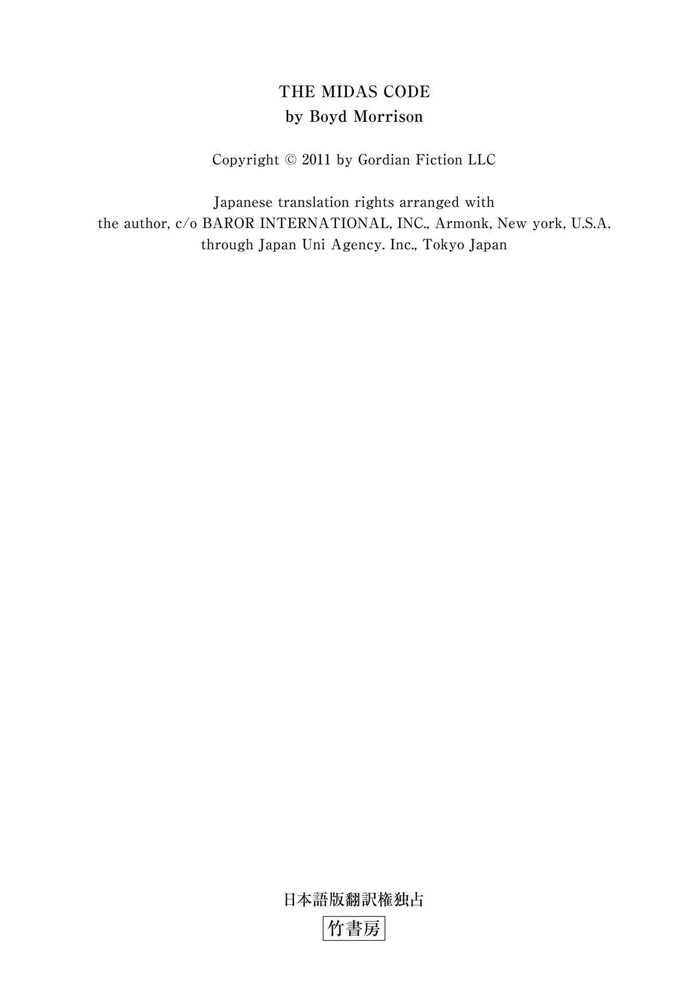
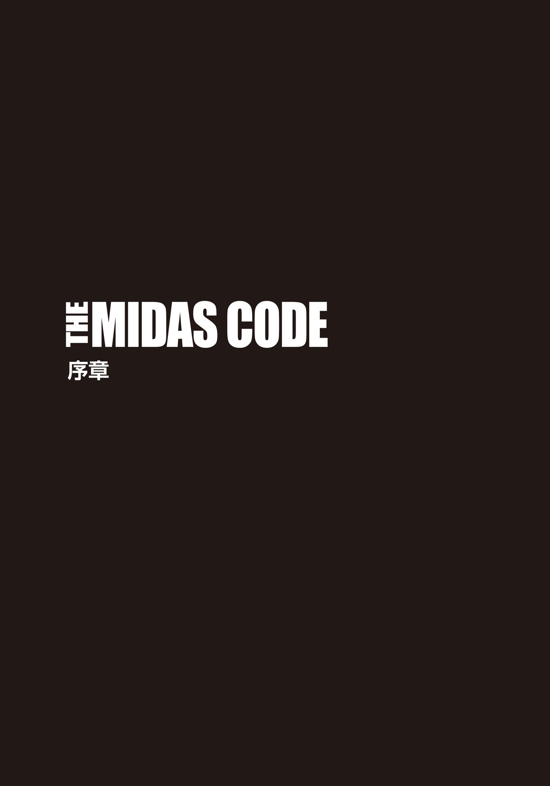
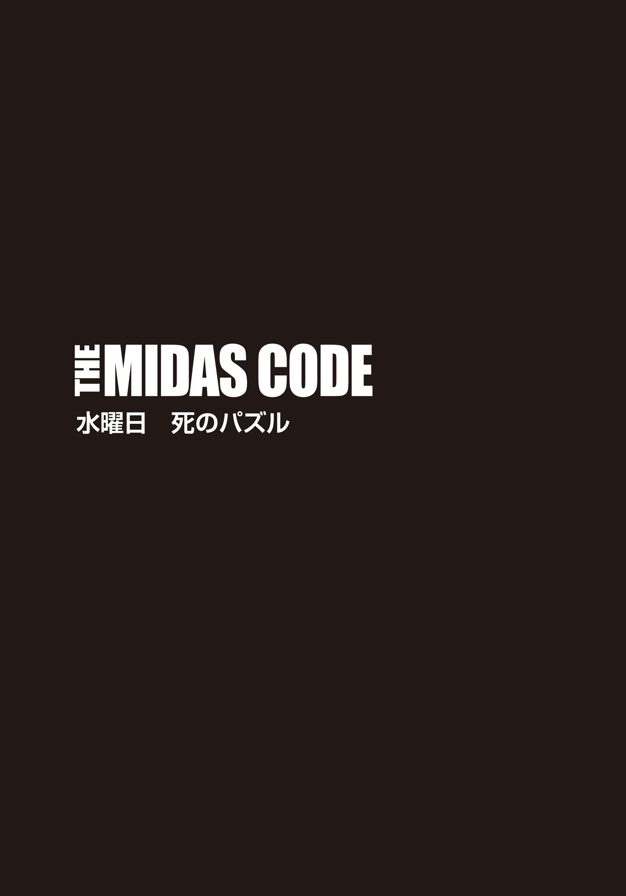
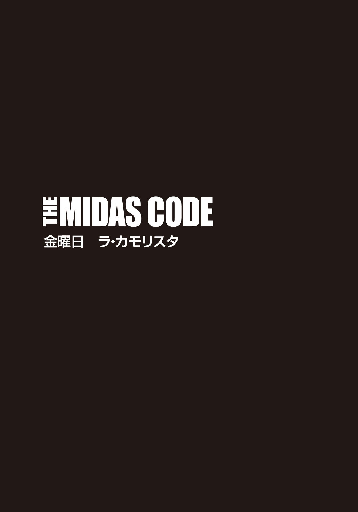
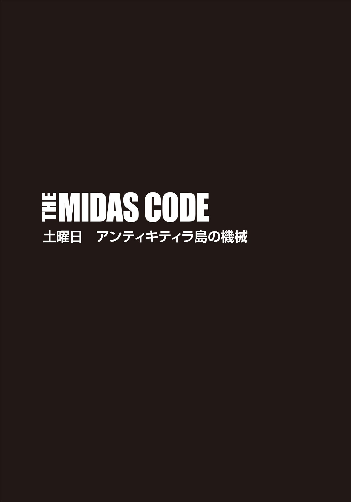
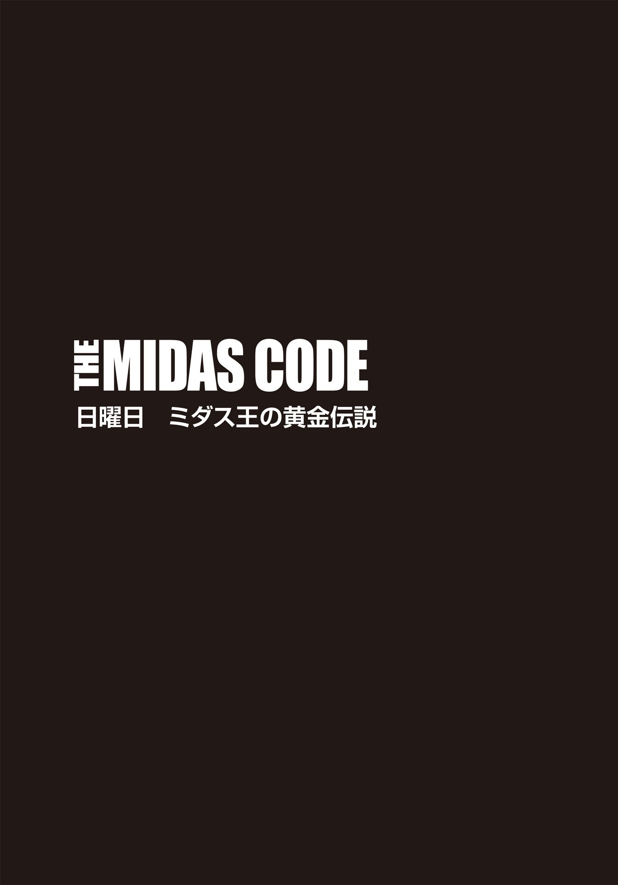
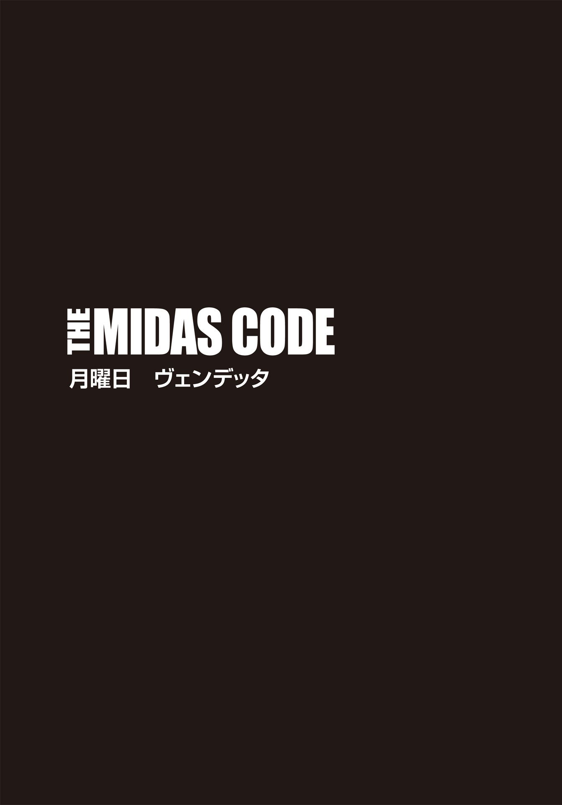

| ＴＨＥ ＭＩＤＡＳ ＣＯＤＥ 呪われた黄金の手【上下合本版】 (竹書房文庫) | |
| ボイド・モリソン | |
| (2015) | |
この作品は縦書きでレイアウトされています。
また、ご覧になる機種により、表示の差異が認められることがあります。
一部の漢字が簡略字で表示されていることがあります。

ＴＨＥ ＭＩＤＡＳ ＣＯＤＥ
呪われた黄金の手 タイラー・ロックの冒険② 上
主な登場人物
タイラー・ロック .........世界有数の民間エンジニアリング企業〈ゴルディアン・エンジニアリング社〉の主任エンジニア及び特殊作戦チーフ。
ステイシー・ベネディクト .........人気テレビ番組『チェイシング・ザ・パスト』の司会者。古典学者。
グラント・ウェストフィールド .........〈ゴルディアン・エンジニアリング社〉の電気工学のエキスパート。タイラーの親友。
エイデン・マッケンナ .........〈ゴルディアン・エンジニアリング社〉の情報検索のエキスパート。
マイルズ・ベンソン .........〈ゴルディアン・エンジニアリング社〉の会長兼最高技術責任者。
シャーマン・ロック .........退役した空軍少将。タイラーの父親。
キャロル・ベネディクト .........ロースクールに通う学生。ステイシーの妹。
ジョーダン・オール .........タイラーに接触してきた謎の男。
ジア・カヴァーノ .........不動産会社〈ＶＸＮインダストリーズ〉社長。
バイロン・ガウル .........オールの部下。
ピーター・クレンショー .........オールの部下。
フィリップス .........オールの部下。
ピエトロ .........ジアの部下。
サルヴァトーレ .........ジアの部下。通称サル。
オズワルド・ラムレー .........大英博物館のキュレーター。考古学者。
ランディ、僕の言葉は一語一句、君だけのために存在している。

十八ヶ月前
ジョーダン・オールは、スイッチの上で親指を持ち上げた。足元には、警備員二人の身体が転がっている。横に目を向けると、手下たちはこくりとうなずいた。準備万端だ。オールの指が、起爆装置のボタンを軽く叩 く。この瞬間に、五キロほど離れたピカデリー・サーカス近くの駐車場で、メルセデス・ベンツが吹き飛んだはずだ。
遠くの現場で犠牲者が出たかどうかなどわかるわけがないし、興味もない。だが、午前三時という時間帯を考えれば、死傷者ゼロの可能性が高いだろう。とにかく何よりも、テロ攻撃だと当局に思い込ませることが重要なのだ。不審な爆発事件の対応にロンドン警察が追われている間に、こちらは悠々とオークションハウスの大型保管庫を空にできる。
オールが目出し帽を被 ると、ルッソとマンジーニもそれに倣 って顔を隠した。保管庫内の監視カメラを壊すには、それなりに時間がかかるし、ドアを開けた瞬間、アラームが作動するだろう。
保管庫の入り口は、カードキーと暗証番号で二重にロックされている。カードキーの方は、都合よく死んだ警備員から頂戴していた。カードを差し込むや、即座にシステムが暗証番号を求めてきたので、注意深くタッチパネルに視線を滑らせていく。キーパッドの数字の配列が使用するたびに変化し、誰かが押しているときに指の位置を盗み見て番号を探るのは不可能だ。しかし、機械自体の設計は非常に賢いが、ここの管理人はあまりにも無防備だった。前日、顧客を装ったオールの前で、管理人は番号を打ち込む手元を隠そうともしなかった。上着のポケットに挿しておいたペン型カメラでその様子を録画するのに、オールはなんの苦労もしないで済んだ。
機械を過信して油断する、人為的ミスの典型例。オールはそう思った。セキュリティ・システムの設計者は、生身の人間が原因となる些 細 な部分をつい忘れがちだ。
オールが暗証番号を打ち込むと、ロック解除を示すブザー音が流れた。勢いよくドアを引いたが、アラーム音は鳴らない。しかし、磁気による封鎖が解除されたことで、セキュリティ会社の本部には、密 かに警告が発信されているはずだ。こんな時間に保管庫に何者かが立ち入ろうとしているのは、どう考えても怪しい。
手順として、セキュリティ会社はまず、現場の警備員に連絡を入れるだろう。そして、応答がなかった時点で警察に電話をする。だが、保管庫への侵入者など、今の警察にとっては優先順位が低い案件だ。テロ攻撃の恐れがある爆発事件で、当局はてんてこ舞い。最高の展開じゃないか。オールはほくそ笑んだ。
先頭を切って保管庫内に入り、辺りを見回す。彼自身は中を見たことがあったが、ルッソとマンジーニは監視カメラの映像でしか内部を知らない。四・五メートル四方の保管庫は、翌日の競売に備え、物品がきちんと陳列されていた。宝石、希少本、彫刻、金貨、骨 董 品 など、中世のとある領主の館の屋根裏で百年間眠っていた貴重品ばかりで、効果的に照明が当てられている。オークションでは、三千万ポンドを超える値が付けられるだろう。
中でも、極めつけの逸品は中央のショーケースに飾られていた。純金製の精巧な〝手〟だ。見事な光沢を放つ金属の美しさは、感嘆せざるを得ない。
禿 げかかった頭のマンジーニは背が低いが、腕の太さには目を見張るものがある。彼はベルトから大きなハンマーを引き抜いた。
「さあて、リッチになりますか」
高く掲げたハンマーが勢いよく振り下ろされるや、分厚いガラスは粉々に砕けた。マンジーニは腕を伸ばし、黄金の手をもぎ取った。そして、手早く気泡シートで包んでバッグに詰め込み、宝飾品のケースへと移動していく。
ルッソは対照的に、サスペンダーをしていないとズボンがずり落ちてしまうほどガリガリに瘦せている。両手で握ったハンマーを力任せにスイングさせた彼は、ピカソの絵画が飾ってあるショーケースを壊し、鋭いガラス片で傷つけぬようそっと絵を取り出した。
宝石や芸術品を搔 き集めるマンジーニとルッソを尻目に、オールは保管庫の奥へと進んだ。容赦ない一撃で古代写本三点を盗み出し、自分のナップザックにしまい込む。お次の戦利品は、貴重な金貨のコレクションだ。
わずか三分のうちに、保管庫はほとんど空になり、展示品は彼らのバッグの中に移動された。
「これでよし、と」
つぶやくように言ったオールは電話を取り出し、番号を押した。最初の呼び出し音で、相手が応答した。
〈どうだ？〉
「これから出る」そう短く返事をし、彼は電話を切った。
男たちは、身体を蜂の巣にされた警備員の死体をまたぎ、一目散に建物の出口を目指していく。遠くでサイレンが鳴っているが、自分たちの行き先は逆方向だ。表では、盗んだタクシーがすでに待機していた。運転席のフェルダーはハンチング帽を被り、メガネと付け髭 で人相をごまかしている。
車内にバッグを押し込み、オールたちも次々と乗り込んだ。
「うまくいったか？」
フェルダーの問いに、「保管庫の中、ビデオで見たまんまだったぞ」と、興奮さめやらぬルッソが早口に答える。「あの宝の山、三千万ポンドは下らねえだろうな」
「ブラックマーケットなら、その三分の一になっちまう」口を挟んだのはマンジーニだ。
「オールの買い手は一千万しか払わない」
「三千万だろうが一千万だろうが、そんな大金、目にしたことな──」
「さっさと運転しろ」
バカバカしいやり取りにうんざりしたオールが、フェルダーの言葉をさえぎった。まだ仕事は終わっていないのだ。
車は滑り出したが、彼らは皆、目出し帽を被ったままだった。ロンドンは世界でも、監視カメラの数が飛び抜けて多い。このような強盗事件の後、ロンドン警視庁は、犯人の手掛かりを摑 むため、カメラ映像をくまなくチェックするはずだ。
とはいえ、そんなことで足が付くわけがないと、オールは確信していた。
事前のシミュレーション通り、テムズ川のボート係留地点まで五分とかからなかった。船着き場の駐車場にタクシーを停め、一行は、あらかじめフェルダーが手配しておいたキャビン・クルーザーを目指した。船からフェルダーの身元が割り出される恐れはあったが、警察が当人にたどり着く頃には、問題ではなくなっているはずだ。
タグボートの船員として十年の経験を持つ生粋の英国人フェルダーは、全員が乗船するとすぐにクルーザーを出航させた。ドーバー海峡までノンストップで進み、ケント州で下船。そこからレンタカーでシーフランス社運行のフェリーに乗り換え、フランスのカレーに渡るという逃亡計画になっている。
舵 取りをフェルダーに任せ、残りの男たちは、暗いままの船室で戦利品をバッグから取り出し、品定めを始めた。ルッソとマンジーニは、イタリア語で何やら会話していたが、アメリカ人のオールが聞き取れたのは、二人の地元名「ナポリ」だけだった。手下たちを無視し、彼は古代の写本三点を細心の注意を払って調べていく。狙っていた一点を判別し、それを脇に置いた。残りの二点はオールにとっては無価値も同然だったので、ナップザックに戻した。
盗品の選別が終わる頃には、すでにイギリス海峡に入っていた。そろそろ時間だ。
オールはルッソとマンジーニに背を向け、サイレンサー付きのシグ・ザウエルを引き抜いた。現場の警備員二人を殺すのに使った拳銃だ。
「おい、オール」背後からルッソの声がした。「買い手にはいつ接触するんだ？ こっちはすぐにでも金が入り用なんだよ。わかるだろ？」
「大丈夫だ。金の心配など、もうしなくて済む」
そう言いながら、オールは振り向きざまにルッソを撃ち、間髪入れずにマンジーニにも弾丸をぶち込んだ。マンジーニの身体がぐらりと傾き、相棒の上に倒れ込む。その手には、奪ってきたネックレスが握られたままだった。
轟 々 と鳴る風とエンジンの振動音で、銃声は操縦席までは届いていないだろう。船室を出て階段を上がっていくと、操 舵 中のフェルダーがこちらに気づき、肩越しに笑顔を浮かべた。
「ちょっとでいいから、操縦を代わってくれないか。俺にもお宝を拝ませてくれよ」
「いいとも」
オールは小さく微笑み、片手で舵を握った。そして、フェルダーがくるりと背中を向けるや否や、二回引き金を引く。被弾した相手の身体は大きく撥 ね、階下へと転がり落ちて視界から消えた。
全員を始末した彼は、何喰 わぬ顔でＧＰＳの位置情報をチェックし、舵を旋回させる。目指すはケント州のレイスダウン＝オン＝シー。海岸沿いの小さな町で、そこにオールは自分の逃走用の車をあらかじめ停めておいた。フェルダーも足を用意していたはずだが、乗り手がなくなった自動車は、レッカー移動されるまで放置されるだけだ。オールにとってはどうでもいいことだった。そこからこちらにつながる証拠は何もない。
あと五キロで陸地という地点まで来たとき、オールはクルーザーのエンジンを止めた。ここなら、まだ十分な水深がある。船室に下りて三人の遺体をロープで船室の家具に括 りつけた後、小型爆弾二つを水面下の船体に設置し、ゴムボートと櫂 を準備した。搭載した爆弾の威力は船体を完全に破壊するのに十分で、一度スイッチを入れれば、数分でクルーザーは海の藻 くずと化すだろう。
黄金の手、宝石類、古硬貨、写本を防水性のバッグに入れ、濡 れないようにしっかりと封をした後、残りの物品をロッカーに押し込んで蓋を閉じた。船が川底に沈んだら最後、ここから足がつくことはない。ピカソの絵画などは大変高価だが、売り飛ばすと、自 ずと人目を引いてしまう。そんなリスクはごめんだ。宝飾品はバラし、金貨は溶かして金塊にし直せば、危なくない。それだけでも二百万ポンドは下らないはずだから、借金を完済し、最終目標達成の資金にするには十分だろう。
しかし、黄金の手と写本は取っておくつもりだ。オールの共犯者たちは知らなかったことだが、あの保管庫から盗み出した中で、この写本が最も価値がある。間違いなく、地球上で最高に貴重な逸品なのだ。所有者は、写本に何が書かれているか知らなかったに違いない。さもなければ、オークションに出したりなどしないだろう。
そこに何が書かれているのか、オールは知っていた。ルッソとマンジーニが宝石と金貨に目の色を変えている隙に、彼は文章を確認した。一番重要な一文は、写本の終わりの部分にあった。素人目には、ギリシャ文字がランダムに並んでいるようにしか見えないだろうが、これこそがこの文書がなぜそこまで貴重なのかの証 しになっている。
これは、紀元前二百年前の巻物を転記した中世の写本で、古代の科学者兼エンジニアによる論文だ。その人物こそ、かの偉大なギリシャ人アルキメデス。第二次ポエニ戦争の最中、彼は出身地であるシチリア島シラクサの防衛に参加。その発明の才により、ローマ将軍マルクス・クラウディス・マルケッルス率いる軍隊がシラクサを占領するのを三年間食い止めることができたという。
写本の文章には、スペースが入れられておらず、かつ全て大文字で表記されているため、全文を翻訳するのは相当骨が折れるし、退屈な作業になるはずだ。そのせいか、完全な内容は公になっていない。それでも、この大事な一文だけで、オールは確信していた。目の前の古代書には、莫大な宝の在り処を示す秘密が隠されていると──。
救命ボートに乗り込んだ彼は、櫂で漕 ぎ出し、クルーザーから離れ始めた。だが、まだ上陸するわけにはいかない。爆発の危険が回避でき、なおかつクルーザーの最期をしっかりと見届けられる位置でボートを止める。オールは小さく息を吐き、スイッチに指を置いた。爆破装置のボタンを押すのは、今 宵 はこれで二度目。親指に力を込めるや否や、爆発の凄まじい勢いで船体の二ヶ所に大きな裂け目ができた。クルーザーが漆黒の海底へ沈んでいくのを眺めつつ、オールは、写本に記されたアルキメデスの文章の訳文を思い返していた。
──この地図を統 べる者が、ミダス王の富を統べる──。

１
現在
「すみません──」
キャロル・ベネディクトは、スターバックス店内のカウンターに駆け寄った。「それ、私が注文した飲み物なんですけど」
彼女のカフェラテを持った若い男は、すでにカップの蓋を外しており、砂糖を入れるところだった。日課の十キロジョギングを終えた今、誰にも自分のささやかな楽しみを邪魔されたくはない。キャロルは目を細め、男の顔を睨 みつけた。ワシントンＤＣのアメフトチーム、レッドスキンズのキャップ帽を被 り、どこか寝ぼけ眼の相手は、手にしたコーヒーに視線を落としてから、こちらを見て言った。
「えっ、これ、君のコーヒー？」
彼女はわざとらしく笑顔を作った。「あなたのオーダーも、ダブルトールラテだったわけ？」
それを聞いた若者は首を横に振り、苦笑いを浮かべた。
「すまない。午前七時に起きてることなんて、滅多にないから」
彼はカップに蓋をし、それをキャロルに差し出した。
「いいのよ。じゃあ、素敵な夢を見てね」
皮肉たっぷりに言い、彼女は店の外へと向かった。
ドアを開けた途端、外の熱気にたちまち身体が包まれる。自宅アパートまで徒歩十分。家に着く頃には、相当の汗をかいた。ワシントンの夏場は湿度が高いと聞いてはいたが、ジョージタウン大学で大学院生向けサマークラスに参加した今年、初めてその蒸し暑さを実際に経験することになった。六月半ばの今朝も、かなりの湿気を覚悟していたものの、吸放湿性と速乾性に優れたジョギングウェアのおかげで、思いのほか、ひどい見てくれにはなっていない。
キャロルは、スリムさを維持するために朝食は摂 らないことにしている。ベッドルームがひとつだけのこぢんまりとしたアパートに戻ると、エアコンを強に設定し、ニュース番組を点 け、クールダウンのストレッチの合間に残りのカフェラテを飲み干した。それから、できるだけ低い温度でシャワーを浴びる。心地よい冷水のスプレーに鳥肌が立ち、軽いめまいを覚えるほどだったが、気分は爽快だった。
外の暑さを考えて、タンクトップと短パンというラフな格好に着替えたが、上に羽織るスウェットシャツをバッグに詰め込まなければならない。教室内はいつもエアコンが効きすぎているからだ。
靴を履こうとしたちょうどそのとき、玄関の扉がノックされた。驚いたキャロルはいきなり立ち上がったため、立ちくらみを覚えてよろめきそうになった。下駄箱にもたれかかり、頭を軽く振る。大したことはない。問題なく歩けそうだ。だが、朝の七時半に、一体誰が──？
覗 き窓からドア向こうを見やると、スーツ姿の白人男性が立っていた。がっちりした体格だが、背はそれほど高くない。自分と同じくらいだろうか。
「どなた？」ドア越しに訊 ねてみる。
「ミス・ベネディクト、私はアーリントン警察のウィルソン刑事です。お話ししたいことがありまして」
刑事？ キャロルは眉をひそめ、「ＩＤを見せてもらえます？」と頼んだ。自分はここでひとり暮らし。慎重さは自己防衛の基本だ。
「もちろん」
男はウォレットを取り出し、覗き窓の前に掲げた。警察バッジと身分証、アーリントン警察のロゴが見て取れる。大丈夫そうね。キャロルはドアノブに手をかけた。ところが、急に全身が倦 怠 感で包まれ、ふらついた彼女は戸口脇の壁に寄りかかる形となった。一体どうしたんだろう。さっきまでなんともなかったのに。風邪？ ダメよ。授業には絶対出席しなきゃ。休むと成績に響いてしまう。
気持ちを奮い起こした彼女は、平静を装ってドアを開け、刑事に言った。
「お話って......用件はなんですか？」
正直なところ、刑事が訪ねてくる理由は見当もつかない。犯罪に関わったことなどないし、せいぜい駐車違反の切符を一度切られたくらいだ。
濃い一本眉のウィルソン刑事の鋭い目が、キャロルを捉えている。だが、心中を察するには、あまりに無表情だった。
「ステイシーについてです」
刑事が発した名前に、彼女は凍りついた。
「ステイシー!? 姉に何かあったんですか？」
二人は昨晩話をしたばかりだ。姉は普段通りで、何も変わった様子はなかった。急激に不安に襲われたキャロルの体内をアドレナリンが駆けめぐり、気分の悪さなど吹き飛んでいた。
「実は、シアトルのホテルで人質事件がありました。そこで署まで来て、シアトル警察に協力していただきたいのです」
人質事件！ ステイシーが？ キャロルの胸がギュッと締めつけられる。
「姉は無事なんですか？ ケガは？」
「現時点では、負傷したなどの情報は入ってきていません。とにかく、署までご同行願います。道すがら、詳しい話をさせていただきますので」
「わかりました。バッグを持ってきます」
部屋に戻ったキャロルは、鍵と携帯電話を摑 んでバッグに入れ、大急ぎで靴を履いて後ろ手にドアを閉めた。姉がなんらかの事件に巻き込まれ、人質になっている──。この瞬間も、銃口を突きつけられ、その命は風前の灯 かもしれない。ステイシーがどれだけの恐怖に怯 えているかを想像し、キャロルの胸は今にも押し潰されそうだった。
階段を下りて表に出たとき、彼女はつまずき、ウィルソンに身体を受け止められた。
「大丈夫ですか？ 顔色がすぐれないが」
「なんだか、急に身体がだるくなって──」
そう言い終えるか終えないうちに視界がぼやけ始め、ウィルソンに支えられながら駐車場を横切っていく。途中、膝に力が入らなくなり、二度も倒れそうになった。彼の手がなければ、もはや歩けない状態だった。
警察の覆面パトカーが待っていると思いきや、ウィルソンが案内したのは、白い大型バンだった。助手席から出てきた誰かが、後部座席のドアを開ける。その男を見て、キャロルの胃袋は冷たい手で摑まれたかのように縮み上がった。そいつは、レッドスキンズのキャップ帽を被っていたのだ。間違いない。スターバックスでカフェラテを間違えたあいつだ。だが今は、寝ぼけ眼ではなく、獲物を狙うコブラと同じ冷徹なまなざしでこちらを見ている。
これは罠 だ！ そう悟ったキャロルが助けを求めて叫ぼうとした矢先、ウィルソンの大きな手に口を塞がれた。
「どうやら、俺のパートナーの顔を覚えていたようだな」
耳元で刑事──いや、きっと刑事というのは噓だろう──が囁 く。彼女は必死にもがこうとしたが、まるで茹 ですぎのスパゲッティのように身体がぐにゃりとなり、腕にも脚にも力が入らない。その直後、ついに意識も混 濁 し始めた。
ウィルソンはキャロルを車の中に押し込み、手首と足首に手錠をかけた。ドアが閉められ、車が発進するのがわかり、彼女は再度叫び声を上げようと試みる。しかし、濃厚なシロップで口内が満たされているのかと思うほど、舌が重く、動かせない。誰かに届く悲鳴どころか、弱々しいすすり泣きにすらならなかった。
「薬......を飲ませた......わね？」
彼女の問いに、隣で見張るウィルソンは首を縦に振った。
「ロヒプノールなら、簡単に手に入る。ここらの大学のキャンパスでもな」
ロヒプノール。〝ルーフィ〟とも呼ばれる睡眠薬の一種で、デートレイプ・ドラッグとして知られている。スターバックスでキャップ帽の男がコーヒーに盛っていたに違いない。これは、最初から仕組まれていたのだ。
全てを理解したキャロルは、「ああ......なんてこと......」と漏らした。
「心配するな。おまえをどうこうするのが目的じゃない。別件を処理するのに、数時間おまえが必要なだけだ」
「じゃあ......何が......目的......？」
「おまえの姉さんにあることをしてもらいたい。それでおまえを利用する」
「ス......テイシーに......何を......したの？」もはや、まともに発音できず、まぶたを開けているのさえ辛い。
「何もしない。おれたちに協力してもらえばいい。おまえの身を案じた姉さんは、間違いなく手を貸すことになるだろうな。さもないと──」
ウィルソンは話し続けていたが、どんどん声が遠ざかっていく。もう目の焦点が合わない。キャロルはまぶたを閉じ、たちまち暗闇の静寂が全てを包んでいくのを感じた。
２
ドクター・ロック、電話に出ろ。残された時間は少ないぞ。
携帯電話のメール画面を覗き込み、タイラー・ロックは、それがジョークなのか、それとも広告に興味を持ってもらうための宣伝文句なのかを見極めようとした。シアトルからブレマートンまでフェリーで一時間。出航して十分足らずで、すでに三度も見知らぬ番号からの着信があった。彼は電話を無視していたが、今度はメールが届いた。タイラーの携帯番号を知っているのは、アドレス帳に登録された人物だけ。普段、彼は知らない番号からの電話は取らないし、そもそも重要な用件があるなら、相手は留守電にメッセージを残すはずだ。
フェリーは満員にはほど遠く、定員の半分ほどしか乗船していなかったので、タイラーはベンチ二つを独占し、向かい側のシートに足を投げ出した。そばには誰もいない。これが別の日だったなら、親友のグラント・ウェストフィールドは隣でスマホゲームに興じていただろうが、バンクーバーで週末を過ごすため、ひと足先の便に乗船していたのだ。彼らは、海軍基地の新弾薬庫建設の仕事を受け、二ヶ月間、週に三日は、シアトルとブレマートンを行き来する生活を送っていた。
再び電話が鳴った。また例の番号だ。タイラーはコーヒーをすすり、遠ざかっていくシアトルの地平線に目をやった。今は、六月十六日の午前八時四十分。六月と言えど、太陽はどこにも見えない。低く垂れ込めた厚い雲とシトシト降るこぬか雨は、地元シアトル人が〝ＪＵＮＥ‐ＵＡＲＹ 〟と呼ぶ典型的な天気だ。鬱屈とした六月の曇り空は、やがて、太陽が燦 々 と降り注ぐ七月の青空に取って変わるのだが。
どうやら勧誘の電話ではなさそうだ。大体、電話営業してくる人間は、こちらをドクター・ロックとは呼ばないし、彼は医師ではない。確かに博士号を持っているが、ドクター・ロックとかロック博士などと呼ぶのは、コンサルティングのクライアントだけで、自分をからかうとき以外、同僚がその呼称を使うことはない。
仕事の関係者からの電話である可能性はあったものの、ブレマートンに到着する前に目を通さなければならないメールが五十通ほど溜 まっており、通話で時間を取られたくはなかった。タイラーは再び留守電モードに設定し、電話をしまい込んだ。ところが、ノートパソコンに向かってほどなく、メールの着信音がポケットから聞こえてきた。彼はため息をつき、しぶしぶと携帯を取り出す。
ドクター・ロック、電話に出なければ、二十八分後におまえの命はない。
何が書かれているのかを把握するのに、タイラーは三回メッセージを読み直さなければならなかった。ノートパソコンを閉じ、姿勢を正して向かいのベンチから足を下ろす。ゆっくりと周囲を見渡してみたが、自分に興味を示している者はいない。
そのとき、電話が鳴った。あの番号だ。
タイラーは画面をタップし、応答した。「もしもし？ そちらは？」
〈おまえがこちらの指示に従わない場合、フェリーの乗船者全員を殺す。そう計画している者だ〉
聞こえてきたのは、しゃがれた男性の声だった。だが、特徴的な訛 りはない。
「今すぐ電話を切って、警察に通報することもできるんだぞ。ＦＢＩが駆けつければ、あんたにとって最高の一日になるだろうな」
〈通報するかしないかは、おまえ次第だ。だが、何を通報する？ 私の電話番号か？〉男はおかしそうに小さく笑った。〈これは現金で支払ったプリペイド携帯だ。私は慎重に、なおかつ用意周到に事を進めている。通報される可能性を考えていないとでも？〉
タイラーははたと考えた。相手は何を脅しているのか？ いや、そもそも何か脅しているのか？ 男の言う通りだ。即座にこの電話を切り、警察にかけることもできるが、今の段階では脅迫されているとは言えない。
「一体全体、何が望みなんだ？」
〈おまえさんだよ、ドクター・ロック。ああ、この呼び方はちょっとばかり仰々しいな。単にロックと呼ばせてもらおう〉
「バカげてる。そんなことはどうでもいい」
もったいぶる相手に、タイラーは苛 立 ちを覚え始めていた。
〈今はバカげているように思えるかもしれないが、数分も経 てば、全てわかる〉
「よし、言い方を変えよう。なぜ俺に電話をしてきた？」
〈おまえが必要だからだ。マサチューセッツ工科大学の機械工学の学士号。スタンフォード大の博士号。戦闘工兵中隊の指揮官だった元陸軍大尉で、爆破や爆弾処理のエキスパート。現在は、世界有数の民間エンジニアリング企業ゴルディアン・エンジニアリング社の特殊作戦チーフ。四十路 を迎える前に、それだけのキャリアを積んでいる。履歴書の上では完璧だ〉
「どうやら、俺が何者かは知っているようだな。それで、この状況を真剣に受け取るべき理由は？」
かすかなせせら笑いの後、男は言った。
〈理由？ パソコンの方に二枚ほど写真を送ってある。それを見れば、事態がどれだけ深刻かわかるはずだ。そのフェリーはＷｉ‐Ｆｉ完備だから、確認してみろ。待っててやるが、急いだ方がいい〉
携帯を片手に持ったまま、タイラーは不承不承ノートパソコンを開き、メールボックスをチェックした。見知らぬアドレスからの新着メールが一件。タイトルは「残り二十七分」となっている。クリックしてメールを開くと、本文は何もなく、写真が二枚添付されているだけだった。一枚目には二軸トラックが写っており、車体には、〝シルバーレイク・トランスポート〟というロゴが見える。二枚目は冷蔵庫の写真で、ドアが開いたままになっていた。中には透明なプラスチック容器が置かれている。瞳を凝らすと、容器がビヤ樽 ほどのサイズで、上部が布で隠されているものの、グレーの粉状の内容物で満たされているのがわかった。だが、容器の正面に据えられたデジタル時計を捉えるや、タイラーは目を剝 いた。
──カウンター!?
急激な吐き気が彼を襲う。しかし、船酔いなどではない。現に、外は凪 の状態で、穏やかな大海原が広がっている。
「──それで？ 写真は見せてもらった」
タイラーは努めて冷静に返事をしたものの、頭の中ではすでに、どうやって乗船者に救命ボートに向かえと警告すべきかを考え出していた。
〈おまえなら、真摯に対応すると思っていたよ。どうだ、見た瞬間、爆発物だとピンと来ただろう？〉
こちらの心を読むことを楽しんでいるような口調だ。
〈だが念のため、教えておく。冷蔵庫はトラックの中に置かれており、そのトラックは階下の駐車場にある。承知しているだろうが、警察には通報するな。こっちはおまえの行動を瞬時に把握できる〉
脅迫めいた響きが言葉に加わったが、タイラーはそれには動じなかった。
「乗船の際、危険物は持ち込めないはずだ」
〈ほう、私がハッタリをかましているとでも？ そういうおまえは、危険物のなんたるかを本当に知っているのか？ なら、二成分混合爆薬の定義を言ってみろ〉
試されていることは明らかだったが、タイラーは息を吸い込み、答え始めた。
「二成分混合爆薬とは、二つの異なる物質を含んだ爆薬だ。成分の配合次第で、非常に爆発性が高くなる。射撃訓練でもよく使われる代物だが、強力なライフルで撃つか、起爆装置を利用しない限り爆発はしない。今じゃインターネットでも購入可能だ」
〈ほら、私の見込んだ通り、おまえはかなり優秀じゃないか！〉
男は声を弾ませたが、すぐさま冷ややかなトーンに戻った。
〈冷蔵庫には、四十五キロほどの混合爆薬が収納されている。フェリーに十メートル近い穴を開け、車両甲板の車の半数を火だるまにするには十分な量だ。そうなれば、乗船している人間のほとんどは生存できまい〉
四十五キロの混合爆薬──。爆発物のプロフェッショナルであるタイラーにとって、それがどれだけの脅威かは瞬時に判断できた。しかし、相手の意図が読めないうちは、一方的に与えられる情報を鵜 呑 みにはできない。
「埠 頭 には、爆発物探知犬もいた。おまえの話が本当なら、乗船前に爆薬は嗅ぎ出されていたはずだ」
〈私は慎重深く、用意周到だと言っただろう？ 爆薬の臭いが漏れないよう完璧に密封し、運び屋として金策に困っていた大学生を雇った。たった三百ドルで、ほいほい違法行為に手を貸す若造がいるとはね。この経済不況のご時世は、私にとって好都合だった〉
「フェリーを爆破したいなら、なぜ俺に爆発物の存在を教える？」
〈いいか、よく聞け。まずはトラックのところまで行け。荷台の扉は南京錠で施錠されているが、鍵は左車輪のフェンダー内にテープで留めてある。さあ、行動開始だ。さもないと、船がブレマートンに到着できなくなるぞ〉
ブレマートン。その地名を耳にした途端、タイラーの頭に恐ろしい青写真が浮かんだ。あそこには海軍基地がある。この男は、こちらの立場を利用し、爆弾入りのトラックで基地に突っ込ませるつもりなのか？
「つまり、俺に自動車爆弾で自爆テロを起こせと？」
そんなことは絶対にさせない。基地の入り口に到達する前にトラックを捨てる策を、彼は必死に思いめぐらせた。
電話の向こうからは、高笑いが聞こえてきた。
〈自爆テロ？ 見当違いも甚だしい〉
タイラーは眉をひそめた。「なら、俺に何をさせる気だ？」
その問いに対し、相手が投げてきた要求は、彼をさらに困惑させるものだった。
〈ロック、おまえはヒーローになるんだ。例の爆弾は、二十四分三十秒後に起爆するようセットされている。ぜひ解除してもらいたい〉
３
シェラトンホテルのロビーでエレベーターを待ちながら、バイロン・ガウルは周囲に目を光らせていた。当ホテルで開催される会議のために、それなりにセキュリティは強化されていたが、今のところは全て想定内の厳重さだった。この日を迎えるにあたり、一週間前から綿密な現地チェックを行い、ミッションの準備を整えてきた。しかし、ホテルが建つバージニア州タイソンコーナーは、ワシントンＤＣにほど近いゆえ、いつなんどき思いがけないセキュリティ体制が敷かれるか予測できない。特に今回は、アンコンベンショナル・ウェポン・サミット（Unconventional Weapon Summit）──非通常兵器会談──と呼ばれるペンタゴン主催の会議だ。不測の事態に備え、気を緩めることはできない。
二人の陸軍少佐が会話をしながら、こちらに近づいてきた。ガウルが彼らに会釈すると、向こうも同じようにうなずいて挨拶をした。上級の人間が脱帽している場合、階級が下の者は必ずしも敬礼する必要はない。ガウルは、大尉の階級章と「ウィルソン」というネームタグを付けたクラスＡの陸軍ユニフォームを着用していた。この軍服も肩章や装飾品の類も、全てインターネットで手に入れたものだ。だが、変装道具は難なく調達できても、平均以下の身長で、平均以上の筋肉質の体型にフィットするサイズを見つけるのは、そう簡単ではなかった。
何か訊ねられるかもしれないとガウルは身構えたが、会話に没頭していた少佐たちは、こちらを気に留めることなく通りすぎていく。実際に必要となるかどうかは定かではないが、一応、〝ウィルソン大尉〟の作り話のバックグラウンドは語れるようにしてある。
ウィルソンは、ウィーバー・ソリューションズと呼ばれるワシントンＤＣのシンクタンクの連絡将校だ。まあ、同様のシンクタンクは、ＤＣには何百と存在しているが。彼は、軍事及び民間目的で使用可能な最新技術と戦略を学ぶべく、このサミットに参加。実際、この手の軍関係会議が毎週のように開かれているものの、ガウルの〝標的〟が登場する予定となっていたのは、今回のものだけだった。
エレベーターが到着し、ガウルは少佐たちと一緒に乗り込んだ。最初に止まった階で扉が開くと、会場のにぎやかな物音が一気に飛び込んできた。現在時刻は、十一時半を少し回ったところで、午前の部のセッションが終了した直後。例の人物も基調講演を行ったはずだ。ちょうどランチタイムの休憩時間となり、参加者たちがあちこちにあふれている。少佐たちはエレベーターを降り、きちんとした身なりの民間人二人が乗ってきた。ガウルが横目で名札を確認すると、〝エイデン・マッケンナ〟と〝マイルズ・ベンソン〟と書かれていた。
表現はおかしいかもしれないが、その民間人たちは、まるでＳＦ映画に出てくる強化人間のようだった。マッケンナの頭には、ワイヤーで耳とつながった黒い装置が取り付けられている。頭脳に直接接続された補聴器か何かだろうか。その横のベンソンは、ガウルが見たこともない形の電動車イスを運転していた。イスの部分が二輪車の上でバランスを取り、どう考えても物理法則を無視しているとしか思えない。なぜなら、座っているベンソンの目の高さが立っているガウルとほぼ同じなのだ。
そのベンソンはスーツ姿だったが、ジムで時間をかけて鍛えたような頑強な上半身をしていることは、誰の目にも明らかだった。鋭いまなざしと短く刈り上げた髪型から、元軍人だと容易に推測できた。きっと、イラクかアフガニスタンで負傷したのだろう。黒縁のメガネをかけたマッケンナは、いかにも調査分析官という面持ちだ。そのヒョロリとした体型が、日々、タイピングよりきつい仕事はしていないのを物語っている。
「あなたの申し出を彼が受けると思ってるんですか？」
マッケンナはアイルランド訛りで言った。
「わからん」ベンソンが小さく首を振る。「私の売り込み次第だな」
「さっきの基調講演、なかなか素晴らしいものでしたね」
「だからこそ、彼が必要なんだ」
エレベーターが中二階に到着し、扉が開く。
「キャピタル・クラブはどこにある？」
ベンソンはエレベーターを降りながら、マッケンナに訊ねた。
「左です。たぶん」
その答えに、車イスを巧みに操作し、左へと向きを変える。実に自然な動きだ。
「そうか。テーブルを予約しておけばよかったな。少将には、我々の間に座ってもらわないと」
ガウルは、曲がり角まで二人の後をついていった。マッケンナとベンソンはガラスドアを抜け、レストランへ入っていったが、彼はその手前でいきなり足を止めた。そして、まるで方向違いに気づいたかのように演技し、くるりと向きを変えて中二階の会議室を目指し始めた。
会議の出席者が次々に部屋から出て、ランチ先へと向かっていく。あるいは、セッション後のおしゃべりに興じるため、廊下でうろつく者もいた。服装から判断すると、軍人と民間人の割合は五分五分といったところか。ガウルはすぐさま、彼らの中に紛れた。
会議のプログラムを眺めつつ、通路をぶらぶらと歩いてみる。キャピタル・クラブのガラスドアの前を通過したものの、標的の姿は見えない。エレベーター付近の空間を見つけて佇 むが、壁には寄りかからなかった。〝ウィルソン大尉〟という軍人になり切るため、ガウルは背筋をピンと伸ばして立っていた。
そのとき、携帯電話が震え、メールの着信を告げた。オールからだった。
こっちは進行中。そっちは？
ガウルは急いで返信を打った。
──全て準備万端だ。
やつを見つけたか？
──まだだが、ここにいる。ランチを食べに来る予定だ。
よし。二十分後には明らかになる。用意しろ。
──了解。
エレベーターや階段を見張る以外にすることがなく、ガウルは再び歩き出し、会議のプログラムを眺めた。標的が行う基調演説の項目を見つけ、にやりとほくそ笑む。国防脅威削減局（Defense Threat Reduction Agency）、通称ＤＴＲＡの元軍事指導者による講演で、タイトルは、「非対称的脅威及び反応：簡易大量破壊兵器に如 何 に対処するか」。ずいぶんと仰々しいお題だが、そんな脅威削減のエキスパートが、己に迫りつつある脅威に気づいたら、どんな対処法を見せるのだろう。やつが驚く顔が早く見たい。ガウルの胸は躍った。
空のエレベーターが三度到着し、四度目にドアが開いたとき、待ちかねていた相手がようやく登場した。最近退役したばかりの空軍少将は、ガウルが記憶しておいた写真よりも白髪 が増えていたが、強烈なまなざしとがっちりとした顎は全く変わっていない。レストランに向かう元少将に、周囲の視線が注がれていた。
ガウルは携帯電話を取り出し、オールにメールを打った。今、シャーマン・ロックが目の前に現われたと──。
４
タイラーは、何事にも義務感や目的意識を持って取り組みたいと考える人間で、軍隊のような共同作業における仲間意識の強さも大事だと考えている。しかし、死の恐怖を感じる事態となると、話は別だ。彼が軍を辞め、一民間人に戻った理由もそこにある。車を全速力で走らせたり、爆弾を処理したりと、リスクを承知で賭 けに出たこともあったが、それは、自分で物事をコントロールできる状態にあったからだ。今回は明らかに、タイラーが主導権を握れる状況ではない。
〈──待たせたな〉
しばらく無言だった男が、再び電話の向こうから話しかけてきた。
〈他の用事を済ませていた。ロック、聞いてるか？〉
「ああ、聞いてる」彼は、フェリーの階段を下りながら答えた。言うまでもなく、目指すは車両甲板だ。「わざわざ設置した爆弾なのに、俺に解除させたい理由は？」
〈特殊な仕事に見合うスキルを持った人間が要る。だが、本題に入る前に、おまえが適材かどうか確認しないといけない〉
「仕事？」タイラーは眉をひそめた。「なら、単純に俺を雇えばいいじゃないか」
〈まあ、これが面接だと考えたまえ。とにかく、この間にも時計の針は進み続けている。急いだ方がいいぞ〉男の顔は見えないが、薄ら笑いを浮かべている気がした。〈それから、持っている鍵類は、トラックに行き着く前に、おまえの赤いスポーツカーのダッシュボードの小物入れに入れろ。車はロックしないでおけ〉
「どうして？」
〈どうしてもだ。爆弾は俺の意のままなんだぞ。黙って従え〉
今は言う通りにするしかなさそうだ。悔しさで唇を嚙 みしめつつも、「いいだろう。今、トラックに向かっている」と、彼は報告した。「このまま会話をしながら、一緒に仕事 とやらを進めていくなら、あんたをなんて呼ぶか決めた方がいいな」
〈おいおい、勝手に話を進めるな。一緒に仕事をするのは、せいぜいこれから二十二分の間だけだ〉
タイラーは時計をセットし、残り時間を表示させた。「俺は自信家なもんでね」
その言葉とは裏腹に、彼の胸中には不安が渦巻いている。爆弾を取り扱う際は、どれだけ周囲がベストな状態だったとしても、用心に用心を重ねなければいけない。男の狙いはわからないが、その話しぶりから判断するに、頭は切れそうだ。甘く見ない方がいいだろう。
〈自信家？ 偉そうに。私からすれば、おまえはただの自信過剰だ〉
男は、タイラーとの言葉のキャッチボールを楽しんでいるかに思えた。
〈さっさとトラックまで行け。行けば、私の呼び名もわかる〉
あんたをなんて呼ぶべきかは、大体見当がついている。タイラーは心の中で言い放った。しかしながら、なんで自分は、クレイジーな人間を惹 きつけてしまうのだろう。
車両甲板に着いた彼は、愛車ダッジ・バイパーまで行き、男に言われた通りに鍵をダッシュボードの小物入れに押し入れた。自分は最後の方に乗り入れたので、車は船尾近くに置かれている。背筋を伸ばして前方を見ると、数台のトラックが目に入った。通常、商業トラック類は最初に乗船させられるのだ。タイラーはそちらの方向へと進んでいったが、腕時計の表示が気になり、自ずと小走りになる。そしてついに、写真と同じ〝シルバーレイク・トランスポート〟のロゴ入りの車体を発見した。車両甲板を斜めに横切りながら、彼は男に訊ねた。
「それで、俺は何をすべきなんだ？」
〈指示は冷蔵庫に貼りつけてある。今回のために、特別に書かれたものだ。まあ正確には、おまえ用ではないんだが......とにかく、すぐに私の言葉の意味がわかるだろう〉男はいったん言葉を切り、やや威圧的な口調で先を続けた。〈いいか、警察に通報しようなどと考えるな。おまえの一挙一動は監視されているし、もちろん声も筒抜けだ。こちらには起爆装置がある。仕事に専念し、行儀よく振る舞え。ＳＷＡＴが到着したり、救命ボートが使用されたりする気配があれば、フェリーは......ドカン！ 一巻の終わりだ〉
「仕事が無事に済んだら？」
〈そのときは、また電話する〉
「失敗したら？」
〈おまえは船とともに海底に沈む。ただそれだけのことだ。健闘を祈る〉
男からの電話はそこで切れた。
タイラーはトラック後部にたどり着き、左車輪の隙間に手を差し込んだ。男の言葉通り、鍵はタイヤ上部のフェンダー内にあった。周囲を見回したが、犬を散歩させている年配の女性が遠くに見えただけで、他には誰の姿もない。鍵は、荷台の扉にかけられた南京錠の穴にフィットした。すんなりと解錠できた彼は、今度は慎重に扉を上にスライドさせた。勢いよく開けた結果、爆弾のスイッチが入る仕組みの罠もある。そんな展開をあの男が望んでいるとは思えなかったものの、万が一に備え、タイラーは扉回りに目を光らせながら、開けていった。
今のところ、爆発物や導線、起爆装置らしきものは見当たらない。かろうじて車内に潜り込めるだけのスペースを確保したところで、彼は扉を押し上げるのをやめた。荷台のドアを全開にして、甲板員の注意を引く真 似 はしたくなかった。騒ぎになったら、あの男は躊 躇 せずにスイッチを入れてしまうだろう。車内に少しだけ光が射し込むくらいの隙間があれば十分だ。だが、荷台内の両サイドそれぞれに照明器具が取りつけられているのがわかり、タイラーはそれを点灯し、扉を閉めた。
ソファとテーブル、複数のイスの上に、箱がいくつも積み重ねられており、荷台中央には小ぶりの冷蔵庫が置かれていた。掛け金で留める、古いタイプのものだ。その扉には、茶封筒が貼りつけられている。タイラーは封筒を調べたが、危ないものではないと判断し、扉から剝がして開封した。
用紙が一枚だけ入っている。次に何をすべきかが書かれているのだろうと思いつつ、彼は紙を開いた。
ところが、中身はタイラーの予想とは違っていた。それは指示なのかもしれないが、あまり役に立つとは思えない。複数のパラグラフには番号がふられているものの、文章は英語ではなかったのだ。とはいえ、意味はわからずとも、その文字には馴 染 みがある。エンジニアの学位を取るために勉学に励んでいた頃、どの文字も方程式で使っていたからだ。
そう、紙面に書かれていたのは、ギリシャ語だった。
何かの暗号か、自分へのメッセージが隠されていないか、タイラーは目を滑らせていった。爆弾処理の助けになる公式や方法が載っているかもしれないと、ギリシャ語の文字を舐 めるように見たが、何のヒントも見つからない。全くもって意味不明だった。あの男は、こちらの経歴を熟知しているかのような口ぶりだったが、外国語はタイラーの得意分野ではないと知っていたのだろうか。フランス語とスペイン語でなら、ビールを注文し、手洗いはどこかと訊ねるくらいはできる。しかし、正直、それが限界だ。
彼は紙切れを摑んだまま、困惑するしかなかった。だが、この瞬間も、時計の針は動き続けている。どんな些 細 な手がかりでもいいから摑もうと、必死で男の言葉を思い出そうとした。そういえば、指示は、正確にはタイラー用に書かれたものではないと言っていたはず──。
じゃあ、一体誰に向けて書かれているんだ？
今はそれよりも、この文書を翻訳してくれる者が誰かいないかを思いつく方が重要だ。タイラーは必死に考えた。ところが突然、背後で荷台のドアがノックされ、彼は凍りついた。
「誰か中にいるの？」
女性の声だった。甲板員だろうか。
何も返事をしないとかえって怪しまれると思い、タイラーは「別に問題ない」と返事をした。「積み荷が緩んでいたから、直していただけで──」
「ねえ、ドアを開けてちょうだい」
残り時間、二十分。ここで煩わされるわけにはいかないと思ったものの、彼女を無視することで、かえって要らぬ注意を引いてしまう恐れがあった。さっさと追い返して、文書を訳す術 を探すことに集中しなければ。
タイラーは仕方なく荷台のドアを開けた。てっきり、鮮やかな青いユニフォーム姿の船のクルーが立っているのだと思い込んでいたが、そこにいたのは、黒い革のジャケットにジーンズ、スタイリッシュだが機能的そうなブーツという出で立ちの女性だった。肩にかかるブロンドの髪が顔の輪郭をふんわりと包み、薄化粧で頰骨の高さとやわらかな唇がかえって際立っている。年の頃は、自分と同じ三十代だろうか。紛れもなく魅力的な容姿の彼女に、彼はいささか面食らった。
だがタイラーは、それが誰なのか、すぐに思い出した。
──ステイシー・ベネディクト！
そう、彼女は、テレビ番組『チェイシング・ザ・パスト ～過去を求めて～』の司会者だ。
タイラーは何から説明していいのかわからず、最初に口をついて出たのは、「なぜ君がここに？」だった。
困惑の表情でこちらを見つめていたステイシーは、唐突でぶっきらぼうな問いかけで我に返ったようだった。
「実は、ある男に言われたの。トラックの中で私を待っている人物がいるって」
「しゃがれ声のやつか？」
「ええ、そうよ。でも、まさかあなただなんて──」
そのひと言で、ステイシーが自分を覚えていたことがわかった。タイラーはかつて、彼女の番組に出演していたのだ。どうやら自己紹介は必要なさそうだ。
指示は冷蔵庫に貼りつけてある。
電話口の男の言葉が蘇 る。
今回のために、特別に書かれたものだ。まあ正確には、おまえ用ではないんだが......とにかく、すぐに私の言葉の意味がわかるだろう。
となると、謎めいた指示書は、ステイシー・ベネディクトに宛てたものなのかもしれない。
「君、ギリシャ語を読めたり......しないよね？」
それを聞いたステイシーは、片眉を上げた。〝何、バカなこと訊 いてるの？〟とでも言いたげな顔だ。訊くまでもなかったか──とタイラーが肩を落としかけたとき、彼女が質問に答えた。
「私、古典学の博士号を持ってるのよ。もちろんギリシャ語も読めるわ。なぜそんなことを？」
なるほど、別の意味で呆 れたわけだ。タイラーは心の中で納得しつつ、持っていた用紙を差し出した。
「これが、理由だよ」
受け取った文書に目を滑らせ始めるや、ステイシーの表情が変わった。パニックになることもなく、叫びもしないし、泣きもしない。だが、みるみるうちに歪 んでいく顔からは、抑え切れないほどの怒りが湧き上がっているのが読めた。
ほどなく彼女は視線をタイラーに視線を戻し、こう訊ねてきた。
「爆弾はどこにあるの？」
その視線の強さには、揺るがない決意のようなものが感じられた。
５
ステイシーがトラックに乗り込むと、タイラーが背後で荷台のドアを閉めた。腰を落ち着け、彼女はもう一度冷静に文書を読むことにした。現代ギリシャ語で書かれてはいるものの、自動翻訳ソフトで作ったようなぎこちない文章だ。それでも、言っていることは把握できた。
トラック内に爆弾がある。この男と協力して無力化しろ。もし課題をクリアできなければ、おまえも妹も死ぬ。
わずか一時間前、ステイシーはニューヨークに戻る朝の便に乗るべく、荷造りをしていた。知らない男から電話が来たのは、そのときだ。しゃがれた声が冷たく告げた。おまえの大事なキャロルを誘拐したと──。送られてきた映像には、両手足を縛られ、猿ぐつわを嚙まされた妹の姿が映っていた。ステイシーは動揺のあまりわめき散らし、電話の相手が要求を呑ませるのに、まずは彼女をなだめなければならなかった。
男は、八時半出発のブレマートン行きのフェリーに徒歩で乗船し、そこで次の指示を待つようにと言った。電話を切ってからしばし、ステイシーは呆 然 としたままだった。滅多に泣かない彼女は涙に暮れることはなく、怒りとショックで震える己の身体を両手で抱き締めていた。妹も同じで、決して泣き虫ではない。両親の葬儀以降、涙を流したのは、愛犬スパーキーが死んだときだけ。ステイシーが十四歳、キャロルが十二歳の出来事だった。二人の不屈の精神は、アイオワの農場で生まれ育った環境に由来しているのだろう。それでも、タフな女だからといって、孤独を好むわけではない。少なくとも、目下の窮地にパートナーはいる。かろうじて面識がある程度の相手だとしても、だ。
実は、ステイシーとタイラーは今回が初対面ではなかった。九ヶ月前、世界各地の遺跡や古 の謎を追う彼女の番組で、インタビューしていたのだ。あのノアの方舟の発見に関わっていたとの噂 が流れ、タイラーはちょっとした時の人だった。インタビューの前、彼は、スポットライトを浴びるのは本意ではないと打ち明けてきた。自分は嫌だったが、上司がこの件を勝手に決めてしまったらしい。ところが、仕方なく出演したにもかかわらず、番組中のタイラーの態度はごく自然で、エンジニアとしての視点から、何世紀も前に作られた方舟の構造について熱く語ってくれた。説得が可能なら、レギュラー陣として採用したいほどだった。
ステイシーは原稿からそっと目を上げ、改めて目の前のタイラーをちらりと見た。ハンサムで凛 々 しい彼は、テレビ映りも文句ない。首の左側にギザギザの傷痕が残っているものの、身長は百八十センチを優に越え、茶色の髪と青い瞳の爽やかな青年だ。戸外での活動の多さを物語る日焼けした肌は男らしさを視聴者にアピールし、シワのない艶やかな額は、四十路前という年齢のわりには若々しい。ウィンドブレーカー、カーキ色のシャツ、ハイキングブーツという格好は、プロフェッショナルな雰囲気を損なわず、それでいて十分カジュアルだ。
「そこにはなんて書いてある？ 残り時間はあと二十分もない」
タイラーの言葉に彼女は我に返り、慌てて文書の文字に目を滑らせた。最初の一文は現代ギリシャ語で書かれていたが、残りは古代ギリシャ語だった。現代の言葉と全く違っているわけではないといえ、現代語ほど楽に翻訳できず、全て大文字なのも読みにくさを助長していた。
「冷蔵庫の扉には罠が仕掛けてある」ステイシーはギリシャ語を訳しつつ読み上げた。「罠を解除するには、ドアの下にあるスイッチを入れろ」
彼女の言葉に従い、タイラーはひざまずいてドアの下に手を忍ばせた。「あったぞ」
「スイッチを入れれば、扉が開くはずよ」
彼はうなずき、スイッチを押して把 手 をゆっくりと引いた。冷蔵庫のドアが少しだけ開く。
隙間を覗き込んだステイシーは、息を呑んだ。中の棚は全て取り除かれ、透明なプラスチックケースが置かれている。そのケースは樽型で、庫内の三分の二を占める大きさだ。内部は灰色の粉で満たされており、ケースの上部には麻布が掛けてあった。脇のフックには、ヒモが付いた小袋が吊るされている。樽の正面に据えられた液晶タイマーは、すでにカウントダウンを始めており、無情にも制限時間が十九分しかないことを示していた。
タイマーから出た複数の導線が、樽の中へと延びている。粉の中に埋められた装置につながっているに違いない。別のワイヤーの束は、布切れの下に続いている。そこの下には他の装置があるようだ。
「こんな爆弾、テレビでも見たことないわ」ステイシーは目を丸くして言った。胸は早鐘のように鳴っていたが、口調は落ち着いていた。ここで自分が木っ端微 塵 になることは、すなわちキャロルを道連れにすることを意味している。妹の存在が、今のステイシーを気丈にさせていた。
「起爆装置は粉の中に隠れている」ケースをチェックしていたタイラーが口を開いた。「そして、この粉はコンポジション爆薬だ」
「コンポジション......爆薬？」
「ＲＤＸとＴＮＴを主成分とした混合爆薬だろう」
「ＲＤＸ？ ＴＮＴ？」
「ＲＤＸは、トリメチレントリニトロアミン。ＴＮＴは、トリニトロトルエンという化学物質で──」
ステイシーは首を振り、「難しい説明はいいわ」と、タイラーの言葉をさえぎった。「それより、これ、本物なの？」
「見た限り、そのようだな」
タイラーが言うなら間違いない。ステイシーは彼のユニークな履歴を覚えていた。戦闘工兵中隊の指揮官だった元陸軍大尉で、任務のひとつは、ＩＥＤ（＝Inprovised Explosive Device）と呼ばれる簡易爆発物処理だ。
「おそらく、これだけの爆薬なら、この駐車デッキに大型車ほどの大穴を開けるくらいはできる」
「あら、そのくらいで済むわけ？ 気を遣って控え目に言わなくてもいいのに」
タイラーは小さく笑った。「その物言いなら、君は十分対処できそうだな」
「怖がるのは後回しよ」ステイシーは無理やり笑顔を作った。
「よし、肝が座っている君に加勢しよう。次は？」
彼女は続きを読み上げた。「ケース上部に被せてある麻布を、慎重に外せ」
布切れは、下の端が糸で結んである。タイラーがそれを解くと、箱がひとつ現われた。ステイシーは近づき、その箱をじっと見つめた。高さ三十センチ、幅十五センチほど。光沢があるブロンズ製だ。前面には文字盤があるものの、時計ではない。見たところ、針は動いておらず、文字盤には数字ではなく、ギリシャ文字が刻まれていた。各文字部分は十二分割され、十二星座の名前が表示されている。装置の左側面には、小さな把手が二つ。時計と同じ構造だった場合、これで針を動かすのかもしれない。
明らかに古めかしいデザインなのだが、装置そのものは真新しく見えた。樽からの導線はこの箱にも接続されているようだが、起爆装置が爆薬内にあるのなら、なぜこれが必要なのだろう？ ステイシーには全く見当がつかず、「一体全体、これは何なのよ？」と、自問してつぶやいた。
驚いたことに、その疑問にタイラーが即答した。
「アルキメデスが設計した装置のレプリカみたいなものだ。アストロラーベという天体観測機器があるが、こいつはジオラーベ。地球観測用の道具だと考えてくれ」
断言するような口調。彼は推測で言っているのではない。では、装置の正体を知っているというのか？ 困惑したまま、ステイシーは訊ねた。
「どうしてわかるの？」
タイラーは厳しい視線をこちらに向けた。
「それを組み立てたのが俺だからだ」
６
ウェストシアトルのビーチ沿いにある駐車場からは、ピュージェット湾の美しい景色が一望できる。湾を挟んだ向こう側には、ベインブリッジ島が見え、さらに奥のブレマートンへ進むフェリーが島の脇を通りすぎていくのを目で追えるのだ。ただし、それまで船が健在ならば、の話だが。爆弾のタイマーは、そのずっと前でゼロになるようにセットしてある。
レンタカーのＲＶの助手席でピーター・クレンショーが双眼鏡を覗く中、船はウェストシアトルの北を航行していく。
「タイラー・ロックが制限時間内に爆弾を解除できなければ、フェリーを監視する必要もなくなるがな」
オールの言葉に、クレンショーは双眼鏡から目を離さずに答えた。
「甲板で不審な動きがないかをチェックしてるだけだよ。やつが警報を鳴らしたりしてないかをね」
「それはない。今までのところ、私の意図をちゃんと理解している」
若い女性が、ジョギングをしながら向かってくる。サングラスをかけているので、彼女が自分たちを見ているかどうかはわからない。
「誰かに怪しまれる前に、双眼鏡を下ろしておけ。こんな場所じゃ、さすがにバードウォッチングを楽しんでいるとは思えないはずだ」
クレンショーは双眼鏡をシートの脇に置き、ノートパソコンの二つのビデオ映像に顔を戻す。ひとつは、トラック内の隠しカメラからのデータで、もうひとつは、トラック後部に設置したカメラの映像だ。オールは、自分が作り上げた指示書を読むステイシー・ベネディクトを見つめた。傍らのタイラー・ロックはヒモ付きの巾着を外し、中身を取り出したところだった。二千年以上前に考案されたパズルのピースで、全部で十四片ある。
「リアクションはどう？ やつに解けると思う？」
クレンショーの女々しいしゃべり方は、妙に癇 に障る。オールは嫌悪感を押し殺して答えた。
「ロックならできる。俺の目に狂いはない。やつは自分がやるべきことをきちんとこなす。このミッションをやり遂げるために不可欠な存在だ」
「でも、もしパズルが完成しなかったら？」
「ワシントン州に新しいフェリーが必要になるだけだ」
前屈 みになったオールは、ＧＰＳがちゃんと作動しているのを確認した。トラックの現在位置はピュージェット湾の真ん中。予定通りだ。
クレンショーの体臭が鼻につき、オールは咳 き込んでウィンドウを下げた。隣に座る相棒は手練 の爆弾設計者だが、不潔具合は相当なもので、時折、その強烈な体臭には殺傷能力があるのではないかと錯覚してしまう。ボサボサの髭 と油でべっとりとした髪の毛を一 瞥 し、一週間シャワーを浴びていなくても不思議でないと、オールは呆れ返った。Ｔシャツの下にビーチボールを隠しているのかと見まがうような太鼓腹で、顎はドーナツの粉まみれだ。生理的に受けつけられない相手だが、ロック同様、作戦成功にはその能力が必要だった。
オールは数ヶ月の間、反税団体過激派のひとりを装い、アメリカ政府を非難するアングラのチャットルームに参加し続けた。そして、ようやくめぼしい人物を見つけたのだ。それがクレンショーだった。電気関係の豊富な知識と高い技術を持つ、ある意味天才なのだが、高度なパイプ爆弾作製に執心したあまり、大学から追放されてしまう。なんとか監獄送りは免れたものの、社会不適合者の烙 印 を押されて就職もできないでいた。彼は、ネブラスカ州オマハの実家で母と同居せざるを得ず、合衆国への憎しみを募らせる日々を送っていたのだ。
オールとクレンショーは個人的にメールをやり取りし、一般市民のためにどんな行動を起こせるかを話し合うようになる。相手の信頼を得たところで、オールは、ニューヨーク北部に借りた物件があるから、そこで合流しようと持ちかけた。もちろんクレンショーの移動代はオール持ちだ。二人は銃を手に入れ、相棒はオールが調達した材料で爆弾作りに励むようになる。ほどなく、こちらから〝計画〟を打ち明けると、クレンショーは二つ返事で参加を決めたが、提示した報酬額二百万ドルに目がくらんだのは明らかだった。
六つ目のドーナツを摑んだクレンショーを見て、あまりの自制心の欠如にオールはげんなりした。欲望のままに砂糖と脂肪の最悪の組み合わせを食べ続けていたら、どんな結果になるのか、なぜ考えない？ 国にどれだけ不満を垂れていても、クレンショーは食べ物や寝る場所に困ったことはなかったし、常に自由気ままなライフスタイルを貫いてきた。生温 い人生を送ってきたこの男に、オールが歩んできた苦難の道のりは想像もつかないだろう。とはいえ、彼とて己の不幸な過去に固執しているわけではない。ただ、これまでの年月で学んだ重要な訓 えがある。自分が頼れる人間は自分自身だけということだ。
両親が十歳のときに死んで以来、オールはひとりで生きてきた。生前の両親は贅 沢 な暮らしぶりで、ひとり息子のオールはとことん甘やかされて育った。大きな邸宅に住み、欲しいオモチャはなんでも買ってもらえ、私立学校に通い、休暇はヨーロッパやハワイで過ごす──そんな何不自由のない生活が当たり前だと思っていた。そう、あの夜までは。
投資銀行家の父が、コネチカットの自宅近くの橋台に自家用車で突っ込んだのだ。助手席の母もろとも即死だった。ブレーキをかけた痕がなく、父の足がアクセルを踏んだままだったことから、警察は自殺だと断定した。ゆえに、保険会社から父に対する保険金は下りず、母は専業主婦だったので保険などかけていなかった。しかも、父は二ヶ月前に会社をクビになっていただけでなく、着服の事実を告発するとウォール街の各社から精神的に追い詰められていたという。普段から金遣いが荒く、稼いだ分以上浪費する日々だったため、親は財産どころか借金しか残さなかった。車の衝突が事故であろうと自殺であろうと、結果は同じだった。こうしてオールは、一文無しになった。
里親に預けられたものの、どいつもこいつも福祉手当が目当てか、里子を召使い扱いする最低の連中ばかりで、独り立ちを目指すオールは、隣人宅で盗みをして金を稼ぐようになる。最初は一ドルか二ドル、お菓子やマンガを買う程度を失敬していただけだったが、どんどんスケールが増し、気がつけば大金を奪い始めていた。今思えば大胆な手口だったにもかかわらず、見つかったのは一度だけ。家の主が、思いがけず愛人を連れて帰宅したときだった。少年院送りになった施設で最悪の時間を過ごし、オールは二度とバカな真似はしないと誓った。
十六歳で出所した彼は、年齢を偽り、建設現場で働き出す。それからの十年、オールは米国各地を渡り歩き、金になるなら合法違法問わずに片っ端から仕事をこなした。銀行の改装工事をしている際に、同僚から、楽な金 儲 けがあると誘われた。そいつは銀行強盗の計画を立てていたのだが、オールは昼間に銀行の金を強奪しようとするほど愚かではなかった。
その代わり、防犯設備の配線をいじり、夜中に十万ドルを奪って逃走したのだ。しかし、金遣いの荒さは父譲りで、彼は二ヶ月もしないうちに自身の分け前を使い果たしてしまう。こうしてオールは、建設現場で働くことをやめ、ハイリスク・ハイリターンの強盗稼業を始めたのだった。
彼は、警備体制が厳重な施設に押し入る方法を徹底的に研究し、自分よりも上 手 の盗みの達人と一緒に働いては技に磨きをかけていった。仕事の規模は大きくなる一方で、オールは細部まできっちりと強盗計画を練り上げ、仕事ぶりに定評がある連中を集めたが、強盗が成功しても、金は長続きしなかった。
盗みをしては二ヶ月ほど贅沢な暮らしをし、金が底をつくとまた強盗を働く。そんな生活を何年も繰り返していたが、あるとき、アルキメデスの写本についての情報が耳に入る。なんでも、この写本は、歴史上最も価値のある宝のひとつの手掛かりになるらしい。ミダス王の失われた墓にたどり着き、一緒に埋められた大金を手に入れられたら、自分は子供時代に奪われたあの優雅な生活を取り戻し、残りの人生は悠々自適に暮らしていけるはずだ。もちろん同時に、多額の借金もチャラにできる。彼の夢は今、手の届くところにあり、ステイシー・ベネディクトとタイラー・ロックがその在 り処 を必ず突き止めてくれるだろう。
オールは無意識のうちに自分のナップザックに手を伸ばし、中に入れた写本の存在を確認していた。絶対になくしてはならない物だ。盗み出してからというもの、四六時中、彼はカバンを手元に置き、写本がちゃんとそこにあることを頻繁にチェックしていた。
隣のクレンショーはドーナツをたいらげ、パソコンの画面に向かってうなずいている。
「やつら、ストムチェーオン で苦労しているみたいだ」
アルキメデスの作ったパズルの名を間違って発音する相棒に、オールは眉をひそめた。高校中退という学歴だが、ありとあらゆる本を読みあさってきた自分は教養があると、オールは自負している。あのパズルは「ストムチェーオン」ではない。正しくは「ストマッキオン」だ。彼は呆れてため息をついたが、わざわざ訂正はせず、「あの二人ならやれる」とだけ返した。
パソコンに流れる映像は、指示書とパズルを交互に見つめるステイシーとタイラーの姿を映し出している。パズルのピースは全部で十四──三角形が十一、四角形がひとつ、五角形が二つ──で、正しくピースが組み合わされると正方形を作れるのだ。リサーチしたところ、「アルキメデスの小 筥 」とも呼ばれるこの切断パズルは、もともとはアルキメデスが数学的原理を論証するために作り出したものらしい。しかし、オールが持っている写本に描かれたバージョンは、違った目的で存在していた──暗号だ。パズルピースの表面はギリシャ文字で覆われ、正しく並べれば、何かが読み取れるようになっている。唯一の問題は、オール自身、パズルの解き方を知らないことだった。
ストマッキオンの文字は、地球観測機──オールが爆弾とつなげておいたブロンズ製の精密機械──の文字盤の十二星座と一致する。パズルが正しく解ければ、地球観測機の使用方法がわかるはずだ。そして、その観測機こそ、ミダス王の黄金の保管場所を知る鍵となる。しかし、五日以内に宝の在り処を見つけ出さねばならず、タイラー・ロックが地球観測機の操作法を解き明かすオールの最後の希望だった。
クレンショーは手元のタイマーを指差した。爆弾に設置されたものと連動しているタイマーだ。残り時間はあと九分しかない。
「これじゃ、無理だと思うよ」ドーナツの粉だらけの口が言う。
「その可能性も否定はできない」オールは無表情のまま答えた。「アルキメデスは賢い男だ。そのパズルの正解はひとつじゃないからな」
クレンショーは驚いた顔でこちらを向く。「ひとつじゃないなら、いくつあるわけ？」
オールはにやりと笑った。「一万七千通り以上だ」
７
何か模様でも見えてこないものか。そう願いつつ、タイラーはアルキメデスのパズルを睨みつけていたものの、何も浮かんでこなかった。このストマッキオンが一万七千以上の解を持つことは知っていたが、回転や反転といった対称となる解を除けば、正解となる組み合わせは六百通りに満たない。とはいえ、アルキメデスがこの地球観測機にリンクさせた解は、たったひとつ。それをタイラーは探り出さねばならないのだ。
ストマッキオン十四ピースのそれぞれの角には、ギリシャ語で数字が刻まれており、裏側にはギリシャ文字が書かれていた。とにかく、地球観測機の使い方を知るには、たったひとつの正しい解を導き出す必要がある。さもないと、謎は永遠に明らかにならないどころか、最悪の結果を招くのだ。
与えられた文書によれば、観測機の表示盤の目盛り二つと背面の三番目の目盛りが全て十二時を指したとき、爆弾のカウントダウンは停止するらしい。把手を適当に回しても、目盛りを思った位置に動かすのは無理だった。片面の二つの目盛りの動きが、三番目の目盛りに作用してしまうからだ。装置内の歯車四十七個の複雑な配置は、すなわち何百万通りの方位づけが可能であることを意味している。爆弾を解除できる唯一の位置に目盛りをセットするには、どうしてもストマッキオンを解かねばならない。
「あと八分よ」ステイシーの声が少し強 張 っている。
タイラーは何も答えず、切断パズルのピースをじっと見つめた。
「ねえ、考え中なの？ それとも恐怖で固まっちゃった？」
ステイシーがこちらを覗き込んできたので、タイラーは視線だけを彼女に向けて言った。
「俺の教官は、爆弾解除に際してのモットーを教えてくれた」
彼女は目を見開いて続きを待っている。
「〝対処するな。ただそこに立っていろ〟ってね。何もしていなくても、それは、何もしようとしないという意味じゃないんだ」
「ちょっと確かめただけよ」ステイシーは首をすくめた。「この樽ごと海に捨てるっていうのは？」
「無理だな」タイラーは顎を擦 った。「あいつはこちらの一挙一動を監視している」
「私たち、今も見られてるの？ カメラなんてどこにもないけど」彼女はトラック内を見回す。
「監視カメラを探している時間はないが、どこかにあるはずだ。あいつは俺たちを見張っていると言っていた」
「あいつ？」
「名前はジョーダン・オール」
「そいつのこと知ってるの？」
ステイシーの質問に、タイラーは小さくうなずく。「この地球観測機の依頼主だ」
七分を切った液晶タイマーの数字を一瞥し、彼はさらに続けた。「詳しいことは、この窮地を切り抜けた後で教えるよ」
「あなた、この機械を作った本人なんでしょ？ なのに、使い方がわからないの？」
彼女の眉間にシワが寄る。
「ルービックキューブのパズルを考えてくれ。作った本人だから必ず解けるとは限らない」
タイラーの喩 えに何度もうなずくステイシーに、彼はこう加えた。「それがオールの問題なんだ。あいつは目盛りが三つとも十二時の位置を指すべきだとは知っているものの、どうすればそれが可能なのかまでは摑めていない。しかし、アルキメデスがストマッキオンを記号化し、装置の目盛りを揃 える方法を知る手掛かりにしている、という事実は突き止めているようだ。だから、こちらを試すために爆弾をこしらえたのだろう。俺たちはこの地球観測機を動かすためにパズルを解かねばならない。それが目下のところ、爆弾無力化の唯一の策だ」
彼女は大きく首を縦に振った。「つまり、アルキメデスはパズルの中に指示を隠したのね。辻 褄 が合うわ。だって、ギリシャ人がステガノグラフィーを発明したんですもの」
ステガノグラフィー。聞いたことがある。ありふれた絵や文章などの中にメッセージを潜ませる技術だ。例えば、第二世界大戦時には、ハガキの切手の下にマイクロドット（点ほどの大きさに縮小した写真）が隠されていたし、現代なら、フェイスブックやＹｏｕＴｕｂｅのような公のフォーラムにアップする画像や映像にテロリストがメッセージを紛れ込ませている。そこに秘密のメッセージが存在していると知っても、それを読み取る術を知らないと意味がない。
「アルキメデスがステガノグラフィーを使っていたなら、どんな手法だった可能性が高いか、君にはわかるか？」
「ギリシャ人は、二万五千年前にその技術を編み出し、発達させていったの」ステイシーは真面目な顔で説明を始めた。「伝達者の頭を剃 ってメッセージのタトゥーを入れ、髪を伸ばせば、移動中に文言が漏れる心配もなかったわ。蠟 の板で、秘密のやり取りも行われていたそうよ」
「蠟の板？ どうやって？」
タイラーの問いに、ステイシーは待ってましたとばかりにしゃべり出した。
「蠟板 は、古代の筆記板として使われていたわ。先の尖 った筆で蠟に文字を刻みつけるんだけど、消したい場合は、蠟板を温め、やわらかくなった表面をヘラで平らにすればいいの。他人に知られたくない情報を送るのに、木片にメッセージを書き、それを蠟の書板の下に隠して関係ない文章を蠟に刻み込んでおけば、誰にも気づかれない。読むときは、上の蠟を溶かし落とし、木片の伝言を露出させるだけ」
タイラーは感心した。「じゃあ、メッセージそのものを暗号化していたのではなかったんだな。それがどんなふうに隠されているかを知っておけばよかったわけか」
「そうよ」
タイマーの数字が残り六分になった。
彼は髪の毛を指でかき上げた。問題を解決しようと考えているときの癖だ。
「オールが寄こした地球観測機の組み立てマニュアルには、〝パズルは、この機械の制作者によってのみ解ける〟と書かれていた。その一文が引っ掛かって、ずっとどういう意味だろうと考えていたんだが、結局わからなかった」タイラーは目の前のパズルに視線を落とす。「それが今、俺たちはストマッキオンに直面している。とても偶然では片づけられない。きっと写本に最初からあったのだろうが、オールはそのページを俺に見せなかった」
ステイシーは身を屈め、観測機を見下ろした。「これ、ずいぶんと精巧な作りよね」
「この機械には、四十七の歯車が使われている。なぜ知っているかというと、組み立てるのに数ヶ月も歯車で悪戦苦闘してきたからだ」
「それで？」
「ストマッキオンのピースを見てくれ。十一個の三角形、一個の四角形、二個の五角形だ。全ての点──三十三、四、十を加算すると、合計四十七になる」
「なんてこと！」ステイシーは目を丸くした。「それ、あなた以外は絶対わからないじゃない」
「ああ。歯車の数は、直接機械を組み立てた人間だけが知る情報だ。ピースの角に刻まれた数字を教えてくれ。きっと意味があるはずだ」
タイラーの指示を受け、彼女は数字を読み上げ始めた。
「ええと、二十四、五十七、四、三十二、十七──」
「待ってくれ」彼は言葉をさえぎった。「二十四、五十七、三十二って言ったのか？」
「そうだけど？ あと、四と十七ってね。何か意味が？」
パズルは、この機械の制作者によってのみ解ける。
マニュアルの一文が脳裏に蘇った途端、「歯車か！」と、思わず叫んでいた。
「なんですって？」
「急げ！ 三十七と書いてある断片は？」
時間がない。タイラーの視線は、必死にピースを探すステイシーとタイマーの間を行き来した。自分の思いついたアイデアがうまくいかなければ、万事休す。二人ともあの世行きだ。
彼女の沈黙が長く感じ、まるで残り時間を費やしてしまうのではないかと思ってしまう。わずか数秒の間だったが、タイラーは逸 る気持ちを押し殺して待った。
「あった、三十七よ！」
ステイシーは声を上げ、該当するピースを差し出す。
「よし。次は二十四だ」
それはすぐに見つかり、彼が二つを合わせると、数字が見事に並んだ。
「何が起きたの？」彼女の声がうわずっている。「パズルは解けた？」
タイラーはうなずいた。「そう願いたいね。歯車には、三十七の歯を持つものと、二十四の歯があるものが一個ずつある。四と十七の歯の歯車はない。だから、その二つの数字は、暗号を解こうとする人間を惑わせるために入れられたんだろう。実際に個々の歯車に向き合った人間でなければ、気づかない事実だ」液晶タイマーの表示をちらりと見る。「急ぐぞ。あと四分しかない」
タイラーは彼女に必要な数字を告げていく。覚えていた数字があるのは、それらが歯車装置に使う数だったからだ。十分な数字を思い出せれば、他の数字は必要なくなる。
一分もかからずに、彼はストマッキオンを完成させ、パズルのピースは見事に正方形になった。二人はそれらを裏返しにし、背面にあった文字を読んでみた。
「ダメだ。相変わらずちんぷんかんぷんじゃないか」タイラーは唇を嚙む。
「そうじゃないわ！」ステイシーが叫んだ。「ちゃんと意味を成してるのよ。螺 旋 みたいな形ができてる文字がいくつかあるのがわかる？」
「どんな意味なんだ？」そう訊ねつつ、タイマーを確認する。あと三分。
「アルファ、レオ。ベータ、リブラ。アルファ、パイシーズ。ベータ、スコーピオ......。全部で十二。レオは獅子座、リブラは天秤座、パイシーズは魚座、スコーピオは蠍 座。つまり、地球観測機の表示板の黄道十二星座のことを言ってるんだわ。でも、なんでアルファとベータがいちいち入っているのかはわからない」
眉をひそめる彼女にタイラーが早口で言う。
「それなら俺がわかると思う。君には見えていなかっただろうが、装置の横に付いている二つの把手の上の方がアルファで、下の方がベータとして分けられてる。だからきっと、どちらの把手を回すかを示しているんだ。最初から読み上げてくれ」
「アルファ、レオ」
ステイシーは言われた通りにしたが、タイラーが慌てて質問した。
「どれがレオだ？」ギリシャ語がわからない彼にとって、どの文字も奇妙な記号にしか見えない。
「これよ、これ」彼女が指差す。
「よし。レオはアルファだったな」
そう言いながら、タイラーは上の把手を回した。二つの表示板の針が同時に動いていく。上の針がレオの位置に来たところで、把手を止める。
「次は？」
「ベータ、リブラ。これね」
ステイシーが該当する文字を指で示し、彼はそこまで針を回転させた。こうして、息を合わせた二人の間合いにリズムができ、残り七つの星座は難なくクリアすることができた。だが、どうしても針を動かすには、それなりに時間がかかってしまい、タイラーたちは焦り始めた。
液晶タイマーの残り時間は、ついに一分を切った。
ステイシーは手を振り、タイラーを急 かす。「ベータ、キャンサー。蟹 座はこれ！ 早く！」
「あといくつ残ってる？」彼は必死につまみを回しながら訊ねた。
「二つよ。次はアルファ、サギタリウス！ 射手座よ」
彼女は十二時の位置にあるシンボルを指したが、タイラーはすでに把手を回し始めていた。
「よし、いいぞ！ あとひとつ！」
ステイシーが「ベータ、アクエリウス」と言うよりも先に、彼の指は下の把手をねじっていた。水 瓶 座は、十二分割された目盛りの最後に違いなかった。
「どうしよう。もう十五秒しかないわ！」
タイラーの心臓は早鐘のように鳴っていた。一秒ずつ減っていくタイマーの数字を目で追いつつ、把手を回していく。汗で指が滑りそうになり、焦れば焦るほど遅々として進まない。まるで必死で泥の中を走っている悪夢でも見ている気分だ。残り十秒。まさに時間との闘いだった。
「ああ、どうしよう」ステイシーは隣で悲痛な声を出した。「早く！ 早く！」
──頼む！ 間に合ってくれ。
そう祈った瞬間、三つの目盛りが全て十二時の方向に揃い、タイラーの指は、把手を通じて何かがカチリと音を立てたのを感じた。
突然、地球観測機の裏側から、鋭いブザー音が鳴り響いた。驚いたステイシーはタイラーの腕にしがみつき、その細い指が二頭筋に食い込む。二人は息を呑んでタイマーを見つめた。カウントダウンは止まっていた。数字は残り四秒だったことを示している。
彼らはへなへなと床に座り込んだ。心身ともに疲弊していた。あと四秒遅かったら、爆死していたのだ。辛くも死を逃れたこの安堵感は、とても言葉では言い表わせない。
ステイシーはタイラーの腕に顔をうずめ、動かない。彼はそっと肩に手を回した。
「大丈夫か？」
ようやく顔を上げた彼女は、何度かまばたきをし、かすれ声で言った。「よかった......」
そのとき、タイラーの携帯電話が鳴った。
「あいつだわ」
ステイシーにうなずき、彼はボタンを押してスピーカーホンにしてから電話に応答した。
「どうだ。あんたの望み通りにやり遂げたぞ。これで終わりか？」
〈終わり？〉ジョーダン・オールのしゃがれ声には、より冷徹な響きが加わっていた。〈ロック、これは始まりだ〉
タイラーはステイシーと顔を合わせ、ごくりと唾を呑み込んだ。
８
シャーマン・ロックの豪快な笑い声に、八人掛けテーブルの全員が一斉に彼に注目した。だが、皆の視線が注がれるのをものともせず、シャーマンはステーキを切りながら肩を揺らし続けた。マイルズ・ベンソンからの思わぬ申し出には、頭を振るしかなかった。
キャピタル・クラブは、非通常兵器会談に出席した軍の高官や講演者、それに会議の賛助者といった錚 々 たる顔ぶれの客でいっぱいで、それぞれが昼食を摂りながら歓談している。ゴルディアン・エンジニアリング社は、本会談の主要スポンサーゆえ、社長のマイルズ・ベンソンが当レストランで一番いい席を陣取っているのも納得がいく。シャーマンはマイルズからビジネスの話をしようと持ちかけられ、同席を承諾したが、たった今聞かされたオファーはあまりにもバカげていた。
アイスティーで十分喉を潤したシャーマンは、「冗談だろう？」と返した。
「最後まで聞いてください、少将」マイルズが言った。
「タイラーは絶対に認めないぞ」
「彼はゴルディアン社の採用人事に口出しできる立場にはありません。責任者は私です」
「頼むよ、マイルズ。我々親子が同じ会社で働いて、二週間と持つと思うかね？」
シャーマンがそう訴えても、マイルズはしぶとかった。
「いや、同じ街にもいられないでしょうな。そこで、あなたにはワシントンＤＣで勤務してもらいたい。軍事契約のためのパイプ役として」
「おいおい、私が橋渡し役になるのを好まない者もいるはずだ」
空軍少将として五年の任期を勤め上げたシャーマンに、退役以外の選択肢はなかった。将官の総数は決まっており、上に行きたくても空きがなかったため、中将への道は閉ざされていた。そういうわけで、シャーマン・ロック少将は三十五年ぶりに職探しの真っ最中だったのだ。
「ＤＴＲＡは何も言ってこないのですか？」
シャーマンはアメリカ戦略軍大量破壊兵器対策センターの副長官を経て、アメリカ国防脅威削減局、略してＤＴＲＡの副長官に就 き、大量破壊兵器撲滅のための戦略と方策を推し進める責任を負っていた。それが、彼の軍人としての最後の職務だった。
「まだ連絡はない」サーロインステーキの最後の塊を咀 嚼 しつつ、シャーマンは答えた。
「ＤＴＲＡが何を言ってくるにせよ、信用ならないですよ」
マイルズの大胆な発言に、彼はにやりとする。
「ＤＴＲＡに限らず、引く手あまただと思うがね。第一、君は私に十分な支払いを約束できるのか？」
「少将、金に糸目は付けません。あなたはそれだけの価値がある人だ。この十年間、大掛かりな兵器開発プログラムの数々に参加し、顔も広く、人望も厚い。ゴルディアン社は、世界有数のエンジニアリング会社です。事実、軍が民間企業に下請けに出すあらゆるプロジェクトの役に立てるでしょう。どうです？ あなたにとって悪い話じゃないのはおわかりいただけますよね？」
「この件を、タイラーは知っているのか？」
「私があなたを勧誘していることを知ったら、面白くないでしょうねえ」
そう答えるマイルズは、まっすぐにこちらを見た。強い視線は信念の強さの表われだ。マイルズのような元陸軍将校なら、期待を裏切らないだろう。
シャーマンと息子のタイラーは、長い間確執を抱えてきたが、最近ようやく歩み寄ることができた。とはいえ、それでも何かと言い争いになることが多い。やはり同じ会社──しかも、タイラーが共同設立者──で働くのは、せっかく修復できた親子関係を悪化させそうで、気乗りはしなかった。息子は間違いなく、シャーマンがゴルディアン社に入れば、自分の領域を侵害されたと思うだろう。一方で、一緒に過ごす時間が増えるのは、二人の間の溝を埋める助けになるかもしれない。年とともにシャーマンは、できるだけ息子と接する機会を増やしたいと強く願うようになっていた。
「わかった。じゃあ訊くが、仕事の内容は？」
その質問に、マイルズは目を輝かせた。
「ペンタゴンの高官と接触して、ゴルディアン社との契約につながるツテを作ってもらいたい。あなたの仕事は、兵器開発プログラムが更新されるたびに評価を行い、ゴルディアンの専門技術が一番活 かせる箇所はどこかを分析すること。もちろん、専任スタッフを持てます。我が社との丸二年のパートナーシップをオファーしたいのですが、どうでしょう？」
「つまり、私は営業活動を行うということだな？」
そう言って、シャーマンはナプキンで口の周りを拭った。
「いいえ。営業担当は別にいます。ですが、ペンタゴンがどのように提案を評価し、契約に至るのかを知る人間が必要なんです」
マイルズの話を聞いた少将は、イスにもたれて天井を眺めた。これまで、戦闘機のパイロットたちはもとより、空軍全体、そして、忌まわしい大量破壊兵器から国民を守るために働く数千人規模の部署の指揮を執ってきた。デスクワークなど性に合わない。
「今はなんとも言えないな」と、彼は漏らした。
「考えてみると約束してくださればいいんです。報酬額だけが問題ではないことは承知していますが、年末のボーナスは、ここ数年、相当の支給額になっているんですよ」
「なるほど。だから、息子は崖の上の豪邸を手に入れられたのか」
「彼は優秀です。あの能力に見合う手当を受けているに過ぎません」マイルズはグラスの水を飲み干し、さらに続けた。「苛酷な任務を受けても、全く動じませんから、タイラーは。ご存知の通り、彼は私がマサチューセッツ工科大学で教 鞭 を執っていた時期の教え子です。彼は高い頭脳と創造性とガッツの持ち主。それだけ持ち合わせた人間はなかなかいません」
息子を褒めちぎるマイルズに、シャーマンはこう加えた。
「頑固頭で、いつも自分が正しいと思い込んでることを言い忘れてるぞ」
「確かに。それがタイラー・ロックです」マイルズは大きく破顔する。
「それと、父親の言うことに耳を貸さない」
「父親の言うことを聞く息子なんています？ いいですか、彼には欠点もある。例えば、書類仕事はまるでダメ。事務手続きを頼むと、必ずイラついてミスを犯す。とはいえ、少将、息子さんを誇りに思うべきです」
「思ってるよ」シャーマンはうなずいた。「タイラーは、自分の短所をまだちゃんと理解していないんだろう」
そのとき、彼は不意に肩を叩 かれた。振り向くと、背後にウェイターが立っていた。
「お食事中、申し訳ありません。ご面会の方がお待ちです」ウェイターはレストランの戸口の方を手で示す。「何か急用とかで」
見ると、陸軍の軍服を着た将校が立っていた。
「マイルズ君、ちょっと失礼しても構わんかね？」
「もちろん構いませんとも」
シャーマンはナプキンをテーブルの上に置いて立ち上がり、将校の方へと歩いていった。
「何か用かね、大尉？」
制服から階級を判断し、そう声をかけたものの、面識がない相手だった。名札には「ウィルソン」と書いてある。
「少将、ご昼食どきに申し訳ありません。ですが、ＤＴＲＡの打ち合わせにお連れするよう言われまして。問題が起きたため、少将のご意見をうかがいたいそうです」
直立不動できびきびと話すウィルソンだったが、シャーマンは眉をひそめた。
「今すぐに？」
「はい。緊急の要件とのことです」
「何が起きた？」
「私にはわかりません。ただあなたを探すようにとだけ命じられましたので」
シャーマンは顎を擦った。「電話の一本くらい入れられるだろうに。打ち合わせの責任者は？」
「ホーガン将軍です。ロック少将のご到着を待っておられます」
「ボブか......。一体どうしたんだ？」
ぽつりと漏らした言葉に、ウィルソンは肩をすくめている。「見当もつきません」
「わかった、大尉。一緒に行こう。荷物を取ってくるから待っててくれ」
テーブルに戻ったシャーマンは、ブリーフケースの把手を握ってマイルズに言った。
「急用ができた。失礼するよ」
「では、例の話の続きは、のちほど酒を飲みながらでも？」
「ああ、もし戻ってこられたら、そうしよう。私の電話番号は知ってるな？ バーから連絡してくれ」
少将はマイルズと握手を交わし、ブリーフケースを片手に出入り口へと戻った。
「よし、ウィルソン大尉。行こう」
二人がエレベーターに乗り込むと、わざわざ扉を開けてくれていたウェイターも中に入ってきた。
「駐車場の階を頼む」
ウィルソンの指示に小さくうなずき、ウェイターが該当階のボタンを押す。
静かにエレベーターが降下する中、シャーマンは何気なく隣のウィルソンに視線を滑らせた。
おや？ 彼の目に留まったのは、軍服の胸のリボンだった。与えられた勲章や記章の受賞者は、この略 綬 と呼ばれるリボンだけ付けていれば、メダルを下げなくても受賞歴を示すことができる。実は勲章も記章もメダルだけでなく、メダルに付いたリボンも各々特徴があり、種類別に配色とパターンが違っているのだ。目の前の大尉の胸には、複数の略綬が誇らしげに並んでいたものの、シャーマンはどこか違和感を覚えた。相手に悟られぬよう、端から順にリボンを確認していく。
──なるほど。
シャーマンは違和感の原因を突き止めた。略綬の一本が〝場違い〟だったのだ。
エレベーターが目的の階に着き、チャイムの音とともに扉が開く。地下駐車場の広いスペースが視界に飛び込んできた。ウェイターが扉を押さえ、ウィルソンがお先にどうぞと手で示したが、シャーマンは動かなかった。
「大尉、おまえは何者だ？」
その言葉にウィルソンは目を剝き、ウェイターは微動だにしない二人の軍人を見て顔色を変えている。
「あの......どういう意味ですか、少将？」大尉は困惑の表情で返してきた。「とにかく私と来ていただかないと──」
「その記章を授与されるには四十歳若すぎると気がつかない愚か者なぞに、誰がついていくものか！」シャーマンは厳しい口調で切り返し、大尉の胸の略綬を指差した。黄色と赤、緑のストライプのリボンだ。
大尉は慌てて己の胸元に視線を落とす。「何をおっしゃってるのか、私にはさっぱり──」
「そのリボンはベトナム戦争従軍記章のものなんだよ、お利口さん」シャーマンは鼻で笑った。「パパのお古の軍服を借りてきたのかね？」
それを聞いたウィルソンの片眉が上がる。「さすがは、少将。勘づいたようですね。ですが、予定は変わりませんよ。さあ、我々と一緒に来てもらおうか」
──我々？
シャーマンははっとし、自分のミスに気づいた。ホテルのスタッフが目撃者として居合わせているため、安全だと思い込んでいたのだ。ところが、ウィルソンが扉を開放していた男にうなずくや否や、そいつはシャーマンに飛びかかってきた。こちらが身体をずらして避けるよりも先に、尖った金属が脇腹を突いてきた。五万五千ボルトの電流が胸を貫き、激しいショックで全身が打ち震える。シャーマンは床に崩れ落ち、意識を失った。
９
ブレマートンのフェリー・ターミナルで、グラント・ウェストフィールドは乗船通路に向かって足早に進んでいた。徒歩で下船する乗客たちの波に逆らい、船に近づいていくが、誰とも目を合わせないようにしていた。車両傾斜路はまだ下げられていない。たとえタイラーの車がフェリーの一番奥にあり、最後に降りる一台だったとしても、十分も放置されていれば、船のスタッフが持ち主を探し始めるだろう。その前に車までたどり着かねばならない。
彼はフェリーにいるタイラーから電話をもらい、非常事態発生だと告げられた。友の頼みは二つ。フェリー駐車デッキ内の愛車ダッジ・バイパーを代わりに運転して船から下ろすことと、車体に「シルバーレイク・トランスポート」のロゴが入ったトラックを探すことだった。唐突な依頼の詳しい理由は話せないが、自分の命はおまえに懸かっているとタイラーは念を押した。グラントは間髪入れずに承諾し、キトサップ海軍基地からここフェリー発着所までの短い距離を徒歩で移動してきたのだった。親友の危機というだけで、居ても立ってもいられない。タイラーに何が起こったのか、一刻も早く説明を聞きたかった。
グラントは、何喰 わぬ顔で、上陸する乗客たちを見ているスタッフの横を通りすぎた。気づかれないと思ったのだが、三メートルほど進んだところで、背後から呼び止められた。
「ちょっと、そこの人！ 乗船はまだだよ！」
素通りは無理だったか。グラントは息を吐いて立ち止まった。覚悟はしていた。どんなに身体を縮めてみても、この巨体が目立たないわけがない。身長百八十二センチ、体重百十七キロの黒人男性を見逃すのは、到底無理だろう。
普段なら、注目されるのは悪い気分ではないのだが、今回のようなときは自分の体格がつくづく嫌になる。どうやら〝奥の手〟の出番かもしれない。そう、悪意のない噓だ。
振り向くと、スタッフは三十代と思われる白人男性だった。やせっぽちで長い茶髪、気だるそうな面持ち。シャツの襟元からはタトゥーが見え隠れしている。胸の名札には「ジャービス」と書かれていた。
グラントは、そのジャービスにとびきりの笑顔を見せた。
「俺はシアトル行きの便の乗客じゃない。たった今、ここから下りてきたんだが、中にバッグを忘れちまってね」
「おかしいな。あんたが降りるのを見なかったんだが」
一見チャラチャラした野郎のようだが、記憶力は確からしい。だが、とにかくここはシラを切り通すしかない。
「そりゃ、変だ。俺のようなやつは、滅多に見すごされないんだが」
ジャービスはこちらの話を信じたのか、ご丁寧に、「バッグの色は？ 誰かに取ってこさせるよ」と言ってきた。
素晴らしい仕事ぶりじゃねえか、ジャービス。
「いやいや、置き場所は覚えてるから、自分で取ってこれる。一分もかからないと思う」
「そう？ なら、取りに行ってもいいよ」
すんなりと許可が出て、グラントはホッとした。ところが──。
「でも一応、乗船チケットを見せてくれ」
なんてこったい。グラントはチケットを探すふりをして、ポケットというポケットをまさぐってみせた。「どうやら、バッグの中に入れたままのようだ」
ジャービスは口をへの字にし、どう対処すべきかを一瞬だけ悩み、きっぱりと答えた。
「乗船券を持たない人間は船に乗れないことになってる。最近は、ルールが厳しくてね」
こうしている間にも、フェリーからはどんどん車が出発しているはずだ。ぽつんと残されたタイラーの赤いスポーツカーがスタッフの目に留まるのは、時間の問題だった。もたもたしていると面倒な事態になる。そこでグラントは仕方なく、最後の切り札を出すことにした。
「実はだな、そのバッグには大事な記念の品が入ってるんだよ。プロレスラー時代の。君がプロレスファンかどうかは知らないが、俺は現役時代〝ザ・バーン〟と呼ばれていた」
それを聞いたジャービスは、しげしげとグラントの顔を眺めていたが、こちらが何者か気づいたのか、目がまん丸になった。これまでも、こちらの素性を明かした相手の表情が劇的に変わる瞬間を何度も見てきた。目の前にいるのが有名人だとわかった途端、人々は態度を豹 変 させる。グラントも、一度スターバックスで偶然ブリトニー・スピアーズと出くわしたことがあるので、その気持ちは理解できた。ブリトニーの音楽を聴くどころか、いつもは悪口ばかり言っていた彼でさえも、本人を前にしたら、あたかも筋金入りのファンであるかのように憧れのまなざしで見てしまったのだ。そのときの話は今でも語りぐさで、タイラーにときどき茶化される。
「そうそう、ザ・バーンだ！」ジャービスは両手を叩いた。「あの活躍ぶりは忘れるもんか、グラント・ウェストリー」
「ああ、ありがとうな」彼は敢 えて名前の間違いを指摘しなかった。ここでジャービスに恥をかかせる必要はない。あとで友だちに自分と会った自慢話をしたときに、おい、ウェストリーじゃなくてウェストフィールドだろう、本人を目の前にして名前を間違えるなんてクソだなとか、きっと物笑いの種にされるに違いない。
「陸軍に入って、プロレスはやめちまったんだろう？ ええと、レンジャーか特殊部隊だったかな。当時、『スポーツ・イラストレイテッド』誌に大々的な特集記事が載っていたのを覚えてるよ」ジャービスは興奮して、早口でまくしたてた。
今は以前ほど、プロレスファンに呼び止められることはない。現役時代と同じトレードマークのドレッドヘアだったら、一発で認められるのだろうが──。グラントは９・11 テロの後、プロレス界を去り、陸軍に参加した。しかし、戦闘で膝を負傷し、退役後のレスラー復帰は叶 わぬ夢となってしまった。リングで聞く観客の大歓声が懐かしくないと言ったら噓になる。今はエンジニアとして穏やかな一般市民の生活を満喫しているものの、ときどきこのように過去の栄光が役に立つこともあるのだ。
「頼むよ。一分で済むから」グラントは懇願した。
ジャービスは辺りを見回し、手招きをした。「チケットなんかいい。取ってきなよ。忘れ物、大事な記念の品が入ってるんだろう？」
よっしゃ！ グラントは白い歯を見せ、相手の肩を軽く 叩いた。
「恩に着るよ！」
顔をしかめて細い肩を押さえるジャービスに手を振り、グラントは駆け出した。彼の重みで通路がギシギシと揺れる。乗船客はもう残っておらず、ガランとした船内を進み、階段を下りていく。駐車デッキに着くと、最後の二台のうちの一台が走り去っていくところだった。そこに残されたのは、チェリーレッドのダッジ・バイパーのみ。すでにスタッフが車の傍らに立っており、運転手はまだかと辺りを見回している。グラントは急いで駆け寄った。
「これ、お客さんのですか？」男性スタッフが問うてきた。「よかった。レッカー移動するところでした。こんないい車、放っておいちゃダメですよ」
「すまん、つい遅くなって」グラントは運転席のドアを開けながら言った。「トイレに行ったタイミングが悪かったな」
ダッシュボードの小物入れからタイラーが置いていった鍵を取り出し、エンジンをかける。こうしてグラントは、フェリーから無事に車を下船させることができた。とりあえず、親友の依頼のひとつはクリアした。次は「シルバーレイク・トランスポート」のロゴ入りトラックを見つけ出さねばならない。
二つ目も難なくやり遂げた。通り二つ分離れたところに、そのトラックは駐車されており、タイラーが車内で待っていた。グラントがトラックの運転席側にバイパーを寄せて降車すると、親友は窓越しに開口一番こう言った。
「やあ相棒、事情があって、車から降りられない。このまま話を聞いてくれ。俺たちは命令されてる」
「俺たち？」
グラントが真っ先に気になったのは、その単語だった。なるほど。タイラーの隣に美しいブロンドヘアが見える。彼は頭を横に振った。おやおや、これはどういうことなのか、聞き出さねばならない。
「あんたのお友だち は運転できないのか？ だから、俺にダッジ・バイパーを運転してこいと？」
その質問に、タイラーは肩をすくめた。「いや、二人ともトラックの中に留まってろってことらしい。これからこのトラックについてきてくれ。くれぐれも近づきすぎないように」
「おいおい、何が起きてる？」
すると、タイラーは窓から両手を出し、すばやく手話で語りかけてきた。
トラックは監視されているし、会話も筒抜けだ。電話でも話せない。
タイラーは聾 啞 の祖母から手話を習い、陸軍で同部隊にいた頃、グラントにも教えてくれたのだった。手話は、軍のハンドサインでは網羅できない細かな部分まで伝えられるので、敵地など声が出せない環境下で非常に役立った。
彼は了解したとうなずいたが、なぜトラックが監視されているのかはわからない。判然としないまま、グラントはバイパーに乗り込んだ。
タイラーがトラックを出発させ、彼は一定の距離を取ってついていく。ずっと泣き出しそうな曇天模様だったが、とうとう雨が降り出し、慌ててコンパーチブル車のルーフを閉じる。幌 に当たる雨粒が、軽快なリズムを刻み始めた。
三十分ほど南西に進み、タイラーのトラックは細い砂利道に入った。朽ちた木の看板には、「スティラガミッシュ・ストーンワークス」と書かれてある。スティラガミッシュとは、ワシントン州の先住民族だ。一分もしないうちに、打ち捨てられた採石場にたどり着き、行き止まりとなった。採石場には、ところどころ大きな池ができている。タイラーは水際にトラックを停めた。
グラントもバイパーを停車させ、ルーフを上げて外に出る。トラックに歩み寄る前に、降車したタイラーとその連れが近づいてきた。
「詳しい話を聞かせてもらおうか」
そう急かすグラントに、親友は小さく笑った。見ると、小脇にキャンバス地のナップザックらしきものを抱えている。横に立つブロンド美人は、雨に濡 れても気にならないようだった。
「すぐにここを出発する。バイパーのトランクを開けてくれ」
グラントは言われた通りにスイッチを押してトランクを開け、タイラーは荷物をそっとしまい込んだ。
「そいつはなんだ？」
眉をひそめるグラントに、タイラーはナップザックの中から小ぶりの機械を取り出した。光沢のあるブロンズ製の装置。彼は、それが何かをすぐさま理解した。
「名匠タイラー・ロックが手がけた傑作、あの地球観測機じゃないか！」
「ご名答」
「なんでこれがここに？ いよいよ真相を知りたくなってきたぞ」
「道すがら説明する。さあ、乗ろう」タイラーはトランクを閉めた。
「ちょっと待った。おまえがバイパーの運転を？」
グラントは困惑した。スポーツカータイプのダッジ・バイパーはツーシートだ。お友だちも当然乗るだろうから、誰かが誰かの上に座ることになるではないか。タイラーが運転するなら、体格的に、自分が彼女を膝に座らせねばならない。いや、それは、光栄だが──。
タイラーはひとりで妄想しているグラントに気づいたのか、目を細めてこちらを睨んでいる。
「運転手はおまえだ」そう言い放った後、タイラーは女性に向き直り、「申し訳ないが、助手席は君と俺とでシェアすることになった」と告げた。
「あの爆弾解除に比べれば、なんてことないでしょ。さあ、乗って。あなたを押し潰さないようにするわ」
小柄だがハキハキと話す彼女に、グラントはどこか頼もしさを覚えた。残念ながら、今回は運転手に甘んじるしかなさそうだ。
グラントの巨体と頑強で長身のタイラーだけでも窮屈さを覚えるのに、さらにタイラーの膝の上に女性が乗って、ツーシートの車内はすし詰めの状態だった。なんとかドアを閉め、グラントはタイラーの方を向いた。
「そういや彼女、〝爆弾〟って言ってなかったか？」
「電話では話せなかったんだ」と、友は語り出した。「だが、あのトラックには、とんでもない量の混合爆薬が搭載されている。火山の大噴火を起こせるくらいの」
タイラーがわざと誇張したのはわかったが、かなり強力な爆弾であることは間違いないだろうとグラントは思った。友の説明を受けながら、彼はハンドルを切り、採石場の出口へと向かっていく。タイラーは携帯の画面をタッチし、スピーカーホンで誰かに電話をかけた。最初のコールで、男の声が応答する。
〈一緒にグラント・ウェストフィールドもいるんだな？ 自分の車からかけてきてるのか？ どこかでやつも関わらせるだろうと思っていた。どうか三人仲良く楽しんでくれ〉
いきなり自分の名前が飛び出し、グラントは眉間にシワを寄せて助手席の相棒を見たが、タイラーは手をかざし、「あとで話すよ」と小声で返した。
「あいつは俺に従って、採石場まで来た。あんたの指示に従ったまでだ。それと、爆弾から地球観測機も取り外した」
〈そのまま車を走らせてフェリーに戻れ。トラックは私がなんとかする〉
男の言葉に、タイラーは顔をしかめた。
「フェリーに戻れだと？ なぜ？ まさか別の爆弾を仕掛けたのか？」
〈それはない〉男は小さくせせら笑う。〈爆弾はトラックにあったものだけだ〉
採石場の看板までやってきたとき、タイラーが再び口を開いた。
「どこか他の場所に移動する前に、要求したいことが──」
次の瞬間、耳をつんざく轟 音 と途方もない衝撃がダッジ・バイパーを襲い、車体が激しく揺さぶられた。三人は本能的に前屈みの姿勢となり、グラントは咄 嗟 にアクセルを踏んでスピードを上げた。後部ガラスに大きな石があられのように降り注ぐ。バックミラーを見ると、巨大な黒煙が上がっていたが、降り注ぐ雨ですでに消えかかっている。あの轟音は爆発音だったのか、それとも雷鳴だったのか。定かではないが、北西太平洋地域で雷雨は滅多に起こらない。となれば、自 ずと爆発が起きたのだと納得できた。
グラントはバイパーを走らせ続けた。ここで立ち止まってトラックに戻る意味はない。どうせ残っているのは残骸だけだろう。車体が爆発の衝撃で飛ばされ、水の中に沈んでいてもおかしくない。
「ちょっと！ 頭がいかれたんじゃないの？」女性は男に叫んだ。
〈よし。無事なようだな〉電話の主は満足そうに答える。
「俺たちの安否を気にしていたなんて、ありがたくて涙が出るよ」
タイラーは皮肉たっぷりに言い放った。
〈あの爆発はフェリーを沈めるほど大きかったと思うか？ 正直に答えろ〉
「ああ、そうだろうよ。なぜそんなことを訊く？」
「ロック、想像してみたまえ、私は、罪のない人々が大勢乗ったフェリーを本気で爆破しようとしていた。そんな私は、おまえの父親には何をするかな？」
それを聞いた途端、タイラーの表情が固まった。
10
タイラーはハンドルを握るグラントを見た。相棒の顔にも不安の色が浮かんでいる。
「どういう意味？」ステイシーが眉をひそめる。
〈そこでおまえたちの使命だが──〉
オールは話し終えていなかったが、タイラーは唐突に電話を切った。今すぐ父に警告する必要があると思ったからだ。しかし、オールのあの冷ややかな物言いは、すでに手遅れではないかという不吉な思いを搔 き立てて仕方ない。
急いで父親の番号をアドレス帳から見つけ、発信する。二度目の呼び出し音で相手が電話に出るや否や、タイラーは叫んだ。
「父さん！ 俺だ。タイラーだ！」
〈申し訳ないが──〉
驚いたことに、応答したのはオールだった。タイラーの全身は氷水をかけられたかのように戦慄した。
〈おまえはきっと父親に連絡するだろうと考え、先回りして部下にロック少将の電話を取り上げさせておいた〉
クソッ！ 彼は怒りと悔しさで電話を強く握り締めた。潰してしまうのではないかと思うほど、手に力が入る。
「もし父に危害を加えたら、おまえを見つけ出して、徹底的に叩きのめしてやる。そいつが俺の使命だ！」
〈おやおや、ずいぶんとご立腹だな。だが、おまえが私に協力する限り、人質を傷つけたりはしない。もちろん、ＦＢＩに知らせた途端、どうなるかはわかっているだろうな〉
タイラーは唇を嚙みしめた。姿の見えない相手に、彼は窓の外を睨みつけるしかなかった。
「誰を誘拐したかわかってるのか？」
〈もちろん、承知しているとも。私を見くびらないでほしいな。シャーマン・ロック少将だと知らずに拉致するほど、愚か者ではないぞ。最近退役したばかりで、再就職先を探している身。いなくなって悲しむのは、おまえくらいだろう？〉
オールは正しい。もしシャーマンが現役の空軍少将だったら、消息を絶って数時間もしないうちに、ペンタゴンはＦＢＩに報告していたはず。その理由のひとつは、国家最高機密情報にアクセスできる権限を持つ重要人物だからだ。しかし軍を離れた今、彼は自由気ままに過ごせるしがない一民間人にすぎない。たとえ行き先を告げずに姿を消したとしても、それはシャーマン個人の問題であって、もはや国は関係ないのだ。
「父の無事は確認できるか？」タイラーは問うた。
〈安全な場所に移動中ゆえ、今、話をするのは無理だ。だが、隠れ家に到着次第、生きている証拠を送ることにしよう〉
相手の思うつぼだ。タイラーは苦々しく思ったが、この状況では従うしか他に選択肢はない。
「何が望みだ？」
〈まず、電話をスピーカーホンにしろ。ステイシーにもこれから言うことを聞いてもらう〉
男の指示に従い、彼はボタンを押した。「スピーカーホンにしたぞ」
「私は命令を守ったわ。なら、今度はそっちが責任を果たしなさいよ、このろくでなし！」
ステイシーの罵声をオールは鼻で笑った。〈妹はまだ解放するつもりはない〉
妹？ 解放？
男のひと言に戸惑い、タイラーはグラントと視線を合わせた。相棒も首を傾 げている。
「妹ってどういうことだ？」
〈よかろう、説明が必要なようだな。ステイシーはこちらの指示に従い、キャロルのことを君に言わなかったんだ。約束を守ったので、キャロルの命綱はつなげておくとしよう〉
「それじゃダメよ！ 妹を解放しなさい！」
〈まあ、落ち着きたまえ。まだその時ではない〉興奮するステイシーと対照的に、オールは余裕たっぷりに返してくる。〈おめでとう。二人とも試験に合格だ。では、ミッションを与える〉
「ミッションってなんだ？」
〈ミダス王の黄金の手の在り処を見つけ出してほしい〉
タイラーは眉をひそめた。咄嗟にオールが言ったことが呑み込めなかったからだ。
「それは、何かの暗号か？」
オールの笑い声が電話の向こうから響いてきた。〈暗号でも、喩えでも、ブランド名でもない。触ったものを全て黄金に変えてしまうという、あのミダス王の手のことだ〉
それを聞いたグラントは小さく噴き出し、タイラーは啞 然 としてすぐに二の句が継げなかった。まさかオールからそんな言葉を聞こうとは、夢にも思わなかったのだ。てっきり、身代金か、政府の機密データ目当ての誘拐だと思っていた。
ミダス王の手だと？ バカげている。強欲さゆえに堕落した王についての、ただの神話ではないか。ミダス王は、触れたものならなんでも黄金に変えられる不思議な能力を授かった。最初は、神からの贈り物だと王は思っていた。ところが、どんなご馳 走 も手に取った途端に金になり、たちまち食べられなくなる。そこで初めて、その能力が呪いだと彼は悟るのだった。神に懇願して力から解放してもらったものの、その願いが叶ったのは、悲しいかな、うっかり自分の娘を黄金の像に変えてしまった後だったという。
「今、なんて？」念のため、タイラーは聞き返した。
〈おまえも知ってるはずだ。ミダス王の手だよ〉オールはためらうことなく、さらりと言う。〈二人でその伝説の遺物を見つけ出せ。さもないと、おまえの父親とステイシーの妹はあの世行きだ。見事発見したあかつきには、おまえたちの望みを聞いてやろう〉
「本気なのか？」にわかには信じられず、彼は再度問いただした。
〈私はいたって真面目だがね。約束する。ミダス王の黄金の手は、実際に存在すると〉
「──わかった」
これ以上押し問答を続けても意味がない。父の命が懸かっている。この雲を摑むような要求を承諾したと相手に思わせつつ、タイラーのはすでに、頭の中で人質の救出策を模索していた。
〈私はこの目で実物を見た。本当に存在していることを証明できる〉
「実際に見たんだろ？ なんで俺たちが在り処を探し出すんだ？」
〈詳細は会ったときに話す。午後一時にセーフコ・フィールドの南西の角で待ち合わせよう。おまえとステイシーの二人だけだ。警察もウェストフィールドも連れてくるな。さもないと、ロック少将とキャロルに二度と会えないぞ〉
車内時計の表示は十時十分。正午前にシアトルに着くフェリーがあったはずだ。
「じゃあ、一時にそこで」
電話を切ったタイラーは目を閉じ、父親誘拐の現実を受け入れようとした。とにかく落ち着け。ゆっくりと呼吸を整えようとしたが、己の内側から噴き出す怒りを収めるのはなかなか容易ではない。
すると、グラントが車内に漂っていた沈黙を破った。
「ところで、俺はグラント・ウェストフィールドだ」
相棒が唐突にステイシーに自己紹介を始める。グラントはこういうやつだ。タイラーの心中を察して、すかさず機転を利かせて場を和ませる。陸軍時代から、その気遣いに何度救われたわからない。
「今日はフェリーまでの運転手を務めさせてもらうんで、どうぞよろしく」
ステイシーは、ごつい手と固い握手を交わす。「ステイシー・ベネディクトよ」
「ステイシー！ 君は......なんだっけ、テレビ番組の......えーと、チェイシング......」
「『チェイシング・ザ・パスト』」
「そうそう、それそれ！ 最初は君があの司会者だって気づかなかった」
白い歯を見せるグラントに、ステイシーの表情も和らいでいた。
「運転手を引き受けてくれてありがとう」
「俺はタイラーの盟友でね。こいつのためなら、なんだってする」
グラントはウィンクをし、それからこちらに訊ねてきた。「ところで、さっきの電話の変人があのトラックを木っ端微塵にしたんだよな？ なんでまたそんなことを？」
タイラーは、爆弾を解除するためのパズルについて説明した。それは、オールの正気とは思えない宝探しを、こちらがやり遂げられるかどうかを測るためのテストだったのだ。
「だけど、あいつは俺の名前まで知っていやがった。どうしてだ？ 一体何者なんだ？」
「実は、やつには一度会ってる。名前は、ジョーダン・オール」
グラントの片眉がぐいと上がった。「ちょっと待った。おまえに地球観測機を作らせたクライアントか？」
「その通り」彼は首を縦に振る。「ステイシーもやつを以前から知ってるんじゃないかと俺は思ってるんだが」
「以前と言っても、今朝からね」彼女は大きくため息をついた。「資金集めのパーティに出かける間際に、電話を受けたの。やつからの連絡だったわ。妹のキャロルを拉致したって──」唇を嚙むその横顔には、悔しさがにじみ出ている。「それから、フェリーに乗れと指示をされた。妹の命が大事なら、このことは口外するなともね」
クソッ！ タイラーは怒りに任せ、手の色が変わるほど拳を強く握った。ジョーダン・オールの卑劣さに、はらわたが煮えくり返る。もしステイシーの妹が連れ去られたことを早い時点で聞かされていたら、父の誘拐を未然に防げたかもしれないのだ。叫び声を上げ、ダッシュボードに拳を打ちつけたい衝動をぐっと呑み込む。タイラーは滅多に感情的にならないが、今回は父親が絡んでいるせいか、平静を保つのがやっとだった。憤怒の矛先はあくまでもオールであって、キャロルのことを黙っていたステイシーではない。彼女は、自分同様、単にやつのゲームの〝駒〟にすぎないのだ。タイラーは気持ちを鎮めるべく、深呼吸を繰り返した。
「トラックの中で余計な話をしなかったのは、正解だな。オールが聞き耳を立てていたわけだし」少し落ち着いた彼は、ステイシーにそう告げた。「とにかくやつにどう対処していくか、慎重にならないと」
振り向いた彼女の瞳には、不安の色が浮かんでいた。
「ねえ、妹はきっと大丈夫よね？ お願い。大丈夫だって言って。そんなこと確約できないのはわかってる。でも、約束して。頼むから」
タイラーはうなずいた。「約束するよ。君の妹も俺の父親も二人とも無事に連れ戻してみせる」なだめるような口調ではあったが、自然と言葉に力が入り、己に言い聞かせている気持ちになる。
ステイシーはホッとしたのか、小さく微笑んだ。
「そうだわ、訊きたいことがあるの。あなたがあの装置......例の地球観測機とやらを作った本人なのよね？ どんな経緯でオールが依頼してきたわけ？」
「去年、社長のマイルズに無理強いされて君の番組に出ただろう？ オールが接触してきたのは、あの後だ。インタビューで、アルキメデスに興味があるって話したんだが、オールはそこにピンと来たのか、俺に現代語に翻訳されたギリシャの古文書を見せてきた。地球観測機と呼ばれる装置の組み立て方が書かれた文献だった。ある一般人の蒐 集 家から手に入れたものらしい。なかなか興味深い内容だったから、その仕事を引き受けることにしたんだ」
それを聞いたステイシーの眉間にシワがよる。
「こんな奇妙な依頼、不審に思わなかったの？」
「多少はね」彼は小さく首肯した。「でも、何か害がありそうな話には聞こえなかった。一応、リサーチを任せてる同僚のエイデン・マッケンナにいろいろ調べてもらったんだが、その文書について、何も情報が見つからなかったんだよ。納品後一ヶ月もしないうちに、ロンドン警視庁から長らく行方不明になってる文書の写真が届いた。オールに見せられた文書は、そいつと一語一句同じだった。つまり、その古文書は盗まれたものだったんだよ」
「警察に連絡しなかったの？」
「したさ。だが、オールは情報を聞きつけていたのか、すでに姿をくらましていた」
ステイシーは小さく息を吐いた。「それで、装置の完成までの期間は？」
「およそ三ヶ月。ゴルディアン・エンジニアリングの豊富な資料があったから、設計図を解読するのにそれで済んだ。そうでなきゃ、もっとかかっていたはずだ」
彼女は口をきっと結び、一瞬考えた後、こう言った。「腑 に落ちない」
その反応に驚いたタイラーは、「なぜ？」と返す。
「オールがフェリーを爆発させたなら、地球観測機も一緒に破壊されていたはず。もし私たちがパズルを解けなかったら、やつはまたそれだけの時間と労力をかけて、あの装置を作り直さねばならなかったのよ。どうしてそんなリスクを負う必要があったのかしら」
液晶タイマーの赤い数字が脳裏に浮かぶ。フェリーの爆発まで、残り四秒だった。迫りくる死の恐怖と、ピュージェット湾の藻くずとなる運命を如何に寸でのところで切り抜けたのかを思い出し、肌がチクチクするような嫌な感じを覚えた。
「俺たちだけがアルキメデスのパズルを解ける人間だと、オールはわかってたに違いない。だから、俺たちが解読できなかったときは、やつは地球観測機を持っていても無駄だと思っていたんだろうな」
タイラーは目を細め、窓の外を見た。自分たちの苛酷な運命とは裏腹に、普段と何も変わらない穏やかな景色が流れていく。
「とにかく、装置を操作できるとオールに知られた今、俺たちは地球観測機と同様、やつにとって不可欠な存在に違いない」
「あり得ない。こんなのクレイジーよ！」ステイシーは吐き捨てるように言った。
「確かにそうかもしれないが──」その非常に控え目な 表現を受け、彼は続けた。「明らかにオールは確信している。ミダス王の手が実在していて、アルキメデスがその遺物に俺たちを導いてくれる装置を作ったってことをね。どうやら、本当にあり得ないのか、その真偽を俺たちは確かめなければならないみたいだな」
タイラーの視線を受け、ステイシーは怒りと悲しみが綯 い交ぜのまなざしをこちらに向けた。そして、こくりと小さくうなずいた。
11
バンの速度が落ちた。だが、目隠しをされているので、曲がり角に差しかかったからなのか、それとも目的地に到着したからなのか、シャーマン・ロックには見分けがつかなかった。
結構なスピードで、かれこれ一時間は車に揺られていた。となると、現在地はワシントンＤＣ内か、バージニア州、メリーランド州、ペンシルベニア州、もしくはウェストバージニア州のいずれかだろう。テーザー銃で撃たれた後、彼は猿ぐつわを嚙まされた。さらに、手錠で手首と足首を拘束され、バンの荷台に押し込まれたのだった。偽のホテル従業員が運転し、軍人になりすました男はシャーマンの隣に陣取った。そいつは武器を隠し持っていないか、こちらの身体を調べ、車の鍵と財布、携帯電話を取り上げた。
目隠しをされる前、シャーマンは朦 朧 としつつも若い女性が後部座席に横たわっているのを見た。痣 も出血もないことから、彼女は薬を飲まされたらしい。その顔に見覚えはなく、なぜ自分と彼女の二人が誘拐されたのか、心当たりは全くなかった。ブロンドの髪で二十代後半、細身でランナータイプの体型。おそらく俊敏だろうから、脱出を企てた際には役に立ちそうだ、とシャーマンは考えた。
車の走行中に彼の猿ぐつわは緩んだが、冷酷な犯人は黙ってろとすごみ、布を結び直しただけだった。とはいえ、百戦錬磨のシャーマンを脅そうなど、こんな青二才には百年早い。
元戦闘機パイロットのシャーマンは、空軍のＳＥＲＥという訓練過程を受けている。これは、Survival（生存）、Evasion（回避）、Resistance（抵抗）、Escape（脱走）の頭文字を取った呼称で、戦闘や事故で起こり得る状況を想定してパイロットたちに対処方法を習得させる訓練だ。ゆえに、このような事態でも冷静に策を講じることができるが、彼が訓練を受けたのは何十年も前になる。まさかこの年で、しかも退役後に、ＳＥＲＥが活かされるときが来ようとは夢にも思わなかった。現役中に再訓練を受けていれば、こんなに簡単に拘束されなかったかもしれない。現時点では、その後悔の念が恐怖や不安に勝っていた。
如何にしてこの窮地から脱せられるかは、人質がどうして自分とこの女性の二人なのか、その理由に大きな手掛かりがあるはずだ。手っ取り早く金を得るため？ それとも、女性もペンタゴンに関係していて、誘拐犯は拷問で情報を引き出そうとしている可能性も捨て切れない。作戦は、非常に手際よく、抜かりなく実行された。それを考えると、男たちはただ者ではない気がする。白昼堂々と拉致を決行し、しかも、ホテルで大勢に顔を晒 している。やつらがよほど切羽詰まっていたか、計画が入念に練られていたか、どちらかだろう。おそらく後者だと、彼は考えた。
そのとき、バンが止まった。ガチャガチャと音が鳴り、ガレージの扉が開けられるのがわかった。音の大きさと長さから推測すると、一般家庭用のものではなく、工場などのガレージに違いない。車は少しだけ前進して停止し、エンジンが切られる。ガレージが完全に閉まるのを待って、誘拐犯はシャーマンの目隠しを外した。
真っ先に視界に飛び込んできたのは、こちらに向けられたテーザー銃だった。先ほど受けた衝撃を思い出し、彼はごくりと唾を呑み込んだ。それは二通りの使い方が可能なタイプで、使い捨てカートリッジを装着すれば、十メートル先の標的にも導線を放てるし、カートリッジなしで、至近距離の標的に直接触れて使うこともできる。シャーマンは手錠で拘束されているゆえ、今はカートリッジは取り外されていた。
バンのドアが開き、ウィルソンと名乗っていた男はテーザー銃の銃身を軽く振った。どうやら、車から出ろと言っているらしい。手足にかけられた手錠に苦戦しつつ、シャーマンはなんとか足を車外に出し、ひょいと飛び降りた。靴のかかとが床を打った音が、トレーラーが二十台は収納できそうな広大な倉庫に響き渡る。窓はなく、蛍光灯の光がチラチラと揺らめいていた。電気が使えるところを見ると、きちんと登録されている建物らしく、内装も手入れが行き届いている。おそらくこの一画には、似たような倉庫が他にも立ち並んでいるかもしれない。表に出られれば、容易に助けを呼べるだろうとシャーマンは考えた。
しかし、倉庫にありがちな棚や箱の類はほとんど見当たらず、代わりに、バンの近くには、ちょっとした家具が置かれていた。折りたたみ式ベッド四台、大きなテーブルが六卓、イスが四脚。ゴミ箱もひとつあったが、その存在は無視されており、ピザの空箱や中華料理の容器はテーブルの上に山積みになっている。テレビ一台、ノートパソコン二台、無線ルーター一基も机上にあった。他に目についたのは、金属加工用のツール類だ。ドリル、はんだごて、アーク溶接機、それに大きな道具箱も見え、床には金属片や削りかすが散らばっていた。
家具の奥には、十二個のドラム缶が一列に並び、その後ろには、木箱が積み重ねられている。とはいえ、ドラム缶にも木箱にも、何が入っているのかを示す記述はどこにもない。
倉庫の一面には、軽量コンクリートブロックの壁から四つの部屋が突き出ていた。二部屋のドアは倉庫の正面入り口側を向き、残りの二部屋はそれとは反対側にドアが面している。各々のドアには十五センチ四方の切り抜き穴があり、通常は窓になるのだろうが、完全に密封されていた。はめ込まれる予定だったガラスは、床の上に放置されている。それは切り抜き穴と同じ大きさで、ヒビが入っているものの、網入りガラスのため、壊れてはいない。切り抜き部分には、前後に揺れる金属板が据えられていた。
なるほど、ここに監禁されるのか。彼は、一見、貴重品保管室に見える四つの部屋を眺めた。
「ウィルソン大尉、これからどうなる？」
皮肉たっぷりに話しかけたシャーマンを、男は軽蔑の目で見つめた。
「ふん、偽名だとわかってるくせに。俺はガウルだ。ちょっとばかし、俺たちにはやることがある。おまえのスイートルームを見せるのは、その後だ」
ガウルは、剝き出しのコンクリート壁の前へとシャーマンを引っ張っていった。
「座れ」
「なんだ？ 私は犬か？」
「うるせえな。イスに腰かけろってことだよ」
「なぜここに座らせる？」
「面倒なやつだな。さっさと座らねえと、またテーザー銃をお見舞いするぞ」
シャーマンはぎこちなく身体を動かし、イスに腰を下ろした。
「何が望みだ？」
「望み？ おまえには何も望んでねえ」
そう言うと、ガウルは何やら機材をいじり始めた。「おまえの息子にビデオを送る。おまえが息をしてるって証拠にな」
私には何も望まないというなら、機密情報狙いではない。息子にビデオを送る......やはり身代金目的の誘拐だったか。とにかくタイラーが目にする映像に、できる限りの情報を伝えなければならない。
ガウルはバンに戻り、ナップザックを取ってきた。中から、目出し帽、新聞、ビデオカメラを出し、テーブルのひとつに置く。
「フィリップス」ガウルは顎を動かし、もうひとりの男に指示をした。フィリップスと呼ばれた男は、すでに黒いセーターに着替えており、ガウルから目出し帽と新聞の一面を受け取った。それからシャーマンの背後に回り、再び目隠しを巻こうと布切れを持ち上げる。
「別の場所に連れていくのか？」
「おまえが空軍にいたのは知ってる」
ガウルはビデオカメラの焦点を合わせながら言った。「だから、目隠しをしてもらう。まばたきでモールス信号を送られては困るんでね。俺の質問に答える以外、何もしゃべるな。だが、ライブ映像を流すわけじゃない。うっかり何かを口走ろうなんて考えても無駄だ」
男は顔を上げ、シャーマンの背後の男に告げた。
「フィリップス、さっさとそいつに目隠しをして新聞を持て。日付のクローズアップを撮る」
きつい口調で命じられたフィリップスが、慌ててシャーマンの目に布を巻いていく。彼の視界は完全にさえぎられてしまったが、ガサガサと頭上で音が鳴る。おそらく、後ろに立つフィリップスが新聞紙を広げているのだろう。何も見えない今、シャーマンは耳を研ぎ澄ませるしかなかった。
「もっと下がれ。少将と新聞が一緒に映るようにしたい」
フィリップスがもぞもぞと動く気配がわかる。
「よし。では、始めようか。名前は？」
唐突なガウルの質問に、シャーマンは眉をひそめた。
「それは私に訊いているのか？ それともフィリップスにか？」
うんざりしたように唸 った後、男は「これはこれは、人質殿。曖昧な言い方で悪かったな」と嫌味たっぷりに放ち、「フィリップス、やれ」と冷ややかに命じた。
次の瞬間、強烈な電撃が全身を貫いた。拳を強く握り締めて苦痛に耐え、彼は電撃が終わるのをじっと待つしかなかった。
「続けるぞ。今の部分は編集でカットする。名前は？」
「......シャーマン・ロック......」彼は歯を食いしばり、名を名乗った。
「これで終わりだ。難しくもなんともなかっただろう？」
目隠しを外された彼は、フィリップスに強引に立たされ、倉庫後部に面した方の部屋に連れていかれた。ガウルはドアを開け、シャーマンを中に押し込む。手足の手錠はそのままだった。扉が思い切り閉められ、かんぬきがかけられる音がした。ドアには鍵穴がなく、内側からは開けられない仕様らしい。
部屋は刑務所の独房ほどの大きさで、天井と壁は軽量コンクリートブロックで作られている。室内にあるものといえば、床にボルトで固定された簡易ベッドとバケツ一個だけだった。天井からは裸電球がぶら下がっていたが、高さ的に届きそうにない。もっとひどい状況下にあった経験もあるが、ほんの短い期間だった。
「さあて、どうなるか、とりあえずは様子見だな」ドアの小窓の金属板が持ち上げられ、ガウルの顔が覗く。「しばらくの間、ここがおまえのスイートルームだ」
「どのくらい閉じ込めておくつもりだ？」
シャーマンの問いに、ガウルは不敵な笑みを見せた。「それはおまえの息子次第だな」
「いつまで監禁されるかもわからないのに、私は手錠を付けられたままなのか？」
ガウルは舌打ちをし、手錠の鍵を小窓から投げ入れた。シャーマンは膝をついて鍵を拾い、やっとの思いで手錠を外した。久しぶりに味わう手足の解放感に、少しだけ安堵を覚える。鍵と手錠を戻せと言われ、彼は小窓からそれらを手渡した。
「部屋から出るときは、また手錠をしてもらうからな。従わなければ、どうなるかわかってるだろう？ 楽しい電気ショックが待ってるぞ」ガウルはおかしそうに笑う。「叫びたければ、好きなだけ叫べ。どうせおまえの声が涸 れるだけだ。教えておくが、この倉庫の回りは廃墟ばかりで、助けを呼ぼうとしても無駄だからな。食事の時間は、俺たちと同じだ。何か質問は？ ないな？ よし」
ガウルは一方的にしゃべり、金属板で小窓を封じた。
「次はキャロルの番だ」
男の足音が遠ざかっていく。
手錠の赤い痕が残る手首を擦りつつ、シャーマンは脱出の計画を練り始めた。
12
二人だけで来いと言ったオールの言葉は、真剣に受け止めなければならない。タイラーのその言い分に、ステイシーは同感だった。グラントを海軍基地で下ろすついでに弾薬を補充し、十一時十分発シアトル行きのフェリーに間に合うよう、タイラーはダッジ・バイパーを飛ばした。船着き場に到着した彼は車をアイドリングさせ、二人はフェリーの乗客が全員降り切るのを辛抱強く待った。雨が打ちつけるフロントガラスを、ワイパーがリズミカルに拭っていく。メトロノームのような動きを見ていると、ステイシーの脳裏に子供の頃の思い出が浮かんできた。それは、こぬか雨が降る午後だった。映画に行った帰り道、父が運転する小型トラックの中で、眠気を誘うワイパーの動きをぼんやりと眺めていた幼い自分──。
「気分はよくなったかい？」
遠い記憶をたどっていた彼女は、タイラーの声で我に返った。
今ステイシーは助手席を独占しているが、採石場からここまで戻る間、彼は膝の上に座る自分をずっと気遣ってくれていた。こちらの身体に触れないよう、回した腕を密着させないようにしていたのだ。それでも、タイラーの長い腕にふんわりと包まれる感覚は、彼女に安心感を与えてくれた。
自分の番組のスタッフなら、聞いても信じないだろう。ステイシーは世界各地を飛び回る冒険家だ。蜘 蛛 の大群が巣食う真っ暗な墓穴にも果敢に潜り込む彼女が、誰かのハグを必要とするなんて──。
「私、変だったわよね」
「何が？」
「キャロルは大丈夫だと約束して、と頼んだときの私。妹を失うかもしれないと考えただけで、気が動転してしまって......」
「君の気持ちは理解できる」タイラーは、フロントガラスの向こうを見つめて言った。「俺にも妹がいるんだ」
「なら、どうして妹さんじゃなくて、お父さんが誘拐されたのかしら」
「妹は今、パタゴニアに山登りに行ってる。俺自身でさえ、彼女と連絡が取れるかどうか定かじゃない」
「だからって、何も知らせないつもり？ お父さんが誘拐されたこと、黙ってるの？」
タイラーは首を振った。
「妹はすぐにＦＢＩに連絡してしまうだろう。オールの警告を無視することはできない」
「ＦＢＩに知らせたら、オールはキャロルたちを本当に殺すと思う？」
「やつの行動は予測不能だ。少なくとも今のところは。だが、やりかねない」
「でも、ＦＢＩの力を借りれば、二人は見つかるかも」
ステイシーは心のどこかで、その希望を抱き続けていた。このまま自分たちがオールの言いなりに動いても、人質を無事に釈放してくれる保証などどこにもないのだ。だが、タイラーの返事は、彼女に現実を思い知らせるものだった。
「見つかるのは、二人の死体かもしれない。当面は俺たちだけで動くべきだろう。俺の会社、ゴルディアン・エンジニアリングには豊富な人材と資料があるし、グラントも力になってくれる。もしＦＢＩを呼んだら、事件は俺たちの手から離れ、主導権をすっかり持っていかれるに違いない。これが単なる身代金目的の誘拐だったら、俺は迷わずＦＢＩの手に委ねるよ」
タイラーはハンドルから手を離し、膝の上に置いた。「でも、この状況は相当複雑だし、オールにばれないようにＦＢＩを関与させるのは不可能に近い。あまりにもリスクが高いし、一度連絡したら、元には戻れない」
「主導権をＦＢＩに持っていかれた挙げ句、蚊 帳 の外になるのは嫌。それに、マスコミに嗅ぎつかれたら、新聞や週刊誌のトップを飾ることになるわ。テレビに出て顔が知れてる分、いろいろと騒がれるでしょうね」ステイシーはため息をついた。
「だから、俺たちだけで動こう。先のことは何も言えないが、現時点では、それが一番いいと思う。賛同してくれるかな？ 少なくとも、今後一緒に行動していくわけだから、意見が一致していないと先行きが不安だ」
ためらうことなく彼女はうなずいた。「ええ。今は私たちだけで。よろしく、相棒」
その言葉に、タイラーは少しだけ微笑んだ。
前方のフェリーで車の乗船が始まり、彼はギアを入れた。フェリーに乗り入れ、駐車デッキにバイパーを残して歩き出す。ステイシーは回り道をし、客室甲板にある化粧室へ向かった。鏡の前で手を洗っているとき、後ろにいた女性のこちらを見る目が気になった。髪の毛はもう乾いていたが、一度濡れたせいかクタクタになっていたし、メイクもほとんど取れてしまっている。今まで苛酷な冒険を体験してきた、番組のどのエピソードのときよりもひどい顔だ。視聴者は、ステイシーが汗や泥にまみれるのを喜んで観ていた。彼女が如何なる悪条件下でも、常に前向きな態度でカメラの前に立ち続けていたからだ。では、今の自分はどうだろう？ 意欲に燃えたポジティブなステイシー・ベネディクトとはほど遠かった。
深呼吸をし、背筋を伸ばす。オールなんかに、そう簡単に負けてなるものですか。腹に力を入れ、気持ちを奮い立たせる。絶対にやつをぎゃふんと言わせてやるわ──。
座席に戻ると、ちょうどタイラーは電話をしまうところだった。
「何か新しい知らせでも？」
ステイシーの問いに、タイラーは「ゴルディアン社の社長マイルズ・ベンソンからだ」と答えた。「彼は昼食時に父と一緒だったらしい」
「それって今日の話？ あなたのお父さん、いつ誘拐されたの？」
「きっとランチの直後だ。マイルズに、何か普段と違うことは起きなかったかを訊ねたら、緊急の用件だと陸軍将校から呼び出され、一緒に出ていったらしい。ただ、その将校の顔はよく見ていないと彼は言っていた。ホテルのスタッフにさりげなく聞き込みをして、今夜シアトルに戻ってくる予定のようだ」
ステイシーは膝に肘をつき、タイラーの方に身を乗り出した。番組スタッフとの打ち合わせ中に話に熱が入ってくると、彼女は無意識のうちにこの姿勢をとっている。
「問題は、どうやってオールと調子を合わせるかよね」彼女は両手で顔を抱え込む。「ミダス王の手はギリシャ神話よ。それを実話だと考えるなんて、バカげてるわ」
「だが、現実を基にした伝説もある」タイラーは遠くを見つめながら言った。
「確かに。ミダス王は実在したと唱える学者もいるわ。彼は、現在のトルコ中西部のプリュギアという国の王だったと推測されているの。でも、出身地は違う」
「どこの出なんだ？」
「マケドニアって説もあるし、もっと遠方だって考え方もある。本当のところは誰も知らない。でも、こんな話があるわ。祈 禱 師 が、次のプリュギア王になる者は粗末な牛 車 に乗ってくるとお告げを受けたと同時期に、農民の息子ミダスが父親と牛車に乗ってやってきた。だから、預言に従い、ミダスの父が初代の王になったの」
タイラーは両眉を上げ、肩をすくめる。「ずいぶんとラッキーなやつだな」
「この逸話はきっと気に入るわよ。初代王となった父の名はゴルディアス。父から王位を受け継いだミダスは、感謝の印としてゼウスに牛車を献上した。そして、牛車のヒモを支柱に結びつけ、その非常に複雑な結び目を解いた者が、全アジアの支配者になると宣言したの」
「それって、〝ゴルディアンの結び目〟のことだろう？ それを解いたのは、アレクサンダー大王。といっても、結び目を解いたのではなく、単純に切断した」
ステイシーは微笑んだ。「あなたの会社ゴルディアン・エンジニアリングの名前、ゴルディアンの結び目から取ったんじゃないかしら？」
「その通り。一見解けないような問題には、ときに大胆な解決方法で臨むことも必要だって姿勢を表わしている。だが、その結び目を作ったのがミダスだったとは知らなかった」
「この仕事をしてると、毎日新しい発見があるのよ。だから、やめられないの」
その言葉は真実だった。各地の遺跡やジャングルでの冒険ではもちろんのこと、リサーチ段階で様々な資料に顔を付き合わせているときでも、世の中には、知的好奇心をくすぐることばかりだと思い知らされる。まだ自分が気づいていない何かが、宝物のようにどこかに埋もれていると想像しただけで、それを掘り起こしたいという気持ちが抑え切れない。
「その後、ミダスはどうなったんだ？」
「誰にもわからない」ステイシーは首を横に振った。「彼の行く末に関しては諸説あるの。ひとつは、トルコに埋葬されたって説。ミダス王の墓を見つけたと主張している人もいる。あとは、侵攻してきたペルシア人に追放されたとも言われてるわね。オリンポス十二神のひとり、アポロンの逆 鱗 に触れ、ロバの耳に変えられた話も有名よ。恥ずかしさのあまり、彼はプリュギアから逃げ出し、その後の消息はわからないともされてるわ」
「それだけでも、十分興味深いな」タイラーは言った。「だが、君の言う通り、ミダス王の手が実在すると考えには、到底結びつかない。錬金術師は、鉛を金に変えることで何世紀もミダス王の手を自分たちで作り出そうとしていたが、ことごとく失敗した。触ったものを金に変えるなど、物理的にあり得ない」
ステイシーは理系ではないし、科学の勉強とは学校を出てからほとんど縁がない。ごく基本的な化学の知識しか持ち合わせていないせいか、タイラーの言葉を即座に理解できなかった。
「どうしてあり得ないわけ？ もしかしたら、実は可能で、その製法が未発見なだけなのかも」
タイラーは声を立てて笑った。「その未発見の製法に核分裂反応が含まれてなきゃ、無理だ」
「核......分裂？」
「鉛は金よりも原子量が大きい。つまり、鉛にはより多くの陽子が含まれているってことだ。もしも鉛の陽子を減らせれば、理論上は金に変えることができる。それが唯一の方法だろう」彼は滑らかな口調で説明していった。「原子核からの陽子削減は、核反応の定義と同じなんだ。原子炉内で実行できるだろうが、金を作るには核分裂反応の制御が難しすぎて危険を伴う。実際、金よりも他の危険物質の方が多くできてしまうし、コストだって尋常じゃない」
「じゃあ、やっぱりオールはおかしいってことなのね」
「本気で魔術を信じているとしたら、まともとは言えない」
「なぜオールがあなたを必要としたのか、わかるわ。そもそも、あなたは地球観測機を作ったでしょ。でも、私は？ 世の中に古典学の博士号を持つ人間はごまんといるのに」
ステイシーは首を傾げた。なぜ自分が選ばれたのか、いまだに判然としない。
「俺の場合、大学時代、人文系の勉強は優先順位が低かった。正確に、古典学ってどんな学問なんだい？」
「古代ギリシャと古代ローマについて詳しく研究することよ」
「だから、ギリシャ語とラテン語も知ってるのか」
「大学のときに言語学の学位を取ったの。ギリシャ語、ラテン語、イタリア語、フランス語、ドイツ語なら、そこそこ話せる」
それを聞いたタイラーは口笛を吹いた。「そんなに？ すごいな。俺も外国語がわかればと思うときがあるうよ。とにかく、俺は語学の才能は持ち合わせてない。だが、手話はできる。それが言語にカウントされるならね。聾啞者の祖母が覚えてくれた。それで、グラントにも教えたんだ」
「手話も立派な言語よ」ステイシーはうなずいた。「私、できないわ。しゃべる方だけ」
「だけど、なぜ古典学を？」
「私、アイオワ州デイモンの農場で育ったの。両親はさほど裕福じゃなかったから、家族旅行なんてしなかった。せいぜいミネソタにキャンプに行くくらい。そういう環境だったせいもあって、ヨーロッパの歴史ある各都市を見て歩きたいってずっと夢見てた。古典学ならその役に立つかなと思って専攻したの」そこまで一気に話した彼女は、一旦言葉を切ってから、また先を続けた。「だけど、大学院の半ば、研究職は私の天職じゃないと気づいたわ。とにかく最後までやり通したものの、返済しなきゃいけない奨学金が重くのしかかってきた。そんなときなの、『チェイシング・ザ・パスト』の司会者オーディションの話を聞いたのは。番組としては、台本を棒読みする女優よりも、きちんと専門知識を持った女性を探していたから、私は運良く今の仕事を手に入れられた。おかげで奨学金は一年で返し終えたわ」
「今の君の活躍に、ご両親はさぞかし鼻が高いだろうな。今もアイオワに？」
タイラーの質問に、ステイシーはぎこちなく笑って返した。
「二人とももう亡くなった。ヘビースモーカーだったから、ガンで」
「そうか、残念だ」
「だから、家族は私とキャロルの二人だけ。妹はロースクールに通ってる。すごく頑張ってるのよ。なのに──」
言葉に詰まってうつむくと、向かいに座るタイラーが優しく膝に手を乗せてきた。さりげなく見せる彼の思いやりに、胸が温かくなる。
突然、メールの着信音が鳴り、タイラーは電話を取り出した。
「おそらくグラントだ」そう言って画面を見た彼の表情が曇る。
「どうしたの？」
「オールからだ。メールをチェックしろと書いてある」
タイラーの指が何度か画面を叩いた後、彼は添付されていた映像データを開けた。何か音が聞こえてきたが、ステイシーには聞き取れない。すると、タイラーは彼女にも見えるよう電話を傾けてくれた。もう一度再生ボタンが押され、ビデオ映像が始まった。最初に画面に映し出されたのは、新聞の一面だった。今日の日付になっている。カメラが引いて、新聞を持っていたのが黒い目出し帽の男だとわかり、その隣のイスには別の男性が腰かけていた。イスの男性は五十代後半か六十代初めくらいの年齢で、スーツ姿だ。手首と足首に手錠がかけられているが、負傷しているようには見えない。事実、その男性の肉体は、年齢の割にはかなり鍛えられている感じがする。目隠しはされているものの、しっかりした顎と短く刈り上げた茶髪から、タイラーの父親に違いないとステイシーは思った。
映像の外れから〈名前は？〉と、声がした。撮影者だろうか。次の一瞬、映像が途切れた気がした。編集されているのかもしれない。
〈シャーマン・ロック〉
力強いバリトンの声で男性は答えた。タイラーと声質は似ていたが、年齢を重ねた分だけ深みがある。映像はそこで唐突に終わった。それは紛れもなく、人質の生存証明ビデオだった。
目を閉じたステイシーの脳裏に、今朝見せられたキャロルの映像が蘇る。妹は縛られ、気絶していた。ああ、一刻も早く助けてあげないと──。
顔を上げた彼女は、タイラーはさぞかし猛烈な怒りを覚えているのだろうと思ったが、その表情を見て驚いた。なんと、彼は微笑んでいたのだ。
「なんてこった」彼はくすくすと笑い声まで立てている。「一戦交える気まんまんじゃないか」
おかしそうに身体を揺するタイラーを、ステイシーは困惑しながら見つめた。
13
オールは侮れない。相手が選んだ待ち合わせ場所を知って、タイラーは確信した。水曜午後の野球の試合が始まるまで、十五分しかない。ロサンゼルス・エンゼルスと対戦する地元シアトル・マリナーズを応援しようと、スタジアム南西のエントランスには、大勢の野球ファンが詰めかけていた。売り子たちの「プログラム！」と繰り返す声があちこちから聞こえ、ポップコーンの香ばしい香りが通りに漂っている。さっきまで雨を降らしていた雨雲は去ったが、セーフコ・フィールドのスチール製の屋根は閉まったままだ。まだ小雨が降る予報でも出ているのだろう。
普段なら、フェリーの船着き場からスタジアムまで車でわずか一分なのだが、渋滞のノロノロ運転のせいで十五分もかかった。タイラーが駐車場にバイパーを停めたとき、時計は十二時半を指していた。特に空腹でもなかったが、待ち時間の間に、通りの売り子からホットドッグと飲み物を二人分買っておいた。ストレス下における状況では、通常より体力をつけておく必要がある。それは、タイラーが陸軍で得た教訓のひとつだった。
「オールってどんな外見なの？」ステイシーはホットドッグを頰張りながら質問した。
「黒髪、日焼けした肌、茶色の瞳。背は俺よりは低く、鼻は高いが、一度折れたのか形が歪んでる。左手の小指は欠損。どうにもイケメンとは言いがたいな」
「まあ、会うのが待ち切れないわ」ステイシーはいたずらっぽく微笑んだ。
二十分が過ぎた。二人はチケット売り場横の壁にもたれ、それぞれが違う方向をチェックする。彼女は二度ほどタイラーが述べた特徴に見合う人物を指摘したが、いずれも本人ではなかった。
待ち人は、約束の時間きっかりに現われた。タイラーの目が、角を曲がってこちらに近づいてくるオールを認めた。こちらの記憶通りの男だった。今日のオールは、マリナーズの分厚いジャケットとキャップを身に付け、肩にはナップザックをぶら下げている。両手をポケットに入れて歩く姿は、どこから見ても、スタジアムに駆けつけるマリナーズファンそのものだ。
連れはいない。やつはひとりで来たらしい。腕を伸ばせば届くか届かないかのところで、オールは立ち止まった。彼らは視線を交わし、無言で互いを確認する。相手の独善的なまなざしが、タイラーの内側の憤怒に改めて火を点けた。絞め殺してやりたい衝動をぐっと抑える。
「指示通り、二人だけで来た」
その言葉に、オールは「知ってる」と返し、不敵な笑みを浮かべた。「監視していたからな。ずいぶんと腹が減っていたようだな」それから、ステイシーに目を向ける。「君はテレビで見るよりセクシーだ」
「ふざけないで」
彼女に睨まれても、オールは余裕の態度だ。「おやおや、本心なんだがね」
「それで、俺たちとどう取引する気だ？」業を煮やしたタイラーは、単刀直入に切り出した。「今すぐ俺の父とステイシーの妹を解放しろ。そうすれば、あんたを殺さないでおいてやる」
「素晴らしい申し出だが、今は受け入れられない」
近くの交差点には警察官二人が立っている。タイラーは彼らを一瞥して言った。
「そうか。あの警官たちは、きっと俺たちに手を貸してくれるだろうな」
オールは人差し指を立て、小さく揺らす。
「強がりはよしたまえ。そんな気はさらさらないくせに。フェリーにあった混合爆薬を覚えているだろう？ 今、あれと同じものを五キロほどジャケットの下に隠しているし、起爆装置はポケットの中だ。愚かな真似をすれば、例のトラックと同じことがここで起こるぞ」
相手の驚くべき発言に、ステイシーは息を呑み、辺りにいる大勢の家族連れを見回した。
「そんなこと、絶対に許されない。第一、ただのおどしでしょ？」
「お嬢さん、私が何をやらかすか、予測不能だろう？」
ニヤニヤと頰を緩める男に、タイラーは吐き捨てるように言った。
「俺も彼女と同意見だ。俺があんたなら、自分の作戦をここで台なしにはしない」
オールは唇をすぼめた。「ロック、おまえのことはよく知らないが、弱点ならわかっている」
「ほう？ 俺の弱点だと？」
「おまえは思慮分別さと論理的な思考力を兼ね備えた男だ。だが、自分がそうだからと言って、他人にも同じことを望むのは、難しいぞ」
「つまり、あんたはそういう人間ではないと？」
「勇気ある者は、己ができることをやる。絶望的になった人間はやらねばならぬことをする。正気を失ったやつは最も予想できない行動に出る。さあて、私はどれに当てはまるかな？」
思いがけず振られた問いに、タイラーははたと考えた。オールは一見、利口で分別があり、理性的に思えるが、ミダス王の手を発見したいなどと、突飛な考えに囚 われている。正直なところ、タイラーには次の展開が見えていない。オールの片手はポケットの中に入れられたままで、それがこちらの神経を逆 撫 でしている。とはいえ、やつの選択肢は、このまま事態を進めていく以外、考えられない。
「わかった。話し合おう」タイラーは小さく息を吐いた。「ミダス王の手が実在している証拠を持ってると言ったな」その証拠とやらが何なのか、ぜひとも聞きたいものだ。
「持ってるとも」オールは何も動じない。「その前に聞いてもらいたい話がある」
「話？ ミダス王の神話なら、私たちも知ってるわ」ステイシーが口を開いた。
「これから話すのは、ギリシャ神話ではない」
「どうせ絵空事を言って、私たちに骨折り損をさせるつもりなんでしょ？ ミダス王の手は、あくまでも伝説であって、実在なんかしないわ」
鋭く言い放つ彼女に、オールは「残念ながら、違う意見のようだね」と涼しい顔を見せた。「理由を教えよう。私はこの目で実物を見たからだ」
なんだと？ タイラーは思わず失笑しそうになった。
「ミダス王の手を実際に見た？ つまり、王様本人に会ったのか？」
「ある意味、そうだ」
いたって真面目に返事をするオールに、彼はますます困惑した。
「どうやって？」
オールは即答せず、担いでいたナップザックをゆっくりと地面に下ろした。袋のたわんだ形状から推測すると、中に入っているのは、食パン一斤分のサイズと同じもののようだ。
「私が九歳のときだった」オールはどこか遠い目をして語り始めた。「両親とイタリアのナポリに旅行に行った。私の見てくれで想像がついたか知らないが、私の祖国でもある。ナポリにいる間、私はジアという名の少女とあちこちを探検して回った。そのときに、あの地下道を見つけたんだ」
「地下道？」タイラーは目を細めた。
「ナポリは、火山性地質の断崖の上にある。古代ギリシャ人が建てた都市で、彼らは凝 灰 岩 が簡単に掘り進められることを発見し、建築材料のために地面を掘るようになったんだ。しかし、彼らはすぐにあることに気づく。溜め池を作り、送水路を掘って近くの湖などから水を運べるとね。ナポリの地下には、何キロにも渡る古代のトンネルが縦横に走っているんだよ。そのほとんどは、未踏のままだ」
「ふうん、そこでミダス王を見つけたわけね」
ステイシーの物言いはあからさまに侮蔑的だったが、オールは全く気にする素振りを見せない。「ああ、生きている限り、決して忘れない」と、陶酔しているかのように返事をした。
「私たちは全てが黄金でできた部屋を見つけたんだ。室内中央には、二メートル四方ほどの純金の立方体が置かれていた。もちろんそれだけではない。その立方体の上には、少女を象 った金の立像もあった。その少女像は、片手がなくなっていることを除いて、無傷の状態だったのを覚えている」
間違いない。この男はクレイジーだ。タイラーの疑念は確信に変わった。それだけの秘宝を見つけたなら、なぜそのまま歩き去ってしまったのか。誰かに話したりしなかったのだろうか。
「証拠は？」彼はオールに訊ねた。「写真なんかないんだろ？」
たとえ写真を所有していたとしても、フォトショップなどの加工ソフトでいろいろ手を加えられる時代だ。即座に信用することはできない。
「写真以上のものだ。おまえたちに見せるため、この午前中ずっと待っていた」
オールはナップザックを持ち上げ、タイラーへと差し出した。「気をつけろ。袋から出さないようにして、中身を確認するんだ」
手にずしりとした重みを感じる。受け取ったリュックは、予想していたより重量感があった。彼はそれを地面に置き、ひざまずいてファスナーを開けた。隣のステイシーも一緒に中を覗き込んでいるが、何が入っているのか、暗くてよく見えない。タイラーは袋の位置を変え、もっと光が当たるようにした。発泡スチロールのような感触だろうか。想像していた固さではない。いつの間にかドームの屋根は開かれ、曇り空の隙間から弱々しい日光が射 し込んでいる。彼の目に入ってきたのは、光に反射した黄色っぽい金属の鈍い光沢だ。次の瞬間、タイラーははっとし、ステイシーも息を呑み込む。
そこに詰められていたものは、黄金の手だった──。
14
まさか、これって──。ステイシーは、今目の当たりにしている物をにわかに信じることができないでいた。それは文字通り、黄金の手だった。手首のところで切れているが、何よりも特徴的なのは、それが彼女の知っている金塊とは異なり、硬い材質ではないということだった。
表面をよく見ようと、タイラーは発泡スチロールのケースから数センチだけ手を持ち上げた。驚いたことに、手首の断面には血管、靱 帯 、筋肉、骨はもとより、毛細血管や骨髄の細かい格子模様まで見て取れ、手の皮膚の毛穴やシワまでもがリアルに再現されている。さながら非常に精巧な人体模型か、解剖学のテキストに掲載された細密画のようだ。
「これは、ミダス王の娘の失われた手だ」オールは自慢げに言った。「去年、入手したものだが、私が子供の頃に見た立像のものに違いない」
「まさか本物のわけがない」タイラーの眉間に深いシワが寄る。
そのまさか、なのよ。ステイシーは隣で小さく息を吸った。
「この手、私見たことがある」
案の定、タイラーは目を丸くして、こちらを見た。「そうなのか？」
「昨年、ニュースをにぎわせたのよ」彼女は手に視線を落とす。「ロンドンのオークションハウスに押し入った何者かが、保管庫のひとつを空にしてしまったの。盗まれた中で最も貴重だったのが、黄金の手だったと報道されていたわ」
その手は、製造方法が全くの謎だということで鑑定人を困惑させたと言われていた。記事を読んだときにひどく気になっていたので、ステイシーは強盗事件のニュースで強奪品の中にそれが含まれていたと知り、印象に残っていたのだ。
「これでわかっただろう？ 私は絵空事を追い求めているのではないことが」
オールは不敵な笑みを浮かべ、挑戦的な物言いで告げる。
「あなたがあの事件の強奪犯なら、警備員二人を殺した極悪人ってわけね」
彼女はキッと男を睨みつけた。だが、相手は愉快そうに肩をすくめ、こう言い放った。
「邪魔だったんだ。仕方ない」
なんてやつ！ ステイシーは唇を嚙んだ。オールの非道さと傲慢さには吐き気がする。
「とはいえ、これは本物の人間の手じゃない」タイラーは首を横に振った。「立像だ」
「目を凝らしてよく見てみろ。鋳型でここまで緻密に人体を再現できると思うのかね？」
ステイシーは顔を近づけ、もう一度黄金の手を眺めてみた。確かに、オールの言い分は間違いではない。通常、金属像は重量が重くならないよう中を空洞にする作り方が一般的だ。手首も然 り。その空洞を埋めるのにこれだけの細工を施すのは、熟練した鋳造師や彫刻家でも無理だろう。
「これ......どのくらいの価値があるのかしら？」
考古学に携わる者としての興味から、ついそんな疑問が口を衝 いて出、オールが即座に答えをくれた。
「時価で、ざっと八十万ドルってところだろうか。もちろん、使用されている金の値段に過ぎないが。もし競売にかければ、数百万ドルは下らないはずだ」
「なぜこれを俺たちに見せた？」タイラーが鋭く訊いた。
「私の探し物が本当に存在していると、君たちに信じてもらうためだ。信じてもらえなければ、私はいつまでも夢見るおバカさん扱いされるだろうからな。まあ君のことだ、信じたふりをして、父親救出の糸口を模索するのかもしれないが、やめておけ。無駄足を踏んで、かえって人質の命を危険に晒すことになるだけだぞ」
「あんたは探し物に関するありとあらゆる情報をすでに知っているんだろ？ なぜ俺たちが必要なんだ？」
男は再びにやりと歯を見せた。「ありとあらゆる情報を摑んでいるわけではないからだよ」
「わかった。あんたのやり方に従おう」そう言うタイラーの視線は鋭いままだった。
「バッグを返してもらおうか」と、オールが手を伸ばしたので、タイラーはファスナーを閉め、ナップザックを手渡す。
「それで、これからどうするの？」ステイシーは腰に手を当てて言った。
「あんたの話が本当だと仮定すると、ミダス王の黄金の手は存在しており、ナポリの地下に財宝が眠っているってことだな」タイラーが淡々と話していく。「それであんたは、その目で宝の山を見た。当然、在り処もわかっている。だがな、どうしても腑に落ちない。場所がわかっているなら、さっさと自分で行けばいいじゃないか。なんでこんな面倒くさいことをする必要が？」
「確かに私は昔、この目で実物を目撃した。だが、実物を見た事実と発見することは別だ」
オールの言葉にステイシーは眉をひそめる。「それ、どういう意味？」
「実に複雑な事情があるんだが、今はこれだけ言っておく。宝にたどり着くには、二つの方法がある。ひとつは、私が以前見つけたときのルート。だが、これは使えないので、おまえたちも知る必要はない。となれば、もうひとつの方法で財宝まで到達せねばならない。アルキメデスのやり方だ。彼が作り出した地図を使う」
ステイシーはますます戸惑った。
「ちょっと待って。アルキメデスが生きていたのは、二千二百年前よ。彼が作った地図が今でも残っていると本気で思ってるの？」ありえない。彼女は大きくため息をつく。「仮に現存していたとして、現在の地形に当てはまるかしら？ ナポリは古代ギリシャ人によって建てられ、長いことローマ帝国の支配下にあり、やがてはノルマン人の手に落ちたわ。ヴェスヴィオ火山の度重なる噴火で、何度も灰に埋もれてるし」
「ジアと私がトンネルに入ったあの日、偶然、溜め池のような場所に行き着いたんだ。頭上高くに開いた井戸の穴から、美しい光が射し込んでいた。その穴が発見できれば、トンネル内に入り込める」オールは遠くを眺めるようなまなざしで話していたが、息を漏らし、小さく首を振った。「厄介なことに、ナポリには何千という井戸が存在する。現存するものだけではない。すでに塞がれてしまったものも少なくないだろう」
今度はタイラーが口を開いた。「フェリーであんな〝テスト〟を行った理由は？」
「私が普通にこの件で君を雇いたいと申し出て、君は引き受けてくれたかね？ どうせ警察に通報するのが落ちだったろうな」オールはじろりと彼を見た。「とにかく、君たちがアルキメデスのパズルを解いた今、地図の在り処も早々に突き止められると信じている。時間には限りがあるからな」
「限り？ いつがタイムアップなの？」
それは妹の命の期限でもあるかもしれない。恐ろしい考えにステイシーは身を震わせた。
「物わかりがいいな。日曜の夜までに、私に地図を届けろ。ナポリで落ち合おう」
「冗談だろ？」タイラーが声を上げた。「今日はもう水曜だぞ。二千二百年前の謎をわずか四日で解けと？」
「そうだ。選択肢は他にない。それまでに私がミダス王の墓を見つけられねば、フォックスに先を越されてしまう」
「フォックスって誰？」ステイシーはすかさず問いただした。初めて耳にする名だ。
「ジアのニックネームだ。どちらが先に手に入れるか、我々は競い合ってる。君たちが秘宝に近づいてると知るや否や、彼女は君たちを抹殺しにかかるだろう。だから、慎重に事を進めねばならない」
何よ、それ。二千二百年前のアルキメデスの謎を解読するだけでも大変なのに、期限は四日後で、しかも、得体の知れぬ敵に命まで狙われるかも、ですって!? 急に怒りがこみ上げてきたステイシーは、声を荒らげた。
「一体どこから始めればいいのか、見当もつかないわ！」
「見当くらいつくはずだ。この黄金の手を盗み出した夜、私は、アルキメデス自身が書いた古文書を手に入れた。幸運にも、それはまだ写真にも撮られておらず、オークション用カタログに掲載されていなかった」
それを聞いたタイラーが言った。「そいつのおかげで、地球観測機を組み立てる指示書を手に入れたんだな」
「その通り。考古学の元教授が翻訳したものを持っていた。彼はこの分野に非常に詳しいんだが、八十歳を超えた老体に、この任務は任せられない」
オールが言及した人物に、タイラーはすぐに反応した。
「考古学の元教授？ 誰だ？」
「彼が誰かなど、どうだっていい。今はすでに故人だからな」
ステイシーは目を細めて男を見た。元教授の死因は老衰ではないはずだ。
「では、アルキメデスの写本の写真をメールで送ろう。翻訳と一緒にな」オールは涼しい顔で言った。「それがあれば、リサーチは順調に滑り出すだろう。だがしかし、我々には欠けているものがある。何が足りないのかを見つけ出すのも、おまえたちの仕事だ。進捗状況を毎日報告しろ。もし一日でも報告を怠れば、おまえたちが任務を放り出したと判断し、少将とキャロルの片耳を削ぐことになる。理解してもらえたかな？」
耳を削ぐですって!? ステイシーは息を呑んだ。ショックで何も言えないでいると、隣のタイラーが同意を示した。
「わかった。毎日報告を入れるようにする。だがその代わり、俺の父とステイシーの妹が無事である証拠がほしい」
「それなら生存証拠ビデオをすでに送信してあるだろう？」
「いや、こっちが毎日連絡するのだから、俺たちも彼らの耳がちゃんと付いているかを毎日確認したい。一日でも映像が届かなければ、俺たちとの契約はおしまいだ」
提案を受けたオールはしばし考え込んでいたが、やがて大きくうなずいた。
「いいだろう。一日一回、ビデオを送る」
野球の試合は始まったが、四ヶ所ある入り口からは、座席へ急ぐ観客たちの流れがまだ途切れていない。男が周囲を見回し、「そろそろ失礼するよ」と切り出した。「また連絡する」
オールはナップザックを肩に掛けた。
「話はもう終わり？」
疑問を呈した彼女に、男は真剣なまなざしを向ける。
「わかってくれ。これは私にとって、生涯一度きりのチャンスなんだ。だから私はいたって真面目だし、本気で取り組んでいる。日曜にはナポリにいるが、それまでに謎が解けなければ、おまえたちはわざわざ来る必要はないぞ」
雨雲が再び広がり始める中、オールはこちらに背を向け、どんどん人の波に紛れていった。ステイシーは男の後ろ姿を見つめながら、追いかけていって相手を押し倒し、頭を通路に叩きつけたい衝動に駆られたが、ぐっと怒りを呑み込んだ。そんなことをしてもキャロルが救えるわけではない。逆に妹をより危険な状況に追い込む可能性もあった。
「あいつを殺してやりたい」ステイシーは苦々しい思いを吐き出した。「こんな気持ち、誰にも抱いたことないわ。でも、今は心の底からそう思う」
オールを目で追いつつ、タイラーも彼女の横でうなずいた。二人は男が角を曲がって見えなくなるまで、その姿をじっと見つめていた。
15
タイラーはすぐにでもオールが送信してきた文書に目を通したかったが、ステイシーは滞在しているダウンタウンのホテルに寄って、乾いた服に着替えたいと言って聞かなかった。そこで、ステイシーをホテルに下ろし、彼女が着替えている間に、彼はゴルディアン・エンジニアリングの本社に行って文書をプリントアウトし、地球観測機で気にかかった点を確認することにした。約一時間後、タイラーはステイシーを迎えにホテルに戻った。
ジャケットとブーツはさっきと同じものだったが、ステイシーは真新しいブラウスとジーンズを身に付けている。機内持ち込み用の小型スーツケースを引いてきたのには、驚いた。持ち物はせいぜいブリーフケースくらいだろうと、タイラーは考えていたからだ。
「トランクを開けてくれる？」
そう言いながら、彼女はバイパーの後部へと足早に進んでいく。
運転席のタイラーは後ろを振り返って訊ねた。「そんなに持っていくのか？」
「だって、これからしばらく寝る間も惜しんで作業することになるのよ。いちいちホテルに戻ってなんかいられないわ」
「それって暗に、俺の家に泊めてほしいと言ってるのか？」
「勘違いしないで。何から何まであなたに頼って迷惑をかけるつもりはない。ただ効率よく行動したいだけよ。それに、あなた、ひとり身でしょ？」
タイラーは自分の左手に視線を落とした。薬指に指輪はない。妻カレンの死後、しばらくは指輪をはめていたが、今はベッド脇のテーブルの引き出しにしまってある。亡き妻への愛は決して消えることはないものの、彼女との思い出は大切に心に留めておき、彼は前に進もうと決めたのだった。
ステイシーの方を見て、タイラーは言った。「独身は独身だが、恋人がいないとでも？」
彼女を自宅に泊めるのは、別に構わない。ステイシーの憎めない図々しさが妙におかしくて、からかってみたくなったのだ。
「あら」その可能性は、全く頭に浮かばなかったらしい。彼女は少し驚いた顔をして、「いるの？」と質問してきた。
カレンと死別してから、そういう関係になった女性はひとりだけいた。生物考古学者のディララ・ケナーだ。ひょんなことから、彼女とノアの方舟を探すことになったのだが、発見後、彼女はトルコでの方舟の発掘作業に忙しく、タイラーはタイラーで世界中を飛び回って仕事に勤 しむ日々だった。遠距離恋愛でも関係を維持したいと、彼はディララと連絡を取り続けたが、電話とメールだけのやり取りだけでは、何千キロも遠くにいる彼女との愛情を深めることは難しかったのだ。
「別に今はいないが──」ヘソを曲げたふりをして、不機嫌そうに返事をする。「何もそんなに驚かなくても」そう言いつつ、彼はパネルを操作してトランクを開けた。
「ごめんなさい」ステイシーは荷物を持ち上げ、トランクの中に置いた。「ただ、あなたも私と同類かなと思っただけなの。追い詰められると俄 然 頑張るタイプ。ワーカホリック。恋愛よりも仕事一筋」
「たまげたな。自分を見透かされてる気分だ」
タイラーがわざとらしく口笛を吹くと、助手席のドアが開いた。
シートに置かれていた書類の束を持ち上げて、ステイシーが隣に座る。
「これ、オールが送ってきた文書ね？」
タイラーはうなずき、車のギアを入れた。
「英語の翻訳原稿は俺と君に二部、ギリシャ語で書かれた原本の方は、君用に一部コピーしておいた」
十分もしないうちに、バイパーはマグノリア地区に着いた。ピュージェット湾とシアトルのダウンタウンを一望できる崖の上に、二階建ての地中海風の邸宅が建っている。タイラーは緩やかにハンドルを切り、ドライブウェイに入っていった。車三台分のガレージが並んでいたが、その真ん中にバイパーを停めた。右隣には、作業台とドゥカティのバイクが置かれており、左側にポルシェＳＵＶがあった。
タイラーはポルシェのタイヤのひとつを指差して言った。
「こいつのせいで、今日はツーシートのバイパーに押し込まれることになったんだ」
指の先にあったのは、見事にパンクしたタイヤだった。「普段なら、雨の日にバイパーを走らせることはないんだが」
家の中に入ったステイシーは、海に面した大きなガラス張りの壁に声を上げた。
「素敵な眺めね！ キャロルが見たら、きっと気に入ったはずよ」
彼女の荷物を置いたタイラーは、廊下の向こうを顎で指した。
「右側にあるゲストルームを使ってくれ。シーツはたぶん使えるはずだ」
ステイシーは目を細め、〝本気で言ってるの？〟と言わんばかりの視線を向けたので、彼は慌てて「冗談だよ」と右手を振った。「シーツは毎日洗ってるから清潔だ」
「私が思うに、〝たぶん使える〟と〝毎日洗ってるから清潔〟の中間ね、きっと」
リビングルームをひと回りし、キッチンをあれこれ眺めた彼女は、花 崗 岩 のカウンターと桜の木で作ったキャビネットに指を滑らせていく。
「内装もなかなかだわ。ゴルディアン社って気前がいいのね」
タイラーはイスに腰かけ、書類三束を取り出した。「その確証などないだろう？」
「あなたが高給取りだって事実を隠してるのを指摘したわけじゃない。見れば明らかだもの。大邸宅。真っ赤なスポーツカー。ポルシェ。あのバイク」
「会社の設立者のひとりとして適正な報酬をもらい、自分が働いた分の成果を享受しているだけだ」
「素晴らしいわ、ロック博士」
皮肉めいていたが、憎めない言い方にタイラーは苦笑し、こう切り出した。
「ベネディクト博士、そろそろ始めましょうか」
「その前に......何か飲み物はある？」
ステイシーの質問に、彼は冷蔵庫に目を向ける。
「お好きなドリンクをどうぞ。俺にはダイエットコーラを頼む」
飲み物を片手に、二人はようやく文書の解読作業に入った。タイラーは、ステイシーに初めて地球観測機の裏側を見せた。爆弾につながれていたときには、隠れていた部分だ。正面には二つの文字盤があり、それぞれがギリシャ語の文字で細かく分離されている。一方、その反対側の面にあるのは、均等に三百六十分割された目盛り付きの文字盤ひとつ。ちょうどコンパスのようだ。タイラーは、これがなんのためにあるか見当もつかなかったが、ステイシーはその答えは写本にあるはずだと考えていた。
彼は、アルキメデスの写本の翻訳を読むことに午後を費やしたが、ギリシャ語の原本コピーからステイシーが導き出すヒントは多いに役に立った。タイラーとて、地球観測機を組み立てる際に目を通していたところもあったものの、ほとんどのページが彼にとって目新しいものだ。
写本には、難解なギリシャ語の文章の他に、図解や数学的証明も散りばめられている。原本は見開きで二百四十七枚の紙が使われ、どこを見ても、古の偉大なエンジニアの天才ぶりが発揮されていた。まさに各ページが宝そのものだった。できることなら、写本の隅々まで研究してみたい、と感銘を受けたタイラーは思ったが、ミダス王と地球観測機──この単語はアルキメデスによる造語のようだ──に言及しているのは、わずか三十八ページに過ぎなかった。ある箇所では、アルキメデス自身が黄金の手を見たと書かれていた。それは、「写本は王家の財宝の導き手だ」とミダス王が主張していたことを裏づける。とはいえ、文字盤のそれぞれの目盛りの目的を説明している部分は見つけられなかった。
原本コピーをざっとチェックしたあと、ステイシーは気になる点があると打ち明けた。写本の終わり方があまりにも唐突だと言うのだ。最後の何ページかが抜けているのかもしれないし、あるいは、筆者のアルキメデスが原稿を完全に仕上げられなかった可能性もある。タイラーが何度もステイシーの分析を中断させて質問攻めにしたため、文書読解には非常に時間がかかり、夜七時近くになっても読破できたのは、初めの方だけだった。しかし、ステイシーが何本か電話をかけたあと、次に何をすべきかが徐々に明らかになる手応えを彼は感じていた。
七時きっかりに玄関のドアが激しく叩かれ、彼女を飛び上がらせた。そのノックのリズムから来客が誰かすぐにわかり、タイラーは「入ってくれ！」と大声で返事をした。
鍵が鳴る音がし、勢いよく扉を開けてやってきたのはグラントだった。満面の笑みを浮かべる大きな身体の後ろには、誰もいない。
「エイデンはどうした？」
タイラーの質問に、グラントは首をすくめた。
「あいつはマイルズと一緒にワシントンＤＣに行ってた。といっても、一時間以内にこっちに着くだろうが」
「ブレマートンのスタッフには、俺が参加できないことを謝っておいてくれたか？」
「ああ、緊急の用件で足止めを喰らったって説明しといたよ」
「助かる」
タイラーは安 堵 のため息を吐いた。加わる予定だったプロジェクトは、今のところ自分なしでも大丈夫だろう。いずれにせよ、オールの件は今度の日曜日でけりがつく。ステイシーが司会を務めている番組はちょうど夏の休止期間中で、彼女も難なくスケジュールを調整できていた。
「親父さんから連絡は？」
そう訊かれ、タイラーはオールが送ってきた生存証拠ビデオを見せた。
「相変わらずのタフガイだな」と、白い歯を見せる友の肩を小突き、タイラーはこう返す。
「ロック少将は軍人としては立派な人間だが、一度、息子になってみれば俺の苦労がわかるよ」
冗談を飛ばしながら、タイラーは笑みを浮かべたが、どうしても顔が引きつってしまう。映像の中の父親は、目隠しをされ、まるで戦争捕虜のようだった。空軍のユニフォームで常に凛 としている姿が焼きついているせいか、ひどく胸が痛む。
こちらの複雑な心中に気づいたのか、「少将なら大丈夫さ」と、グラントが軽く背中を叩いてきた。それから顔をキッチンに向け、「で、本日のディナーは？ 腹が減りすぎて、そこら辺のものを手当たり次第にバター炒 めにして喰っちまいそうだ」
「今日は、何かデリバリーで頼まないと」ステイシーが文書から顔を上げた。「飲み物なら冷蔵庫に入ってるけど、食材は皆無。魔法で料理を出してくれるシェフでもいれば別だけどね」
「時間が許せば、料理したいが、最近まともに買い物もしてなくて」
タイラーの言い訳を、グラントが鼻で笑う。
「こいつが〝料理したい〟って言葉に惑わされちゃいけない。どうせ、グリルに魚を放り込んで終わりだ。なのに、あたかも脳外科手術並みの手の込んだ料理でも作るみたいに言うんだ。まあ、ＮＡＳＡで、複雑で難しいことを〝ロケット科学〟なんて呼んだりするが、まさにタイラーが作るのは、〝口だけロケット科学料理〟ってところかな」そうまくしたてて、ひとりで笑ったあと、グラントは「ピザでも注文しようぜ」と提案した。
一時間後、ペパロニとパプリカのピザを頰張りながら、タイラーたちはセーフコ・フィールフドでの出来事をグラントに話して聞かせた。
時計の表示が午後八時十五分になると、再び玄関のドアがノックされた。今度は立ち上がり、ロックを外してやらねばならなかった。タイラーが開けた扉の向こうに佇んでいたのは、マイルズ・ベンソンとエイデン・マッケンナだ。マイルズの車イスは通常の四輪モードで、座席が高くなる二輪モードではなかった。
ひょろりとした体 軀 のエイデンは、黒縁メガネと濃くて黒い眉が特徴的なアイルランド人だが、今日は、タイラーが初めて見る新たなデバイスを着けていた。それは頭に装着された黒い装置で、耳の裏側のプラスチック片に細いコードで接続されている。
「内耳埋め込み型補聴器の使い心地は？」
彼が質問すると、エイデンは「え？」と聞き返した。
「ジョークが古臭くなる前に聞こえるようになったかって言ったんだ」
タイラーはやや声を大きくして言い直す。
「もちろん、効果てきめんさ。瞬時に笑えるようになったよ」
聾啞者のエイデンは、ゴルディアン社の功績を裏方として支える優秀なコンピュータアナリストだ。これまで、メガネのレンズに相手の話し言葉が文字変換される装置を使っていたが、この度、さらに進化したデバイスを取りつけたのだ。
タイラーは二人をリビングへと通したが、エイデンはスタスタとステイシーのところに直行した。
「こちらのブロンド美人は？」
そうこちらに訊ねながら、エイデンの両手は、すでに彼女の右手を握り締めている。
「ステイシー・ベネディクトよ。よろしくね」タイラーよりも先に、彼女自身が自己紹介した。「あなたのアクセント、素敵だわ」
「それはどうも。僕も君たちのアメリカンな英語を聞けて、うれしいよ」エイデンは頰を緩めた。「脳に不可思議なチップを取りつけてるなんて、まだ変な気分だけど、美しい音が聞こえる喜びには代えられない。徐々に慣れていくと思う」
「わかった、エイデン」タイラーは、エイデンの純粋さにどこか嫉妬を覚えつつ、ステイシーに改めて客人を紹介した。「もう本人とは十分面識があるだろうが──」〝十分〟を強調し、横目で同僚を見ると、相変わらず人なつこい笑顔を浮かべている。「こちらは、エイデン・マッケンナ。我が社のソフトウェア・エキスパートで、データベースというとてつもない大海原の水先案内人だ」黒縁メガネの貴公子よろしく、エイデンは礼儀正しくお辞儀をした。常に茶目っ気たっぷりゆえ、そんな所作も嫌味に見えない。
次にタイラーは、エイデンの脇にいるボスに視線を移した。
「それから、ゴルディアンの社長マイルズ・ベンソン」
ステイシーとマイルズは握手を交わす。
全員が揃ったところで、彼らは腰を落ち着け、これまでの経過を報告し合った。シアトルに戻る前、マイルズはシャーマン・ロックの誘拐犯について探りを入れたが、何も情報は得られなかったと語った。タイラーの方は、マイルズとエイデンにシャーマン、キャロル、オールの件とミダス王の財宝を発見するミッションを任されている事実を打ち明けた。秘宝のことを初めて耳にした二人は、明らかに疑うような面持ちをしていたものの、タイラーとて最初はそうだったゆえ、気持ちは理解できた。それでも、拉致されている父親のビデオ映像を見せた途端、エイデンとマイルズの顔つきが変わった。どうやら疑念は吹き飛んだらしい。
「この一件は内密に進めなければいけない。警察にもＦＢＩにも嗅ぎつかれないようにしないと」タイラーは、そこにいる全員を見回した。誰もが真剣な目つきでこちらを見ている。「我が社が関わっていることも知られてはダメだ。だから、会社ではなく、ここでみんなと話し合いたかったんだ。それでも、父を探し出すのに、ゴルディアン社の豊富な情報は必要だが」
「本当に当局に黙っていていいのか？」マイルズが疑問を呈する。
「ステイシーと俺とで、じっくり話し合って決めたことだ。オールは本気だ。警察当局が捜査に乗り出したと気づけば、人質の命が危ない」
ステイシーは、マイルズを見てタイラーに同意するようにうなずいた。
「いいだろう」社長は両手を小さく上げた。「この件は、あくまでも我々だけの秘密ということにしよう。それと、好きなように会社を活用したまえ」
「データ検索なら、僕に任せて」エイデンはウィンクをした。「いつでも手伝うから」
「マイルズ、エイデン。本当に心強いよ」
タイラーはグラントには何も声をかけなかった。傍目から見れば、無視していると勘違いされてもおかしくないだろうが、タイラーとグラントの絆 は昨日今日のものではない。軍隊時代から、この親友がいつでも自分の背中を見守ってくれているのを知っていたし、グラントもまたタイラーに対して同じ気持ちのはずだ。
「どうにも理解できない」マイルズは眉をひそめ、首をひねっている。「なぜオールは君たちにミダス王の宝を探させるんだ？ 地球観測機を渡したり、顔を晒したりするだけでも、相当のリスクを犯しているじゃないか」
「俺も同意見です」と、タイラーはうなずいた。「それと、トラックの爆弾が爆発したタイミングも都合が良すぎた。俺たちが十分離れて安全な場所に来るまで、爆破スイッチを押さなかったんですから」
すると、グラントが何かに気づいたように目を細めた。
「やつには、俺たちの位置がわかっていたんだ」
「俺もそう思ってる。だから、地球観測機をゴルディアンのＲＦ隔離ルームに入れてみたんだ」
「ＲＦ隔離ルーム？ それ、何？」ステイシーが目を丸くした。
「ＲＦは、ラジオ・フリークエンシー（Radio Frequency）の略で高周波のこと。携帯電話をはじめとする通信端末の電子放出をテストする部屋だ。他の電波に干渉されないよう完全に外界の音は遮断されている」
タイラーの後に、グラントがこう付け加えた。
「で、その装置からなんらかの信号が発信されているのを見つけたってわけだな」
彼はうなずいた。「ご名答。ＧＰＳ追跡機が取り付けられていた。それでオールは、俺たちの動きを監視していたらしい」
「信号は解読できたのか？」
マイルズの問いに、彼は首を横に振る。「まだです。しかし、我々の検知器全てで、地球観測機からのバースト転送二種が記録されてる」
「なら、スタッフに解読させよう。運が良ければ、オールを追跡できるかもしれん」
そう返答するなり、マイルズは携帯電話でメッセージを打ち始めた。
「僕は何をすれば？」黒縁メガネの奥の丸い瞳がこちらに向けられる。
「ジョーダン・オールという男の情報をなんでもいいから探し出してくれ。手掛かりの中身次第では、ＦＢＩに連絡するという選択肢もある」
「了解」エイデンは親指を立てて首肯した。
「よし」タイラーは背筋を伸ばし、再び全員に視線を滑らせていく。「アルキメデスの装置、地球観測機について、ステイシーはこう考えている。写本は、古代の書字用の〝蠟板〟とともに発見されていたが、オークションハウスに移送される前、二つはバラバラになってしまったようだ。蠟板には、地球観測機の目的を紐 解く鍵となるメッセージが書かれている可能性が高い」
「そんなこと、なんでわかるんだ？」グラントがきょとんとした顔で訊ねてきた。
「飛行機の中で説明する」
「飛行機？」グラントは目を剝いた。「楽しい空の旅ってことは、遠くに移動するのか？」
タイラーは親友の問いには答えず、マイルズの方を向いた。
「ゴルディアン社を全て自由に活用できるとおっしゃっていただき、感謝します。さっそくですが、社の飛行機を使わせてください。これからイギリスに飛びます」
それを聞いたグラントは、軽く口笛を吹いた。
16
オールはコーヒーをもうひと口すすり、あくびを嚙み殺した。バンのハンドルをゆっくりと回し、ボルチモアのインナー・ハーバー近くの空き地へと入っていく。いつもなら助手席のクレンショーはだらしなく寝ていることが多いのだが、シアトルからボルチモア・ワシントン国際空港の五時間のフライト中、ずっと高いびきだったので、数分うたたねした以外は起きていた。現在時刻は午前二時十五分。クレンショーは警戒して目を光らせており、オールは何かあればすぐに倉庫に戻れるようにしている。とはいえ、この〝遠足〟は彼の作戦にとって非常に重要で、夜が明ける前に終わらせておかねばならない。
すでにセミトレーラーがオールたちを待っていた。青いオーバーオール姿の図体がデカい黒人の男が、車の荷台後部に寄りかかって佇んでいる。涼しい潮風が吹いているのにもかかわらず、男はひっきりなしに汗を拭っていた。この三年間、グレッグ・フォーセットはオールのために働いてきた。よその土地の倉庫から盗んだ品物を横流しするという役割だ。フォーセットはよくやってくれたし、これまで大きな問題も起こしていない。しかし、今回の計画の性質上、オールは慎重にならざるを得なかった。目に見えないくらいの小さな隙間だったとしても、埋めておかねばならないのだ。フォーセットが自分とのつながりを漏らす可能性はゼロではない。二人の取引は今夜で終わりにするつもりだった。
ギアをパーキングに入れ、オールは周囲を見渡す。自分たち以外に誰もいないのを確認し、彼は車から降りた。クレンショーもそれに続く。二人が近づくと、フォーセットの目がまん丸になった。
「こいつは誰だ？」フォーセットはクレンショーを顎で指して問うた。
「友人さ」オールは素っ気なく答える。
「これまで誰かを連れてきたことなんてなかったじゃないか」
「こいつなら心配ない」
オールの言葉に合わせ、クレンショーは小さくうなずいたが、黙ったままだ。
「あんたがそう言うなら......」やや不服そうにフォーセットは鼻の頭を搔いた。
「例の包みは用意できてるのか？」
額に浮かぶ玉のような汗を拭い、男は説明を始めた。「言われた通りにね。あれをバラバラするなんて至難の業で、二時間以上かかったよ。だから、二千ドルを追加料金でもらいたい」
「よかろう。他に問題は？」
「あとは......別にない。だけど、耐熱性の手袋を持っていけと教えてくれて助かった。感謝するよ。あの容器は、異常なくらい熱かったから」
「化学反応で高熱が発生したんだ。教えただろう？」オールは教え子と話す教師のような態度で語りかけた。「あの手のバッテリーは、慎重に扱わないと、すぐに過熱状態になる。だから、こちらから渡した断熱容器に収納してもらったんだ。きちんと密封しただろうね？」
「もちろん。サインして、封して、運んできた」
男はスティービー・ワンダーの「涙をとどけて（Signed, Sealed, Delivered, I'm Yours）」という曲を引用して答えた。
「では、確認しよう」と、オールが前に一歩踏み出し、フォーセットは荷台の扉を開けた。中から現われたのは、オールが断熱容器と呼んでいた黒い金属の箱だった。オールが満足そうにうなずくのを見て、フォーセットはまんざらでもなさそうに胸を張る。何せ夜通し作業した努力の結晶だ。
容器の蓋はしっかりと閉められており、その後ろには、ライムグリーンに輝く円柱状の物体が置かれていた。カプセルに入れるため、フォーセットがバラバラにしたやつだ。円柱の長さは一メートル強の高さで、底部にはキリル文字が書かれている。それは、冷却用フィンとして作動する外装の突起部として設計されたものだった。その他には、金属什 器 や床に散らばった道具類も見える。荷台の端には、様々な品物が入った木箱が並んでいた。
クレンショーはマイク型の計器を取り出し、荷台の扉の前でゆっくりと揺らし始めた。
「それは？」フォーセットが不思議そうに訊ねる。
「ああ、温度計さ」クレンショーは目盛りに視線を落としながら答えた。「温度が高くなりすぎてないか確認しなきゃいけない」
「で？ こっちの仕事ぶりは？ ちゃんとやれてるだろ？」
いつもなら、己の仕事に疑問を抱くことなどないフォーセットだが、今夜はただならぬ雰囲気を感じているのか、どこか不安げだ。
しばらくして、装置のブザー音が鳴り、クレンショーはオールにうなずいた。
「数値は安全域内だ。大丈夫そうだな」
「では、バンに移動させよう。私とおまえだけでは人手が足りんかもしれんが」
オールのひと言に、フォーセットはすばやく反応し、こう申し出てきた。
「運ぶのを手伝うよ。その分は無料でいい」
最初に三人で断熱容器を持ち上げ、ゆっくりとバンへと移動させていく。重さで息を切らしつつ、フォーセットはオールに問いかけた。
「こいつ、一体何でできてるんだい？ 鉛か？」
オールは思わず噴き出した。フォーセットの言葉がずばり正解を言い当てていたからだ。その箱は、八センチの厚さの鉛版で囲まれている。
次にフィン付きの筒を運んだ。
シリンダーを無事にバンに移動し終え、フォーセットは額の汗を手で拭き取る。
「マジで熱いな。これ、なんなんだ？ 何かのエンジンとか？」
普段はこんなに口数の多いやつではないのだが、フォーセットは今日、やたらと質問してくる。オールに運んでくる荷物をここまでちゃんと見たのは、初めてだからだろう。まあ、こいつに真実を教えてやっても何も問題はない。
「こいつは、放射性同位元素熱電発電機だ」
オールの返答に、フォーセットは白い歯を見せた。
「早口言葉か何かかよ。で、何に使う代物なんだ？」
「遠く離れた灯台に電気を供給するためだ。完全にオートメーション化されていて、二十年はメンテナンスなしで持続できる。略称のＲＴＧで呼べば、舌を嚙まずに済むぞ」
「へえ、ＲＴＧねえ」フォーセットは感心したように、うなずいている。
そう、ＲＴＧ（Radioisotope Thermoelectric Generator）。にやりと笑い、オールはシリンダーを軽く叩いた。黄ばんでボロボロになった放射線標識の断片が、かろうじて見て取れる。
「これは、北極海のとある半島にあったものだ。見つけるのに何ヶ月もかかった」
とはいえ、オールの予想より早く発見できた。ロシア北部沿岸の流氷が夏場に融 けて小さくなったため、このソビエト連邦時代の〝遺産〟が見つけやすくなったのだ。
「でも、ずいぶんとオンボロだな」フォーセットは顎を擦った。
「おそらく三十年前に製造されたものだろう」
すると、男は声を立てて笑った。
「おいおい、三十年も前の発電機のバッテリーで何をする気だよ。まあ、俺は知りたくもないがね」そして、腹に手を当てて言った。「なんだか胃の調子が変だ。そろそろ家に帰って薬でも飲むとするか」
フォーセットがトレーラーに乗り込もうと背を向ける。その一瞬の隙に、オールは上着に隠し持っていた拳銃を引き抜き、続けざまに二度引き金を引いた。発砲音が辺りに轟 き、クレンショーは驚きの声を上げて後ろに飛び退 いた。背中を撃たれたフォーセットは地面に崩れ落ち、血を吐きながら痙 攣 していたが、やがてピクリとも動かなくなった。
「なんてこった！」クレンショーが叫んだ。「撃つなら撃つと、先に教えてくれないと、びっくりするじゃないか！」
「バカも休み休み言え」オールは呆れて吐き捨てた。「そんなことしたら、相手にまで気づかれるだろうが」
拳銃を上着にしまった彼は、コカインの入った小瓶を取り出し、白い粉をフォーセットの身体に振りかけた。これで、ドラッグ絡みの殺人事件だと思わせられるはずだ。
「うわあ、誰かが銃殺される瞬間なんて、これまで見たことなかったよ」
クレンショーは、事切れたばかりのフォーセットの身体を恐るおそる覗き込んだ。
「そうか。なら、ようやく見られたってことだな。おめでとう」
オールのブラックジョークに、クレンショーは顔を引きつらせて笑った。
トレーラーの荷台に残っている重量級の品物は、フォーセットがＲＴＧから取り外してくれた劣化ウランのシールド片のみ。とはいえ、オールとクレンショーの二人だけでも軽々と持ち上げることができた。十分もしないうちに、トレーラーの荷台にあった小物類も全てバンに移動し、フォーセットと彼らをつなぐ証拠は何もなくなった。
再び車に乗り込む前に、クレンショーはもう一度ガイガーカウンターを使った。
「今の数値は？」と、オールが訊ねる。相当量の放射性物質と同乗するのは、決していい気分ではない。
「一時間に二十億ってとこかな。倉庫に戻る道中こいつと一緒でも、レントゲン検査を受けるより低い量しか受けない」
クレンショーの返答を信じ、オールは車に乗った。ハンドルを握り、肩越しに鉛の容器に視線を向ける。中に収納されているストロンチウム90 の核燃料 は、今も二百度以上の高温で反応し続けているはずだ。オールは好奇心から問うてみた。
「万が一、あの蓋を開けたら、どんな数値になる？」
「一時間に二千ラドはいくだろうなあ」
恐ろしい数字だが、助手席のクレンショーは他人事のように答えた。
「よし、完璧だ」
エンジンをかけながら、オールはトラックの隣に横たわるフォーセットの死体を一瞥した。罪の意識はない。それから再び、バックミラーで黒い箱を再び見つめた。放射能中毒の過程は悲惨極まりない。異常発汗、悪 心 が最初の兆候だ。嘔 吐 、下痢、脱毛と症状は進み、やがて手の施しようがない出血が伴う。捉え方によっては、フォーセットのためにはこれでよかったのかもしれない。二時間以上も密閉前のカプセルのそばで作業をしていたのだ。いずれにせよ、一週間しないうちに死んでいたはずだ。
パンドラの箱を載せ、バンは滑るように進み出した。
17
ステイシーとタイラーは次のステップとして渡英することを決めた。彼女は頭の中で、これからの行程をシミュレーションしてみた。シアトル・タコマ空港に戻り、いろいろ厄介な手続きを経て八時間のフライトの末、ようやくヒースロー空港に到着するのだ。しかし面倒で窮屈な長旅を覚悟した矢先、彼女の予想は大きく覆された。タイラーがマイルズに飛行機が必要だと話した九十分後には、シアトルから離陸し、機上の人となっていた。広々とした革張りのソファでくつろぎ、他の乗客といえばタイラーとグラントのみ。ステイシーの初めてのプライベートジェットでの空の旅は、この上なく快適だった。
フェリーで危うく死にかけたにもかかわらず──いや、死に瀕 したからこそ──ステイシーはこの贅沢な時間を満喫した。このままずっと、こんな生活に浸っていられればと、思わずにはいられない。
「あなたたちのフライトって、いつもこんな感じなの？」
ステイシーがタイラーに訊ねた途端、エンジンが唸り、飛行機が動き出す。
「いや」彼は首を振った。
ならば、民間航空会社の飛行機を利用するのかと思いきや、意外な答えが返ってきた。
「普段、俺の居場所はコックピットだ」
「あなた、パイロットもこなすの？ インタビューのためにいろいろ調べたつもりだけど、それは知らなかったわ」
タイラーは、あたかも些細なことだとばかりに首をすくめた。
「インタビューの内容とは関係なかっただろう？」
「冗談も休み休み言って。ハンサムなエンジニアがパイロットでもあるなんて、一大事よ！ 私の視聴者の好みのど真ん中ですもの」
すると、グラントが身体を傾け、わざと囁くように告げる。
「機械工学博士で、爆弾処理もお手のものだし、ジェット機も飛ばせる。とはいえ、一見完璧に見える履歴にだまされちゃいけない。実は、また別の顔も持ってるんだぜ」
「別の顔？ まあ、今度はどんなサプライズかしら？」
ステイシーは楽しそうに、グラントに調子を合わせた。
「では、特別に教えてあげよう。タイラー・ロックは、『スター・トレック』オタクだ!! 」
隣のタイラーはやれやれと言ったふうに、おどける親友をやんわりと睨んだ。
目の前の彼らは、本当にナイスコンビだ。全くタイプの違う二人のやり取りは微笑ましいが、その間には自分の入る隙もない強固な絆が存在しているのは、火を見るより明らかだった。
「で、あなたはどうなの？」と、ステイシーは今度はグラントに話を振った。「元人気プロレスラーで、ワシントン大学で電気工学の学位を取得。さらにはアメリカ陸軍特殊部隊シールに所属──」
「おいおい、それは聞き捨てならない間違いだぞ。どうしたら、ＳＥＡＬ が陸軍になるんだよ。海軍の特殊部隊じゃないか。ネイビーシールズ。シールのＳＥは、ＳＥＡのＳＥで、ＡはＡＩＲ、ＬはＬＡＮＤの頭文字。つまり、陸海空問わずになんでもできる万能兵士の集まりだ」
「アザラシを意味するｓｅａｌ にも掛けてるって話だな」と、タイラーがうんちくを付け加えた。
「とにかく、特殊部隊シールは海軍。俺は陸軍」念を押すように、グラントの声が大きくなる。「戦闘工兵だったけど、アーミーレンジャーになったんだ。そこんとこ、間違えないように」
「わかったわ」完全無欠を体現する大男が子供みたいにムキになる姿に、ステイシーの顔に自然と笑みがこぼれる。「で、あなたもジェット機の操縦ができるとか？」
「俺？ まさか」グラントは大きく頭を振る。
「よかった。スーパー万能人間大会に参加しているのかと思い始めたところだったの」
「最近ヘリコプター免許を取ったばかりだけどね」
思わぬ発言に、彼女は目を丸くした。「なんてこと！ やっぱりスーパー万能人間じゃないの。次の番組のゲストはあなたにしようかしら」
離陸したゴルディアン社機がどんどん高度を上げていく中、タイラーが咳払いをひとつし、彼女に話しかけてきた。
「グラントの履歴に、これも付け加えてくれ。こいつときたら、くだらないテレビのデート番組を欠かさず見てるんだ」
「おい、タイラー！」グラントが鼻の穴を膨らまして睨みつける。
「──と、お遊びはここまでにして、ロンドン到着後の予定を話し合ってから、少し仮眠しておこうじゃないか」
タイラーの提案に他の二人がうなずき、三人はシートベルトを外して丸テーブルに移動した。飛行機は水平飛行になっており、穏やかな空気が機内に流れている。彼らはノートパソコンを起動させ、アルキメデスの写本の翻訳データを開いた。
「到着は何時？」
ステイシーに訊かれ、タイラーは「現地時間で午後二時だ」と即答した。「それまでに何か見つけられるかもしれない」
「さすがワーカホリックね」
「効率よく作業を進めたいだけだ。それに、ロンドンでは、別行動を取ろうと思ってる」
「ちょっと待ってくれ」グラントが身を乗り出し、片手を上げた。「このミッションには後から参加したせいか、今いち話が見えない。そもそも、なんでロンドンなんだ？」
「長くて詳細がわかる事情説明と、端的ですぐに済む解説の、どっちがいい？」ステイシーは微笑みながら言った。
「あとでゆっくり寝られるから、長くて詳しいやつを頼む」
「アンティキティラ島の機械のことは知ってるの？」
その問いに、グラントはこくりと首を縦に振った。「タイラーが地球観測機を作ったときに話していた古代装置か」
機内のインターネットを用い、彼女は腐 蝕 した物体の写真を引き出した。金属なのか岩なのか定かではない、ボロボロになった塊が三つ写っている。一番大きなもので、グレープフルーツ大だ。三個それぞれに、複雑な歯車の仕掛けが組み込まれているのが見て取れる。
「誰かが置き忘れた時計が、一千年もの間、雨風に晒されていたって感じだな」
グラントが腕組みをし、神妙な顔つきで感想を述べた。
「その倍、二千年だ」タイラーがさらりと言う。ステイシーとアンティキティラ島の機械について話し合った際、この装置についてリサーチをしていたことは彼女に打ち明けておいた。オールに依頼されて地球観測機を作ることになったが、それとアルキメデスが関わったとも考えられているこの機械が、非常に似ているのに気づいたからだ。
「一九○○年代に入ってすぐ、これは、クレタ島近くのアンティキティラの沈没船から発見されたの」得意分野ゆえ、ステイシーは水を得た魚のように解説を始めた。「回収された後も長年日の目を見ることはなく、ようやくある考古学者がこの機械の偉大さに気づいたの。それまでにも、これだけ複雑で洗練された同様の装置は見つかってきたけど、二千年前に作られたアンティキティラ島の機械から、その後一千年以上もの間、これだけのレベルのものは何も発見されていない。つまり、この機械から次の同様の歯車機構物が誕生するまで、少なくとも一千年の空白期間がある。それも考古学的ミステリーのひとつよ」そう説明を続けながら、彼女はわくわくする気持ちを抑えられなかった。やはり、古代の謎を追うのは面白い。自分がいかにこの分野に魅せられているかを再確認する。
「アンティキティラ島の機械は、〝世界最古のアナログコンピュータ〟と称されるほどの精巧さを備えているの。中世の城の地下牢で、長年隠されていたＩＢＭのパソコンを発見するようなものだと考えてみて」
「コンピュータってことは、何かを計算する装置ってことか。そんな昔に、一体何を計算しようとしていたんだ？」グラントが首をひねる。
「その点については、何年も議論が交わされているけれど、天体の位置を予測するためのアナログ天文計算機だと言われているわ。この装置により、惑星の運行、夏至や冬至、おそらく日蝕や月蝕まで知ることができるらしいの。古代の種まきのサイクルや宗教的儀式は、重要な暦上のイベント次第で日程が決まっていたけれど、この装置は、その日時を決めるのに使われていたかもしれないという説が有力ね」
彼女はモニターに別の写真を映し出した。今度は、保護ガラスの向こうで艶やかな光沢を見せるブロンズ製の仕掛けの写真だ。その装置は、時計のような円形の文字盤二つを持ち、横には把手がひとつある。両側面は透明なので、内部の歯車の様子がよくわかった。文字盤の目盛りの先端には、ギリシャ文字が刻まれている部分もある。
「これ、アンティキティラ島の機械のレプリカだな。アテネの国立考古学博物館にある」
そう言ったのは、タイラーだった。「元の装置は、回収された際に八十以上のバラバラの部品の形で発見された。それをエックス線などで撮影して内部構造が分析され、破片の複製をつなぎ合わせて作ったのが、このレプリカだ」
「おい、タイラーが作った地球観測機まんまじゃないか！」
グラントが唸るように声を上げ、彼は肯定してうなずく。
「確かに俺の装置とアンティキティラ島の機械は、よく似ている。だが、地球観測機の正面にある印は完璧な状態だし、側面の把手はひとつじゃなくて二つだ」
「それで、この写本は、アンティキティラ島の機械の組み立て方が書かれた取り扱い説明書じゃないかと思うの」
ステイシーの説明を受け、タイラーがこう続けた。
「大筋は大体そんなところだ。だが、写本で最も特筆すべきなのは、アルキメデスがこの装置を設計した可能性の大きな裏づけになっているってことだろう」
グラントはにやりと白い歯を見せた。
「つまり、それって、『ユーリカ！』って叫んだやつのことだな。確か、アルキメデスの鏡を思いついたときじゃなかったっけ？」
ステイシーは思わず失笑を漏らすところだった。したり顔で話すグラントは、偉大な発明家であり、エンジニアでも数学者でもあったアルキメデスの有名な二つの話を、見事に混同していたからだ。
「それ、すごくいい線いってるけど、惜しいわ」そう言って、彼女はグラントにある逸話を話して聞かせた。
ある日のこと。アルキメデスは入浴中に、シラクサ王ヒエロン二世のためにある問題の解決法を熟考していた。王は、現在はシシリーと呼ばれる島の統轄者で、アルキメデスのパトロンでもあった。王は黄金で作られたとされる王冠を授かったのだが、職人が混ぜ物などせずに純金で作ったかどうか確かめたいとアルキメデスに持ちかけてきたのだ。密度を調べれば簡単に見分けられるものの、そのためには王冠を溶かして計測しやすい形状にしなければならない。しかし、ヒエロン二世は王冠を傷つけることを望まなかった。そこで、どうやったら王冠の密度を求められるかを、アルキメデスは風呂に浸 かりながら考えていたのだ。すると彼は、浴槽に入った際に水面が上昇する事実に気づいた。同じ原理で、王冠を水槽に沈めれば、同じ体積の分だけ水面が上がり、簡単に体積がわかる。体積がわかれば、重さと関連させて密度が求められるではないか。閃 いたアルキメデスは「ユーリカ！」と声を上げ、風呂から飛び出したと言われている。このユーリカ（ＥＵＲＥＫＡ）とは、「わかった！」の意味だ。
グラントが言及した〝アルキメデスの鏡〟は、また別の逸話だ。第二次ポエニ戦争の最中、アルキメデスは王からローマ軍を撃退させる兵器を作るようにと依頼される。彼は巨大な凹面鏡を用いて太陽光を反射させ、敵の軍船を焼き払ったそうだ。彼のこの偉業は、後年、何度も試されたものの、一度も再現に成功した例はない。タイラーの母校であるマサチューセッツ工科大学の生徒も、怪しい噂や都市伝説を検証するテレビ番組『怪しい伝説』もアルキメデスの鏡を作ってみたものの、結局、日光の照射では対象物を焦がすのが精一杯で、この伝説は大 袈 裟 な内容だったことが判明する形となった。
とはいえ、アルキメデスの発明家、科学者としての評判が落ちることはなく、この鏡のような突飛な発想も容易に世界中に浸透し、大勢が今も信じている。
「写本は地球観測機の作り方を載せているだけではないんだ」いつになく、タイラーの言葉には熱がこもっていた。「これは、『オン・スフィア・メイキング（On Sphere-Making）』と呼ばれる、長いこと失われていたアルキメデスの写本の唯一の写しかもしれない。地球観測機だけじゃなく、数多くの装置のために書かれているんだ」
彼が胸を躍らせる気持ちは、ステイシーにも十分理解できた。しかし今は、アルキメデスの偉業にばかり目を向けていてはいけないのだ。彼女は、妹を救うのに、地球観測機をどう使うのか段々と不安になってきていた。
「すごくクールな代物なんだな」グラントは腕を組み、大きく息を吐いた。「だけど、アルキメデスさんの遺物が、ミダス王とどう関わってるんだ？」
答えてくれと言わんばかりに、タイラーの視線がステイシーに向けられる。彼女は首をすくめ、再び口を開いた。
「地球観測機は私たちをある地図に導いてくれるはず。ミダス王の財宝が埋まっている場所を教えてくれる地図よ」
ステイシーはパソコンの画面を指差した。「この文章を見て。『この地図を制する者がミダスの宝を制する』って言ってるの」
「おおっ、お宝！」グラントは両手を揉 みながら笑みを浮かべた。「じゃあ、さっそく本題に入ろう。どうすればいいんだ？」
ステイシーはイスの背もたれに寄りかかり、両手を頭の後ろに置いた。
「私たちも知らないの。指示書の断片がまだいくつか見つかってないのよ」
「スウェーデン製の組み立て式の家具を買ったときのことを覚えてるか？」
タイラーが突然グラントに言った。「取り扱い説明書の一ページが抜けてただろう？ あれと同じことだ」
「ああ、俺たちがエンジニアだからなんとかなったものの、そうじゃなきゃ、俺たちが部品を逆向きに取りつけてたことを悟るのに、さらに一時間半はかかっただろうな」
「今回の場合、欠けている箇所に装置の操作方法が書かれているはず」ステイシーは言い切る。「最初のステップは、三つの文字盤を全て、正午の方向を指すようにするの。ちょうど秤 の目盛りを初めにゼロに合わせる感じね。アルキメデスの切断パズル、ストマッキオンを解いたことで、そのやり方はわかったけれど、これから何をどうすればいいのか、次のステップが見えてこない」彼女は小さく息を吐いた。「写本には、地球観測機の謎を解読するためには三つの鍵が必要だと書かれているわ。写本は、そのうちのひとつ。でも、写本の持ち主さえも、他の二つが揃わなければ地図を見つけられないようになっている。鍵が三つも存在することで、大事な地図を保護し、簡単に手に入らない設定になっているのね。賢いわ」
「パスワード入力や指紋認証が要る、現代のセキュリティ・システムと同じだ」
タイラーがそう口添えするや、グラントが次のように発言した。
「ということはだな、最初の鍵は写本。で、その写本っていうのは、地球観測機の製造と調整のやり方が書かれた指示書。で、その地球観測機っていうのは、なんだかよくわからないがすごい発明品のアンティキティラ島の機械の現代版。そんなところか？」
これまでの情報を必死に整理する相手に、ステイシーはこくりとうなずいた。
「装置は組み立て済みだし、どう調整するかも目星は付いてる。あとは、地球観測機を動かすための残り二つの鍵を手に入れなきゃ」
「で、問題の残り二つの鍵って......」
グラントの疑問に答えるべく、ステイシーは咳払いをひとつした。残りの鍵に関して語るために、文書の別の箇所を強調表示させる。
「この部分は、隠されたメッセージについて触れているの。このギリシャ語の単語〝ステガノス（steganos）〟は〝覆われた（covered）〟の意味。こっちの〝グラペイン（graphein）〟は〝書き物（writing）〟を表わしている」
「なるほど！ 二つ合わせて、ステガノグラフィーか」グラントは納得して首を縦に振った。
ステガノグラフィーとは、現在では音声や画像のデータに秘密のメッセージを埋め込む電子迷彩技術のことだが、昔からあった秘密の伝達手段だ。メッセージが発見されても解読されないようにする暗号技術とは異なり、ステガノグラフィーは、秘密裡にメッセージが送られている事実そのものを気づかれないための技術なのだ。
「そう、文字通り〝隠された文章〟ね。そのメッセージがなんであれ、見つからないようになっている。それがどこにあるかも、私たちはわかっているわ」
「鍵の在り処をすでに知ってるのか？」
驚くグラントに、タイラーが答えた。
「オークションの前に、写本から切り離された蠟板がある。そいつが二番目の鍵だ」
「とどのつまり──」グラントは顎を擦りながら思案顔で言った。「その蠟板のバイヤーがイギリス在住なんだな」
「その通り」タイラーは大きくうなずいた。「蠟板は、ＶＸＮインダストリーズという株式会社が購入していた。ケント州で不動産のリースを行っているらしい」
「そこまで突き止められたのは、すごいよ。だが、バイヤーが見ず知らずの俺たちにほいほいと貴重なお宝を見せてくれると思うか？」
眉をひそめる相棒に、タイラーは肩をすくめて小さく笑った。
「そう願いたいね。ステイシーと俺は車で会社を訪ね、バイヤー本人に直接交渉するつもりだ」
「なら俺は、その間に、できる限り多くのパブを回って証拠集めをしておくよ。パブの本場なんだから、大事なヒントが転がっている可能性も高い」
グラントの滑稽な提案に、タイラーが苦笑する。やり取りを眺めていたステイシーは、二人のことがどんどん好きになっていた。尋常ではないこんな状況下でも、互いに気分を明るくし、自然と相手を鼓舞させている。長年の絆の成せる技だろう。
「その楽しい任務もできればいいんだけど......」と、彼女は「も」を強調し、画面をスクロールして写本の別の部分を表示させた。「第三の鍵について明記している箇所がここなの」
「それが俺と何か関係あるのか？」
目を白黒させるグラントに、タイラーはにやりと笑った。
「おまえには大英博物館に行ってもらう」
「博物館だと!? 」それを聞いたグラントは、まるで、ゴミの山に頭から突っ込めと言われたかのような顔になる。「一体なんのために？」
「ジョーダン・オールは、ミダス王の墓はナポリの地下のどこかにあると言っていたの」
ステイシーは少し身を乗り出した。「それと、写本によれば、『第三の鍵は〝ネオポリスの先祖の部屋〟によって明らかになる』と書かれている。ネオポリスは、ギリシャ語でナポリのことよ」
ナポリもシチリア同様、紀元前八世紀頃からギリシャの植民地だった。ギリシャ語で「新都市」を意味するネオポリスが、ナポリの語源なのだ。
「つまり、大英博物館が、ナポリを学ぶ上で最適の場所ってことか」
「必ずしもそうではないけれど、大英博物館には、エルギン・マーブルの専門家がいるの」
聞き慣れない言葉なのだろう、グラントの眉間のシワが深くなる。「エルギンなんとか？」
「エルギン・マーブルは、一八〇〇年にイギリスの外交官だった第七代エルギン伯が発見した、パルテノン神殿に彫られた彫刻群なの。現在は大英博物館に展示されているわ」
「大英博物館にエルギンなんとかがあるのはわかった。だが、なんでそれを調べなきゃいけないんだ？」
「いいポイントに気づいたわね。そこが、アルキメデスの賢いところなのよ」
ステイシーの言葉に、グラントはきょとんとしたままだ。彼を納得させるべく、彼女は説明を続けた。「ネオポリスができる前に存在していたのが、パルテノペと呼ばれる植民都市だった。その事実を考慮すると、アルキメデスが『ネオポリスの先祖の部屋』と言っていたのは、実は『パルテノペの部屋』という意味にも取れる。ギリシャ語の〝パルテノペ（Parthenope）〟は〝最初の都市（the virgin city）〟を指すから、『最初の都市の部屋』あるいはより端的に『処女 の部屋』と深読みもできるわ」
「なんとなくわかってきたぞ」グラントが声を上げた。「第三の鍵は、〝処女の部屋〟によって明らかになるんだな」そう言った直後、彼は首を傾げ、横に振った。「いや、ダメだ。さっぱりわからん」
「ギリシャ語で〝処女の部屋〟あるいは〝処女神の神殿〟を意味する言葉があるの。〝パルテノン（Parthenon）〟よ」
グラントは、信じられないとでも言いたげに吹き出した。「なんだ、あの世界遺産かよ！ アテネのアクロポリスの上に建つ神殿だろう？」
ステイシーは古文書を指差す。「要するに、ここはこう言ってるの。『地球観測機をパルテノン神殿に持っていけ。ヘラクレスの台座とアフロディーテの足元が道を示すであろう』って」
「どういうことだ？」グラントはますます困惑したようだ。
彼女は肩をすくめるしかなかった。それは謎のままだったからだ。しかし、答えがわからない自分が腹立たしくもあり、恥ずかしくもあった。妹の命は、風前の灯なのだ。一刻も早くなんとかしなければならないのに──。
「私の専攻は古典文学で古代建築ではないわ。だから、その分野の専門家が必要なの。正直、手探り状態ではあるけれど、アルキメデスの地図を見つけるための第三の鍵は、パルテノンよ」
そう断言する彼女と目を合わせ、タイラーとグラントは力強くうなずいた。
18
ガレージの扉が開き、シャーマン・ロックは目を覚ました。だが、腕時計は没収され、一体何時なのか見当も付かない。夕飯として与えられたサンドイッチと水が、まだ胃に残っている感じがする。その消化具合から憶測するに、真夜中辺りではないだろうか。シャーマンは簡易ベッドから立ち上がり、監禁部屋のドアの前に行った。室内の唯一の明かりである裸電球は消されていたものの、雑な作りの部屋の壁には亀裂や穴がところどころにあり、銀色の光が漏れ込んでいた。小さな穴から覗き込むと、限られた範囲ではあるが、倉庫内の様子が見て取れた。
ガウルら誘拐犯が何を隠しているのかは不明だったが、やつらの顔でないことだけは確かだ。彼は犯人たちの人相をしっかりと見ている。しかし、それは、あまりうれしいことではない。連中は、自分をここから生きて出すつもりがないとも取れるからだ。
とにかく脱走することが最優先だ。自分だけではない。キャロルと呼ばれていた若い女性も一緒にだ。彼女の悲鳴を何度か耳にしたものの、その後は不気味なほど静かだ。おそらくこの部屋とは離れたところに押し込まれているのだろう。壁を数回叩いてみたが、彼女からの反応はない。コンクリートブロック越しに会話をするなら、互いに大声を上げねばならず、犯人たちに気づかれずに脱出計画を練るなど到底無理な話だ。
亀裂から盗み見ると、別のバンが倉庫内にバックで入ってくるのがわかった。その車は、シャーマンが乗せられてきたバンの横で停まり、白人二人が降り立つ。運転手は引き締まった体格の黒髪の男で、助手席から降りた方は脂肪が目立つだらしない体つきだ。二人はぐるりと回って車の後部に向かい、寝込みを起こされたのか、眠そうに目を擦 っているガウルとフィリップスと顔を合わせた。彼らはバンの荷台にある何かを見つめているようだが、それが何かはシャーマンのところから確認できない。
「オール、これ......本当に触っても平気なのか？」
ガウルは運転席から降りた男に訊ねたが、神経を集中させていないとシャーマンには聞こえないくらいの声だった。
「クレンショー」オールと呼ばれた男が、助手席から降りた小太りの男に言った。「こいつらに数値を見せろ」
クレンショーはシャーマンに背を向けていたので、向こうが手にしている物は見えないが、男は数回腕を前後に動かしている。すると、手が上がったときに、電圧計のような装置を持っているのがわかった。
「ほら、大丈夫だろ？」と、クレンショー。
「そう言われても、気に食わねえな」
躊躇する相手に、オールはすかさず言った。「だが、二百万ドルは気に入るだろう？」
その威圧的な物言いから、シャーマンはオールが犯人たちのボスだろうと判断した。
「二百万ドルは魅力的だ」と、フィリップスが答える。
シャーマンは眉をひそめた。二百万ドル？ 自分の身代金が？
「危険を伴うことを思えば、安いもんだ。さあ、テーブルの横に置くのを手伝え」
オールの指示を受け、男たちは動き始めた。バンの荷台から何かを床に下ろしていく。四人の身体の隙間から、黒い金属製の箱が垣間見えたものの、端の三十センチほどしか見えておらず、それが何かは定かではない。とはいえ、物体の大きさはさほどではないにせよ、彼らの緊張感は半端なく、重さも尋常ではなさそうだ。
荷物が下ろし終わると、彼らはバンの方へと戻っていった。
「客人 の様子は？」オールが訊ねる。
「少将には多少手を焼いてるが、なんとかなってる。女の方は意識が朦朧としていて、まだ薬が効いているようだ」
オールは扉の穴から直接覗き込んできたが、こちらの姿が見えているとは思えない。
「残りはどうする？」そう質問したのはガウルだった。
「車で倉庫の端に運び、置いておけ」オールが凄 みのある声で命じた。「外のゴミ置き場に無造作に捨てたら、近所のガキどもに偶然発見されてＦＢＩに通報される可能性もある。そんなヘマは絶対に許されない」
ガウルとフィリップスは指示通りに、五十メートルほど向こうの倉庫内の外れに車を移動させた。車体にさえぎられて、彼らが何を荷台から下ろしているのかはわからなかったが、金属がコンクリートの床に当たって耳障りな音を立てている。時折、大きな音も聞こえていたが、ほどなく静かになった。
オールとクレンショーは何やら会話をしていたが、二人の声は低すぎて、シャーマンの耳には断片的な言葉しか聞き取ることができなかった。
「......トラック......月曜までに......十分な粉......銀行......三十年......」
ダメだ。何のことかさっぱりわからない。そうこうしているうちに、バンがこちらに戻ってきて、元の場所で停車した。さえぎっていた車がなくなったので、五十メートル先に連中が何を放置してきたのかが露 になっている。戦闘パイロットだったシャーマン・ロックの長所のひとつは、優れた視力だ。近くのものを読むときには老眼鏡が必要な年齢ではあるが、遠くのものは今でもはっきりと目視できる。
視界に飛び込んできたのは、床に転がっていた緑色のシリンダーだった。中心軸の回りにフィンが付いている。その形状には、明らかに見覚えがあった。最初は奇妙なデザインのコンプレッサーかと思ったが、底にキリル文字が刷り込まれているのを見つけ、シャーマンは眉間にシワを寄せた。思い出したぞ。確か、写真で見たはずだ。
アメリカ空軍の最後の三年間、シャーマンは大量破壊兵器の脅威から国を防衛する国防脅威削減局（Defense Threat Reduction Agency）、通称ＤＴＲＡの副長官だった。同局の最高ランクの軍事指導者として、核兵器、化学兵器、生物兵器などによってもたらされる国の安全保障の危機を全て把握していたのだ。事実、前日の午前中に行った基調講演では、広範囲に脅威が及ぶ破壊兵器に効果的な新しい戦略に言及した。
二年前、良からぬ目的で取引される核兵器や核物質の安全性を話し合うべく、チームの一員としてモスクワへ向かった。テロリストがウランやプルトニウムを入手すれば、独自に質の悪い原子爆弾を製造し、アメリカにこっそり持ち込む──そんな恐ろしいシナリオが現実に起こり得るのだ。
話し合いの中で、核物質の別の情報も議題に上がった。米宇宙探査ロケット〝ボイジャー〟でも使われていた動力源によく似た、放射性同位元素熱電発電機、通称ＲＴＧ（Radioisotope Thermoelecric Generator）による危険性に関してだ。ロシアには、何百という無人の灯台や信号場が存在する。あまりにも辺 鄙 な場所のため、通常のディーゼル発電機を用いたのでは、定期的に燃料を補充してメンテナンスを行わねばならず、コストがかかかりすぎるし、非効率だ。そこで、ソ連はＲＴＧを作り出し、無人の灯台や信号場の動力源として彼らの海軍に道標を提供することにした。ところが激動の歴史の中で、彼らはそのことをすっかり忘れてしまう。
ソビエト連邦が崩壊し、それに伴って軍予算が削減されたことで、動力装置ＲＴＧの保護対策は完全に後回しになり、放棄されたも同然だった。ＲＴＧの設置場所は無人だったため、金属を盗んで金を稼ごうというこそ泥たちの格好の標的となる。彼らは金属が欲しいがために装置を分解し、放射性ストロンチウム90 を有する中心部のカプセルを取り出すこともあった。
旧ソビエト連邦の構成国のひとつグルジアの三人の村人が、四・五キロの危険物が収納された容器二つを盗み出した。最初からそれを盗む目的ではなく、たまたま見つけて持ち帰っただけかもしれない。それらの容器は熱を発していたため、冬場のキャンプファイヤー代わりにうってつけだと思ったのだろう。
数時間後、彼らは放射能中毒に陥った。迅速な治療を受けていなかったならば、すぐに死に至っていたはずだ。三人のうち二人は長期の入院を余儀なくされ、完治することはなかった。それでも彼らが数日であの世行きにならなかったのは、容器が依然として部分的に鉛で遮蔽されていたからに他ならない。チェルノブイリにほど近いプリピャチの街は、原発事故後、住民が全員避難し、現在も無人のままだ。人々が安全に暮らせるレベルになるには、何百年もかかると言われている。しかしそのときの数値は、防護されていないカプセルが生み出す放射能よりも低かった。
五十メートル先に無造作に放置されている緑色の物体は、シャーマンらＤＴＲＡチームがモスクワでの視察で見せられたＲＴＧのひとつと酷似している。それなら、連中が慎重に運んでいたのも、合点がいく。危険物であり、鉛でできた容器は非常に重いからだ。
犯人たちがシャーマンとキャロルを拉致した理由がなんであれ、これは単なる身代金目的の誘拐事件ではない。連中は、もっと壮大で恐ろしい何かを計画しているはずだ。大勢の命を危険に晒すような深刻な事態が迫りつつある──なんとかしてタイラーにそう伝えなければ。
ここからの脱出は、もはやシャーマンの最優先事項ではなくなった。
19
強い追い風のおかげもあって、ゴルディアン社のガルフストリーム製ジェット機は、午後二時十分前にヒースロー空港に着陸した。タイラーはゴルディアンのロンドン支社に要請し、移動用の車を駐車場に一台用意してもらっていた。そうすれば、到着後すぐにステイシーとともに西に向かい、ＶＸＮ社が扱っている地所に赴くことができる。すでに社長との面会を打診したのだが、電話で話したアシスタントは、社長は非常に忙しく、タイラーたちに割く時間はないとの一点張りだった。そこで、ステイシーが電話を代わり、セレブリティの特権を振りかざした。アメリカの人気テレビ番組の司会者で古典学者の彼女が、アルキメデスの古代パズルが関係している件だと慇 懃 に説明すると、頑 なだったアシスタントの態度は軟化し、午後四時までに来訪するなら社長は話を聞くだろうと返してきた。
一方のグラントは、タイラーたちとは別の方角へと進んでいた。目指す場所はロンドンの中心部。ラッシュアワーということもあり、車での移動ではなく、急行列車でパディントン駅へ向かった。それから地下鉄に乗り換え、大英博物館の最寄り駅で降りる。グラントの方はあっさりと約束を取りつけることができた。写本で明らかになった手掛かりをそれとなくほのめかし、グラントは考古学者オズワルド・ラムレーに、パルテノンについての専門知識で是非とも協力してほしいと訴えたのだ。
タイラーは現地で必要となった場合に備え、地球観測機を気泡緩衝材で包み、レンジローバーの後部座席に置いておいた。ステイシーは念のため、ショットガンを車に積んだ。グラントとは空港から別行動となったが、親友が何か有益なことを引き出してくれることを願ってやまない。
運転中、タイラーはジョーダン・オールの新たな情報を期待しつつ、エイデンに電話を入れた。ＳＵＶのスピーカーから聞こえてきた声は、力がなく、どこかろれつも回っていない。タイラーは時計を見た。なるほど。シアトルは朝の六時を回ったばかりだ。
「まさか徹夜で作業してくれたのか？」
ハンドルを緩やかに回したタイラーは、車を高速道路Ｍ３へと滑らせ、ベイジングストーク方面の車線を進んでいく。
〈データベースの発掘作業 中に少しうたた寝したし、あとでちゃんと寝るから大丈夫──〉そう言った後、優秀な分析官があくびを嚙 み殺すのがわかった。
「恩に着るよ、エイデン」
彼は自分のために身を粉にして協力してくれる仲間がいることを、心から感謝した。彼らと一緒なら、きっと解決の糸口を見つけられるはずだ。仲間がタイラーの心に灯 してくれた希望の明かりが、迷宮の暗闇をさまよう自分たちを照らしてくれる──そんな気持ちだった。
「何かわかったことは？」
〈もちろん、あるよ〉次第にエイデンの声に力が戻り、口調が滑らかになっていく。〈君に地球観測機の作製を依頼した際に、向こうが提出してきた書類があっただろう？ あれに書かれていた個人情報だけど、全部ニセモノだと判明した。やつは、まんまと雲隠れに成功したんだ。正確な個人情報もなく、指紋の類いもない。これじゃ前途多難だよ〉
シアトルを発 つ前、タイラーは地球観測機から指紋が採取できないかどうかをチェックしてもらっていた。だが、オールはうっかり指紋を残すようなバカではない。
「オークションハウスの襲撃事件についてはどうなの？」
そう訊 ねたのは、ステイシーだった。
〈あの事件に関して、ロンドン市警の捜査は行き詰まってしまったみたいだ〉エイデンはそこで咳 払 いをひとつし、先を続ける。〈オールの単独犯罪じゃないのは明らかなんだけど、共犯者も誰ひとりとして捕まっていないし、盗まれた品物も何ひとつ発見されていないんだよ〉「つまり、強奪した貴重品で大 儲 けしたから、オールは盗 人 家業を引退して、フィジーで悠々自適な隠居生活を送ってるってことか？」
タイラーが問うと、エイデンは〈うーん、どうだろう〉と、唸 るように答えた。
〈オークションハウスから盗み出した物じゃ、やつは満足してないんじゃないかな。オールがミダス王の宝物庫を発見したって話をしてくれたよね。そこで金塊のサイズを推測して、どれだけの価値があるか算出してみたんだ。両側面が二メートルほどの金の台座の上に、黄金の少女像が横たわっていたってことでいいのかな？〉
「宝物庫の壁も金でできていたらしい」
〈そうか。でも、壁の厚さまではわからないから、台座だけ考慮するよ〉タイラーの追加情報を受け、エイデンはこうも続けた。〈金の密度がどれくらいか思い出してみて。もし二十四カラットだとしたら、重さはおよそ十一万八千キログラム、あるいは四百万オンスにもなる。全部溶かして延べ棒にして市場に出した場合、台座だけで四十億ドルは下らないだろうね〉
法外な値打ちに、ステイシーが思わず咳き込む。
「四十億 ？ 四百万 ドルじゃなくて？」
〈金は時価だから、多少は増減するだろうけど、まあ、四十億ってところだよ〉
誘拐された父親やアルキメデスの写本のことで頭がいっぱいだったため、タイラーの考えはオールが狙う財宝の価値にまで至らなかった。しかし、エイデンが示した金額は途方もなく、タイラーは否応なしに、自分がいかに大規模な企てに巻き込まれているのかを思い知らされた。ミダス王の財宝の百分の一の金をめぐり、自分の家族さえ容赦なく殺す輩 もこの世には存在する。これだけの財宝を手にしようとしているのなら、オールの慎重かつ綿密な行動は極めて納得がいく。正式なトレジャーハンターであれば、イタリア政府が関与した場合、取り分はわずか数パーセントにまで減ってしまう。オールが秘密裡に事を進めようと躍起になっているのもわかる。
「追跡信号は？ マイルズは解析できたのか？」
〈まだ解析中だ。何かわかったら、連絡するよ〉
「よし。オールの情報が更新され次第知らせてくれ」
〈了解〉エイデンはそう言って通信を切った。オールの足取りについて手がかりがあれば、どんな些 細 なことでも見つけ出すはずだ。タイラーはエイデンの能力を高く買っていたし、その期待が裏切られるケースはほとんどない。今回も大海から針一本を発見するような気が遠くなる作業だが、きっと探し当ててくれるだろう。
「オールがミダス王の黄金を本気で探しているなら、ミダス王の手の効果は本物だったなどと作り話をするだろうか？」
タイラーの疑問に、ステイシーは「やつは私たちを弄んでいるんだわ」と唇を嚙んだ。「ああいう最低の人間には、これまでにも会ったことがある。人を支配して優越感を覚え、狼 狽 する相手を見て興奮するクズ野郎よ」
「オールが何を考えているのか、先を読めればな。あの黄金の手の知識から、わかることは？」
彼女は悔しそうに首を横に振った。
「アルキメデスは写本の中であの手について触れている。本人が目にしているということは、少なくとも二千二百年前の物だってことね。それくらいだわ」
「ああ。その点がどうにも腑 に落ちないんだ」
「手が古すぎるから？ なのにすごくリアルに見えるから？」
「その通り」と、タイラーは首肯した。
「前にも言ったけど、私は科学的な根拠云 々 はわからない。でも、あれは本物に見えた」
「あの手がどんな素材でできているにせよ、そもそも、物質の変化は魔法でもなんでもない。化学変化だ」
触れた物が金になるのは、周知の化学法則をことごとく覆す魔法の力の成せる技──。そんんな絵空事をタイラーは鵜 呑 みにはできない。
「だけど、家族の命が懸かってるのよ。今は科学的にあり得ないからって躊 躇 している場合じゃないわ」
ステイシーの言葉には、苛 立 ちが感じられた。彼女の気持ちは十分に理解できるし、科学に詳しいタイラーとて、矛盾をあれこれオールに申し立てるつもりはない。アルキメデスが遺 した地図を見つけることが先決だ。そうしなければ、ロック少将は救い出せない。ただ敢 えて、彼はそれ以上説明しようとはしなかった。こうして残りの道中、二人は口を閉ざし、どこか重苦しい雰囲気が車内に流れ続けた。
三十分後、ＳＵＶは目的の地所の門前に到着し、タイラーはブザーを押した。
〈どんなご用でしょう？〉
小さなスピーカーから流れてきたのは、強いイタリア語訛 りの英語だった。
「タイラー・ロックと申します。電話で約束をしていた者です」
〈どうぞ、お進みください〉
三メートルはあろうかと思われる背の高いゲートがゆっくりと開き、彼はレンジローバーを低速で敷地内に滑り込ませる。カーブを描くレンガのドライブウェイに沿って前進していくと、八百メートルほど先にグレーの石造りの屋敷が見えてきた。近づくにつれ、どれほどの大邸宅なのかがわかり、タイラーは圧倒された。玄関部分の幅だけで、三十メートルはありそうだ。もともとの所有者は封建時代の大地主で、この地域一帯を牛耳っていたのかもしれないと、彼は想像を膨らませた。
家の前には車が複数台停まっていたが、タイラーの目を引いたのは、そのうちの一台、フェラーリ４５８イタリアだ。確か、最高速は時速三百二十キロ。ゴルディアン社は自動車会社や保険会社から依頼され、車両の走行テストをフェニックスにある自社試験場で行っている。タイラー自身も定期的に数々の車の試乗を行っており、自他ともに認める自動車通だが、４５８イタリアはまだ運転したことがなかった。
レンジローバーをフェラーリの隣に停め、タイラーは改めて屋敷をしげしげと眺めてから扉をノックした。一瞬、Ｖ８ミッドエンジンの唸るような音が背後から聞こえた気がしたが、耳を澄ますと、それが馬の蹄 の音だとわかって振り返った。
栗 毛 色の馬が軽快な足取りでこちらに迫ってくるのが見え、彼は本能的に後 退 りをした。
そのリアクションに驚き、ステイシーが「どうしたの？」と訊ねた。
「馬は苦手なんだ」そう答えつつ、視線は馬を捉えたまま身構える。
「えっ？」彼女は不思議そうにタイラーを見つめている。まるで彼が虹でも嫌っているかのように、全く理解できないという表情だ。「馬が嫌いな人なんているの？」
「俺だよ」
「なんで？」
「身体が大きいし、動きが予測できない」
「馬はフレンドリーだわ」
「忘れてたよ。君が農場育ちだったって」
「実際、馬に囲まれて育ったわ。ティーンエイジャーの頃、自分の愛馬がいたの。名前はシャンテ。乗馬の経験は？」
「ある」タイラーは肯定したが、それ以上は語らなかった。
馬に乗った人物は手綱を引き、華麗なしぐさで馬を止めた。動くたびにポニーテールに結んだ黒髪が揺れる馬上の女性は、三十代と思われる凛 とした美しさが印象的だ。英国の伝統的な乗馬服と乗馬用ヘルメットを身に付けた姿は、一分の隙もない。
「どう？ 美しいでしょ？」
そうタイラーに話しかけた女性の英語には、やはりイタリア語の訛りがあったが、入門時にスピーカーから聞こえてきた声の主よりも、かなりやわらかなアクセントだった。
「あなた、これの美しさに目が釘 づけみたいね」
どうやら、この女性がオーナーのようだ。馬嫌いを露呈して、しょっぱなから悪い印象を与えたくはない。タイラーはゆっくりと首を縦に振り、慎重に言葉を選んで返事をした。
「ええ、その通り。美しい馬ですね。品種は？」
ぎこちない笑顔で返すと、女性は「品種ですって？」と馬を見下ろし、ハスキーな声で笑う。「あなた、馬にはあまり乗らないでしょ」
図星だった。見透かされたタイラーはバツが悪かったが、彼女は愛おしそうに馬の首を撫 でて先を続けた。「この子の名前は、ジュゼッペ。アラブ種の雄馬よ。それから、私が〝美しい〟と言ったのは、フェラーリのことなの」
早とちりをした自分に失笑し、タイラーも声を立てた。
「あの〝跳ね馬〟のことなら詳しいですよ」彼はフェラーリのロゴを意味して返す。「五百六十馬力の走る至宝とでも言いますか」
馬の値踏みでもするかのごとく、そのイタリア人女性の視線が、タイラーの全身を上から下へと移動していく。
「よくご存知ね。あとであなたに乗り心地を試してもらおうかしら」
どこか意味ありげな返事をした彼女はジュゼッペから降り、二人の近くへと馬を連れてきた。途端にタイラーの足は硬直し、地面に足の裏がへばりついたかのようになる。一方のステイシーは前に踏み出し、馬の鼻先を撫で始めた。ジュゼッペはというと、おとなしく、その手のひらに鼻を擦 りつけている。
「ほら、いい子でしょ？」ステイシーは肩越しにタイラーを見て言った。
女性と馬の相性がいいのは何かあるのだろうか。彼には理解できない何かが。
「その彼は、馬と友だちになる気はないのかしら？」
イタリア女性がいたずらっぽく微笑む。
「俺は、機械と仲良くなる方が得意な人間なんで」そう切り返し、彼はすっと手を差し出した。「自己紹介が遅れました。俺はタイラー・ロック。彼女はステイシー・ベネディクト。午前中に電話を入れた者です」
相手はタイラーの手を強く握り返し、それからステイシーとも握手を交わした。
「あなたたちが提示してきたお話の内容を聞いたら、とても面会を断ることなどできなかったわ」彼女のイタリア語訛りは、耳に心地いい。「我が家へようこそ。私はジア・カヴァーノよ」
ジア！
横にいるステイシーもその名前に反応し、ゴクリと唾を呑み込んだのがわかった。なんてことだ。まさか、オールが口にしていた名前の女性が、アルキメデスの謎の次なる鍵の持ち主だったとは──。これは単なる偶然か？ いや、違う。オールは幼 馴 染 みのジアについて二つのことを語っていた。
ひとつは、彼女と一緒にナポリの地下道を探検していたときに、ミダス王の宝物庫を発見したということ。そして、もうひとつ。ジアが自分たちがオールに協力しているということに気づいたら、彼女は容赦なくこちらを始末にかかってくるだろうということ。
ジアの美しくもどこか冷ややかな瞳を捉えながら、タイラーは数奇な現実を嚙みしめていた。
20
ホルボーン駅で地下鉄を降りたグラントは、ラッシュアワーの人波に負けることなく、先を進んでいった。彼ほどの体格だと、不思議と人が道を開けてくれたりする。大男の利点のひとつだ。遅れを取り戻すべく、プラットフォームを颯 爽 と歩いていったが、肩から下げたバッグが誰かとぶつかりハッとする。中に入っているのは、アルキメデスの写本の翻訳だ。これがなければ、始まらない。彼はずり下がったバッグの肩ひもの位置を直し、幾分歩調を早めた。
地下鉄での移動は予想していた以上に時間がかかった。ラムレー博士との約束の時間は、十五分後だ。大通りに出たグラントは、横断する前に、まず右側を見た。イギリスはアメリカと逆で、車は左側通行。いつのも癖で左側ばかりを気にしていると、迫ってくる車に気づかず、轢 かれてしまう恐れがある。
何年ぶりかで訪れたイギリスの街並に、彼は心を躍らせていた。古き伝統を大事にする国ゆえ、大きな変化は見られないものの、以前来たときと何が違っているのか探索してみたい気持ちに駆られる。とはいえ、今回は観光目的ではない。ゆっくりとロンドン見物をするのは、またの機会になりそうだ。
タイラーは楽観的に捉えているふりをしているが、本当は父親が心配で仕方がないことは、親友にはお見通しだった。長年の確執でロック父子の関係が冷え込んでいたのをグラントは知っている。それでも、最近はずいぶんと距離が近づいてきていると言えるだろう。しょっちゅうではないものの、話もするようになったし、何よりも自分の父親を突き放したように〝ロック少将〟としか呼ばなかったタイラーが、この頃は普通に〝父さん〟〝親父〟〝父〟と言っているのだ。二人の頑 なだった心が雪解 けしつつあった矢先の誘拐事件。タイラーの怒りと不安はいかほどか、想像がつく。
グラントとタイラーは戦地で命を懸けて互いを守り、血縁がどうのという間柄を超えた盟友だ。その絆 は今も変わらない。今回もタイラーの窮地を救えるのなら、グラントはなんだってやる覚悟だった。
五分後、彼は大英博物館の前庭を通過し、入り口へと進んでいた。入場料は基本的に無料だが、寄付を求める小さなディスプレイが設置されている。いくらか払おうと思った途端、グラントは自分がイギリスポンドを全く持っていないことに気づいた。民間機で一般の手続きを経てやってきたわけではないので、換金する機会がなかったのだ。そこで、ポケットから二十ドル札を取り出して募金箱の中に押し込み、気分よく正面玄関を突っ切っていった。直進していくと、屋根付きの中庭に出る。グレートコートと呼ばれるこの場所は、十九世紀に建てられた図書館の円形閲覧室を中心にして、背の高いガラス屋根に覆われた広い空間だ。有名なロゼッタストーンのような古代の遺物を求め、大勢の観光客がベージュ色の大理石の床を歩き回っている。閲覧室を含むグレートコート全体は、鋼鉄の格子が張りめぐらされた巨大なガラス天井から降り注ぐやわらかな陽 射 しに満たされ、穏やかな空気が流れていた。
受付に向かうと、数人が列を成していた。順番が進み、グラントの前のアメリカ人観光客が受付嬢に何かを言われ、困惑している。どうやらはるばるやってきたのに、クィディッチの箒 が展示されていないと知らされ、落胆しているハリー・ポッターファンのようだ。
やっと自分の番となり、グラントは受付嬢に微笑んだ。
「やあ、俺が見たいのは、クィディッチの箒じゃなくて、ニワトコの杖 なんだが──」
そう告げたところで、女性が「またか」と言わんばかりの表情になったので、彼は慌てて「というのは冗談で、考古学者のオズワルド・ラムレー氏のオフィスを探しているんだ」と、付け加えた。
笑顔に戻った受付嬢がどこかに電話を入れた後、ラムレー博士の助手と名乗る女性が受付に現われた。グラントと短い挨拶を交わし、彼女は「こちらです」とすたすたと歩き出す。長い廊下を進み、何度も角を曲がり、階段を上り、また通路を直進する。迷宮のごとき建物内を先導され、ようやく目的の部屋にたどり着いた。そこは壁という壁が天井まで本で埋まっており、最近のペーパーレスなオフィスとは似ても似つかない。グラントには、そこだけ時が止まっているか、逆行しているかのように思えた。一見、本だけが部屋の主かと思えたが、助手が「博士、お客様をお連れしました」と声をかけて退室すると、書類が山積みになっている机の向こうから、禿 げ頭の男性がひょっこり顔を出した。
「ラムレー博士ですか？」
グラントは一歩前に進み、声をかけた。
六十代とおぼしき小柄な博士は、ストライプのワイシャツ姿で、少し腹が突き出ている。柔和そうな顔から判断し、ほとんどの考古学者に違 わず、警戒が必要な人物ではなさそうだ。
「そうか、君がグラント・ウェストフィールド君か」
博士はこちらをひと目見て両眉を上げ、ちらりと驚きの色を顔に出した。言葉にはしなかったものの、黒人の大男が面会に来るとは予想していなかったらしい。だが、すぐに笑顔に戻り、「わざわざ私ごときを捜して訪ねてきてくれるなんて、光栄だよ」と言った。
「こちらこそ、急なお願いに応じていただき、感謝します」
グラントは英国紳士を前に、できるだけスマートに見えるように謝意を述べた。
「いやいや。礼には及ばんよ。君から写本の話を聞いて、もっと詳細を知りたいと思ってね」
初めて博物館に電話を入れたとき、グラントはステイシーの番組を利用させてもらった。同じ畑の人間なら、番組の評判が届いている可能性も高い。グラントは『チェイシング・ザ・パスト』のコンサルタントだと語り、個人の収集家が所有する古文書のリサーチを行っていると説明したのだ。何人か違う考古学者に回された後、彼の電話はようやくラムレーにたどり着いた。
博士の関心を確実に引くため、グラントはギリシャ語の写本原本で考古学的分析が必要な部分の一ページをファックスで送りつけた。ただし、アルキメデスもミダス王の名も一切出さず、ヘラクレスとアフロディーテをさりげなく言及するに留めておいた。アルキメデスの写本は、オークションハウスが詳細を目録に載せる前に盗まれたため、グラントが示唆した写本は盗品ということになる。余計な勘ぐりを入れられると厄介だと思ったからだ。
「ご足労いただいて、お疲れでしょう。さあ、お座りなさい」
ラムレーは手のひらでイスを示した。
腰を落ち着け、グラントは写本の内容を簡潔に説明し始めた。特に知りたいのは、ヘラクレスの台座とアフロディーテの足元についてだと強調する。そして、写本の翻訳版を全て見せた。博士は十分ほどかけて、全文に目を通し、各パラグラフを読むたびに驚嘆して息を呑んでいた。
「──驚いたな」ようやく顔を上げたラムレーは、ぽつりとそう漏らした。
「謎を解きたいんです。手伝っていただけますか？」
「おそらく、多少は役に立てるかもしれん。だが、結論を出す前に、エルギン・マーブルをもう一度見ておきたい」
「ありがとうございます！」グラントは白い歯を見せ、立ち上がる。「早速見に行きましょう」
「申し訳ない」ラムレーは人差し指を立てた。「その前に同僚に電話をしておきたいんだが」
「どうぞ、どうぞ。俺は先に行ってますから」
「ああ、そうしてくれ。ここに来たときのルートを逆に戻れば、エルギン・マーブルの展示箇所を示すサインがあるはずだ。あとで合流しよう」
これで、新しい情報が手に入る。博士の協力を取りつけたグラントは、足取りも軽く階段を二段抜きで降りていく。今はエルギン・マーブルが持つヒントやらを、早く見たくてたまらない。願わくは、あの考古学者がさっさと電話を終わらせ、分析に取りかかってくれれば──。
ラムレーは耳をそばだて、足音が遠 退 くのを聞いていた。グラント・ウェストフィールドが十分オフィスから離れたと確信してから、携帯電話を開く。博物館の電話オペレーターを通したくはなかった。パルテノンに関わる古代ギリシャの古文書の新たな存在に気づいた場合、コンタクトするようにと例の相手から言われていたのだ。この博物館の考古学者の大御所を訪ねてきたグラントの件に、他の若いスタッフたちが首を突っ込んでくることもない。秘密は守られるはず──。
二度目の呼び出し音で、相手が電話口に出た。こちらは名乗る必要はない。
「あなたがお探しのもの、見つけましたよ」
そう告げるラムレーの声は震えていた。
21
他の選択肢があるのならば、タイラーとステイシーはジア・カヴァーノの邸宅からとっとと退却していただろう。だが、二人は彼女の書斎に座っているしかなかった。屋敷の後方にあるその部屋は、木製の壁に囲まれた居心地のいい空間だ。片側の大きな窓からは、馬小屋と数百エーカーはあろう広大な放牧地が見渡せる。レンガ作りの暖炉の炎は暖かく、窓から入る隙間風の冷気はほとんど感じない。
この部屋に案内してくれたのは、日に焼けた顔、筋肉質の〝アシスタント〟だ。ジェルをたっぷり塗り込んだ頭髪はてらてらと光っており、かつて石油掘削施設で働いていたタイラーにしてみれば、原油の流出事故現場帰りのように思え、なんだか滑稽だった。ジアは馬を厩 に戻し、着替えてくるのでしばらく待っていてほしいと言い残し、どこかへ行ってしまった。アシスタントに連れられて書斎に入るなり、二人の背後でドアが閉められた。屈強な男は部屋には入らなかったが、扉の前で見張りのように立っているに違いない。それだけではなく、こちらの会話に聞き耳を立てている可能性もあった。
ステイシーもタイラーと同じ考えだったらしく、囁 くような小声で話しかけてきた。
「オールは、幼馴染みのジア・カヴァーノが蠟板 を持ってるって知っていたのかしら。どう思う？」
彼女が身体をこちらに傾けると同時に、タイラーもやや身を倒したため、相手の唇が彼の耳元の髪に触れた。その感触とステイシーの吐息に反応し、彼の腕に鳥肌が立つ。
「オールはそこまでは知らなかったんじゃないか。だが──」タイラーは気を取り直し、声を低めて返事をした。「あることを、俺たちは気づくべきだったな。ＶＸＺインダストリーという社名から」
「ＶＸＺ！」彼の言葉に、ステイシーの目が大きく見開かれる。「雌ギツネ ね。そういえば、オールは彼女を〝フォックス〟と呼んでいた。それがニックネームに違いないわ」
ＶＸＺは、ジアが雌ギツネを意味する「ｖｉｘｅｎ」を短縮した言葉なのだろう。二人は、それぞれが必要な重大な〝鍵〟を握っていることを知らなかったに違いない。
「彼女は私たちがここに来た理由に勘づいているかしら？」
「悟られていなければ、俺たちは蠟板を見せてもらい、何ごともなくここから立ち去れるはずだ」
「悟られた場合は？」
タイラーは片眉を上げ、こう答えた。「面倒なことになるだろうな」
奇 しくも、オールに警告された相手と偶然対面することになってしまった。初めて会ったジア・カヴァーノは、どこか『不思議の国のアリス』に出てくるチェシャ猫を彷 彿 とさせた。微笑みと猫撫で声の裏で、何やら良からぬことを企んでいる──そんな印象だ。
二人の背後で扉が開いた。振り向くと、スタイリッシュなグレーのパンツスーツ姿のジアが入ってきた。きちんとした仕立てのビジネススーツだが、女性らしい曲線美が生かされたデザインになっている。軽やかな足取りでデスクに向かう間、肩にかかるセミロングの黒髪が緩やかに揺れた。高い頰骨が彫りの深い顔立ちを際立たせつつ、やわらかな茶色の瞳は彼女の知的さを醸し出していた。入室してからずっと、ジアの視線はタイラーに向けられたままだ。
「お待たせしてごめんなさい。着替えて気分を一新したかったの」
席についた彼女は、タイラーとステイシーにもイスを勧めた。
「我々のためにお時間を割いていただき、感謝します」と、タイラーは恭しく礼を述べた。
「私が一年前に落札した古代の蠟板について、話がしたいということだったわよね？ 蠟板の何に興味が？」
タイラーが口を開く前に、ステイシーが咳払いをし、その質問に答え始めた。
「実は私、『チェイシング・ザ・パスト』というテレビ番組の司会を務めているんです。今度のエピソードで、古代の蠟板について取り上げようと検討していまして──」
そう来たか。悪くない。タイラーはステイシーの臨機応変さに心の中でほくそ笑んだ。テレビ番組の司会者である事実は有効かもしれない。彼自身、名声に対する欲望は今ひとつ理解できないものの、ほとんどの人がセレブに対して心を動かされるのは知っている。元人気レスラーの相棒グラントと一緒にいて、その効果を何度も目の当たりにしてきた。そして、うまく行けば、十五分くらいは相手をちょっとした思考停止状態に持ち込むことすらできるのだ。
「それで、あなたはプロデューサー？」ジアはタイラーに質問を向けた。
「番組のアドバイザーです」
咄 嗟 に思いついたデタラメだったが、実際に出演していた過去もあり、さり気なく返事をすることができた。
「ミス・ベネディクト、蠟板のどこに関心があるの？」
「第二ポエニ戦争時代のギリシャ文明を紐 解く、大変貴重な遺物だと私たちは認識しています。視聴者にとっても注目に値するアイテムになるでしょう」
「なるほど」ジアは小さくうなずく。「あなたは考古学者？」
「ええ。正確には、ギリシャ文化を専門とする古典学者です。デューク大学で博士号を取りました」
「素晴らしい経歴ね。あなたたち、蠟板の映像を撮りたいんでしょ？」
「撮影はまた後日で結構です。本日は、所有されているものを拝見させていただければと思いまして」
テレビで司会を務めているだけあって、ステイシーは見事な対応を見せている。タイラーは横で感心し切っていた。
「お見せするのは問題ないわ。実際、蠟板はこの部屋にあるの」
ジアはそう言うなり、引き出しを開け、そこにあったボタンを押した。すると、木材の壁のある一画がスライドされ、ガラスのショーケースが露になる。中には、ライトで照らされた写本をはじめ、ブロンズ製の短剣やハードカバーなど、古代の遺物が収納されていた。もちろん、本二冊分ほどの大きさの蠟板も覗 いている。
古典学者としての血が騒いだのか、ステイシーは目を丸くしてイスから飛び出し、ショーケースに駆け寄っていく。タイラーもそれに続き、ジアも二人のそばにやってきた。
「文字のひとつひとつも、繊細で美しいわ」とつぶやき、彼女はタイラーの腕にさり気なく手を置く。無意識なのか、意図的なのかわからないが、彼は敢えて素知らぬふりをしておいた。
「ミス・ベネディクト、あなた、これが読めるの？」
「ええ、読めます」ステイシーはためらうことなく即答した。そのまなざしを見れば、目の前の遺物に夢中になっているのがわかる。蠟板は、二つに分かれた板が中央で連結された形で、ベージュ色の蜜蠟で覆われた長方形の板の端から、木の部分が露出している。ギリシャ語の文字は、非常に判読しやすい状態で残っており、一週間前に書かれたかのようだ。二千年も経過しているとは、とても信じがたい。
オールの話が本当ならば、ジアは、今後、自分たちの命を狙う宿敵になるかもしれない。そんな彼女と何喰 わぬ顔でビジネストークを交わすという奇妙なシチュエーションだったものの、タイラーもはるか昔の人々が創り出した品々には感嘆せずにはいられなかった。ステイシーの推測通りだとしたら、今目にしているのは、アルキメデスの直筆なのだ。
「蠟板にはこう書かれているわ。『真実を望む者こそが偉大な財宝を手にする。己の外ではなく、内側を見よ。空、星、月、太陽、そして惑星は、永遠にそなたのものなり。パルテノンは鍵を与えるのだ』」
「見事だわ」ジアは拍手をした。「専門家に翻訳させたのと全く同じよ。しかも、あなたの方が早く訳せた。その文章が言及しているものって、一体何かしら。何か考えはある？」
誘導するような質問を受け、ステイシーは一瞬タイラーと目を合わせてから答えた。
「非常に謎めいた文言ですね。私たちの番組で取り上げるのに、ぴったりな題材だと思います」
巧みな返答だ。ジアは声を立てて笑い、席に戻っていく。
「ベネディクト博士、こんな茶番を続ける必要はもうないわ。お座りなさい。そうすれば、あなたたちが興味のあることを話してあげる」
ステイシーの顔に不安の影がよぎり、タイラーも身体を強 張 らせた。
この展開はよくない。しかし、彼女の屋敷の中にいる今、こちらは囚 われの身も同然。ジアが何を言わんとしているのか、ここはおとなしく聞いておいた方がいいだろう。ステイシーも彼と同じ考えなのは、目配せでわかった。そして、二人は無言で再び腰を下ろした。
「私が競り落とすはずだった古文書──。その内容は、ミダス王の宝の在 り処 を示す地図に言及しているわ」
ジアの声が一層冷ややかに響く。「そして、あなたたちはすでにそれを目にしているのね」
いきなり核心に踏み込まれ、タイラーは心臓を鷲 摑 みにされたかのようにドキリとした。だが、平静を装い、「その根拠は？」と訊ねた。
「ベネディクト博士が電話をしてきたとき、アルキメデスが作ったパズルについて話を聞きたいと言っていた。だから、私の蠟板が見たいのね」
「話が飛躍しすぎだ」
「そんなことないわ」ジアは大きく息を吸い込んだ。「私が九歳のとき、幼馴染みの男の子と二人でナポリの故郷の町でよく探検ごっこをしていたの。閉鎖されたアパートに潜り込んだりしてね」彼女は過去を懐かしむかのように遠い目をする。「そんなとき、私たちは偶然見つけた。地下通路網に通じる秘密の部屋を」
ナポリの地下通路──。オールの証言と一致する。だが、タイラーは無表情を貫き、ジアはすぐに話を再開させた。
「ある角を曲がる手前で、男二人組の話し声が聞こえてきたの。そっと近づくと、木箱に白い粉が入った袋を詰めているのが見えた。すぐにピンと来たわ。その部屋が密輸麻薬の隠し場所として使われているって。確かにあそこなら、絶対に警察に見つからないもの」
ジアの脳裏には、当時の光景が鮮やかに蘇 っているのだろう。見るみる舌が滑らかになっていく。
「そしたら、男たちが急に黙ったの。私たちのひそひそ話が聞こえたのね。突然追いかけてきたわ。片方の男はバールを振り回し、もうひとりは銃で撃ってきたのよ！」
ステイシーは聞き手に徹し、息を呑んでいる。ジアの回想は続いた。
「私たちは入ってきた場所とは反対方向に逃げ、地下通路に入っていった。男たちも必死で追いかけてきたわ。もし私たちを取り逃がして誰かにこの場所をばらされたら、ボスに殺されるとかなんとかって叫びながらね」
一旦、ジアは言葉を止め、こちらが話に夢中になっている様子を確認して再び口を開く。
「死に物狂いで追っ手を回避しようとしているうちに、地下通路網の中で迷ってしまった。でも、敵をまくこともできなかった。どこをどう走っているのか、全くわからないまま、とにかく本能を頼りに駆け続けたわ。すると、私たちの懐中電灯に何かが反射して光ったの。陽の光だと思った。何キロも先にあるように見えたけど、一 縷 の望みをかけて一目散にそこを目指した」
タイラーはいつの間にか身を乗り出し、イスの端から今にも腰が落ちそうになっていた。知らないうちに、本当にジアの物語に心を奪われていたらしい。彼女の説明は、オールが語ったものよりもずっと詳細で、リアルだった。
「私たちはある部屋に飛び込み、まばゆい光に晒 された。てっきり日光が降り注いでいるのだと勘違いしたわ。でも、違った。陽射しだと思ったのは、金の光沢だったのよ。私たちが足を止めたその部屋は、一面が黄金でできていたの」
彼はごくりと唾を呑み込んだ。ジアの方が描写に長 けているせいか、タイラーも容易にそのときの彼女の気持ちを想像することができた。
「大 袈 裟 に話していると思われても仕方ないけど、壁のどの部分も金色に輝いていたわ。部屋の中央には金の台座があり、まるで本物の人間かとみまがうほど精巧な、黄金の等身大の全身像が横たわっていた。ただ、その像の左手がなかったのが印象的だったわね」
オールも同じことを言っていた。やはり二人は、一緒にミダス王の宝物庫に紛れ込んでしまったのだろう。だが、ジアが次に語った内容には、初めて聞く情報も含まれていた。
「部屋の一画には水溜 まりというか......溜め池があり、水面が泡立っていたのも覚えてる。霧なのか湯気なのかわからなかったけれど、とにかく室内には蒸気が立ちこめ、湿度は高かった。その対角にある片隅には一段高くなったところがあって、金色の棺 が置かれていたわ。ミダス王のサルコファガスよ」
サルコファガスとは、壮麗な彫刻や装飾が施された棺のこと。古代エジプトの王の姿が象 られたものが有名だ。
「ミダス王の棺だと、どうやってわかったの？」ステイシーが質問を投げかけた。確かにそうだ。パッと見ただけでは確信が持てないだろうし、ましてやジアたちは子供だったのだ。
「続いて起きた出来事のおかげよ」ジアの顔には、うっすらと微笑みが浮かんでいる。「咄嗟に身を隠したのが、棺の台座の裏だったの。部屋の奥に出入り口はなく、絶対男たちに見つかると思った。私たち二人は完全に袋のネズミ。でも、男たちは部屋に足を踏み入れた途端、私たちのことなどすっかり忘れてしまったように見えたわ」
「だろうな」タイラーはうなずいた。
「息を殺して相手の様子を見ていたら、連中は真剣に議論を始めたの。自分たちが発見したものをどうするかってことで。二人とも、ボスには内緒にしておこうということで意見が一致したものの、気づかれずに宝を部屋から運び出す術 が思い浮かばなかったみたい。サルコファガスの中には、金塊や金貨が山ほど収められているに違いないと思ったらしく、片方が棺に銃を向けて撃とうとした。だけど、発砲する前に、もうひとりの男が背後から相方の後頭部にバールを振り下ろし、呆 気 なく殺してしまったのよ」
欲に目がくらんだ挙げ句の仲間割れ──。よくある展開だ。しかし、ジアの話の続きは意外な方向に進んでいく。
「男は死体から銃を奪って腰に差し、恐るおそる棺の蓋を開けようとしたわ。少しだけ蓋が開いたところで、そいつはいきなり悲鳴を上げて手を引っ込めたの。まるで何かに嚙まれたかのように。そして、棺の蓋はバタンと音を立てて再び閉まった」
ステイシーは眉をひそめた。「何が起きたの？」
「わからない」ジアは首を横に振る。「片手をもう一方の手で摑んで絶叫する様は、本当に奇妙だったわ。燃え移った火を消そうとするが如 く、手を何度もズボンで拭っていた。でも、叫び声はどんどん大きくなる一方で──」彼女の美しい顔が歪 む。かなりの年月が経過しているにもかかわらず、記憶は鮮明に残っているのだろう。「やがて、男の手は喉を搔 きむしり始め、苦痛で足取りはおぼつかなくなり、よろめいた彼は溜め池の中に落ちてしまったの」
ジアの瞳が怪しく光る。あたかも自分の語る物語に恍 惚 としているようだ。そこに不安の色は全くない。
「そして、とんでもない光景を目の当たりにしたわ。棺の陰から出てきた私たちは、水の中の男を見下ろした。どうなったと思う？ そいつの手が黄金に変わり始めたのよ！ 指先から変色したかと思うと、手のひらまで皮膚が金色に変わっていった。男の片手がすっかり黄金になるまで、五分とかからなかったと思う。ミダス王の呪い──それしか説明がつかないわ」
信じられない。そんなことが現実に起きたのか？ タイラーは驚きの表情を懸命に隠し、平然とした態度を崩さないよう努めた。今しがた聞いたばかりの話を即座に鵜呑みにするのは危険だ。あまりにも突拍子のない内容は、熱にうなされた子供の妄想だとしてもおかしくない。
「じゃあ、今まで地下通路網に戻って、宝物庫を探し出そうとしなかった理由は？ そうしようと思えば、いつでもできたはずだ」
「これまでもなんども探し出そうとしたわ。本当よ」タイラーの言葉に、ジアは即答した。「家に帰って、両親に黄金の部屋のことを打ち明けたのよ。男が二人死んでいるはずだともね。でも、両親は私たちが夜通し遊び歩いていたことにひどく腹を立て、その訴えも罰を逃れるための言い訳だと決めつけてしまった。その後ほどなく、私たちが立ち入ったアパートの建物は取り壊され、跡地にはイタリア保健省のビルが造られた。工事が終わった後、地下に忍び込んでみたけれど、コンクリートの壁がめぐらされ、もう地下通路には入り込めなくなっていたわ」
「驚くべき話だ」タイラーが言った。「事実だとしたら、だが」
「事実だと思ったから、探し出す仕事を引き受けたんでしょ？ 彼はいくら支払うって？」
ついにジアは、核心をついてきた。
「彼？ 誰のこと？」ステイシーはシラを切ったが、やや早口になっている。
「私から写本を盗んだ男よ」
「君から写本を盗んだ──？」タイラーが聞き直す。オールは確か、収集家から手に入れた と言っていた気がする。
「写本と黄金の手がオークションにかけられる予定だった。黄金の手は、ミダス王の宝物庫の彫像からなくなっていた手と同じものね。その二つが抱える秘密が誰かに気づかれる前に、私は自分の物にするつもりでいたわ。ところが、他の貴重な品々と一緒に、それらもオークションハウスから盗まれてしまった。そのとき奪われた品物は、何ひとつ見つかっていない。だから、今の今まで、強奪犯は死んだと思っていたわ」
ジアのまなざしを受け、彼はこう返した。「俺たちが何かを知っていると思う根拠は？」
「今日の午後、古代ギリシャの写本──パルテノンに関わる文書らしいわ──について客人が訪ねてきたと、ある人物から電話を受けたことね。写本の所有者はステイシー・ベネディクトと一緒に働いていると言ったそうよ」
タイラーは胃袋を摑まれ、床に叩 き落とされたような衝撃を覚えた。ジアが言う〝写本の所有者〟とは、グラントに違いない。
「あの写本を知る術はひとつ。盗んだ本人と関わるしかないはずよ」
ジアの瞳が鋭く光る。「もう察しているだろうけど、あの夜に一緒にいた少年は大人になって窃盗犯になった。そして、アルキメデスの写本を盗み出した──」
タイラーは黙ったまま、彼女の次の言葉を待った。緊張した空気がその場に流れ、ほどなくジアは次のように付け加えた。
「彼はただの友だちじゃない。唯一のアメリカのいとこでもあるの。名前は、ジョーダン・オール。私は彼を殺すつもりよ」
22
エルギン・マーブルを展示するために造られたデュヴィーン・ギャラリーは、大英博物館内の展示室でもかなりスペースを取っている大部屋だ。グラントは室内をぶらぶらと歩きながら、両側の壁面に並んだ大理石像を眺めていた。解説文によれば、これらは〝メトープ〟と呼ばれるほぼ正方形の浮き彫り石板で、目を見張る彫刻が施されている。もともとはパルテノン神殿の外壁上部に飾られていたものらしい。展示物のほとんどは、どこかしら削られていたり、壊れたりしていて完全な形ではなくなっている。一六八七年にヴェネツィア共和国の攻撃で爆発炎上した際に損傷したのか、何世紀も雨風に晒されてきたせいなのか、移送中に破損してしまったのかは、定かではない。
長い部屋の突き当たりには、神殿の傾斜屋根の軒下に据えられていた、大きな立体像群があった。これまで博物館で見てきた彫像同様、エルギン・マーブルも、頭や手を持たない彫刻が多い。
「素晴らしいだろう？」
背後からの声に振り向くと、いつの間にかラムレー博士が立っているではないか。学芸員が団体観光客を連れて入室し、ギャラリーが混雑していたため、グラントは全く気づかなかった。
「圧倒されますね。こんなものは見たことがない」
博士に同意したものの、グラントはどこが素晴らしいのか、今ひとつピンと来なかった。もしかしたら、何か見逃しているのかもしれない。
「解説文を読んだら、パルテノン神殿はその昔、爆破されたと書かれていました。何があったんです？」
「まさしく悲劇としか言いようがない」ラムレーは、顎を擦 りながら語り出した。
「パルテノンは、古代ギリシャ時代にアテナイのアクロポリスの上に建てられた神殿で、紀元前四三〇年代に完成した。最初は、ギリシャ神話の女神アテーナーを祀 る場所で、ヘレニズム文化の影響を受けてきたものの、東ローマ帝国時代からその機能が変化することになる。キリスト教の会堂として使われてきたが、オスマン帝国の占領下では、モスクに改築された。しかしそれでも、建築物はアテナイの象徴として幅広く認識されていたんだ」
得意分野の説明に、博士は途端に饒 舌 になった。
「一六八七年、ヴェネツィア共和国から攻撃を受けて戦争に至るのだが、どういう理由か、オスマン帝国はアクロポリスを要塞化し、パルテノン神殿を火薬庫として使用するようになった。敵陣とはいえ、ヴェネツィア側とて神殿に敬意を表し、攻撃しないだろうと安直に考えていたのかもしれない。ところが、パルテノンは激しい砲撃に遭い、弾薬庫は爆発してしまったんだ。神殿内部はもとより、屋根部分も崩れ落ち、特に彫刻と柱の被害は相当のものだったと考えられる」
グラントは心得顔でうなずいた。彼とタイラーはこのところ、ブレマートン海軍基地で現代の 火薬庫の仕事に携わってきたが、設計の時点で、過去に爆発などを起こした事例をリサーチした。例えば、第一次世界大戦下のハリファクス大爆発。一九一七年十二月、フランス貨物船モンブラン号がハリファクス港で他の船と衝突し、船上火災が生じた。その際、搭載されていた三千トン相当のＴＮＴ（トリニトロトルエン）他火薬類に引火し、大爆発を引き起こしたというものだ。爆発に伴い、火災だけではなく、高さ二十メートル近い津波も発生。犠牲者はおよそ二千人。リッチモンドの街五百エーカーが廃墟と化したという。これは、広島に原子爆弾リトルボーイが投下されるまで、爆発を伴う最悪の人災であった。
パルテノン神殿の爆発がこのケースに含まれていないのは、あまりにも遠い昔に起きた出来事だからだろう。しかし、火薬庫の爆発が甚大な被害を生んだことは、容易に想像できる。それどころか、神殿の建物が幾分でも残っている方が驚きだった。
「貴重な遺跡なのに、実にもったいない」
グラントの返答にラムレーも「ああ、本当に」と相づちを打つ。
「それで、ここにあるのが、エルギン・マーブルの彫刻全てですか？」
「おやおや。そんなわけないだろう」博士はクスクスと笑った。「イギリス外交官だった第七代エルギン伯爵が手に入れた彫刻群は、全体の半分ほどだと言われているんだ。残りは、現在、アテネの新アクロポリス博物館に展示されている。もちろん、彼らは全部を展示したいと考えているから、我々としては、イギリス政府に頑張ってくれと願わずにはいられないよ」
「どういう意味です？」グラントは眉をひそめる。
「つまりだね、当時、ギリシャはオスマン帝国領だったんだが、彼らはオスマン帝国がエルギン伯爵にエルギン・マーブルを売却したのは、違法だと主張しているんだ。その後、エルギン伯は、彫刻群を大英博物館に売ったわけだし。長年、大英博物館側はここなら大理石像は安全に保管できると言い続けてきた。しかしながら、アクロポリス博物館が新しくなり、旧博物館とは格段に優れた展示機能を持つことになる。ゆえに、ギリシャは一層強く、エルギン・マーブルの返還を求めるようになったんだよ」
「それで、博士のご意見は？」
「この古い彫刻群を移動するのは、非常に大きなリスクを伴うから、そんな事態にならないことを祈ってるよ。とはいえ、私は単なる考古学者であって、政治家ではない。だから、中立の立場でいたいんだ」
ラムレーはそう答え、小さく微笑んだ。
「それで、写本が言及していた彫像は、ここにあるんですかね」
グラントが本題に入ると、博士は「あるはずだが──」と、部屋を見回し始めた。
「確か写本では、『ヘラクレスの台座』と『アフロディーテの足元』と書かれていたね。すでに君は承知しているだろうが、ヘラクレスは〝Ｈｅｒｃｕｌｅｓ〟と綴 られることが多いが、どちらかといえば、〝Ｈｅｒａｋｌｅｓ〟のスペルの方が知られている」
ギリシャ神話の知識など、姪 と見たディスニー映画の『ヘラクレス』くらいでしか知らないグラントだったが、さも承知していたかのように「ええ、知っていますとも」と得意気に即答した。あのタイトルがどちらの綴りだったか全く覚えていなかったが、大した問題ではないだろう。
ラムレーは東側にあった展示物を指差した。そこには、台座に寄りかかった男性の裸身像がある。頭部はきちんと残っているものの、両手首はきれいになくなっていた。
「動物の手が見えるかね？」
博士に問われ、グラントは目を細めて彫刻を見た。彫像のローブの下から、大きな動物の手が覗いている。それは、猫の手のように見えた。
「あれは、獅子の手だ。ゆえに、あの像がヘラクレスだと我々は信じている」
続いて博士は反対側の彫刻群へと移動し、不完全な形の女性像を指し示す。首も両手もない三体の女性が寄り添っている彫刻だった。
「誰も、これらが誰なのか結論を出せていないが、アフロディーテが母ディオネにもたれかかり、くつろいでいると考える説を私は支持したいね」
ヘラクレスの台座とアフロディーテの足元が道を示すだろう。
台座に足元か──。グランドは写本の一文を思い出し、大理石に土台に支えられた彫刻の下の方に目をやった。
「彫刻の下って、どうなってるんですか？」
「ペディメントに載っているんだ。本来は円柱の上に置かれているものだからね」
ペディメント？ 歴史番組のスタッフということで、知ったかぶりを続けてきたが、さすがにその専門用語はわからない。ここは素直に質問するべきかどうか──。グラントが躊躇していると、今しがた団体客を連れてきた学芸員が、隣で観光客に向かって解説を始めた。
「ここにあるエルギン・マーブルは、元来、パルテノン神殿のペディメントに飾られていたものです」
「ペディメントってなんですか？」客のひとりが質問をした。
その単語に反応したグラントは、彫像を観察するふりをして耳を澄ませる。
「今は破壊されてしまって、完全な形ではないのですが、パルテノン神殿は緩やかな勾配を持つ切り妻屋根をしていました。その屋根の根元の部分と、円柱の上に載っている水平材に囲まれた三角形部分をペディメントと呼びます。それが正面の象徴とされており、丸彫りの彫刻が施されることも多かったんです」
「じゃあ、ここにある像は、パルテノン神殿の上の方に置かれていたんですね」
感心したように、ツアー客たちはうなずいている。しかし、電気も機械もない何千年も前の古代人は、どれだけの労力と日数をかけてこれだけ精巧な彫刻を作り出したのか。芸術オンチのグラントでも、驚嘆を覚えずにはいられなかった。
「かつては、神殿上部のペディメントの上にあった、ヘラクレスの台座とアフロディーテの足元。写本がその二つに触れている意図は何でしょうかね？」
聞いたばかりの〝ペディメント〟という言葉を用い、グラントはしたり顔でラムレーに訊 いた。
「君が何を探しているのかがわかれば、さらに役立つ意見を提供できるだろう」
博士を誘導するつもりが、逆に誘導されてしまった。ここでミダス王とのつながりを明かすわけにはいかないものの、言葉を濁してばかりいても、相手に疑念を抱かせるばかりだ。何をどこまで明らかにするか、グラントはしばし躊躇した。
「これが地図を探し出すヒントになっているんじゃないかと、我々は考えていまして──」
逡 巡 した末に、彼は地図を探しているという事実は打ち明けた。ただし、ミダス王の名前にも秘宝にも触れてはいない。「パルテノンの建築物に関するものかと」
「地図？ 面白い。おそらく黄金長方形が重要になってくるな」
黄金長方形。エンジニアであるゆえ、グラントもさすがにこの言葉は知っていた。
「建築家たちが最も美しい長方形だと考えた形ですね。誰もが、見て心地よさを覚える形だと」
黄金長方形とは、辺の比が、人間が美しいと感じる調和を生み出す比率、黄金比の長方形のことを指す。
「その通り。黄金長方形は、パルテノンのデザインでも至るところに見られる。黄金比は一・六一八〇......と続いていく無理数のため、φ （ファイ）で表わされることが多い。このファイというギリシャ文字は、パルテノン建設の監督を務め、数々の彫刻群を手がけたと言われる彫刻家のペイディアスの名から来ているそうだ」
ひとしきり蘊 蓄 を垂れた後、ラムレーはポケットから小さなノートを取り出した。
「いいかい──」そう言うなり、博士は紙面に一本の直線を引き、その約三分の二のところに点を打つ。そして、長い方にＡ、短い方にＢと書いた。
「黄金比では、Ａ Ｂは、Ａ＋（Ｂ Ａ）の数と一致する」
さらにペンを動かし、ラムレーは短い辺がＡ、長い辺がＡ＋Ｂの長方形を描いていく。
「黄金長方形は黄金比を持つため、見た目にも芸術的にも美しいんだ」
「で、パルテノンは、黄金長方形になるよう設計されてるんですか？」
グラントの質問に相手は首を横に振る。
「いいや、そういう確証はないんだが、正面のファサードは黄金長方形になっているし、ファサードを構成している円柱と円柱の空間にも、黄金長方形が多数見られるよ」
グラントは、ラムレーの考察をタイラーとステイシーに伝えるつもりだが、果たしてこの考古学者の意見が、二人の地図探しにどのように役立つのかは、さっぱりわからなかった。それでも、やるべきことはやった。とりあえず一旦引き上げるとするか。
「博士、お忙しい中、ありがとうございました」
彼は右手を差し出し、ラムレーと握手をした。「またお訊ねしたいことがあった場合、電話してもいいでしょうか」
「構わんよ」そう言いつつ、博士は携帯番号をノートにメモし、破って渡してくれた。「昼でも夜でも、いつでもいいから連絡してくれ」
グラントはもう一度礼を述べ、部屋の出口に向かおうと後ろを向く。すると、ラムレーに背中を叩かれた。
「ウェストフィールド君、近いうちに例の写本が展示される予定があるかどうか、教えてもらえるかね？ 古代ギリシャ文化を知る上で、非常に興味深い資料になるはずだ」
「写本が今後どうなるかは、正直なところ、私にはわかりません」
「貴重な歴史を物語る遺物が、然 るべき研究者によって分析されないのは、実に嘆かわしい。うちの博物館なら、細心の注意を払って管理させていただくがね」
どうやらあの写本、グラントにはただの紙切れ同然でも、その筋の人間なら喉から手が出るほど価値があるものらしい。ラムレーの静かな訴えには、研究者としての熱い思いを感じ取ることができた。
「ここなら、間違いなく、安心して預けられるでしょうね」
「それか──」ラムレーの声がやや低くなる。「その写本を売りたいというのであれば、購入に非常に前向きなバイヤーを知っているんだが」
思わぬ申し出に、グラントは面食らった。「どういう意味です？」
「つまりだね......君が写本を我が博物館に貸与したり......寄贈したくない場合の......話だ」
急に口ごもったように話す博士に、グラントは眉をひそめる。
なぜラムレーは、写本の購入にすでに 前向きなバイヤーを知ってる？ まさか──。
グラントは考古学者の腕をぐいと摑んだ。
「誰かにこの件を話したりしてないですよね？」
ラムレーが顔をしかめたので、彼はハッとして腕を離す。
「──悪かった」相手はバツが悪そうに口を開いた。「だが、この写本をずっと探していたという人間が連絡を入れてきたんだ。彼女は、写本が入手できるなら金に糸目は付けないという態度で──」
「あんた、写本を横流しするつもりなのか？」
グラントは驚きで目を剝 いた。天下の大英博物館に所属する考古学者様とあろうお方が！
恥ずかしさからなのか、ラムレーは視線を落とした。まるで、父親の車を乱暴に乗り回して捕まったティーンエイジャーのようにシュンとしていたが、すぐに顔を上げてしゃべり出した。
「こういう品をマニアに斡 旋 するのは、結構いい金になる。キュレーターは決してもらいの多い職業ではないんだ。しかも、離婚のいざこざで、私は金が必要でね。悪意はなかった」
「いつ、その女バイヤーに話した？」
「君を待たせている間だ。信じてくれ。写本は貴重な文献だ。蔑 ろにするつもりなどない」
「あんたはそうでも、女バイヤーは違うかもしれない」
グラントはすばやく視線を移動させ、展示室内に場違いな人物がいないかどうかを一応チェックした。そして、さらに問い詰める。「その女バイヤーって誰だ？」
ラムレーは一瞬、唇を嚙んだ。
「彼女は、この種の文書について目を光らせてくれと、私にたんまり報酬を支払ってくれたんだ。名前は、ジア・カヴァーノ。君にとって不都合なことでないといいのだが──」
グラントはすぐにその名にピンと来た。オールの幼馴染みのジアに違いない。彼女は、ラムレーを利用し、写本の情報を入手しようと手を打っていたのだ！
すぐにタイラーにジアの件を知らせなければ。グラントが携帯電話に手を伸ばしたそのとき、彼の目は、博物館の案内図を熱心に見ているグレーのスーツ姿の大男を捉えた。あの体格。旅行者とは思えぬ格好。しかも、一分間のうちに二度も顔を上げ、展示室内の人間をひとりひとり物色するように見つめている。だが、相手がこちらを見たとき、ほんの少し、目と目を合わせる時間が他の人間よりも長かったように思えた。短パンにレインジャケット姿の観光客の中で、筋骨たくましい黒人は、羊牧場の狼 くらい場違いだったに違いない。
考えすぎだとは思った。だが、三度目に視線を向けられたとき、グラントは確信した。
あいつの狙いは俺だ。ジア・カヴァーノによって雇われた刺客に違いない──。
23
十分ほど、タイラーとステイシーは、ジアからオールとの関係を滔 々 と打ち明けられた。話を聞けば聞くほど、タイラーの胸は苦々しい思いで満たされた。ジアとオールのこじれた悪縁は、もはや和解できるものではなさそうだったからだ。
オールはジアの母方のいとこで、まだ子供だった頃に、彼の家族は祖母の家があるカンパーニャ地方へ帰省することになった。ジアの両親はオールたちを歓迎し、ナポリ滞在中の二週間、三人を家に泊めて世話をした。ジアたちが地下通路を探検し、ミダス王の財宝に行き着いたのも、このときだと思われる。
これからは年に一、二度はイタリアを訪ねると約束し、オールの家族はアメリカに帰国するが、その後、彼らの音信は途絶えてしまう。何年かして、オールの両親が事故死したとの知らせを受けたものの、孤児になったはずの彼が親戚を頼ってイタリアに戻ってくることはなかった。やがて大人になるにつれ、ジアは自分があの日地下で見た一件が何だったのかを追究しようと考えるようになっていく。それでも、オールの足取りは摑めなかった。
ところが、二人は思わぬ形で再びつながる。それは、五年前、オールが欧州旅行に出たときだった。そのとき初めて、彼は子供時代に発見した地下通路の入り口の上に、イタリア保健省のビルが建ってしまった事実を知った。しかし、基礎工事では、かなり大規模に地下通路を破壊したはずだ。世間で何も騒がれなかったところを見ると、ミダス王の宝物庫を発見する前に、建設が進められたらしい。とはいえ、ジアとオールの記憶では、壁の開口部はそこだけではなく、他にも存在している可能性は捨てきれなかった。そして彼は、一緒に宝物庫の別の入り口を探そうと提案してきたのだった。
三年間、「ミダス王」や「黄金」という言葉が出てくる歴史的文書を片っ端から調べあげた。だが、あの宝物庫に言及しているものは皆無だった。
その後、とある英国の地主の屋敷の屋根裏部屋でアルキメデスの写本と黄金の手が発見され、世界中で大々的に報道された。黄金の手を見たジアとオールは、ミダス王の宝物庫で目撃した立像のものだと改めて実感した。マスコミが報じていたの写本の中の一文が、彼らの確信につながったのだ。
──この地図を統 べる者が、ミダス王の富を統べる
やはり、あのときに見たものは、幻でもおとぎ話でもなかったのだ。アルキメデスの写本こそが、自分たちを宝の地図に導くに違いない。そして、オークションハウスでの評価が済み、カタログに載って、写本の中身が知られた場合、現物を手に入れるのはかなり困難になるはずだ。そこで二人は、写本が詳しく分析され、評価を受ける前に盗み出すという計画を立てた。
事は、滞りなく進んだ。しかし、強奪に成功した事実は把握したものの、その後どうなったのかはわからない。彼女は、忠実で屈強な手下二人をオールの協力者として送り込み、こっそりとオールの動きを逐一報告させていた。ところが、彼らは忽 然 と消息を絶ち、その足取りは今も摑めないままになっている。おそらく、逃走用の船が海上で沈められるなどして、誰かが、全力で証拠隠滅を図ったのだろう。それが誰かは、言うまでもない。
「数ヶ月前、私は蠟板を購入した。黄金の手と写本と一緒に発見されたものだったのに、オークションには出されていなかったの。あの事件以来、売り主はあのオークションハウスを信用しなくなってしまい、売り渋るようになっていた。だから、法外ともいえる値段だったけれど、譲ってもらえた私はラッキーだったわ。一緒に見つかったものでもあるし、ミダス王の財宝の探索には欠かせないと直感したのよ。とはいえ、この蠟板がどんな目的で書かれたのかは判別することができず、一生無理だと諦めていた。今の今まではね」
ジアの長い話が終わるや、ステイシーが問いただした。
「どうして私たちがミダス王の何かを探していると思ったんですか？」
「オールは生きている。写本を持ってね。そう考えたからよ。彼なら、私がミダス王の宝物庫に戻るのが時間の問題だとわかってるし、それを徹底的に阻止しようとするでしょうね」。そこで一旦彼女は言葉を切り、小さく息を吸い込んだ。「私の国では、忠義を尽くすのが何よりも大事だとされている。なのに、オールは私を裏切った。その代償は払ってもらうわ」
ジアは鋭く言い放ち、ボタンを押した。すると、彼女のボディガードが扉を開けて中に入ってきた。その男が手にしていたものを見て、タイラーはぎょっとした。レンジローバーの後部座席に置いておいたはずの包みではないか！ 啞 然 とするタイラーたちをよそに、ボディガードはそれをデスクの上に置いた。包みに手を伸ばしたジアは、おもむろに中身を取り出した。
──地球観測機。精密な装置を見つめる彼女の瞳が怪しく光る。
「実に魅力的な機械ね。あとで詳しく説明してもらうわ」
装置を包みに戻し、傍らのボディガードにイタリア語で何やら話しかけた。彼女の話が終わるや、男はようやく口を開いたが、ただ「Ｓｉ 」とイタリア語で肯定の言葉を返しただけだった。タイラーたちが固 唾 を呑んで見守る中、相手は包みを持って退室した。
「何が望みだ？」
タイラーの問いに、ジアは薄い笑みを浮かべて答える。
「ジョーダン・オールを探し出す手助けをしてほしい」
そう来たか。ある程度予想はついていたものの、彼は即座に返事ができなかった。
「協力したいのは山々だけど──」先に答えたのはステイシーだった。「でも、あなたのいとこをどうやって見つけたらいいのか、私たちには見当もつかないわ」
「噓が下手ね、ベネディクト博士は」ジアは苛立たしげに指でデスクを軽く叩いた。「一体いくらあげれば、そっちの捜索を中止して、オールの居所を教えてくれるのかしら」
「いくら ですって？」
「黄金の財宝の分け前をあげる」
タイラーは、あたかもジアの提案を熟考するかのようにステイシーと顔を見合わせた。この申し出に、おそらく二度目はないはずだ。今、決断し、返答しなければならない。もし断ったとしても、強制的にジアの思い通りにさせられるだろう。オールに背を向け、ジアと手を組んでしまおうかと一瞬考えたが、いくらなんでもリスクが大きすぎる。与えられたミッションが遂行できなかったら、オールは自分たちが失敗したと判断し、シャーマン・ロックとキャロル・べネディクトの命運も尽きてしまうのだ。
「仮に、この件に関して、俺たちが何か知っているとして──」タイラーは言った。「やつを君に差し出した場合、本当に分け前をもらえるのか？ どうやればいい？」
ジアは破顔する。「イタリア保健省のビルを覚えてる？ 今、あの所有者は私なの。正確には、月曜日にオーナーになるわ。イタリア当局は売却を余儀なくされて、査定が入ったわけ。あの建物が私のものになったらすぐ、基礎部分を破壊して、地下通路を見つけ出すつもりよ」今後の予定を語りながら、彼女は目を輝かせた。「あとは、あの宝物庫に行き着くまで探索すればいい。時間の問題よ。オールの駒にされた挙げ句に何も得られないか、それとも、私から活躍に見合うだけの報酬をもらうか、あなたたちの選択肢は二つにひとつね」
「我々がオールを知らないなら？」
「協力を拒むなら、こちらもそれなりに真実を明らかにする手段を考えないと」
彼女の口ぶりから、明らかに拷問も辞さないという意図が伝わってくる。タイラーは少し考えてから、こう告げた。「各自、三百万ドル」
ステイシーがものすごい勢いでこちらを向いたので、髪が顔に当たって揺れた。
「どういうつもり？」
タイラーは彼女の肩に手を置き、なだめるような口調で言った。「乗らない手はないだろう？ 彼女がオールの支払う三倍の金額を払ってくれるっていうなら。俺は喜んで、金払いのいい方につく。それだけさ」目を真ん丸にしているステイシーを見つめ、ゆっくりとうなずく。
ジアはジアで意外だったのか、眉を吊 り上げている。しばらく考えた末、「わかったわ。各自、三百万ドルね」と答え、再びボタンを押した。
さっきのボディガードが再び入室してきたが、今度は銃を手にしている。男はタイラーの身体を触り、レザーマンの万能ナイフと携帯電話を取り上げた。隣で見ていたステイシーは、自ら携帯を差し出した。
「これはどういうことだ？ 俺たちの取引は成立したんじゃないのか？」
タイラーの訴えをジアは鼻で笑った。
「ごめんなさい。私たちの仕事が終わるまで、あなたたちを拘束するわね。取引の結果次第では、あなたたちはちゃんと三百万ドルを手にできる。とにかくそれまでは、私のゲストとしてこの屋敷に留まってもらうわ」
そしてジアは、もう一度イタリア語で何かをボディガードに伝えた。おそらく、どこの部屋に監禁しておくかを指示したのだろう。
「私、これからよそに出かけなくてはいけないの。ピエトロがあなたたちをゲストルーム まで案内するわ。二人同室でも構わないわね？」
ゲストルームだと？ 物は言いようだな。テイラーは苦々しい思いで、わざとらしく作ったジアの親しげな微笑みを見やった。ほどなくして彼女は悪びれた様子もなく立ち去っていった。
ピエトロと呼ばれた男は、拳銃の先をクイッと持ち上げ、タイラーたちに立つよう合図した。英語は苦手なのか、しゃべらない。
タイラーとステイシーも無言のまま立ち上がる。
「おい」彼は男に語りかけた。「そいつで自分の片目を撃ち抜いてみろよ」
返答はない。ボディガードの表情はぴくりとも動かなかった。今のジョークは決して面白いものではないが、相手が少しでも英語を理解できるなら、多少なりとも目を丸くするはずだ。
男に従って廊下を進み始めた二人は、英語の会話なら悟られないと確信し、小声で話し出した。ピエトロの背中をちらちらと見ながら、ステイシーが言う。
「それで、これからどうするつもりなの？」
「ここから出る」
「どうやって？」
「考え中だ」
「できるだけ迅速に頼むわ」
ボディガードはイタリア語で何やら命令してきた。ジェスチャーから判断するに、階段を上れと言っているのだろう。それは贅 沢 な大理石の広々とした階段で、二階のバルコニーへと続いている。
最初の踊り場に、木製のテーブルに載った大きな陶器の花瓶が置かれていた。
タイラーは花瓶を一 瞥 し、「気をつけろよ」と注意をした。
ステイシーは眉間にシワを寄せ、怪 訝 な顔で返す。「こんなときに、花瓶のことを心配するなんて──」
次の瞬間、タイラーは腰を横に突き出し、彼女の身体を勢いよく押し出した。
不意を衝 かれて思い切りよろめいたステイシーは、テーブルにぶつかり、その衝撃で大きな花瓶がグラグラと揺れ出した。彼女は咄嗟に割れ物の芸術品を支えようとし、ボディガードはそれを見てギョッとする。
ピエトロは瞬時に花瓶に腕を伸ばし、落下寸前のところで陶芸品を受け止める。全てタイラーの思惑通りだった。間髪入れずに、彼は花瓶に気を取られている男の頭部を壁に叩きつけ、その腕から離れた陶器をステイシーが慌てて抱え込んだ。ボディガードの身体は大理石の床に崩れ落ち、再び頭をしたたかに打ちつけた。その衝撃で、手に握られていた拳銃が放り出され、男の巨体は勢いよく階段を転がり落ちていく。すぐさま男のもとに駆け寄ったタイラーは銃を摑み上げ、ピエトロの身体をまさぐってレザーマンの万能ナイフと携帯電話を取り戻した。相手は微動だにしなかったが、おそらく気を失っているだけだろう。彼は念のため、ピエトロ自身の携帯も抜き取り、踊り場のステイシーに彼女の電話を返した。
「迅速な対応......だったわ」
瞬く間の出来事に呆気に取られ、彼女はまだ花瓶を抱えたままだった。そして、「とにかく......高価な花瓶が無事で何よりね」と言いながら、どこか照れくさそうに陶器を台の上に戻した。
「じゃあ、行こう」
タイラーはステイシーの腕を摑み、階段を下りて書斎へと駆け足で戻っていく。
「ねえ、ここから逃げ出すんじゃないの？」
彼女は肩越しに戸惑いの表情を見せた。
「蠟板を手に入れてからだ」
さっきまでいた書斎に飛び込むと、タイラーはドアを閉めた。呼吸を整えている彼女を横目に、蠟板の保管スペースへと移動する。ボディガードから奪った拳銃を思い切り振り下ろすと、ガラスは粉々に砕け散った。彼が腕を伸ばそうとした矢先、ステイシーが飛んできた。
「私がやるわ！ 繊細なものだから、取扱いは専門家に任せて」
彼女はディスプレイケースから蝶 番 でつながれた木製の板をそっと取り出し、それを畳んでしっかりと小脇に抱えた。
あとは、レンジローバーまで一目散に走るのみだ。廊下に出ようと扉の把 手 に手をかけたとき、外から騒がしい声が聞こえ、タイラーはドアノブを回すのをやめた。気絶したピエトロが見つかってしまったらしい。
「ちょっと！ どうする気？」事態を察したステイシーの顔が青ざめている。
タイラーはくるりと身体の向きを変え、窓を指差した。「あそこから外に出る」
彼はピエトロから拝借した携帯のパネルを目にも留まらぬ速さで叩き、電話をかけた。相手は最初の呼び出し音で応答した。
〈はい、こちらエイデン・マッケンナ〉
「エイデン、俺だ。タイラーだ」
〈タイラー？ 一体誰の電話から──〉
「いいか、これからの会話を全部録音してくれ。今すぐ開始するんだ。何があっても電話を切るな」
そう言うなり、携帯をやっとのところで手が届く本棚の一番高いところに置く。電話はほとんど視界から消え、連中には気づかれないだろう。
すでに窓際に立っていたステイシーが手招きをした。「さあ、行くわよ！」
タイラーが勢いよく窓を開けるや否や、非常ベルが屋敷全体に鳴り響く。ピエトロ並みのボディガードがあと何人いるか、見当もつかない。しかし、ここで小規模な軍隊が登場しても少しも不思議ではないと、彼は思った。
タイラーはステイシーに手を貸して地面に降り立たせ、続いて自分も窓から抜け出した。家屋に沿って走り出そうとした彼女を止め、別の方角へと手を引いて進み出す。
「車がある方向と違うわ」
「連中の裏をかくんだ。あいつらは、俺たちが車に向かうと予想しているはずだ」
「地球観測機はどうするの？ 置いていくつもり？」
眉をひそめるステイシーに、タイラーは「今は取りには行けない」と答え、「こっちだ」と走り始めた。視線の先にあるのは、馬小屋だった。そこに管理人の作業用車両があることを祈りつつ、必死に足を繰り出す。二人が屋敷から逃げ出した事実をジアの手下たちに知られるのは、時間の問題だ。
一分もかからずに芝生の中庭を横切り、彼らは馬小屋までたどり着いた。ステイシーに背後にいるように目配せし、タイラーは銃を構えて扉を開け、すばやく中に潜り込んだ。人 気 はないようだ。屋内にいたのは、突然の訪問者に驚くこともなく、穏やかに鼻や蹄を鳴らす馬たちだけだった。ところが、小屋の中に、車らしきものは見当たらない。
「運が悪いな。小型トラックでもあるかと思ったんだが」
タイラーは周囲を見渡しながら言った。「車なしじゃ、逃げられない」
「何ぶつぶつ言ってるの？ あなたの目は節穴？ ほら──」
ステイシーが馬小屋内を指差した。「ここには、車以上のものが揃 ってるじゃないの」
彼女の指先にあるものを見て、タイラーは血の気が引くのを感じた。ステイシーが示した車の代替品は、そう、馬だったのだ。
24
くどいほどの謝罪を何度も繰り返した後、ラムレーは自分の研究室に戻り、グラントひとりがその場に取り残された。ギリシャ彫刻の立像や花瓶が並ぶ通路を抜けながら、彼はタイラーにメールを打った。すでに何者かが写本の存在を嗅ぎつけており、一緒にいる友人にも用心するように伝えろという内容だ。タイラーからの返信はすぐに来た。
助言はありがたいが、すでに時遅く、問題発生。ヒースローで落ち合おう。
どう解釈しても、いい知らせには思えない。タイラーたちはピンチに陥っているのか。助けに駆けつけたいところだが、こちらにはこちらの事情がある。どうやら互いに、自分のことは自分で対処せねばならないようだ。後をつけてくるスーツの男と一戦を交えることになりそうだが、言い争いではかえって警察が関わってしまい、何かと面倒だ。必要とあれば、クラヴ・マガの熟練具合を試すことも全く厭 わない。クラヴ・マガとは、イスラエルで考案された格闘術で、米軍でも採用されている実戦型の護身術だ。だが、ふとグラントの脳裏にマーシャル・アーツの長所に関するジョークが蘇った。
護身術の最古のスタイルは空手だ。そう教えられた老人が切り返した。
「空手よりもっと古くからある自己防衛手段があるだろう。ほら、〝逃げるが勝ち〟ってな」
グラントは、簡単に逃げ出すタイプではない。そもそも足の速さは彼の強みではなかった。怪力こそ、グラントの長所だ。
リュックをしっかりと背負い、両の腕を自由にしてから、受付でもらっておいた博物館のマップを開く。自分の現在地は、エルギン・マーブルの展示室をひとつ過ぎた部屋だ。出口は二ヶ所。引き返してグレートコートを抜け、表に出るか、このまま直進してギフトショップの先の出口に向かうか、いずれかだ。だが、後戻りするのは好きじゃない。よし、前進だ。博物館から出たら、すぐさま地下鉄の駅に潜り、人混みに紛れて相手をまこう。
追跡者は約十メートルの距離を保ち、ぴったりと後についてきている。グラントは、ガラスケースに映る相手の姿をチェックした。あばたの目立つ頰に、太めの黒い眉。ブラッド・ピットそっくりさんコンテストにはまず参加できない容姿だ。しかし、身体のデカさでは、そんじょそこらの人間とは比べものにならない。相手は少なくともこちらより十センチは背が高く、巨大グマ並みの巨漢だった。これだけの大男が目立たないでいられる場所といえば、ＮＦＬ（ナショナル・フットボール・リーグ）のロッカールームくらいだろう。
男は、自分に歯向かってくる人間など存在しないかのように、我が物顔で闊 歩 している。おそらくその図体にものを言わせ、相手を威圧し、乱暴を働く程度の小悪党だ。戦いのスキルは大したことはないはず。もしこいつと対 峙 することになっても、あまり心配する必要はないだろう。ただし、応援部隊が来る前に片を付けねばならない。グラントは、頭の中で今後の展開を思い描いた。
二番目のアーチウェイを過ぎたところで、グラントは左に曲がり、歩くペースを上げた。展示室二ヶ所を突っ切ってギフトショップ前を通過し、正面玄関へと進んでいく。中庭の一本道を渡ればもう入場門で、そこを出て、地下鉄の駅まではわずか三ブロックだ。
ところが、門を通りすぎようとしたとき、彼は歩みを止めた。正面の道路で停車したＢＭＷから二人の男が降り立ち、こちらに近づいてきたのだ。いずれも、醜悪な面構えは先ほどから尾行してきているクマ野郎と大差はない。片方は細身で、手入れに一時間はかかったと思われる完璧な形の口 髭 を生やしていた。もうひとりは頭の形に特徴があった。異様に尖 ったその頭で頭突きを喰らったら、結構なダメージを受けるかもしれない。
肩越しに見やると、背後の巨漢もペースを上げており、あと三メートルというところまで迫りつつあった。
口髭の男がグラントを尾行してきた大男に「サル」と呼びかけ、イタリア語で何やら声をかけた。サルと呼ばれた相手は「シ」と答え、グラントの真後ろで足を止めた。
「ミスター・ウェストフィールド、一緒に来てもらおうか」
ドスの利いた声がそう言った。
グラントは片眉を上げ、身体の向きをやや変えると、自分を取り囲む三人にゆっくり視線を滑らせていく。「もし断ったら？」
すると、サルはコートを広げてホルスターに入った拳銃を見せた。身体に風穴を開けられずに五メートル進むのは無理だと警告しているつもりなのだろう。
「ロンドンじゃ、銃の所持は違法だ」グラントは薄い笑みを浮かべて言った。「警官に見つけられたら、厄介な事態になるぞ」
「俺たちのことより、自分の心配をしろ。おまえの方が相当厄介な事態に陥っている」
「あんたらを寄こしたのは、ジア・カヴァーノだな？」
彼女の名前に反応し、サルの瞳がギラリと光った。「黙れ。車に乗るんだ」
「やれやれ。本当にここで羽目を外したいようだな」
相手は困惑し、目を細めた。どうやらグラントの英語の意味がわからなかったようだ。それには応えず、「車に乗れ」と繰り返した。
他の二人も踏み出し、ジリジリと距離を縮めてきている。
グラントは静かに息を吸い、全身の筋肉に力を込めた。
「で、やっぱり俺を車に乗せたいのか？」
「さっさと乗れ」
男たちが一メートル半ほどの距離まで近づいたとき、彼は一応警告しておくことにした。
「悪いが、徹底的にやらせてもらうからな」
そのひと言に、サルは二人の男に目配せで指示を出し、仲間たちはうなずくや否や、こちらに腕を伸ばしてきた。まさしく望み通りの展開だ。
こいつらが誰であろうと、そこら辺のならず者と大して変わりはなく、肉弾戦に長けた自分の相手ではないはず。きちんと訓練を受けた人間ならば、こんな隙だらけの攻撃はしてこない。
グラントの右腕が大きく空 を切り、口髭の男の後頭部に思い切り叩きつけられる。とんがり頭の男が反応するよりも早く、彼は勢いよく繰り出した左肘を相手の側頭部にめり込ませた。二人とも目を白く剝いたかと思うと、そのままドサリと地面に倒れた。グラントが瞬く間に仲間を無力化させるのを目の当たりにし、慌ててサルは拳銃を引き抜く。しかし、クマ野郎は大きな失敗を犯していた。あまりにも近くに立ちすぎていたのだ。グラントのチョップ一撃で武器は相手の手から離れ、一本道の向こうへと飛んでいった。そのまま流れるような動きで、膝蹴りをサルの股間に見舞う。シンプルかつ効果的な攻撃だ。サルは悲鳴を上げ、膝から地面に崩れ落ちた。倒れてもなお急所を押さえ、身体を二つ折りにして激痛に悶 えている。
これまでグラントが経験したほとんどの白兵戦と同様、今回も五秒も経 たないうちに決着がついた。大仕事を成し遂げたかの如 く首を左右にストレッチした後、男たちの上着から拳銃を摑み出し、装塡されていた弾を全て取り出して地面に捨てる。体力が回復した三人が簡単に追跡を再開できないように、彼はＢＭＷを拝借することにした。連中はすぐに車で逃走するつもりだったのだろう、キーは差したままだった。運転席に滑り込んだグラントは、リュックを助手席に置き、車をスタートさせた。三ブロック先の地下鉄駅まで運転したら、車はそこに乗り捨てるつもりだ。
エンジンをかけ、窓を下ろす。顔を突き出した彼は、まだ横たわっている男たちを見てニヤリとする。そして、サルにアドバイスを残した。
「サル、次回はもっと頭数を揃えてから来た方がいい」
彼はアクセルを踏み、ＢＭＷを発車させた。サイドミラーに映るサルが苦しみながらも、こちらに悪態をつくのが見えた。何を言っているのかはわからなかったものの、イタリア語なら、どんな汚い言葉でもしゃれた響きのはずだ。どんどん小さくなる輩たちを尻目に、グラントは上機嫌でスピードを上げていった。
25
「俺は乗らない。うまく行くわけがない」タイラーは頑なだった。
馬小屋のドア付近を警戒しながら、彼はこちらをチラチラと見ている。相手の言い分が聞こえていないふりをしつつ、ステイシーは二頭目の馬の鞍 帯 を慣れた手つきで締め上げていった。タイラーは神経質そうに拳銃を何度も握り直している。どうやら彼の馬に対する恐怖心はこちらの想像以上らしい。冷静に大規模爆弾を解除し、ジョーダン・オールに対峙したときも動じなかった。そして、ジアの屋敷でも汗ひとつかくことなく敵を倒すタイラーを、ステイシーは驚嘆のまなざしで見てきた。まさかそんな完全無欠のヒーローが、たかが 馬に怯 え、自分がなだめるような展開になるとは、夢にも思わなかった。
「ちょっと、駄々っ子さん。ただの馬じゃないの。他にここから逃げ出せる手段があるとでも？」
ジアと手下たちがここにたどり着くのも時間の問題だ。行動に移すなら、一秒でも早い方がいい。
「君だけ先に馬で行ってくれ。俺はなんとかして車を探すから」
「バカ言わないで！」思いがけずステイシーは大きな声を出していた。「グズグズしてたら、殺されてしまうわ。馬に乗ったことがないなんて言わないでよ」
「乗馬経験は一応ある。かれこれ二十五年も前になるが──。とにかく、馬に乗るくらいなら、敵とここでやり合う方がいい」彼は目を合わせようともしない。
この状況では、どう考えても、脱走の頼みの綱はここにいる馬たちだけだ。他に選択肢はない。屋敷の表に停めてある車に向かえば、わざわざ捕まりに行くようなもの。警察に連絡しても、ジアはこっちが手下に乱暴を働き、貴重な私物を盗んだと訴えるだろう。事の真相を知らなければ、自分たちに非があると見るのは当然だ。そして、二人とも逮捕されて留置場に入れられ、日曜日にナポリでオールと落ち合う機会は失われてしまうのだ。
馬の脇腹を撫でながら、ふと彼女の脳裏に懐かしい記憶が蘇る。愛馬シャンテに乗っているときが何よりも楽しかった。軽やかに走るシャンテの背で揺られる心地いいリズム。障害物を飛び越えたときの爽快感。子供時代を回想するとき、馬と過ごした時間ばかりが浮かんでくる。特に、ウサギを追いかけ、収穫が済んだ大きな畑を疾走するのは最高だった。最近は乗馬することはほとんどなくなってしまったが、こうして馬に触れて準備をしていると、当時の風や光景が鮮やかに思い出された。様々なテクノロジーが目覚ましいスピードで進化していく中、乗馬道具は数百年前も今も大きな違いはない。ゆえに、かなり久しぶりだったものの、身体が覚えているのか、ステイシーはあっという間に支度を整えた。
「準備できたわ」彼女はタイラーをまっすぐに見つめた。「一緒に来るの？ 来ないの？」
「遠慮しておく」
首を縦に振らないタイラーに、次第に苛立ちを覚えてくる。
「オートバイには乗れるのに。馬じゃダメなの？」
「オートバイなら、こちらの思うように進んでくれる」
その言葉に彼女は納得した。彼は機械文明の申し子なのだ。馬が自身の心を持っているから苦手なのだろう。もしかしたら、過去に馬で何かあったのかもしれないが、この期に及んでそれを突き詰めている時間はない。
ステイシーはつかつかとタイラーに歩み寄り、その腕をぐいと摑んだ。
「つべこべ言わずに馬に乗って、ここから脱出するの。わかった？」
次の瞬間、馬小屋の扉に銃弾が撃ち込まれ、二人は咄嗟に地面に伏せた。外を見やると、四人の男がこっちに向かってくるではないか。全員が銃を構え、容赦なく引き金を引いている。
「わかった。君の提案に乗るよ」タイラーは急いで立ち上がり、承諾した。
そうこなくちゃ。ステイシーも飛び起き、近くの馬の手綱を彼に手渡そうとした。だがタイラーは、まるでこちらが鼻をかんだティッシュでも差し出したかのように、恐るおそる手を伸ばして受け取った。馬の目を覗き込むその顔は強張っている。しかし、さらなる銃撃が、彼の迷いを吹き飛ばした。あぶみに足を掛け、深呼吸をひとつしてから一気に馬の背をまたぐ。あまりにも不恰好な乗り方は滑稽だったが、ステイシーは失笑する以前に胸を撫で下ろした。とにかくあれだけ尻込みしていたタイラーが、ついに馬に乗ったのだ。
「グリップみたいなやつはどこだ？」
タイラーは鞍を触りながら質問してきた。どうやら、ウェスタンサドル（アメリカ式の鞍）だと思っているらしい。
「これはブリティッシュサドル。ヨーロッパ式よ。ホーンはないの」
ウェスタンスタイルでは、ホーンと呼ばれるグリップが鞍の前部中央に据えられているが、ブリティッシュタイプではそれがない。また、ウェスタンではあぶみ部分も革製なのに対し、ブリティッシュは金属やプラスチックのあぶみが主流である。
「あぶみから足を外さず、手綱をしっかり握って」ステイシーはさっと馬に乗ると、「私についてきて。あとは馬に任せればいいわ」と、どこか不安げな彼に告げた。
彼女は手綱を持ち、馬小屋の反対側の大きな出入口に馬を向かわせる。そしてかかとで横腹を打ち、勢いよく外へと駆け出した。タイラーもしっかりと馬を走らせ、こちらについてくるのが肩越しに見える。とはいえ、まるで砂利道で跳ねるゴムボールのように上下に激しく揺さぶられていた。
「少し速度を落として！」ステイシーが叫んだ。
「クソッ、少しゆっくり走ってくれ！」
タイラーは馬に向かって声を上げたが、速度もバランスもうまくコントロールできず、今にも振り落とされそうだ。しかし、かなりひどい乗馬スタイルでも、とにかく前進し続けてはいる。
五十メートルほど進んだところで、ジアのボディガードたちが馬小屋から突然現われた。うちひとりが拳銃を構え、こちらに狙いを定めている。ステイシーは何度も後ろを振り向き、弾道から離れるよう馬の向きを調整しようとした。問題はタイラーだ。まだそこまでのスキルはなく、被弾しないことを天に祈るしかない。ところが発砲寸前、ジアが慌てて小屋から飛び出し、その手下を脇に押しやった。身体を押された男から放たれた弾は、ステイシーたちから大きく逸 れてどこかに飛んでいった。
「なんてことするの！ あんたたちよりずっと価値が高いのに！」
そうイタリア語でわめくのが聞こえてくる。とはいえ、それが自分たちのことなのか、馬を指しているのかは定かではない。
そのとき、レンジローバー二台が猛スピードで現われ、ジアたちの前で急停車した。彼らは次々と車に乗り込んでいく。どうやら簡単に追跡を諦めてはくれなさそうだ。加えて、ジアは自分の大切な馬を傷つけたくないのだろう。車でこちらに近づき、ステイシーとタイラーを落馬させようとしてくるに違いない。発車したレンジローバーは小石をまき散らし、土煙を上げてどんどん迫ってくる。まずい。このまま直進したのでは、追いつかれてしまう。馬を駆りながら周囲を見渡すと、右手の方にある木立が視界に入った。あそこなら樹木の間が狭く、車は通れない。うまく逃げ込めれば、ジアたちが遠回りを強いられている間にひと息つけるはずだ。
タイラーは必死で馬の背に座っていたが、その視線はステイシーと馬の間を行ったり来たりしている。決して怖がっているふうではなかったものの、乗馬を楽しんでいるわけでもなかった。
ステイシーは速度を落とし、やや速 足 で低木とオークの木の深い繁みを進んでいく。巧みに木々の隙間を縫っていると、タイラーの悪態が背後から聞こえてきた。枝が顔に当たるのだろう。
「大丈夫？」
こちらの問いに、彼は「平気だ」と即答してきたが、その口調は全く平気そうではない。
木立を抜けた二人は、開けた牧草地に到着した。ステイシーは再び馬の腹をかかとで打ち、草原を駆け始めた。頰に当たるそよ風、なびく髪、広々とした緑の野原。こんな状況だというのに、ステイシーは少女時代に戻り、あの頃と同じ幸福感を嚙み締めていた。
一方のタイラーは、疾走時には鞍に浅く腰掛け、あぶみで体重を支えるというコツを知らないため、鞍の上で激しくバウンドし、苦痛で顔を歪めていた。股間と臀 部 に受ける衝撃を想像し、さぞかし辛いだろうと同情せずにはいられない。
ジアたちの距離は目下のところ数百メートルにまで開いたものの、レンジローバーは瞬く間に差を縮めてくるだろう。ジアが馬に気遣わなければ、いつ発砲されてもおかしくない状態だった。
そのとき、ステイシーの目に思わぬ〝救いの手〟が飛び込んできた。前方に川が横たわっていたのだ。川幅は十メートルを超えており、速い水の流れが牧草地を貫いている。近くに見える橋といえば、川向こうで草を食 んでいる羊たちのための年季の入った木製のものが一本あるだけ。かなり狭い朽ちかけた橋で、幅は一メートル半もないだろう。しかも手すりも何もなく、長い板状のものが架けられているに過ぎない。一か八かの賭 けになるが、馬でも慎重に歩けば向こう岸に渡れるはずだ。
「あの橋を渡るわよ！」
ステイシーが大声で言うと、タイラーは目を剝き、「正気か!? 」と叫び返してきた。
「ここで死にたくないもの。やるわよ！」
「俺だって死にたくはないが、こんなボロくて狭い橋を馬で渡ること自体が自殺行為だぞ！」
タイラーの反 駁 を無視し、彼女は馬の足を止めることはなかった。それでも速度を落とし、彼の馬がすぐ後ろにつけるようにする。橋の手前で一旦止まり、彼女は進行方向に対してまっすぐになるように馬の位置を調節した。橋の途中で立ち止まることなく、一気に渡るしかない。つまり、チャンスは一度だ。心を決めて、彼女は馬を前進させていく。自分と馬の重みで、古い橋が嫌な音を立ててきしむ。だが、いきなり折れたりすることはないはず──。彼女はそう自分に言い聞かせつつ、水流と馬の足元を見つめて馬の歩を進めていった。
もう少し。いいわよ。あとちょっとで渡り終わる──。
馬が橋から地面に降り立った瞬間、ステイシーは大きく安 堵 のため息をついた。やった！ 次はタイラーの番──。そのとき背後で、水が跳ね上がる大きな音が聞こえた。何？ まさか！ 振り向いた彼女の目に映ったのは、水に飛び込む馬とタイラーの姿だった。
きっと馬が足を踏み外したのだろう。ところが、運がいいことに、馬が不自然な態勢で落下し、振り落とされた彼が川に流されるといった最悪の展開にはならなかった。タイラーを背に乗せたまま、馬は川底に着地し、そのまま流れに逆らうようにこちらに向かってくる。とはいえ、激しい水しぶきで、彼はずぶ濡 れになっていた。
川幅の割に水深が浅かったのが功を奏したようだ。ステイシーは再びホッとして息を吐いた。
川岸に上がってきたタイラーに微笑みかけ、ステイシーは先を進み始めた。二人と二頭は、丘の上へと向かう羊の群れの合間を通り抜けていったが、生垣が行く手をさえぎっていることに気づいた。
「これ以上前に進めないじゃないか。これだから乗馬は嫌なんだ！」
あからさまに不満を表わすタイラーに、ステイシーは肩をすくめる。
「ジョン・ウェイン並みにカッコよく決めるのは無理ね」
「おまけにこの馬だってシービスケットじゃないし」
乗馬シーンが印象的な西部劇映画の名優と、アメリカ大恐慌時代に活躍し映画化もされた人気馬を引き合いに出し、彼らは思わず今の窮状を皮肉った。二人のムードは険悪になりつつあったが、揉 めている場合ではない。ここは焦燥感を払拭し、なんとか打開策を考えなければ。あんな危険な爆弾解除の局面では、いたって冷静だったタイラー・ロックも今は別人のようで当てにならない。ステイシーは唇を嚙み、周囲を見回した。
ところが無情にも、車のエンジン音が近づいてきた。二人は気を取り直し、発砲されても弾が届かなそうな場所まで移動する。そのとき、一台目のレンジローバーが川岸ギリギリでタイヤを滑らせ、急停車するのが見えた。もう一台は無謀にも橋を渡り始め、少し進んだだけで川に転落した。大きな水しぶきを上げ、車は前部が川底の泥に突き刺さった状態で身動きが取れなくなった。なんとか窓から抜け出した男たちは、水の中をやっとの思いで歩き、向こう岸に戻っていく。
川辺で急停車した車の助手席のドアが開き、ジアが降り立った。腰に手を当て、ステイシーとタイラーを睨 みつけてくる。その美しい顔には微笑みの片 鱗 どころか、憎悪が浮かんでいた。
ステイシーはとりあえず馬を動かし、生垣に沿って進んでジアの視界から消えることにした。幸いにもしばらく歩くと生垣が切れ、開けた場所まで来ることができた。そこでようやく馬を止める。
「次はどこへ行けばいい？」
全くいいアイデアが浮かばず、タイラーに左手の方を指し、尋ねた。
「ジアの邸宅に行く途中で、町を通りすぎた。ここから五キロくらいだと思う。そこで車を手に入れよう」
ステイシーはうなずき、二人は馬を走らせた。ジアは近道をし、こちらが町に向かうのを阻止するかもしれない。そんな不安を抱えながら、一心不乱に駆けていく。
到着したのは、のどかな田舎村だった。彼らが馬で闊歩しても、じろじろと見てくる者はひとりもいない。おそらくメインストリートを馬で歩くのは、ここでは珍しいことではないのだろう。すると、どこからか列車の警笛が聞こえてきた。車を調達して逃げるよりも、安全で確実な方法かもしれない。さらに二ブロックを進んだところで、二人は駅を見つけた。馬を手渡されて啞然とするティーンエイジャーを後にし、ステイシーたちは動き出した列車に飛び乗った。
客室に入り、彼女は乗客のひとりに列車が向かう先を訊ねた。ずぶ濡れのタイラーに訝 しげな視線を向けつつも、その紳士は一時間強でロンドンのビクトリア駅に到着すると教えてくれた。ジアが馬たちを発見し、こちらの行き先を摑む頃には、かなり遠くまで逃げられるはずだ。
とりあえず命をつなぐことができた。危険を脱した今、ステイシーの気持ちはずいぶんと楽になっていた。彼女はタイラーに笑顔を向け、その手を取って通路を進み出した。余裕が出た分、心が弾む。予定通りにはいかなかったけれど、それも旅の醍 醐 味 だと楽しむ旅行中の恋人同士の気分のようだ。
「馬に乗るのって、そう悪いものでもなかったでしょ？」
タイラーはこちらを一瞥したものの、何も返事をしなかった。
空いている座席を見つけた二人は腰を下ろし、イスに沈み込んだ。列車の揺れは心地よく、窓の外を流れていく風景は平和そのものだ。列車の旅は穏やかに過ぎていったが、タイラーはずっと居心地が悪そうだった。始終黙ったままの彼が言葉を発したのは、車掌がやってきたときだけ。彼は打ち身 の患部を冷やすため、氷 嚢 を頼んだのだ。タイラーの不機嫌な理由を察したステイシーは、横を向いて精一杯笑いを堪 えた。
26
真っ昼間の強烈な陽射しがフロントガラスから容赦なく注ぎ込む。クラレンス・ギブソンのセミトラックに搭載されたエアコンは仰々しい音を立ててフル回転していたが、大きさの割に全く効いていない。朝からこの調子で、炎天下となった今、ギブソンの苛立ちは頂点に達していた。神様に聞かれたら見放されそうな汚い言葉を連発し、ダッシュボードを思い切り叩く。しかし、今日は荷台に満杯の荷物を運びつつ、曲がりくねった裏道を通ってバージニアのアパラチア山脈を越えてきたのだ。エンジンがいつ悲鳴を上げてもおかしくない。
ドワイト・ファーム・サービスに勤めて三十年、彼は自分の仕事に不満を感じたことは一度もなかった。だが、車両のメンテナンスを後回しにばかりする会社のやり方には、ほとほと嫌気が差していた。先週も、ブラックスバーグの農場に化学肥料を運搬している最中に、ドライブシャフトのベアリングが突然外れて、ロアノークから牽 引 車 が到着するまでの三時間、見知らぬ田舎道の真ん中で立ち往生する羽目になったばかりだ。
窓を開けたが、涼風など入ってこない。この湿度では、ムッとする熱気が流れ込み、逆効果だった。首の後ろから汗が噴き出し、シャツもびっしょり濡れている。ラジオはかろうじて流れてはいるものの、地元の放送局のつまらない番組しか入らない。今日はディアフィールドにある農場を目指していたのだが、車の調子がおかしくなり始めたのは、州道へと曲がってから十分経過した頃だった。奇妙な唸り声を上げるノロノロ運転のギブソンのトラックは、二台の車に追い越された。うち一台はいきなり加速し、追い越し車線を待たずにこちらを抜いていった。あんな無謀な運転をするのは、ドラッグでイカれた大学生たちくらいだ。いつか事故を起こしてお陀 仏 するに決まっている。
目下のところ、ギブソンの後続の車は白いバン一台だった。ここまでずっと一本道だったが、いつからついてきたのだろうか。しかし、彼は深く気に留めることはなかった。正面に、ようやく平坦な道が見えてきたからだ。州道に入ってからアップダウンのある道ばかり続いていたので、少しホッとする。エンジンへの負担も減るだろう。すると、後ろのバンがスピードを上げ始めたのがサイドミラーでわかった。周囲に他の車は見えない。はいはい、見通しが良くなったから、追い越したいんだろ。ギブソンは道を譲るため、セミトラックをやや路肩寄りに移動させ、お先にどうぞと窓から出した腕を振ってみせた。
速度を増した白い車が通過していき、ギブソンは自分の車を車線中央に戻した。もっと風が入ってこないかと、心持ちスピードを出し、頭を窓の外に突き出してみる。ところが、前方のバンが異様な蛇行運転をし始めたのを見て、慌てて姿勢を正し、ハンドルを握り直した。三度ほど車線をまたぐように大きくうねったかと思うと、バンは車道の真ん中で突然停まった。車体の横腹をこちらに見せており、完全に行く手を塞いでいるではないか。
一体何が起きた!?
ギブソンは反射的にブレーキを踏み、トラックはバンの五メートル手前で急停車した。汗で濡れていたにもかかわらず、うなじの毛が恐怖で逆立つ。あの車はパンクしたのか？ なら、道路脇に停めればいいだけなのに、なんであんな妙な運転を？ ──何かがおかしい。
固唾を呑んで眺めていると、バンの扉が勢いよくスライドして開き、頭から足の先まで黒づくめの男が二人飛び出してきた。彼らが手にしているのが、Ｍ４アサルトライフルだとわかり、ギブソンはギョッとする。目出し帽を被 っているために、相手の目しか見えない。ただ事ではないと察した彼は、咄嗟にダッシュボードに腕を伸ばした。万が一のためにと、スミス＆ウェッソンの三十八口径リボルバーをしまっておいたのだ。まさか、必要になるときが来ようとは──。ところが、ギブソンが護身用の武器を手に取るよりも早く、助手席のドアが開けられ、真っ黒な何かが顔面のすぐ近くに突きつけられた。目の焦点が合い、それが銃口だと知った彼の全身に戦慄が走る。
「車から出ろ！」
外国語訛りの英語で命令され、ギブソンは両手を上げた。
「早く降りろ！」
シールベルトを外し、運転席のドアを開ける。次の瞬間、誰かの腕がぬっと伸びてきて、彼の身体をぐいと引っ張った。バランスを崩したギブソンの身体は、地面に転がり落ちた。
助手席のドアが閉められる音がし、彼を引きずり出した男は何か大声で言ってきたが、ギブソンには全く理解できなかった。それでも相手の話す外国語は、最近耳にしたことがある。おそらくテレビで聞いたのだろう。アラビア語か、もしくはそれに近い言葉だ。
もしやテロリスト？ だが、俺なんかになんの用だ？ 中年太りのしがない一般人の俺に。それか、物盗 りなのか？
「金なんか持って──」
そう言いかけると、「黙れ！」という怒号とともに、ライフルの銃尻で背中を思い切り殴られた。地面にうつ伏せに倒れ、必死で呼吸をする。さらに背中をかかとで踏まれ、ギブソンは息も絶え絶えになった。
二人のうちの背が高い方が、ギブソンのトラックの荷台へと歩いていき、車体の下に手を入れた。男はタバコの箱ほどの白いボックスを取り出し、ポケットにしまい込む。荒い呼吸をしながら、ギブソンは納得した。男たちがどこからともなく現われた理由は、これだったのか。連中は追跡装置を使っていたのだ。
もうひとりの男がギブソンの腕を摑み、後ろ手にねじった。両手首がプラスチック製の手錠で縛られていく。彼は二人がかりで立たせられ、バンまで連れていかれた後、車後部の荷台部分に押し込まれた。そして、男たちはこちらの足首も拘束した。
唐突に、背の高い方がライフルを頭上に高く掲げ、こう叫んだ。
「アッラー・アクバル！」
「アッラー・アクバル！」
片割れの男も呼応するかのように、同じ言葉を繰り返す。それからギブソンのトラックに走っていくのが見えた。
バンのドアが乱暴に閉じられ、視界がさえぎられる。一体全体何が起きたんだ？ まだ動揺していたギブソンだったが、必死で頭の中を整理しようとした。
これはカージャックなのか？ まさか。バカげてる。積んでいるのは金目のものではないし、トラック自体、メンテナンスもされていないオンボロのやつだ。
そのとき、彼の車のエンジン音が聞こえた。男が運転して持ち去ろうとしているのは間違いない。
おそらく数分間......いや、数十秒の出来事だったのだろうが、一生続くのではないかと思えるほど長く感じた。男たちが何者か知らないが、実に手際がよかったし、計画もしっかりと練られていたように思う。
バンが発車した勢いでギブソンの身体は転がり、後部ドアにぶつかって止まった。彼は携帯電話をどこに置いたか懸命に思い出そうとした。しかし、思い出した途端、落胆することになった。クソッ、トラックの助手席に放置したままだ。これで、携帯から誰かに助けを求めるという選択肢は消えた。彼はなんとか上体を起こそうとしたが、平坦だった道は、曲がりくねるようになり、少し身体を持ち上げてもカーブのたびに再び倒れ込んでしまう。二十分もすると、すっかり疲れ切っていた。思い切って、運転している男にどこに連れていく気かと質問してみたものの、相手は無言を貫くだけだった。
さらに二十分。バンはスピードを緩めてカーブし、どこかの横道へ入っていく。滑らかな舗装路から砂利道に移ったのが、タイヤが踏む小石が跳ねる音と振動で感じ取れた。どこかの敷地の私道なのか？ だが、上り坂に入ったらしくどんどん振動がひどくなり、でこぼこ道を進んでいるのがわかった。それから三十分は、ひどい乗り心地が続いた。
ようやくバンが停車し、ドアが開く。運転手は相変わらず目出し帽を被っていたが、今度はアサルトライフルではなく、自動拳銃を握っていた。ギブソンはギョッとしたが、相手がさらに別の手で邪悪な見てくれのナイフを取り出すのを見て、ますます心臓が縮み上がる。しかし男は、その刃物で足首の拘束具を切っただけだった。
「出ろ」
顎で示され、彼はバンの外に脚を垂らしてから、地面に飛び降りた。一瞬立ったものの、すぐに膝から崩れ落ちてしまう。きつく縛られていたせいか、足の感覚が鈍くなっているらしい。しかし、そんなことは重要ではなかった。どこに連れてこられたのか、今自分はこの目で見ているのだ。この場所は──。ギブソンは周囲を見回し、唾を呑み込んだ。四方が深い森に囲まれている。距離的に考えて、ジョージ・ワシントン国立森林公園だ。車がたどってきた砂利道は草木が生い茂り、ほとんど使われていない林道であることは一目瞭然だった。
ここで殺される！
恐ろしい考えが頭をよぎり、冷水をかけられたかのように全身が硬直する。
「立て！」男が命じた。
恐怖で心拍数が上がり、今にも心臓が破裂しそうだ。しかし、簡単に殺 られるわけにはいかない。ギブソンは膝立ちになり、「どうした？ さっさと始末しろよ」と言い放った。思いがけず勇敢な発言に、彼は自分でも驚いた。
誘拐犯は言葉で返すのではなく、いきなり蹴りを見舞ってきた。キックの衝撃でギブソンは地面に転がり、そのまま浅い溝へと落ちてしまう。起き上がろうとした矢先、拳銃がカチリとなる音がし、右耳に鋭い痛みが走った。彼はもう一度倒れ、視線は男から外れて森林のはるか上の青空を捉えた。こんな状況下でも、空は澄み、美しい。右のこめかみがドクドクと脈打っている。俺は撃たれたのか？ たぶんそうだろう。しかし、犯人は頭を狙って発砲したのだろうが、自分はまだ死んでいない。立ち上がって敵と戦うか、それともこのまま死んだふりをすべきか。彼は息を潜めて考えをめぐらせた。
そうしているうちに、バンのドアが閉まり、走り出すのが音でわかった。車は方向転換をし、今来た道を戻っていく。次第に砂利を跳ねる音は小さくなっていった。
ギブソンはしばらく動かず、側溝に横たわっていた。おそらく自分は、ダメ男の中でも世界一幸運な人間なのかもしれない。上体を起こすと、こめかみから鮮血が頰に垂れ落ちるのを感じた。だが、俺は生きている。溝に落ちたときの絶妙な角度のおかげで、弾道が側頭部をかすっただけで済んだのだ。出血が見られたため、男は銃殺したと思いこんだのだろう。ギブソンは神に感謝した。
辺りを見やった彼の目に、尖った縁を持つ岩が入った。あれなら手首のプラスチック手錠を削り切ることができそうだ。両手が自由になると、シャツの裾を引き裂き、それを止血帯にした。ひどい頭痛は収まらなくても、出血は緩和できる。
ギブソンは重い足取りで、草だらけの林道を歩き始めた。最初にたどり着いた町で、カージャックされたことを通報しなければならない。しかし、なぜ自分のトラックが狙われたのか。運搬していたのが硝酸アンモニウム肥料だったら、敵は爆発物の原料として奪った可能性もある。確か、一九九五年に起きたオクラホマシティ連邦政府ビル爆破事件でも、その素材を搭載したトラック爆弾が使われていたはずだ。アラブ系の過激派も、似たような爆弾をこしらえているという報道を耳にしたことがある。
それでも、ギブソンは全く理解できなかった。あの二人の男たちは、どうして荷台いっぱいのもの〝おがくず〟を必要としたのかを──。
27
タイラーは不快なまま、ホテルの室内をうろうろと歩き回っていた。グラントとは、ヒースロー空港そばのマリオットホテルで落ち合うことにしており、すでに部屋を予約しておいたのだ。リビングルーム付きのスイートで、キングサイズのベッドがある一室はステイシーに当て、ダブルベッドの部屋の方を相棒とシェアすることにした。それぞれ個別のシャワールームが備わっている豪華な部屋だったが、いざタイラーがシャワーを浴びようとしたところ、すでに先に到着していたグラントが使用中だったのだ。ゆえに彼は、馬と川水の臭いにもうしばらく耐えなければならなかった。
グラントがシャワーを終えるや否や、タイラーは相棒の巨大な身体を押しのけ、急いでシャワー室に飛び込んだ。温かな水流が全身を濡らし、全てを洗い流していく。誰がシャワーを発明したかは知らないが、こんな素晴らしいものを創り出してくれた先人に、彼は心から感謝した。
ルームサービスでディナーを注文した後、グラントは博物館で入手した情報とジア・カヴァーノの手下、サルたちとの一戦を面白おかしく語り、タイラーたちを楽しませてくれた。博物館の考古学者から連絡を受けたジアは、即座に男たちを送り込み、グラントを拉致しようとしたに違いない。
グラントの話の後、今度はタイラーとステイシーがジアの邸宅を訪れた顚 末 を語って聞かせた。屋敷から脱出する場面になったとき、彼女はニヤニヤと笑いながら、タイラーを茶化し始めた。
「馬小屋までたどり着いたとき、明らかに馬に乗って脱出するしか手はなかったの。でも、こちらの大きな駄々っ子博士が、馬を怖がってぐずったから大変だったのよ」
「俺は馬が怖かったんじゃない」タイラーはそう反論した。「ただ嫌いなだけだ」
「あら、怯えてるように見えたけど？」
「ちょっと待った」両手のひらを見せて二人の会話に割って入ったグラントが、タイラーを指差して問いただした。「今日、俺の相棒は馬に乗ったのか？ マジで？」
「正真正銘の事実よ。そんなに驚くこと？」
「子供の頃、馬に殺されかけたんじゃなかったっけ？ もう二度と乗馬はしないって宣言してたはずだぞ」
困惑の表情で訊いてくるグラントに、タイラーは口を濁すしかなかった。「今回は選択肢がなかったから──」
「馬に殺されかけたって一体なんのこと？」彼女は彼女で、目をパチクリさせている。
タイラーは息を吐いた。あの 記憶には、できるだけ触れたくないのに──。
「十歳のときのことだ。俺と妹は、父に連れられ、週末をある牧場で過ごすことになった」
仕方なく、彼はポツリポツリと話し始めた。「ゴーカートやモトクロスには夢中になったが、俺は馬には興味がなかった。というのも、人生で初めて牧場に足を踏み入れたのが、その日の朝だったからだ」
「想像がつかないわ」ステイシーは肩をすくめる。「私は四歳から馬に乗ってきたから」
「その牧場に行くまで、間近で馬を見たことがなかったんだ。最初は少し躊躇したよ。子供の俺にとってはかなり大きく見えたし。まあ初心者ということで、乗馬レッスンを受けたんだ。ゆっくり歩くところから始まって、小走り、遅めの駆け足と順調に進んでいった。妹は大喜びだったな。彼女ほどじゃなかったけれど、俺なりに初めての乗馬を楽しんではいた。で、レッスンが終わり、馬から降りるときに、それは起きたんだ──」
タイラーはそこでひと息つき、固唾を呑んでこちらを見ているステイシーと目を合わせた。すぐに視線を落とし、続きを話し始める。
「うっかりあぶみに足を突っ込むか何かして、馬を驚かせてしまったらしい」
「そういうことも起こり得るわ」ステイシーは小さくうなずいた。
「車じゃあり得ない。俺のダッジ・バイパーなら、運転者がドアを開けて降りようとしているのに、加速しようと判断することは決してないぞ。とにかく、あの愚かな馬のやつは突然走り出したんだ。足があぶみに入ったままの俺を横っ腹にぶら下げてね。ハネムーンに出発する車に付けられた空き缶みたいに、俺の身体は何度も大きくバウンドした」
黙って聞き入るグラントとステイシーを交互に見、彼はさらに説明を続けた。
「囲いに沿って何周かした後、ようやく乗馬ブーツが脱げて俺は暴れ馬から解放された。だが、フェンスの支柱に頭を強打したために脳 震 盪 を起こし、あぶみに引っかかっていた方の足の靱 帯 は切断され、三日間入院を余儀なくされたんだ。言うまでもなく、その後は今日の今日まで馬に乗ることなどなかった」
「つまり、もう馬嫌いは克服したって意味だな」
グラントの皮肉をタイラーはさらなる皮肉で切り返す。
「実に面白い。次は四輪バギーで出動すべきだ」
「そんな車両でも逃げ出せたかどうかは、わからないわ」
「でも、少なくとも、馬ごと川に落ちなくて済んだはずだ」
タイラーは、草原を駆け、細い木橋を渡らねばならなくなった事態も説明した。
「俺より、よっぽど充実した一日を過ごしていたようだな」グラントは声を立てて笑った。
「子供の頃にそんな経験をしてたなんて、どうして馬小屋にいるときに教えてくれなかったの？」
不満げに言うステイシーに、「そんな余裕、なかっただろう？」と返す。「それに、打ち明けたからと言って、事態が変わったわけじゃないし」
ステイシーが何かを言おうと口を開いたそのとき、ドアがノックされた。ルームサービスかどうかを確かめ、タイラーは二人のボーイを部屋に入れた。カート三台分のご馳 走 が運び込まれ、食欲をそそる匂いが辺りに漂う。
「現時点で最優先すべきなのは、地球観測機を取り戻すことだ」
タイラーの言葉に、ステイシーたちは黙ってうなずいた。「あれがなければ、アルキメデスのパズルの三つの鍵は揃わない。となれば、宝物庫の所在を示す地図が手に入らないことになる」
「地球観測機を新しく作るのは無理？」
彼女にそう問われ、タイラーは首を横に振る。
「歯車の作製だけで何週間もかかるんだよ」グラントが答えた。「精密さが求められる装置だから。俺たちも、あれを作ったときは銅職人を捜すところから始めたんだ」
「あと四日でなんとかしなければならない今、ジアから地球観測機を奪還するのが一番いい。だから、彼女の屋敷に再び忍び込み、取り戻す方法を考え出すべきだ」
「かなり難しいわね。ジアは今晩発つんですもの」
「なぜわかる？」
タイラーの問いに、ステイシーはしたり顔で答えた。
「私がイタリア語までわかるとは思っていなかったみたいね。それか、聞かれてもいいと思っていたのかも。地球観測機をボディガードに返したとき、こう告げていたの。『これをトランクに入れておきなさい。ミュンヘンに持っていくわ』」
イタリア語訛りの英語で、ジアの声を真似てみせる。
「クソッ」タイラーは思わず、悪態をついた。相手が移動するとなると、地球観測機を奪還するのはかなり難しくなる。こちらも早急に対処しなければ──。
「よし。エイデンにあれを送ってもらおう。ジアの書斎にいたとき、ピエトロの携帯電話で録音した音声データだ。やつらが家を出るまで会話が録音されているはずだから、極秘情報が手に入る可能性がある。ジアの旅程の詳細でも摑めれば、先回りをして観測機奪還の機会をうかがえるだろう。ステイシー、彼らの会話から役立ちそうな情報を拾い出してくれ」
タイラー自身の携帯電話は川に落ちたときに濡れ、使いものにならなくなっていた。そこでホテルに行く前、二人は携帯電話ショップに立ち寄って代替品を手に入れ、アドレス帳などのデータを移動させておいた。
「蠟板の文書はどうするの？」
ステイシーの質問の後、グラントも付け加える。
「パルテノン神殿に関する情報もあるんだが」
「地球観測機を奪い返せなければ、それらは無用の長物だ。俺はエイデンと話し、観測機に搭載しておいた追跡装置の信号を解読できてるかどうかを調べる」
「大変！」彼女は大きな声を上げた。「もし地球観測機を奪われたことがオールに知られたら、キャロルとあなたのお父さんの命が危ないわ」
「なら、絶対に知られないようにするしかない」彼は腕時計に視線を落とす。「そろそろ〝日報〟の時間だ。いいか？」
番号を押し、スピーカーホンに設定する。オールはすぐに応答した。
〈時間ぴったりだな。捜索の方は順調か？〉
タイラーは相手の問いかけを無視し、「キャロルとうちの父親は無事だろうな？」と訊いた。
〈先にそっちが報告しろ。その後に証拠ビデオを送信する〉
タイラーは蠟板とパルテノン神殿のつながりについて話したが、詳細は語らなかった。こちらがちゃんと進展していることさえ伝えればいいのだ。
〈それで、次はどこに向かう？〉
話を聞き終えたオールがそう訊ねてきた。あたかも友人と休暇の計画でもしゃべっているかのような口ぶりだった。
「ミュンヘンだ」と、タイラーは答えた。「役立ちそうな資料があるらしい。探しに行く」
〈よし。では、引き続き頼む。また明日話そう〉
「おい、今度はそっちの番だぞ」
〈メールをチェックしろ〉
そう短く言い残し、オールは通話を切った。
タイラーはノートパソコンを開き、受信メールを確認する。音声データ付きのエイデンからのメールの他に、オールからの新着メッセージが受信ボックスに入っていた。それには、ファイルが二つ添付されている。
最初のファイルをクリックすると、イスに座るキャロルの映像が画面に現われた。その手首と足首は縛られている。ステイシーはショックを受けたらしく、息を呑み、左手で口を覆った。やはり、スキー帽を被った男が横に立ち、新聞の一面をこちらに見せている。今日のキャロルは目隠しをされておらず、緊張している様子がその強張った表情からわかった。ケガはしていないようだが、かなり怯えている。タイラーはステイシーの心中を思いやり、彼女の右手をぎゅっと握り締めた。
「大丈夫か？」
彼女はうなずいたものの、言葉は出てこない。
タイラーは続いて、恐るおそるもうひとつの添付ファイルをクリックした。ビデオの中のシャーマン・ロックは以前と同じイスに座っており、元気そうではあった。しかし、目隠しをされた父親は、口元には無精髭が生え、顔は埃にまみれている。インターネットで「ＵＳＡトウディ」紙のホームページを調べ、タイラーは一面と日付を確認した。ふとシャーマンの手が気になった彼は、映像を巻き戻し、もう一度再生させる。目を凝らすと、父親の指がある特定の方向に一瞬曲げられたのがわかった。急いでその様子をグラントとステイシーにも見せた。
「新しいメッセージか？」
グラントの問いにタイラーは「たぶん」とうなずく。
ステイシーは眉間にシワを寄せた。「ねえ、〝新しい〟ってどういう意味よ？」
そういえば、最初に受け取ったメッセージのことを彼女には話していなかった。シャーマンがキャロルを助け出せるのではないかと、ステイシーに余計な希望を持たせたくなかったからだ。
「父が一戦交える気まんまんだ、と昨日俺が言ったとき、君は驚いていただろう？」
「驚いたっていうか、あなたたちが正気じゃないと思っただけ」
彼は、前日に受け取ったビデオのファイルを開いた。
「この映像の父の手に注目してくれ。俺たちにメッセージを送っている」
モニターに顔を近づけ、ビデオをじっと見つめていた彼女の目が大きく開かれた。
「ハンドサインだわ」
「注意していなければ、手錠が苦しくて手を動かしているだけだと思うだろうな」
「昨日の分では、なんて伝えてるの？」
「動きが限られているせいで、完全な形にはなっていない。父は示したのは、二つの文字。しかも二組。最初の二つの文字は、ＭとＫ。おそらく『Ｉｍ ＯＫ 』、自分は平気だと言っているんだろう」タイラーは身ぶりを加えて答える。
「じゃあ、もう一組は？」
「ＦとＭ」
それを聞いたステイシーは一瞬考えた後、噴き出した。
「まさか『Ｆｕｃｋ Ｔｈｅｍ 』とか？」
「その通り。ロック少将流『連中に反撃する』だ」
「お父さん、今日はなんて言ってたの？」
タイラーはもう一度ビデオを再生した。
「今日は少し解読にてこずった。また文字の組み合わせが二組。正確には、最初が文字二つで、次が数字二つだが」
「数字？ 犯人の人数を教えてるとか？」
彼女の推測に、タイラーは首を横に振る。
「それはないな。数字の方は９と０なんだ。つまり、90 だよ」
「文字は何？」
「ＳとＲだ」
「ＳＲ90 ......」そうつぶやき、しばしの間ステイシーは考え込んでいたが、突然手を叩いて声を上げた。「Ｓｔａｔｅ Ｒｏａｄ（「ステート・ロード」）......国道90 号線！ 居場所を伝えようとしているんじゃない？」
嬉 々 として閃 きを話す彼女に対し、タイラーは冷静な口調で答える。
「その可能性もあるだろうが、監禁場所を絞り込む助けにはならない。あまりにも長すぎる」国道90 号線は、フロリダ州ジャクソンビル・ビーチからテキサス州バン・ホーンまで、アメリカ大陸南部を東西に横切る長さ二千六百キロ強の道路だ。
「きっと別の何かだろう」
タイラーの言葉を受け、グラントは自分のノートパソコンをいじり出す。
「こういうときは、グーグル先生に訊ねるのが一番さ」
ところが、キーボードを叩いた後、相棒の顔から見るみるうちに笑みが消えていく。
「こりゃ、まずいぞ」
「どうした？」
「ＳＲ90 の検索結果、一番上に出たやつが、〝ストロンチウム90 〟だ」
タイラーは背筋に冷たい何かが流れるのを感じた。ロック少将が大量破壊兵器の根絶を目的とした機関で上位の役職に就いていたことを考えると、あのハンドサイン〝ＳＲ90 〟がストロンチウム90 を意味していたとしても、それほど不思議ではない。
グラントは頭痛でも覚えたかのように、額を擦っている。
「ストロンチウム90 ってなんなの？」ステイシーはキョトンとした顔で訊いてきた。
「高レベルの放射性同位体だ」とタイラーは説明した。「つまり、俺の父は、オールがストロンチウム90 を所有していることを訴えているのかもしれない」
「それって、すごく危険なの？」
「ストロンチウム90 は、チェルノブイリ原発事故で放出された〝死の灰〟の主要成分だ」
死の灰。核兵器や原子力発電所の事故で生じる放射性降下物、いわゆる放射性物質を含む塵 のことを指す。広い範囲が汚染されるのは、この死の灰によるところが大きい。
「そんなもの、オールはどこで入手したわけ？」彼女は眉をひそめた。
「放射性物質は、ブラックマーケットで取引されてる」質問に答えたのは、グラントだった。「ストロンチウム90 は自然界にはほとんど存在せず、使用済み核燃料に含まれてるんだ。昔、ソ連の古い小型発電機の動力源としても使用されていた」
「それで、もしもオールがストロンチウム90 を入手していたら──」今度はタイラーが発言した。「放射能汚染爆弾 を作ろうとしている危険性がある」
「ダーティボム？」ステイシーは再び困惑の表情で問うてきた。
「放射能兵器とも呼ばれている。従来型の爆弾に放射性物質を仕込むんだ。内部に放射性物質を収納するから、爆発と同時に死の灰を降らせることができる。その放射線の危険度は、大都市を何十年もゴーストタウンにできるほどなんだ。どういう手を使ったのかはわからないが、オールは大量破壊兵器を保有しているかもしれない」
「私の妹とあなたのお父さんが監禁されている場所にそれが──？」
ステイシーは息を呑んだ。
タイラーがゆっくりと首を縦に振ると、彼女は「ああ、どうしよう......」と肩を落とした。
彼とて胸が締めつけられる思いだった。なんとか二人の居場所を探り、救い出せないものか。オールは一体どこで兵器を使う気なのだろう。シャーマンとキャロルが最後に目撃されたのは、ワシントンＤＣ内だったはずだ。もっと絞り込まなければ──。刻々と時間が過ぎる中、タイラーは、これから起こり得る最悪のシナリオを想像し、身震いした。
28
タイラーの食欲はすっかり失 せていた。オールが大量破壊兵器を作ろうとしているのかと思うと、胃がむかむかしてディナーを楽しむどころではない。
「この話を蒸し返したくはないんだけど──」ステイシーが口を開いた。「やっぱりＦＢＩに相談すべきじゃない？」
「なんて言うんだ？」と、彼はぶっきらぼうに言った。
「ジョーダン・オールがストロンチウム90 を入手したって──」
「そうなのか？」
「今、あなたがそう説明してくれたじゃない」
「それはあくまでも、俺の個人的見解だ。君はＳＲが国道かもしれないと言った。その推測が正しい可能性だってある」
「あるいは、住所かもしれないし、誰かの名前のイニシャルかもね」二人の間にグラントが割って入る。「ＳＲ90 が何を指すのか、考えようと思えばいくらでも出てくるよ」
「じゃあ、オールが放射能汚染爆弾を欲しがる理由って何よ？ もしアメリカ政府を脅したいなら、私たちにこんなことをさせる必要はないでしょ？」
ステイシーは腑に落ちないのか、腕組みをし、口を尖らせている。
「おそらくミダス王の宝物庫を発見し次第、核兵器で爆破させてしまおうと思ってるんだろう」と、グラントが推測する。「ダーティボムに、金塊貯蔵庫。ゴールドフィンガーを彷彿とさせるね」
ステイシーの眉間のシワがますます深くなり、相棒は慌てて解説を加えた。
「ジェームズ・ボンドの映画の話だよ。『００７ ゴールドフィンガー』ってやつ。悪役の名前がゴールドフィンガーで、アメリカのケンタッキー州にあるフォートノックス陸軍基地で核爆弾を爆発させようと目論む。なんとそこには、アメリカ政府が莫大な金塊を保管する合衆国金塊保存庫が存在していたんだ」
さらにタイラーが付け加える。
「ゴールドフィンガーはすでに金塊の山を所有していたから、米政府の金塊を盗む目的で、ダーティボムを使おうとしてたわけじゃない。核兵器が陸軍基地で爆発すれば、アメリカが保管する金は放射性物質で汚染されて使い物にならなくなる。だから、自分の金塊の価値が上がると踏んでいたんだ。金塊が眠る保管庫。ダーティボム。キーワードが同じかもしれないが、オールがゴールドフィンガーのパターンだとは思えないな」
「映画は面白そうだけど、現実的に考えてみて。ＦＢＩに相談することで、妹とお父さんが発見される可能性が高くなるんじゃないかって、どうしても思ってしまうの」
ステイシーはまだ食いついてきた。そこで彼は、より理論的にわかりやすく説明することにした。
「現段階で俺たちがＦＢＩに一連の出来事を打ち明けると仮定し、どうなるか考えてみよう。アメリカ当局に相談すること自体は、決して間違ってはいない。しかし、この件に関して、俺たちはオール以上に慎重かつ賢明でいなければならないんだ」タイラーは諭すようにステイシーにそう述べた後、グラントに顔を向けた。「おまえがＦＢＩ役を演じてくれ」
「オーケー。スーツ姿じゃないけど、ま、いいか」と、グラントは彼女にウィンクをした。
タイラーは立ち上がり、携帯電話を持って室内をうろうろと歩き始めた。
「誘拐事件があって電話しました。私の父親シャーマン・ロックとステイシー・ベネディクトの妹キャロルが何者かに拉致監禁されているんです」
「あー、彼らはいつ誘拐されたのかね？」
グラントは声色を変え、タイラーに対応するＦＢＩ捜査官を演じている。
「昨日の午前中です」
「昨日の午前中？ なのに、今頃通報してきたのか？ しかもロンドンから？」
「犯人のジョーダン・オールが人質を殺すのではないかと心配で──」
「それで、ようやくＦＢＩに相談しようとした理由は？」
捜査官の問いに、タイラーは咳払いをひとつしてから答え始めた。
「それはですね、誘拐犯たちがストロンチウム90 を手にしているという新たな情報を得たからです。どのくらいの量を所有しているかは不明ですが」
「連中が放射性物質を所持しているという証拠は？」
「私の父がハンドサインで知らせてくれたんです。ハンドサインを送っている証拠映像はあります」
「自分の居所を伝えようとしたのかもしれない。ストロンチウム90 という大それた結論に達したのはなぜだ？」
「父は退役したばかりの米軍官僚で、放射性物質兵器の脅威を追跡する専門家でした」
そこでグラントは立ち上がり、タイラーと握手を交わして笑顔になる。
「ロック博士、通報してくれて感謝する。我々はジョーダン・オールの捜索を開始し、国内の各機関に核兵器が使用される危険性がある旨を伝えるとしよう。そこでだ。こちらとしては、君の電話を盗聴し、君には帰国してもらう必要がある」
タイラーは相棒に手のひらをかざし、こう続けた。
「ですが、オールがＦＢＩに嗅ぎつけられたと知ると、キャロルと私の父を殺してしまうかもしれません」
「もしくは、爆弾を使う時期を早めるかもしれんな。それ以前に、そいつが兵器を所持している確証はないわけだから、あくまでも可能性のひとつにすぎん」
ステイシーは降参と言わんばかりに、両手を上げた。
「もういいわ。言いたいことはわかったって。ロンドンにいるあなたとアメリカのグラントが握手できる以外、実に明快よ」彼女は一瞬苦笑し、また真顔に戻る。「ＦＢＩには連絡しなくていい。でも、他に選択肢はある？ このままオールの言いなりになってるしかないの？」
「そんなことはない」タイラーは首を振り、きっぱりと言った。「オールが大量破壊兵器を持っているのが本当で、父が実際にそれを目にしたとしたら、俺たちが宝物庫を発見しようがしまいが、やつは父を生きて解放することはないだろう」
「キャロルはどうなの？」
タイラーが咄嗟に返事ができないでいると、彼女は立ち上がって腕を組み、窓辺へと歩いていった。その後ろ姿を見つめ、彼は穏やかな口調で話しかけた。
「絶望的に見えるのはわかってる。だが、俺たちだって、このまま黙っているわけじゃない。観測機を取り戻したら、守りの姿勢でいるのは終わりだ。反撃に出るぞ」
「反撃？」彼女は困惑と驚 愕 の入り混じった表情になる。
「次に会ったときには、オールを逃がすものか」
「おい、あんたの親父さんとステイシーの妹はどうするんだ？」
そう問いかけたのはグラントだった。
タイラーは深いため息を吐く。「そうだ。俺たちは、オールと取引をした。二人の命はオールの手の中だ。ＦＢＩに通報はできないし──」いつになく冷静になれない自分がいるのは、ずっと気がついていた。この胸のもやもやした感じを払拭するのは、爆弾解除の何倍も困難に思えた。
「アルキメデスの謎が解けたと思わせて、オールとナポリで会いましょうよ」
今度はステイシーから提案が出た。「このままバカ正直に、ミダス王の宝物庫の地図を探す必要なんてある？」
「こっちが噓をついているかどうか、オールにはわかるはずだ。特に地下通路網の入り口の発見に関してはね。予防手段がなかったら、わざわざこんな面倒なことをしようとは思わないだろう。何かしら確証を得てから、やつに会わねばならない。向こうは証拠を示せと言ってくる可能性が高いからな」
「じゃあ、どうするつもり？」ステイシーは腕を組んだまま訊いてきた。その口調には、苛立ちが感じられる。
「ジア・カヴァーノから、いかにして地球観測機を取り戻せるか。その計画を立てるしかないな。エイデンが送ってきた音声データを聞いてみよう」
タイラーはゴルディアン社の検索エキスパートからのメールを開き、添付ファイルをダウンロードした。それをクリックすると、誰かの話し声が流れてきた。音はくぐもっており、やや不鮮明だ。遠退いたり、近づいたりする声から、ジアの書斎に複数の人間が出入りしているのがわかる。ステイシーがなんとか役立つ情報を引き出せればいいのだが──。
彼女はモニターを睨みつけて耳を澄ましながら、懸命にメモ帳に何かを書き込んでいる。今までステイシーは、これだけの辛く厳しい状況にもかかわらず、不平を漏らすことなく、自分ができる仕事を必死にこなしてきた。その高い専門知識と集中力、忍耐力には、タイラーも心から感服している。しかし、妹の命が危険に晒され続けている今、ストレスは限界に達し、どんなに気を張っていても、疲れと翳 りが隠せなくなってきているのがわかった。同じような表情を、彼は以前も見たことがある。それは、自分が率いる部隊の兵士たちの戦闘に向かう直前の顔だった。悪夢に取り憑 かれたかのようなまなざしと、眉間に深く刻まれたシワ。誰もが皆、仲間のために気丈でいようとしているのだが、胸中の不安が色濃く表われていた。
彼とグラントが困難な状況になればなるほど冗談を交わし合う理由は、そこにある。二人のジョークを楽しむ部下もいたが、もちろん、そのような状況で何を、と不快に思う兵士もいた。後者の人間こそ、タイラーが最も心配しなければならない隊員だった。心の余裕が全くなくなっている証拠だからだ。そういう点で、ステイシーはまだ大丈夫だろう。さっきの寸劇でも異国にいる二人が握手できないと、すぐに突っ込んできたほどだったのだから。とはいえ、オールの言いなりになるしかなく、さらにジアからの追っ手を懸念しなければならない状況が続けば、彼女の精神は磨 り減る一方だ。どうにかして、早急に事態を少しでも好転させる必要があった。
数回再生を繰り返した後、ステイシーは音声ファイルを閉じた。
「これだけ聞き取れたわ」彼女はメモに視線を落とし、背筋を伸ばす。「あなたがジアの屋敷で起こした面倒ごとにジアがさんざん悪態をついた後、ある男がこう訊ねている。『明日の朝六時半出発という予定は続行ですか？』って。それに対してジアは、『いいえ。予約を八時半に変更して』と答えているわ。さらに、こうも続けてる。『ブリュッセルに到着したら、あのフェラーリにすぐ乗れるように手配しておきなさい。私は午前中にロデルに電話し、四時までにボルストには着かないかもしれないと告げるわ。打ち合わせ時間は二十分もかからないでしょうね』」
言い終えた彼女は顔を上げ、「この会話の意味、どう思う？」と質問した。
「今聞いた限りでは、彼女はブリュッセルに行くつもりらしい。だが、ミュンヘンに飛ぶと君は前に言っていたはずだ」
タイラーの返事に、ステイシーは小さくうなずく。
「途中でブリュッセルに立ち寄る予定なのね」
「よっしゃ。じゃあ、俺は彼女が利用する可能性があるフライトを探してみるよ」と、グラントはキーボードを叩き始め、すぐにはたと指を止めた。「待て。飛行機じゃなくて、ユーロスターを使うんじゃないか？ ドーバー海峡を横断し、イギリスとフランス、ベルギーを結ぶ国際列車だ。ロンドンのセント・パンクラス駅から出てる」
「確かに、ロンドンとブリュッセル間は、ユーロスターでの移動の方が便利だ。きっとその後、ミュンヘンに車で移動するに違いない」タイラーはグラントの考えに同意した。「だから、地球観測機を車のトランクに入れたんだな。車両は先に船で送っておいて、ブリュッセルでピックアップするんだろう。ボルストとロデルに関しては？」
グラントは再びキーボードを打ち出した。
「ロデルは何もヒットしないが、ボルストなら、ドイツの不動産仲介会社だ。主に商業施設の不動産を扱っていて、本社はミュンヘンにある。ロデルは、そこで働いてる人間だろう」
「明日になれば、わかるはずだ。他には何か？」
「ネットの情報だと、ボルストは国際取引を専門に行ってるみたいだな」
グラントはモニターをスクロールしながら、さらなる情報を探していく。「えーと、何か目ぼしい情報は......と。おっと！ こいつはなかなかいいんじゃないか。ミュンヘン中心部にある彼らの本社ビルは、最先端ロボット技術が導入された駐車場が備わってることで注目されているってよ」
「なんですって？」ステイシーが目を白黒させて聞き返す。
機械に疎い彼女のために、タイラーが解説することにした。
「駐車場の車庫部分に車を乗り入れ、駐車台の上に停めるだろう？ 乗車している人間が降りて、駐車チケットを受け取ると、その駐車台は自動的に動き出すんだ。そして、君の目の前から消えて、駐車場の建物内部の空いているスポットへと車を運んでいくっていうシステムだよ」彼は手ぶりを加えて話した。「駐車係が車を触ることは全くない。立体型の駐車場だから、大都市中心部などの混み合った場所で、スペースを最大限に有効利用することができる」
「タイラー、もしかして、俺と同じことを考えてるんじゃないだろうな」
ニヤリとするグラントに、こちらもうなずき、笑みを浮かべてみせる。
「もしジアが打ち合わせの間、車のトランクに地球観測機を入れっ放しにすれば、ミュンヘンで奪還できる可能性が高い」
「なら、俺たちはいつ出発する？ 今夜か？ それとも明日か？」
少し考えた後、彼はこう返答した。「長い一日になるだろうから、まずはしっかり休息して、頭と身体の疲労を取っておこう」それから、ステイシーに向かって言った。「君も休んでおいてくれ。明日の午前中に蠟板の解読ができるように」
ところが、タイラーとグラントが立ち上がっても、彼女は部屋に戻ろうとしない。
「ロック博士、ちょっと話せる？」
グラントは即座に空気を読み、あくびをしてみせた後、こう告げた。
「じゃ、俺はパイロットに電話して、明日の朝七時に飛べるようにしてもらう。そうすりゃ、午前九時にはミュンヘンの地を踏める。おやすみ」
相棒の後ろ姿を見送り、タイラーは彼女の横に腰を下ろした。二人はしばし視線を合わせたまま、何も語らなかった。ステイシーは、何か大事なことを話す際、すぐに言葉が出てこない。まなざしは多くを語っているのに、だ。テレビ番組の進行役として滑らかに、快活に話すステイシー・ベネディクトと、目の前の彼女は同一人物だが、大きく違っている。自分には本当の姿をさらけ出してくれているのだろう。彼はとうとう長い沈黙を破った。
「ジョーダン・オールはきっと捕まえる。約束する」
今にも泣きそうな顔をしていた彼女だったが、その言葉に少しだけ頰を緩めた。
「約束なんてしなくていい。できないでしょ、本当は」
「わかってる」
彼女は再び黙り込む。気持ちはあふれんばかりなのに、適切な言葉が見つからないのだろう。今度は辛抱強く待っていると、ようやく口を開いた。
「私、これまでこんな事態を経験したことがなくて。そう言おうとしたんだけど、なんか、そんなことを伝えるのがバカみたいに思えてしまって──」
「いいんだよ。俺自身もこんな経験は初めてなんだから」
「でも、あなたは軍隊にいたから、死に向き合ったことはあるはずよ」
「君だって、死に向き合ったじゃないか。ご両親の」
ステイシーはまた小さく微笑んだ。「そうかもしれないけど、これとそれとは違う」
「違うもんか」
彼女のまっすぐな視線がタイラーの目を見据えた。
「あなたに知っててもらいたいの。キャロルがロースクールに行くのは、検事になりたいからなの」
「妹さんも君と性格が似てるなら、凄腕の検事になりそうだな」
「キャロルは正義感が強くてね。悪い人間を捕まえたいの。オールに核兵器を使わせてしまったら、絶対に私を許してくれないわ。たとえ妹がこのまま──」
最悪のシナリオを思い描いたのか、彼女は声を詰まらせた。
「俺の父親だって、きっと同じだ。死んでも俺を許さないよ。だが、そんなことにはならない」
「──慰めてくれてありがとう」
ステイシーはさっきよりも大きな笑顔を作った。そして立ち上がり、自分の部屋へと歩き出す。タイラーもソファから腰を上げ、リビングを横切ろうとした。するとそのとき、驚いたことに、彼女がこちらに駆け寄り、ハグをしてきたのだ。ステイシーの細い腕が彼の身体をぎゅっと抱き締める。身長差が大きいゆえ、彼女の頭は自分の肩にやっと届くくらいだ。彼はその頭をそっと胸に引き寄せた。ステイシーの温 もりが心地よく、穏やかな気持ちに満たされていく。誰かの体温を感じるのがこれほど素晴らしかったとは、今の今まですっかり忘れていた。そして、自分がそれを必要としていたことにも気づかなかったのだ。知らず知らずのうちに、タイラーの手はステイシーのブロンドの髪を優しく撫でていた。
どのくらい抱き合っていただろうか。彼はずっとこのままでいたいと思っていたが、彼女の方から身を離し、無言のまま部屋に入っていった。ドアがパタンと閉まり、ぽつんとリビングに取り残されると、いかに自分が孤独なのかを思い知らされた気がした。
寝室に入ると、急激な疲労感に襲われた。まぶたが異様に重かったが、眠りに落ちる前に、電話をかけねばならない人物がいた。
〈やあ、タイラー〉いつになくエイデンの声は弾んでいる。〈僕が送った音声ファイル、ステイシーは無事に訳せたかな？〉
「ああ、ちゃんと翻訳してくれた。地球観測機がどこにあるか、大体の見当はついてるんだが、追跡装置の情報から正確な位置を割り出しておきたい。観測機から発信される信号を解読できたか？」
〈もちろん。ＧＰＳで三十秒ごとに位置情報が更新されるから、追跡にはもってこいだ。本当に技術革新さまさまだね。最新の位置情報が確認できるＵＲＬを送る〉
「オールにこちらがやつの情報を盗み見してると気づかれる恐れは？」
それだけは絶対に避けたかった。激 昂 したやつが、人質に何をするかわからない。
〈それは君の方がよくわかるだろう？ 僕はやつが追跡情報を入手するホームページをそっくりコピーしただけ。絶対に気づかれないよ〉
「素晴らしい。いつもながら、完璧な仕事ぶりだ、エイデン」
〈褒めるなら、もうひとつ報告を聞いてからにしてよ。君の新しい女友だちジア・カヴァーノについて、ある情報を入手したんだ〉
一縷の望みを懸け、何か見つけてもらおうと、タイラーはエイデンにジア・カヴァーノの名前を教えておいたのだった。自分が関わるのがどんな人間なのか、知っておきたい。オールに警告された通り、危険な香りがする女性なのは確かだ。
「どんなことがわかった？」
〈気に食わないだろうな、きっと〉
「どうして？」
タイラーは眉間にシワを寄せた。
〈ちょっとばかり違法なテクを使わせてもらって、インターポールのデータベースでも彼女の名前を調べたんだ。どうやら、カモッラの出世頭的存在だと思われているみたいだね。ジア・カヴァーノが自分の敵に下したと思われる、制裁の数々を物語る証拠写真を見つけた。ああ、口にするのもおぞましいよ。最悪のお仕置きは、挽き肉器を使ったものだった〉
エイデンの報告に彼は眉をひそめた。確かに気に食わない。
〈だけど、捜査当局は彼女の仕業だとは断定できていないらしい〉
「カモッラってなんだ？」
答えは想像がついたが、一応訊ねてみた。
〈シチリア島といえば、コーザ・ノストラ。ナポリといえば、カモッラさ。とはいっても、コーザ・ノストラ以上にたちが悪いみたいだ。つまり、タイラーたちは、ものすごく恐ろしいイタリアン・マフィアに追われているってわけ〉
いつもの調子で明るくさらりと言ってのけるエイデンだったが、それは、タイラーの背筋を凍らせる空恐ろしい事実だった。

29
ユーロスターは、ドーバー海峡をトンネルで横断し、イギリスとヨーロッパ大陸を結ぶ高速鉄道だ。そのビジネスプレミア車両に席を取ったジア・カヴァーノは、ボディガードが他の乗客に目を光らせる中、軽い朝食を摂 っていた。最高時速三百キロで走行する列車の窓の外を、フランスののどかな田園風景が流れていく。彼女は車外の景色に目をくれることもなく、先ほどから目の前の謎めいた装置を見つめていた。そう、タイラー・ロックが車に残した機械だ。時折、装置の横の把 手 をクルクルと回転させてもみた。文字盤はランダムに回転しているふうにも思え、一体この動きにどんな意味や目的があるのか、彼女にはさっぱりわからない。
しかしジアにも、この装置が、デザイン的にも構造的にも優れた工学機械であることは一目瞭然だった。おそらくタイラー自身が組み立てたものだ。ミダス王の秘宝を手に入れた後、彼を捕まえ、詳細を訊 いてみよう。始末する前に──。
ミュンヘンに直接飛行機で向かおうかとも考えたが、新しく手に入れた〝オモチャ〟の魅力には抗えなかった。それは、ドイツ人のバイヤーから購入した、フェラーリ４５８イタリア。そのバイヤーは、順番待ちリストで自分より上位にいたのだが、金にものを言わせて譲ってもらったのだ。早くドイツのアウトバーンで走らせたい。世界で唯一、制限速度のほとんどない高速道路で、自分のものとなった〝カバリーノ・ランパンテ 〟を駆ってみたくて仕方がなかった。公式のデータでは、このフェラーリの最高速度は時速三百二十五キロ。是非ともアウトバーンで、その速度と疾走感を生身で感じたかった。
ボディガードのピエトロには、心底落胆した。タイラー・ロックとステイシー・ベネディクトを逃すという大失態を犯した罰として、自分の側近から格下げし、フェラーリとＢＭＷのＭ５セダンを運ぶトラックの責任者として、ひと足先にブリュッセルに向かわせた。彼は他三人の手下と合流し、ミュンヘンまで車を運転してジアたちと落ち合うことになっている。ブリュッセルからミュンヘンまでは、通常七時間かかるが、道路が空 いていれば、四時間で走行できる距離だ。
彼女は、年長のビジネスマンがこちらを見つめているのに気づいた。テーブルの上に奇妙な物体を載せた謎めいた美女との会話で、退屈な金曜日の朝に少しばかり刺激が欲しいと思っているのだろう。しかし、彼女を取り囲む強面 の部下たちに躊 躇 し、話しかけてこようとはしない。これも、威圧的な風貌のファミリーを持つ利点のひとつ。おそらく自分の会社では我が物顔で立ち振る舞っているだろう、目の前の太鼓腹のお偉方でさえ、ジアの側近たちをひと目見れば、関わらないほうが賢明だと黙らせてしまうのだ。そんな見かけ倒しの虚栄心にまみれた臆病な連中には、仕事の取引で利用できる場合を除き、ジアは全く興味がない。
だが、タイラー・ロックのような男性は別だ。タフでハンサムな上、知的で機知に富む彼は、ジアの胸をときめかせた。馬上の姿が華麗とは言いがたかったものの、練習を積めば、正しいスタイルを身に付けられる。ここまで自分の心を動かす男性はそうそういない。特に、ジアのような地位にいる女性に釣り合う相手となると、相当ハードルが高くなる。
カヴァーノ・ファミリーのトップに君臨して早六年。ナポリを拠点とするマフィア一派を〝ＣＡＭＯＲＲＡ 〟と言い、その構成員は〝ＣＡＭＯＲＲＩＳＴＡ 〟と呼ばれるが、小さな一組織として始まったカヴァーノ・ファミリーを、ここまで成長させてきたのは自分だ。女性、しかも弱冠三十代でカモッラを率いる者など、ジア以外にいない。マフィアの男社会では、女だからと大目に見てくれることは滅多になかった。だからこそ、目的達成のためには残虐行為も厭 わず、狡 猾 さを貫くことで、己のポジションを維持してきたのだ。亡くなった夫アントニオは、コンクリート供給ビジネスを妨害するライバル組織メゾッタ・ファミリーの支部長に殺害された。報復として、ジアはメゾッタ一味の全員の死を命じ、念には念を入れて計画を実行に移した結果、相手組織のほとんどがサンマルコ郊外の埋め立て地の土に還 る羽目になった。だが、何人分かの死体は敢 えて目立つ場所に遺棄し、ジア・カヴァーノがカモッラの頂点に立ったことをナポリ中に知らしめたのだった。
流産を繰り返して子供を持てなくなった彼女は、自身のいとこたちに家庭を築かせ、忠誠を尽くしている限り、金銭的に充実した生活を送らせると約束した。己の言葉を守るジアのそばに彼らは居続け、中にはアルバニア、リビア、イギリスのマフィア組織の人間と結婚した者もいた。それにより、ジアのファミリーは医薬品や金融ビジネスにも手を伸ばし、どんどん事業を拡大させていった。ただし、彼女が選ぶのはいつも合法の仕事。自分自身も手下たちも堂々と一般人としての暮らしを満喫でき、ナポリの縄張りであるセコンディリアーノ地区内で息を潜めるライバル一族とは一線を画していた。そして最近、相手組織は利益が激減したことにより、ジアの地位を脅かす行動に出始めている。
目下のところ彼女は、こちらの事業の拡大を阻もうとする新たな攻撃に直面しつつあった。中国マフィアとロシアの暴力団が他のファミリーに武器と人員を調達しており、早急に打開策を打ち出さなければ、彼女はカモッラのトップから引きずり下ろされてしまうだろう。
とはいえ、彼女は他の組織には絶対にないものを持っていた。そう、ミダス王の宝物庫の秘密だ。あの莫大な宝を手に入れられれば、彼女のナポリでの名声は格段に高まり、紛れもない〝ＣＡＰＯ ＤＥＩ ＣＡＰＩ 〟つまり、ボスの中のボスになれる。その意味でも、ミュンヘンへのこの旅はどうしてもやり遂げる必要があったのだ。
ボルスト不動産＆投資会社の副社長ハンス・ロデルは、ジアが長い間購入しようと目を付けていた建物の件で彼女に代わって仕事をさせている男だ。物件は、ナポリのカヴール広場沿いにあるイタリア保健省のビル。ドイツの会社を通していれば、イタリア当局も新しいオーナーがよもやカモリスタだとは思うまい。そのビル購入の交渉に六年を費やし、取引の終決も間近。あとはいよいよ基礎部分を破壊し、彼女とオールが子供時代に発見した地下通路の調査を行うだけだ。
宝物庫で手に入れた金塊も、ロデルが売りさばく手助けをしてくれることになっている。できるだけ密 かに事を進めなければならない。イタリア政府に嗅ぎつけられた場合、国宝だとして全てを横取りされてしまう可能性がある。そんなことになるくらいなら、死んだ方がマシだ。
ジアはしばらく眺めていた銅製の精密装置をケースにしまい、タイラーとステイシーの二人をどうしてやろうかと考えた。もちろん、オズワルド・ラムレーから存在を知らされたグラント・ウェストフィールドも道連れだ。オールが調査チームとして選んだ人材は抜かりなかったが、どうやらタイラーにはこちらとのつながりを話していなかったらしい。オールとの関係を知っていたとしたら、わざわざ向こうから、こうもタイミングよく訪ねてくるほど愚かな男ではないはず。とにかく、タイラー、ステイシー、グラントの三人は侮れない連中で、下手をするとこちらの致命的な脅威になり得る。彼らに出し抜かれて、オールが先にミダス王の宝物庫にたどり着きでもした場合、全てが水の泡。ジア・カヴァーノはおしまいだ。
とにもかくにも、あの三人を探し出し、オールにたどり着く術 を聞き出す必要があった。万が一失敗したときには、タイラーたちを殺してしまえばいい。彼らの協力が得られなくなったオールの計画は頓挫し、ジアのひとり勝ちになる。
ヨーロッパの警察にも内通者を潜ませているので、各国でタイラーたちに目を光らせ、動きがあった場合はすぐに連絡が入るはずだ。来週までに目障りなジョーダン・オールを排除すれば、月曜にはビルの基礎部分の取り壊し作業が開始される。地下通路に入るには、二日ほどかかる計算だ。一度金塊を入手してしまえば、このゲームは終わる。オールとそのお友だちを取り逃がし、やつらがどこに隠れようとどうでもよくなる。莫大な富を得た自分は、抗争にいくらでも金を注ぎ込めるし、敵の墓にひとつひとつに唾を吐いてやる。死の制裁を受けたライバルたちが流す血は、ジア・カヴァーノに楯 突いた人間がただでは済まないという証 しになるのだ。
30
ゴルディアン・エンジニアリング社持ちで借りたアウディのセダンを駆り、タイラーたち一行はフランツ・ヨーゼフ・シュトラウス空港からミュンヘン市街方面へと向かっていた。車はすぐに、アウトバーンＡ92 につながる道路と入っていくことになる。グラントがハンドルを握る横にタイラー、後部座席にステイシーが座り、彼女は蠟板 の文言をコピーした紙資料を読んでいた。
ロンドンからミュンヘンまでのフライトは二時間もかからなかった。ジアの乗ったユーロスター到着まで十分な余裕があるだろう。ボルスト社のビルにはこちらが早めに着くゆえ、周辺地域をじっくりと偵察しておける。ゴルディアン社が今回の件で協力を惜しまないことを、タイラーは心から感謝していた。オールがこの脅迫計画で自分を選ぶ際、やつはそこら辺の事情も考慮していたに違いない。
ステイシーはフライト中、アルキメデスの蠟板を調べるのに夢中になっていた。とはいえ、気が遠くなるような年月が経過した遺物は、非常に脆 くなっており、取り扱いには細心の注意が必要だ。本来なら、現物を傷つけないよう、ＣＴやＭＲＴといった機材で念入りな分析を行うべきなのだが、あいにくこの状況では、その時間がない。そこで、彼女は自分の手で蠟板を調べ始めたのだった。機内での作業の間、ステイシーは真剣に蠟板と向き合っていた。とはいえ、何度か誤って文書の表面を削ってしまったらしく、そのたびにステイシーは美しい顔をしかめていた。
約二千年も前に記されたものなのに、木に直接刻まれた文書は極めて良好な状態で保存されている。木の表面を蜜蠟が覆っていたせいだろう。彼らは文書を写真に撮り、エイデンに送信した。データ保管の意味で、他の複数のメールアドレスにも送っておく。
蠟板を持って車に乗るかどうか、三人で話し合った結果、地球観測機の轍 を踏まないために自社機に残して出かけることにした。なので、パイロットには機内で常時待機してもらわねばならない。普段であれば、パイロットを四六時中拘束するなど、そんな乱費をマイルズ・ベンソンは許さないだろう。しかし、シャーマン・ロックの命に関わり、ストロンチウム90 が絡む有事の可能性があるゆえ、さすがに倹約家のボスも首を縦に振らないわけにはいかないはずだ。
「蠟板に何が書かれているか、そろそろ教えてもらえるかな？」
タイラーはそう問いかけたが、ステイシーはノートに走り書きをしながら、「あと数分だけ待って、ウサちゃん」と返してきた。
それを聞いたグラントが、ハンドルを握りながら噴き出す。レンタカーの店に行ったとき、タイラーの苗字を訊 ねた店員がクスクスと笑ったのだ。理由を問いただすと、ドイツ語で「ロック」というのは、ペットに付ける名前だからと返答した。グラントとステイシーはかれこれ二十分間、そのことでタイラーをからかっていた。
「いいわ」ようやく彼女が顔を上げる。「説明するわよ」
「おっと、その前に俺が当ててやろう」グラントが得意げに言った。「俺たちはさらに別の古文書を探さねばならない、とか？」
「全然違う」ステイシーは首を横に振りつつ、翻訳文をタイラーに手渡した。「読み上げて」
彼は咳 払 いをひとつし、彼女の手書きのメモを読み始めた。
ヒエロン二世の密偵は、我々が戦 に勝つための贈り物を与えてくれた。ローマ軍の砦 に忍び込める地下道を探していたところ、その密偵はミダス王の秘宝にたどり着いたのだ。それは、いまだかつて見たこともないような金塊の宝物庫で、発見したあかつきに、彼は偽造など不可能な、素晴らしいデザインの黄金の手を献上した。
三つの鍵 ──この蠟板、写本、そしてパルテノン ──が、この宝を発見するのに不可欠な地図の在 り処 を示す。これらは、決してローマ軍の手に渡してはならない。さもなくば、地上と地上に住む全ての者がやつらの支配下に落ちてしまう。
グラントは口をぽっかり開け、タイラーを見ている。「それ、マジか？」
「そのようだな」彼はうなずいた。「だから、アルキメデスはこの謎を作り出した。ローマ軍ではない他の誰かが財宝を見つけられるようにな。しかし、ローマ軍はなぜ自分たちで宝を探し出そうとしなかったんだろう？」
「その理由は、シラクサの三年間にあるわ」
タイラーの疑問にステイシーが答え始めた。彼女の説明はこうだった。
シチリア島南東部に位置するシラクサは、かつて同島における古代ギリシャ最大の都市だった。ローマ海軍から包囲攻撃を受けた際、街は陥落の危機に立たされた。もしこのとき、敵の手にシラクサが落ちていたら──最終的にこの都市はローマに支配され、結果としてアルキメデスの死につながるのだが──、宝物庫はローマ軍に発見され、百年に及んでその軍事作戦の資金として使われることになっただろう。このような事情があって、アルキメデスはパルテノン神殿を第三の鍵として用いたのだ。当時、パルテノン神殿は世界で最も有名な建造物でありながら、ローマ人はそこへたどり着く術を知らなかった。
「ローマ人がミダス王の金塊を見つけなかったのは、火を見るよりも明らかだ。何せ、オールとジアが目撃しているからな」うなずくステイシーとグラントを見て、タイラーは先を続けた。
「今こそアルキメデスの指示に従い、地図を探し出そうじゃないか」
「続きを読んで。できるだけわかりやすく翻訳したつもりよ」
そう促され、彼は再度声を出して文字を追っていく。
ヘラクレスの台座がメガライドなら、アフロディーテの足元はパルテノンのアクノポリス。
全ての目盛りは一番上の位置から始まる。パルテノンと向き合うとき、地球観測機はつまみが上になるようにして横向きに置かれなければならない。そうすれば、装置はペディメントの他全てを塞ぐ形になる。日時計の上で影が移動するのに従い、左側のつまみを回転させると、目盛りはヘラクレスの台座を指す。反対側の目盛りはメガライドからの方角を表わしている。
地球観測機を同じ位置で、今度は右側のつまみを回した場合、目盛りはアフロディーテの足元を示す。そして、反対側の目盛りはアクロポリスからの方角を指している。
このようにして、これらの方角を合わせてみれば、どこから旅立てばいいか、起点が明らかになるだろう。蠍 座を特徴とするその地点から、地球観測機は道を教えてくれるのだ。
読み終えたタイラーは、アルキメデスが何を示唆しているのか確信に至っていた。
「信じられない」と、息を吐く。「アルキメデスは、三角測量を用いて地下通路に入る場所にたどり着けと言ってる」
「三角測量？ それってどうやるの？」ステイシーが疑問を口にした。
「三角測量は、三角形を利用して距離を測るはるか昔からのやり方だ」
彼は、古代から伝わる測量法を簡単に説明した。
ギリシャの哲学者タレスは、ピラミッドの高さを求めるのに、ピラミッドの影と自分自身の影の長さを測定し、自分の身長との比から相似三角形の原理を利用していたという。三角測量は、その名前の通り、三角形の原理で離れた地点との距離を導き出す方法。「三角形の一辺とその両端角がわかれば三角形が確定する」という三角形の性質がポイントだ。つまり、ある二点間の距離がわかっている場合、計測したい地点との距離は、その二点との角度が得られれば導き出せる。
「三角測量を用いれば、二つの異なる地点からある場所を正確に示せる。その二つの地点から、目的の場所までの距離は要らない。必要なのは、二点間の距離と角度だ。それらがわかれば、各地点から線を引き、線が交わったところが探している場所となる。つまり、メガライドとやらとパルテノンのアクロポリスからの方角が、地下通路の入り口を指し示す」
そこまで一気に話し、彼女の反応を確認した。まっすぐにこちらを見る瞳に視線を合わせ、さらに続ける。「ただし、あくまでも示されるのは、大体の位置。今回のケースだと、地球観測機から得られる角度自体が正確かどうか、定かでないからだ。それでも、捜索すべきエリアをかなり絞り込むことができる」
「パルテノン神殿から、それらの角度が求められるの？」
「ある意味、そうだ」タイラーは首を縦に振った。「着実にひとつずつ解き明かしていこう」
彼は先ほどのパラグラフの冒頭をもう一度読み上げた。
ヘラクレスの台座がメガライドなら、アフロディーテの足元はパルテノンのアクノポリス。
タイラーはグラントの方を見た。「考古学者のラムレー博士は、パルテノンのペディメントにあったヘラクレスとアフロディーテの彫刻を見せてくれたんだったな？」
「ああ。だけど、どっちも現在はギリシャじゃなくて、大英博物館にあるぞ」
「どこにあるかは問題じゃない。それらがパルテノン神殿に飾られていた当時、どこにあったのかを調べるんだ。早速エイデンにメールして、パルテノン神殿の詳しい設計図を見つけてもらおう」
彼がメッセージを打ち始めると、ステイシーが「なぜ？」と訊いてきた。
「ある時期に、アルキメデスはパルテノンに赴いたはずだ。神殿の寸法を基にして地球観測機を作り出したと思うからだよ」
すると、腕組みをして首をひねるグラントが口を挟んだ。
「ところで、〝メガライド〟って一体なんだ？ ディズニー・ワールドのローラーコースターみたいな名前だな」
「タイラーの発音は間違いよ」ステイシーが答える。「確かに〝ＭＥＧＡＲＩＤＥ〟って綴りはメガライドと読みたくなるけど、本当は〝メガリデ〟なの。以前にどこかで耳にしたことがある言葉だわ。探してみるわね」
彼女はタイラーのノートパソコンを使って検索を始めたが、早速何かが見つかったのか、「ほら！」と、声が上がった。「メガリデは、かつてナポリがネアポリスと呼ばれていた頃にあった沖合の小島のことなのね。今は桟橋が造られ、半島となっているけれど、その先端に建つ石の古城〝カステル・デローヴォ〟、別名〝卵城〟は、十二世紀に城塞として建てられたもので、ナポリの有名な観光名所のひとつだそうよ」
「ほう、じゃあ、三角測量のひとつの地点は、それか」グラントは納得したようにうなずいた直後、再び首を傾 げた。「ん？ 二つ目はパルテノンのアクロポリスということは、イタリアのナポリとギリシャのアテネの二点で三角測量を？ いくらなんでも距離がありすぎだろ？」
ステイシーはクスクスと笑いながら、言った。「私の書いた単語をよく見て。パルテノンのアクロポリスじゃなくて、〝パルテノペのアクロポリス〟って書いてあるでしょ。そもそも、この〝アクロポリス〟は、街の小高い場所を指すギリシャ語なの。ナポリのギリシャ語の語源〝ネアポリス〟は、〝ネア〟が『新しい』で、〝ポリス〟が『都市国家』の意。最初に建てられた植民都市がパロテノペで、そこから数キロ離れた地域に新設された街というネアポリスが、現在のナポリなの」
「ギリシャ語講座はいいから、その先を教えてくれ」
グラントに急 かされ、彼女は続きを語り出した。
「パルテノペはナポリの古称だとする説もあるけれど、サンタ・ルチア地区が、その昔パルテノペがあったエリアみたいね。パルテノペ通りという街路もあるくらいだから。そのアクロポリスは、現在、サンテルモ城と呼ばれる要塞になっていて、城は、ナポリの街を見下ろすヴォメロの丘の上に建っている。アルキメデスの時代では、ネオポリスとこのアクロポリスが最も著名な二地点だったに違いないわ」
「同時に、三角測量をする上で、実に重要な二点になる」
タイラーはそう言ってうなずき、ステイシーがノートパソコンの画面に広げたナポリの地図を覗 き込んだ。「この二つの地点からの角度がわかれば、地下通路捜索の開始地点を得られるはずだ」
「でも、角度ってどうやって知るの？」
「次のパラグラフがヒントだ」と、彼は翻訳文に目を戻し、読み上げた。
全ての目盛りは一番上の位置から始まる。パルテノンと向き合うとき、地球観測機はつまみが上になるようにして横向きに置かれなければならない。そうすれば、装置はペディメントの他全てを塞ぐ形になる。日時計の上で影が移動するのに従い、左側のつまみを回転させると、目盛りはヘラクレスの台座を指す。反対側の目盛りはメガリデからの方角を表わしている。
地球観測機を同じ位置で、今度は右側のつまみを回した場合、目盛りはアフロディーテの足元を示す。そして、反対側の目盛りはアクロポリスからの方角を指している。
このようにして、これらの方角を合わせてみれば、どこから旅立てばいいか、起点が明らかになるだろう。蠍座を特徴とするその地点から、地球観測機は道を教えてくれるのだ。
「当たり前のことだけど、日時計の上の影は時計回りに動いていくわ」
ステイシーの言葉を受け、彼はこう返した。
「全ての目盛りは一番上の位置から始まる──。これは、すでに俺たちがフェリーの爆弾解除の際に経験したことを言っている。だからこそ、ストマッキオンのパズルが必要だった」
あのときの緊張感が脳裏に蘇 る。タイマーの数字は〝４〟で止まった。あと四秒遅かったら、自分たちは今ここにはいない。彼は小さく息を吐き、気を取り直して先を続ける。
「オールが写本を訳させた翻訳家は、それが地球観測機と関係していることに気づいていたはずだが、具体的にどう関連しているかまではわからなかったんだろうな。地球観測機を使用する前に、全ての目盛りをゼロに合わせる。つまり、時計の十二時の位置にする必要があるんだ。アルキメデスは、装置を横向きに置けば、ペディメントだけが露 になると言ってる。ペディメントはもちろん、パルテノン神殿の上部の三角形の部分だ」
「なるほどね」グラントが感心したようにうなずいた。「ラムレーの説明によれば、パルテノンのファサードは黄金長方形になるように建てられているらしい」
「もし地球観測機も黄金長方形になっているなら、完全に一致する」
「でも、装置を使用するには、パルテノン神殿まで実際に行かないといけないわ」と、納得する二人の間に、ステイシーが割って入った。「ようやく理解できた。かつては、アテネに行って実際にパルテノンを見られるのは、ギリシャ人だけだった。たとえ、他の二つの鍵を手に入れていても、パルテノン神殿までたどり着けなければ、意味を成さなかったのね」
「その通りだ」タイラーは首を縦に振った。「実際にその場に立ち、ヘラクレスの台座とアフロディーテの足元とやらがどこにあったのかを把握した上で、それぞれの位置を目盛りが指すまで、把手を回す必要がある。地球観測機の三番目の文字盤に三百六十もの切り込みが刻まれているのは、そのためだ。三百六十といえば、円一周の角度。だから、正確な三角推量の角度を俺たちに示してくれるはず。そしたら、得られた角度をメガリデとパルテノペのアクロポリスに置き換えればいい」
そして、最後のパラグラフを読み上げる。
このようにして、これらの方角を合わせてみれば、どこから旅立てばいいか、起点が明らかになるだろう。蠍座を特徴とするその地点から、地球観測機は道を教えてくれるのだ。
「三角測量が俺たちをどっかの井戸に導いてくれるってことか？」
グラントの問いに、ステイシーが答える。
「ナポリの地下への入り口は、多くの場合、市内に水を供給する貯水池や送水路に通じる井戸になっているはず。この文書に書かれている密偵は、ミダス王の宝物庫から出た後、地下通路を進んで出口を見つけたに違いないわ。当時も日照りは珍しいことではなかったから、普段は水に満たされて送水路になっている場所を通り抜けられたのかもしれない」
相棒は彼女の話に素直にうなずいている。説明はさらに続いた。
「密偵は、出口となる井戸に蠍の目印を刻みつけた。また見つけられるようにね。たぶんその目印、今でも残っている可能性があるわ」
「となれば、目印がある井戸を見つけるまでだ」タイラーは力強く言った。ようやく希望の光が見えてきた感じだ。「まずは、地球観測機を持ってパルテノン神殿まで行き、装置を横向きに置く。それから三角測量の角度を得るために把手を回し、それをナポリの地図に当てはめるんだ」
「言うのは簡単だけど──」ステイシーは反論の声を上げる。「それには、何よりも地球観測機が必要じゃなくて？ それがあって初めて三角測量で〝秘密の地図〟が発見できるんでしょ」
「なるほど、わかったぞ！」グラントが突然指をパチンと鳴らして叫んだ。「地図なんてないんだよ」
地図がないだと？ タイラーは眉間にシワを寄せる。地図は不可欠だ。なかったとしたら、どうやって秘宝を探し出せばいい？
蠍座を特徴とするその地点から、地球観測機は道を教えてくれるのだ。
今の今まで、彼は宝の地図がどこか──おそらく井戸の中──に隠されているのだとばかり思ってきた。しかし、グラントの言い分は間違いではない。地図は地下通路にしまい込まれたのではなく、密偵がシラクサに持ち帰ったとも考えられるではないか。そして、ローマ人の手に渡らぬよう、アルキメデスが処分していたとしたら──？
なんてことだ！ 古代ギリシャが生んだ天才学者のとてつもない知恵に感嘆し、彼は息を呑 んだ。
地球観測機は道を教えてくれるのだ。
この装置がミダス王の財宝の在り処を示す地図へと導くのではない。この装置こそが地図なのだ。となれば、奪還は不可欠。タイラーは自 ずと拳に力を込めていた。
31
監禁部屋に閉じ込められて二日というもの、シャーマン・ロックは焦燥感に呑み込まれてしまいそうな己と闘い続けていた。彼は犯人たちを説得し、ビデオの日付を示すのに使った新聞を読ませてもらった。しかし、「ＵＳＡトウディ」はどこでも購入することができ、監禁場所の特定はできなかった。食事にはサブウェイのサンドイッチかマクドナルドのハンバーガーが出されたが、それらも至るところで入手可能だ。大体の時間は、運動をして身体を動かすようにしていた。脱出のチャンスが訪れたなら、機敏に対処しなければならないからだ。
独房ともいえるこの部屋から出してもらえるのは、生存の証拠ビデオを撮影するときのみ。となると、そのときに逃げ出すか、あるいはなんとか自力で脱出するかの二択しかない。しかし、監禁部屋の出入り口は、雑な造りの小窓がひとつ付いた重い鋼鉄の扉だけ。脱出はそう簡単なことではない。仮にビデオ撮影で部屋から出されたときに実行に移そうとしても、手錠に足 枷 までされた自分が二人以上いると思われる犯人たちを出し抜ける保証はない。ましてや、キャロルも連れ出して建物の外へ出なければならないのだ。脱獄が成功する確率はかなり低いだろう。とはいえ、シャーマンには策略があった。問題は、いつそれを試すかだ。
ここに連れてこられた初日、ビデオは二人がかりで撮影された。彼は翌日に行動を起こそうと決めたのだが、いざ次の日になってみると、犯人側はひとり増えて三人になっていた。この厳しい状態では、三人を相手にして勝てる自信はなかった。ゆえに、撮影時に男が二人だけの日が狙い目だ。
手錠については策がある。独房で外すことを許されているが、部屋から出るときには必ず手錠を付けなければならない。ドアの小窓から手錠を渡されてから、ほんの短い時間ではめなければならないのが難だったが、もし相手がこちらに注意を向けていなければ、そのときこそ計画を実行に移せる。しかしながら、完璧なタイミングを見計らわなければならないし、チャンスは一度きりだ。
ガレージの入り口が開く音がし、部屋の扉の隙間やひび割れから、朝日が漏れてきた。シャーマンは立ち上がり、ドアの方へと歩み寄った。わずかな裂け目から覗いてみると、二台目の車両が入ってきて、一昨日、自分が乗せられてきた車の横に停まるのが見えた。今戻ってきたトラックのトレーラー部分は、やはり青味がかった濃い灰色だった。ところが、ガウルというあの男が上描きしたのか、車体の青いドアの「ドワイト・ファーム・サービス」というロゴは、「ウィルビックス・コンストラクション」に変えられていた。トレーラーの中に何が積まれているのかは、全く見当が付かない。
クレンショーと呼ばれている男の方は、ろくに休みも取らず、四六時中作業をしているように思えたが、シャーマンの視界の外におり、何をしているのか正確にはわからない。ただし、時折金属を削る音が聞こえ、赤い火花が飛ぶのが見えた。溶接でもしているのか？ しかし、一体何を？ シャーマンには見当もつかなかった。男はヘッドホンを着け、音楽に合わせて頭を揺らしている。もうひとりの男とはほとんど会話らしい会話はしていなかった。
すると、トラックのドアが開き、頭から足先まで黒づくめの男が三人、姿を現わした。シャーマンの記憶が正しければ、目出し帽を脱いだ彼らはガウル、オール、フィリップスだ。ガウルは帽子をポケットにねじ込み、車のドアをスライドさせた。そして、フィリップスとともに中から手錠をされた二人の男性を引きずり下ろす。頭に被 せてあった布袋をガウルが外し、彼らの顔が露になった。ともに浅黒い肌をした二十代と思われる青年で、片方は半袖の白いワイシャツにスラックス、もうひとりはＴシャツにグレーのスウェットパンツという格好だ。二人とも中東系の顔立ちをしている。
「おまえら、一体何者だ？」Ｔシャツ姿の方が声を上げた。「なんで俺らを誘拐した？」
きついアラビア語訛 りが聞き取れる。
「俺たちは何もやましいことなどしていない」もう一方の男性が涙混じりに訴える。「ちゃんと合法的にこの国に滞在しているんだ」
「知っている」オールが冷ややかに答えた。「なぜおまえたちが選ばれたと思う？」
「選ばれた？ 何に？」Ｔシャツの男性が顔をしかめる。
「話すだけ無駄だ。おい、こいつらをぶち込んでおけ！」
顎をしゃくって手下に命じるオールに、相手は食いついた。
「さっぱりわからない！ 俺たちは拘束されたのか？」
「ああ、そうだとも。だが、すぐに仕事 をしてもらうことになるがな」
オールは意味深な返事をし、抵抗する彼らに冷徹なまなざしを向けた。抗っていた青年たちは、ガウルとフィリップスによってシャーマンの隣室へと無理やり連行された。続いて、扉に鍵がかけられる音がした。
シャーマンは黙って一部始終を観察していた。今、青年たちのためにしてやれることはない。
ほどなくオールが近づいてきたことに気づき、彼はすばやく簡易ベッドに戻る。小窓のカバーが開かれ、男の目がじっとこちらを見つめるのがわかった。シャーマンもまばたきをせずに睨 み返す。オールは小窓の向こうで不敵な笑みを浮かべた。
「やあ、ロック少将」
シャーマンは返事をしなかった。
「そのストイックさが、たまらないな」
「勝手にほざいていろ」彼は嫌悪感たっぷりに言い放つ。
オールはどこかうれしそうに声を立てて笑い、こう返してきた。
「おまえに育てられて、息子はさぞかし楽しい思いをしただろうな」
「息子は私のことなど気にかけていない」
「仲良し親子ってわけじゃなさそうだが、血は水よりも濃いというじゃないか。息子がおまえを気にかけていなかったら、おまえはとっくに死んでいたさ」
悔しさで歯ぎしりする思いだったが、シャーマンは冷静に言い返した。
「おそらくＦＢＩがここに向かっている頃だ」
「ほう？ 私はそう思わないがね」
「どうしてわかる？」
「まあ、あくまでも推測だが、と付け加えるべきかな。とはいえ、私は長いこと、捜査当局から逃れ続け、いまだ捕まっていない」オールはにやりとした。
「そう言っていられるのも今のうちだ。高を括 っていると、後悔するぞ。ＦＢＩの捜査能力を見くびるな。彼らに嗅ぎつけられたら、おまえはおしまいだ」
「私は危険を承知でこの賭 けに出た。ハイリスク、ハイリターンってことだな。元戦闘機パイロットのおまえなら、よく知っているだろう？」
「そっちが何を目論んでいようと、タイラーは絶対に阻止する。おまえの好きにはさせない」
そうだ。我が息子なら、必ずやり遂げる。
「おやおや、部屋から出たわずかなお楽しみの時間で、私たちが何かを準備しているのを悟ったようだな。さすがはロック少将。退役の年齢になっても、観察眼は鋭いままだな。で、いろいろ観察して想像力を働かせたはいいが、結論は出たのか？」
弄ばれている感じがしてはらわたが煮えくり返ったものの、今はまだ行動は起こせない。シャーマンはキッと相手をねめつけた。
「どうせ、安っぽいテロ活動を企む自国の裏切り者か、そうでなければ、単に大金を巻き上げようと計画している愚かな下 衆 野郎のどちらかだ」
彼は、ガウルが報酬について話していたのを覚えている。オールの瞳がぎらりと光ったのは、そのときだけだった。
「まあ、おまえは後者だろうな。アメリカ国家を敵に回そうとする大物には見えない」
シャーマンの皮肉をオールは鼻で笑った。
「そのうちわかるさ。さあ、楽しいビデオ撮りの時間だ」
相手は手錠と足枷を投げ入れてきた。ガウルとフィリップスも、オールの後ろに立ってスタンバイしている。ひとりは拳銃を、もうひとりはテーザー銃を手にしていた。
シャーマンは手錠を付けながら考えた。敵が三人では、脱出するのは難しい。今はまだその時ではないが、すぐにチャンスは訪れるだろう。
連中が用意した新聞によれば、その日は金曜日だった。オールは前に、月曜までにトラックを持ち出すことを話していたように思う。犯人たちが計画している内容がなんであれ、それまでになんらかの行動が実行される可能性が高い。なんとかして、この三日間のうちに脱出しなければ──。シャーマンは改めて気持ちを奮い起こした。
32
街路を挟んだカフェの中から、グラントはボルスト不動産＆投資会社のビルを眺めていた。ミュンヘン中心部のマリエン広場の北側に建つその建物は、他の石造りのビルに溶け込むようなデザインになっている。メインの展示場として、ボルスト社自身が建設したものだ。グラントの位置からは、地下七階もある立体駐車場の一階部分の入り口と、ガラス張りのロビーが見えた。隣接する新しいビルの一階は、外車の販売特約店となっており、広場を訪ねる旅行者もガラス越しに目玉の車種が見られるようになっていた。
そのとき、突然現われた一台のカートレーラーが停車した。視界をさえぎられるのではと、グラントは不安になったが、それは外車の店の前で停まり、鮮やかなイエローのランボルギーニ・ガヤルドを納車し始めた。
腕時計に視線を落とすと、時刻はまもなく午後四時になるところだった。ノートパソコンで、地球観測機に内蔵された追跡信号を読み込み、ＧＰＳでチェックする。ジアの到着予定時間まで、あと数分。時間通りだ。
ステイシーは向かいに座り、コーヒーの入ったカップを両手で包んでいた。
「タイラーは大丈夫だと思う？」
不安げに訊ねる彼女に、グラントは手を軽く振ってみせた。
「平気、平気。昼寝する余裕だってあるよ」
「この作戦、うまくいくかしら」
「こっちの思惑通りにジアが地球観測機を車に残してくれれば、問題なく事は進む。五分もあれば、タイラーは出てくるさ」
「じゃあ、ジアが装置を一緒に持っていったとしたら？」
グラントは腕組みをし、背もたれに寄りかかる。
「一緒に持ち歩く理由なんてないんだが、万が一そうなった場合でも、追跡装置がある。準備はいいかい？」
「ジアに見られない限り、私の方はうまくやれるわ」
「君なら難なくこなせるよ」グラントはうなずいた。「ジアが打ち合わせをしている間は、まだ行くな」
グラントの電子監視セキュリティシステムの専門知識を利用しつつ、ステイシーはセキュリティ会社だと噓の電話をボルスト社に入れておいたのだ。そこで聞き出した情報だと、駐車場は監視カメラで防犯対策がなされているが、建物内には最小限の警備員しかいないらしい。ボルスト社ロビーのフロントデスクにいる警備員が、ビル後方に設置されたカメラ映像と併せて駐車場の映像もチェックしているそうだ。
監視カメラ──。グラントたちの作戦の唯一の弱点に対処すべく、ステイシーを説得してひと役買ってもらうことにした。彼女は完璧なドイツ語を話せるし、何しろ美人だ。警備員の気を十分に逸 らしてくれるだろう。
グラントはステイシーが着ているブラウスに目をやった。一番上のボタンまできっちり留めてある。
「さては、俺のアイデアを疑っているな」
彼女はこちらの視線がどこを向いているかに気づき、目を丸くした。
「胸の谷間を見せろっていうの？ それ、本気？」
「俺には効果抜群だけどな」そう答えつつ、彼は白い歯を見せた。
「あなたが十四歳男子と同じ精神年齢だからよ。それに、相手はゲイかもしれないし」
グラントは大きな笑顔を見せたまま、うなずく。「確かに」
「とにかく私に任せて。人の注意を向けさせるのは、私の仕事。テレビ番組の司会者をやって、ノウハウは学んだわ。で、終了のタイミングはどうやって知らせてもらえるの？」
「タイラーが地球観測機を手に入れたら、メールする」
ステイシーは、カップに残っていたコーヒーを飲み干した。
「これって、あなたが今まで経験した中で最もクレイジーなシチュエーション？」
思わぬ質問に、彼は顎を擦 りながら考えた。
「まあ、ランキングの上位に来ることは間違いないな」
それを聞いた彼女は噴き出した。
「じゃあ、もっと上があるってこと？ あなたとタイラーは、私と住む世界が違うって証拠ね。私にとってこの二日間に起きたことを列挙するだけで、人生で一番クレイジーな出来事トップ10 がずらりと並ぶもの」
「君は陸軍にいた経験がないからな」グラントは肩をすくめる。
「あなたとタイラー、二人とも一緒に陸軍にいたわけ？」
「あいつは大尉で、俺は彼の隊のファースト・サージェントだった」
「ファーストってことは、タイラーの第一部下って意味？」
「いやいや、階級の名称だよ」グラントは大きく手を振って訂正した。「ファースト・サージェント、つまり中隊の専任曹長。ＮＣＯの中では一番上の位なんだ」
ステイシーが困惑しているのは一目瞭然だった。ハッとしたグラントは、ＮＣＯについて説明を加えた。ＮＣＯ（Non-Commissioned Officer）は下士官。将校の下、一般兵の上に位置する階級区分だ。
「俺はタイラーが率いる中隊にいて、戦闘中に相当ヤバい状況に陥ったことがある」
「タイラーの首の傷って、そのときのもの？」
グラントはうなずいた。「シルバースターとパープルハート勲章をもらったくらいだからな」
シルバースターは銀星章とも呼ばれる勲章で、敵対武装勢力との戦いにおいて勇敢な行動を取った兵に贈られる。パープルハートの方は、戦闘や戦地での作戦行動において死傷した兵士に授与される勲章で、別名は名誉戦傷章だ。
「それだけの勲章をもらえるなんて、よほど大変だったのね。一体何があったの？」
彼は深呼吸をひとつつき、話し出した。
「待ち伏せ攻撃さ。バグダッドの前 哨 基地から出発して進行していたとき、俺たちの車列の横で道端の爆弾が爆発したんだ。目の前を走っていた高機動多目的総輪車 は破壊され、先頭車両もダメージを受けてすっかり足止めを喰 らった形になった。さらなる爆弾が道のどこかに置かれているかもしれなかったからだ」
まぶたを閉じると、昨日のことのように当時の光景が浮かんできた。
「ひどい......。話を聞いてるだけで、身震いしそうよ」
「同じ隊の二名が即死し、他三人が負傷した。タイラーと俺ともう二名の兵士は溝の中に避難難したが、助けが来るまでにどれくらいかかるか定かじゃなかったんで、自力でなんとかしきゃならなかった。とはいえ、ハンヴィーに乗っていた兵たちはケガで動ける状態ではなかったから、俺ともうひとりが掩 護 射撃に回り、その間にタイラーがハンヴィーから彼らを下ろして安全な場所へと移動させたんだ」
ステイシーはごくりと唾を呑んだ。「それで、あの傷はどうやって──？」
「手 榴 弾 だ。敵側から放たれた銃弾が容赦なく足元の道路を穿 ち、跳ね返っても、タイラーはかすり傷ひとつ負っていなかった。あの瞬間までは──」
そこで一旦言葉を切った彼は、目を細め、再び話し出した。「それまで敵兵は車列を狙って攻撃していたが、動くタイラーの姿を捉えたんだろうな。三人目の負傷兵を引っ張ってくるとき、手榴弾がやつのそばに落下したんだ。急いで蹴ったものの、それほど遠くにはいかなかった。そいつが爆発するや、あいつは負傷兵の身体を自分の身で庇 ったんだよ。で、爆弾の金属片が首を直撃したというわけさ。ものすごい出血だった」
眉間にシワを寄せ、身を乗り出して聞き入っていたステイシーは「......なんてこと」と、ひと言だけ漏らし、言葉を失っている。
「やっとの思いでタイラーを野戦病院に連れていき、輸血を行い、処置してもらったんだ。そもそも病院に着くまで持ちこたえるかどうか、こっちは冷や冷やしていたんだが、あいつは二週間後には現場に戻ってきやがった」
「すごい武勇伝。タイラーって真の英雄なのね。そんな彼とコンビが組めて本当に光栄だわ」
そこには単なる褒め言葉以上のニュアンスが感じられたが、グラントは敢えて訊ねなかった。
「俺はいろいろな局面であいつに信頼を寄せてきたが、裏切られたことは一度もない。だから、君もタイラーを信じてやってくれ」
「もうとっくに信頼してるわ」と、彼女はニヤリと笑った。
グラントはもう一度追跡信号をチェックし、地球観測機がすぐそこの角まで来ていることを把握した。
「よっしゃ、おでましだぞ」彼はステイシーにウィンクした。
予定ぴったりにフェラーリが現われ、続いてＢＭＷのセダンも到着した。二台とも駐車場へと滑り込み、その二分後、ジアは三人の男を引き連れてボルスト社の建物に入っていった。受付の警備員は彼らに署名などはさせず、手振りでエレベーターを示しただけだった。
ＧＰＳを確認すると、追跡信号は消えていた。駐車場のコンクリートの壁にさえぎられているのだ。もしジアが携帯していたなら、今も信号をキャッチできているだろう。
「ＯＫ、そろそろ君の出番だ」グラントはそう彼女に告げた。「いつでも携帯をチェックできるようにしておいてくれ」
ステイシーは立ち上がり、小さく敬礼をしてみせた。彼女は小柄だが、大男並みの根性がある。グラントは頼もしく思った。
カフェを出て、通りを横切っていく後ろ姿を彼は見送った。建物に入って、受付で警備員に話しかけるのをガラス越しに見ながら、タイラーに電話を入れる。追跡信号は遮断されても、携帯の電波はコンクリートの壁を突き抜けられるほど強力だ。
「起きてるか？」
グラントの呼びかけに、タイラーはすぐに返答してきた。
〈予想以上に快適だ〉
「ジアがビル内に入った。地球観測機は駐車場にある。ステイシーは警備員と会話してる。今ならいいぞ」
〈車の詳細は？〉
「ＢＭＷ Ｍ５」車種に続いて、ナンバーも教える。「装置はおそらくトランクの中だろう」
〈了解。じゃあ、ちょっと歩いて脚を伸ばしてくるよ。地球観測機を手に入れたら連絡する。そうだ、頼みがひとつあるんだ〉
「頼み？ なんだ？」
〈次もこういうことになったら、水のボトルを持っていけと助言してくれ〉
「わかった」グラントは苦笑いを浮かべた。「重要任務を終えたあんたのために、とびきりの水を用意しておくよ」
〈やっぱり、おまえは最高だ。またあとでこっちからかける〉
タイラーはそう言って電話を切った。
グラントは歩いていたウェイトレスを捕まえ、水を頼んだ。これで自分の役目は終わりだ。あとは、相棒がＢＭＷを見つけ、トランクから地球観測機を奪い返すのを待つだけ。無事に済んでくれと願ったものの、難なく終わるだろうと余裕を持っていた。頼んだ水が温 くなる前に、タイラーは戻ってくるはずだ──。
33
タイラーは、レンタルしたアウディのトランクを開けた。車両後部とコンクリートの壁との隙間があまりなく、横歩きしてようやく通れる幅しかない。彼はトランクを閉め、取り出したマリナーズの帽子を被りながら、己の位置を確かめた。
駐車場が暗かった場合を考えて、一応懐中電灯も出しておいた。しかし、地下七階まである構造物内には、あちこちに照明が設置されている。おそらく、監視カメラ映像がはっきりと見えるようにとの配慮だろう。それでも、ずしりと重い懐中電灯は持っていくことにした。いざとなったら、ロックされたＢＭＷに入り込むのに、一番手っ取り早い道具になるからだ。
駐車場のロボットシステムは、ドライバーの操作が簡単で済む。ビルの一階部分にはガラスで囲まれた仕切りが二ヶ所あるが、片方は入庫用で、もう一方は出庫用だ。ドライバーが入庫用の台に車を止め、チケットを取ると、台ごと車が地下に沈んでいく。
駐車場そのものは、空間を最大限に利用できるような設計になっている。台と一緒に地下に潜った車は、中央の吹き抜け部分の両サイドに設けられた何段もの駐車スペースの空き部分に収められるのだ。どの車体も後部が壁側に、前部が吹き抜け側に向くように並べられ、ひとつの場所が埋められると同時に、空の車台が引き出され、次の車のために上階へと移動していく。
それぞれの駐車スペースには、壁やガラスの仕切りはない。剝 き出しの鉄骨で支えられた車の棚のようだ。人間がいちいち駐車するわけではないので、人の乗り降りやドアの開閉に必要なスペースは最小限で、ドアを閉めるうるさい音も響かない。自動化された駐車場のメリットは他にもある。車上荒らしやいたずらをされる心配がないのだ。だからこそ、ジアはあの貴重な装置をトランクに置きっ放しにした。タイラーはそうしたがために相手に奪われたのだが、ここなら安全だと普通は信じて疑わないだろう。
とはいえ、こんな複雑怪奇な構造に敢えて挑戦する変わり者のコソ泥がいないとは限らない。そこで、吹き抜け部分の両端には、ちゃんと監視カメラが据えつけられていた。タイラーがここをうろうろする間、ステイシーが警備員の注意を引きつけてくれることを祈るしかない。
彼はアウディの前へと歩いていき、吹き抜け部分の端で足を止めた。底から天井まで視線を向け、自分が一番下から六階上の階にいるのだと把握する。つまり、地下七階の地下二階部分だ。車を運ぶシステムは、内部でどのくらい速く動くのか──。この画期的な機械構造をエンジニアとして興味津々に眺めていたものの、正しい判断を下すのは難しそうだ。
すると、その疑問に答えるかのように、シューッという音とともに空の台が流れてきて、二階分下のフォルクス・ワーゲンの前で停止した。数秒間、モーターが唸 りを上げていたが、空の台と車の載っている台が交換され、軌道に沿って動き出した。駐車場の端まで進んだところで、車と台は上昇を始め、天井の上へと消えていった。フォルクス・ワーゲンが引き出されて地上に戻されるまで、機械の動きは滑らかで、時間は一分とかからなかった。
駐車場の中を捜索し、タイラーはグラントから告げられたナンバーのＢＭＷを見つけた。それは、ひとつ下の階の地下三階で、吹き抜けを挟んで向こう側に置かれている。ジアのフェラーリは最下層にあった。鮮やかなレッドの車体は、まるで見つけてくださいと言わんばかりに輝き、ひと際目立っている。
ジアは自宅のオフィスで、地球観測機をトランクに入れておけと手下に命じていたが、このＢＭＷを意味していたに違いない。というのも、フェラーリはＶ８（Ｖ型８気筒）エンジンをリアに搭載しており、トランクのためのスペースがないからだ。ボンネットの下にわずかな収納場所があるに過ぎない。それでも、地球観測機を隠すための空間があるかもしれないので、ＢＭＷで見つからなかったら、念のためにフェラーリも調べよう。
よし、まずはＢＭＷだ。たどり着くには、中央の吹き抜け部分を横切らなければならない。しかし、向こう側までの幅は軽く六メートルは超えている。簡単にジャンプできる距離ではない。ここは遠回りに見えても、駐車場の外れまで行き、メンテナンスのスタッフが機械の点検の際に使用する梯子 と狭い通路で渡るのが一番近道だろう。
タイラーは、ずらりと並ぶ車の中央辺りに立っていた。監視カメラになるべく映らぬよう、カメラの死角となる車の後部と壁の間を進み、通路まで行くことにした。彼は帽子のつばを下げて、万が一映像に映ったとしても顔が認識されない工夫をする。
窮屈な思いをしつつ車の後ろを抜けていった彼は、二分もしないうちに細い通路を渡り切り、梯子を降りて地下三階階にやってきた。先ほどと同様、車の後ろを慎重に移動し、無事にＢＭＷまで到着した。助手席側に回って窓を覗き込むも、駐車場の薄暗い明かりとスモークガラスのせいで、内部はよく見えない。しかし十中八九、地球観測機はトランクの中だ。ところが、車体はかなり壁寄りに停められており、隙間があまりない。車の後ろに立って調べるのは難しそうだった。そこで、車をもっと前に押し出してみることにした。
いかんせん、車のキーがないため、トランクを開けるにも手荒な手法でやらねばならないが、ここならアラーム音が鳴り響いても誰にも聞かれることはないだろう。
タイラーは用意しておいた革の手袋をはめ、窓を叩 き割ろうと重たい懐中電灯を頭の上にかざした。しかし、振り下ろそうとして思い留まった。連中は本当にアラームをセットしているのだろうか？ ふとそう思ったのだ。もしかしたら、ここなら安全だと油断して、ロックすらしていない可能性がある。懐中電灯を下げ、助手席のドアの把手に手をかけて引いてみた。タイラーの予想通り、ドアは普通に開いた。
なんの気なしに懐中電灯を屋根の上に置き、身体を屈 めて左ハンドルの車の助手席に膝をつく。マニュアルトランスミッションをニュートラルに入れ、サイドブレーキを外した。これで、後ろから押せば、車体は前に動く。ドアの内側の運転席の足元に、トランクを開けるスイッチがあるはずだ。身を乗り出してそのスイッチを押すと、トランクが開いたのがわかった。よし。あとはトランクから地球観測機を取り出せばいい。
身体を起こして車から出ようとしたそのとき、彼は左のこめかみに何かが押し当てられるのを感じた。ひんやりとした硬質の細い物体──。銃!?
凍りついたタイラーの耳元でピエトロの低い声が囁 いた。
「ボンジョルノ、セニョール・ロック。また会えてうれしいよ」
34
ピエトロは自分の幸運が信じられなかった。前日、タイラー・ロックに脱走を許してしまったばかりに、ジアの怒りを買い、打ち合わせに同行させてもらえなかったのだ。それだけではなく、ＢＭＷでの待機という屈辱的な役割を与えられた。自分のふがいなさに落ち込むと同時に、タイラーへの憎悪を燃やしていたところだったのだが、まさかここで、名誉を挽 回 する絶好のチャンスが訪れようとは──。
彼はＢＭＷとフェラーリの両方を見張っておけと命じられた。しかし、この立体駐車場の造りを見る限り、セキュリティに関しては何も問題はないと感じた。そこで、彼は後部座席に横になり、ｉＰｏｄでのんびり音楽を聴いて時間を潰すつもりだった。
イヤホンから流れてくる曲が大音量だったため、彼はタイラーが近づいてくるのに全く気づかなかった。それ以前に、助手席のドアが開けられて初めて、ようやく何者かが車のそばにいることがわかったのだ。それが誰なのか悟ったとき、ピエトロは喜びに震えた。汚名を返上するには完璧なシチュエーションではないか。そっと拳銃を引き抜き、その瞬間を待つ。タイラーが外に出ようと後退する直前、彼も上体を起こし、銃口を相手のこめかみに突きつけた。
英語はあまり得意ではないピエトロだったが、拳銃の感触だけで十分タイラーに状況は伝わったらしい。ぴたりと動くのをやめたからだ。
自由な方の手で携帯を引き抜き、サルヴァトーレに電話をかけた。
〈もしもし？〉
「サル、ジアを驚かす贈り物ができた」ピエトロはイタリア語で告げた。「こっちに来るように伝えてくれ」
〈彼女は今忙しい〉ぶっきらぼうな答えが返ってくる。
「なら、おまえかティノが来い。彼女の探し物を見つけたんだ」
〈了解。だが、本当に彼女が喜ぶ物なんだろうな？〉
「見ればわかる」そう言って、ピエトロは電話を切った。
顎を動かし、無言で（ドアを閉めろ）と指示を出すと、タイラーは確認するかのようにドアを指差したので、彼はうなずいた。
ところが、ドアを閉める代わりに、相手は両手を上げながら、車の外に出てしまう。
「違う！ 違う！」
タイラーが車の屋根に両手をついて寄りかかっている姿を見て、まるで警察官が容疑者を逮捕するシーンみたいだと苦々しく思った。バカバカしい。
タイラー・ロックを殺したとて、別に自分は構わない。だが、ジアはこいつを生かしておきたいはずだ。死なない程度のケガなら問題ないだろうが、車を血だらけにはしたくない。ピエトロは、「車に戻れ、マヌケ野郎！」と英語でどう言うのかわからず言葉を呑んだが、とにかく英語でなければ会話が成り立たないのが現状だった。
銃口を相手に向けたまま、ピエトロは後部座席のドアを開けた。タイラーは同じ姿勢のまま立っている。容疑者 を助手席に戻すため、彼も車外に出た。タイラーの横に立ち、拳銃を持ち上げたそのとき──。目にも留まらぬスピードで振り向いた相手から、何かを振り下ろされ、ピエトロの腕に重い衝撃が走る。あっと思ったときには遅かった。シグザウエルが手から離れ、どこかに飛んでいくのがわかった。
激しい痛みとともに、手首の骨が粉砕されるのを感じた。よろめきながら後 退 りしたピエトロの目に映ったのは、タイラーの手に握られたデカい懐中電灯だ。クソッ！ とどめの一撃を見舞おうというつもりなのか、相手は再び鈍器を持ち上げる。そうはさせるか！ ピエトロは歯を食いしばって飛びかかり、力任せに蹴りを繰り出した。
足は胴体にジャストミートし、タイラーはＢＭＷの隣に駐車されたベンツに背中を打ちつけた。その隙にピエトロは上着のポケットに左手を突っ込み、飛び出しナイフを取り出す。刃渡り十二センチの邪悪な見てくれの武器が、駐車場の薄明かりに怪しく光る。
彼は身を屈め、用心深くタイラーににじり寄っていった。骨の砕けた右手は使いものにならず、身体の脇で力なく揺れている。この男を生かしておこうがおくまいが、もはやどうでもよかった。片手だけの攻撃となるが、ピエトロは巧妙なナイフの使い手だ。接近戦に持ち込めば、タイラー・ロックの喉を鮮やかに搔 き切ってみせる。
二台の高級車の狭い空間で、一撃必殺の瞬間を見極めるべく、二人の男は睨み合った。しびれを切らしたピエトロが前に突っ込んだ途端、タイラーがすっと脇にずれたので、彼は標的ではなく、開いていたＢＭＷの後部ドアに体当たりする形となった。ドアが大きな音を立てて閉まる。ピエトロはすかさず体勢を整え、相手と再び向き合った。今、二人の間にあるのは、開きっ放しの助手席のドア一枚だ。
今度はタイラーの方が突進してきた。懐中電灯を低く構えているということは、アッパーカットで攻めてくる気か？ ならばこっちは、すれ違い際に喉を真一文字に裂いてやる。ところが予想に反して、タイラーはこちらに到達する前にドアのところで急に立ち止まり、そのガラスを懐中電灯で叩き割ったのだ。割れたガラス片が飛び散り、ピエトロは本能的に腕で顔を覆った。しかし、それがこちらに隙を作らせる罠 だと悟ったときには、手遅れだった。手を上げたまま固まったピエトロに、ロックはここぞとばかり猛攻を仕掛けてきたのだ。重量のある懐中電灯が横殴りに頰にヒットしたかと思うと、彼の思考は停まり、全てが暗闇に包まれた。
＊
タイラーはピエトロの身体を軽く二、三度蹴り、このイタリア人が気を失っているふりをしているだけではないのを確かめた。懐中電灯での打撃も侮れない。ホッとした彼は膝をつき、呼吸を整えた。
少しして心拍数が落ち着いてきたので、床に転がる飛び出しナイフを拾い、ポケットに入れる。周囲を見回したものの、どこかに飛んでいったシグザウエルは見当たらない。今は時間がないため、諦めることにした。
ピエトロのポケットを探ってみると、他に拳銃はなく、携帯していたのは、パスポートと財布、ＢＭＷとフェラーリの鍵が付いたキーチェーンだけだった。ジアが他の人間と車のキーを共有していたことに、タイラーは驚いた。他人にスペアキーを預ければ、勝手にこの高級車が乗り回される可能性も否定できないからだ。つまり、それだけピエトロに信頼を置いているという証しなのかもしれない。
とりあえず車の鍵も自分のポケットにしまい、ピエトロの身体を車内へ押し込む。それから携帯を取り出し、グラントに連絡を入れた。
〈例のブツは無事回収したのか？〉
相棒のいつもの声にタイラーは安 堵 した。
「まだだ。ジアの手下のひとりからちょっかいを出されて手間取った」
〈まさか、車に見張りを置いておくとは。そこまで気が回らなかった。すまん、タイラー〉
グラントは事前に警告しなかったのを悔やんでいるらしい。しかし、ＢＭＷの窓はスモークになっており、車内に誰かがいるかどうかは実際に中を見ないとわからない状況だった。
「別にいいんだ。そいつは失神しているが、こっちの存在に気づき、ジアに電話をしていた。俺たちがここから撤退するのに、違うルートが必要かもしれない。それと、ステイシーに伝えてくれ。やつらに見られる前にここから出ろと」
〈クソッ、遅かった。連中はロビーだ〉
「また電話する」タイラーはそう言って、通話を切った。
彼は車の後部に回って力いっぱい押し、車体を少し前に移動させた。スペースに余裕ができたので、トランクを開けて、中を覗く。そこには手荷物が五つあった。全てをいちいちチェックしている時間はない。地球観測機はこの荷物のどれかに入っているはずだ。彼は懐中電灯を置き、速やかに荷物を取り出して、ＢＭＷとベンツの間の空間に並べていく。
彼が最後のケースをトランクから持ち上げたとき、車内で人影が動き、ダッシュボードの小物入れがカチリと開けられる音が聞こえた。
ピエトロ！ タイラーは身構えた。さっきの一撃は甘かったらしい。彼は懐中電灯を摑 み、急いで仕事を終えようとした。その矢先、激しい発砲音とともに、銃弾が飛んできた。タイラーは反射的にバンパーの下に身を隠した。後部座席のガラスに穴が開いている。車内から放たれたようだが、まさか車の内部にさらなる銃器があるとは思わなかった。それに、ピエトロはポケットに飛び出しナイフを携帯しているような輩 だ。銃よりも刃物での戦闘が得意だと勝手に思い込んでしまった。
銃撃は荒々しかった。脳 震 盪 でまだフラフラしているのかもしれないが、うち一発でも当たれば面倒なことになる。おそらくこちら側のチャンスは一回だけだ。
タイラーは体勢を変え、後ろの壁に両足の裏を付けてバンパーに背中を当てた。そのまま足を踏ん張ると、ＢＭＷはゆっくりと前進し始めた。弾丸が肩をかすめてコンクリートの壁に突き刺さったが、彼は無視し、渾 身 の力を込めて車を押し出し続けた。
タイラーの脚が伸び切ったとき、車体がガクンと揺れた。前輪がついに駐車場の端から吹き抜け部分に落ちたのだ。最後のひと押しでＢＭＷはぐらりと傾き、吹き抜け部分の深淵へと真っ逆さまに落ちていった。車内に取り残されたピエトロの絶叫が辺りに響く。コンクリートの床に車が激突した瞬間、耳をつんざく衝撃音が駐車場内に轟 いた。
立ち上がったタイラーは足場の端まで行き、吹き抜けを覗き込んだ。ＢＭＷは四階分下の底に屋根から着地し、完全にひっくり返っていた。エアバッグは作動していたが、ピエトロの命を守るには不十分だったようだ。その身体はひしゃげたドアの間から飛び出し、ピクリとも動かない。頭の周辺には真っ赤な血溜 まりができていた。
空の車台が出庫側から下がってきた。ピエトロの仲間がＢＭＷを取り出そうとしているのかもしれない。急がなければ。タイラーは最初のバッグのファスナーを開き、中身を調べたが、衣類しか入っていなかった。二つ目、三つ目、四つ目とチェックしたものの、地球観測機はない。見終わるごとに荷物は吹き抜けの穴へと落とし、とうとう残りひとつとなった。
移動してきた台座が、目の前にやってきた。ＢＭＷが乗っていたが、今は空になってしまった台と入れ替わるのだ。タイラーは最後のバッグを摑み、ベンツのボンネットへと駆け上がる。車台の交換は車と車のスペースを使って行われるので、そのまま突っ立っていたら、台に潰されるところだった。幸い、車台は無事に入れ替わり、彼はホッとした。駐車されていたはずの車がなくなったからと、異変を察知して停止したりするシステムではないらしい。
車台の交換が済んだのを確認し、タイラーはベンツから降りて最後のバッグを開いた。ところが、てっきり目的の物が入っているとばかり思っていたものの、衣類だけしか見つからず、彼は愕 然 とした。ここに地球観測機はない！ ＢＭＷの車内にも、それらしきものはなかった。しかし、駐車場の底でスクラップと化した車にないのであれば、一体──。
そのとき、別の空の車台が降りてきた。それはタイラーのいる地下三階には止まらず、さらに下層階へと降りていく。
タイラーは閃 いた。ＢＭＷを出そうとして、空の車台が上がってきたことに困惑したジアの手下たちが、きっともう一台を出庫させようとチケットを入れたに違いない。墜落の騒音が聞こえていた可能性もあったが、それを考えるのは後回しだ。
もしすばやく次の行動に移らなかったなら、地球観測機を奪還するチャンスを逸していただろう。そう、タイラーは気づいたのだ。装置はフェラーリに置かれているに違いない、と。
35
ボルスト社ロビーの警備員詰所のモニターは、フロントデスクに置かれている。ステイシーは画面が確認できる位置に立ち、なおかつエレベーターに背を向けるようにした。レンタカー会社からもらった地図を利用して道を訊ねるという戦略は、シンプルでありながらも完璧だった。その日の担当警備員は、ブロンドヘアにひょろりとした体 軀 で、高校を卒業したばかりのような青臭さが残る若者。見かけ通り、とても親切な好青年だった。彼女の経験上、男性というものは問題を解決するのが好きだとわかっていたので、できるだけ面倒な窮地をでっち上げ、さらにわざと片言のドイツ語を話してみせた。親身になってこちらの現状を聞いてくれた彼は、一度も監視カメラの映像に目を向けなかった。
地響きのような衝撃音が鳴ったときも、警備員はステイシーの地図を凝視していた。モニターの映像に目を向けた彼女は、ＢＭＷが駐車場の床に落下したのがわかった。まさかあの中にタイラーが!? 最悪の事態にゾッとしたものの、ほどなく上の方で底部を覗き込んでいる彼の顔が一瞬映り込み、安心して息を吐く。何か予定外の事態が起きたのだろうが、今自分ができることは限られている。警備員の気を逸らし続け、事故の究明に乗り出すまでの時間を稼ぐ。そうすれば、タイラーは無事にここから出られるはずだ。
さすがに尋常ではない物音に、警備員は顔を上げたが、ステイシーは咄嗟に彼の腕を摑み、建物の外を指差した。
「ちょっと、今のあれ見た？」
彼女は青年の関心を逸らさないよう、手を引っ張って、フロントドアのところまで連れていく。モニターに映る画像を一 瞥 させる暇も与えるわけにはいかない。
「一体何があったんです？」警備員は戸惑いの表情を見せた。
「隣のビルに車が衝突したように見えたんだけど──」
事故があったのかを確認すべく、二人が表を眺めていたとき、ステイシーの携帯電話が震えた。グラントからのメールだ。
ジアの手下二人が、たった今、君の横を通りすぎた。振り返るな。
彼女は身を強 張 らせた。連中がこんなに早く降りてくるとは、思っていなかったからだ。
「車が衝突したようには見えませんね」警備員は、きょとんとした顔で首を傾げている。
「確か、青い車だったわ」と返しつつ、ステイシーは心臓が早鐘を打つのを感じた。自分がどれだけ危険な状況に置かれているのか、改めて思い知らされたのだ。それでも平静を装い、演技を続けた。「すごいスピードを出していたのよ。もしかしたら、角を曲がったところで何かにぶつかったのかも。確かめに行きましょう」
警備員は受付のデスクを肩越しに一瞥し、「でも、ここから離れてはいけないことになってるし──」と渋った。
「あなた、さっきの車見たんでしょう？」
「そう言われると、見たような気が......。しかし、仕事を放り出してまで──」
「このビルにも不都合があるかもよ」
押し問答を続けていると、エレベーターが鳴り、一階に函 が到着したのがわかった。扉が開き、ジアが出てくるのを視界の隅で確認する。あの美しい黒髪。間違いない。今日の彼女は、違うボディガードを従えていた。警備員と一緒にいるのが自分だと気づかれれば、たちまち捕まってしまうだろう。
ジアと筋肉隆々の従者は、エレベーターから駐車場へと進んでいく。
動 悸 を覚えつつ、ステイシーは警備員に次から次へと質問し、自分に注意を向けさせ続けた。彼が受付に戻った瞬間、最悪の展開になってしまうからだ。
空の車台はすでにフェラーリが乗った台と入れ替わっており、それが出庫口へ近づけば近づくほど、地球観測機奪還のチャンスがどんどん遠 退 いていく。車を載せた台が出口へと上昇して自分の視界から消える前に階下に降り、フェラーリにたどり着かねばならない。タイラーは移動中の車に沿うように足場の端を走り出した。もはや、監視カメラに映ることは気にしていられなかった。どっちみち、警備員がＢＭＷの無残な姿を確認した瞬間、警報が鳴り響くに違いない。低層を滑るように動いていたフェラーリが端まで到達すると、軌道が切り替わり、今度は上昇を始めた。間に合うか!? しかし、あと三台分は離れている。タイミングを逃すと、フェラーリは出庫口へと入ってしまい、手遅れになる。タイラーはすばやく車のボンネットに飛び乗ると、二台分を跳ねて移動し、三台目を踏切にして吹き抜け部分へと跳躍した。ふわりとした感覚に全身が包まれる。奈落の底がぽっかりと大きな口を開け、こちらを吸い込もうとしているかのようだった。しかし、恐怖を感じたのはほんの一瞬。落下していく己の身体と上がってくる車台が出会う絶妙の瞬間を見計らい、彼はフェラーリの後ろ側に着地した。車台の空間はわずかで、タイラーはバランスを崩して後ろ向きに落ちそうになり、肝を冷やしたが、なんとか体勢を立て直すことができた。次第に出庫口が迫り、フェラーリ車内以外での地球観測機を収納できる唯一のスペース──ボンネット──まで移動する時間はない。そこで彼は、車の脇を横歩きし、運転席のドアを開けて中に滑り込んだ。ドアを閉めた後、助手席に上体を倒して身を隠す。フェラーリは一旦ガクンと止まり、垂直に上昇を始めた。いよいよ地上階だ。彼は携帯のリダイヤルボタンを押し、グラントに電話をかけた。
〈もしもし？〉
「ステイシーは一緒か？」
〈いや、まだロビーだ。ジアが戻ってきたら、間違いなく気づかれる〉
声の調子から、グラントも気が気でないのがわかる。
「十五秒後にフロントドアから外に出ろと伝えてくれ」
〈了解〉
彼とグラントの付き合いは長く、互いが起こす行動の理由をいちいち訊いてこない。それだけ相手を信頼している証拠だ。
「いいか、グラント。おまえは何を目の当たりにしても、その場に留まれ」
〈だけど、ジアのやつが──〉
相棒はその指示に不服そうだったが、それ以上聞く前にタイラーは電話を切った。
フェラーリは再び上昇を始め、地上階の出庫口の扉の前で停止した。この扉が開けば、ジアたちが待っている。タイラーは姿勢を正してピエトロから奪ったキーを挿し、エンジンをかけてハンドルを握った。扉がゆっくりと開き始めた。その向こうに立っていたのは、案の定ジアと三人の手下。タイラーを認めた彼らは皆、ショックで目を剝いていた。
サルがピエトロの〝思いがけない贈り物〟とやらを確認しに向かったとき、ジアは訝しく思った。どうせ退屈な仕事を交代してもらうために、ピエトロが適当なことを言っているに違いないと──。ところが数分後、サルから驚きの報告が入る。ＢＭＷは見当たらず、ピエトロもどこにいないというのだ。あまりに退屈な任務に辟 易 し、ＢＭＷに乗ってドライブにでも出かけたのだろうか。しかし、それが不可能なことにジアは気づいた。一旦地下駐車場に収められた車は、地上階での操作でしか出庫させられないはずだ。となると、何か良くないことが起きた可能性が高い。懸念は収まらず、ジアはサルにフェラーリは大丈夫なのか、出庫して確かめるよう命じたのだった。
エレベーターから降りて駐車場の出庫口に急ぐ際、フロントドアのところで女性と話す警備員の背後を通りすぎた。彼らはこちらに背中を向けていたし、別に関心はなかった。
サルと他二人の手下と一緒に、出庫口のドアの前でフェラーリを待つ。扉が開いて、鮮やかなレッドの車体が見えたとき、彼女は安堵した。どうやらこちらは無傷のようだ。しかし次の瞬間、ジアは己の目を疑った。運転席に誰かが座っている──？ それがタイラー・ロックだとわかった途端、戦慄が全身を駆け抜けた。
誰かが反応するよりも先に、フェラーリのエンジンは唸りを上げ、急発進して出庫エリアから飛び出した。ジアたち四人は反射的に飛び退き、かろうじて轢 かれるのを免れる。どうやって後を追うかを考える余裕など、その瞬間は全くなかった。
今の今まで、タイラー・ロックの問題など些 細 なことだと高を括っていたが、この一瞬で思い知らされた。これだけのリスクを冒してまで奪還しなければならない地球観測機とやらは、よほど彼にとって重要な意味を持つのだ。ジアは気持ちを奮い起こした。ミダス王の秘宝は、絶対に私が先に見つける。そして、ジョーダン・オールとタイラー・ロックの鼻を明かしてやるのだ。
フェラーリはフロントドア付近で急停車し、耳障りな音を立てた。ハッとしたジアが見やると、タイラーは助手席の窓を開け、警備員と話していた女性に「乗って！」と大声を出している。ドアを開けて助手席に乗り込む間際、女性はこちらを一瞥し、ジアと目を合わせた。
──ステイシー・ベネディクト!?
ジアは髪の毛が逆立つほどの憤怒を覚えた。
女が乗り込むや新車は再び急発進し、猛スピードで表へと飛び出していく。
ボルスト社の建物全体に警報が響き始めたが、ジアの耳にはほとんど入らなかった。ＢＭＷがどこにも見当たらない今、どうやってフェラーリを奪い返すかを考えるので、頭がいっぱいだったからだ。
通りを往来する車をジャックする手もあるが、そこら辺の乗用車では、最高時速三百二十五キロを誇る高級スポーツカー、フェラーリ４５８イタリアに追いつくことはできまい。そのとき彼女は、隣接ビルの一階にある外車専門の販売店のことを思い出した。奪われたフェラーリもそこを通じて購入したのだ。タイラーたちが逃げた方角とは逆を向くと、ちょうどその店の前にカートレーラーが停まっているのがわかった。どうやら、新たな車二台を納車するところらしい。鮮やかなイエローのランボルギーニ・ガヤルドと艶やかな黒のパガーニ・ゾンダ。いずれも、フェラーリ４５８イタリアと引けを取らない性能を持つ。
ジアは手下たちに手を振り、納車されようとしている高級スポーツカーを指差した。
「あの二台で追うわよ！」
納車を待っていた販売店スタッフが店から出てきて、ランボルギーニとパガーニの点検を始めた。そこへいきなりジアたちが現われ、それぞれの車に勝手に乗り込んだため、店員は驚愕し、「何をしてるんだ!? 」とドイツ語で叫んだ。
ジアはゾンダの運転席に滑り込み、サルはランボルギーニのハンドルを握る。残りの二人の手下は二台に分かれて同乗した。幸い、キーは車内に置かれており、彼女はすかさずエンジンをかけた。タイラーたちを追うべく、先に出発したのはランボルギーニだった。店員が叫び声を上げる中、ジアもゾンダのＶ12 エンジンを唸らせた。
「あなたのボスに、ジア・カヴァーノがこの二台を買ったと伝えなさい」
彼女は運転席の窓を下ろし、まずまずのドイツ語でそうスタッフに告げた。
相手は驚いてペラペラと何かを話し出したが、聞いている暇はない。彼女はギアを入れ、颯 爽 とゾンダを発進させた。
36
バックミラーに、光沢のあるイエローの車体が見え隠れし始めた。異様なほどの猛スピードで迫ってくるランボルギーニに気づき、タイラーは無事に逃げ果 せたわけではなかったことを悟った。駐車場から出たとき、ボルスト社の隣に停めてあった車だろう。それを乗っ取ってまで追いかけてくるとは、ジアがこのフェラーリを簡単には諦めないという証しだ。
どこかに車を捨て、徒歩でミュンヘンの地下鉄に紛れ込みたいと考えたものの、ちょうどラッシュアワーの時間帯にぶつかってしまった。道路が混雑してそれほど速度が出せないため、追っ手との距離は縮まるばかりだ。ここで徒歩での逃走に切り替えても、すぐに追いつかれるだろう。タイラーとステイシーは丸腰のため、それは自殺行為に等しい。警察に駆け込むのも論外だ。駐車場でＢＭＷを破壊し、男を死に追いやり、さらにフェラーリを盗んだ犯罪者はこっちなのだから。
「大変だわ！」エンジン音に負けじとステイシーは大声で叫んだ。「あなた、出血してるじゃないの！」彼女は急いでセーターを脱ぎ、タイラーの腕を押さえた。
痛みが走り、思わず顔をしかめる。逃げることに集中していたため、ピエトロが放った銃弾がかすっていたことなどすっかり忘れていた。しかし今、上腕の銃創がズキズキと疼 き出した。
「このくらい、なんてことない」そう言った後、歯を食いしばる。
「銃で撃たれたの？ 他は大丈夫なの？」
「一ヶ所だけだ」
「監視カメラの映像を見たら、立体駐車場の底で車が潰れていたわ。一体何が起きたの？ それに、これ、ジアの車よね？ どうして私たちが乗ってるわけ？」
矢継ぎ早に飛び出すステイシーの質問に、タイラーは苦笑した。彼女の好奇心の旺盛さには、いつも脱帽させられる。
「ＢＭＷで地球観測機を探していたとき、ちょっとしたサプライズがあってね。ピエトロが車内に潜んでいたんだ」
前方の道路は混雑しており、車の流れが悪くなる。タイラーはハンドルを右に切り、シュタインスドルフ通りと呼ばれる川沿いの道路へと入った。とにかく敵との距離を縮めぬよう、彼はわずかな隙間を見つけるたび、巧みなハンドルさばきで渋滞の道路を縫うように進んでいく。急ハンドルを切るたび、助手席のステイシーは悲鳴を上げた。きっと今なら、タイラーが馬に乗っていたときの気分を理解してくれるだろう。パドルシフトを駆使し、彼は車の一部と化したかのように完璧に走行をコントロールしていた。一方のステイシーはというと、体勢を制御できず、前後左右に大きく揺さぶられて実に不快そうだ。
「シートベルトをするんだ。そのままじゃ危険だぞ」
タイラーの忠告を受け、彼女は髪を振り乱しながら、やっとの思いでシートベルトを締めた。
「これ以上危険なシチュエーションになるの？ 噓でしょ？」
「否定はしないよ」
タイラーは、ランボルギーニとの車間距離をさらに広げようと躍起になっていた。ところが厄介なことに、黒いパガーニ・ゾンダもこの追跡劇に加わったらしい。
「ねえ、地球観測機は取り戻せたの？」
「この車のボンネットの下に入ってるはずだ」
「で、これからどこに向かう気？」
タイラーは前を見据えた。狭い道を抜け、広い通りに出る必要がある。流れがところどころ停滞しているこの道路では、敵の追随を許してしまうからだ。
すると、前方に青く点滅するサインが見えてきた。陸橋を越えれば、アウトバーンＡ95 が控えているという印だ。ほとんどの区域で速度無制限のドイツの高速道路アウトバーンは、流線型が自慢のスポーツカーの性能を試すのにもってこいの場所。ランボルギーニもゾンダも、このフェラーリに劣らぬ高性能車ゆえ、ここからどんな展開になるか、タイラーにも全く予想がつかなかった。しかし、いくら最上級の車でも、運転者のテクニック次第だ。彼は腕が鳴るのを感じていた。
タイラーは彼女に自分の携帯電話を渡した。
「グラントに連絡して、こっちに向かえと伝えてくれ」
「いくらなんでも、私たちに追いつかないでしょ？」
「今、Ａ95 に乗るところだとだけ言えばいい」
彼女が電話をかけている間、タイラーはあの駐車場に何か自分の痕跡を残してきたかどうかを考えた。手袋をしていたのは幸いだった。あとは監視カメラに顔が映っていなければ、自分にはたどり着けないだろう。もちろんそれは、ジアたちに捕まらないことが前提だ。
タイラーたちの車が交差点を通過した直後、信号が赤に変わる。とはいえ、そんなことでゾンダとランボルギーニが追跡を思い留まるわけがなかった。クラクションを鳴らしながら、二台は無理やり交差点を突っ切ってくる。
ガソリンのゲージに目を落とすと、まだ半分以上残っているのがわかった。どうやらジアは、ミュンヘンに到着する前に満タンにしてきたらしい。
なるほど、その手があったか──。
この窮地をいかに脱するか、脳裏にある考えが閃き、タイラーはニヤリとした。
隣のステイシーはグラントと話し始めた。
「タイラーは取り込み中なの。とにかく運転が荒くて、私は今にも死にそうよ。で、そっちは今どこ？ あなたも車で移動してるところ？ よかったわ」それからステイシーは、タイラーに向かって言った。「グラントはアウディの中よ。彼が出発するのと入れ替えに、警察が到着したみたい。ゾンダを運転しているのが、ジアですって。彼女、ものすごくご立腹のご様子よ」
別に驚く話ではない。二十五万ドルする自分のスーパーカーが盗まれたら、タイラーだって憤慨するはずだ。
ステイシーはグラントに自分たちがこれからＡ95 に入るところだと話した。
「伝えたわよ。他には？」
彼女の質問にタイラーはこう答える。
「南側からアウトバーンに来るように言ってくれ。で、電話できそうだったら、またかけると」
ステイシーが言われた通りにグラントに告げている間、タイラーはＥ54 に向かいながら緩やかなカーブを進んでいった。Ｅ54 を行けば、アウトバーンが待っている。相変わらず、車と車のわずかなスペースをかいくぐって前進していたため、時速百三十キロを超えることはできなかった。しかし我ながら、この蛇行運転はドイツ人にとってはハタ迷惑に違いないと思わずにはいられない。ここでは、車を追い越す際には、左車線を使うという厳正な法律があるからだ。背後でも、あちこちでクラクションが鳴っている。どうやらジアたちも同じ走法で来ているらしい。少しでもこちらに近づこうという魂胆だろう。
一分もすると、アウトバーンＡ95 まで一キロという表示が見えてきた。その高速道路へと通じる左折車線は渋滞しており、前に進めそうにはない。
「停まったら、ダメよ！」ステイシーが後ろを振り返りながら叫ぶ。
「停まるつもりはない」
交差点に差しかかったとき、タイラーが急ブレーキを踏んだので、彼とステイシーの身体はシートベルトに食い込むほど前に投げ出された。彼は思い切りハンドルを左に切り、タイヤが嫌な音を立てる。曲がろうとしていたトラックの脇すれすれを通過したときには、ステイシーは再び金切り声を上げた。
今、目の前にはアウトバーンの直線道路が延びている。タイラーがフェラーリのギアを高速に入れると、十秒もしないうちに時速百九十キロになり、さらに加速を続けた。
ジアが運転するゾンダよりも先に、ランボルギーニが交差点を抜けたのが、バックミラーで確認できた。ところが、高速道路１００に向かうステーションワゴンが行く手をさえぎり、タイラーは減速を余儀なくされた。マズい。このままでは、ランボルギーニに追いつかれてしまう。だが現実は非情で、タイラーは車線の混雑が緩和されるまで、他の車に従うしかなかった。少し流れがスムーズになったときには、ランボルギーニはすぐ後ろまで来ていた。
敵との距離は確実に狭まりつつあり、タイラーの焦燥感はどんどん募っていく。スペースを見つけた彼は心を決め、フェラーリのアクセルを思い切り踏み込んだ。数秒もすると、時速は三百二十キロを越え、広大なババリアン・フォレストを抜ける緩やかなカーブを進んでいく。いくら高速走行向けのスポーツカーに乗り慣れているとはいえ、時速三百二十キロのスピード感には圧倒される。タイラーは前方に全神経を集中させ、敢えて横のステイシーに視線は向けなかった。
自分たちの前にはポルシェのセダンが走っていたが、おそらく二台のスポーツカーが猛スピードで迫っていることに気づいていたに違いない。己のポルシェがこちらのスピードに対抗できるかどうか見るつもりなのか、明らかに速度を上げ始めたのだ。とはいえ、いくらポルシェでもフェラーリには勝てない。タイラーはたちまちポルシェに追いつき、後部への衝突を避けるためにブレーキを踏まなければならなかった。それはつまり、ランボルギーニとの距離が縮まることを意味している。ゾンダもこちらに向かっているのだから、決していい状況ではなかった。
競り合うことを諦めたのか、ポルシェはほどなく脇に寄り、道を空けてくれた。タイラーは待ってましたとばかりに加速を開始したものの、ランボルギーニもピッタリこちらについてくる。さっき追い抜かしたばかりのはずのポルシェは、すでにかなり後方に見え、急速に小さくなっていく。
そのとき、バックミラーに映るランボルギーニに動きがあった。助手席の窓が下げられたかと思うと、そこに乗っていた男が外に銃口を突き出したのだ。フェラーリのタイヤを狙おうとしたのだろうが、時速三十キロ近くにも達する風速のことまでは考えていなかったらしい。強風に煽 られた拳銃は男の手から離れて飛んでいき、道路を横切って路肩の芝生に落ちた。
もしやつらがさらに銃火器を持っていたら、同じ間違いは繰り返さないだろう。そもそも、このスピードでフェラーリが事故を起こしたら、車体はもちろん、中の人間もただでは済まないことは容易に想像できる。
タイラーは加速をやめ、アクセルから足を離すことにした。
「なんでスピードを落とすの!? 」
ステイシーが目を剝きながら言った。
「やつらとの車間距離を縮める」
「えっ？ ちょっと、気は確か？」ステイシーの目がますます丸くなる。
目の前に左カーブが迫り、彼は左車線の内側に沿って進んでいく。この位置ならば、ランボルギーニはステイシー側へと寄ってくるはずだ。この作戦に失敗は許されず、ベストなタイミングでうまくやらねばならない。
ランボルギーニの運転手は拳銃をかざした。そのジェスチャーから、スピードを落とさなければ、撃つぞと、脅してきているのがわかる。完璧だ。運転手は、ハンドルに片手しか乗せていない。今だ！
タイラーはぐいと右にハンドルを切り、唐突にフェラーリの車体をランボルギーニにぶつけた。驚いた運転手は反射的に銃弾二発を放ったが、狙いが外れた銃弾は、二発ともボンネットに当たった。高速走行中に思わぬ衝撃を受けた鮮やかなイエローの車体は、コントロールが効かなくなって、徐々に道路の外へと押し出されていく。運転手は慌てて方向を直そうとするも、スピードがスピードゆえ、ハンドル操作を誤って後輪が舗装道路から完全に外れてしまった。直後、勢い余って芝生の盛り土に衝突し、車は乗り上げた。そのまま尋常ではない速さで回転するランボルギーニは、まるでオモチャのように次々と部品をまき散らしながら破壊されていく。車体パネルとエンジン部分もバラバラになり、アウトバーンの路肩に降り注いだ。タイラーは、乗っていた人間の身体も飛ばされるのを目撃した。あのスピードで受けた衝撃では、やわらかい人体はひとたまりもないだろう。
今日、タイラーは複数の人間の死の原因を作った。ピエトロのときは自己防衛のためだったゆえ、仕方なかったと思えるが、ステイシーは己の目前で起きた大惨事に、言葉を失っている。ランボルギーニの末路に目が釘 づけになっていた彼は、パガーニ・ゾンダが近づいてきていたことに気づかなかった。フェラーリより若干高馬力のジアの車は、タイラーがどれだけスピードを出そうが、その名前「ゾンダ」が表わすアンデス山脈から吹き下ろす風のように、速やかにこちらに忍び寄っていた。
ついに黒い流線型がタイラーの隣に並んだ。助手席の男が銃を構え、こちらに狙いを定めてくる。ランボルギーニを破壊に追いやったのと同じ対策を取ろうと、彼はハンドルをぐっと握り直したが、ジアはジアで巧みな走行を繰り出してはこちらの攻撃を軽々と避け、挑発するかのように隣に横づけしてくるではないか。ゾンダは再び加速した。今度はあまりにも近くまで寄ってきたので、ジアが不敵な笑みを浮かべ、こちらを諫 めるように立てた人差し指を振る様子が見て取れた。
「彼女の方が一枚上手だな」
その言葉にステイシーが不服そうに返す。「諦める気？」
「いや、それはない。ただこのままでは埒 が明かない。他に何か考えなければ」
「例えば？」
「それがわかれば問題ないんだが」
ゾンダの助手席の男が、空中に二度発砲した。彼女がフェラーリを無傷のままで返してほしいと思っているのは、明らかだ。助手席の手下は、車を停めなければ、次に発砲する二発でタイラーとステイシーの息の根を止めると警告したのだろう。
タイラーの視界に、「ＡＵＳＦＡＨＲＴ 」という表示が入った。「出口」だ。あと二キロ。そこまでたどり着ければ、次につなげることができる。彼は敢えて少し減速し、ジアの要求に従う素振りを見せることにした。
そのとき、まるで発作でも起こったかのように、ゾンダの車体が突然よろめき出した。彼女がブレーキを踏んだのかと思ったが、加速した直後によろめくのは変だ。
助手席の手下が何ごとかとジアの方を振り返る。しかし、タイラーはその訳をすでに知っていた。フェラーリのガソリンが満タンだと知ったときに彼の脳裏に閃いたのが、この状況だったのだ。ランボルギーニとパガーニ・ゾンダは店舗に納車されたばかりだったゆえ、必要最低限しか給油されていないはずだと踏んだのだ。その予想通り、ゾンダは今、ガス欠に陥っている。タイラーは頰を緩め、アクセルのペダルを踏み込んだ。
ジアは大きな身振りで、銃を持った手下に何かを指示したが、男が顔を戻したときにはすでに、フェラーリはゾンダの車一台分先行していた。ランボルギーニに同乗していた仲間から学ぶことがなかったのか、その男も窓の外に銃を出して発砲しようとした。だが瞬く間に、強風に武器を奪われる。
そして、ゾンダは著しく減速を始め、とうとう路肩の脇で停止した。
タイラーは、執 拗 なジアの追跡を乗り切った現実に満足しつつ、出口へと快調に走行を続けていった。ほどなくゾンダは視界から消えた。
彼らはアウトバーンと並行に走る一般道に入り、パーキングエリアでグラントと合流した。フェラーリはここに捨てていくつもりだ。このスポーツカーはジアの手元に戻る可能性が高いが、元通りにするのはバカにならないだろう。
「二人とも大丈夫か？」
車から降りたタイラーたちに、グラントが声をかけた。
負傷した腕を押さえつつ、彼はうなずく。「包帯さえあれば平気さ」
ステイシーはアウディに寄りかかったまま言った。
「この追跡劇を生き延びて、アドレナリンが身体中を駆けめぐるっていうのがどんな感覚がわかったわ」
「なあ、こうしないか」タイラーは彼女に微笑んで見せた。「俺は今後、君を乗せて時速三百二十キロで走ったりはしない。だから、君も俺を馬に乗せないでくれ」
ステイシーもニコリと笑う。「契約成立ね。じゃあ、次は妥協して、馬車にしましょう」
彼女の切り返しに、自然とタイラーの笑みが大きくなる。彼はフェラーリのボンネットを開け、中をチェックした。見覚えのあるケースが置かれていたことにホッとする。そっと蓋を持ち上げ、彼は、あの壮絶なカーチェイスを乗り切った甲 斐 があったことを改めて実感した。地球観測機は確かにそこにあった。ようやく取り戻せた安堵と感動が入り交じり、装置がまぶしく輝いて見える。大きく息を吐き、彼がケースの蓋を閉じた瞬間、カタリと小さな音が聞こえた。
なんだ？ まさか──。
タイラーは眉をひそめた。どこかの部品が緩んで落ちたのか？ 急いでケース内を確認すると、装置の横に小さな金属が転がっていた。観測機を裏返して見た彼は、激しいショックを受けた。
「なんてこった。新たな問題発生だ」
タイラーの言葉にステイシーが訊ねる。「どうしたの？ 地球観測機がなかったの!? 」
ボンネットが邪魔をして、彼女にはこちらの様子が見えていない。
「いや、装置は取り戻せた。だが、完璧な形で、とは言えないな」
タイラーはフェラーリの脇に立ち、地球観測機を目の高さに持ち上げる。銃弾が貫通した穴から、心配げなステイシーの顔がはっきりと見えた。
37
駆け込んだ病院では、尖った金属片で腕を負傷したと、タイラーは言っておいた。医者は腕の外傷を十針縫い、破傷風予防の処置をしてくれた。それから三人はゴルディアン社のジェット機に戻った。機内に入るや、タイラーとグラントは地球観測機をバラし始めた。流れ弾による損傷具合を分析するためだ。すると、タイラーの携帯電話が鳴った。
「オールから？」
ステイシーの問いにタイラーは首肯し、スピーカーホンに切り替えた。
〈ドクター・ロック、進捗状況は？ 地図はもう見つけたのか？〉
電話からオールの声が流れてきた。その質問に、「捜索は続行している」と、タイラーは簡潔に答えるに留めた。
〈重圧に耐えつつ、おまえはよくやってると思う。だが、ナポリでの合流まであと二日だぞ〉
そういえば、月曜日に土台を壊し、地下通路への入り口を探し始めるとジアは語っていた。となれば、オールのスケジュールに余裕はほとんどない。しかし、少なくとも形ばかりの抵抗は見せておくべきだろう。
「もっと時間が必要だ」タイラーは訴えた。「日曜日までに仕事をやり遂げられるわけがない」
〈なんとかしろ。でなければ、葬式の準備を始めるんだな〉
敢えて数秒間沈黙し、オールにこちらが相手の言葉を検討しているように思わせる。
「──わかった。日曜日に待ち合わせ場所に行く。どうやって地図と人質を交換するんだ？ あんたが俺の父親とステイシーの妹をイタリアに連れていくとは、どうしても想像できないんだが」
〈当日、東海岸時間の午後三時に、リンカーン記念館で解放させる手 筈 は整っている。それと同時刻、つまり、ナポリの日曜の午後九時、花火大会の前にプレビシート広場で野外コンサートが開かれる。我々はそこで落ち合おう。君とステイシー、両方とも来い〉
「俺だけで十分だろう」
しかし、タイラーの言い分は相手に通らなかった。
〈ダメだ。二人揃 わないなら、来ないのと同じだ〉
仕方ない。それ以上執拗に迫ることは逆効果だと判断し、話題を変える。
「日報のビデオは？ 今日はまだ見てないぞ」
〈今から送る。いいか、おまえが謎を解いたとこちらが確信するまで、シャーマンとキャロルを解放するつもりはない〉
まるで友人を語るかのように二人の名前を口にするオールに、タイラーの嫌悪が募る。大体、人質をそんなに早く解放するとは思えない。だが、ここは調子を合わせるしかなさそうだ。
「コンサート会場でどうやって互いを見つけるんだ？」
〈追って、電話で指示をする。とにかく午後九時に会場に来い。絶対だぞ〉
通話はそこで終わった。
メールボックスにはオールから新着メールがあり、いつも通り、ビデオ映像が添付されていた。シャーマンとキャロルは前日よりもやつれた感じだったが、無傷のままだ。しかしながら、さらなる情報は得られなかった。しかも、今回の映像はシャーマンの胸から上だけが映っており、手を見ることはできなくなっていた。
「弱みを握られている今、こっちの選択肢は限られている」
グラントに映像を見せながら、彼はステイシーに言った。
彼女は、とっくに予想はついていたと言わんばかりに大きくうなずいた。
「エイデンからの〝いい知らせ〟がなければ、なんとか自力で切り抜けるしかないだろうな」
「おまえの言う通りだ」タイラーはため息をつく。
今回は特異なケースではあるものの、誘拐事件に変わりはない。得てして、身代金の受け渡しは、関係者全員にとって厄介な事態になることが少なくない。特に身代金と人質の同時交換は、簡単なようでいて、うまくいかないのだ。片方は金を用意していくのだが、誘拐犯は人質を渡さずに身代金を持ち逃げしようとし、金を運んだ人間が殺される場合もある。そうしなければ、人質を無事に解放された直後、犯人たちは警察に捕まってしまうからだ。受け渡しが成功するか否かは、双方がどこまで相手の言葉を信じるかに依 るところが大きい。しかし今回は、それが完全に欠如している。タイラーは、オールがおとなしく人質二人を自由の身にするわけがないと確信していた。
「で、今後はどうするつもりだ？」と、グラントは訊ねてきた。
タイラーは、どうアプローチするか、すでに考え始めていたが、もっと熟考してからグラントとステイシーに話すべきだと判断し、今は黙っておくことにする。
「それはまたあとで話し合おう。目下優先すべき問題は、地球観測機が直せるかどうかだ」
銃弾は装置の横から入り、上部から抜けていた。もし正面を貫通していたら、装置は破壊され、使い物にならなくなっていただろう。現実は、さほど重要ではない部分にダメージを受けただけで済んでいる。ゆえにタイラーは、修理が可能であることを願った。ところが、サイドの把手を回してみたものの、作動しない。内部の何かが壊れているのは確実だった。
地球観測機の正面外側の金属は、ごく小さい複数のネジを使ってひとつにまとめられている。タイラーはレザーマンの多機能ナイフでそれらを外し、文字盤を持ち上げた。睨んだ通り、追跡装置はエポキシ樹脂で文字盤の内側に取りつけられていた。文字盤を外したタイラーは、内部をじっくりと調べるべく、懐中電灯を当てる。なるほど──。問題点は、一目瞭然だった。歯車は正確に嚙 み合わさっていなければならない。歯車そのものが歪 んだり、位置がずれていたりすれば、互いの歯がうまく連動できず、結果的に地球観測機は機能しなくなってしまう。
「クソッ」
思わずそう漏らすと、ステイシーが身を寄せて覗き込んできた。「良くなさそうね」
タイラーは小さな歯車をひとつずつ取り出し、三つ目を外したところで、その三つは問題のないことを確認した。さらに下にあるのは、全体の動作に重要な役割を果たしているメインの歯車だ。銃弾は、よりによってこの一番大事な歯車だけを傷つけ、装置を貫通していた。十二もの歯が欠損しており、絶望的なまでに反ってしまっている。
ステイシーはそれをつまみ上げ、手のひらの上でひっくり返してみた。
「これ、修理できないの？」
タイラーは表情を曇らせ、無言のままグラントに視線を向けた。
「その歯車を造るのに、どのくらいかかる？」
相棒に問われ、タイラーはため息混じりに答える。「二日だな。それも、必要な道具類や材料が手元にある場合だが」
「二日？ なら、わざわざ造り直すんじゃなくて、同じ物を買い替えれば？」
素人の彼女がそう考えるのも無理はない。今は、お金を出せばなんでも手に入る文明社会だ。
「これは大量生産されてる歯車じゃない」返答したのはグラントだった。「精密加工が必要な部品でね。つまり、この地球観測機のためだけに造り出されたオンリーワンの歯車なんだ」
「マイルズに電話する」タイラーは携帯に手を伸ばす。「この歯車の詳細を向こうに送ろう。ボスならば、急ぎで作製してくれる米国内の職人を知っているかもしれない」
「向こうは金曜の午後だぞ。たとえ歯車が複製できても、それがヨーロッパの俺たちに届いてから、地球観測機を元通りにしてパルテノン神殿で使い、日曜日の午後九時までにナポリに行くなんて無理だ」グラントは太い腕を組み、嘆息しながらイスの背もたれに寄りかかった。
「新しい歯車をもっと早く手に入れる方法があるはずよ」ステイシーが言った。「アルキメデスが造ったオリジナルと全く同じものしか使えないなんて、理不尽だわ」
破損した歯車をテーブルの上に置いたタイラーは、すっかり変形してしまった小さな部品を見つめ、彼女の言葉を反 芻 した。そうか。そうだ。
「オリジナルがあるじゃないか」彼のひと言に、ステイシーとグラントがパッと顔を上げた。「アンティキティラ島の機械の中の歯車装置は、地球観測機とよく似ている。そのメインとなる歯車は、これと全く同じ寸法だったはずだ」
彼女は声を上げて笑い出した。「アテネ国立考古学博物館に展示されているやつのことを言ってるの？ 冗談でしょ。製作時期は紀元前一〇〇年頃だって考えられていて、すっかり腐 蝕 しているし、岩と一体化してしまってるもの。使い物になるわけがないわ」
「沈没船から回収されたやつじゃなくて、俺が言っているのは、レプリカの方だ。多少の改良は加えられているかもしれないが、歯車の直径、厚さ、歯の数は同一のはず」
その説明を聞く彼女の顔から笑みが消え、見るみるうちに驚きの表情へと変わっていく。
「復元品も国立考古学博物館にあるのか？」
グラントの疑問に、ステイシーは力強くうなずく。「ええ、オリジナルの隣にあるわ」
「ちょっと待ってくれ」相棒は眉間を指で押さえ、二人を制止するかのように、もう一方の手のひらを見せた。「あんたたちは、アンティキティラ島の機械のレプリカを拝借して、分解し、取り出した部品を地球観測機のやつに代用させようとしてるってことか？」
ステイシーは残念そうに首を横に振った。「ほとんどの博物館は、展示物の貸し出しを渋るわ。評価の高い機関でさえ、文化活動担当の省庁の承認が得られるまで何ヶ月も交渉しなくちゃいけない。とどのつまり、私たちには無理な話ってこと」
「それは、正式な手続きを取る場合だろ？」
タイラーの新たな発言で全てを察したグラントが、頭を抱えて唸った。「マジかよ！」
「明日一日借りるだけだ。用が済んだら、すぐにお返しするさ」
ステイシーは反対するものだとばかり思っていたが、彼女は黙って天井を見ていた。自分たちが置かれた現状を考え、突拍子もない提案を受け入れるべきかどうか心が揺れているのだろう。
「この話に乗るかい？」
そう問われたステイシーはゆっくりと顔を戻し、タイラーの目を見据えた。その決意に満ちた真剣な表情は、今まで見たことがないものだった。
「今日も手錠をかけられた妹の映像を見たわ」と、彼女は口を開いた。そして、ひと呼吸置いてからこう続けた。「問題なのは、レプリカを盗むかどうかじゃない。どうやって盗むかよ」
こうして、彼らの次の行動は決まった。目指すは、アテネだ──。
（下巻に続く）
ＴＨＥ ＭＩＤＡＳ ＣＯＤＥ
呪われた黄金の手 タイラー・ロックの冒険② 下
主な登場人物
タイラー・ロック .........世界有数の民間エンジニアリング企業〈ゴルディアン・エンジニアリング社〉の主任エンジニア及び特殊作戦チーフ。
ステイシー・ベネディクト .........人気テレビ番組『チェイシング・ザ・パスト』の司会者。古典学者。
グラント・ウェストフィールド .........〈ゴルディアン・エンジニアリング社〉の電気工学のエキスパート。タイラーの親友。
エイデン・マッケンナ .........〈ゴルディアン・エンジニアリング社〉の情報検索のエキスパート。
マイルズ・ベンソン .........〈ゴルディアン・エンジニアリング社〉の会長兼最高技術責任者。
シャーマン・ロック .........退役した空軍少将。タイラーの父親。
キャロル・ベネディクト .........ロースクールに通う学生。ステイシーの妹。
ジョーダン・オール .........タイラーに接触してきた謎の男。
ジア・カヴァーノ .........不動産会社〈ＶＸＮインダストリーズ〉社長。
バイロン・ガウル .........オールの部下。
ピーター・クレンショー .........オールの部下。
フィリップス .........オールの部下。
サルヴァトーレ .........ジアの部下。通称サル。
ベン・リエガート .........ＦＢＩ特別捜査官。
ジャッキー・イメル .........ＦＢＩ特別捜査官。

38
ジョーダン・オールが客室乗務員にシャンパンのおかわりを頼むや、すぐに新たなグラスが運ばれてきた。彼女にウィンクをすると、まばゆいばかりの笑顔が返ってきた。ローマまでのフライトはあと六時間もある。長い年月をかけてきた計画がいよいよクライマックスを迎えようとしている中、前祝いとして機内でほろ酔い気分を味わっても罰は当たるまい。アリタリア航空のビジネスクラスの名前は〝ＭＡＧＮＩＦＩＣＡ 〟。「壮大」という意味のネーミングは、今の気分にピッタリだった。
フットレストを上げてまぶたを閉じたものの、ちっとも眠れない。ゴールがすぐそこまで迫っているせいか、気持ちが昂 っているのだ。彼は、二十年の間夢に見続けてきたミダス王の黄金の宝物庫を思い浮かべてみた。燦 然 と輝く黄金は途方もない量で、とても両手で抱え切れるものではない。それらがあれば、当時のミダス王が想像した以上の裕福さを自分は味わえる。しかし、もうすぐ我が物になる富以上に、彼の心を喜びで打ち震わせるのは、〝復 讐 〟だ。自分から人生を奪った償いをさせてやる。成功した者だけが得られる快適な生活を取り上げられ、惨めで貧しい日々に突き落とされる気分がどんなものか、思い知ればいい。どん底から這 い上がろうと、必死でもがき、苦しみながら生きなければならない屈辱まみれの毎日。それをあいつらにもたっぷりと味わってもらおう。そう、残りの半生を懸けて──。
自分は信じられないほどの富豪になり、一方、彼を地獄に突き落とした連中は全てを失うことになる。ざまあみろ。オールは「因果応報」という言葉の意味を改めて嚙 み締め、ひとりほくそ笑んでいた。
隣の席では、ガウルが映画を観ていた。フィリップスとクレンショーは計画の仕上げのために、米国に戻った。ガウルと作戦について話し合うのはイタリアに着いてからだ。機内では、周囲に人が多すぎる。
オールの頭の中では、すでに筋書きはでき上がっていた。過去に携わった数々の強奪経験から、細部まで綿密に準備するのが身に付いているのだ。もちろん、ガウル、フィリップス、クレンショーのために、詳細は紙に書いて渡すつもりでいる。しかしながら、手順を完璧に暗記した後にその紙を燃やしたかどうか、確認する必要があった。証拠は何ひとつとして残してはならない。
ローマに到着したら、フレッチェロッサ高速列車でナポリまでは一時間十分。そこからはレンタカーを調達し、宅配便で送っておいた品々をピックアップする。空港の荷物検査で引っかかれば逮捕されかねない品物だったので、別送せざるを得なかった。
オールにとって五年ぶりのナポリとなるが、この地については詳しく知っている。ナポリ県の都市部人口は三百万人超。それだけの大都市ゆえ、ジア・カヴァーノの注意を引かずに、自分はビジネス に勤 しむことができるだろう。彼女はこの街であちこちに太いパイプを持っているが、オールは移動のため様々な偽名を使っており、本名を別とすれば、ジアはひとつしかこちらの名前を知らないはずだ。
つまり、オールは早朝にナポリに入り、いろいろと手 筈 を整えてから、例の問題児──タイラー・ロック──を待ち受けることができる。
タイラーは、与えられた使命を本当に果たせるのか？ 少なくともやろうとはしているのだろう。例の追跡装置は、やつが最初はロンドン、それからミュンヘンに移動したことを示していた。その二都市でタイラーとステイシー・ベネディクトがどんな情報を集めていたかは知る由もないし、正直なところ、どうだっていい。オールは結果さえ良ければいいと思うタイプだし、タイラーは実行力がある男だ。
やつとステイシーが失敗した場合、それほど実入りは良くないが、簡単に実行できる代替策は考えてある。もちろん、ジアが取引に彼を組み入れて取り分をシェアしないのであれば、黄金の宝物庫の存在をイタリア国家憲兵〝カラビニエリ〟に暴露すると脅せばいい。イタリア当局が気づけば、ジアが財宝を不法に独占するのを黙って見すごすわけがない。戦利品をジアと折半するのは、残念賞をもらうようなものだが、それでも何も手に入らないよりはマシだ。むろん、彼女もその案には不満足だろう。なぜなら、オール自身がもともと彼女を裏切った人間だからだ。
こういった類いの計画が間違った方向に進んでしまうのは、得てしてパートナーが犯罪行為に手を染めたことが原因だったりする。なので今回、オールも相棒選びには慎重に慎重を重ねた。ガウルとフィリップスは若いが真面目だ。とはいえ、欠点がないということではない。ガウルはギャンブル依存症で、常に借金を背負っている。すぐに使える現金を必要としているため、こんな危険な仕事も引き受けたのだ。フィリップスの弱みは女。高級ＳＭクラブで何千ドルも浪費してしまう愚か者だ。オールの計画では、人質のひとりが女だったため、厄介を起こすかもしれないと不安を覚えたこともあったが、マゾヒズムの傾向があるフィリップスは、女王様と対極にあるキャロル・ベネディクトには見向きもしない。人間的には完璧ではない二人も、仕事となると話は別だ。常にプロの仕事ぶりを見せてくれる。オールは彼らとこれまで何度も一緒に働いてきたが、一度たりとも失望させられたことはなかった。
一方、もうひとりのパートナー、クレンショーは、摑 みどころのないタイプだ。爆弾作製に関しては、間違いなく天才的ではあるものの、重荷になる可能性も大いにあった。まあ、いざとなったら、フィリップスに対処させればいい。
一応信頼を置いているガウルとフィリップスでさえ、二百万ドルの分け前を受け取った後に、脅威にならないとも限らない。しかしその前に、オールは数十億ドルもの財宝と一緒に雲隠れしているだろう。万が一彼らが脅迫する素振りでも見せようがものなら、どんな手段を使ってでも黙らせてやる。
何年も前、この長期計画を考え始めたとき、彼は今後の準備に関してジアと話し合っていた。順調に行くかに見えたパートナーシップだったが、アルキメデスの写本の発見が、二人の不安定な関係を解消させることになる。ジアはオールの強盗の技能を必要とし、写本を盗むことが可能だという情報も手に入れていた。結果、多大な危険を冒し、オールは目的のものを手中に収めることに成功した。しかしあの夜、ふと思ってしまったのだ。彼女に写本を渡したとして、本当に自分と利益を共有してくれるのか。もしや独り占めするのではないか。手下のひとりと見なされ、単に利用されたのではないか、と。こうして、オークションハウス強奪の一件は、ジアに対する不信感を彼に抱かせる結果となった。
だが、オールが彼女を憎むようになったのは、何もこれがきっかけではない。両親が死んだとき、彼は警察にナポリの親戚の名前を教えていた。ところが、ジアの父親は助けの手を差し伸べる気はないと、きっぱりと拒絶したのだ。オールの父親が自殺し、母親を道連れにしたことを、不名誉で一族の恥だと感じていたらしい。自分の父がオールの受け入れを拒否した事実をジアが知っていたのかどうかはわからないし、今となってはどうだっていい。いずれにせよ、彼女には父親の犯した罪も償ってもらう。
とはいえ、オールは彼女を殺すつもりはなかった。聞くところによれば、カモッラの犯罪組織のトップに君臨する彼女も、その地位は今、大きく揺らいでいるらしい。だからこそ、ミダス王の財宝を獲得しようと躍起になっているのだ。あの黄金があれば、カヴァーノ・ファミリーの財政的急落を阻止し、彼女はナポリで最も影響力のあるリーダーのひとりになれる。幼い頃、一緒に見つけた秘宝だが、向こうに先を越される前に、オールは全てを自分のものにするつもりだ。あの女には、砂金ひと粒だって渡すものか。
オールはグラスに残っていたシャンパンを一気に喉に流し込み、シートを倒して横になった。心地よい眠りのために、再び想像を膨らませる。思い描くのは、ジア・カヴァーノの世界が粉々に崩れていく様子だ。当然だと信じている地位や暮らしを失うことが、どれほど恐ろしいか。かつてオールが経験したその恐怖を、ジアももうすぐ味わう。彼が手を下すのは、そこまで。あとは、他のカモッラ・ファミリーがきれいに片を付けてくれるはずだ。素晴らしい。
まどろみながら、オールは満ち足りた気分に包まれていた。
39
土曜日の朝、アテネ国立考古学博物館がオープンするや否や、グラントはチケットを三人分購入し、入館した。彼が博物館の下見をしている間、タイラーとステイシーは入り用となる品を買いに出かけることになった。彼らは地球観測機の追跡装置をゴルディアン機に置いたままにし、オールにこちらの動きを極力悟られないようにした。
前日金曜日の夜にミュンヘンを発 ったのだが、アテネまではわずか二時間のフライトだったので、その夜はずっと、アンティキティラ島の機械のレプリカをどうやって失敬するかを三人で話し合った。全員がリスクを冒すことを承知していたが、最も危険に晒 されるのは、やはりタイラーの役目となった。ミュンヘンの一件をかろうじて切り抜けた直後ゆえ、グラントは自分がやるとしばらく譲らなかったものの、タイラーの意志は固く、結局は折れるしかなかった。
インターネットで見つけた考古学博物館の写真とマップを用い、タイラーはレプリカ持ち出し計画の概要を説明してくれた。決して確実な方法ではないとはいえ、博物館の内部がネットで手に入れた見取り図と同じであれば、失敗する確率は低いように思う。作戦の過程で誰かが傷つく可能性も限りなく低い。ただし、タイラーが拘束された場合、彼がケガをすることは十分に考えられた。
古典的な設計の建物は、中央にオープンエアの中庭が二ヶ所あり、それを包み込むかのように大理石の床の部屋が並んでいた。アンティキティラ島の機械のところへ行くには、館内の展示物の迷路を曲がりくねりながら奥へ進まねばならない。通路は、やがて玄関ホールへと戻ってくる形になっており、さらに博物館北側の小さな部屋にも伸びていた。マップがなければ、グラントは完全に迷っていただろう。ギリシャ語の掲示と迷宮のような造りでは、完全にお手上げだ。
陳列されているブロンズ像や石の彫像をぼんやり眺める旅行者よろしく、グラントは歩きながら写真を撮っていく。とはいえ、芸術作品にレンズを向けてシャッターを切るのはあくまで形ばかりで、実は、各展示室のどこに監視カメラが設置され、案内係がどの場所に配されているのかをチェックすることに集中していたのだ。案内係は各展示室にひとりずついたが、そのほとんどは若く、大学生のようなカジュアルな格好だった。
流れる汗がグラントのシャツを濡 らしていく。エアコンがない博物館なんて初めてだ。真夏に博物館を訪れると、外の暑さから逃れ、涼しい館内でひと息つけるという利点があるものだが、アテネ国立考古学博物館は違う。まるで蒸し風呂だ。室内はほとんど無風で、歩き回る入館者が澱 んだ空気を動かしている状態だった。
古代の金の装飾品と陶器の破片が収められている展示ケースの横を通過する。それぞれのケースにはコイル状のコードが付いており、天井まで伸びていた。おそらく照明と警報機の電気コードだろう。
入館から十分後、最初の警備員を見かけた。ブレザー姿の男性で、案内係の若い女性とおしゃべりをしている。トランシーバーは携帯していたが、武装している様子はない。他に目に付くものといえば、腰から下げられた伸縮自在のコード付きのキーチェーンくらいだ。グラントはしっかりその警備員の写真も撮っておいた。
歩き続けた彼は、ついにアンティキティラ島の機械が飾られている部屋へとたどり着いた。オリジナルの方の第一印象は、「これがそうなのか......？」という拍子抜けに近い驚きだった。
ブロンズ製の古代の精密機械は、ガラス張りのケースに入れられ、展示室の中央に位置していた。これは、一九〇一年にアンティキティラの沈没船で発見されたものだ。約二千年前にエーゲ海で沈没したと推測される船には、数々の彫刻や装飾品が眠っていたが、それらの回収物に混じっていたのが、この機械だった。そのうちの三つのパーツが展示されており、いずれも長年海水に晒されたせいで著しく腐 蝕 している。いずれもグラントの手のひらに収まる小ささだった。レプリカのショーケースは、その横に並んでいた。ガラクタ同然のオリジナルから復元されたとは到底思えない美しいブロンズ製で、透明な台座に載せられている。そのため、ぱっと見たところ、宙に浮いているようにも見えた。
展示用のケース自体は縦二メートルちょっとの大きさで、ケースの上部上三センチは照明付きの金属の蓋で覆われている。展示物の周りをゆっくりと歩いたグラントは、ステイシーから探すように言われていた穴を見つけて足を止めた。それは、博物館が展示物を出し入れする際に使う、特別な鍵の穴だった。どの博物館も独自の鍵を特注しているらしい。ケースの中の物に触れなければいけないときには、まず動作探知警報機のスイッチをオフにし、鍵を差し込んで金属の蓋のロックを解除する。防弾ガラスから金属の蓋を外したら、フロント部分のガラスを開ける。それが通常時の正しい手順らしい。もし警報機を点 けたまま鍵を回そうとすると、即座に中央管理室に通報が行き、何者かが不正に開けようとしているのが発覚するシステムになっているという。
二つのショーケースの間には、オリジナルの方のＸ線写真が掲示されており、この遺物にダメージを与えることなく、内部の歯車の様子をうかがい知ることができる。
室内をぐるりと歩いてもみたが、近くにある監視カメラは一台しか確認できなかった。他にもカメラ台は据えられていたものの、空のままになっており、アンティキティラ島の機械の展示エリアは遠くからの撮影はされていない。彼はショーケースのところに戻り、それぞれの角度から写真を撮った。他の展示ケースの後ろには大きな隙間もあり、タイラーがカメラから隠れるには十分だ。一台しかない監視カメラのすぐ下の空間ももちろん使える。
展示ホールは次の部屋で行き止まりとなっていて、唯一外に通じているのは、建物の北側に面した非常口だけだった。そのドアの隣にはイスが置かれ、案内係が座っている。
これで館内の偵察は十分だろう。グラントは来た道を戻り、今度は建物の外側をチェックすることにした。特に建物の北側は必ず確認し、あの非常口がどこに通じているかを調べておこう。
非常口と博物館の敷地の境界となる道路の間には、大理石の破片があちこちに散らばった中庭が横たわっていた。木々がバス停と案内所に日陰を作り、歩道と中庭を隔てるフェンス沿いには、オートバイやスクーターが並ぶ。アテネでは、四輪車よりもバイク類の方が多いのだ。
そこでもカメラのシャッターを何回か押したグラントは、見るべきところは全てチェックしたと判断した。完璧とはいえないが、それに近い下調べはできたはずだ。
彼はタイラーに電話をかけた。相手は最初の呼び出し音で応答した。
〈どんな感じだった？〉
「忌 憚 ない意見が必要だと思うから、遠慮なく言わせてもらうが──」グラントは少しもったいぶったように切り出した。「あんたのクレイジーな作戦はきっとうまくいくだろうな」
40
電話を切ったとき、タイラーとステイシーはホテルから出たところだった、
「グラントからゴーサインが出た」
そう告げた彼は短パンにＴシャツというラフな格好で、ステイシーもタンクトップとショートパンツに着替えていた。露出した彼女の肩に、小さな漢字のタトゥーが二つ入れられていることにタイラーは気づいた。
「これ、なんて意味？」
そう問われ、彼女は肩を前に突き出して、タトゥーに目を落とす。
「ティーンエイジャーだった私は、農場を飛び出したくてウズウズしていた時期があった。そのときに自分に誓った約束の言葉なの。意味は〝アドベンチャー〟。どうやら、その約束は果たせたみたいね」
「気に入った」そう言った後、彼はＴシャツの袖をまくり、自身のタトゥーを見せた。剣が貫く城が描かれている。
「俺が率いていた大隊のトレードマークだ。軍隊では人気のタトゥーで、グラントも腕に同じものを入れている」
ステイシーは感心したように彼の腕を眺めていたが、その細い指が絵柄をなぞり始め、タイラーをドキリとさせた。これまでになかった親密な空気が二人の間に流れる。このままこうしていたいという思いに駆られたが、仕方がない。タイラーは咳 払 いをし、敢 えてステイシーを現実に戻した。
「準備はいいか？」タイラーはヘルメットを被 りながら訊 ねた。
「もちろんよ」彼女も自分用のヘルメットを着用した。「私、オートバイ大好きなの」
タイラーは、グラントと自分用にと二台レンタルしておいたのだ。混雑したアテネの道路を快適に進むなら、二輪車の方が断然いい。
グラントが博物館の偵察をしている間、タイラーとステイシーは作戦決行に必要な品物を揃 えるべく、あちこちの店に電話した。彼はギリシャ語を全く話せないので、店のスタッフに対応するのはステイシーの役目だ。およそ一時間を費やし、ようやくペイントボールの店と電気店を探し出した。携帯電話に住所を登録しておいたので、後部座席からステイシーに道案内をしてもらうことにする。荷物を入れたリュックも彼女が背負う。後ろにまたがったステイシーがタイラーの腰に腕を巻きつけ、やわらかい身体を背中に密着させた。
「どこでどっちに曲がるかだけ言ってくれ」
そう言って、タイラーはバイクを発進させた。マフラーから響く轟 音 が、頰を当たる風とともに後ろに流れていく。二十分もしないうちに、二人は街の西部へとやってきた。事前に地図を確認していたものの、右も左もわからない。標識の単語の発音ですら見当がつかなかった。
ステイシーが右手にある店を指差したので、タイラーは視線を向けた。ありがたいことに、店の看板には、人型に塗料が炸 裂 するペイントボールの絵が描かれていた。
ペイントボールとは、アメリカ生まれのサバイバルゲームの一種。塗料が仕込まれたペイント弾を相手に撃って倒すというシンプルなルールだ。
最初の目的地に着き、タイラーはバイクを停めた。地面に降り立ったステイシーはヘルメットを脱ぎ、頭を軽く振った。豊かなブロンドの髪が揺れ、首筋の汗がキラリと光る。タンクトップは彼女の引き締まった身体のラインを露 にし、タイラーは一瞬目のやり場に困った。
「裸の私でも想像してるの？」
我知らず彼女を凝視していたことを指摘され、タイラーはカッと頰が熱くなるのを感じた。
「い、いや。むしろ逆だ。もっと露出度の低い服を着た方がいいかな、と──」
恥ずかしさのあまり、声がうわずる。
「そんなことを言う人、初めてよ」彼女はクスクスと笑った。
「堅気の店員でも、一度君を見たら、忘れられないだろうなと、ふと思ってね」
「まあ。それ、褒め言葉よね？」
「というか、ここで下手に我々を印象づけると、これから起こる出来事と結びつけられないとも限らない。だから、現金で支払い、できるだけ速やかに店から出てくれ」
タイラーはステイシーが背負っていたリュックからマリナーズの野球帽を取り出した。
「じっとしてて」
そう言って彼女のサングラスを外し、ブロンドヘアをひとつにまとめていく。髪がサラサラしていて、まとめるのに結構手間取った。ステイシーは手出しをせず、四苦八苦しているこちらを楽しそうに眺めている。ようやく片手で髪の毛をまとめ上げ、野球帽を被せる。そして、元通りにサングラスをかけさせた。
「店の中でもサングラスはかけたままでいてくれ」
「あなたって優しいのね。ありがとう」
再び赤面するのが自分でもわかる。それをごまかすために、「爆弾を処理する人間は常に器用でなくちゃいけないから」と、やや的外れな答えを返した。
「え、それ、あなたにも当てはまる？」ステイシーはサングラスを傾け、いたずらっぽくこちらを見つめた。
「この三日間で、ずいぶんズケズケと物を言うようになったな。まあ、君らしい賛辞だと受け取っておくよ」
タイラーは苦笑しながら頭を搔 いた。
「三日間で数え切れないくらい死にそうになったんですもの、今この瞬間を大事にしなきゃって思うようになったわ。だから、笑って過ごせるときは、笑っていたいの」
「よし。これからは、危険な目に遭わないよう努力しよう」
彼の返事に、ステイシーはますます大きな笑みを返してきた。
「あの店で買う物はわかってるよな？」
彼女がコクリとうなずく。「発煙手榴弾 。古代ギリシャ語でもそんな難しい言葉は習わなかったけど、なんとか伝えられると思う。念のために二つ買うわ」
「それと、他の商品もいくつか一緒に買って、スモークグレネードが目立たないようにしてくれ」
「お安いご用よ。じゃ、行ってくるわね」
ステイシーはウィンクをし、足取りも軽く店内へと入っていった。
バイクのそばで待っていたタイラーは、何度も腕時計をチェックした。時折、空を仰ぎ、アテネのまぶしい陽 射 しに目を細める。傍目からは、休暇で遊びに来ている恋人同士に見えるだろうが、これから待ち受ける展開を考えると、とてもバカンス気分になどなれない。
ちょうど五分後、彼女はにこやかに戻ってきた。
「何か問題は？」
タイラーの問いに、ステイシーは首を横に振った。「簡単だったわ」と、買い物袋を開いて見せる。「これでＯＫよね？」
中には確かにスモークグレネードが二個入っていた。表面の文字は読めないものの、容量は合っている。彼女はその他に、ペイント弾二袋と黒い無地の野球帽をひとつ購入していた。
「この帽子は、あなた用よ。あなたのマリナーズのやつは私が被ってるから」
ステイシーは商品をリュックに詰め、サングラスを外した。そこにはもう笑顔はない。
「本当にやり遂げられると思ってるの？」
「博物館での計画のことか？」
「もし逮捕されたら、ギリシャの刑務所で十年過ごすことになるかもしれないのよ」
「俺を信じてくれ。他に方法があったらいいんだが、選択肢がこれしかないんだ。俺だって自由を奪われたくはない」
ステイシーは心配そうにこちらを見つめている。
「だけど、自分では狂気の沙汰だとは思ってないんでしょう？」
「思ってるさ。だが、俺の父親と君の妹を誘拐した誰かが、俺たちにアルキメデスが作った宝の地図を発見させ、ミダス王の伝説の宝を手に入れようとしているのも、尋常じゃないと思う。それに、もしオールが放射能汚染爆弾 のための放射性物質を所持しているとしたら、やつを止めるために全力を尽くさないと。見過ごすわけにはいかない」
彼女はその言葉を反 芻 するかのように黙っていたが、やがて顔を上げ、こう言った。
「オールはどうしてそんな危険な爆弾を作りたいのかしら？ あなたはどう思う？」
「それは本人にしかわからないよ」タイラーは肩をすくめた。「この計画がダメになったときの代替案なのかもしれない。俺が反抗したら、爆弾を起爆させるぞと脅す。あるいは、ミダス王の財宝が見つからず、金が手に入らなかった場合、放射能爆弾でアメリカ政府を脅迫する可能性もある」
「それか、今回の件と爆弾は全く関係していないのかも」
ステイシーの推論に、彼は首を振った。「オールのことだ。無関係ってことはない。やつは何かを計画しているはずだ。俺たちには見当もつかない何かを──」
「話を戻すようで悪いんだけど、お父さんがジェスチャーで示した〝ＳＲ‐90 〟がストロンチウムだってことは確かなの？」
「いいや」再びタイラーは否定した。「だが、父はＷＭＤ──Weapons of Mass Destruction（大量破壊兵器）──のエキスパートだった。あのハンドサインを見た俺やグラントがやがてそこにたどり着くだろう、と考えていた可能性は否定できない」
真摯なまなざしでまっすぐにこちらを見ていた彼女は、納得したように小さくうなずいた。
「わかった。とにかく、ショッピングを続けましょう。遠隔操作のできる点火装置が必要なのよね？」そう訊ねつつ、ヘルメットを被る。
タイラーもヘルメットを装着した。「ああ、次に行こう」
ステイシーは片手でリュックを差し出し、もう一方の手のひらをこちらに向けている。
「え？」タイラーは思わぬ彼女の反応に面食らった。
「バイクのキーをちょうだい」
ウィンクをした彼女はヘルメットのシールドを下げた。「次は私が運転する番よ」
41
ナポリの西、エメラルドグリーンの海が広がる沿岸に、ジア・カヴァーノの大邸宅はあった。彼女は猛烈な勢いで玄関を通過し、手に摑める最初のもの──玄関ホールのテーブルに置かれていたスチューベングラスの高級クリスタルガラスの花瓶──を握り、力一杯壁に投げつけた。粉々に割れたガラス片がキラキラと輝きながら、床に散っていく。
物を壊したことで、一瞬はスッとした。だが、そう簡単にこの怒りが収まるわけがない。
物音を聞きつけたメイドたちが飛んできて、慌てて床掃除を始める。それを一 瞥 したジアはズカズカと大股でリビングを抜け、地中海が一望できるテラスへとやってきた。いとこで手下のサルヴァトーレも彼女の後に続く。あまり頭が切れる男ではないが、ジアはサルのそんなところも気に入っていた。筋骨隆々でこの仕事では有能だと言えるし、夫が死んでからずっと忠実な右腕として側に控えてくれていた。
「ピエトロは大バカ者よ！」ジアは叫び、近くにあったデッキチェアを蹴り飛ばした。「もしまだ死んでいないんだったら、私が息の根を止めてやる！」彼女はイタリア語でわめき続けた。
「全ての元凶はあいつです。タイラー・ロック──。落とし前は絶対につけさせないと」
「昨日だけで、いくらかかったか知ってる？ 鉄くずになったランボルギーニの代金とフェラーリの修理費で三十万ユーロ！ スクラップになったＢＭＷとあいつの追跡のために買う羽目になったパガーニ・ゾンダを除いてよ！」
「失ったのは金だけではありません。三人の部下が命を落としました」
「ええ、その通り。一生養ってあげなければいけない遺族がまた増えた」
ジアは、ボディガードたちが仕事中に亡くなった場合、その家族の面倒を生涯見ることにしている。自分に何かあっても家族が守られると知ると、彼らの忠誠心はさらに揺るぎないものになるからだ。
ゾンダがガス欠となって動けなくなった後、ロデルが迎えの車を寄こしてくれた。ボルスト不動産＆投資会社の立体駐車場で落下したＢＭＷと、アウトバーンでクラッシュしたランボルギーニに関わる死亡事故の調査は警察に一任した。フェラーリはほどなく発見されたが、車体には銃弾の穴が二ヶ所開いていたという。ジアはロデルにフェラーリが盗まれたことを告げ、捜索を彼に任せてさっさとミュンヘンを離れていたのだ。できるだけ面倒事には巻き込まれたくはない。
正式にイタリア保健省ビルのオーナーとなったものの、解体工事は月曜日にならないと始まらない。彼女の影響力をもってしても、週末までの重機の搬入は無理だった。
地下通路に入れるようになるまでオールを食い止めておければ、あの金塊は全て己のものとなる。しかし、タイラー・ロックのやつは侮れない。例の装置を奪還すべく、ミュンヘンまで追いかけてくるとは──。ロデルが提出した監視カメラの映像には、タイラーがＢＭＷを探し出したのちピエトロと戦い、最終的に車を吹き抜け部分へと落とす一部始終が記録されていた。野球帽を深く被っていたため、本人だとは判別できず、警察も犯人逮捕の決め手にはできないだろう。ジアも敢えてタイラーのことを報告しなかった。あの男は自分の手でけりをつけたい。
なぜ彼はあそこまでの危険を冒してまで、例の装置を取り戻したかったのか。その理由を見つけ出さねばならない。盗まれたアルキメデスの蠟板 と同様、やつのリサーチに必要不可欠な要素だったのは確実だ。最終的に、タイラーもナポリに来るだろう。そう、やつとオールはここに来なければならないはずだ。
「空港と駅の監視は続けているのね？」
ジアの問いに、サルは首肯した。「両方に人員を配置しています。ジョーダン・オール、タイラー・ロック、ステイシー・ベネディクト、グラント・ウェストフィールドが姿を現わした場合は、すぐに連絡が来ます」
サルは迅速に手配してくれたのだろうが、連中が必ず見つかる保証があるわけではない。オールにとって身分や行動の隠蔽は朝飯前だし、ナポリでは攻撃を受けやすいことくらい承知しているに決まっている。一方のタイラーは、確固たる意志を持ち、機略に富む人間だが、悪事に手を染めた犯罪人ではないゆえ、己の痕跡を消すスキルは今ひとつだ。
「全てのホテルにも探りを入れなさい。あいつらは普通の旅行者やビジネスマンとは違う。その点に注意して宿泊客をチェックさせるのよ」
「彼らのうちの誰かひとりでも発見したら、どうします？」
「黄金の宝を守るのが最優先ね」
サルは、ジアの手下の中で唯一〝探し物〟の真相を知っている人物だ。
「では、発見し次第、殺していいと？」
彼女ははたと考えた。見つけたその場で仕留めるのがスマートなやり方だろう。銃弾三発を銃殺刑のスタイルでぶち込む。ナポリの犯罪率の高さは、西ヨーロッパ一だが、逮捕に至る犯人の数はほんのわずかだ。
とはいえ、不安は払拭できない。オールとタイラーが宝を探し当てる方法をすでに知っているとしたら？ どちらかを殺したとしても、もう一方が何を計画しているのかまでは不明だ。万が一先に宝窟にたどり着かれたら、自分はミダス王の黄金の全てを失うかもしれない。
「殺すのは、最後の手段よ。やむを得ない場合を除き、できるだけ生け捕りにしなさい。でも、決して逃がさないで。それを阻止できるなら、誰が死のうと構わない」
「承知しました」
ジアはその場を行ったり来たりしながら、敵の気持ちになって考えてみた。
「オールは、黄金にたどり着くための別の道も探している。あの蠟板とタイラー・ロックの装置がきっとそれに関係しているはずだわ。でも、詳しいことまではわからない」
「大英博物館の件はどうなんです？」サルが訊ねた。「ウェストフィールドを尾行した際、考古学者のラムレーと熱心に話し込んでいた様子でしたが──」
「博士に電話をかけ直したとき、彼は写本が何を意味しているかまで読み解けなかったと言っていたわ」
「たぶんあの装置は写本となんらかの関わりがある。だから、タイラーはわざわざ我々から奪い返したんですよ」
そのひと言にジアはハッとした。どうやらサルヴァトーレを甘く見ていたようだ。ラムレーはまだ公にされていないアルキメデスの写本の情報を前もって自分から聞いていたわけだし、ウェストフィールドの訪問で、その遺物について何も得られなかったとは信じがたい。あの考古学者は何かを隠している──？ 憤怒の炎が燃え上がるのを感じながら彼女は乱暴に電話を摑んだ。
〈──もしもし〉
相手のためらいがちな声が聞こえ、ジアは怒りに任せて一方的に話し始めた。
「私よ。今回は噓をつかないで。グラント・ウェストフィールドに話した内容を正直に言いなさい」
〈な、何も噓なんか......。私は彼の役に立つことはできなくて──〉
つまらない言い訳など聞いている暇はない。
「知っていることを教えなければ、テーブルの上に縛りつけて腹を裂き、自分の臓物が引き抜かれる様を絶命する瞬間まで目撃することになるわよ」
身の毛もよだつ描写に、相手が息を呑 むのがわかった。
〈──わかった、わかったよ。ウェストフィールド君は、二体の彫像に特に興味を示していた。パルテノン神殿東側のペディメントにあった像──ヘラクレスとアフロディーテだ〉
「どうしてその二つなの？」
ジアの質問に、今度は専門家然とした答えが返ってきた。
〈ある謎を解く鍵として、その二つの彫像が写本の中で言及されていた。しかし、確かなのはそれだけで、詳しい内容は私にも摑めていない〉
「あれから彼は博物館に戻ってきた？」
〈いや。もう戻ってこないと思うがね〉
ジアは眉をひそめた。「どうしてそう言い切れるわけ？ あいつらが謎を解いたって意味？」
〈いや、そこまでは断言できない。ただし写本によれば、二体の彫像が何を意味するのかを理解するには、直接パルテノン神殿に行く必要があるらしい〉
──パルテノン神殿！
「ご協力感謝するわ、博士」ジアはニヤリとほくそ笑んだ。
〈もうこれで、私はお役御免かな？〉
「いいえ、まだよ。また連絡するかもしれない。そのときに応答がなければ、裏切ったものと見なすわ。いいわね？」
〈──了解した〉荒い息遣いから、老博士がいかに不安を感じているかが伝わってくる。ふん、たっぷり怯 えるといいわ。このジア・カヴァーノを甘く見るんじゃないわよ。
ジアは電話を切った。
新たな情報を手に入れたものの、遅きに失した感は否めない。それでも、タイラー、ステイシー、ウェストフィールドを追うには、この手がかりに頼らざるを得なかった。
「アダモとダリオを呼び出して」
彼女はサルに命じた。「あの二人も大英博物館にいたから、ウェストフィールドの顔はわかっているわよね。今夜彼らをアテネに向かわせなさい。タイラー・ロックとそのお友だちはすでに現地入りしているはずだから」
「私も同行すべきですか？」
「いいえ。あなたはナポリに残ってちょうだい。アテネで切り抜けたとしたら、連中は次にここに来るもの」
サルはうなずき、こう訊ねてきた。「アダモとダリオはアテネで何を？」
「タイラーと連れの女の写真を探して、渡しなさい。パルテノン神殿に行き、オープンから終了時間まで一日中見張るように二人に伝えて」
「もし三人とも見つけた場合は？」
全員をイタリアに連れてくるのは困難だろう。ボートをチャーターするのが一番いいが──。
これから何をすべきか具体的に決まり、彼女は胸の動 悸 が収まりつつあるのを感じた。怒りで強 張 っていた筋肉も、自然と緩んできた。こんなに気分が落ち着いたのは、丸一日ぶりだ。
「三人全員は必要ないわ」彼女はきっぱりと言った。「タイラー・ロックは生け捕りにして。残りの二人は始末しなさい」
42
時刻は午後二時四十五分。午後三時の閉館時間が迫り、アテネ国立考古学博物館を訪れていた客は、次々に入り口へと向かっていく。グラントが朝一番で購入しておいたチケットを使い、タイラーとステイシーは別々に入館していた。
タイラーは作戦に備えて襟付きシャツとジーンズに着替え、肩からリュックを下げていた。耳にはイヤホンを着けており、非常口でバイクとともに待機しているグラントと常に携帯電話でつながるようにしてある。
「そっちは準備できてるか？」
彼が問うと、相棒は現況を報告してきた。
〈バス停が少し混雑しているが、それ以外は問題ない〉
「途中で危険を察知したら、叫んで知らせてくれ」
〈了解〉
ミュンヘンの立体駐車場の一件と紐 づけられないとも限らないので、マリナーズの野球帽ではなく、ステイシーが買ってくれた無地の黒い帽子を被っていた。下調べをしてくれたグラントの指示に従い、博物館内を進む中、つばを深く下げ、各部屋の監視カメラに顔が撮られないようにする。目指すのは、もちろんアンティキティラ島の機械。それがどんなものなのかは十分承知していたつもりだったが、現物をこの目で見るのは初めてだった。それゆえ、オリジナルの隣に鎮座するレプリカが、自分が造った地球観測機にあまりに瓜 二つだったことに驚きを隠せなかった。アンティキティラ島の機械の側面には、把 手 がひとつしかないのに対し、地球観測機には二つ付いている。それ以外は、そっくりだ。
部屋の案内係たちは、非常口のそばにいる係とおしゃべりに夢中で、タイラーのことなど気にも留めていない。周囲には他に旅行者などもおらず、まさしく作戦決行の絶好のタイミングだった。
ショーケースのそばに稼働中の監視カメラがあり、その真下に移動する。カメラと壁の間には小さなスペースがあった。靴ひもを結ぶふりをしてしゃがみ込み、足元にリュックを置く。それから、中からスモークグレネードを出し、ショーケースの裏に寝かせた。澱みのない流れるような動きだったこともあり、誰にも気づかれていないはずだ。グレネードの存在も、敢えて探すのでなければ、簡単に見つかることはない。
何ごともなかったかのように立ち上がり、タイラーはアンティキティラ島の機械の説明文を読む素振りをした。レプリカが入っているケースの周りをぐるりと歩き、展示ケースの正面のガラスを開けるための鍵穴を確認する。
彼は来た道を戻り始めたが、途中ですれ違ったのは、古代ギリシャの遺物に熱心に見入っている客ひとりだけだった。タイラーもできれば、もっと時間をかけてアンティキティラ島の機械の部品を観察したかった。紀元前一五〇～一〇〇年に製作されたと推定されており、同レベルの天文時計が欧州で作られるようになったのは、その千五百年後。太古の昔に時代を先取りしていた希 有 な精密機械なのだ。実際にこの目で見られただけでもありがたい。
アンティキティラ島の機械の展示室から三十メートルほど離れた場所には、墓碑の彫刻が飾られているギャラリーがあり、タイラーたちは、そこでもひと仕掛けする予定でいた。通路を曲がると、とある彫像に目を奪われているステイシーが視界に入った。それは、供物が入った器を手にしたローブ姿の男性の立像だ。
ゆっくりと真後ろを向いたステイシーに、タイラーがうなずく。彼女の視線は、彼を通りすぎ、その奥へと向けられた。
グラントは館内の全ての火災報知器の場所を調べ上げており、ステイシーは、そのうちのひとつがどこにあるかをすぐに把握した。英語で説明するガイドに聞き入っている老人たちのツアーグループの近くだ。さりげなく団体客の横を通過しつつ、彼女は報知器のスイッチを押した。当然のことながら、警報が鳴り出す。
天井のスピーカーから音が響いてくるゆえ、誰もステイシーの方には見向きもしない。彼女も他の客たち同様、戸惑っている演技をした。
案内係たちが慌てて展示物と火の確認を始める。火災は、芸術品に対して大きな脅威となるも、貴重な彫像群に不必要なダメージを与えぬようスプリンクラーが即座に作動することはない。タイラーはポケットの中でレザーマンの万能ナイフを握り、その瞬間を待った。
数秒が経過し、警備員がひとり姿を見せた。大声でトランシーバーに話しかけ、火災報知器へと直進していく。その前まで来て立ち止まると、周囲を見渡して火災の気配があるかどうかをチェックし出した。
ツアー客たちは不安げに警備員を注視したまま、その場に固まっている。出口に向かう者はいない。タイラーの望み通りの展開だ。彼はそっと横に移動し、グループのひとり、高齢の紳士の隣に立った。
「今の聞きました？」
タイラーが話しかけると、紳士は驚いたようにこちらを向いた。「え、何をですか？」
彼は警備員を指差した。「彼が言ったんですよ。博物館の裏で火の手が上がったって」
紳士はさらに目を丸くし、悲鳴のような声を上げた。「誤報じゃなくて、本当に火災が起きてるんですか!? 」
周囲のツアー客もそのひと言でどよめき、次々に正面出口へと向かい出した。
一方、ステイシーは警備員と話に花を咲かせていた。彼女がギリシャ語に堪能で本当に幸いだった。しかも、テレビ番組の司会者として培ってきた〝相手をいかにして自分に惹 きつけるか〟のノウハウをいかんなく発揮し、その演技は完璧だった。彼女は天井を指で示し、もしかしたら火災は天井裏で起こっているのかもしれないと伝えている。警備員の背中に手を当てて、よく調べてほしいとも訴えた。彼らのところに集まってきた案内係二人も、天井を見上げている。どうやらステイシーの言うことを鵜 呑 みにしているようだ。
タイラーはというと、レザーマン社のナイフをポケットから取り出し、万能ツールの中のワイヤーカッターをいつでも使えるようにした。レザーマンの多機能ナイフは、ある意味、グラント同様、実に頼りになる大切な相棒だ。ポケットに収まるコンパクトさでありながら、各種ナイフ、ノコギリ、カッター、ペンチ、ドライバー、レンチ、ハンマー、栓抜きなど様々な局面で活躍するツールが満載で、これまで何度も助けられてきた。タイラーにとって、もはやなくてはならない存在になっている。
彼の視線は、警備員の左腰にぶら下がっている鍵束を捉えていた。ごく自然な足取りで警備員の横に向かって彼らの輪に加わり、あたかも一緒になって火災報知器が鳴った原因を探るかのように上を見たりしてみる。
そのとき、ステイシーが大声を出した。
「ねえ！ あそこを見て。なんか変じゃない？」
それが合図だった。彼女の指が示す先に皆が一斉に目線を向けるや、タイラーは少しだけ屈 んで鍵束を握り、ワイヤーカッターでキーチェーンから切り取った後、何食わぬ顔で集団から離れた。幸い、警備員は何も気づいていないようだ。
一目散にアンティキティラ島の機械を目指し、隣の部屋に入ったタイラーは、周辺三つのケースに思い切り腰を打ちつけた。ステイシーによれば、どのショーケースにも無音の動作検知型警報装置が内蔵されているという。異常事態ではなく、客が偶然ぶつかったりした場合にも通報が行くので、博物館側にとっては結構面倒なことになるそうだ。今、複数のガラスケースの動作探知機が作動したとなると、火災報知器が鳴って動揺した客がぶつかったのだろうと、セキュリティ室が判断する可能性が高い。つまり、標的のレプリカのガラスケースで検知器が発動しても、問題視されないで済む。さらに、火災騒動と併せ、セキュリティ室をも混乱させることで、できるだけタイラーたちの計画から気を逸 らしておくことも目的だった。
それから彼はリモコンのボタンを押し、あらかじめケースの裏に仕掛けておいたスモークグレネードに点火した。この点火装置は、グラントが昼食の時間に組み立ててくれたものだ。導火線につながる九ボルトのバッテリーを持つ無炎のペイントボールの発煙手 榴 弾 は、電気発火スイッチに接続されており、押しボタン式のリモコンで稼働するという仕組みだ。
グレネードから大量の煙が噴き出し始め、瞬く間に周囲に煙幕を張っていく。三分もすれば、非毒性ガスが展示室全体に充満し、アンティキティラ島の機械のレプリカ周辺も煙で見えなくなる。タイラーは警備員から頂戴した鍵束を取り出し、さっき確認しておいたショーケースの奇妙な鍵穴に一致するものを探し始めた。
今や、廊下もオレンジ色の雲の中にすっぽりと包まれたようになっていた。ペイントボールで使用する発煙ツールなので煙に色が着いており、鮮やかな暖色の煙幕は、あたかも煙の向こうに炎が上がっているかのような演出をしてくれている。タイラーから五メートルほどしか離れていない場所に案内係が二人いたが、突然の出来事に驚いて叫んでいた。毒ガスだと思い込んでいるのか、激しく咳き込みながらこちらに向かってくるではないか。てっきり彼らは非常口から外に出ると思っていたので、逆方向とは予想外だった。一瞬ドキリとしたものの、パニックになっている二人は脅威ではない。彼は、自分の仕事を予定通り遂行することにした。
案内係たちと鉢合わせをしないように廊下の端を小走りで進み、展示室へと勢いよく飛び込む。案の定、室内は完全に煙に包まれており、かろうじて見えるのは足元の床くらいだ。視界が悪い中、タイラーは手探りでレプリカのショーケースまで進んでいく。
目的のケースの前に立った彼は、あらかじめ準備しておいた鍵を鍵穴に挿そうとした。ところがそのとき、不意に誰かに腕を摑まれ、タイラーはギョッとした。さっき逃げ出した案内係の女性だった。勇敢にも煙の中を舞い戻り、わざわざ助けに来てくれたらしい。ギリシャ語で何言かわめきながら、執 拗 に腕を引っ張ってくる。思わぬ展開にタイラーは戸惑ったが、ここで怪しまれてはいけない。彼女を先に行かせ、あたかも後ろからついていくふりをした。相手が二歩ほど前進したところで、タイラーは歩みを止め、ケースに戻っていく。彼女が振り向いたときには、すでにこちらの姿は煙に紛れ、見えなくなっているはずだ。
彼はケースの上部に手を這わせ、鍵穴を探り当てた。鍵を挿し込み、ゆっくりと回すと、ケースが開くのがわかった。途端に、オレンジ色の煙がケース内に流れ込んでいく。タイラーはリュックのファスナーを開け、取り出したアンティキティラ島の機械のレプリカをしまい込んだ。次いで鍵の指紋をシャツで拭い取り、ケース内にそれを投げ入れる。
「手に入れたぞ」
タイラーの報告に、すぐに相棒から返答が来た。
〈了解。今のところは誰にも怪しまれてなさそうだな。こっちもＯＫだ〉
煙のせいで右も左もわからない。勘を頼りに非常口へと直行し、彼は扉を押して外に飛び出た。誰かに見られることも考慮して片手で顔を隠していたので、息苦しさから呼吸が荒くなっていた。新鮮な空気を吸ってホッとするも、グラントがオートバイと一緒に待機している場所へ急ぐ。バス停の隣には、相棒の他には誰もいなかった。やじ馬たちは博物館の正面入り口に集中しているのだろう。
二人はバイクにまたがるや、エンジンをかけ、博物館の沿道を進み始めた。正面入り口まで来ると、ステイシーが駆け寄ってきた。彼女はタイラーの後ろに飛び乗り、「行って！」と叫んだ。再び走り出したＢＭＷの二輪車は、見るみるアテネ国立考古学博物館から離れていった。
三つ目の交差点を過ぎたところで、赤信号で足止めされる。どこからかサイレンが聞こえてきてハッとするが、音は皆、博物館の方角へと流れていく。
「何か問題は？」
グラントの質問に、タイラーはこう答えた。
「最後の最後に案内係に逃げろと腕を摑まれた以外は、滞りなく済んだ」
それから、背後のステイシーに「君の演技力には感心したよ。俺も危うく天井を見上げるところだった」と、肩越しに笑顔を見せる。
「みんなを楽しませるのが仕事ですから」
彼女は茶目っ気いっぱいにおどけた後、「声をかけてきた案内係は、あなたの人相を覚えてるかしら？」と訊ねた。
「あの煙の中で？ 性別も定かじゃなかったと思うが。まあ、男だと気づけたなら、それだけでもかなりラッキーだろうな」
「つまり、幸運だったのはあなたの方だってことね」
信号が青に変わる。
「運も実力のうちって言うだろう？」
タイラーはエンジンを全開させながら、ステイシーに大声で返した。こうして彼らは、犯罪現場から遠ざかっていった。
43
ステイシーをホテルで降ろした後、タイラーとグラントは地元の金属加工店へと向かった。その日の夜、閉店後に店をまるごと貸してほしいとオーナーに事前にかけ合っており、さすがに難色を示されたものの、気前よくレンタル代を支払うことで無理難題を承諾してもらっていたのだ。アンティキティラ島の機械の復元品から歯車を取り外し、それを地球観測機に移し替えるのに、研削、切断、溶接道具一式がどうしても必要だった。
レプリカは地球観測機とよく似ているが、ところどころ違う構造になっているためにアプローチが異なり、分解作業も慎重に行わねばならなかった。がらんとした無人の作業場に立った二人は、今しがた借りて きた代物をまじまじと眺めた。
「よし。まず、レプリカから主軸を抜き取った後に問題の歯車を外し、地球観測機に取りつけていこう」
その指示を合図に、作業は開始された。
全てが終わったのは七時間後だった。真夜中までに、タイラーは四十七の歯車全部を元通りに組み込んだ。最後のひとつを装着した彼は大きく息を吐き、新品同様になった美しい地球観測機を愛おしげに眺めた。だが、見てくれが良くなっても、実際に動かなければ、これまでの苦労が台無しだ。タイラーはグラントに無言で目配せし、相棒も黙ってうなずく。そして、タイラーの指先が、修繕された装置の把手を回し始めた。二人が固唾 を呑んで見つめる中、地球観測機の目盛り盤は、あたかも最初からその歯車が部品の一部だったかのようにスムーズに回転した。破損したメインの歯車をレプリカのそれと交換するというタイラーのアイデアは、大成功だった。こうして、もともとオールのために組み立てられた装置は、再び正常に動くようになった。
「あとは、明日の朝まで待てばいいってわけだな」
太い指でバラバラになったレプリカの部品を集めながら、グラントが言った。「アクロポリスがオープンするのは午前八時だ」
ギリシャの首都アテネで、最も人気が高い観光地アクロポリスの丘。もちろん見物客の目当ては、そこに威厳をたたえつつそびえる、古代ギリシャ文明の象徴──パルテノン神殿だ。タイラーたちは、大勢の旅行者に紛れて静かに目的を果たせばいい。
「現地入りすれば、十分もかからずに計測は済む。その後は速やかに空港に戻ろう。一時間の時差を考慮しても、ランチタイムまでにローマに到着できる」
「ローマでランチか！ いいねえ。そういや腹減ったなあ」
大食漢のグラントは、タイラーの言葉に食欲を刺激されたようだ。
「ん？ だが、なんでローマなんだ？ 俺たちはナポリに行くんじゃ？」
相棒の疑問はもっともだ。しかし、直接ナポリに入るのはあまりにも危険すぎる。ジア・カヴァーノが地元で手ぐすねを引いて待っていることくらい、容易に想像がつく。ナポリ以外で彼女の影響力がどれほどのものなのかは不明だが、カヴァーノ一派の力は、ローマにまでは及んでいないとタイラーは踏んでいた。そこで、まずはローマに飛んで車を借りることにする。レンタカーで一時間も移動すればナポリに到着するので、オールとの待ち合わせには間に合うはずだ。そう説明すると、グラントも素直に納得した。
急に眠気に襲われ、タイラーはまぶたを擦 った。明日に備えて、きちんと睡眠を取る必要があるが、様々な思いが頭の中で交錯し、果たして熟睡できるかどうかはわからない。グラントは、こちらの表情に不安の色が浮かんだのに気づいたらしく、「親父さんは大丈夫だって。息子のあんたが一番承知してるだろ？」と元気づけてくれた。
「ああ、わかってる。ロック少将のことだ。彼の身より、核物質の心配をしろと思っているに違いない。もし、ＳＲ‐90 がストロンチウム90 を指すのであればな」
Ｓ・Ｒ・90 ──。オールが送ってきたビデオ映像に映ったシャーマンのハンドサインが、脳裏に蘇 る。
「だとしても、オールがなんでそんなものが入り用なのか、さっぱり見当がつかん。奇妙すぎるよ」
「ミダス王の黄金と関係があるんだろう。俺たちに宝探しをさせておいて、なおかつ同時に核兵器を準備する理由が、他にあるか？」
「もしワシントンＤＣで爆発したら、今後二十年、アメリカの首都はゴーストタウンと化すぞ」グラントは苦い顔をする。
「おそらくオールは政府に積年の恨みを持っている」
「ああ、俺以上に税金を払うのが嫌でたまらないのかもしれないな」
相棒のジョークにニヤリとしつつ、タイラーは地球観測機をリュックにしまった。そのとき、ある思いが頭をよぎった。
「なあ、ＦＢＩにこの件を告げないのは、本当に正しい選択なんだろうか」
「どうかな」グラントは肩をすくめた。「どっちにしたって、メリットとデメリットがある。俺たちにはエイデンの検索能力やマイルズの豊富なコネがあるが、ＦＢＩなら、それをはるかに上回る人材と情報を持ってるのは確かだ。でも、あんたの考え通り、俺たちが通報したら、オールはその事実を嗅ぎつけると思う。俺たちが当局に頼らないで自分たちだけでやってると思わせている以上、やつは親父さんとステイシーの妹に手出しはしないだろう」
「そうだな。それに、父さんは人質にされている間、ただぼんやりと座っているだけなんてことはない。オールを挑発し続けて、脱出のチャンスをうかがっているはずだ」
グラントは片眉を上げた。「ロック少将はマジで何かを試みるつもりだと？」
タイラーはうなずいた。「俺たちが先に発見しない限りはな。エイデンによれば、オールが送ってくるビデオからは、居場所を突き止めることはできないそうだ。東欧ルートで三つの匿名化ツールを介して送信されているらしい」
「ああ、俺もエイデンのメールを読んだよ」
ゴルディアン・エンジニアリング社は、事故調査分野で世界トップクラスの企業だ。社長のマイルズ・ベンソンは、今回の一件でタイラーに近しい人材からボランティアを募って調査チームを作り、社長自らもフェリーに載っていたトラックが爆発した現場に赴き、証拠集めをしてくれていた。地元の保安官の案内で、車の残骸などを厳密に調べたものの、ジョーダン・オールにつながる手がかりは何も発見できなかった。トラックはその前日に盗まれた車で、爆弾に使われた部品はどれも、家電量販店ラジオシャックで売られているものばかりだったという。二成分系爆薬も、犯人を探し当てるヒントにはならなかった。他に手がかりがなく、負傷者も出ていないとなると、保安官としては、手製爆弾を爆破させて自己満足する、どこかの変わり者の愚行として片づけるしかないらしい。
ゴルディアン社の電子頭脳といえば、エイデン・マッケンナだが、彼のサイバーワールド内のあらゆる情報網を駆使しても、オール捜索の努力は今のところ実っていない。やつの携帯電話は使い捨てタイプだったし、地球観測機を追跡するためのウェブページは偽名でセットアップされていた。よほどの幸運に恵まれない限り、オール自身を逮捕できなければ、父とキャロルを自由の身にできるチャンスは訪れないことになる。
「よし」タイラーはリュックを肩にかけた。「ホテルに戻ろう。明日は長い一日になる」
スイートルームに戻ると、ステイシーはリビングでアルキメデスの写本を読み直していた。
「どう？ うまく行った？」彼女は目を輝かせて訊 いてきた。
タイラーがすかさず笑顔を返す。「スイスの時計並みに正確に取りつけたよ」
「俺はもう寝るよ」グラントは大きな伸びをした。「朝食を摂 る時間を考慮し、目覚ましは七時にセットするからな。腹が減ってはなんとやら、だろ？ じゃあ、おやすみ」
寝室のドアが閉まり、リビングは、タイラーとステイシーの二人だけとなった。彼は地球観測機の入ったリュックをテーブルの上に置き、彼女の隣に腰かけた。突然、ここ数日の疲れがどっと押し寄せ、身体が鉛のように重くなった。ソファに沈み込むように背を預け、タイラーは目を閉じた。
「かわいそうに。疲れてるのね」
彼は薄目を開け、ステイシーの方を見た。「君はやけに目が沍 えてるな」
「あなたたちが出かけてる間、お昼寝したから」
彼は首を傾け、凝り固まった筋肉を伸ばそうとした。休みなしで何時間も地球観測機に向き合い、背を丸めて精密作業に集中していたのだから仕方がない。
「ここでしょ。私がほぐしてあげる」
タイラーが口を開くよりも先に、ステイシーの手が肩を摑んだ。唐突にマッサージが始まり、不意を衝 かれたものの、心地よい指圧に抗うことはできない。小柄にもかかわらず、なかなか握力がある。彼は目をつぶり、ステイシーの親指がツボを刺激する快感に身体を預けた。
五分ほど肩を揉 まれ、疲れが完全に消えたわけではないが、少なくとも強張っていた筋肉は緩んだ。タイラーはソファに寄りかかり、横に座る彼女を見た。二人の視線は互いをまっすぐに捉えている。
「何？」ステイシーは少し戸惑ったように訊いてきた。
「この状況......辛いだろ？」
「あなたにだって辛い状況でしょ？」
「ああ」彼は目を擦りながらうなずいた。「だが、全てうまく行くと信じてる」
「私も同じ」
彼女はごく自然な素振りで、タイラーの髪をそっと撫 でた。「でも本当は、あなたは違う。うまく行くと信じてるっていうより、自分でうまく行くようにしなきゃと思ってるんでしょ？ だから、相当無理してるんじゃない？」
ステイシーの瞳は穏やかな光をたたえている。指の滑らかな感触も、落ち着いた声のトーンも、何もかもが疲れ切った身体に優しく染み入ってくるようだ。
「自分でコントロールできないことが、すごく嫌なのね。アウトバーンでフェラーリを運転するあなたは、本当に生き生きとしてた。敵に命を狙われているっていうとんでもない状況だったにもかかわらず、ね。車はまるで身体の一部みたいに、あなたの思い通りに動いてた。助手席から見たあなたの横顔は、何があっても対処できるっていう自信に満ちあふれてたわ」
タイラーは彼女の視線を受け止めたが、言葉は返さなかった。
「子供の頃に馬でケガをしたって話してくれたけど──」彼女はさらに続ける。「あなたは死ぬのが怖かったんじゃないのね。身体が自分の言うことを聞かなくなるのが怖かったんだわ」
彼は驚いた。いつの間にステイシーはこんなにも自分を理解していたんだ？ 彼女は核心をついている。とはいえ、身体が麻 痺 すること自体が恐怖なのではない。マイルズを見てもわかるように、車イスになっても実り多き生活が送れる。タイラーが恐れているのは、自分で物事をコントロールできない状態に陥ることだ。もし残りの人生を植物状態で、百パーセント誰かの世話になりながら、それでいて何も自分から提供できないまま過ごしていくとしたら──？ 想像するだけでゾッとする。
「どうしてその話を今持ち出したんだ？」ようやくタイラーは口を開いた。
ステイシーは両手を彼の手に重ねた。
「あなたに知っておいてもらいたかったの。あなたはひとりじゃない。一緒なら、これを乗り切ることができる。私たちみんなで頑張りましょう」
二人は無言で見つめ合い、タイラーは時間の流れが止まったかのような感覚に陥った。部屋の片隅から聞こえてくる時計の音が、鼓動にも似たリズムを刻んでいく。ステイシーの碧 眼 の美しさに吸い込まれそうになり、彼は息を呑んだ。
彼女が上体を傾け、その視線はこちらの唇から瞳へと移っていく。小さな手のひらが、タイラーの手をぎゅっと握り締めた。彼はよくわかっていた。あと一センチでも彼女との距離が縮まれば、もう自分自身を抑えることはできないと──。
タイラーの中で激しい葛藤が生まれた。厳しい現実から目を背け、互いの温 もりに身を任せて慰め合うのは簡単だ。しかし、シャーマンとキャロルは、この瞬間も囚 われの身としてやつらの手中にある。彼は理性を振り絞り、苦渋の選択をした。前を向いてステイシーの手を静かに外し、ソファから立ち上がったのだ。
「じゃあ──」タイラーは彼女とは目を合わせずに言った。「そろそろ、俺も寝るとするかな」
ステイシーも慌てて立ち上がり、「そ、そうね。そうしなきゃね」と、ぎこちなく話を合わせた。心なしか頰が赤くなっている。
「それじゃ、おやすみ」
「ええ、また明日。あ、日づけが変わっているから、今日だけど」
彼女は気もそぞろに部屋に向かい、「おやすみなさい」と肩越しにタイラーを見やった。パタンとドアが閉まり、タイラーは再びひとりきりとなった。
どこか気まずい雰囲気は残ったものの、ステイシーのあの性格なら、朝には何ごともなかったかのように振る舞ってくれるだろう。それに、彼女自身もタイラーが取った行動を理解してくれるはずだ。今はあれでよかったのだと。
大急ぎで歯を磨いた彼は、ベッドに這い上がり、ステイシーの言葉を思い返していた。
あなたはひとりじゃない。一緒なら、これを乗り切ることができる。
そう言われ、素直にうれしかった。ステイシーとグラントが味方でいてくれる事実は、彼の心を軽くした。明日、何が起ころうとも、三人で向き合おう。タイラーが目を閉じるや否や、眠りの闇が彼の全てを包み込んだ。

44
アダモ・カヴァーノは、ダリオと一緒にアクロポリスへと続く道を登っていた。他に、さらに二人の手下が同行している。昨晩、アテネの国立考古学博物館で盗難事件が起きたというニュースが流れた。ファミリーのトップであるジアはそれを深刻に受け止め、急 遽 、手下を二人追加させたのだ。博物館から盗まれたのは何やら箱のような装置だったらしいが、詳細は知らないし、知ろうとも思わない。アダモが関心があるのは、あのどでかい黒人だけだった。大英博物館の前で、自分とダリオを殴り倒した大男に、今度こそひと泡吹かせてやる。二度とあんなヘマはするものか。
アテネには朝六時に現地入りし、まずカヴァーノ・ファミリーと知り合いの地元業者から拳銃と弾薬を手に入れた。現在時刻は午前八時。アクロポリスの開場時間だ。四人分のチケットを買い、かの有名な丘の頂上目指して長い道のりを歩き出す。
アテネに初めて訪れる者の多くは、アクロポリス＝パルテノン神殿だと考えている。実際には、アクロポリスとは広大な岩の台地全体を指し、パルテノンは、ギリシャ神話の女神アテナを祀 る神殿で、アクロポリスの丘にある複数の古代建造物のひとつなのだ。ここにある神殿や門などの遺跡群は、故郷ナポリの建物よりも古いということはわかる。しかし、崩れそうな石の壁や朽ちた柱に、アダモはなんの魅力も感じなかった。ただのガラクタじゃないか。見晴らしのいい地点から眺めると、パルテノン神殿は、まさしく〝過去の栄光の抜け殻〟といった趣だった。風化してボロボロの瓦 礫 は、いつ崩壊してもおかしくないように思えた。
太陽の陽 射 しは、すでに肌を刺すような強烈さで降り注いでいるものの、周囲に日陰はほとんど見当たらない。彼らの誰もが、着るものにまで頭を回していなかった。アダモはスラックスにフェラガモの靴、ベルトに差した銃を隠すためにワンサイズ大きい緩めのシルクのワイシャツという出で立ちだ。自分たちの横を行き交う旅行者は皆、短パンにＴシャツ、サンダルもしくはスニーカーというラフな格好だったので、ひどく場違いな雰囲気だった。これではまるで、白いモッツァレラチーズに止まる黒いハエみたいで目立ちすぎる。
今のところ、いずれ現われる標的に目を光らせる以外、特にすることはない。四人のうち二人は入り口付近で待機し、他の二人はその近くでスタンバイする。アクロポリスの入り口は一ヶ所だけなので、グラント・ウェストフィールドとそのお友だちのタイラー・ロックは、必ず自分たちのそばを通過するはずだ。
アクロポリスの前門であるプロピュライアが近づいてきた。徐々にアダモの血がたぎってくる。彼の目は捕食者の如 く、グラントたちの姿を探し続けた。プロピュライアの狭い階段を上っていくと、石柱が並ぶポーチに出る。その先に広がっているのが、アクロポリスのメインエリアだ。
開場したばかりだというのに、階段部分は団体旅行客で混雑していた。
──これは一体どういうことだ？
アダモは首をひねった。彼らはオープンと同時に入ったので、最初に入場したはずなのに。そのとき、さらに大勢の客が彼らの左側からやってくるのが見えた。そこで彼はハッとした。入り口はひとつだけではなかったのだ。
探し人──グラント、タイラー、ステイシー・ベネディクト──の顔は覚えている。これだけ人が多くても、三人を見分けることは難しくない。特に、グラントは隠れようがない大男だ。アダモの鋭い視線はこちらに向かってくる旅行者のグループを目ざとくチェックしたが、そこに三人はいなかった。
辺りを見回したところ、座るのに格好の場所を見つけた。今日は長い一日になるだろう。何もずっと立ちっ放しでいる必要はない。しかし、まずはアクロポリス全体を偵察し、グラントたちがまだ到着していないことを確認すべきだ。
アダモはダリオと他の二人を脇に連れ出した。
「ここで面倒を起こすんじゃないぞ」と、イタリア語で注意する。「タイラー・ロックを見つけたら、できるだけ物音を立てずにやつを捕まえろ。他の二人──黒人と女は連れ出してから始末し、ゴミ捨て場に廃棄する。覚えておけ、グラント・ウェストフィールドは俺とダリオの獲物だからな」
「騒がれたらどうする？」ダリオが訊 ねる。
「そのときは、パルテノン神殿に死体を残していくことになる。だが、連中の持ち物を全部回収するんだ。ジアにそう指示された。ダリオ、おまえは俺と一緒に来い。これからここの状況を確認しに行く」
アダモは人波を搔 き分け、まぶしい陽光に目を細めながら階段を上っていった。この丘の頂上に一日いるのなら、落ち着く前に水のボトルを用意しておかねばならないだろう。
近道をしたのだから、自分たち三人がアクロポリスに一番乗りする──ステイシーはそう考えていた。ところが、作業員たちが重量のある大理石のブロックをガントリークレーンで動かしている現場に遭遇し、己の考えが甘かったことを思い知らされた。ガントリークレーンとは、垂直な脚の上に横行桁 を設置した橋 脚 型の大型クレーンだ。港でコンテナ船からコンテナなどの積み荷を陸地に積み下ろすのに、よく使われている。まさか、そんな大がかりな起重機がアクロポリスの丘にも投入されているとは──。それにしても、今日は日曜日。休日の朝に工事が続行されている現実に、ステイシーは驚きを隠せなかった。そのとき、横を通過したガイドの説明が聞こえてきた。
「六月末のイベントに間に合わせるため、現在急ピッチで修復工事が進められています」
なるほど。そういう理由だったのか。ならば、納得が行く。
ふと反対側を見ると、車イスに乗った婦人を押している老人がいた。仲睦 まじい様子から、おそらく夫婦だろうと彼女は思った。微笑ましい光景ではあるものの、こんなに速く、車イスとともにここまで上がってくるとは、よほどタフな男性だと感心する。
ステイシーは、十回以上アクロポリスに来ているが、何度訪れても、その遺跡群の素晴らしさには息を呑 む。外観は二千年以上の歳月の経過を感じさせるものの、パルテノン神殿の威厳は、紀元前四三八年の完工当時のままに違いない。この神殿は地上で最も完璧に調和が取れた建造物だ、と考える建築家もいるくらいだ。もしもディベートで彼らと議論した場合、その持論を否定するのは相当苦労するだろう。一見、まっすぐな大理石の円柱は葉巻のように中央がやや膨らんでいる。これは目の錯覚を利用した設計で、下から仰ぎ見たときに柱が直線に見える効果を醸し出す。さらに、建物の安定感を出すべく、柱はわずかに内側に傾いて立てられているのだ。太古の人々の建築美を追求する姿勢と、それを実現することが可能だった優れた才気と技術。ステイシーは先人たちに畏敬の念を抱かずにはいられなかった。
アクロポリスの反対端へ向かう直線ルートを三人で進んでいたが、神殿の屋根の残骸を支える巨大な大理石柱の列に、タイラーとグラントはすっかり目を奪われている。願わくは、最初に訪問したときの驚きと感動を、もう一度自分も味わいたい。
砂利道の中に埋もれた大理石部分で足を滑らせ、ステイシーは小さく悲鳴を上げた。咄 嗟 にタイラーが彼女の腕を摑 み、かろうじて転ばないで済んだ。
「大丈夫か？」
「砂利道が続いてるから、ふいに出現するツルツルの大理石の存在をつい忘れちゃうの。尻もちをついたこともあるわ。傾斜した氷の床の上に立っているようなものだから」
照れくさそうに答えた彼女に対し、タイラーは小さな笑みを向けただけだった。
今朝、ステイシーは遅く起きたので、昨晩のぎこちないひとときについて、彼と話し合う間がなかった。二人が置かれている状況が状況ゆえに、現実を忘れたいがために互いを求めようとしたのかもしれない。あのまま成りゆきに身を任せていたら、事件が解決していないのに何をしてしまったんだと、きっと後悔しただろうし、タイラーとの関係も不必要に気まずくなっていただろう。それでも、ステイシーは彼の真意を知りたいとどこかで思っていたし、誤解させたのなら、それを解きたいと感じていた。ただ、そんな時間もないことも十分承知していた。
次の神殿まで歩く中、ステイシーはタイラーに話しかけた。「圧巻でしょ？」
彼は黙ってうなずいた。
「この遺跡はどのくらい前のものなんだ？」
グラントに問われ、彼女は滑らかな口調で説明した。
「およそ二千五百年前よ。当初、神殿にあった浮き彫りの彫刻群は、鮮やかな色に塗られていたらしいわ」
「へえ。もともとカラー作品だったのか？ ちょっと想像できないな」
グラントは不思議そうに顎を擦 っている。
「みんな、白い遺跡や彫刻の写真を見慣れているから、パルテノン＝白亜の神殿っていうイメージが固定しちゃってるのね。でも、強力なライトを当てて特殊なカメラで撮影したり、彫刻の波長を調べたりしたところ、実は古代ギリシャの遺物は彩色されていたことが判明したの。長年風雨に晒 され、色がすっかり抜けてしまっていたにもかかわらず、現代技術が真実を突き止めたってわけ」
かつて古代ギリシャ文明は、豊かに彩られたファラオの墳墓内の壁画のように、古代エジプト文明の影響を大きく受けていた可能性が高い。かつてエジプト王に雇われたギリシャの傭 兵 たちが、現地で色とりどりの芸術品に圧倒され、自国にその文化を持ち帰ったという説が有力だ。ところが、ポンペイの遺跡が発掘され、産業革命でヨーロッパが台頭してきた十八世紀に、ギリシャ文明は〝白い文明〟という考えが浸透してしまう。「ギリシャ彫刻は白くなければいけない」という先入観から、大英博物館がエルギン・マーブルなどのギリシャ遺物を洗浄し、表面にかろうじて残っていたわずかな色を削ぎ落としたという、あってはならない事件まで起こる。博物館は、歴史的遺物をできるだけ当時のままの姿で厳重に保管するのが仕事だというのに、極めて悲劇的な出来事だ。今、アクロポリスの丘に佇 むプロピュライアやパルテノン神殿、その隣にあるエレクティオン神殿も、かつては見事な色調が施されていたと調査によって判明している。目の前の白い大理石の遺跡は青空の下で映え、それだけでも十分美しいが、本当はどんな色に染まっていたのかと想像するだけで、ステイシーは胸がときめくのだった。
「イギリスが手に入れてない彫刻って、どこにあるんだ？」
グラントの新たな質問に、彼女は我に返った。
「アクロポリスの南斜面に位置する、二〇〇九年開館の新アクロポリス博物館に収められているわ。旧アクロポリス博物館は、そこよ」と、パルテノン神殿西側にあるくたびれた建物を指差した。周囲にワイヤーが張りめぐらされており、建物がもはや使われていないのは明らかだ。
「新しいのができたから、お払い箱になったのか？」
「アクロポリスの発掘が進むにつれ、出土される遺物の量に対して、収蔵スペースが全く足りなくなってしまったの。でも、新しい博物館を建てたのは、新たに見つかった品を展示するためだけじゃないわ」
「なら、なんのために？」グラントは首をひねった。
「イギリスにアピールするため」
ギリシャ政府は、イギリスが十九世紀オスマン帝国時代にアクロポリスから持ち出してしまったエルギン・マーブルの返還を英国に要求していた。だがイギリス側は、仮に返還してもギリシャには適した博物館がなく、大英博物館の方が安全に保管できると主張してきたのだ。ギリシャとしては、この新博物館完成を機に、さらに返還の正当性を訴えていくつもりだろう。
「そりゃ、自国の大事な遺跡なんだから、ギリシャ人が返してくれと思うのは当然だろうな。そういえば、大英博物館で話に花を咲かせたラムレー爺 さんも同じことを言ってたっけ」
グラントは納得したように大きくうなずいている。
「エルギン・マーブルをはじめ、文化財返還問題は解決するのが本当に難しいでしょうね。エルギン・マーブルは〝略奪〟されたとギリシャ側は考えているものだけど、合法的に大英博物館に収められているロゼッタ・ストーンについても、エジプトは返還を求めているし。でも、新アクロポリス博物館ができたことで、ギリシャは今後なおさら強く出る可能性はあるわね」
ステイシーは、ずっと沈黙しているタイラーの横顔をちらりと見たが、敢えて声をかけることはしなかった。ただ、グラントはステイシーたちの不自然な雰囲気に何も気づいていないらしく、普段通りにこちらに接してくれることが救いだった。
三人は、パルテノン神殿の東端を通過した。東側のペディメントはほとんど破壊されており、かろうじて両端に傾斜した屋根の断片が残っているに過ぎない。ペディメントに唯一残っている彫像は、左端で足を伸ばして腰かけているヘラクレス像のみ。ただし、オリジナルは大英博物館の方にあり、これは、ペディメントにどのように彫像が配されていたかを示すため、ギリシャが添えた復元品だ。ペディメントを含む屋根を支えているのは八本の円柱で、ヘラクレスは左から二本目と三本目の柱の間に位置している。
ステイシーは、ペディメントの完全復元図をプリントアウトした紙を開いた。今では空洞になった部分に、どんな彫刻がどのような向きで置かれていたかを再現した写真だ。それによると、アフロディーテの足は、左から七本目の柱のところにある。
タイラーは階段をさらに十段ほど上がり、リュックから地球観測機を取り出した。ステイシーと彼は、アルキメデスのパズル〝ストマッキオン〟を用い、装置の目盛りを再調整しておいたので、全ての文字盤は再び十二時の方向を指している。タイラーは、アルキメデスの指示に従って機械を横向きに立たせた。黙々と作業する彼を目にしたステイシーは、ここは私情をあれこれ挟まず、事務的に事を進めようと気を取り直した。
彼女は、地球観測機が神殿に近すぎるとタイラーに注意した。少なくとも、石柱の端から端までを捉え、装置の上部がペディメントの底部に沿う場所に置かれなければいけない。
彼らは、アクロポリスの丘の外れにある、一段高くなった台を囲む小さな石の壁の後ろまで下がった。その場所なら、機械の上部がペディメントの底部と完璧に並ぶ。ステイシーが装置を安定させ、タイラーが第一の把 手 を回していく。左側の目盛りがヘラクレスの尻の部分に合うまで、回転を続けた。それから彼は地球観測機を裏返し、文字盤の刻み目を読んだ。
「三十二度」
グラントがすばやくメモを取る。「よし、書き取ったぞ」
タイラーは装置を元に戻し、今度は右の目盛りがアフロディーテの足の位置を指すまで回転させた。
「七十一度」
相棒は、ナポリの地図を石段の上で広げ、カステル・デローヴォ（卵城）とカステル・サント・エルモ（聖エルモ城）から、今しがた計測した角度で線を引き始めた。延ばした二本の線が、果たしてどこで交わるのか。その地点こそが、ミダス王の宝窟があるというナポリの地下通路への入り口を示しているのだ。
「わかったぞ！」グラントが声を上げた。「俺たちを黄金の宝物庫へ導く入り口は──」固唾 を呑んで見つめるタイラーとステイシーを、もったいぶったように交互に見る。「サン・ガエタノ広場近辺のどこかだ！」
太い指が、ナポリ中心部の広場を指した。その付近にローマ軍の砦 はないが、何千年もの歳月の中で、完全に破壊されたのだろう。あるいは、シラクサの密偵が単に地下で迷っただけなのかもしれない。
ステイシーは驚いて顔を上げた。「これでおしまい？」ここでの作業がこんなに簡単に済むとは意外だった。
「いや、安心するのはまだ早い」タイラーがやや声を低めて言った。その視線は、パルテノンの右手の何かを捉えている。「急に動いたりするな。じっとしてろ」
ステイシーの心に不安の暗雲が立ち込めると同時に、タイラーがさっきから口数が少なかった理由を理解した。彼は、昨晩のことが原因ではなく、何かに警戒していたのだ。
「どうして？」
彼は彼女の問いかけには答えず、相棒に言った。
「グラント、あれ は旅行者だと思うか？」
彼の視線の先を、ステイシーもグラントと一緒にたどってみた。光沢のあるシルクのワイシャツに黒いスラックス姿の男が、こちらに向かってぶらぶらと歩いてくる。肩越しにさっと背後に目を向け、すぐにこちらに向き直ったグラントは、「旅行者とは言えないな」と即答した。「あいつは、大英博物館の前で俺がボコボコにしてやったナポリタン野郎だ」
45
どうやらナポリタン野郎は、こちらに気づいていないと見える。グラントは確信していた。あれは、同一人物だ。あの異様に尖 った頭は、離れた場所からでも見間違えることはない。グラントたちは壁の後ろに隠れ、敵の様子を観察することにした。もしかしたら、すでにこちらの存在に気づいてあとをつけ、今壁の裏に隠れた俺たちを単に見失っているだけなのかもしれない。
「どうしてここがわかったのかしら？」ステイシーが不安そうに訊ねる。
「おそらく、ラムレー爺さんがバラしたんだろう」グラントは博士との会話を思い出しながら答えた。「さらにジアは、昨日の国立考古学博物館の盗難事件のニュースを聞きつけて、俺たちがアテネにいて、パルテノン神殿に来ると結論を出したに違いない。だから、手下をここに送り込んだ」
「ここは広すぎるし、隠れる場所が少ない。逃げてもすぐに見つかるだろうな」タイラーは言った。
「何か策はある？」ステイシーが訊ねる。
「おそらくジアの手下はやつだけじゃない。複数いるだろうから、まずはあの男だけを捕まえて、他に誰が待ち伏せしているかを聞き出さないとな。エサで釣るという、オーソドックスな手を使おう」
それからタイラーは、グラントの方に顔を向けてきた。
「あいつとは顔見知りのようだから、今回はおまえにエサになってもらうぞ」
「ああ、了解。そうそう、やつは少なくともお友だちと一緒だと思う。確か、黒いマーカーで描いたような細い口 髭 がある男だ」
「旧博物館の裏手に向かってくれ。あいつがおまえのあとをついていったら、俺がやつの後ろに回り込む」
タイラーの作戦と指示はいつも通り明確だ。「わかった」と、グラントはうなずく。
「私はどうすればいい？」
彼女の問いに、タイラーは「君はここに残るんだ」と返事をし、持っていたリュックを手渡した。「周囲に目を光らせ、口髭の男が現われたら、すぐに知らせてくれ」そう言って、イヤホンを耳に挿した。
ステイシーはタイラーの携帯の番号を押し、すぐに電話はつながった。
「通話状態にしておけば、敵を見つけたら、すぐに知らせられるわね」
「よし、じゃあ実行しよう」
相棒の合図でグラントは気合いを入れた。
壁の裏側から速やかに移動した彼は、柵を越え、修復工事の足場を抜けて丘を下っていく。かなり坂を降りたので、ナポリタン野郎の目線より下まで来ているはずだ。そこから岩肌が露出した斜面をよじ登り、旧アクロポリス博物館の裏手に出る。
振り返ると、敵のとんがり頭はすぐに目についた。タイラーは男から十メートルほど離れた地点におり、次第に距離を縮めている。グラントを認めた相棒はこくりとうなずき、わざと近くの小石を蹴った。小さな物音に敏感に反応した男が背後に顔を向けた隙に、彼は旧博物館の建物の陰から走り出した。南側の壁の脇には、もはや使われなくなったクレーン車が放置してあり、その隣の一画にはゴミ袋の山がうずたかく積まれていた。
グラントは必死に駆けて、角を曲がった。後方を肩越しに一 瞥 したものの、男が追ってくる様子はない。つまり、敵は正面に突然出現して、こちらの行く手をさえぎるというケースも想定しておくべきか。
物陰で呼吸を整えたあと、今度は狭い幅の線路に沿って直進していく。この線路はもともと、パルテノン神殿の遺物をクレーンまで運ぶ人力軌道用だった。手動式の台車を走らせ、修復が必要な出土品を新博物館に移動させることができる。台車はグラントの視線の先にあった。
ところが、彼が台車にたどり着く前に、尖った頭の男が曲がり角から姿を現わしたではないか。相手はこちらに気づくや否や、拳銃を引き抜き、銃口を向けた。
グラントは立ち止まり、両手をそろそろと上げた。ナポリタン野郎はゆっくり近づいてくる。
「ここでまた会えるなんて、奇遇だな！」彼はわざとらしく笑ってみせた。男が英語があまり得意ではないのは承知している。実際に、言葉が通じようが通じまいが、関係ない。この作戦で、自分は〝エサ〟だ。相手にできるだけこちらに食いつかせて油断させ、タイラーのために時間稼ぎができればいい。
「あの後、平気だったか？ 相当頭痛に苦しんだんじゃないか？」
「Ｚｉｔｔｏ ！」男はイタリア語で叫び、拳銃で狙いをつけたまま、詰め寄ってきた。
イタリア語はわからなかったものの、その口調からすると〝黙れ！〟だろう。
「聞いてくれ。ロンドンでは殴って悪かったと思ってる。俺はしつこく寄付を迫る怪しい慈善団体の人間だと勘違いしただけなんだ」
「Ｚｉｔｔｏ！」男がもう一度叫ぶ。
そのとき、グラントの目が、男の背後から忍び寄るタイラーを捉えた。まばたきをした一瞬のうちに、相棒は流れるような動作でレザーマンのナイフを男の喉元に押し当てていた。
「おまえがじっとしてろ！」
背後からタイラーに耳元で凄 まれ、男は固まった。相手の拳銃は、まだグラントに向けられたままだったが、この状況では手出しできないだろう。唇を歪 めたその表情からは、まんまと不意打ちを喰 らってしまった己の失態に臍 を嚙 んでいるのがわかる。
「やったな」
彼は相棒の華麗な早業に惚 れ惚 れしていた。
「ああ。仲間が来る前に、さっさと済ませてしまおう」
タイラーの言葉に、彼は首を縦に振った。
＊
口髭の男はすぐには現われなかった。パルテノン神殿の反対側に回っていたからだ。その事実にいち早く気づいたステイシーは十五メートルほど距離を取り、タイラーの後をついていった。さっきの場所に留まれと言われたものの、彼のことが心配だったのだ。このくらい離れていれば、タイラーに気づかれないだろうし、彼の死角になっている部分もこちらから確認できる。ところが、パルテノン神殿の隣にあったガントリークレーンに視界をさえぎられ、タイラーの姿を見失ってしまった。慌てた彼女が周囲に視線を移動させると、右手の約二十メートル先で何か白いものが太陽光に反射した。何だろう？ 目を細めたステイシーは、それがシルクのシャツだとわかった。黒いスラックスを穿 いた男で、さっきのジアの手下と格好が似ている。次の瞬間、彼女はハッとした。その男が拳銃を引き抜いたからだ。きっとタイラーの姿を認めたに違いない。マズい──。
ガントリークレーンでの作業は大方終了したのか、作業員たちは仕事の手を休めている。傍らには、積み上げられた大理石の山ができていた。高さは三メートルくらいだろうか。ステイシーは視界を確保するために、少し移動した。どこか困惑した表情の作業員たちの視線の先をたどると、尖った頭の男の背後に立ち、その喉にナイフを押し当てているタイラーの姿があった。一方、とんがり頭が握る拳銃は、少し離れたところに立つグラントに向けられている。
助けを呼ぶ作業員はひとりもいない。あまりにも緊迫した状況に、誰もが微動だにできずにいたのだ。もうひとりのジアの手下、髭を生やした男を除いては──。そいつが少しずつ前進しているのが、ステイシーにはわかった。敵が完全な死角に位置しているため、タイラーとグラントはその存在に全く気づいていない。このままでは、男の銃弾がタイラーを貫いてしまう。
「近くの物陰に口髭の男がいるわ！ 背後からあなたを拳銃で狙ってる。気をつけて！」
携帯電話で危険を知らせたはいいが、タイラーの体勢は変わっていない。下手に動いて、ナイフで動きを封じている手下に隙を衝 かれれば、グラントともども命が危ない。尖った頭の男の銃がグラントを撃ち、口髭の男が放った銃弾がタイラーに命中してしまうだろう。彼女は必死に考えた。二人の命運は自分に懸かっているのだ。ふと視線をずらしたところ、右手に幅の狭い線路と四輪の台車があるのを見つけた。大理石をクレーンの場所まで運ぶための人力軌道だ。今、石は載っておらず、二匹の猫が台車の上で気持ちよさそうにひなたぼっこをしているだけだった。
物陰からそっと進んでいた口髭の男が、持っていた拳銃を上げて狙いを定める。ステイシーは丸腰だったが、何かしら行動に出なければならないのはわかっていた。彼女の目が、男とタイラーを交互に見やる。一刻の猶予もない。そのときステイシーは、男が線路の上に立っているのに気づき、台車に向かって駆け寄った。驚いた猫たちは慌てて飛び降り、どこかへ逃げていく。
ただちに発車させなければ。だが、どうやって？ 人力ゆえにエンジンらしきものはなく、あるのは把手だけ。操作もこれで行うに違いない。渾 身 の力で把手を押した途端、ガクンと何かが外れるのがわかり、いとも簡単にそれは動き出した。行けるわ！ 彼女は地面に立ち、台車の後ろを押して駆け出した。砂利を砕く音とともに、空の台車はどんどん加速していく。彼女は緩やかなカーブのところまで走り、全体重をかけて車を押し出した。台車は予想を超えるスピードでカーブを曲がって進んでいく。
口髭の男はタイラーに集中していため、迫りくる台車に気づいたときには、すでに引き金に指を載せていた。ギョッとすると同時に発砲し、弾丸はあらぬ方向へと飛んでいく。線路上に立っていた男は、反射的にジャンプしたものの、着地した場所が悪かった。つるつると滑る大理石の上だったゆえ、バランスを崩し、結局、台車と接触してしまったのだ。猛烈な速度でぶつかったため、男の身体は思い切り弾 き飛ばされ、滑らかな大理石の床の上をどこまでも転がっていく。そして、あっという間に切り立った崖から転落し、ステイシーの視界から消えて見えなくなった。周囲には男の絶叫が響いたが、十五メートル下の岩場にその身体が激突する耳障りな音が聞こえると同時に、野太い叫び声は唐突に途絶えた。
一方、台車は線路の終点まで到達し、アクロポリスの外壁に衝突した挙げ句、脱線してひっくり返っている。空回りする車輪を見つめ、ステイシーは全身が粟 立 つのを覚えていた。
〈近くの物陰に口髭の男がいるわ！ 背後からあなたを拳銃で狙ってる。気をつけて！〉
イヤホンからステイシーの声が聞こえてきた。もうひとりの手下がいることを警告してくれたものの、タイラーは即座に反応することができなかった。かろうじてレザーマンのナイフで動きを止めている手下に何かした途端、別の刺客から背中に銃弾を撃ち込まれれば、自分は終わりだ。ところが次の瞬間、背後から銃声が鳴り響き、彼は一瞬、自分が被弾したのかと狼 狽 した。
タイラーが気を逸 らした一瞬の隙を、拘束している尖った頭の男は見逃さなかった。相手はすかさずタイラーのナイフを持つ手をねじ上げ、みぞおちに肘を打ち込んだのだ。予想だにしていなかった反撃を受け、激痛に貫かれた彼は膝をついた。
男はすかさずグラントに発砲したが、デカい身体に似合わず俊敏な元プロレスラー〝ザ・バーン〟は、近くの岩陰に咄嗟に隠れ、難を逃れた。とんがり頭は、グラントよりも先にそばにいるタイラーを始末しようと考えたのか、振り向きざまにこちらに銃弾を放った。弾が膝すれすれの地面を穿 ち、彼は反射的に立ち上がって後退した。旧アクロポリス博物館の入り口に続く階段を数段下り、身を屈 めるや否や、敵のさらなる銃撃で背後の壁にいくつも穴が開いていく。
ジアの手下たちを出し抜くつもりが、事態は急変し、たちまちタイラーとグラントは窮地に陥った。もしこの二人の他にも敵がいるのなら、ますます絶望的だ。
タイラーは何か武器になるようなものがないか、辺りを見回した。できれば強力な銃火器がいいのだが、地面に転がっている石以外、使えそうなものは何も見当たらない。
さっきまでナイフで脅していた男に動きがあり、タイラーはハッとした。相手はステイシーの存在に気づいたらしく、今度は彼女を追いかけ始めたのだ。自分を背後から狙っていると忠告を受けたもうひとりの手下は、どうしたわけか、どこにも見当たらない。他にいい武器がなかったので、タイラーは仕方なく、視界に入った一番重そうな石を拾い上げて彼らの後を追った。
ステイシーは、一般の立ち入りが禁止されている工事現場内へと走り込んだ。作業員たちは銃声に怯 え、すでに逃げ出したのか、そこはもぬけの殻だった。ガントリークレーンはまだ動き続けているものの、操作する人間の姿はない。エンジンを切る余裕もなく、立ち去ったようだ。傍らの一画には、大理石がうず高く積み上げられていた。彼女がそのクレーンの橋脚のそばまで着たとき、尖った頭の男に追いつかれ、背中のリュックを摑まれてしまった。
その様子を目の当たりにしたタイラーは、さらに走る速度を上げたものの、クレーンの反対側の橋脚の足元で立ち止まった。男が拳銃をステイシーの額に突きつけ、何やらイタリア語でわめき出した。ここは下手に刺激してはマズい。おそらくこちらに降伏しろと言っているのだろう。彼女を人質に取られた今、選択肢はひとつしかなかった。彼は両手を上げ、持っていた岩石を落とした。グラントはというと、彼の右手五メートルのところで足を止めている。
「そいつはなんて言ってる？」タイラーは男に囚 われているステイシーに訊ねた。
「入り口で待機している仲間が銃声を聞きつけて......じきに来るって言ってるわ」
銃口を気にしつつ、彼女は恐怖で顔を歪めながら答えた。
「男は英語を話せるか？」
「......話せないと思う」
タイラーは、二人が高く積まれた大理石の山のすぐ前に立っていることに目をつけた。男は興奮し切っていて、稼働中のクレーンの音など耳に入っていない様子だ。頭上には、大理石を載せる大きなクレーンの鉄板が空の状態でガーダに吊 られている。鉄板自体の重さは五百キロを下らないだろう。クレーンの操縦者がいないので、宙ぶらりんのまま端の方で揺れ、すでに積み重ねられた大理石の山に時折ぶつかっている。大理石の山は頑丈なナイロンのロープで支えられていた。
ふと、脇の橋脚部分に目をやったタイラーは、ガントリークレーンの操作盤がそこにあるのに気づいた。それぞれボタンには、ギリシャ語の文字が書かれてあるが、どの文字が上下、左右、前後を指しているのか、全く不明だ。
「ギリシャ語で〝左〟って、どういう綴 りかわかるか？」
彼はステイシーに再び話しかけた。ギリシャ語の単語は理解できないが、かつて工学の授業で数式を学んだので、アルファベットなら判別できる。
ステイシーは一瞬困惑の表情を見せたが、すぐに答えてくれた。
「 α ρ ι σ τ ε ρ α よ。 α 、 ρ 、 ι ──」
「了解。もうわかった」タイラーは彼女の返事を途中でさえぎり、続いてグラントに指示を出す。
「おい、あの男に何か呼びかけてくれ」
相棒はうなずき、すぐに「おい、ナポリタン野郎！」と大声を出して気を引いた。「かよわい女性じゃなくて、俺を相手にしたらどうだ。すっかりおじけづいてるのか？ この腰抜けめ！」
その挑発的な口調に、男は憎しみを込めたまなざしで、グラントを睨 みつけている。その隙に、タイラーは操作盤に視線を向けた。「 δ 」「 π 」「 κ 」などがある中、「α 」の文字が入ったボタンを探す。それはいとも簡単に見つかり、彼は敵に悟られぬようそっとボタンを押した。クレーンの鎖が左へと動き出し、空の鉄板は積み上げられた大理石の周りで方向転換をしていく。いいぞ。タイラーは心の中でほくそ笑んだ。
再び両手を上げた姿勢に戻り、彼はステイシーに向かって言った。
「合図をしたら、男の足をかかとで踏みつけ、そいつの身体を後ろに押すんだ。だが、その前に、我々は降伏すると伝えてくれ」
彼女は首を縦に振り、イタリア語で男に通訳をした。見るみるうちに、男の顔に勝ち誇ったような笑みが浮かんでいく。相手は拳銃をステイシーの頭から離し、タイラーにグラントの近くに寄れと銃口を揺らして命じた。
その間も巨大な鉄の板は宙で回り続け、積まれた大理石の周囲に張りめぐらされたナイロンの綱を重く鋭利な角でゆっくりと擦 り続けている。タイラーの思惑通りにいけば、綱はあと数秒で切れ、滑らかな大理石の山は崩れ落ちるはずだ。一秒がとてつもなく長く感じる中、男は相変わらず、イタリア語で何言かわめいている。グラントも負けじと挑発を続けていた。だが、タイラーの耳にもはや会話は入ってこない。彼は、鉄板が綱を切断する瞬間を見極めようと必死だった。
太いナイロンの綱の端がついにほつれ始めた。ピンと張られた綱ゆえ、少しでも緩むと、あとは一気に行くはずだ。
「ステイシー、今だ！」
タイラーのその合図に反応し、彼女は敵の足の甲を思い切りかかとで踏みつけた。意表を衝かれたジアの手下はあまりの激痛に叫び声を上げ、彼女を拘束していた腕を緩めた。するりと逃げ出したステイシーは、即座に身体の向きを変え、力任せに男を後方に押しやった。すっかり油断していた相手は、そのまま後ろに飛ばされ、勢いよく大理石の山に背中を打ちつける。苦痛で顔を歪めつつも、男は大理石に手をつき、体勢を整えようとした。と、そのとき──。
ついに、大理石を支えていたナイロンの綱がぶつんと切れた。巨大な塊がぐらりと揺れたかと思うと、手下の上に一気に崩れ落ちた。
男は成す術 もなく、岩石の下敷きとなり、頭と胸は完全に押し潰されている。しばらく脚が痙 攣 していたが、すぐに全く動かなくなった。タイラーは相手の気を逸 らせればいいくらいの気持ちだったのだが、思いがけず完全に無力化することができた。
「大丈夫か？」
彼はステイシーのもとに駆け寄った。呼吸こそ荒いものの、ケガはしていないようだ。
「私なら平気。どうやってこのアイデアを思いついたの？」
彼女は惨状を前に眉をひそめているものの、タイラーの妙案には感心し切っていた。
「たまたまだ。それに、ここまでするつもりじゃなかった。偶然が偶然を呼んでこの結果を生んだだけだ」
彼らのもとにやってきたグラントは、崩壊した大理石の下を覗 き込み、血溜 まりができているのを見て顔をしかめた。
「あいつが持っていた拳銃は回収できるか？」
タイラーに問われた相棒は、首を横に振った。
「そうか。とにかく、すぐにここから立ち去るべきだな」
「どうやって？」彼の提案にステイシーが嚙みつく。「あいつが言ってたわよ。入り口に仲間が待機してるって」
「別ルートがある。そっちから行こう」
タイラーは彼女の手を取り、アクロポリスの北側へと駆け出した。グラントもぴたりと隣についてくる。説明する暇はなかったが、車イスの婦人を見たタイラーは、どうやって女性の夫が階段だらけの丘を上ってこられたのか不思議に思い、エレベーターがあるに違いないと悟ったのだった。そして、彼らがパルテノン神殿を通りすぎたとき、アクロポリスの北側に金属の柵があることに気づいた。すると、その柵が開き、別の車イスの訪問者が中から出てきたのだ。
神殿の反対側に近づく途中で、さっきの手下たちと同じような格好をした二人組が慌てて走ってくるのが見えた。尖った頭の男が言っていたように、銃声を聞きつけた仲間なのだろう。二人とも拳銃を手にしている。タイラーは、リュックから未使用のスモークグレネードを取り出した。博物館の作戦で必要になった場合を考慮し、グラントが用意しておいてくれた予備の分だ。彼はグレネードを点火させ、開けた中庭部分に放り投げた。たちまちオレンジ色の煙が噴出し始め、近くにいた旅行者たちから悲鳴が上がる。濃い煙は、こちらの姿を都合よく隠してくれるだろう。タイラーはステイシーとグラントにうなずき、三人はエレベーターを目指して足を速めた。視界が悪い中、背後から飛んできた銃弾が彼らの周囲の空気を切り裂くのを感じる。それでも暖色の濃煙のせいで、連中は正確に狙いを定めることができないはずだ。
エレベーターまで、あと五十メートルちょっと。だが、永遠にたどり着かないのではないかと思うくらい、タイラーにとっては長く感じた。それでも、車イス利用者に開放されたエレベーターを視界に捉え、彼は前進し続けた。
開いている金属の柵の中に飛び込んだ三人は、「これは車イスの人専用です」という操縦者の反対を押し切って、無理やり柵を閉めた。「下降しろ！ 早く！」とタイラーがどなると同時に、煙の中から二人の男が姿を現わし、無謀な発砲を繰り返す。金属の柵に次々と当たる銃弾の雨にさすがに操縦者も驚き、慌ててエレベーターの扉を閉じて下降を始めた。二人の追っ手をからかろうじて逃れることができたものの、天井が被弾し、ボコボコと小さな膨らみができていく。操縦者は恐怖におののいていたが、エレベーターの天井は、銃弾が貫通するほど薄くはないはずだ。
「Ｐｏｌｉｚｉａ ！」
手下たちのイタリア語が聞こえた途端、銃声が止 む。
「警察が来たみたいね」ステイシーが言った。
ほどなくして、エレベーターは階下に到着した。タイラーは扉から顔を突き出し、周囲の様子をうかがったが、発砲も待ち伏せもない。すっかり怯 えている操縦者に詫 びてタイラーたちは函 から降り、入れ違いに車イスのツアーグループが乗り込んだ。
五分も経 たないうちに、彼らはＢＭＷのオートバイのところへ戻っていた。パトカーが数台、三人の横を通りすぎていく。おそらく、アクロポリスの丘の入り口へと向かうのだろう。ホテルに直行する間、後部座席のステイシーはタイラーに無言のまましがみついていた。華 奢 な体が小さく震えているのが、背中から伝わってくる。危機一髪で命拾いをするという恐ろしい事態をまたもや経験したのだから当然だ。普段ならば、タイラーはグラントと辛くも生存できたことを喜ぶのだが、今はとてもそんな気分にはなれない。なぜなら、さらに恐ろしい事態がナポリで待ち受けているはずだからだ──。
46
ピーター・クレンショーは、メタリカの「エンター・サンドマン」を口ずさみながら、二成分系爆薬の容器に起爆装置を差し込んだ。これを含めて、もうひとつ作れば、全て完成だ。作業中はいつも、ヘヴィメタルの曲を聴く。強力な爆弾製作時には、常に頭が沍 えていなければいけない。ぼうっとしてバカなミスを犯し、自分がビーフシチューになるのだけはごめんだ。
オールとガウルが欧州に発 って以来、フィリップスだけが相棒だ。どういうわけか、フィリップスの話題はバスケットボールのことばかりだった。各チームの成績や選手、試合内容など細かいことまでベラベラとしゃべりまくってひとりで盛り上がっている。興味のないクレンショーにとっては、一方的にバスケ論議を聞かされるのは苦痛に過ぎず、常にｉＰｏｄをフル充電しておく必要性を痛感するだけだった。
この倉庫にはエアコンの類いは設置されていないにもかかわらず、高い天井のおかげで熱気が逃げ、比較的涼しい気温の中で作業を行うことができていた。爆弾が思いがけずに爆発してしまうといった事態は心配していない。こいつ は信じられないほど安定している。火、衝撃、電荷でも起爆しないのだ。寝食の時間以外、クレンショーは文字通りノンストップで働き続けた。
彼は容量二百リットル強の容 れ物の上に蓋を被 せ、息を吐いた。そこへ、フィリップスが台車を押してきた。
「こいつはどこに運べばいい？」
そう問われ、クレンショーは倉庫内をぐるりと見回した。すでに同じような容器が複数、十五メートル間隔で配されている。各々の容器を接続する配線作業は終えていた。空いているスペースといえば、突き出したコンクリートの独房の両サイドくらいだ。
「じゃあ、ロック少将の部屋の隣に置いてくれ」クレンショーは顎で場所を促した。「外壁にしっかり寄せるんだ」
すでに何度も容器を移動していたフィリップスは、すっかり慣れた手つきだ。容器の下の隙間に台車の角を差し入れ、上の方を傾けていとも簡単に台車の上に載せていく。ガラガラと台車を押していく仲間の後ろ姿を一瞥し、クレンショーは最後のひとつに取りかかった。
事が済んだ後、アジトとして使った倉庫を爆破させるというのは、彼の提案だった。仮にも重罪に手を染めるわけだから、高飛びや雲隠れをするにしても、証拠隠滅は不可欠だ。我ながら、いい案だと思う。これだけの爆発物を用意すれば、建物全体が原型を留めることなく、瓦 礫 の山と化す。たとえ木っ端微 塵 にならなかったとしても、ドラム缶三本分のガソリンが加われば、全てが灰になるだろう。
危険物には変わりないものの、粉末爆薬の取り扱いなど、放射性物質に比べたら、屁 みたいなものだ。放射性物質を伴う作業は、それ以外のどんな仕事とも比較にならないほど、彼に神経を使わせた。鉛入りの重たい防護服を始終着用しなければならなかったが、致死量の放射能に晒される恐怖で、慎重さを貫いた。とにかく無事に終わってよかった。しかしながら、報酬はそれだけの危険を冒す価値があるものだ。オールは自分が何もわからないバカ者だと思っているらしいが、彼には愚かなふりをしているだけであって、本当はもっと悪賢い。
こっちが彼のコンピュータをハッキングし、アルキメデスの写本の翻訳文をコピーしてあるとは、夢にも思うまい。オールの荷物の中身を覗き、黄金の手を見たとき、写本が言及している財宝は存在しているのだと確信した。そう、我らがボスは、ミダス王の膨大な黄金の在 り処 を探し求めている。その事実に気づいた途端、分け前だと言われていた二百万ドルなど、雀 の涙程度にしか思えなくなってしまった。
やっぱり、納得がいかない。彼は最後の粉末爆薬を混ぜながら考えた。自分のこの素晴らしい才能と命懸けの努力に、二百万ドル？ 全く見合っていないじゃないか。オールを一晩で大富豪にするために、こんなに大変な思いをしているのか、僕は？
クレンショーは、今は「ウィルビックス・コンストラクション」とロゴが入ったトラックを見つめ、にやりと笑った。己の最高傑作。あのトラックは、超大国アメリカ合衆国の立場を完璧に地に堕 とした人間として、自分の存在を歴史に残す最も重要な小道具となってくれるはずだ。ただ残念なことに、それがこのピーター・クレンショーだと知る者はいないだろう。ＦＢＩは、トラックの爆発は自爆テロによるもので実行犯は死亡したと決めてかかるはずだ。
イスラム教徒を誘拐しておくというのは、最初からオールが考えていたことだった。イスラム過激派とのつながりで叩 けば埃 が出そうな人物二人が、あらかじめ選ばれた。一度アルカイダが陰で糸を引く攻撃の実行犯として罪を着せてしまえば、全ての辻 褄 が合うようになっている。彼らの突然の失踪。アラブ系二人に車を奪われたと訴えるトラック運転手の証言。もちろんそのアラブ系は、オールとガウルがパーフェクトに演じていたのだが。イスラム教徒たちは、最終的に倉庫の瓦礫の下から発見されたとしても、爆弾で粉砕された上に黒焦げになっている。
アメリカの不 倶 載 天 の敵による大胆不敵なテロ攻撃。人々はそう信じて疑わないだろう。クレンショーと他の仲間は、瓦礫をふるいにかけてまで捜査するであろうＣＩＡやＦＢＩ、その他のアルファベット三文字の機関による追跡に怯えることもなく、戦利品の恩恵に授かって南の島で優雅な隠 遁 生活を満喫するのだ。もちろん、シャーマン・ロックとキャロル・ベネディクトの処遇も考えねばならない。だが、極めてシンプルに済まそう。用済みになったら、フィリップスが頭に二発銃弾を撃ち込み、死体はポトマック川に沈める。放射能汚染爆弾とのつながりなど、誰にも突き止められまい。
クレンショーはふと考えた。一連の偉業を成し遂げたのが、この自分だと世界に知らしめてもいいのではないか？ 自分の死後に──。アメリカが世界に誇る最も優秀な捜査機関をいかに出し抜いたのか正確に記した遺書を残す、というのはどうだろう？ 捜査機関の失態をバカにしたり、彼らを侮辱するのが目的ではない。自分の名前を永遠に歴史に刻みたいだけだ。
トラック爆弾の設計は自分でも好きな作業ゆえ、詳細を暴露するのも楽しいだろう。三百キロ近い高可燃性のおがくずに埋められた千リットル以上のガスの下には、およそ二百五十キロの混合爆薬が詰められている。彼が設計した特殊な鉛のケースに密閉されたストロンチウムは、より大規模な爆弾が爆発する直前に炸 裂 し、核物質をまき散らしてくれるのだ。この爆発により、おがくずは濃度の高い放射性の灰として、風下数キロのエリアを覆い尽くすことになる。
都会の空気処理システムは、吸い込んだ微細粒子を近隣全ての建物の隅々まで行き渡らせてくれるため、より汚染物質を拡散する最悪の結果を生み出す。一度汚染された建造物から、完全に放射性物質を除去することは不可能に近い。その場合は、建物を取り壊して全ての瓦礫を片づける必要がある。しかも、自治体や政府が人体に害を及ぼすレベルではないと発表したところで、一旦放射能の灰を被った建物に戻りたいかと訊ねられたら、躊 躇 する者が多いのではないだろうか。
この倉庫がただの瓦礫の山になった後、クレンショーとフィリップスはトラックとバンを目的地まで走らせる。オールが電子送金で彼らの口座に支払いを振り込んだら、二人はあらかじめ指定しておいた場所にトラックを残し、バンで立ち去ってからトラック爆弾を起爆させるのだ。
月曜の夜までに、アメリカは永遠に変わってしまうことになる。株は大暴落し、世界の金融の中心地は崩壊。一晩で何兆ドルもが消え失 せ、この国の経済は一気に失速するというシナリオが待つ。前代未聞の危機が地球上を襲う混 沌 の渦中で、唯一確実なものがあるとしたら、それは形のある財だろう。中でも最も貴重な有形財は、そう、金 だ。株式市場や証券市場が壊滅すると、投資家たちは金に走り、その価値は急騰する。まさに、『００７ ゴールドフィンガー』で、ジェームズ・ボンドの敵オーリック・ゴールドフィンガーの立てたプランを彷 彿 とさせるではないか。彼は、合衆国金塊貯蔵庫を放射能汚染爆弾で襲撃し、そこに保管された金塊を放射性物質で汚染して搬出不能にしようとした。その結果、西側諸国の金の価格は暴騰し、ゴールドフィンガー保有の金の価値も急上昇──そこまでの筋書きは素晴らしい。しかし、選んだロケーションが間違っていた。確かに、米政府はケンタッキー州のフォート・ノックス陸軍基地に巨大な金塊貯蔵庫を持ち、膨大な量の金を保管していた。ところが、そこは国内最大の金塊貯蔵庫ではなかったのだ。世界の金の十パーセント以上が保管されていると言われている、連邦準備銀行。その場所こそが、まさしく現代の黄金の宝物庫。日々、金相場は変化するとはいえ、その価値はおよそ三千億ドルだ。
明日以降、連邦準備銀行の金の価値はなくなる。銀行の保管庫は地下二十五メートルの深さにあるが、空調システムは、建物全体に広がる埃ほどの粒子の灰から放射性物質を取り除くことはできない。五千トンの金塊は放射能に汚染されてしまうのだ。
連邦準備銀行がニューヨーク証券取引所と同じ一画に位置していることも、ダメージを大きくする。もちろん、そこには多くの投資会社や証券会社が揃 っており、ニューヨークのダウンタウンに世界経済の全てが集中していると言っても過言ではない。
実行まであと一日。その後、世界の全てが以前とは異なったものとなる。このピーター・クレンショーは、マンハッタンのウォール街を変貌させた人間として永遠に記憶されるのだ。おがくずを積んだ一台のトラックを吹き飛ばすというあまりにもシンプルな方法で、反 吐 が出るような拝金主義の輝けるシンボルだった場所を、ただの荒廃した土地に変えた英雄 として──。
47
地中海の九千メートル上空で、タイラー、グラント、ステイシーの三人はノートパソコンの前に集まっていた。衛星回線で、マイルズ・ベンソン、エイデン・マッケンナとビデオチャットをしていたのだ。ゴルディアン社のガルフストリームジェット機は、あと一時間でローマに到着する。マイルズとエイデンもまた機上の人となっており、シャーマンとキャロルの解放を確認すべく、ワシントンＤＣに向かう途中だった。
タイラーは、捜査当局の助けを借りず、自分たちだけでこの件を進めるとボスを説得するのは容易ではないと覚悟していたが、予感は当たった。
〈気に食わない〉と、マイルズは渋い顔をする。〈おまえの父君の誘拐犯が誰であろうと、連邦機関に逮捕の準備をさせるべきだ。リスクが高すぎる〉
「そうした場合、捜査機関に全てを報告しなければならないし、俺はその覚悟ができていない」彼は正直な胸のうちを吐露した。「それに、あなたに危険があると思ったら、こんなことを頼みませんよ」
〈私が心配しているのは、自分が危険かどうかではない。おまえたち三人の安全だ。どうにかしてイタリアの国家憲兵 に相談できんのか？〉
「カラビニエリに助けを求めるのは不可能です。ジョーダン・オールはイタリアで悪事を働いていませんから、何も摑めないでしょう」
〈現時点ではな〉
「ニュートラライザー・セキュリティのスペシャリスト四人が打倒オールを手伝ってくれるはずだ」グラントは、タイラーが今回雇った民間警備会社の人材に触れた。「彼らとは以前も組んでいる。プロの仕事をきちんとこなしてくれる頼もしい連中だ」
〈なら、なんてギリシャで雇わなかった？〉
マイルズの鋭い質問に、タイラーは「俺のミスです」と素直に認めた。「パルテノン神殿にジアの手下が現われるとは、予想していなかった」
「タイラーだけじゃなく、私もグラントも想像できなかったわ」
ステイシーが横から口添えしてくれた。
「全く、しつこい女王様だぜ」グラントが肩をすくめる。
すると、エイデンの顔が大写しになった。ビデオチャットのとき、この天才アナリストはいつも顔を近づけすぎるきらいがある。
〈四十億ドルの価値がある金塊のためなら、彼女のことだ、カラビニエリ全体を買収するくらいやりかねない〉
エイデンが言う四十億ドルとは、宝物庫の中央に配されていると思われる金塊の値段だろう。
マイルズは首を横に振った。〈タイラー、おまえは自分が誰を相手にしてるかわかっているのか？ それだけの宝のためなら、おまえたち全員を殺すのに何のためらいも持たない冷血な連中だぞ〉
「それは、すでに身をもって感じてます」彼はうなずき、さらにこう加えた。「しかも、それだけじゃない。ストロンチウムの存在が厄介ですね。放射能汚染爆弾を所有していた場合、オールはそれを使うつもりのはずだ。そんな暴挙は絶対に阻止しなければ」
〈やつがダーティボムを持っていると、確信してるのか？〉
「いえ、決定的な証拠はありません。だから、捜査当局にも通報できかねるんです。でも、オールを捕まえられれば、全てを白状させてみせます」
〈どうやって？〉マイルズの片眉が上がる。
「こっちには複数の奥の手があります。だが、やつを拘束するまでは使えない」
〈ならば、どんな計画で行くつもりだ？〉
「とりあえず、待ち合わせ地点へ向かいます。ナポリのウォーターフロントにあるプレビシート広場で野外コンサートがあるんですが、おそらく現地は大勢の客で混雑するはず。簡単に身を隠せるという意味で、オールはその場所を選んだのかと」
「ローマに着いたら、俺はニュートラライザーのチームと合流し、車でナポリに行きます」
グラントがそう言った。オールとの待ち合わせには、タイラーとステイシーの二人だけが赴くことになっている。「広場近くで監視地点を設定し、人目につかないように待機しますが、タイラーとは連絡を取り合い、合図があったらただちに行動を起こしてオールを確保します」
〈オールが支援要員を連れていたらどうする？〉
「そのときは追跡装置に活躍してもらいます」タイラーはボスの問いに答えた。「地球観測機から外しておいたので、それをグラントに携帯させます」
〈ほう？ それはつまり──？〉マイルズは興味を示した。
「オールの手下たちが先回りしようと考えているなら、追跡装置でこちらの位置を把握し、待ち伏せしてくるかもしれない。それを逆手に取り、グラントがやつらの不意を衝くんです」
〈なるほど。それで、やつがおまえの父君とキャロルを解放する気がなかったら？〉
マイルズの言葉に、タイラーの胸が締めつけられる。横にいるステイシーに視線を投げると、彼女も顔を強 張 らせていた。できれば考えたくない事態だが、そうなる可能性はゼロではない。
「我々の選択肢はひとつ。オールを捕え、こちらと交渉せざるを得ない状況に追い込む。ただ、それだけです」
タイラーはきっぱりと言い、それ以上は口を閉ざした。自分のアイデアが成功するかどうかは、やってみないとわからない。しかし、ステイシーを見れば、彼女が妹の生還をどれだけ望んでいるのかは一目瞭然だ。自分とて父の無事を心から祈っている。人質二人を救い出すためには、それなりに大胆な手口も必要になるだろうし、危険を顧みずに行動を起こさねばならないと、タイラーは重々承知していた。
〈わかった。おまえに任せよう〉
ため息混じりのマイルズの声が聞こえてきた。ボスが折れてくれたことに、タイラーは感謝した。「ありがとう、マイルズ。そちらはお願いします。気をつけて」
〈おいおい、私が警護チームなしで行くと思うか？〉
「あなたなら、やりかねませんからね」タイラーは頰を緩めた。「とにかく、オールを確保したら、連絡します」
〈幸運を祈る〉
「そちらも」
マイルズとエイデンが退出し、モニターが暗くなる。
「俺はニュートラライザーチームに電話して、今後の件を打ち合わせする」
グラントは立ち上がり、飛行機の後部へと歩いていった。
「オールを捕まえるなんて、そんなに簡単に行くかしら」ステイシーの目には不安の色が浮かんでいる。「あっちがどんな手を使ってくるか、わからないでしょ？」
「それは否定しない」タイラーは彼女と目を合わせた。「今は向こうの指示に従おう。少なくとも、従おうとする素振りは見せよう。今はやつの方が優勢だからな」
「でも、あなたは地球観測機を持ってる。先に私たちで黄金の宝物庫を探し当てれば、こちらが優位に立てるわ」
「そこまで時間的余裕はない。指定された時間に間に合わなければどうなるか、君も考えたくはないだろう？ オールが言ってることが、ただの脅しとは思えない」
「そうね。あいつは口先だけじゃなく、有言実行するタイプよね......」彼女は息を吐いた。
タイラーはひと呼吸置き、こう訴えた。「君まで危険を冒す必要はない。俺だけでなんとかしてみせる」
「何言ってるの？ 今、オールの指示には従おうって言ったばかりじゃない」彼女は眉間にシワを寄せた。「あいつは私も待ち合わせ場所に来いと命じた。だから、私も行く。キャロルの居場所を教えないのなら、こっちだって耳を削ぎ落とす以上のことだってしてやるわ」
それが真意なのか、大 袈 裟 に言っているだけなのか、タイラーには定かではなかった。おそらく彼女は、妹を助け出すのに実際どれだけの覚悟が必要なのか見当もつかないはずだ。こんな事態に巻き込まれるのは初めてなのだから。
「わかった」彼はうなずいた。「グラントはいつでも俺たちの動向を見守ってくれているし、きっと大丈夫。今夜、全て終わらせよう」
「なんとかしなきゃ、ね」ステイシーは大きくため息をつき、まぶたを閉じた。「本当はあいつ、キャロルたちを自由にするつもりなんてないんじゃないかしら......」
「こっちが何かしでかさない限り、大丈夫だ」そう彼女をなだめつつも、タイラー自身も不安を拭い切れてはいなかった。自分の言葉などただの気休めに過ぎず、百パーセント確実なわけではない。「とはいえ、うまく立ち回らないとな。待ち合わせ場所に出向くのは、オールが次のビデオ映像を送ってきて、父さんとキャロルの無事を確認してからにしよう」
彼は腕時計に視線を落とした。時計の針は正午を指している。そろそろローマに到着する時間だ。そこからは、三台の車でナポリに移動する予定になっていた。一台はタイラーとステイシー用で、残り二台はグラントとニュートラライザーチーム用。グラントたちは、オールが待ち伏せ攻撃を仕掛けてくるケースも考慮に入れつつ、敵の動きを注視する。狙われていないと確認できたら、グラントはタイラーとステイシーから離れ、チームとともに追跡装置を携帯して広場を監視できる場所に移動。同時に、タイラーとステイシーは地球観測機を持ってコンサート会場に向かう。
これは、決して安全なプランではない。しかし、悲劇的な結末を回避し、キャロルと父を救出する唯一の方法だ。タイラーは、そう信じていた。
48
独房のドアに、金属が当たる音がした。それが何かはわかっている。次に何が聞こえてくるかも予想はついていた。
「ＯＫ、少将。楽しいビデオ撮影の時間だぞ」思った通り、相変わらず腹立たしい声だ。フィリップスとかいう男だったか。
扉の開口部から手錠がぶら下げられ、ゆらゆらと揺れている。
シャーマンはゆっくりとベッドから身体を起こした。いつでもあのプランを決行する準備はできている。この二日間で、食事は二回しか与えられていない。なので運動は控え、体力を温存するように努めていた。今からの大事な一瞬のために──。
顎に手を当てると、五日間でずいぶん無精髭が伸びたのがわかる。立ち上がる際には、苦しそうな声を漏らした。こんな単純な動作なのに、信じられないほど難儀だ──と、うめき声がそう訴えているかのように。何日も鏡を見ていないが、想像以上にひどい見てくれになっているだろう。よし。こちらが完全にまいっているとフィリップスが思い込んでくれれば、さらに好都合だ。
シャーマンは身体を引きずるようにしてドアまで歩き、ため息とともに手錠を摑み取った。毎日の日課となっているので、一連の動作はすでに身に付いていた。まずは足首に足 枷 をはめ、それから手首に手錠をかける。それからドアが開くまで、少し下がって待つ。フィリップスは手錠と足枷がちゃんとはめられているかを確認し、大丈夫だとわかるまではテーザー銃をこちらに向けている。
だが今回、シャーマンはこの〝儀式〟に変化を与えるつもりだった。
監禁部屋の外に出されるたびに、連中はシャーマンのボディチェックを行ってきた。だが、着衣は認められていた。つまり、服そのものが逃走用の何かに役立つとは、考えていなかったのだろう。今、彼の手のひらには、ワイシャツの襟芯のかけらが握られている。夜中にひっそりと襟を折って芯を外し、小さく割った。ある程度固さのある小さな破片は、手錠に隠せるサイズになっている。
シャーマンが着けている手錠は、米国内の捜査機関で通常使われているのと同タイプだ。手錠が完全にはまると、歯止めの歯車にツメの部分が嚙み込んで、カチリと音がする。つまり、音が鳴るのは、途中で開いたりしないようにきちんと施錠されているという合図なのだ。その仕組みを知っているシャーマンは、歯止めの歯車とツメの間に小さな異物でも入れば、正常に施錠されずに手錠が自由に外せることもわかっていた。
襟芯は薄く、手錠の中に潜ませるのに適していた。あとはフィリップスが手錠がはまっていない事実に気づかないでいてくれるのを祈るしかない。
シャーマンは膝をつき、足首に足枷を装着した。しっかりと音が鳴るまで、はめ込む。足の錠にも同様の仕掛けを施すことは可能だったが、きちんと留めておかないと、歩き出してすぐに外れ、敵に計画がばれてしまう。ゆえに、足の方はしっかりと施錠せざるを得なかった。
立ち上がった彼は、手首を手錠に通した。ドアの隙間から、フィリップスの目がこちらをじっと見つめている。左手側の手錠に襟芯の小片を挿入するのを、相手に悟られてはいけない。手錠の隙間は狭く、芯のかけらは極めて小さい。神経を集中させ、慎重に行わねばならないのだが、チャンスは一度きり。しかも、敵の監視下ですばやく済ます必要があった。長年の軍隊生活で幾度も危機的状況を乗り越えてきた百戦錬磨のシャーマンだったが、今回はさすがに緊張を覚えた。だが、不必要にドアの向こうからの視線を気にしていたのでは、不審に思われるだけだ。手錠を閉じる間際、彼は小さく息を吐き、手錠のツメの下のわずかなスペースに襟芯の一片を差し入れた。白い芯のかけらがツメの下に入り、手錠を留めても、鈍い音しかしなかった。うまくいった──。シャーマンは心の中で安 堵 した。これで、タイミングを狙っていつでも手錠を外せる。
とはいえ、油断は禁物だ。両手を上げた際に、手錠が落ちてしまうかもしれない。手錠を身体に押しつけて支えるようにし、シャーマンはぐるりと回転した。手錠と足枷もちゃんと着けたことを相手に確認させるためだ。
納得した男はドアを解錠し、乱暴に開けた。シャーマンが命令に従わない場合に備え、その手にはテーザー銃が握られている。カートリッジは外されていたので、五メートルほどの電極付きワイヤーが飛び出すことはない。となると、あくまでも接近戦でのみ効果があるということだ。
「出ろ」日課となったビデオ撮影に、フィリップスは飽き飽きしているのだろう。気だるそうな口調から、相手の退屈加減を察することができた。
シャーマンはわざとおぼつかない足取りで部屋から出た。イスは同じ位置にあり、クレンショーがカメラを持っている。他には誰もいない。
フィリップスは目出し帽を被り、イスに腰を下ろしたシャーマンに目隠しを装着した。いつも通りの手順だった。新聞紙のカサカサという音が頭上で聞こえ、録画が始まったことがわかる。その後で、彼はシャーマン・ロックと名乗った。新しいことは何もない。
数秒が経過し、フィリップスが言った。
「よし、もういいぞ」
目隠しが外される。
「立て」フィリップスは帽子を脱ぎながら、こちらに顔を向けた。クレンショーは自分の作業台に戻っていくところだ。ｉＰｏｄのイヤホンからは騒がしい音楽が漏れている。
シャーマンは動かなかった。
「聞こえなかったのか？」フィリップスが睨みつける。
「聞こえたがね」
その返事に、相手は眉をひそめた。
「なら、立ち上がって、自分の高級スイートへ戻りやがれ！」
「そうさせてみろ」
「ほう？」男の片眉が大きく上がる。「電撃ショックを今一度経験したいようだな？ やってやろうじゃないか」
フィリップスは悪意に満ちた笑みを浮かべ、テーザー銃を腰から引き抜いた。
作業に戻ったクレンショーは、こちらに背を向けたままだ。
「おまえが悶 え苦しむのを楽しませてもらうよ」
男はゆっくりと歩み寄り、シャーマンの首にテーザー銃の電極を押し当てるべく、腕を伸ばしてきた。電流でこちらの全身の筋肉が硬直する様を想像しているのか、目をぎらつかせている。近づくフィリップスとの距離を目測し、シャーマンはその瞬間を待った。
今だ！ 手錠はいとも簡単に外れた。首筋まであと三十センチというところで、彼はフィリップスの手首を摑んだ。相手の顔に驚 愕 の色が浮かぶ。想定外の展開にひるんだ敵のこの一瞬を、シャーマンは待っていたのだ。テーザーを持つ腕をひねった彼は、電極を男の太 腿 に押しつけ、引き金を引いた。
高圧電流に貫かれたフィリップスの身体は激しく痙攣し、そのまま床に崩れ落ちた。シャーマンは念のため、相手の胸にもう一度電撃を見舞わせておいた。これでしばらくは動けないはずだ。次に彼は、クレンショーに視線を投げた。こちらの騒動に気づいたのか、振り向こうとしているではないか。作業テーブルの上に置かれた拳銃がシャーマンの視界に入る。向こうが武装したら分が悪い。クレンショーを無力化するチャンスは、すぐに消えてしまう。足枷をしたままなので、そばまで行って肉弾戦に持ち込むわけにはいかない。クソッ、何かないか──。
慌てて周囲を見渡した彼は、足元のフィリップスの腰にホルスターに入った銃を認めた。すかさずそれを抜き取り、テーザーを捨てると同時に、身体を回転させて銃口をクレンショーに向けた。相手はこちらの動きを察し、金属製のテーブルをひっくり返すと、その裏側に身を隠した。シャーマンが放った銃弾が、盾となったテーブルの底に次々と突き刺さる。そのとき、弾丸が金属を穿つ音とは別に、背後から妙な音が聞こえ、彼はハッとした。
嫌な予感とともに肩越しに後ろを見やるや、衝撃の光景に愕然とする。フィリップスはシャーマンの予想よりもずっと早く回復していたのだ。いつの間にか、テーザー銃を拾い、ゾッとするような不気味な笑みを浮かべている。相手は、これ見よがしにゆっくりとテーザーを掲げた。高圧電流が流れる電極は火花を散らし、耳障りな音を立てている。フィリップスは気絶していたのが噓のように、俊敏な身のこなしで襲いかかってきた。しかし間一髪、相手の腕が届く寸前、シャーマンは引き金を引き、倉庫内に再び銃声が響き渡った。男は唐突に立ち止まり、その場でぐらりと傾いたかと思うと、そのまま後ろ向きに倒れていく。銃弾で撃ち抜かれた頭からはおびただしい血が噴き出し、たちまち赤い染みが床に広がっていった。
硝煙の匂いが立ち込める中、シャーマンは肩で息をしながら、急いでフィリップスの身体を探った。鍵だ。鍵を手に入れなければ──。ポケットに片っ端から手を突っ込みつつも、クレンショーの動きを封じるために、さらに三発テーブルに向けて発砲した。
鍵束は、携帯電話とともに上着の内ポケットに入っていた。とりあえず片方の足枷を外す。これで十分動けるようになった。彼が移動しようとしたそのとき、熱い痛みが太腿に走った。
悲鳴を上げたものの、元少将は倒れずに持ちこたえた。クレンショーはついに銃を手にしてしまったらしい。背後のコンクリートの壁に銃弾が当たり、どんどん穴を開けていく。シャーマンは足を引きずり、独房のドアへと向かった。被弾した大 腿 部からの出血で、歩いた後に真っ赤な筋が残る。どこに逃げ込んだか一目瞭然だが、今は成す術がない。
監禁部屋の重い金属の扉は、最適な遮蔽物になってくれた。脚を貫く激痛に顔を歪め、ドアの後ろに崩れ落ちる。銃声を聞いた他の部屋の連中が、大声でわめき立てていた。シャーマンはもう片方の足枷を外し、両足を解放した。それから敵の携帯を使って、９１１番に電話をかけた。呼び出し音が二回鳴っただけで、すぐに応答があった。
〈こちら９１１番。どうされました？〉
「私はシャーマン・ロック少将。テロリストに監禁されている。ひとりは倒したが、もうひとりから発砲され、負傷した」
〈現在地を教えてください〉
「わからない。この携帯電話で場所を特定してくれ」
〈承知しました、少将。そちらを特定し次第、警察を向かわせます。犯人の数は？〉
「今のところは、あとひとりだけだと思う」
正直、こんなふうに追い詰められた状況は気に食わなかったが、代替案はない。クレンショーを近づけないために、二発を放ったところで弾切れになってしまった。
〈今のは銃声ですか？〉
電話の向こうでオペレーターが冷静に訊ねてきた。
悠長に説明している場合だと思うのか？ 腹立たしさを覚え、シャーマンは早口で答えた。
「そうだとも！ 犯人が発砲してきてる。緊急事態だから通報したんだ。早く警察を寄こせ！」
〈ケガをしているんですか？〉
「ああ、太腿を撃たれた。携帯電話のシグナルは傍受できたか？」
〈今、処理中です〉
こちらの状況を本当に理解しているのか？ のらりくらりとした受け答えに、彼は思わず「早くしろ！」と怒鳴り返してしまった。
少しの沈黙があり、オペレーターが〈現在地がわかりました〉と返してきた。〈ヘイガースタウン、ビジネスパークウェイ５２９番地です〉
「どこの州だ？」
シャーマンの奇妙な質問にも、オペレーターは動じることなく即答してくれた。
〈メリーランド州になりますね。州間高速道路70 号線と81 号線の交差点の近くです。州警察と地元警察がそちらに向かっていますので、数分で到着するでしょう〉
となると、自分はペンシルベニア州とバージニア州の間にいるのか。70 号線一本でワシントンＤＣに行け、81 号線はフィラデルフィアと鉄道路線の北東回廊に続いている。クレンショーは放射能汚染爆弾とともに、数時間で複数の主要都市にたどり着くことが可能だ。
しかし、シャーマンの目下の最大の問題はそんなことではなかった。自分の独房の隣に、大きな容器が置かれていたのだ。中身が何かはわからないが、別の容器に導線が伸びている。しかも、その容器からは、さらに別の容器へと続く導線が見て取れた。同じような容器は、少なくても四つあったはずだ。この倉庫を吹き飛ばそうとしているのは明らかで、そうなれば、クレンショーとオールの作戦の証拠も消えてしまう。それに、クレンショーが逃げ出せば、警察が到着する前に起爆させるはずだ。
シャーマンは、電話がつながっている状態のまま携帯をポケットに入れた。クレンショーの動向を探らねばならない。歯を食いしばり、動かせる方の脚だけでなんとか立ち上がった。扉の開口部を開け、外の様子をうかがったものの、クレンショーの姿はない。
──やつはどこに行った？
そのとき、トラックのエンジン音が聞こえてきた。クレンショーはここから逃げ出す気だ。シャーマンの背筋に冷たいものが走った。
表に通じる倉庫のシャッターが開くのが遅すぎる。クレンショーはイライラし、ハンドルを指で叩いていた。トラックはいつでも発進できるのに、シャッターがなかなか上がらずに焦る気持ちばかりが募っていく。
窓の外を見やると、ロック少将がよろめきながら向かってくるのがわかった。銃口はこちらを狙っている。二発の銃弾がドアを貫通し、膝上すれすれを通ってダッシュボードに埋め込まれた。彼も慌てて撃ち返す。
最初の二発は外れたが、次の三発目が少将の胸に命中した。果たして致命傷を与えたのかは見極められなかったものの、相手の身体は前のめりに倒れ、持っていた拳銃はどこかに飛んでいった。
倉庫のシャッターがほぼ全開になったとき、パトカーのサイレン音が彼の耳にも届いた。少将は、フィリップスから奪った携帯電話で警察に通報していたに違いない。ヤバい。こんなところでグズグズなどしていられない。
当初の計画だと、誘拐したイスラム教徒のうちひとりが全焼した倉庫跡から見つかるようにし、もうひとりは一緒に連れていき、爆発現場で発見されるようにするはずだった。しかし、もはやその通りにはいかない状況になってしまった。
クレンショーは、イスラム教徒のうちのひとりを連れてトラックを運転することはできない。フィリップスがいて初めて、可能だった案だ。それでも、捜査当局は三人目の爆弾犯がマンハッタンに逃れたのだろうと思うに違いない。まあ、最初の計画とさほど変わらないだろう。連中はアルカイダによる攻撃だと決めてかかるはずだ。
ロック少将に今一度視線を向けたが、相手はコンクリートの床に転がったまま、微動だにしない。仕留めたのか？ 半信半疑のまま、彼はトラックのギアを入れ、倉庫の外へと車を発進させた。
表には、他の車はなかった。こちらが出てくるところを目撃もされていないだろう。ビジネスパークウェイの角を曲がり、彼はスピードを上げた。ただし、ロック少将が逃げ出したりしないかと、その目はバックミラーに映る倉庫の入り口から離れることはなかった。どうやら動きはなさそうだ。今、開いていた倉庫のシャッターは再び閉まり始めている。
ビジネスパークウェイは、小さな倉庫や作業場が並ぶ区域だ。ここで働く人々は、自分たちの流通センターや製造工場のすぐそばで、歴史を変えることになった作戦が進行していたとは夢にも思わないだろう。
パトカー二台が近づいてきた。車体に刻まれた銃弾の痕を悟られなければ、このトラックが彼らの目的地から来たとは疑わないはずだ。案の定、パトカーはクレンショーの車を通りすぎていき、どんどん小さくなっていく。こちらの存在など眼中にないことは明らかだ。倉庫からはすでに一キロほど走っているので、十分距離はある。そろそろいいだろう。彼は起爆スイッチの安全装置を外し、なんのためらいもなくボタンを押した。
次の瞬間、バックミラーに映った光景に、クレンショーは度肝を抜かした。巨大な紅 蓮 の火の玉が空高く噴き上がったのだ。その直後、耳をつんざく爆発音と空を斬る衝撃波が襲いかかってきた。覚悟はしていたものの、爆発の凄 まじさに彼は改めて驚かされた。どうやら必要量をはるかに超える爆薬を使用していたらしい。クレンショーは盛大な爆発を演出できたことに満足し、にやけ笑いが止まらなかった。
パトカーが急停車するのも、バックミラーで確認できた。警官のひとりが車から飛び出し、粉々になった建物の方を眺めている。だが、背後を気にする者はいない。
クレンショーは角を曲がり、グリーンキャッスル・パイクへと入っていった。州間高速道路まであと一ブロックだ。九十秒後には、ニューヨークに通じる81 号線で車を走らせていた。さらに三キロ進むと、呼吸も落ち着いてきた。ここまでに見かけた緊急車両は、消防車三台のみ。赤い車体はいずれもかなりのスピードを出し、自分とは反対の方向へと走り去っていった。
49
南イタリアのナポリのヴィア・キアイアは、仕立て屋 が並ぶ目抜き通りだ。その通り沿いにある屋外カフェで、オールは追跡装置の信号をチェックしていた。隣では、ガウルがピザを頰張っている。シグナルが示した場所を見て、オールは満足げにうなずく。計画は順調だ。今のところは完璧に進んでいると言っていい。
現在時刻は八時。だが、タイラー・ロックとステイシー・ベネディクトは午後三時にすでに市内入りしているのを摑んでいる。オールはエスプレッソのカップを置き、ミダス王の伝説の宝に思いを馳 せた。長年の努力がついに実を結び、夜明けにはあの黄金が全て己のものになる。そう考えただけで、頰は緩みっ放しだった。
突然、携帯電話が鳴った。発信元はクレンショーだ。
「今日の日報はどうした？」
オールは単刀直入に言った。最後となる日報──生存証拠ビデオは、三十分前には送信されてこなければならないはずだ。
〈日報？ あっ、ビデオか！〉クレンショーの声は、心なしかうわずっている。〈しまった。すっかり忘れてたよ！〉
オールは眉をひそめた。電話の向こうからは、低速ギアに切り替わった車のエンジン音が聞こえてくる。車を運転しているのか？ さては、何かあったな──。さっきまでの高揚した気分は、嫌な予感へと変わっていた。
「今、どこにいる？」
〈トラックの運転中だ。ニュージャージーに向かってる。倉庫は黒焦げになった。予定より早めに爆破する羽目になってね。フィリップスは死んだよ〉
──フィリップスが死んだ？ 何をさらりと言ってのけてるんだ？ こいつはやっぱりバカだ。
「おい、一体何が起きた!? 」
オールの厳しい口調に、もう一切れピザに齧 りつこうとしていたガウルは、慌てて口を閉じ、何ごとかとこちらの様子をうかがっている。
〈ロック少将が脱走しようとして、フィリップスを殺しちまった。でも、僕は少将に二発も命中させたんだ。その場に留まろうとしたんだけど、警察が来るってわかってさ。ロック少将が通報したに違いない〉
「シャーマン・ロックはどこだ？」
〈木っ端微塵さ。あの女の人質とイスラム教徒ふたりもね〉
なんてことをしてくれた！
オールは激高のあまりもう少しで叫び出すところだった。これだから、大事な作戦はできる限り少人数で行わなければならないのだ。自分ひとりで全部遂行できるなら、誰の手も借りなかった。特に完璧に己の思い通りにやりたいときは、そうすべきだ。今回はそれができないから、この愚か者の協力を仰がねばならなかったのだ。オールはクレンショーに心底うんざりしていたが、冷静になれと自分に言い聞かせた。ゴールは目前だ。確かに想定外の事態が発生した。それでも、まだ修正が可能だ。クレンショーがその任務を全うしてくれるなら──。
「トラックは？ 準備はできてるのか？」
オールの問いに、〈もちろん、爆弾は設置したよ〉と、クレンショーは自慢げに返答した。〈トレーラーの中にね。大量のおがくずに隠れてる〉
「よし。どこに駐車すべきか、把握してるな？」
その言葉を聞き、クレンショーは慌てふためいた。
〈まさか、僕ひとりで実行しろって言うのか？〉
「いいか、クレンショー坊や。あと数時間で、ミッションを終わらせる。俺から合図を受けたら、爆弾の時限タイマーのスイッチを入れろ」
〈いやだね。僕が何も知らないと思ってるわけ？ あんたがミダス王の財宝を探していることくらい、お見通しさ。僕だって、ちゃんと分け前をいただかないとなぁ〉
この期に及んで、このバカ野郎は何を言ってる!? オールは唇を歪めた。はらわたが煮えくり返りそうだ。勝手に計画を変えるな。これは私の計画だ。変更できるのは、私だけなんだ！ 目の前にいたら、何をしたかわからない。しかし、今は相手の胸ぐらすら摑むことはできなかった。その距離感がオールを冷静にした。
「何が望みだ？」
〈僕がやってる仕事は、あんたにとって二百万ドルよりもはるかに価値のあることみたいだよね。だから、二千万はもらいたい〉
二千万ドルだと？ こいつは私を舐 めてるのか？
携帯を握る手に力が入り、プラスチックの枠が嫌な音を立てるのがわかった。
「......いいだろう。ただし、最後まできっちり仕事はしてもらう。それが条件だ」
オールは個人的なオークションでミダス王の黄金の手を売り飛ばしてしまうつもりでいた。マンハッタンのダウンタウンが死の街になってしまえば、金の価格は青天井だ。入札は十億ドルから始まるだろう。それが今、電話の向こうのブタ野郎によって、全てが危険に晒されている。
〈僕だけじゃ、爆弾のタイマーは入れないよ。あんたもここに来ること。それが条件さ〉
「なんだと!? 」思わず大声が口をついて出た。周囲の視線が一斉にこちらに向けられる。だが、すでに我慢も限界に来ていた。「なぜそんな必要が？」
〈僕もミダス王の黄金の手を見たいよ。伝説通り、なんでも金にしちゃうのかどうか、この目で確かめてみたいじゃないか〉
ピーター・クレンショー、おまえのバカさ加減にはうんざりだ。オールは怒りを通り越して、呆 然 としていた。分け前を増やせという要求は、まだまともだ。納得もいく。だが、黄金の手の伝説が本当かどうか確かめたいなど、あまりにも子供じみている。おまえの好奇心を満たすために、どれだけのリスクを冒すことになるのか、全くわかっていない。私をコケにするのもいい加減にしろ。オールはこの瞬間、クレンショーが二千万ドルを使う機会など絶対に与えてなるものかと心に誓った。
「いいだろう」冷ややかな口調でオールは答えた。「明日、おまえと合流する」
〈わかった。でも、会ったときに僕を殺そうとしないでよ。起爆装置には暗号が必要なんだ。僕がいないと爆弾は作動させられないからね〉
無駄に知恵のある白ブタめが。オールは目の前の現実が信じられなかった。だが、計画を遂行するには、今はクレンショーに同意するしかあるまい。
「了解だ。言われた通りにしよう。黄金の手が手に入ったら、連絡する」
オールは電話を切った。このやり場のない怒りを鎮めたい。テーブルをひっくり返すか、それとも窓ガラスに携帯を投げつけるか。しかし、ここは自制しなければ。ミダス王の宝物庫に集中するのだ。
「何か問題でも？」ガウルは、すっかり冷めたピザを手にしたまま訊ねてきた。
「シャーマン・ロックとキャロル・ベネディクトが死んだ。倉庫で銃撃戦があったらしい」
「フィリップスは？」
「少将に殺 られた」
その知らせを反 芻 するかの如 く、ガウルはゆっくりとうなずいた。だが、感情が一切浮かばないその表情は、この展開が今後の計画にどのような影響を与えるか以外、興味がないようにも見えた。
「で、どうするんです？ 生存証明ビデオを見てからでないと、タイラー・ロックは現われませんよ」
オールは追跡装置のシグナルを再度チェックした。赤いドットは、ドン・ボスコ通りをまっすぐに目指している。このまま直進し続ければ──おそらくそうだろうと踏んでいるが──、十分以内には待ち合わせ場所のプレビシート広場の近くまで行く。
オールはタイラーではなく、ステイシーの番号を押した。
〈もしもし？〉女はすぐに応対した。
「地球観測機は手元にあるんだろうな？」
〈あるわ〉
「よし。ロックに代われ」
〈なんだ？〉相手がすぐに電話口に出る。
「おまえの声が聞きたかっただけだ。ひどく寂しかったもんでね」
〈黙れ。日報はどうした？〉
「待ち合わせの前に送る。だが先に、おまえが地球観測機を本当にもってきたかどうかを確かめばならない。おまえの携帯で、ステイシーに観測機の写真を撮らせろ。彼女の携帯をその隣に置いて、俺と通話中だという証拠の画面も一緒に写真に収めろ」
すると、相手のくぐもった声が聞こえてきた。タイラーは携帯電話のマイクを覆い、女に何かしゃべっているようだ。
〈──送った〉
携帯メールの着信音が鳴り、オールは受信ボックスを確認した。新着メールの添付ファイルを開けると、光り輝く地球観測機の画像が現われた。隣の電話の画面には、自分の携帯番号と「通話中」の文字が見て取れる。つまり、その写真はリアルタイムで撮影されたもので、あらかじめ撮っておいたものを送ったのではないという意味だ。
〈満足したか？〉
タイラーに問われ、相手に見えるわけではないのだが、オールは「大満足だ」とうなずいていた。「我々の合流地点については、一時間以内に電話で連絡する。日報もそのときに渡す」
〈もう一度言っておくぞ。ビデオを見て父たちの生存を確かめた後でないと、俺たちは姿を見せないからな〉
「問題ない。ビデオはある。チャオ」
オールは電話を切った。苛 立 ちからか、無意識のうちに指がテーブルを叩いていた。
「──計画を前倒しにする必要がある」彼は吐き出すように打ち明けた。
「前倒し？ 本気ですか？」ガウルが聞き返す。
「バカなクレンショーのせいで、当初の予定通りにはいかなくなった。例の電話をかけてくれ」
ガウルはうなずき、携帯を取り出した。慣れた手つきで暗記した番号を押していく。
「ジア・カヴァーノと話がしたい」ガウルは電話の向こうの相手に言った。「ジョーダン・オールを見つける方法を私が知っていると伝えてもらえれば、話が早い」
ガウルはにやりとほくそ笑んだ。オールも薄い笑みを浮かべ、首を縦に振った。今の伝言は、絶対にジアの注意を引く。彼はガウルの携帯に顔を寄せ、ジアが電話口に出るのを待った。
〈──誰？〉
ジアの声が電話から漏れてきた。
「ジョーダン・オールを探してナポリ中に目を光らせているらしいな」
ガウルのその言葉に、彼女は即座に反応した。
〈情報を持ってるの？〉
〈グラント・ウェストフィールドという男がオールの居場所を知っている〉
しばしの沈黙の後、ジアは〈信じられる情報かしら？〉と返してきた。
「なら、信じるな」
彼女は再び黙り込み、少ししてから〈──わかったわ。その男はどこ？〉と言った。
「プレビシート広場に向かっている」
〈ひとりで？〉
「いや。連れがいる」ガウルは否定した。小一時間前、街路で追跡装置のシグナルを傍受したとき、彼は位置情報が正しいかを確認するべく、わざわざその地点まで足を運んでいた。そして、グラント・ウェストフィールドが単独ではなかったのを目撃していたのだ。
〈プレビシート広場は広いわ。どうやってその男を見つけろと？〉
そこでガウルは、追跡シグナルを追うことができるインターネットのサイトを教えた。
〈これが罠 じゃないと、どうやって確信できるかしら？〉
案の定、ジア・カヴァーノは慎重だった。
「さあな。信じるも信じないも、そっち次第だ。じゃあ、健闘を祈る」
ガウルは通話終了ボタンを押した。
「彼女は今の情報に食いつくと思うか？」
「今の向こうの状況からすれば、食いつかざるを得ない。血眼であんたを探しているわけだから。本当にグラント・ウェストフィールドだとわかれば、ジアの手下たちがやつを捕まえるでしょう」
「向こうがグラントを殺したら？」オールは顎を擦 った。
「邪魔者がひとり消えるだけ。そうでなくとも、グラントとジアは双方で仲良くやってくれるでしょう。どっちに転んでもこちらにとっては好都合だ」
オールは二十ユーロ札をテーブルの上に置き、立ち上がった。
「行こう。連中はもうすぐ来る」
二人は荷物をまとめ、車へと向かった。
オールは、全身がアドレナリンで満たされていくのを感じていた。これまでも数々の大仕事をこなしてきたが、いつも作戦決行の前はこんなふうに血がたぎるのだ。緊張しているのではない。頭の中であれこれ考え、長年構築してきた計画が、いよいよ実行に移されるという興奮、とでも言おうか。今後の展開を楽観視しているわけではないが、成功は確信している。ありがたいことに、必要な情報は重要な協力者 を通じ、全て手に入れることができた。そう、ステイシー・ベネディクトのおかげで──。
50
車から降りたグラントとニュートラライザーの四人は、パラッツォ・レアーレを目指して歩き始めた。そこは、十七世紀に建築されたブルボン家（The Bourbons）の王宮だ。どうせならバーボン（bourbon）の王宮の方がいい、とグラントは同じスペルの単語を見てちらりと思った。タイラーたちが危険に晒されるというのに、一緒にいられないもどかしさは、どんなに気を紛らわそうとしても払拭できるものではない。
その宮殿は、プレビシート広場の監視地点としては完璧だった。建物の西ファザードは広場に面しており、いつでも広場に駆けつけられる。一連の流れはこうだ。オールが現われたとタイラーから連絡を受けるまで、五人は王宮で待機。連絡を受けたらすぐに、グラントが二人を連れて人混みに紛れる。残りの二人は、目立たぬように離れた場所から彼らを注視し、トラブル発生時に備えておく。
グラントは、チームをウンベルト一世のガッレリアに連れていった。この建物は一八九〇年に完成したアーケードで、十字を成す華やかな雰囲気の内部には、様々なショップやカフェが並んでいる。ガラスと格子状の鉄枠で造られた高さ六十メートル近いドーム型天井からは、午後のやわらかな陽射しが差し込み、建物内を光で満たしていた。外の街路は混んでいたものの、ガッレリアの中は閑散としている。ショップのほとんどは閉まっており、人々は広場で開催される野外コンサートに夢中になっていたのだ。グラントとチーム全員はゴム底の靴を履いていた。これなら、大理石の床を歩いても音を立てることはない。
外のポーチに出て数歩も行かないうち、思いもかけない出来事がグラントたちを待ち受けていた。〝ＰＯＬＩＺＩＡ 〟と記されたアルファ ロメオが凄まじい勢いで現われたかと思うと、耳をつんざくような音とともに目の前で急停車したのだ。ライトブルーのセダンから飛び出した四人の警官は、すぐさま拳銃を引き抜いた。
ニュートラライザーチームのひとりが反射的に己の武器に手を伸ばしたものの、グラントがそれを制止した。ナポリ警察との銃撃戦は予定外だ。ここは極力面倒ごとは避けねばならない。彼らはおとなしく両手を上げた。周囲にはたちまち人だかりができ、どよめきに混ざって、携帯電話で写真を撮る音もあちこちから聞こえてきた。
「一体、何が問題なんだと警官に訊 いてくれ」
グラントは、イタリア語が堪能なチームのひとりに通訳を頼んだ。
「武器を捨てろ、だそうです」
返ってきた答えに、グラントは四人の顔を見てうなずき、全員が携帯していた武器を地面に放った。複数の拳銃が次々歩道に当たり、音を立てる。
これは誰かの画策だ。グラントは今回、敢 えてナポリと縁もゆかりもないチームメンバーを選んだゆえ、カモッラの反感を買う要因は皆無のはず。それにしても、どうやって警察はこちらの正確な居場所を知ったんだ？
「武器携帯の許可は取ってあると言うんだ」
グラントの言葉はすぐに通訳されたものの、警官は首を横に振っただけで、全員にパトカーに手をつくよう指示をしてきた。身体検査をされた結果、拳銃だけではなく、ポケットに入っていた携帯電話、追跡装置を含む全てが没収されてしまった。しかも、手錠までかけられた。グラント以外は──。
ニュートラライザーチームの四人は皆、パトカーの後部座席に押し込まれていく。すると、その場の責任者と思われる警官がつかつかと歩み寄り、グラントの前に立った。今度は自分が手錠をかけられるのかと思った途端、警官は今しがたグラントらが来た道の方を指差し、英語で「ＧＯ！」とだけ言った。一瞬、なんのことかと彼は目を白黒させたが、警官は同じ動作を繰り返すばかりだ。仕方なく背を向けて歩き出すと、パトカーはサイレンを鳴らして立ち去っていった。一体全体、何が起きたのか。訳がわからなかったものの、マズい事態には違いない。とにかく一刻も早く携帯電話を手に入れ、タイラーに自分たちの計画がとんでもない展開になった現実を伝えなければならない。急激に焦燥感にかられ、グラントはガッレリアの通路を小走りで戻り始めた。
ちょうどアーケードの中央部まで来たとき、右手の通路から巨大な人影が近づいてくるのがわかった。その懐かしい顔は、大英博物館で自分を尾行していたジア・カヴァーノの手下サルヴァトーレではないか。これで納得がいく。どんな手段を使ったのかは定かではないが、ジアはこちらの居場所を摑んでいたらしい。ナポリ警察を陰で操り、グラントのチームを逮捕させたのだ。
左側からも別の手下が歩み寄ってくる。正面からはさらに二人。全員が似たような服装で、ガタイがやたらいいので目立っている。肩越しに見やると、後方からも二人組がやってきた。完全に包囲されてしまっている。普通なら、こういう場面でこそ警察を呼ぶべきなのだろうが、ジアの息がかかっていると知った今、通報するだけ無駄だということは火を見るより明らかだ。
「今回は俺のアドバイスに従ったようだな。ほら、次はもっと仲間を連れてこいって言っただろ？」
サルはごつい手を上げ、にやりと笑った。
「おとなしくしてろ。傷つけるつもりはない」
「俺を傷つける？ それはないだろう。ただし俺の方は、おまえたちを無傷で帰すことは約束できないけどな」
そのひと言で、サルの顔から笑みが消えた。
まだ誰も拳銃を引き抜いてはいない。つまり、自分を殺すつもりではないということか？ この八方塞がりの状況で、唯一歓迎すべき展開だ。
「面倒ごとが望みのようだな」サルは吐き捨てるように言う。「なら盛大にトラブルを起こしてやろうじゃないか」
数で圧倒しているときに単独の相手をダウンさせる最も効果的な方法は、できるだけ迅速に標的に突進し、地面に押し倒すことだ。仰向けで倒された場合、どんなに優秀な戦士でも、狙われたグループからの攻撃をかわすことはほとんど不可能だ。
ところがジアの手下たちは、速攻を仕掛けては来なかった。計六人──左右からひとりずつ、正面と背後から二人ずつ──のうち後方の二人だけが、用心深くグラントに接近してきた。残りは距離を開けたままこちらを見守っている。こいつら、本当に俺を倒す気があるのか？ まあいい。こいつらの賢くないやり方に、合わせてやろうじゃないか。
敵二人が十分近づいたところで、グラントは片足を大きく振り上げ、左側の男に回し蹴りを見舞った。勢いよく倒れた男の側頭部が大理石の床に打ちつけられ、嫌な音を立てる。それを見た右側の男が思い切り腕をスイングさせてきたが、間一髪グラントが上体を屈めて攻撃を回避したので、相手の拳は空 しく宙を斬っただけに終わった。なら、こっちも拳で攻め立てるぜ。
彼は、固く握った右手を男のみぞおちに力一杯叩き込んだ。腹部に拳がめり込むと、男は身体を二つ折りにしてうめき声を上げた。そして、その場に崩れ落ち、酸素を求めて口をパクパクさせている。姿勢を正したグラントは、サルヴァトーレに笑みを向けた。
「華麗なる速攻技の手本を見せてやったぞ。今後の参考にしてくれ」
サルが他の手下三人に視線を投げるや、男たちが一斉に向かってきた。今度は一対三。難易度はさっきより高くなるが、かつてレスラーだった時代の混戦に比べれば、なんてことはない。もちろん、レスリングの試合は筋書きが用意されたものがほとんどだった。その後の陸軍特殊部隊アーミーレンジャーの訓練での方が、闘いの駆け引きや秘策、勝つための狡 猾 さといったものを学べたと言っていい。
グラントは瞬発的に身体を回転させ、背後のひとりの胸に肘鉄を喰らわせた。続いて右足を思い切り高く上げ、別の手下の顎の下を蹴りつける。よほどの衝撃だったのか、その男は後方へと弾き飛ばされた。三人目からは脇腹に膝蹴りをもらってしまい、一瞬ふらついたものの、それがグラントの戦意に火を点 けた。攻撃者をキッと睨みつけると、渾身の力を両の手に込め、大きな平手で相手の顔を挟みつけたのだ。もちろん、できるだけ荒々しく。男は白目を剝 いて気絶した。おそらく両耳の鼓膜は破れているだろう。
五人の敵を難なく無力化した気分はなかなかいい。レスリング界に復帰するつもりは毛頭ないが、今でも混戦試合で結構な見せ場を作れそうだ。しかしそのとき、何やら気になる音が耳に届き、グラントはハッとした。間違いない、警棒を伸ばしたときに鳴る音だ。しまった！ しかし、振り向いたときには遅すぎた。サルが手にした警棒が頭上に迫るその直前、咄嗟に頭を傾けたものの、背中に激しい一撃を喰らってしまった。さらなる打撃のため、サルは再び警棒を持ち上げた。かかとを突き出すと同時に腕も振るって相手に反撃を試みたが、十分な威力を発揮させることはできない。巨大な男が繰り出した二度目の殴打の衝撃は半端なく、強烈な熱さが五臓六 腑 を貫いた。
一瞬、火花が見え、視界がぼやける。膝からくずおれたグラントは、倒れる直前、床に前歯を叩きつけて折れないよう、反射的に顔をそむけた。大理石に上体を打ちつけた感覚はわかったが、もはや痛みは感じない。彼は必死に朦 朧 とする意識と闘っていた。ここで気を失ってはダメだ。自分のためではなく、タイラーとステイシーのために──。そう思ったのも束の間、激しい悪寒が全身に走った次の瞬間、グラントは闇の中に堕 ちていった。
51
グラントに連絡を入れてもつながらないのは、これで三度目だった。今朝早く、相棒とニュートラライザーチームと分かれる際、定期的に連絡を取り合うということで同意したはずだ。最後に話したのは十五分前。この沈黙は長いと見るか、短いと見るか──。いや、呼び出しに応じないこと自体がおかしい。
タイラーとステイシーは、プレビシート広場の西端に面したサン・フランチェスコ・ディ・パオラ聖堂の信者席のスペースで佇んでいた。聖堂は、野外コンサートの音楽ステージ裏手にあり、会場はすでに今夜の歌と花火のショーを楽しみにしている観客で埋め尽くされている。待ち合わせの時間が来たら、危険を承知で広場に出ていかなければならない。それまで、この聖堂は安全な隠れ場所になるとタイラーは判断した。グラントたちとの距離も近く、万が一オールが早めになんらかの動きを見せた場合、迅速な対処ができると考えたのだ。
彼らは午後になって別行動を取り、タイラーとステイシーはアルキメデスが言及していた印のある井戸を探すことにした。エイデンの助けを借りてイタリアのデータベースを検索し、ナポリ市内の複数の文化機関にコンタクトを取り、それらしき井戸を四ヶ所に絞ることができた。ただし、オールとジアが目撃してから相当の時間が経過しているゆえ、すでに埋められてしまっている可能性は否定できない。まだ存在していることを祈るしかなかった。
それぞれの井戸に立ち寄った二人は、蠍 座の印があるかどうかをチェックし、三番目の井戸の内側にそれらしき模様を見つけた。点の集まりが、まさに蠍座の形を成していたのだ。そこでタイラーはグラントに電話を入れ、該当する井戸の場所を告げた。それ以来、グラントとは連絡が取れなくなっている。
「どうしたの？」
携帯電話に視線を落としていたタイラーに、ステイシーが訊ねてきた。不安が顔に出ていたのだろう。
「グラントが応答しない」
「電波が届かないところにいるのかも」
「考えにくい。連絡を取り合うことを最優先させているから、電波が入らない場所には留まらないで、すぐに移動するはずだ」
「じゃあ、何があったの？」ステイシーは眉をひそめた。
「わからない」彼は首を横に振った。「嫌な予感がする」
ニュートラライザーチームのメンバーにも電話をかけてみたものの、やはり誰にもつながらない。できればグラントを囮 にしないで済めばよかったのだが、まさかオールが相棒と精鋭傭兵たちを出し抜けるとは想像もしていなかった。彼は地球観測機が入ったリュックを床に置き、追跡装置のシグナルを確認した。観測機から外してグラントに渡しておいたゆえ、相棒の居場所を示してくれるはずだ。ビーコンの位置を見て、彼はギョッとした。てっきりレアーレ王宮にいるものだとばかり思っていたのだが、今、赤い信号はプレビシート広場から離れようとしているではないか。
「追跡装置のシグナルが移動中だ。ここから立ち去ろうとしている」
タイラーの言葉に、ステイシーも即座に反応した。「なんですって!? 」
「まだ装置がグラントの手元にあるなら、あいつはかなり速いペースで北に向かっていることになる」
「これからどうするの？」
「グラントに何があったかわかるまで、俺たちは行動しない」
「でも、キャロルが──」
不安そうに訴えるステイシーをさえぎり、彼はなだめるように言った。
「オールはまだ人質を殺さない。やつの計画が終わるまでは、生かしておくだろう。それに、俺たちは単に待ち合わせを遅らせるだけだ」
「じゃあ、グラントを見つけないと」
「それは、俺ひとりでやる」
「えっ！」彼女は驚いて目を丸くした。「でも──」
「ここは俺に従ってくれ。単独の方が速く動ける。追跡装置を探して、現状に対処しないといけない。必ずグラントにたどり着いてみせるから。俺が戻るまで、君は安全な場所に隠れているんだ」
「嫌よ」ステイシーは大きく首を振った。
「君の安全のためだ。地球観測機を持っている限り、俺たちはそれを切り札にできる。人目につかない場所で君を下ろす。二時間だけ俺にくれ」タイラーは彼女をまっすぐに見据えた。「二時間経っても戻ってこなかった場合は、マイルズ・ベンソンに電話をして、助けてもらうんだ。オールに何を言われても、絶対にひとりで会うんじゃないぞ」
ステイシーはこちらの本気をわかってくれたのか、小さくため息をついた。
「いいわ。本当は嫌だけど」
「君が不本意だと思う気持ちは十分理解してる」
そう告げて、彼はリュックを肩にかけた。「じゃあ、車に向かおう」
聖堂の正面の扉を開けて、表の屋根付き通路に出る。広場は半円を描くように柱列で囲まれいた。彼らの車は北側の駐車場に置いてある。広場を突っ切る前に、タイラーは用心深く両サイドを確認した。だが、大勢の観客の中で、こちらに注意を払っている者は誰もいない。何万人もの観客が会場に入るルートはいくつもあり、オールがこちらの姿に気づくのは容易ではないはずだ。しかし、グラントの支援に頼れない今、タイラーはあらゆる事態に単独で立ち向かう覚悟をしなければならなかった。
安全を確認した彼はステイシーに手を振り、彼女を聖堂の外へと呼び出した。二人は会場内の群衆の合間を縫うようにして進んでいく。
屋根付き通路の外れまで来たとき、最後の柱の陰から、カーゴパンツとＵ２のＴシャツを着た男がヌッと現われ、二人の行く手をさえぎった。相手は腕組みをし、ジャケットを羽織っているため、武器を持っているかどうか定かではない。タイラーの警戒心が全身の筋肉を引き締めた。向こうはこちらを睨むように見据えている。オールの手下のひとりに違いない。タイラーはステイシーの手を摑み、その場から駆け出そうとした。ところがそのとき、硬質の何かが背中に当たる感触を覚え、彼は足を踏み留めた。間違いない。拳銃だ。
「ずいぶんと早かったな、タイラー・ロック」
背後からオールの声がし、彼は振り向かずに「あんたもな」と、短く答えた。
「計画を変更せねばならなくなったんでね。そうそう、そこにいるガウルもおまえに銃を向けていることを教えておこう。妙な気は起こさない方がいい」
「だと思ったよ」
オールは空いている方の手でタイラーのポケットを探り、レザーマンの万能ナイフを抜き取ると、ガウルに放り投げた。さらに携帯電話と腰の拳銃グロックも奪い、自分の懐にしまい込む。だが、敢えてステイシーの身体検査はしなかった。彼女はショートパンツにタンクトップという格好だったので、危険な武器を隠してはいないと判断したのだろう。
「お嬢さんの携帯電話も渡してもらおうか」
オールに耳元で囁 かれた彼女は、嫌悪感丸出しで唇を嚙んでいる。握った拳がワナワナと震えているのを見て、タイラーはこのままでは相手を殴りかねないと思った。そこで、彼女の肩を優しく摑み、小さく首を振って〝それはやめておけ〟と目顔で伝えた。
後ろに下がったものの、オールはまだ二人に銃口を向けている。他の観客に悟られぬよう、ガウル同様、コートで巧みに武器を隠していた。
「ねえ、何してるの？ あいつら、私たちを殺す気よ！」
ステイシーが声を低めてタイラーに言った。言葉の端々に怒りと焦りが込められている。
「連中が本気で殺そうと思っていたら、とっくにそうしていたはずだ」
彼も小声で返事をした。
「ロック、お嬢さん、聞こえてるかな？」オールは不敵な笑みを浮かべて話しかけてきた。「携帯電話を私に投げて寄こせ」
「お嬢さんって二度と呼ばないなら考えるわ」
「いいだろう。その呼び名はもう使わないよ、かわい子ちゃん」
オールはさらに神経を逆 撫 でするような呼び方をし、案の定ステイシーは不快感を露 にしている。それでも、妹のことを考えたのだろう、携帯電話を取り出すと、それをしぶしぶオールへと投げた。二人から電話を没収した男はにやりと微笑んだ直後、それを地面に落とし、これ見よがしに踏みつぶした。
「これで誰にも邪魔されないな」使いものにならなくなった精密機器を足で蹴飛ばし、オールは顎をしゃくった。「最後にリュックを渡してもらおうか。乱暴に扱うな。ゆっくり差し出せ」
タイラーは動かなかった。「あんたが持っていても、地球観測機は何の役にも立たないぞ」
「自分のところにあると思うだけでいいんだ。おまえが従わないなら、私はその足を撃ち抜いて奪うまでだ。それともおとなく渡して無傷でいるか。二つにひとつだ」
タイラーは相手の狡猾さにほとほと嫌気が差していた。それでもまだ反撃に出るわけにはいかない。言われた通りにリュックを手渡し、それを受け取ったオールはすぐに肩にかけた。
「よし。では、行こうか」
相手に拳銃で指示され、タイラーとステイシーは歩き出した。二人を後ろからオールとガウルがついてくる形になる。
「どこへ行くんだ？」タイラーは肩越しに訊ねた。
「どこだと思う？」オールは破顔し、質問で返してきた。
「さあな。俺たちがアルキメデスの指示する井戸の在り処を教えるとでも？」タイラーは強気の態度に出、相手の反応を見ることにした。「なら、交換条件を言え。おまえは俺たちに何も提示していないじゃないか」
「井戸の在り処だと？ ここで教えてもらうまでもないな。サン・ガエターノ広場にあるサン・ロレンツォ・マッジョーレ教会だろう？」オールは突然、ケラケラと笑い出した。「そこのかわい子ちゃんのおかげで、とっくに私も情報を得ていたんだよ」
タイラーは耳を疑い、一瞬、オールが何を言っているのか把握できなかった。しかし、すぐに全ての辻 褄 が合い、彼は衝撃を受けた。オールはたまたま、こちらの動きや発見を知ることができたのではない。グラントについては、追跡装置があったからだとも考えられるが、タイラーがサン・フランチェスコ・ディ・パオラ聖堂から出るや否や、オールたちが待ち構えていたかのように現われたのは、偶然ではない。あまりにも都合が良すぎる。そう、タイラーとグラントは最初から内通者と一緒に行動していたのだ。
彼はゆっくりとステイシーに顔を向けた。
「君を信用していたのに──」あまりのショックに言葉が出てこない。「俺たちの情報をこいつに逐一流していたのか──」
「何を言ってるの!? 」彼女は困惑し、たちまち表情を曇らせた。「私をこいつのスパイだとでも？ 違う。私、そんなことしてないわ。なんでそんなふうに思えるのよ？」
失望したタイラーは首をうなだれ、力なく横に振った。
「じゃあ、どうやってオールは俺たちがあの聖堂から出てくるとわかったんだ？」
「そんなの知らない！」ステイシーは声を荒らげた。「私はあなたと同じ立場よ。不本意ながらもオールに従うしかない。妹を人質に取られているから」
それでますます合点が行く。やはり、これは最初から仕組まれていた罠だったのだ。キャロル・ベネディクトも一枚嚙んでいたに違いない。
「そうだとも。ステイシーは実に素晴らしい活躍をしてくれた。我らが密偵としてな」オールは満面の笑みを浮かべている。「道すがら、常に情報を最新のものに更新してくれた。だが、欲張りな女でね。公平な分け前以上のものを要求してくるようになった。今始末してもいいんだが、まだ彼女は必要だ」
「そんなの噓よ！」彼女は大声でタイラーにそう訴え、続け様にオールに向かって吐き捨てた。「この大噓つき！」
「ほう？ 私が噓をついていると？」男は肩を揺すって笑い出した。「じゃあ、おまえたちがロンドン郊外のジアの屋敷に行った事実をどうやって知ることができた？ ミュンヘンでのジアとの一件については？ 昨日アテネ国立考古学博物館を訪ね、今朝パルテノン神殿まで足を運んだことは？ ほうら、もうバレバレだ、かわい子ちゃん」
「いい加減にして！ あまりにもバカげていて、話にならない」
ステイシーは早口でまくしたてた。
「いや、冷静に考えてみれば、バカげていないことがわかる」タイラーが唸 るように口を挟む。「ロンドンのジアの屋敷とミュンヘンの件は、地球観測機の追跡装置で知ることは可能だった。でも、我々がパルテノン神殿へ向かった事実を摑む術はなかったはずだ。俺たちは追跡装置を飛行機に置きっ放しにしたからだ」そこまで一気に解き明かし、彼はオールの方を向いた。「それで、グラントはどこにいる？」
オールは白い歯を見せた。「死んだ。まあ、生け捕りの可能性も捨て切れない。どちらかわからないし、実際、あの男の生死などどうだっていい話だ。生かすも殺すもジア次第だよ」
「彼女にグラントを攻撃させたのか？」
「邪魔者には退場してもらっただけだ」
「俺の父親は？」タイラーは拳にぎゅっと力を入れた。
「無事だ。今のところはな」
そのとき、オールの一瞬の表情に、タイラーは違和感を覚えた。
「なら、無事を確認させろ」
「宝を見つけたら、解放してやる」
「入り口となる井戸の場所を知っているんだろう？ なら、俺たちは用済みのはずだ」
「時間がないからだよ、ロック。正しい井戸を突き止めたとしても、宝窟の探索に何日もかけていられない」オールの目が怪しく光る。「地球観測機を駆使できるおまえの専門技術があれば、ずっと早く目的地にたどり着けるはずだ。それに、私はおまえたちがまだ見ていない写本の数ページも持っている」
タイラーはハッとした。確か水曜日の晩、ステイシーは「指示書の断片がまだいくつか見つかっていない」と言っていたではないか。
「じゃあ、その残りのページが地下通路の案内役になるってわけか」
「そうだ、地球観測機の力を借りてな。少なくとも、私は写本の残りが重要な役割を担うと思っている。おまえは黄金の宝物庫を見つけ出さねばならない」
「もし断ったら？」
オールは片眉を上げた。「おまえたち二人には、ここで死んでもらうしかない。あとは私ひとりでやる。それ以外に道はないだろう？」
「こいつの言うことに耳を貸しちゃダメよ」ステイシーが隣できっぱりと言った。
タイラーは他に選択肢を考えてみたものの、何も思い浮かばなかった。父の安否はわからないが、オールを捕まえ、放射能汚染爆弾の真相を明らかにするためにも、行動を起こせる機会が来るまで生き延びる必要がある。地下通路内で逃げられたら、地上に戻って支援部隊を呼ぶことも可能かもしれない。最低限でも、オールが地上に出るのを阻止し、その先の行動を起こさせないくらいはできる。
すばやく考えをまとめたタイラーは、こくりと首肯した。「わかった。協力する」
オールの顔に再び笑みが戻る。「さすが、タイラー・ロック。物わかりがいいな。さあ、歩け」
三分ほどで、彼らは駐車場に到着した。フィアットのセダンの前に立つと、ガウルがトランクを開けてベルトを二本取り出した。
「腕を出せ」
その命令にタイラーは眉をひそめる。「どうして？ それに、このベルトは何だ？」
「スタンベルトだ」オールは楽しげに説明を始めた。「刑務所で囚人に着用させるベルトで、死なない程度の電気ショックを与えることができる。おまえたちには、これを装着してもらう。そうすれば、地下通路でも変な気を起こされずに済む」
オールはポケットからリストバンドを二本取り出し、それを自分の左腕に巻いた。二本は違う色で、それぞれがスタンベルトと対になっている。赤はタイラー、青はステイシー用だ。よく見ると、リストバンドにはプラスチックで覆われたボタンが付いている。
「まあ、いわゆるリモコンだな。私の手元でスタンベルトに電流を流せる」
オールは指を動かし、ボタンを叩く真 似 をしてみせた。
決して歓迎すべき待遇ではなかったものの、タイラーは敢えて拒まなかった。スタンベルトを巻いてオールが遠隔操作をすれば、常に銃を突きつけられているより行動範囲は広がる。それに、もしベルトを外す方法を見つけることができれば、オールを出し抜いて逃げ出せるかもしれない。
ガウルはタイラーとステイシーの腰にベルトを巻きつけ、鍵で施錠した。ナイロン製のベルトは身体にピッタリと密着し、簡単に外せるタイプではない。腹部のところに、トランプケースほどのボックスが設置してある。
「後部座席に乗れ」
オールに命じられ、タイラーとステイシーはしぶしぶフィアットに乗り込んだ。一方、敵二人は前に陣取る。
ハンドルを握ったガウルが車を発進させ、フィアットは駐車場から滑り出していく。オールは振り向き、こちらに話しかけてきた。「そうだ、もうひとつ言っておかねばならない。このスタンベルトは私の仲間が手を加えた改良版なんだ。地下通路内で私とガウルが四六時中おまえたちに目を光らせておくのは、難しいんでね。つまり、おまえたちの逃走防止策として二重安全装置になってる。肝に命じておいてくれ」
「電気ショックの首輪みたいなものでしょ？ そんなもので私を手なづけられると思ってるの？」
ステイシーはオールを睨みつけた。
「まあ、実際は無理だろうな。そのために、これも用意してある」オールはテーザー銃を掲げてみせた。「必要とあれば、これも駆使させてもらう」
「テーザー銃があるなら、スタンベルトなど要らないだろう？」タイラーは目を細めて相手を見た。
「今説明したように、そのベルトには改良が加えられている。つまり、もはや純粋なスタンベルトではない。それぞれ八十五グラムのＣ４火薬が詰められたプラスチック爆弾なんだ」
Ｃ４爆弾！ タイラーは思わずベルトに視線を落とした。横にいるステイシーはベルトを触っていた手をパッと離した。
「おまえらのどちらかでも、十秒以上私の視界から消えたら、このスイッチを押させてもらう」
オールはリストバンドのボタンを指差した。「地面に倒れる前に、身体が真っ二つに裂けてもかまわないならな」
タイラーは歯を食いしばり、いやらしく微笑むオールをねめつけた。
52
脳震盪 か。
ナポリを横断する車の中で揺られながら、グラントの頭にその言葉が浮かんだ。かつて一度経験したことがある。レスリングの試合で場外乱闘になり、イスを思い切り後頭部に叩きつけられたときだ。具体的に、どんな症状だったろうか。グラントは必死に意識を集中させ、過去に学んだ知識を思い出そうとした。視覚障害──。今の自分はどうだ？ 視界はぼやけているものの、目を細めれば、なんとか物は把握できる。吐き気──。たらふく飯を食べた後だったら、後部座席は目も当てられない惨状と化していたはずだ。集中力の欠如──。脳 震 盪 以前に、闘いの最中にそいつが途切れたから俺は今ここにいる、とも捉えられる。記憶障害──。こいつが一番厄介な症状だろうな。
アーケード内で繰り広げた闘いの一部は覚えている。しかし、その後、どうやって車に乗ったのかは全く不明だ。グラントは次に、自分の両側にいる男たちに焦点を当ててみた。ひとりは喉を擦っており、もうひとりは腹を押さえている。無傷なのは、フロントシートの運転手と助手席のサルヴァトーレだけのようだ。他にも敵はいたはずだが、もっとひどい状態だろう。思い出す限り、自分は五人を無力化した。ひとりで倒した数だと考えれば、なかなかかもしれないが、結局敵に捕まってしまったのでは意味がない。非常に中途半端な結果だった。
車は鉄の門をくぐり、屋敷の玄関へ向かうドライブウェイを進んでいく。見えてきたのは、これまで見た中で最も派手な造りの邸宅だった。壁の色は淡い黄色で、正面には高い柱が複数そびえている。それぞれの窓と扉には凝った装飾が施され、ひさしに彫られた愛らしい天使像がこちらに微笑みを向けていた。かつてド派手なコスチュームで人気を博したピアニスト、リベラーチェがホワイトハウスを改装したら、きっとこんな感じになるだろう。
新顔の二人の男がグラントを車から引き出し、屋敷へと引っ張っていく。玄関部分を抜け、やがて素晴らしい眺望の屋外テラスへと出た。そこは断崖になっており、百メートルほど下に青い海が広がっている。
ジア・カヴァーノの姿は、ミュンヘンのボルスト社前からスポーツカーに乗り込むのをちらりと見ただけだった。しかし、間違いない。今、自分の目の前に座っている女は、ジアだ。タイトなＴシャツと黒ジーンズが強調するグラマーな肢体は、一度見たら忘れられない。漆黒のロングヘアはアップにされており、セクシーさを強調している。艶 かしい曲線美を描く抜群のプロポーションは、バーで出会う男たちを間違いなく引き寄せるはず。こんな美女がカウンターでひとり飲んでいたら、自分だって隣に座り、グラスを一杯ごちそうしたくなる。
「我が家へようこそ、ミスター・ウェストフィールド」
赤いルージュを塗った艶やかな唇が動く。
視界はずいぶんはっきりしてきたが、気を抜くとバランスを崩して倒れそうになる。グラントは足に力を込め、まっすぐに立てるよう意識を集中させた。
「俺をお茶に誘いたかったのなら、次は印刷した招待状を寄こしてくれ。ごつい男たちじゃなくてね」
「あなたを落とす のは、大変だって聞いたから」
「今度、本当の警棒 の使い方を教えてやるよ。ところで、喉がカラカラなんだが」
グラントはサルに視線を向けた。すでにこちらに銃口を向けている。
「なあ、あんたの姉御に氷の入った冷水をグラス一杯頼んでくれないか。あ、そいつはチェイサーで、スコッチもあるとうれしいな」
サルはグラントをただ睨みつけている。グラントの英語は、相手にとって侮辱的な響きを帯びているらしい。
「ミスター・ウェストフィールドに飲み物を持ってきなさい」
ジアに命じられ、サルはその場から離れた。イスを勧められる前に、グラントは勝手に腰を下ろした。
「俺の傭兵たちを邪魔させるのに、警察に手回ししておいたんだろう？ 彼らは今どこにいる？」
グラントの問いに、ジアは全く表情を変えずに答えた。
「彼らは無事よ。一晩拘留し、明朝には自由の身だわ。その頃には、私は例のものを手に入れて、あの四人は、もはや脅威でもなんでもないでしょうから」
「例のもの......。黄金か？」
「あなたから聞きたいのは、ジョーダン・オールの居場所よ。あなた、彼がどこにいるかを知ってるんでしょ？」
「惜しかったなあ」
「それ、どういう意味？」ジアの美しい額にシワが寄る。
「あんたのバカどもが俺たちの邪魔さえしてこなければ、正確な居場所がわかったのに」
そのとき、サルが飲み物を持って戻ってきた。
「ありがとよ、サリー」
グラントは、サルから受け取ったスコッチを一気に飲み干し、氷水のグラスをこめかみに当てた。
「オールのことを探せる？」
ジアに訊ねられ、「なんで俺が？」と、彼はすっとんきょうな声を上げた。
「言うことを聞かないなら、手下たちにあなたをこの岩壁から落とすように命令するわ」
グラントは水をひと口すすり、中腰になって、百メートル下の地中海を見下ろした。
「ずいぶんと強引なんだな。タイラー・ロックに電話して、俺は今から海に放り投げられるから、見つけてくれと頼んでおかなきゃな」
「彼の電話番号は？」
グラントは一瞬、相棒の番号を教えるべきか否かを考えた。しかし、ここは教えても問題ないと判断し、ジアに暗記していた数字を告げた。すぐに番号を打ち込み、しばらく携帯を耳に当てていた彼女だったが、電話を畳んでこう言った。
「留守番電話になっていたわ」
タイラーは電話に出られない状況なのか？ グラントは嫌な予感に眉をひそめた。
「なぜ電話に出られないのか、その理由はわからない」
「私は想像がつくわ。十分ほど前、匿名の人物から電話があったの。タイラーがジョーダン・オールと一緒にいるって。彼らはどこに向かっているの？」
それを聞き、グラントの不安は一層募った。自分とニュートラライザーチームと連絡が取れなくなった後、相棒たちが身を隠していてくれればと願った。しかし、オールは最初からこういう展開にするべく画策していたに違いない。追跡装置についてジアにチクれるのは、オールしかいない。そして、同時にタイラーとステイシーも追い詰めたのだ。どうやったら、そんなことが可能なのか、グラントにはわからなかったが、とにかくタイラーが死んでおらず、なおかつ自由の身になっていないのなら、オールは宝探しに相棒を同行させている確率が高い。
「考えがある」グラントがしたり顔で言った。
「何？ 教えなさい」
「その前に約束してほしい」
「その考えとやらを教えなければ、おまえをゆっくりと死に追いやってやるわ。今、約束できるのはそれだけよ」
「それはそれは、ずいぶんと寛大なこった。だが、そんな約束だけじゃダメだ。もっと別の保証がほしい。あんたらマフィアの人間は、約束をやたら大事にするらしいじゃないか」
とはいえ、グラント自身、そんな言葉を信じてはいなかった。犯罪者はしょせん犯罪者だ。はいそうですかと二つ返事でジアの言いなりになるつもりはない。ここは当たってくだけろで、交渉を試みるべきだろう。こいつらは弱者を食い物にするが、自分は彼女に弱味を見せるつもりはない。これから告げる言葉はそれなりにジアの心を動かすはずだ。
ジアは目を細めてこちらを見た。「何が望み？」
グラントは知っていた。この女は財宝とオールに対する復 讐 に命を懸けている。もしもグラントがオールにつながる手掛かりを持っているとなれば、そう簡単にこちらを殺せないだろう。
「あんたの母親の墓に誓ってくれ。オールと黄金を手にしたら、俺とタイラーとステイシーを解放すると」
「私の母はまだ健在よ。今、二階にいるわ」
ジアはクスリとも笑わない。
「そうか。じゃあ、あんたの亡き夫の魂に誓ってくれ」
「あなたはジョーダンと仕事をしている人間よ。私を罠に嵌 めるためにここに来たんじゃないと、どうしたら判別できるのかしら？」
「別に心をやつに売ったわけじゃない」グラントは肩をすくめた。「無理強いされていただけだよ。俺たちはやつのゲームの駒に過ぎないんだ」
「それを証明できる？」
ほう、いい質問じゃないか。グラントは胸の中でにやりとした。反論できない証拠を示すことができれば──。
「パソコンはあるか？」彼は訊ねた。「Ｅメールを見てもらう」
ジアが顎で指示をすると、サルがノートパソコンを持ってきた。だが、グラントには触らせず、ジアの前に置く。
「なんて打ち込めばいいか教えて」
ログインするページとＥメールのパスワードを彼が伝えると、ジアはその通りに指を動かした。タイラーから転送されてきたＥメールがクリックされ、画面にシャーマン・ロックの生存証拠ビデオが映し出された。ジアはそれを二回再生し、パソコンを閉じた。
「わかったわ。オールはタイラーの父親の命を脅かし、彼を意のままにしていたってわけね。でも、財宝発見後にあなたたちを自由にするとこちらが同意したとして、あなたたちがその事実を口外しないという確信は？」
「正直なところ、それはない。なんの確証もなく、俺たちを逃がすつもりはないんだろうな」
ジアはしばし口を閉ざし、考えをめぐらせていたが、やがて顔を上げて口を開いた。
「いいでしょう。亡き夫の魂に誓うわ。あなたが条件をちゃんと満たしたら、あなたとタイラーとステイシーを殺さないと」彼女は指で十字を作ってみせた。
「殺さないじゃなくて、安全を保証すると約束してくれ。一件落着したように思わせといて、空港に向かう途中で〝偶然起きた事故〟で死亡──なんてシナリオはごめんだ」
ジアはうんざりしたような顔になって、ため息をついた。
「いいわ。あなたたちの安全 を亡くなった夫の魂に誓うことにする」
「よし！ 取引成立だな」グラントは立ち上がった。とはいえ、こんな口約束は単なる気休めだ。しかし自分の命がある限り、盟友タイラー・ロックを見つけ出し、この厄介な事態を乗り切らなければならない。先行きは不透明で不安が重くのしかかっていたが、彼は諦めるつもりは毛頭なかった。
「それで、これかれらどうするの？」ジアも一緒に席を立つ。
「サン・ガエターノ広場と呼ばれる場所だ。俺たちはそこの聖堂に向かう」
グラントのまっすぐな視線を受け、彼女はこくりとうなずいた。
53
タイラーは、オール特製のベルトが本当の爆弾を搭載しているのかどうか判別つきかねていた。いずれにせよ、気分は良くない。胴体にぴったりと密着しているため、腰の方まで下ろすこともできないし、頑丈なナイロン製なので、運よく刃物を見つけて切ろうとしても、時間がかかってしまう。留め金と鍵で解錠する仕掛けは、爆薬収納部分に組み込まれており、無理やりこじ開けようとしたら、爆発させる危険性がある。
Ｃ４爆薬自体には、それほど不安を感じてはいない。爆薬は極めて安定性が高く、ちょっとやそっとの衝撃や銃撃では起爆させられない。Ｃ４の塊を銃で撃って爆発させる映画の一シーンを観るたびに、タイラーは少しばかりだが腹立たしさを覚え、同時にうんざりしてしまう。あの展開は完全なるフィクション。都合よく物語を進めるための演出にすぎないのだ。
ステイシーも彼と同じく、ベルトを巻かれて居心地が悪そうだ。その横顔を見つめながら、タイラーは彼女の裏切り行為について再考してみた。なぜ自分は、彼女がオールに協力していると、あれほど急いで結論を出したのだろう？ 聖堂を出たところでオールにまんまと捕まってしまった己の愚かさの責任転嫁か、事の顚 末 の正当化なのか。いずれにしても、ステイシーが自分を裏切っている可能性は信じたくない、というのが本心だった。
とはいえ、彼女が敵と手を組んでいたのでなければ、オールがこちらの動きをこれだけ正確に把握していた理由がわからない。アテネの国立考古学博物館の盗難事件の情報は、ニュースなどで容易に耳に入っただろうが、アテネ滞在中、追跡装置はゴルディアン社の自社機に置いたままだった。ゆえに、パルテノン神殿のひと悶 着 など知る術はないはず。まるで別のＧＰＳ発信器のシグナルでこちらを追跡しているかのようだ。
──別のＧＰＳ？
タイラーの脳裏にふと、オールが自分とステイシーの携帯電話を足で踏みつぶした光景が蘇 った。この一連の事件が起きて以来、ずっと自分たちが所有していた電子機器といえば、彼女の携帯電話だけではないだろうか。タイラーの電話は、馬と一緒に川に落ちたときにダメになった。つまりオールは、彼女の電話のシグナルを追跡することは可能だった。
──なんてことだ！
彼は片手で額を押さえた。地球観測機内蔵の追跡装置ばかりに固執していたため、オールが予備の追跡方法を準備しているとは思いつかなかった。確かにそれなら、こちらの居場所を確実に摑めていたはずだ。
しかしながら、その考えが正しいかどうかはわからない。それでもタイラーは、ステイシーは潔白だと思い直しつつあった。オールは、こちらの信頼関係を壊そうとしたのかもしれない。ステイシーを信じられなくなった自分は単独で行動しようとするわけで、オールにとっては、こちらを統制しやすくなるし、二人で何か画策するのも防げる。統治者が被支配者同士を争わせ、統治者に矛先が向かうのを回避するという〝分割統治〟の手法だ。ここは熟考し、慎重に行動を起こさねばならないだろう。
ガウルは、サン・ガエターノ広場のサン・ロレンツォ・マッジョーレ教会から二ブロック離れたところでなんとか駐車スペースを見つけた。全員車から降りて歩き出したが、相変わらず用心深いガウルとオールはタイラーたちを先に行かせ、後ろからついてくる。狭い街路に並ぶ店舗は皆閉店しており、その日の早い時間に通りに満ちていた活気は消え、閑散としていた。時折、スクーターが彼らのそばを通りすぎ、数人の歩行者とすれ違った。おそらく通り沿いのこぢんまりとしたレストランにでも行くのか、それとも近所の低層アパートへ帰る人たちなのだろう。
途中、タイラーは「Ｎａｐｏｌｉ Ｓｏｔｔｅｒａｎｅａ 」の看板を見つけた。人々が日常生活を営むナポリのこの地の下には、ギリシャ時代は採石場、ローマ時代には水路、第二次世界大戦時には防空壕として使われていた地下史跡が存在しており、観光客相手に地下探検ツアーが行われている。彼とステイシーは、昼下がりにここに立ち寄り、いくつか質問をしていたのだった。
ツアーガイドによれば、ナポリの地下に今も横たわる通路や空間の正確な数を知る人間は、誰もいないらしい。発掘は現在も続いており、毎年新しい地下道が発見されている。考古学者が立てた仮説の中には、まだ五十キロ以上の地下通路が未発見のままだというものもあるそうだ。そして、教会や民間の建物は、その下に存在する通路の調査を拒むことが多いとのことだった。タイラーはツアーガイドに、サン・ロレンツォ・マッジョーレ教会の井戸について遠回しに訊ね、観光客用のルートとつながっている地点があるかどうかを確認した。ガイドは、定期的に既存の地下道は全て歩いていると明かし、井戸との連結通路は見たことがないので、まだ発見されていないエリアと通じているのではないかと答えてくれた。
サン・ガエターノ広場に近づくと、マッジョーレ教会の荘厳な佇まいが見えてきた。ナポリのダウンタウン地区にあるほとんどの古い教会同様、正面の扉は通りから一メートルほど奥まっているに過ぎない。そこにある看板には、同教会の地下で行われた考古学的発掘により、古代ギリシャの市場跡が発見されたと記されていた。
夕方のミサはなく、地下史跡の公開もその日は終わっていたが、祈りや懺 悔 に来る人々のためにその扉は大きく開かれている。四人が中に入っていくと、懺悔の順番を待つ集団がたむろしているのがわかった。これだけ大勢の罪の告白に耳を傾けるとなると、神父は相当時間が取られるはずだ。
空っぽの参拝者席を迂 回 して進み、彼らはひっそりとした中庭に出た。その中央に、目的の井戸はあった。足元の貯水槽からアンフォラ型の陶器に水が汲 み上がる仕掛けのそれは、精密で美しい彫刻の上部にぽっかりと口を開けていた。送水路が機能しなくなってかなりの歳月が経っているのだろう、貯水槽はすっかり干上がっている。井戸の周囲は可憐な花で彩られ、これから財宝探しに向かうスタート地点だとはなかなか思いつかない。
井戸の前に立ったタイラーは、はるか遠い昔に思いを馳せた。アルキメデスの蠟板 に登場した密偵は、どうやってここにたどり着いた？ 送水路だった地下通路を泳いできたのだろうか。そして、汲み上げ装置に括 りつけたロープをよじ登ってきた──彼は頭の中でその様子を思い描いた。
「蠍座の印とやらを見せろ」
オールに命令され、タイラーは井戸の反対側に歩いていき、井戸の内側を指差した。
日没の時刻となり、陽射しが急速に弱くなっていたため、オールは懐中電灯を点けて井戸の内部を照らした。紀元前からこの場に佇む白い石の上に、ほのかな文様が浮かび上がる。目を凝らしてやっと認められる程度の輪郭だ。シラクサの王に仕えていた密偵が、太古の昔に刻みつけた十五個の点。再び地下通路に入るときのための目印だったのだろう。しかし、その機会は二度とめぐって来なかった。タイラーはあらかじめ、インターネットで星座の形をチェックしておいたのだが、この十五の点は、蠍座を象 る星と全く同じ配置になっていた。
「おめでとう、タイラー・ロック」
オールは満面の笑みを浮かべた。リュックからロープと登山用具を取り出すガウルを見て、さらに続けた。「このミッションが大きな賭 けだったのは、自分でもわかっている。うまくいく可能性は低いが、当たればとてつもない富が手に入る、いわば〝大穴〟。君たちふたりは、ものの見事に成し遂げてくれた」
タイラーは、声高らかに笑う相手を睨みつけた。この場で絞め殺してやろうかと思うほど、はらわたが煮えくり返っていたが、敢えて平静を装って返答した。
「認めてもらえて光栄だ」
「いや、正確には、まだだ。これから地下に降りねばならないからな」
「飛び降りればいい。お先にどうぞ」
タイラーが井戸の穴に手を差し出すと、オールは「面白い」とさらに笑い声を上げ、それから周囲を見回した。中庭には、今、自分たちしかいない。たまたまここに足を踏み入れ、自分たちの姿を目撃してしまったなんの罪もない人に、この非情な男が何をしでかすか、タイラーは想像もしたくなかった。
ガウルは井戸の彫刻にぐるりとロープを巻きつけ、その強度を試している。大丈夫だろうと判断した男は、ロープを使って井戸の中へと降りていった。一メートルほど降下したところでハーケンをハンマーで石に打ち込み、カラビナを掛けるという本格クライミングさながらの作業を行った。それらの道具が己の体重に耐えられるのを確認し、二本目のロープを通していく。
タイラーは男が何をしているのか理解した。四人が井戸の底に降り立った後、ガウルは一方のロープを引っ張ることで、井戸に巻いた最初のロープを中に落とそうとしているのだ。そうすれば、誰かが中庭に入ってきても井戸に降りた痕跡が残っていないので、怪しまれることはない。再び井戸の中から外に出る際は、二本目のロープがハーケンに残ったままなので、それを使用できる。しかも、井戸の内部にあるため、外界からはまずバレないだろうし、開口部から一メートルの場所に掛かっているゆえ、底に垂れたロープでそこまで上がれば、外に出るのは簡単だ。ここまで用意周到だとは──。
「よし」ガウルが口を開いた。「一度にひとりずつ降りる。無事に底まで行けるよう、しっかり装備しろ」
それぞれが三点式ハーネスを渡され、身に着けていく。タイラーも小さな穴に足を入れ、ウエストで三番目のバックルを閉めた。ブレーキ用のロープはすでに取りつけられており、その端にはカラビナがぶら下がっている。さらに、懐中電灯付きのヘッドバンドもひとりにひとつずつ渡された。井戸は深く、内部は真っ暗だ。この小さなライトが心強い味方になる。
最初にガウルが井戸に入った。リュックを背中に背負い、慎重かつ慣れた手つきでロープを下っていく。底に到達するまで要した時間は数分。その時間からどのくらいの深さなのかを推測しようとしたが、自分たちから少し距離を取って立つオールが気になった。必要とあれば、いつでもこちらの腰ベルトに据えられた爆弾を爆発できるよう、その指はスイッチに置かれている。いまだにこの爆弾が本物なのか、ただの脅しなのか、区別はつかない。タイラーは己の胴体に巻かれたベルトに視線を落とした。いずれにせよ、決していい気分ではない。
そのとき、ガウルからオールに無線連絡が入った。無事に地下に降り立ち、テーザー銃を準備したとの報告が流れてきた。
次に降りるのはステイシーだ。タイラーは、ハーネスがちゃんと装着されているかを確認し、井戸をまたぐのに手を貸す。未知の暗闇に沈んでいくというのに、その動きに躊躇や恐れは感じられない。そういえば以前話をしたときに、番組のカメラマンと一緒に古代遺跡や洞窟を探検した撮影秘話を教えてくれた。井戸の中に降りるのは、彼女にとって珍しい経験ではないのだろう。ステイシーは造作もなく縦穴を降り、どんどん小さくなっていった。暗闇の中で、かろうじてヘッドバンドの小さな明かりが見えるだけとなる。
タイラーとオールが中庭に残された。二人だけになるのは、これが初めてだ。父親の誘拐犯であり、今回の諸悪の根源である男。一対一なら倒せる自信は十分にあったが、ステイシーの腰にも爆弾がついており、下手な動きは見せられない。悔しさを呑み込みつつ、彼は鋭い目で敵を見据えた。相手も合わせた視線を逸らさず、不敵な笑みをたたえている。
「宝物庫の黄金は百トンを下らない。そんな重いものをどうやって運び出す気だ？」
タイラーの質問を聞き、オールは小さく声を立てて笑った。
「君は、私が金塊目当てでここまで来たと思っていたのか？ 言ったはずだぞ、私はミダス王の手そのものがほしいのだと」
「どうかしてる」タイラーは呆 れ、首を横に振った。
こちらの不理解に落胆したかのように、オールはため息をつき、こう言った。
「極限環境生物のことは知っているかね？」
「極限環境生物？ パラシュートを背負って高層ビルのてっぺんから飛び降りて喜ぶようなやつのことか？」
そう答えつつ、タイラーはグラントを思い浮かべた。相棒は、バンジージャンプやスカイダイビングをはじめ、エクストリームスポーツが大好きなのだ。この井戸から深い地下にロープで降りたことをあとで話したら、きっと悔しがるだろう。相棒と再びそんな会話ができればいいのだが──。
「興味深い答えだが、死と隣り合わせの環境に歓喜する愚かな人間のことではない」
オールはほくそ笑み、滔 々 と語り始めた。「極限環境生物とは、通常の生命体なら死んでしまう極限環境下に棲 息 する生物を意味する。例えば、インド洋の海底火山。三百度以上の高温の熱水とともに、猛毒の硫化物が多く含まれる黒煙が噴き出す噴火口付近では、その苛酷な環境に特化した進化を繰り返してきたエビやカニ、フジツボなどが暮らしている。また、イエローストーン国立公園の強酸性温泉地には、超好熱性細菌が繁殖している。後者は〝古細菌〟と呼ばれる微生物だ──」
相手の説明によれば、そういった微生物の中には、金属を溶解して消化し、固形物として排出するものもあるという。つまり、エネルギー源として鉱石を食べる微生物は、代謝を通じて鉱石を分解する際、硫化した金属鉱石や精鋼を抽出させる。〝バイオリーチング（生物冶金）〟と呼ばれるこのプロセスは、海底からレアメタルを回収する方法として注目されており、各企業が海底熱水噴出口周辺の生物の研究に躍起になっているそうだ。
「要は、ミダス王の黄金伝説の真相は、その極限環境生物だと？」
「まあ、バカげているように聞こえるかもしれないが、そうだ。私は人生を懸けてミダス王の伝説を調べ続けてきたが、とうとうこの結論に達した。ミダス王の皮膚は、この種のバクテリアに感染したんだ。おそらく、王がどこかの温泉地を訪れたときに微生物に接触したのだろうが、彼自身はその効果に対する免疫があった。世の中には、慢性皮膚病を煩いながら生活している人がごまんといる。にわかには信じがたい皮膚疾患も存在しているんだ。そういった人々の写真を見なくとも、君は信じるだろうな」
この世には、治療法も原因も解明されていない病気は山ほど存在している。皮膚疾患については、オールに言われなくても理解できる。だが──。
「とはいえ、ミダス王はそうやってあらゆる物を金に変えるんだ？」
待ってましたとばかりに、オールは顔を輝かせて答えた。
「王が触れたあらゆる物体は、その古細菌に汚染された。そして、菌に冒された物体が、金が溶け込んだ液体に浸された場合に、微生物によって金に変質した──。私はそう考えている」
オールの着眼点は興味深いかもしれないが、さすがに信 憑 性に関しては首をひねるしかない。
「つまり、その微生物を蘇らせることができれば、大金持ちになれると？」
「二十年前、我々の足元のどこかにある宝物庫で、私はこの目で確かに見たんだ。男が金に変わっていくのを」
その言葉には、熱がこもっていた。金に変わった男──。オールが言及したその人物は、ジアが語った幼少期の話に出てきた麻薬の売人に違いない。彼女とオールは、単なる好奇心から地下通路に入り、麻薬の山を目撃してしまう。そして、見られたことに気づいた男は二人を追いかけ、地下道を必死で逃げたジアとオールは、たまたま黄金の宝物庫に逃げ込んだ。確か、その男は黄金の棺 内の何かに触り、激痛に悶えながら絶命したのではなかったか。ミダス王の手の伝説が本当ならば、王自身は、神の意志により、そのバクテリアに影響されない身体になっていたことになる。しかし、棺の中の何かに触れた者は、精神を崩壊させるほどの苦痛を味わい、おそらく死に至るのだ。
「条件さえ整っていたなら、その古細菌は何千年もの間、休止状態でいるのも可能だろう」オールの力説は続く。「ミダス王の死体の防腐処置に何を使用していたとしても、微生物を保存するのは可能なはずだ」
あまりに突飛な持論だが、とにかくオールは信じて疑っていない。物質を金に変える微生物が王の遺体の中に留まっているという説は、あながちあり得なくもないのでは......と、タイラーも相手の熱弁を受け、つい納得してしまいそうになる。
「ミダス王の宝窟には、水が溜まっている場所があり、それは温泉水だったという話だったな」
タイラーは鋭い視線を向けた。「だが、温泉水と黄金伝説のつながりはどう説明する？」
「まだ正確には説明できない。私の仮説を裏づけるために、現地で三種類の液体を使って実験を行うつもりだ。そこでボトルを二つ持っていく。ひとつには真水が入っており、もうひとつには海水を詰めておいた。あとは、宝物庫内の温泉水を利用する。もしミダス王の手が本物なら、明らかな反応を示すはずだ」
「──海水？」
そのとき、ガウルからステイシーが地底に着いたと連絡があった。オールは、次はおまえだと顎でタイラーに指示を出した。
井戸の縁をまたいだタイラーがハーネスにロープを装着していると、背後からオールがこう言った。
「海水にはごく微量ながら金が溶け込んでいる。ミダス王の手の効果が本物の場合、海水から膨大な量の金を作り出すことができる、というわけだ」
なんだと？ 世界中の海水を用いたなら、一体どのくらいの金が抽出できるのか。考えただけで、めまいがしそうだ。
「数十トンは軽く超えるだろうな」
「ロック、いくらなんでも規模が小さすぎるぞ」
タイラーの答えに、オールは首を横に振った。「ヒントをやろう。世界には、十億立方キロメートル以上の海水が存在している。海水の金の平均溶解度は、十三ｐｐｔだそうだ。よし、もう行け」
十三ｐｐｔ。ｐｐｔ（parts per trillion）とは、一兆分のいくらであるかという割合を示す数値で、濃度を表わしている。つまり、金は一兆分の十三の濃度で海水に含有されているという意味だ。
タイラーは井戸の中を降り始めた。宙に吊られながらも姿勢を安定させるのは、それほど難しいことではなかったが、オールに示された数値が気になり、なかなか降下に集中できない。ひとりの男をこの狂気の計画に駆り立てた金の量とは、いかほどなのか、つい頭の中で計算を始めてしまう。エイデンは、オールとジアが数十億ドル相当の金塊をめぐって争奪戦を繰り広げていると語っていた。しかし、まるで桁が違う──。
仕事柄数字に慣れているタイラーにとって、この種の換算は比較的簡単だった。念のために二回繰り返してみるも、同じ結果が出た。それは驚くべき数値だった。
今聞かされたオールの言葉に偽りがないのなら、どんなに控え目に見積もっても、世界中の海水から採れる金の価値は──二十五兆ドルだった。
54
ランタンの明かりが、地球観測機と自分が渡した写本のコピーを暗闇の中に浮かび上がらせている。ランタンと観測機を手にしたタイラーが話す傍らで、ステイシーがコピーに鉛筆でメモをしていく。地下道の中で身を寄せる二人を、オールは目を細めて眺めていた。美男美女の名コンビは絵になる。とはいえ、タイラーは彼女と一緒に作業するのを拒んだため、ガウルからテーザー銃の一撃を見舞われた。さすがのタイラーも凄まじい電撃に屈し、仕方なく共同作業を承諾したのだった。
まだ二人に見せていない写本の残り数ページは、オールの切り札だった。それがなければ、古代の謎をここまで見事に解いてきた彼らでも、自力でミダス王の宝物庫を探し当てるのは不可能だ。目の前に広がる地下迷宮を甘く見てはいけない。オールはひとり、ほくそ笑んだ。
かつて貯水池として頭上の井戸に水を供給していたこの空間は、教会の地下四十五メートルに存在している。天井は建物三階分の高さにあり、そこに井戸の開口部がぽっかりと口を開けている。床部分は、周囲にめぐらされた地下通路より三メートルほど低くなっていた。明らかに何かを溜めておくスペースだったとわかる造りだ。現在では、送水路は閉ざされ、この場所は干上がっている。荒削りな階段が点在しており、それぞれの地下道に通じていた。
空間の壁を形成している灰色の凝 灰 岩 を手で撫でる。これは、人間がナポリに住みついて以来、定期的に噴火してきたヴェスヴィオ火山の火山灰が凝固したもので、古代ギリシャ人たちにとっては、格好の建築素材となり、膨大な量の火山灰が掘り出されるようになった。彼らはほどなく、この地下道が市民に水を供給する送水路として使えると気づく。さらにこの地下通路網は、ギリシャ人とこの街をめぐって争っていた紀元前三世紀当時、ローマ人が質のいいセメントを作るために凝灰岩を掘り続けたことで大きくなった。そして二千年以上が経過した今も、その構造はほとんど無傷のまま残っている。
湿った空気を吸い、反響する自分たちの声を聞いていると、自然とナポリを訪れた幼いの頃の記憶が蘇ってきた。両親の反対をよそに、ジアと地下通路で遊んでいたあの日々。閉塞感を覚える暗い地下空間を怖がる子供もいるだろうが、オールは平気だった。時間が許せば、一日中地下にこもって探検するのも厭 わなかっただろう。当時どれだけの労力と時間がかけられたのか想像もつかないが、古 の人々が作り出した地下迷宮には、幼いながらも冒険心を大いにくすぐられたものだった。
四本の地下道が伸びた貯水池に向かってオールは目を凝らしたが、それは、比較的簡単に見つけることができた。各通路開口部の底面に刻まれたギリシャ文字だ。あまりにも小さく、不鮮明だったので、あやうく見逃すところだった。α （アルファ）、λ （ラムダ）、σ （シグマ）、そしてμ （ミュー）。どの文字が彼らを正しい方向に導くのかは、地球観測機が示してくれるはずだ。
「おい、どの文字が〝当たり〟かわかるか？」オールは四つを順番に指差して訊ねた。
タイラーは顔も上げず、ぶっきらぼうに答えた。「今、調べている最中だ」
「早くした方がいいぞ。もし行き詰まって答えが出せないのだとわかれば、君たちのうちどちらかの腹に穴が開く。ディナー皿くらいの大きさにはなるかな」
爆弾を胴体に巻いている事実を改めて思い知らされ、ステイシーの顔色が失せていく。さりとてオールをわざと焦 らすために時間をかけているのではない。
「俺たちは精一杯やってる」
タイラーに続いて、彼女も口添えした。
「今、知らされたものだから、少し時間が要るわ」
「だが、それほど猶予はない」
オールの答えに、タイラーが「なぜ？」と反応する。
「理由は、ジア・カヴァーノだ。彼女は今すぐにでも姿を現わすだろう」
「なんですって!? 」ステイシーは声を荒らげた。「私たちの居場所を教えたの？」
「グラント・ウェストフィールドを君たちから引き離す必要があった。ジアのことだ。彼を殺すか、もしくは無理やり君たちのもとに案内させるだろう。グラントを始末していれば事態はそれほど面倒なことにはならないが、ここまで来るとなると、彼女にナイスなサプライズを贈らなければならないな」
「サプライズ？」タイラーは眉間にシワを寄せた。
「とても素晴らしいものだ。彼女はきっと驚くぞ」思わず頰を緩めた後、オールは再び顔を引き締め、「さあ作業に戻れ」と命じた。
こちらを見据えるタイラーの鋭い瞳に、オールは一瞬ギクリとした。完全にこちらがコントロールし、やつは言いなりのはずなのに、なぜか胸がざわついた。すぐにタイラーは地球観測機に向き直り、再び謎の解読に集中し始めた。視線を逸らされ、ホッとしたオールは、腕に巻いた起爆装置に指を置いた。これならタイラー・ロックは意のまま。少しだけ気持ちが落ち着いた。
タイラーとステイシーはその場にしゃがみ込み、古文書の指示を読んでは地球観測機をいじる......という動作を繰り返していた。オールが想像するに、自分の知識の範 疇 を超えた数式でも関係しているのだろう。そのとき、タイラーが鉛筆を取り、計算式を書き始めた。やはり、そうか。ステイシーの方は、男が解く数式には目をぱちくりさせていたものの、写本の文の意味や翻訳について訊ねられると、即座に返答していた。
十分後、タイラーが地球観測機を手に突然立ち上がった。
「わかったのか？」思わずオールは破顔して訊ねた。
「ああ」あまりにも短い返事だったので、その言葉が自信に満ちたものなのか、まだ半信半疑なのかは即座にはわからない。
「どうだ？ 教えろ」
タイラーは首を横に振った。「複雑すぎて説明はできない」
「でたらめ言うな」
「ああ、あんたは正しい。俺はただ言いたくないだけだ。こいつのせいでな」
相手の指は、ベルトの爆発物を指差している。
「相変わらず賢いやつだ」オールは噴き出した。「だが、そんなのは脅しにならん。私にはこいつがあるんだからな」彼はわざとらしく腕を上げ、ゆっくりと起爆装置を振ってみせた。「もしわざと違う方角に進んだり、来た道を引き返そうと画策したりしているとわかったら、こちらに従う気がないと見なす。いいな？」
「──わかった」
「じゃあ、教えてもらおう。我々はどの通路を選ぶべきかを」
タイラーは無言のまま、地球観測機の一番上のつまみを回転させた。そして文字盤が止まると、今度は装置をひっくり返し、周囲に視線を向けていく。その目は〝 σ 〟の文字の隣にある通路で止まった。その通路の入り口は、幅一メートルもない。
「あれだ」タイラーはそう返事をし、オールから渡されていた鉛筆とコピーの束をこちらに差し出してきた。
「間違いないな？」念を押さずにはいられない。
「アルキメデスの言う通りならな」
「よかろう」オールは相手の言葉にうなずいた。
これからどこに向かうかをタイラーたちがわかったところで、別に問題はない。だから、それぞれに明かりを装備させたのだ。彼らの周りだけがランタンの灯で明るくなり、自分たちの奇妙な長い影が床や壁に投影されている。光が届かない場所は、相変わらず漆黒の闇に包まれていた。通路は曲線を描いており、一度にひとりずつしか通れないほど狭い。先頭はガウル、次にステイシー、三番目がタイラー。それから距離を置いて、最後にオールが続いた。
数歩進んだところで、彼はガムを取り出し、包みから出すと、ガム自体はポケットに戻した。その銀紙を緩く丸め、地面に落とす。ランタンの明かりを当てると、銀色の小さな玉が反射して輝いた。遅れて来たジアは、この〝うっかり落としたゴミ〟に気づき、どちらへ進めばいいかわかるはずだ。
十メートルは前進しただろうか。一行は狭い通路を抜け、広い空間へと出た。最初の貯水池と同じくらいのサイズのスペースだ。そこからは、三本の通路がさらに奥へと続いている。ところが今回は、ギリシャ文字はどこにも刻まれていない。
「印はどこだ？」
眉をひそめるオールに、タイラーは「もうそんなものは存在しない」と返してきた。「ここからは、地球観測機が行き先を教えてくれる」そして、ほどなく右手にある通路を指で差した。
オールはようやく理解した。なぜ地球観測機が自分たちを導いてくれるのか──。シラクサの王に仕えていた密偵は、歩きながら己の地図を作っていたに違いない。おそらく、曲がり角や複数の道に直面したとき、どちらの方向に進むかを、炭で腕に記録していったのだろう。壁に印を刻めば簡単だが、ローマ人に宝物庫が在り処を知られてしまう恐れがあった。しかしながら、出口を見つけた密偵は、財宝の場所に戻るため、どの通路がスタート地点になるのか記しておく必要があると気づく。そこで、四本の通路のそれぞれにギリシャ文字を刻みつけたのだ。その頃は貯水池には水が溜まっていただろうから、水面より下に刻めば容易には見つからないと判断し、底の方に印を付けたと思われる。つまり、最初のギリシャ文字の謎以外、密偵の腕の炭の印は、全てアルキメデスにより、地球観測機で再現できるようになっていたのだ。
タイラーとステイシーがその場から離れたのを確認し、オールは小刀を取り出して壁面に〝ｘ〟と小さく彫った。これで、この通路が正しい道だとわかる。他の三人が次の通路へと向かう後ろ姿を見ながら、彼は膝をつき、リュックを開いた。中から取り出したのは、ひと回り小さなナップザック。ピーター・クレンショーの特製で、まるで探検の最中に忘れていった荷物に見える。中身は、四・五キロの白 リン弾だ。ナップザックの口は、敢えてファスナーを完全に閉めないでおく。
ジアは手下を連れ、必ずここまで来る。己の目でミダス王の宝窟を見るチャンスを見逃すわけがない。オールが残したガムの包み紙のあった道を選んだカヴァーノ・ファミリーご一行様は、このスペースに到着し、再び落とし物を発見するのだ。今度はナップザック。ファスナーが開いたままの袋を拾い上げた途端、白リン弾は爆発し、部屋は白い煙で覆われる。通常は、照明弾や発煙弾として用いられるが、その破片が人体に付着した場合、深刻な火傷を負わせるため、焼 夷 弾 としての機能もあるのだ。白リンは高い可燃性を持ち、酸素に触れると発火する。空中に飛散した燃え尽きる前の白リンが人体に降り注げば、ジアの頑強なボディガードたちとて、ひとたまりもない。見るもおぞましい最期を迎えることになるだろう。
ナップザックを床に残し、リュックの方を肩にかけて立ち上がった。次の通路に出るには階段を上らねばならず、思わず顔をしかめる。ステップを踏みしめながら、オールはこのプランに思いを馳せた。マイナス面があるとしたら、それは唯一、サプライズプレゼントを開けるジアの姿をこの目で見届けられないことだった。
55
ＦＢＩ特別捜査官ベン・リエガートの高らかな笑い声が、手狭な取調室中に響き渡った。ここは、メリーランド州西部のヘイガースタウンにある保安官オフィス。物語は、どんどん都合がいい方向に転がっている。モハメド・カシムは、不利な印象を与えまいとしているのか、どうにもこうにも話の辻褄が合わない。リエガートのパートナー、ジャッキー・イメルは、隣室でもうひとりの容疑者アブドゥル・ビン・カマルに尋問をしている。彼女がもっと有力な情報を引き出してくれれば、と願わずにはいられない。とにかく、この男の言うことは訳がわからなかった。
リエガートは、コーヒーをもうひと口飲んだ。テロ攻撃が発生し、倉庫が吹き飛んだとの通報があったと聞きつけるや否や、彼は二十数名の捜査官とともに、ワシントンＤＣからヘイガースタウンに駆けつけた。現場に急行した彼らは、コンクリートの壁の後ろにいたカシムとカマルを発見。さらにそこには、若い女性と胸と足を撃たれて失血死寸前の男性もいた。その負傷した男性は救急車で病院に搬送されたが、最近退役した元空軍少将のシャーマン・ロックだと判明した。現場の救急隊員から、危険な状態だとだけ聞かされていたものの、その後、少将が一命を取り留めたかどうかはまだ知らされていない。ただし、ヘリコプターで、ジョージ・ワシントン大学外傷センターに運ばれたようだった。
カシムたちと一緒に見つかった女性キャロル・ベネディクトは、地元の病院で検査を受けている。救急車に乗せられる前、彼女は誘拐されたことを覚えていないと地元の警官に話していたそうだ。おそらく薬品を盛られたのだろう、とリエガートは思った。ロヒプノールをはじめとするデートレイプ・ドラッグなら、一時的に意識を失わせることが可能だ。一応病院で薬物反応を調べるらしいが、時間が経ちすぎており、何も検出されない可能性も高い。カシムの聴取が終わったら、次は病院まで足を運び、彼女から話を聞くつもりだ。
容疑者の向かいの席に座るリエガートは、咳 払 いをし、身を乗り出した。
「では、ミスター・カシム、あんたの主張はこういうことだな。朝、コーヒーを飲んでいると、二人組の男が家に押し入り、あんたを拉致した」
彼はもはや不信感を隠そうとはしなかった。普通、テロリストになるようなやつは、己の行動を誇りに思っており、堂々としているものだが、この男はそういうタイプではない。カシムは恐怖におののいており、リエガートが予想していた挑戦的な態度は取っていなかった。
「誓います。私は噓を言っていません」カシムは訴えた。
「出身地はどこ？」
「サウジアラビアです。メリーランド大学に入学し、石油工学の学位を取りました」
「なるほどね。で、その二人組に拉致された理由は？」
言葉づかいもどんどんぞんざいになっていく。
「わかりません！ 私は目隠しをされましたし、バンに押し込まれて縛られましたから。それから、連中はアブドゥルも乗せました」
「アブドゥルとは知り合いか？」
「知り合いというほどでは......。私たちはカレッジパークの同じモスクに通っていました」
「それ以外で彼との接点はないのか？」リエガートは指でテーブルを叩いた。
「何度か、韓国語を一緒に勉強したことがあります。それくらいです」
カシムはどこか怯えているものの、視線はまっすぐにこちらを向いている。
「誘拐犯たちは、あんたたちをヘイガースタウンの倉庫に連れてきた。それからどうした？」
「あいつらは私を小さな部屋に入れ、ドアをロックしました。ベッドとバケツ以外には何もない部屋で、与えられたのは、水とわずかばかりの食べ物だけでした」
カシムは間違いなく空腹だ。さっきキャンディを渡したら、ふた口で呑み込んでいた。
「その部屋には、二日以上いたんだな？ なぜだ？」
リエガートの問いに、カシムが大きな声を上げた。
「さっきから、〝なぜ？〟〝どうして？〟の繰り返しじゃないですか！ そんなこと知りませんよ。犯人に訊いてください！」
「犯人か──」
彼はバインダーを開き、中から一枚の写真を取り出してカシムの前に放った。黒焦げ死体が写っている。
「今回の事件に関連する不審者で唯一発見できたのが、この人物だ。こいつはあんたの仲間か？」
「違いますってば！」カシムは苛立ちも露に返事をした。
「ミスター・カシム、あんたが誘拐されたと主張しているその日、現場からそれほど離れていない場所でトラックがカージャックされたんだ。運転手のクラレンス・ギブソンは、二人の男がトラックを止め、彼を人気のない森林地に連れていったと言っている。そこで銃撃されたが、死んだふりをして助かっている。つまり犯人は彼を射殺したと思い込み、そのまま放置して立ち去ったんだな。ところがどっこい、ギブソンは生きていた。そして、カージャックした二人組はアラビア語を話していたと証言している。その件について何か知ってるか？」
カシムは目を剝いた。「私がその事件に関与していると思ってるんですか？」
「あんたは、まさにその日に姿をくらましている」
「バカげてる！」
「今朝、テロリストに監禁されていたシャーマン・ロック少将から９１１通報があった。警察が到着する直前、現場である倉庫は爆発し、唯一生き残ったのが、二人の外国籍の男と、恐怖に怯える若い女性と、息も絶え絶えの中年男性で、退役したばかりの空軍少将。これをどう説明するんだ？」
「だから、説明なんてできませんよ！ 何が起きたのかなら話せますが、それだけです」
そう声を荒らげた後、カシムは大きく肩を落とした。空腹のときの反 駁 は、身体にこたえるだろうに。
「じゃあ、今朝の出来事を聞かせてくれ」
「あの......キャンディをもうひとつもらえませんか？」
カシムは急にしおらしくなった。
「いいとも。ただし、先に今朝何があったかを我々に聞かせてくれ」
ここで彼が言った〝我々〟とは、録音装置とマジックミラーの裏の監視室に詰め込まれた八人のことを意味していた。
カシムはコップの水をひと口すすり、咳払いをして語り出した。
「──わかりました。騒々しい物音に気づいたとき、私は監禁部屋で寝ていました。ケンカか何かだと思いました。うなり声や叫び声が聞こえましたから。誰かが転んだようにも思いました。で、その後に銃声が鳴ったんです。何度も」
「発砲は何回あった？」
「覚えていません」カシムは首を横に振った。「少なくとも十発は......。それ以上だったかと」
「それから？」
「トラックが発進する音を聞きました」そう言ったカシムは何かを思い出したのか、「そうだ！」と声を上げた。「やつらが私を小部屋に監禁する前、倉庫内にセミトラックが置かれているのをちらっと見ましたよ」
素晴らしい。ようやく尻 尾 を出してきたか。自分の罪を軽くするために、頑 なだった容疑者が情報を小出しにしてくることはよくある。リエガートはカシムをさらに促した。
「トラックを目撃したのか？」
「ええ、一瞬だけでしたが。運転席がある前部の車体はブルーで、長いシルバーのトレーラーが付いたトラックでした」
ギブソンの奪われた車の特徴と一致する。
「そのトラックはそこにあった。確かだな？」
「でも、それがカージャックされた車だとは......知りませんでした」
「いいだろう。で、トラックは発車した、と。ところで、あんたはどうやって監禁部屋から外に出たんだ？」
今朝の出来事ということで記憶が鮮明なのか、カシムはすらすらと答えた。
「私の部屋のドアの前で奇妙な音がしました。誰かが這 っているような......そんな音です。それから鍵束が立てるジャラジャラという音もしました。そのうちに、ドアのロックが外されました。解錠したのは誘拐犯だと思い、私は扉から離れたんです。すると、ドアがいきなり開かれました。そこには、初老の男性が血溜まりの中に倒れていました。ものすごい出血だったのを覚えています」
よく訓練されているじゃないか。リエガートはカシムに感心した。即興でこれだけの作り話ができるとは、彼がこれまで扱ってきたどんな犯罪者よりも優秀だ。
「それがロック少将だ。彼は何か言っていたか？」
カシムはうなずいた。「無精髭も生えていたし、服も汚れていたので、彼も私と同じように監禁されていたんだと思い、すぐに駆け寄りました。衰弱していましたが、『この建物には爆弾が仕掛けられている。一刻も早く脱出する必要がある』と、私に言ったんです」
「爆発物を見たのはそのときか？」
「はい。サウジアラビアでは油 井 の噴出作業に携わっていたので、爆薬も取り扱っていました。ですから、それが何かピンと来ましたね。私はロック少将から鍵束を受け取り、アブドゥルの部屋の施錠を外しました。そしたら、女性の声が聞こえたんです。ミス・ベネディクトが叫んでいたので、彼女も出してあげました」一気に話したカシムはそこで小さく息を吐き、さらに続けた。「アブドゥルは彼女に手を貸し、私は少将を抱えて一番近くのドアから外に出ました。遮蔽物になりそうなコンクリートの壁があったので、私たちは咄嗟にその裏に隠れたんです。次の瞬間、建物が爆発しました。いまだに耳鳴りがしますよ」
「警察が到着したのは、その直後か。ミスター・カシム、なかなか興味深い話だった。ミスター・ビン・カマルも同じ話をしているんだろうね？」
相手に信用されていないと知り、カシムが不服そうな顔で訴える。
「もちろんですとも！ 事実ですから」
ノックが二回鳴り、ドアが開いた。相棒のジャッキーが顔を覗かせている。
「ちょっといいですか？」
リエガートは彼女にうなずき、立ち上がった。そして、カシムにこう告げた。
「キャンディを取ってくる。そしたら、また続けようじゃないか」
容疑者は首肯し、再びコップの水を飲んだ。かなりナーバスになっているのがわかる。待ってろよ、その理 由 を見つけ出してやるからな。
取調室から出た彼は、後ろ手にドアを閉めた。
「あいつが作ったストーリー、すごい出来だぞ。フィクション作家になれそうだ」
「ええ。私の方の容疑者もなかなかの想像力の持ち主で」ジャッキーは笑いながら言った。「自宅から拉致されて、倉庫の監禁部屋に閉じ込められるまで、実に巧みな話術で語ってくれました」
リエガートは眉をひそめた。「倉庫内で銃声が聞こえた後に、ロック少将が監禁部屋の鍵を開け、その彼は血溜まりの中に倒れていた──そういう筋書きか？」
ジャッキーの顔から笑みが消える。「ビン・カマルの独房を開けたのは、カシムでしたが、確かにロック少将は血だらけで倒れていたと言っていました。キャロル・ベネディクトが叫んでいたので、彼女も助け出し、四人で建物の外に出てコンクリートの壁の後ろに隠れた途端、倉庫が爆発したと──。もしかして、二人は同じ話を？」
「そのようだな」リエガートは顎を擦った。
「さらに妙なことがあって......。ロック少将の息子か娘と連絡を取ろうとしたんですが、どちらもつかまらないんです。息子の上司である、ゴルディアン・エンジニアリング社の社長マイルズ・ベンソンとは話ができました」
相棒の言うことがすぐには理解できず、彼は聞き返した。「それの何が妙なんだ？」
「実は、ベンソンに倉庫の件を報告したところ、向こうは開口一番、こう返してきたんです。ガイガーカウンターを現場に持っていけ、と」
──ガイガーカウンター？
リエガートは耳を疑った。
56
どうせこいつらは、井戸の中に降りていくんだろうな。先の展開が読めたので、サン・ロレンツォ・マッジョーレ教会に向かう前にロープや登山道具を調達するべく、グラントはジア一味に登山グッズの店に立ち寄らせた。
井戸にたどり着くと、内側にロープが固定されているのに気づいた。つまり、オールたちはすでに地下に降り立っているということだ。ジアはサルヴァトーレの他に、アーケードでの肉弾戦で比較的ケガが軽かった三人、計四人の手下を連れている。五人ともフラッシュライト搭載のサブマシンガンを武装していた。ジアの手下二人が先に降り、続いてグラントが潜っていく。ロープを使ってヘリやビルなどの高所から降りていく懸垂降下 は、グラントの得意分野だ。しかし、脳震盪の後遺症でまだ頭がぼんやりしていたせいか、途中、二度も滑り落ちそうになった。二人のうちひとりがロープを固定している間、グラントは、もうひとりに監視されつつも広い空間を歩き回ってみた。ライトであちこちを照らし、タイラーが無事だとわかる痕跡が何かないか、必死に探した。
そのとき、明かりの中に小さな塊が浮かんだ。小さく丸められた紙？ グラントは屈んでそれを拾い、開いてみようとしたが、背後からジアに一喝された。
「こっちに渡しなさい！」
ロープを外した彼女が腕を伸ばしてきたので、グラントは不承不承それを相手の手のひらの上に置いた。
ジアは眉間にシワを寄せ、開いた紙を見つめていたが、こちらに突き返してきた。
「それ、どういう意味？」
グラントがライトを当てると、シワだらけの紙の上に単語が二つ書かれているのがわかった。タイラーの筆跡だ。
Ｌｏｕｉｓ Ｄｅｔｈｙ
それはグラントに宛てたメッセージ。タイラーは彼が来ることを予想していたのだ。ジアとその手下も一緒だとわかっていたから、グラントにだけわかるよう暗号めいた言葉を残したのだろう。しかし、相棒が言わんとしていることはなんだ？
グラントは脳震盪の後遺症を振り払い、精神を集中させた。ルイス・デシィ。その名前を目にしたことがあるのは確かだが、果たしてどこで見たのだろう。
「それで？」ジアがしびれを切らして訊いてきた。
「──全くわからない」
真実はいつだって最高の噓になる。とはいえ、タイラーが秘密のメッセージを残していたことは、もちろん明かすつもりはなかった。
心の中まで見透かそうとするように、ジアはこちらをじっと見据えてきた。その瞳にグラントはゾクリとしたが、ほどなく彼女は視線を外し、穴を降りてくるサルを見上げた。
ジアはなぜこの危険な探検に同行したのか。グラントはふと考えた。おそらく切羽詰まっているのだろう。信頼できる手下たちの数は、確実に減っている。ミュンヘンで二人、アテネで二人を失い、ナポリのアーケードではさらに数人が戦力外になって、彼女の戦力は急速に衰えつつある。ジアの金と人脈があれば、クマみたいな野郎を新たに雇おうと思えば可能なのだろうが、宝物庫での発見を絶対に他言しないと腹の底から信じられる関係を短期間で築くことは難しい。グラントは、ここに来ると決めた彼女の瞳の輝きを思い出した。きっと、もう一度己の目で黄金を見たいと切に願っているのだ。
貯水池スペースから伸びている通路をチェックしに行ったボディガードが、イタリア語でジアに呼びかけた。その指は、小さな銀色の何かをつまんでいる。丸めたガムの包み紙に見えるが──。
「別の手掛かりかも」
ジアはそれを受け取り、中を開いて匂いを嗅いだ。「まだミントの匂いがする。ここに捨てたばかりみたいね」
イタリア語で手下に何やら指示を出した後、彼女はこちらを向いた。
「先頭はロドリゴよ。次のスペースに着いたら、まず彼に偵察させ、安全を確認してもらう。大丈夫だとわかったら、次に他のボディガード二人を行かせる。それで平気だったら初めて、私たちも入る。どこかでジョーダン・オールが待ち伏せているかもしれないでしょ。慎重にならないとね。一番後ろはサルに歩かせるわ」
「次の部屋でオールが不意打ちを仕掛けてくるかもしれないんだろ？」
「その場合、犠牲はロドリゴひとりで済む。だから、彼だけを先に行かせるのよ。賢い戦略でしょ？」
グラントは眉をひそめ、ロドリゴを顎で指した。「ちょっと待った。あいつはその危険性を知ってるのか？」
「彼は彼の役目を果たすだけ。あなたは私の前を行きなさい。どこかに消えたりしないように、ちゃんと目を光らせておかないとね。サル、あなたは一番後ろからついてきて」
ジアがてきぱきと命令する中、ロドリゴはガムの包み紙が置かれていた通路を歩いていった。距離を開け、残りの三人もゆっくりと進んでいく。グラントはプラスチック製の懐中電灯を与えられた。軽量の安物なので、武器としては相手に十分なダメージを与えることはできない。
黙々と狭い地下道を前進していくと、ロドリゴが次の空間に行き着いた。目視で大丈夫そうだと思ったのか、他の手下二人にも来いと手招きをする。グラント、ジア、サルの三人は足を止め、ロドリゴたちが不審物などないか入念にチェックするのを待った。ようやくロドリゴが合図を寄こし、グラントたちは再び歩を進めた。
歩きながら、グラントはタイラーのメッセージを思い浮かべた。ルイス・デシィ。明らかにタイラーと自分の両方が知っている名前だろう。ゴルディアン社のスタッフや陸軍時代の誰かではない。苗字の方を考えてみた。デシィ......。ゴルディアン社のクライアントの名か？ いや、違う。そういう名前の依頼人とは会ったことはない。もしかして、爆弾処理の事例をリサーチしていたときに見つけた名前だったのではないだろうか。そのとき、頭の中の霧が一瞬で晴れたかのように、グラントは閃 いた。
ルイス・デシィのトラップハウスか！
数年ほど前、七十九歳の元エンジニアでベルギー人のルイス・デシィが自宅で死んでいるのが発見された。首に銃創があり、警察は自殺だと推測した。ところが、思いがけない出来事が起き、その仮説は覆されることになる。家宅捜索に入った刑事のひとりが木製チェストの引き出しを開けた途端、ショットガンが火を噴いたのだ。ワイヤーを巧みに使ったこの罠で、刑事は危うく命を落とすところだった。銃口はチェストを開けた者に向き、引き出しを引くと同時に発砲する仕掛けになっていたという。
デシィの事件は、タイラーとグラントが戦闘工兵だった頃、部隊内でもよく知られていた。というのも、警察が戦闘工兵に援助を求めてきた事件の中でも珍しいケースだったからだ。デシィが独自に設計したと思われる爆弾やショットガンを使った罠が十九個も見つかったのだが、あまりにも仕掛けが複雑だったため、爆弾の解除やトラップの除去が求められた。デシィの死は、自分自身で設置した罠を誤って発動させてしまった末の事故死だったのだ。結局、危険地域であらゆるブービートラップや爆発物を扱ってきたベテラン戦闘工兵をもってしても、現場の安全を確保するのに三週間を要した。そういう訳で、グラントたち陸軍兵の間では、ルイス・デシィの家に〝デシィのトラップハウス〟というニックネームをつけたのだった。
グラントはハッとした。タイラーのメッセージは警告だ。きっとオールは、この部屋にブービートラップを残したに違いない。彼はすぐさま空間の入り口付近まで近づき、目を凝らした。戦闘工兵時代に培った知識と勘から、導火線となるワイヤーや地雷などで用いられる感圧板の類いを探していく。しかし、何か仕掛けられていたら、自分の前の三人はすでに吹っ飛んでいるはずだ。自分が先頭でなくてよかったと思いつつ、何も起きていない事実が妙に引っかかる。
そのとき、部屋の中央で手下二人が何かを見下ろしていることに気づいた。グラントも歩み寄ろうとしたが、もう一人に銃口を向けられ、思い留まる。懐中電灯の明かりに照らされ、床の上に置かれたナップザックが浮かび上がった。
あれか!? グラントは目を細め、ナップザックを注視した。イラクやアフガニスタンで多く見られたトラップかもしれない。敵は一見無害そうなものの内部に爆弾を仕掛け、相手が中身を調べずに不用意にそれを拾い上げると爆発する、というタイプだ。目の前のジアの手下たちは、まさにその罠に引っ掛かろうとしている。戦場の修羅場を経験したことがない連中ゆえ、地面に置かれた不審物を気軽に触ってはいけないという基本ルールを知る由もない。
ロドリゴが身を屈め、ナップザックに手を伸ばした。
「やめろ！」
グラントは大声で叫んだが、遅かった。彼は踵 を返し、慌てて今来た通路へ走り出したが、ジアが行く手を塞いでいた。彼女は銃を構え、こちらを威嚇している。
「逃げろ！ ぐずぐずしている場合じゃ──」
次の瞬間、爆発の強烈な衝撃波にグラントとジアは押し倒された。
十中八九、ナップザックのそばにいた手下二人は即死だろう。もうひとりは爆発物から距離があったので、重傷は免れたかもしれない。ただし、ナップザックの中身が破砕性手 榴 弾 だった場合だが──。すると、背後から突然咳き込む音が聞こえてきた。どうやら三人目の手下は生きていたようだ。ところが驚いたことに、男はいきなりイタリア語で叫び始めた。
「Sono infiammato ! Sono infiammato !」
すると、白い煙が上がり、グラントの方に向かってきた。それを見た彼はギョッとし、慌ててジアに手を貸して立たせた。
「何が起こったの？ 彼は火が点いたと叫んでるわ。炎なんて見えないのに」
やはり、そうか。三人目のボディガードの悲鳴の意味がわかった彼は、ナップザックの中身を確信した。こうしてはいられない。
「あれは白リン弾だ！ 今すぐ撤退しろ！ 早く！ あの煙は有毒なんだ。急げ！」
ジアはサルに大声で指示を出し、三人は細い地下道を一列になって戻り始めた。煙は予想外の速さでこちらに向かってくる。ひとりずつ通るのがやっとの狭い通路がもどかしい。万が一あの煙に巻かれたら、それこそ生命の危機。空気中に晒され、発火したリンは長時間高温で燃焼する性質ゆえ、人体に付着したら最後、肉を焼き続ける。吸い込んでしまった場合は、何週間も血を吐くほどの激しい咳が止まらず、肺が焦がされ続けるのだ。
グラントはジアを後ろから急 かし、危うくつまずきそうになった彼女は肩越しに悪態をついた。井戸から降り立った貯水池の空間まで戻ってきても、グラントは立ち止まらなかった。別の地下通路へと全速力で移動し、そこから先にあるスペースへと転がり込むまで足を動かし続けた。ジアとサルも彼の後からやってきた。その顔には、恐怖と怒りと困惑の色がにじみ出ていた。
グラントはようやく足を止め、呼吸を整えながら言った。
「ここなら平気だろう。煙突の原理で、あの白煙は井戸の穴から地上に抜けるはずだ。とはいえ、こっちに向かってきたときには、もっと奥へ逃げなきゃならないが」
「一体何があったの？」
ジアの問いに、彼は「ブービートラップだ」と答えた。「オールがあの部屋に置き土産として仕掛けておいたらしい。あんたの坊やたちはまんまとそのエサに食いつき、爆弾を起爆させてしまったのさ」
「彼らは死んだの？」
「まだ息があるとしたら、今すぐ死にたいと願っているだろうな。白リン弾による火傷は、想像を絶する凄惨さらしい。高性能爆弾と一緒に使用したことがあるが、効果は抜群で、しかも相当悲惨な結果をもたらす。俺たちは〝シェイク＆ベイク作戦〟って呼んでいた」
「シェイク＆ベイク？ 肉と一緒に袋に入れて振って焼くだけのあれ？」
「ああ。楽な仕込みで、あっという間に肉が焼けるってことで」
「最低のネーミングね」ジアはグラントを睨みつけた。
残虐な手で邪魔者を容赦なく消してきたマフィアの姉御に言われたくはないと思ったが、グラントは何も返さなかった。ジアは唇を嚙みしめ、美しい顔を歪めている。その表情から、彼女の悔しさが手に取るようにわかる。
「これからどうすればいい？」
「今できることはない。防護用のガスマスクがあったところで、皮膚は焼けるし、服には火が点く。煙が消えるまで待たないと」
「どのくらいかかるの？」
「十分か、それとも一時間か。風通しの良さによる」
ジアはサルにオールのブービートラップについて説明を始めた。イタリア語は理解できなかったものの、サルがいちいち吐くのが全て口汚い罵 りだとグラントは推測できた。そして、ジアもサルも、三人の仲間を奪われた悲しみと憎しみから同じ結論に達したようだった。ジョーダン・オールへの報復。しかも、想像し得る最も恐ろしい方法で徹底的に苦しめてやると──。
57
もう何日も地下にいる気がする。しかし、タイラーの時計は、井戸に入ってからまだ一時間ちょっとしか経っていないことを示していた。途中、鈍い雷鳴のような轟 きが壁の向こうに響き渡るのがわかった。オールは、ジアのために〝ナイスなサプライズ〟を用意したと語っていたが、その〝置き土産 〟が立てた音に違いない。その音を耳にしたオールは、満足そうな笑みを浮かべた。タイラーはグラントに警告するため、写本のコピーの紙を破き、メッセージを走り書きして残してきたが、相棒は無事に受け取り、事なきを得ただろうか。そう願わずにはいられない。
最初の通路同様、三ヶ所ほど幅の狭い道を通ったが、あとは、四人全員が並んで歩ける広さだった。ある地点で、タイラーはオールの不審な動作に気がついた。通ってきた道の壁面に何やら印を刻みつけていたのだ。おそらく再び井戸に入ったときに、道順がわかるようにするためだろう。ジアがこちらの後を追ってくることはないとの確信の証 しだ。相棒はあの爆発をきっと生き延びている。そして、壁に刻まれた目印に従って、こちらに向かってくれるはずだ。今は自分にそう言い聞かせるしかなかった。
地球観測機の操作には、理論や知識以上に直感的な理解が必要だ。アルキメデスは、自身の数学的推論の理解者で、なおかつこの機械に適した直感力を有する人間にのみ、使えるような仕様にしていたのだ。一度タイラーが写本の数式を解いてしまうと、地球観測機は比較的簡単に使えるようになったのだが、その事実はオールには伝えていなかった。
道が交わる地点のほとんどは四つ辻 になっていたが、三 叉 路 のところもあれば、道が五つに分かれている場所もあった。どちらの方向に進むのかを知るために、タイラーは観測機の上部のつまみを時計回りに回転させた。すると上部の文字盤が、交差地点の分かれ道の数と同じ数の黄道十二宮のマークを動かしていく。底のつまみも同じ数だけ回転させるのだが、そちらは反時計回りだ。その後、装置をひっくり返すと、反対側の文字盤が選ぶべき正しい方向を示しているのだった。このとき、六時の目盛りは、自分たちがやってきた方向を指している。
かれこれ十番目の交差地点を過ぎても、文字盤が六時の方角を指すことはなかった。つまり、装置は一度も「来た道を戻れ」と指示していないのだ。タイラーは自分がアルキメデスの指示を正確に解釈している自信があった。
ここに来るまで、貯水池にまだ部分的に水が溜まっている場所に二度遭遇したが、おそらく雨水だ。豪雨があれば、今でも地下通路は雨水であふれるのだろう。それでも、送水路に水が溜まるのは一時的なもので、アルキメデスの密偵が徒歩で探検する大きな障壁にはならなかったはずだ。
歩きながら、タイラーはステイシーをずっと気にしていた。口数は少なく、目的地にたどり着くための作業中、最小限の言葉しか交わしてこようとしない。時折、何かを伝えたげにこちらを見つめるも、すぐに口を閉じ、顔を背けてしまう。恥ずかしいのか、怒っているのか、不安を感じているのか、タイラーはその理由を摑みかねていた。しかしながら、ステイシーに非はなく、謝る必要など何もない。実際、謝らなければならないのは自分の方だ。タイラーは一時間前にそのことを悟った。心の中で今日何が起きたのかを思い返した際、ステイシーの無実を確信させる出来事を思い出したのだ。しばらくはオールに好き勝手させてやるつもりだが、頃合いを見計らい、攻勢に出る。そのときにはステイシーの助けが必要になるだろう。
次の角を曲がると、通路は急勾配のトンネルに突き当たった。それは左の方へとカーブしており、さらに下って右手へと彼らを導いていく。道すがら、何ヶ所かは段差になっており、問題なく乗り越えられたものの、結局彼らは上り下りを繰り返しただけで、基本的には地下深く潜ったわけではなかった。ところが上り坂を進んだところで、レンガの壁にぶち当たり、トンネルは行き止まりになっていた。長いこと期待を膨らませながら歩いてきた者にとっては、あまりにも唐突な終点だ。
「一体こいつはどうなってる？」ガウルが唸るように漏らした。
「このレンガの壁、どのくらい古いものなんだ？」
タイラーに問われ、ステイシーは壁の表面を凝視していたが、「少なくとも二千年は経ってる」と素っ気なく答えた。
「ミダス王の埋葬場所を誰にも発見させないよう、造られたものか──」
オールも落胆の色を隠せないようだ。
「じゃあ、ここまでの道が封鎖されていなかったのはなぜだ？」
タイラーは心に浮かんだ疑問をそのまま口にした。
「さあな。君はエンジニアだろう？ 私の方が教えてほしいよ」
「これ、もしかしたら、ミダス王とは関係ないのかも」ステイシーがポツリと言った。「アルキメデスの蠟板 には、シラクサ王の密偵はローマ軍の砦を探していたと書かれていた。だから、砦内の人間が侵入者を防ぐ目的でこの壁を造ったとも考えられるわ」
「壁が建設された理由など、私にはどうだっていいことだ」
オールがそう吐き捨て、ある方向を指差す。「あのウサギの巣穴から、奥に進めそうだ」
その指が示す先には、確かに人ひとりが通れるくらいの穴があった。細く暗い穴を五十メートルほど下ると、一行は奥行き五メートル、幅三メートルほどの空間に出た。身体に着いた土を払いながら、立ち上がったタイラーの目が、部屋の一番奥にある水溜まりを捉える。部屋の横幅いっぱいに広がっているので、目測で、サイズは三メートル×一メートルくらいだと見た。水溜まりの中央には、およそ三十センチ幅の石橋が渡されていたが、渡ったところで、やはり壁で行き止まりになっている。彼は室内を見回してみたが、他に抜け道はなかった。
つまり、完全なる袋小路だ。
「これは何かの冗談か？」オールは憮 然 としている。
タイラーは驚き半分に顔を向けた。
「冗談なんかじゃない。地球観測機がここに導いたんだ」
だが、内心は穏やかではなかった。ここから先に進むにはどうしたらいい？ 自分の解読は間違っていたのだろうか──。
「ドクター・ロック、本当は謎が解けていないことをごまかすために、適当に進んできたんじゃないのか？ そうじゃないなら、証拠を示せ。さもないと、私はこのボタンを押すぞ」
タイラーの胴には、爆弾付きのベルトが巻かれている。地下道を歩いている最中も、ベルトは腹にきつく食い込み、一瞬たりともその存在を忘れることはできないでいた。オールの脅しを苦々しく思いつつ、彼は壁を調べ始めた。観測機が自分たちをここまで連れてきた理由が、きっとどこかにあるはずだ。
明かりで照らしながら、慎重に視線を滑らせていく。すると、端壁の二メートルほどの高さのところに、ひび割れが走っているのがわかった。ほとんど目に見えないくらいの細いひびだ。壁の表面は、これまで進んできた地下通路網と同じ凝灰岩でできている。しかし、目を凝らした彼は、ところどころ、灰色の石に穴が開き、その下の白い石の層が顔を覗かせていることに気がついた。穴？ しかも、ひとつや二つではない。まるで凝灰岩が単なるベニヤ板のように思えた。タイラーは腕を伸ばし、穴の奥から露呈している白い部分を爪で引っ搔いてみた。凝灰岩とは異なり、簡単に剝がれ落ちるような感触ではない。それどころか、彼の爪の方がすり減った感じだ。これはあたかも──。
タイラーは地球観測機をひっくり返した。文字盤の目盛りは「水 瓶 座」を指している。水瓶座の原名アクエリアスは、「水を持つ男」を意味する言葉。ヒントはそこにあるのではないか。
彼が考え込んでいると、「どうかした？」と、ステイシーが声をかけてきた。
タイラーは床に膝をついて、ランタンで水溜まりを照らしてみた。水の透明度はそれほど高くないが、深さは一・五メートルくらいだろう。水底がぼんやりと見える程度だ。
そうか！ そうだったのか。
「ユーリカ」彼は小さな声で言い、思わず笑みを浮かべた。工学的に素晴らしい創意工夫に、心底感動したのだ。
「えっ？ 何？」
隣で一緒に水面を見ていた彼女が、驚いてこちらに顔を向ける。
「あれを触ってごらん」彼は凝灰岩の下の白い石を指差した。
ステイシーは立ち上がり、言われた通りに指で穴の奥を擦った。
「どうなってる？」
二人の背後から、オールが問いただした。しびれを切らしたのか、その口調には苛立ちが感じられる。
「かかとを削るやつに感触が似てる。えっと、あれは──」
ステイシーは片手で眉間を押さえ、しばし考えていたが、すぐに顔をパッと上げた。「軽石？ そうよ、軽石みたい！」
「ご名答」タイラーは微笑み返した。「軽石の九十パーセントは空気だって知ってたかい？」
「それがどうしたっていうんだ？」
二人の会話を聞いていたオールが口を挟む。
「軽石は、水に浮く唯一の石で、ヴェスヴィオ山のような火山の噴出物。水に浮きやすい性質から、インドネシアの火山で作られた軽石の漂流物に乗って、動物や植物が太平洋の各所に移動したのではないかという説を唱える科学者もいるほどだ」
タイラーの説明に、オールは片眉を上げた。「何を言いたい？」
「あのひび割れから覗く後ろの壁全体は、軽石で作られている。表面の凝灰岩は、単にそれを隠すためのもの。軽石の壁全体は浮いているんだ」
オールは目をパチクリさせ、水溜まりに視線を落とした。困惑しているのは明らかだ。
「そんなことが可能なのか？」
「軽石の塊が接着されてできた壁、と考えればいい」と、彼は首肯した。「表面の凝灰岩の壁があるから、あたかもこの部屋は行き止まりになっているように見える。しかし、その裏の軽石の壁は、水溜まりの水位によって上下するから、扉のように開閉するんだ。下の貯水空間が満水状態になっていると、軽石の壁は水面の高さまで目一杯浮き上がるので、この部屋の天井まで届いて全てを塞ぐ形になる。つまり、それが現在の状態だ」
「まさか壁の後ろのもうひとつの壁が扉になっているなんて、誰も思いつかないわ」
信じられないという顔をして、ステイシーは壁と水溜まりを交互に見やった。「ミダス王は、ここまでして自分の墓を守ろうとしたのね。合点がいくわ。墓泥棒は、古代世界では、かなり厄介な問題だった。ほとんどの王が、己の遺体を膨大な量の財宝と一緒に埋葬するように命じていたから」
「古代エジプトのファラオ然 り、か」
タイラーが納得してうなずく傍らで、オールが「ちょっと待て」と、声を上げる。
「ジアと私が二十年前に王の宝窟を発見したときは、扉なんてなかったぞ」
「この水は、泉か何かの水源から流れてきたものだろう。今は満ちているが、あんたが宝物庫を見つけた当時は日照りが続いていたか何かで、水溜まりの水位はかなり低く、軽石の壁が下がった状態だったんだ」
過去の記憶を呼び起こすかのように遠い目をし、オールは「ああ、覚えている」と切り出した。「私たちはトンネルの斜面を降りてきて、水の上の橋を渡った。詳細は忘れたが、その光景だけは脳裏に浮かんでくる」
「この水に入って、泳げばなんとかなるのか？」
それまで黙っていたガウルが疑問を投げてきた。
「いや、水に潜ってなんとかなる仕掛けではない」タイラーは首を横に振った。「壁を十分に下げる必要があるからな」
「じゃあ、どうすればいいんだ？」
「どこかに水位を下げるスイッチがあるんじゃないかと、俺は考えている。水がどこか別のところへ流れ出せば、行く手を阻んでいた壁は下がり、俺たちは先に進める」
タイラーは室内を歩き回り、レバーやボタン、ハンドルといったスイッチ的なものがないかチェックしていった。だが、凝灰岩で囲まれた部屋には、それらしきものは何も見あたらない。ここにないとすれば──。
「水の中か！」
そのひと言で、全員の視線が彼に向く。
「浴槽の水栓みたいなものかもしれない。それを外せば、水が抜けていく」
タイラーはオールに向き合った。「ベルトを取ってくれ。俺が水に入って確かめる」
ベルトを装着したまま潜った場合、電気回線がショートし、爆弾が爆発する危険性があった。
「ダメだ」オールは即座に却下した。「信用できない。水中に逃げ道があるかもしれない」
「だが、今はそれしか前進する方法はない」
彼は、強いまなざしでオールとガウルを見据えた。「じゃあ、あんたたちのどちらかがやるっていうのか？」
「いいや」オールは片頰だけで笑い、こちらを見つめたまま、手下に指示を出した。
「ガウル、ステイシーのベルトを外し、懐中電灯を渡してやれ」
ステイシーは眉をひそめ、嫌悪感も露にオールを睨みつけた。それから、暗く不気味な水面を見下ろし、ごくりと唾を呑み込んだ。
58
ガウルがステイシーの腰から爆弾付きのベルトを外し、小さな金属製の懐中電灯を差し出してきた。それを受け取り、彼女はタイラーを見た。地下通路を進む途中、彼女は何度も話しかけようとした。自分がオールの手先だというのは全くのデタラメだと訴え、彼に信じてもらいたかった。しかし、オールがどうやって自分たちの行動を把握できたのか説明がつかないため、身の潔白を証明したくても叶 わず、結局は半分口から出かかった言葉を呑み込むしかなかった。寝耳に水だったオールの発言を否定したとしても、常に理論的なタイラーには、空しく響きだけに違いない。そう考えては彼に理解してもらうのを諦め、ここまでやってきたのだった。しかし、貯水池の中で、自分の身に何が起こるかわからない。水に入る前に、本心を伝えるべきだ。
「タイラー」ステイシーは心を決め、顔を上げた。「私はあなたを騙 したことは一度もない。それだけは信じて。私はキャロルを救うためだけに、必死でここまで頑張ってきたの。あなたと一緒に──」澱 むことなく、精一杯の気持ちを込めて彼女は訴えた。
彼は何も言わなかったが、こちらをじっと見つめていた。すると、わずかに頰が緩み、口角が上がった。そして、ウィンクをしたのだ。
──タイラー！
安堵の気持ちがどっと胸に押し寄せ、涙が出そうになる。彼はわかっていたのだ。私が裏切ってはいなかったと──。彼の表情が全てを物語っていた。
タイラーの真意を知った途端、ステイシーは、希望の光が再び心に強く射し込むのを感じた。彼と二人なら、この悪夢のような事態を乗り越えられる。気持ちが舞い上がり、彼に抱きつきたい衝動に駆られたが、もしそうしたなら、感情を抑えられずに子供のように泣いてしまうだろう。
オールには、タイラーのウィンクは見えなかったようで、「飛び込め」と、冷ややかに命じてきた。「その懐中電灯は防水仕様ではないから、長くは持たん。こっちからも水を照らしてやる」
「水の底まで行ったら、周囲を見渡して、何かないか探すんだ。ただし、見つけたとしても触らないこと。そのまま浮上して、何を見たのか話してくれ」
「でも、どんなものを探せばいいの？」彼女はタイラーに訊ねた。
「栓や把手の類いだ」
ステイシーは床に座り、傍らに懐中電灯を置いて靴と靴下を脱いだ。そして、そっと足を水溜まりの中に入れる。水の冷たさが背骨まで伝わり、彼女は身震いをした。
「さっさと行け！」
オールは怒鳴りつけたかと思うと、乱暴にステイシーの背中を押し、彼女はいきなり水の中に落とされた。不意打ちを喰らった形になり、突然頭まですっぽり浸 かった彼女は、慌てたせいか水を大量に飲み込んだ。必死で足を蹴って水面に上がり、水の外に顔を出すや思い切り咳き込む。身を切るような水温の低さに、本能的に地面に這い上がろうと腕が伸びるが、途端にオールの足に払われた。
「ちょっと、何するのよ！」
「躊躇してても、何もいいことはない。言葉通り、背中を押してやっただけだ」オールは不敵な笑みを浮かべ、こちらを見下ろしている。
「余計なお世話よ。さあ、懐中電灯を寄こして。さっさと終わらせるから」
ガウルがライトを手渡した。そして、タイラーとオールを含め、三人の男たちがランタンを持ち上げ、水面を照らす。明かりは水の底まで射し込んでいるものの、実際の深さは上から見ただけではわからない。自分の足がつかないので、一メートル半以上あるのは確かだ。
ステイシーはオリンピック選手級のスイマーではないが、子供の頃は自宅農場の近くにある湖で泳いで過ごすことも多かったので、こんな小さな貯水池に潜るのは朝飯前だった。
大きく息を吸い込み、彼女は水中へとダイブした。足で水をキックし、下へと進んでいく。途中、周囲の壁面に懐中電灯の明かりを向けてみたが、どこも水上の部屋の壁と同じで、取り立てて変わった箇所はない。三メートルほど潜ったとき、軽石の壁の底が見えた。貯水池の水底の上で浮いているような感じだ。その端は、隣接する壁の溝にきれいにはまっており、水位の変化に合わせて垂直に安定したまま上下する仕組みになっている。これを古代人が設計したのなら、本当に素晴らしい発想だ。軽石の壁の底から二メートルほど下には、壁がちゃんと止まるようなストッパー的な造りも施されている。
とはいうものの、把手も水栓も見当たらない。彼女は両手両足で水を搔き、反対側を向いた。そのとき、ステイシーの目が暗く影になっている箇所を捉えた。ちょうどタイラーがいる地点の真下に当たる。なんだろう？ 彼女はそこに向かって泳ぎ始めた。
それは、一片が二メートル弱の四角い空洞だった。懐中電灯で中を照らしてみると、奥行きは約一メートルで、壁から石の把手が突き出ているのが見えた。把手の隣には、平らな円盤状の石板がある。直径はビーチボールほどだ。その丸い石板の上の岩に、小さな黒いＶ字型の刻み目が付いているのもわかった。恐るおそる穴の中へ入り、腕を伸ばしてみたところ、手のひらが刻み目に吸いつくような感覚を覚えた。間違いない。水が流れていっている。これは制御弁だ。
そろそろ呼吸が苦しくなってきた。ステイシーは穴から出て、浮上を始めた。
水面から顔を出すなり、オールが声をかけてきた。
「見つけたか？」
水を吐き出しつつ、彼女は「たぶん」と短く答えた。
「どんなものだった？」
続いてタイラーが訊ね、彼女は今しがた確認した仕組みをできるだけ詳細に伝えた。
「仕組みとしてはかなりシンプルなものだな」
彼は興味深げに言った。「その把手を引けば、丸い石板がずれて排水されるはずだ」
「わかったわ」彼女はうなずく。
「くれぐれも気をつけろ。排水が始まると、吸引力は強力のはずだ。巻き込まれないようにするんだぞ」
タイラーの優しいまなざしを受け、ステイシーは使命感と勇気が湧いてくるのを覚えた。
「大丈夫。できるわ」
そう言い残し、彼女は再び水中に戻った。
排水口の空洞にたどり着き、懐中電灯の照明を向けて把手の位置を確かめる。ところが、ライトが点滅し出したかと思うと、五秒後には完全に消えてしまった。オールが言っていた通り、耐水性がないため壊れたらしい。タイラーたちの明かりが頭上に見えたものの、ステイシーの周囲は暗闇に包まれた。とはいえ、把手の場所は把握しているし、まだ息継ぎの必要はない。
──ステイシー、あなたなら、やり遂げられる。
そう己に言い聞かせ、彼女は空洞の中へと進んだ。暗がりの中、手探りで把手を見つけ出し、その上に手を乗せる。空洞内の壁に背中を押しつけ、体勢を整えた。覚悟を決めて、数をカウントする。
──一、二、三！
彼女は力任せに把手を引いた。ところが、石のハンドルはびくともしない。何回やっても動かないのだ。どうして？ 彼女は戸惑ったが、ふと「引く」のではなく、「押す」のではないかと思いついた。よし、もう一度。気を取り直し、ステイシーは把手を押してみた。案の定、それは数センチ動き、足元の水流が強まった。やっぱり、押すのね。彼女はさらに力を込め、把手を押し続けた。石板が徐々にずれていく手応えを覚える。排水の流れは一層強くなった。もうひと息のはず。歯を食いしばり、把手に体重を乗せるようにプッシュした。次の瞬間、ガクンと激しい衝撃を覚え、彼女は驚いて口の中から一気に息を吐き出してしまった。水がどんどん排水されていき、凄まじい吸引力がステイシーを襲う。息が苦しい。水面に出なければ。彼女は強烈な水流に逆らい、足で思い切り水を蹴ってその場から離れようとした。ところが、水の流れに屈し、身体が全く前進しない。そして、あれよあれよという間に、排水口に片足が吸い込まれた。
マズい。ステイシーの足は完全に穴の中にはまり、排水の急流のせいで全く外れない。このままでは溺れ死ぬという恐ろしい考えが頭をよぎり、彼女は必死で身体の向きを変え、自由な方の足で壁を蹴った。パニックに陥る寸前、渾身の力を振り絞る、すると、はまっていた足がついに解放された。そこからは無我夢中だった。死に物狂いで両手足を動かし、空洞から脱して上へ上へと泳いでいく。空気を求めて肺が悲鳴を上げている。水面が明るくなり、ゴールが近いのを感じたが、もう限界だ──。
諦めかけた瞬間、何者かに手をぐいと握られ、そのまま引き上げられた。水面から顔が出た彼女は荒々しく呼吸をし、胸いっぱいに酸素を吸い込んだ。力強い二本の腕がこちらの肩を摑み、身体が水の外に引っ張り上げられるのがわかった。
ステイシーが目を開けると、そこにタイラーの顔があった。彼は抱えた身体を床に横たえようとしたが、彼女は腕を離さなかった。タイラーはそれに応え、彼女の濡 れた全身を引き寄せ、固く抱き締めてくれた。広い胸に顔をうずめ、ステイシーは彼の温 もりに身を委ねた。ついさっきまで自分を支配していた恐怖が消え、穏やかな気持ちに心が満たされていく。自然と涙がこぼれ、肩が震えたが、タイラーの身体に隠れ、オールたちには悟られないで済むだろう。
「もう大丈夫だ」彼はなだめるように言った。「君はやり遂げた。水は抜けていっている」そして、耳元に顔を寄せ、囁いた。「反撃の時間だ。覚悟はいいな」
ガウルが歩み寄り、ステイシーの上にベルトを落とした。テーザー銃を向け、「彼女に着けろ」と、タイラーに命じた。
オールは部屋の反対側で、軽石の壁がゆっくりと降下していくのを見ている。
「ちゃんとカチッとなるまで閉めろ。俺に聞こえるようにな」
タイラーは命令に従い、彼女の腰に巻きつけた。軽く音がし、ベルトが閉まる。
すると突然、熱波が彼らの方へと押し寄せてきた。まるで誰かが高温のオーブンの扉を開けたかのようだ。その湿気を帯びたムッとする空気は、下がりつつある扉の向こうから流れ込んでくる。トンネルからの冷気でひんやりしていた室内は、どんどん暑くなっていった。彼らは皆、涼を求めるかのごとく部屋の隅へと移動した。
五分後、壁は底まで落ち、室温も落ち着いていた。これなら先へ進めそうだ。
凝灰岩の壁のひび割れを通り、軽石の壁の段差を超えて、タイラーたちは隣室へ入った。その小さな空間の奥へ向かっていくと、広大な洞窟を見渡せるバルコニーのような張り出した岩盤の上に出た。その洞窟は、これまで彼らが通過してきたどんなスペースよりも広かった。
目の前に現れた光景に、ステイシーは息を呑んだ。なんと形容していいかわからない。とうとう来たのだ。この場所こそ、ミダス王の墓所に違いない。なぜなら、床から天井まで、全てが金で覆われていたからだった。
59
ランタンのわずかな明かりが、黄金に反射し、何倍にも増幅される。タイラーの前に広がる部屋は、床も壁も天井も、全てが金でできていた。かつて冒険家たちが探し求めた南アメリカの伝説の黄金郷、エル・ドラドの入り口に立った気分だ。とはいえ、入り口付近まで蔓 のように伸びている金は、大きな空間全体を浸 蝕 している気味の悪いカビ菌のようでもあった。ミダス王の墓所と思われるその部屋は、長さ三十メートル×幅十五メートルほどで、タイラーたちが立つ、そこに通じる入り口スペースは、固い手すりのあるバルコニーの形になっている。ここの部屋は、おそらく、火山の噴火後の火砕流から掘り起こされた空洞なのだろう。室内をぐるりと見渡せるバルコニー部分は床上三メートルほどの位置にあり、部屋の高さのほぼ中央に位置している。タイラーの左側にある階段を降りれば、そこは、まさにミダス王の宝物庫。広い床の真ん中には、立方体の台座があり、その上には女性の彫像が横たわっている。もちろんいずれも金色に輝いていた。オールの描写通りの光景が、今、目前に広がっていることに、タイラーは驚きを隠せなかった。よく見ると、その女性像の左手は欠けていた。金の台座は二メートル四方で、側面にギリシャ語の文字がずらりと刻まれている。
台座の裏側の凹みの端には、壁に沿って貯水池があった。壁の開口部からは水が噴き出しており、水溜まりに注ぎ込んでいる。貯水池の水はブクブクと泡立ち、大量の湯気が辺りに立ち込めている。その不気味な様相から想像するに、おそらく水は地下水脈からのもので、しかも、ヴェスヴィオ山の膨大なマグマ溜まりによってかなりの高温になっていると思われた。軽石の壁が開いた今でこそ、高温多湿で不快指数は相当のものゆえ、もし閉まったままだったら、二分とここにはいられないだろう。
部屋の反対側には、三メートルの高さのテラスに通じる別の階段があった。しかし、その階段に行き着くには、危険な熱湯の水溜まりの脇を通過していかねばならない。そちらのテラスには、このバルコニーにあるような金の手すりはなく、視界をさえぎるものがなかったので、黄金のサルコファガス──壮麗な装飾が施された王の棺──が鎮座しているのがタイラーの位置からも見えた。その棺は、宝物庫を見下ろすようにテラスの中央に堂々と鎮座していた。
室内には、他に金の物体はなかったもの、これだけ見事に金に覆われた墓所に葬られ、ミダス王はさぞかしご満悦だったはずだ。神々とともにある素晴らしい死後の世界が待っていると、信じて疑わなかったに違いない。
タイラーの目は、わずか数秒で部屋の隅から隅までを捉えた。彼はこの一時間、如 何 にしてテーザー銃の攻撃や爆弾の起爆をさせずに、オールとガウルを無力化するか考え、準備してきた。連中の目的の場所に到達した今、タイラーとステイシーはもはや無用。いつお払い箱になってもおかしくない。すぐにも行動を起こさなければ、二人とも確実に殺されるだろう。とはいえ、反撃に転じてもリスクは大きく、成功する確率はそれほど高くない。闘いに持ち込んだところで、オールに起爆ボタンを押されて木っ端微塵になるのがオチかもしれない。
しかも敵ながら、称賛に値するほどオールたちは用心深かった。道中、二人はタイラーとステイシーから目を離さず、立ち向かう隙は全くなかった。これまでに攻撃を仕掛けたところで、殺されていたか、奇襲がばれて失敗に終わったか、いずれにしても最悪の結果になっていただろう。とはいえ、宝物庫に到着したこれからが正念場。今すぐにでも行動を起こすべきだろう。チャンスは一度きりだ。敵が黄金に目が釘 づけになり、油断したわずかな瞬間を狙わねばならない。
ここに足を踏み入れる直前、タイラーは巧みに位置を変え、オールとガウルが自分の両脇に、ステイシーが背後に来るようにしていた。そしてこの瞬間、自分の両隣で黄金の洞窟のバルコニーに立つオールとガウルは、明らかに目の前の宝の山に心を奪われている。
今しかない！
タイラーはいきなりステイシーを後ろに押し出し、地球観測機をスイングさせてガウルのテーザー銃を払いのけた。敵の手から離れた銃は勢いよく宙を飛び、三メートル下の宝物庫に落下した後、床を滑って貯水池に落ちた。彼は間髪入れずに、呆 気 にとられる敵に強烈なキックを見舞い、ガウルは階段を転げ落ちていく。
身を翻したタイラーは、そのまま観測機でオールのこめかみを狙った。ところが、相手の反応が思いのほか早く、機械は背中に当たって、思ったほどのダメージを与えられなかった。それでも、オールはよろめき、右手で手すりを摑んで身体を支えようとした。すかさず彼はオールの左手首を握ってひねり上げ、マジックテープで巻かれている二つの起爆装置を外しにかかった。
ひとつは難なく外れ、手から滑って手すりの向こう側に落ちていった。見ると、それは赤い装置の方で、タイラーが装着しているベルトの色と一致した。もう一基、ステイシーの青いベルトの起爆装置は、まだオールの腕に残っている。敵はタイラーから無理やり左腕を引き剝がし、肩にかけてあったリュックを振り回してきた。運悪くまともに強打を受けたタイラーは、大きく後 退 り、手すりに腰をぶつけた。体勢を立て直そうとしたものの、勢い余って身体が手すりを越え、彼は宙に投げ出されてしまった。
＊
電光石火の速攻でガウルを打ちのめし、オールに向かっていったタイラーを見て、ステイシーはすぐに彼の意図を把握した。狙いは、オールの左手に取りつけられた二つの起爆装置。そう、タイラーはそれを奪おうとしているのだ。
ひとつは男の腕から外れ、どこかに飛んでいったものの、もうひとつはまだ腕にはめられたままだ。残っている起爆装置の色は青で、自分のベルトとリンクしている方だった。
タイラーが一撃で敵を負かすかと思いきや、オールの反撃はすばやかった。このままでは彼が危ない！ ステイシーはリュックを振り上げる男に突進し、その動きを封じようとしたが、遅かった。
──危ない！
体勢を崩したタイラーは手すりからひっくり返り、あっという間に彼女の視界から消えてしまった。その場に残されたのは、オールとステイシーの二人のみ。タイラーが落下したことを嘆く暇などない。オールの指は、今にも起爆装置のボタンを押そうとしている。阻止しなければ！ 彼女は相手の背中に飛びかかり、その身体にしがみついた。
「何をする！ どけっ！」
オールはステイシーを振り落とそうともがいたが、彼女は両腕を彼の首に、両足を彼の胴体にしっかりと巻きつけた。腰ベルトの爆発物は、男の背中に強く押しつけられている。
「押せるものならボタンを押してみなさい。二人仲良く木っ端微塵になる？」
ステイシーはオールの耳元で囁いた。
オールは躍起になり、今度は肘鉄で攻撃してきた。角度が悪くてなかなか当たらなかったが、不意の一発が脇腹に入った。激痛が彼女の身体を貫き、危うく男の身体を離してしまうところだった。相手を自由にしたら、即、自分の死につながる。負けるもんですか！ 歯を食いしばったステイシーは片方の腕を首から外し、男の顔に思い切り爪を立てた。右目を乱暴に引っ搔かれたオールは悲鳴を上げる。
「このビッチめ！」
激怒した男は猛スピードで後退し、背中のステイシーごと後方の壁に体当たりした。背骨を強打した彼女は衝撃で息が詰まったものの、意地でもオールに巻いた腕を緩めはしなかった。それどころか、渾身の力で男の首を締め上げていく。ステイシーの細い腕は男の首にがっちり食い込み、オールの口から漏れるのは罵倒の言葉ではなく、もはや酸素を求める喘 鳴 だけとなった。二人の死闘は、もはや持久戦の様相を呈していた。先に諦めた方が負けだ。彼女は無我夢中で腕に力を込め続けた。
バルコニーから転落したタイラーが硬い床の上に着地した瞬間、肋 骨 が嫌な音を立てた。胸に激痛が走ったが、咄嗟に腕で頭をかばったので、頭部を石床に強打しないで済んだ。彼はそのまま寝返りを打ってうつ伏せになり、どこかに飛んでいった起爆装置を探し始めた。一体どこだ？ 必死に視線を左右に移動させていくと、金色の中にポツンと赤い点があるのがわかった。あった。あれだ！ それは、黄金の台座の脇に転がっていた。
それとほぼ同時に、タイラーの視界の隅で何かが動いた。階段から落ちたガウルが、頭を振りながらゆっくりと立ち上がったのだ。クソッ。こんなタイミングで──。
相手もタイラーと台座の隣の起爆装置に目ざとく気づいたらしく、少しの間、交互に見やっていたものの、いきなり台座へと駆け出した。
そうはさせるかと、こちらも一気に飛び起きてダッシュする。ガウルが赤い装置に腕を伸ばした直後、タイラーは強烈なタックルで襲いかかった。くんずほぐれずの肉弾戦となり、敵も容赦なく拳を振るってくる。こちらの顔を狙ったパンチを寸でのところで避け、相手の殴打が床に入った。固い石床に拳 骨 を叩きつけてしまったガウルが痛みで悶える中、タイラーは男のジーンズの折り返し部分を摑んで引きずり、相手を起爆装置から遠ざけた。次いで、うつ伏せのガウルに馬乗りになると、肝臓の辺りに痛恨の一撃を喰らわせる。さらなる激痛で男は咳き込み、タイラーはここぞとばかりに相手のポケットをまさぐった。
ところが、相手は予想以上に早く回復し、反撃を開始してきた。不意を衝かれ、タイラーの身体は脇の床に弾き落とされた。さらに男は、尻もちをついたこちらにかかと落としを繰り出してくる。彼は鋭い反射神経で身をよじり、凶器と化したかかとはこちらの肩を擦 っただけで済んだ。あと数センチずれていたら、相手の足が彼のひびの入った肋骨に命中し、完全に動きを封じられていただろう。冷や汗をかいたものの、タイラーの手は、ガウルのポケットから抜き取った鍵を握ったままだった。
だが、こちらが起き上がるより先に、自由の身となったガウルは、再び起爆装置へと猛突進していく。もはや相手を出し抜くことは不可能だった。数秒後には、男は装置を拾い上げ、なんのためらいもなくスイッチを押すだろう。クソッ！ 膝立ちになったタイラーは、必死の思いで手にした鍵をベルトの錠部分に差し込み、ひねった。
ガウルが台座にたどり着き、起爆装置を摑み上げるのが見える。
早く外れろ！ タイラーの心臓が早鐘のように鳴る中、ベルトがカチリと音を立て、胴体が解放されるのがわかった。ガウルは勝ち誇ったように装置を掲げ、いやらしい笑みをこちらに向けた。指がスイッチに置かれる寸前、タイラーはベルトを引き剝がし、思い切り放り投げた。ガウルが起爆ボタンを押し込むと同時に、満面の笑みが恐怖の表情に変わる。タイラーが投じた爆弾付きのベルトが、己の方向に飛んできたと悟ったからだ。
それは、見るも無残な光景だった。ベルトが顔面に当たる直前、凄まじい爆発が起きた。ガウルの顔は爆風とともに粉砕され、周囲の美しい黄金の床には、おびただしい血 糊 や肉片が飛び散る。頭部を失った身体は、その場に崩れ落ち、数回痙攣した後、動かなくなった。男が即死だったのは明らかだ。
九死に一生を得たタイラーだったが、安堵する暇などなかった。ステイシーはまだ危険な状態に置かれているのだ。
全身にアドレナリンが駆けめぐり、今は痛みを感じない。タイラーは急いで立ち上がり、階段を目指して走り出した。飛ぶように階段を上り、バルコニーに到着した彼の目に飛び込んできたのは、オールの背中にしがみつくステイシーの姿だった。男は床にうつ伏せに倒れ、彼女は両腕で相手の首をぎりぎりと締めつけている。呼吸と血流をさえぎられたオールの顔は真っ赤だ。
タイラーは慌てて駆け寄り、その腕を男から引き剝がそうとした。だが、興奮状態の彼女は、なかなか腕の力を抜かない。
「ステイシー！」タイラーは叫んだ。「オールは生かしておく必要があるんだ！」
彼女は顔を上げ、こちらを見た。その目は殺気だっていたが、誰が目の前にいるのか悟ったのか、急にへなへなとタイラーにもたれかかってきた。ひび割れた肋骨に鈍い痛みが走ったものの、彼はしっかりとその身体を抱きとめた。
彼女を座らせた後、タイラーはオールの方を振り返った。男の顔には、斜めに四本の醜い引っ搔き傷が走っており、右目は腫れ上がっておぞましいほど真っ赤に充血している。彼はその左腕から青い起爆装置を剝がし、脈を確かめた。
「......生きてる？」ステイシーは怖々と訊ねてきた。「私......殺しちゃったの？」
安堵と恐怖が綯 い交ぜになっているのだろう、その声は震えている。
「死んではいない。気を失ってはいるが、息はしている」
タイラーは優しく語りかけ、彼女の腰からベルトを外した。それを投げ捨てたとき、鋭い痛みに胸を貫かれ、彼は顔を歪めた。どうやらアドレリンの効果は消えかかっているようだ。
「大丈夫？」
ステイシーは心配そうにこちらを見つめている。
「ああ、平気だ。ちょっとぶつけただけだよ」
「ガウルは？」
爆発音は彼女にも聞こえたに違いないが、階下の惨状をまだ見ていないらしい。
「死んだ」タイラーは短く答えた。
死の恐怖から解き放たれたと改めて悟った彼女は、ガタガタと震え出した。彼はステイシーの手を握り締め、二人でゆっくりと呼吸を整えた。
緩やかな時間が流れ、タイラーも束の間の安心感に包まれた。ほどなくして、彼女が問いかけてきた。「これからどうするの？」
タイラーは、ぐつぐつと沸騰する熱湯の貯水池を一瞥し、こう答えた。
「オールの意識が回復したら、父と君の妹の居場所を吐かせる。教えない場合、やつは釜ゆでになるだろうな」
60
タイラーは気絶したままのオールを引きずり、階段を降りていった。一段ずつゆっくりと歩を進めるも、足を踏みしめる衝撃が肋骨に響く。地上に戻る前にケガを負ったのは厄介だが、それだけで済んだことを良しとすべきだろう。彼はできるだけ痛みを無視するよう心がけた。
父にしたことを考えただけで、今すぐオールの息の根を止めてやりたい衝動に駆られた。しかし、シャーマンとキャロルを見つけ出すには、この男を生かしておかねばならない。もちろん、核物質の在り処も聞き出す必要がある。
「やつのリュックを取ってくれ」
タイラーはステイシーに言った。「急ごう。時間はあまりない」
階段の一番上までやってきたタイラーは、オールを引っ張り続け、部屋の中央に横たえた。ステイシーは何気なく、台座近くにオールの荷物を置いたが、そこにガウルの身体が転がっていることにようやく気づいた。吹き飛んだ頭蓋と周辺の醜悪な現場を目の当たりにし、「なんてこと！」と、声を上げる。
「できるだけ気にしないことだ」
タイラーは陸軍時代、はるかにひどい光景を見てきた。とはいえ、この惨状が不快なことには変わりないし、そもそも気にしている場合ではなかった。もしジアがオールの置き土産に屈せず、ここに向かってきているなら、今この瞬間にたどり着いてもおかしくない。そうでないとしても、自分とステイシーが地上に戻る途中で鉢合わせする可能性は高い。いずれにせよ、うまく対処できなければ、いい結果にはならないはずだ。オール同様、死は免れまい。
ジアがグラントを人質にしていた場合、相棒の命を救うべく彼女と交渉しなければならなくなる。まずは、ここの財宝を調べ、何か策を考えよう。
ガウルの靴ひもでオールの両手を縛った彼は、ポケットを探って没収されていたレザーマンの万能ナイフを回収した。どの番号に電話をしていたかを知るべく携帯もチェックしてみたものの、パスワードで保護されていた。これはエイデンに頼んで破ってもらおう。オールのベルトには水筒もあったので、ステイシーに渡した。彼女は喉を鳴らしてひとしきり水を飲み、ボトルを戻してきた。
タイラーが受け取った水筒を口に運ぶと、ステイシーが質問してきた。
「私があなたを裏切っていたっていうオールの言葉が噓だったって、どうしてわかったの？」
濡れた唇を拭い、彼はこう答える。
「理由は二つ。まず、オールはプレビシート広場で俺たちを見つける方法を知っていたっていう点だけど、俺たちは井戸からあそこへ直接行ったろ？ 俺は君とずっと一緒にいたわけだから、やつに居場所を教えるチャンスなどなかったはずだ」
オールがどうやって該当の井戸がサン・ロレンツォ・マッジョーレ教会にあるとわかったのか。このからくりは簡単だ。あそこは、自分たちが出向いた最後の井戸だった。エイデンにピックアップしてもらった候補地は四ヶ所あったが、三番目で見つけ、言うまでもなくタイラーたちはそれ以降井戸の探索はやめた。こちらの動きをＧＰＳで見張っていたやつは、行動の変化から、足が止まったマッジョーレ教会の井戸が探し求めていた場所だと察したのだ。だから、その後広場近くで待ち伏せすれば、タイラーたちに出会えると踏んだのだろう。
「二つ目の理由は？」
「やつが君の携帯電話で地球観測機の写真を撮らせたことがあっただろう？ あのとき、俺はそれが妙に引っかかった。だが、あとで気がついた。あれは確か、グラントと傭兵たちが観測機の追跡装置だけを持って、俺たちと別行動をしていた間だった。君の携帯のＧＰＳと追跡装置のシグナルが違うロケーションを示していたから、オールは俺たちが撮影した写真で君の電話と観測機の存在を確認し、追跡装置だけ別の場所に持ち運ばれているという事実を裏づけた。そう考えると、やつは君の携帯でこちらの動きを把握していたって納得できる」
「なんで私の携帯電話なの？」ステイシーは驚きの声を上げた。
「イギリスのジアの屋敷を訪ねたとき、俺が馬と一緒に川に落ちたのを覚えてるか？ あのとき、俺の携帯はダメになった。君はここ数週間で携帯をどこかに置き忘れたりしなかったか？」
タイラーの質問を受け、彼女はしばし考えていたが、やがてパッと顔をこちらに向けた。
「そうだわ！ 先週、レストランで食事をしているときに、携帯電話がなくなったの。五分間くらいだけど。隣の席にいた男性客が床に落ちていたと渡してくれたわ。そのときは、てっきりバッグから滑り落ちたんだとばかり──」
彼は納得してうなずいた。
「それだ。ＳＩＭカードのコピーには数秒あれば十分だからな。俺が地球観測機の追跡装置に固執するよう意図的に仕向け、オールは最初から俺たちを騙していたんだ。そして、俺たちの信頼関係を壊そうとした」一旦言葉を切り、彼女に優しいまなざしを向ける。「もっと早く君にこの事実を教えるべきだった。だが、オールに騙されているふりを続け、やつを油断させたかったんだ。申し訳ない」
ステイシーは「わかった」と、白い歯を見せた。「タイラー、信じてくれて、ありがとう。私──本当にうれしいわ」
二人の間に親密な空気が流れる。しばし見つめ合っていたが、やがて彼女は照れくさそうに視線を外し、ガウルの荷物のファスナーを開け始めた。すると、中身を見るなり、ステイシーはリュックを床に落としそうになった。
「これ見て」
中を覗き込んだタイラーの目に、二成分系爆薬の容器が飛び込んできた。容器の数は三つ。しかも、すでに時限装置にワイヤーでつながれているではないか。この部屋全体を吹き飛ばすには不十分だったものの、適切に配置すれば、天井の大部分を落とすくらいの破壊力はある。
「オールは、ミダス王の伝説の手を確保したら、入り口を爆破して塞ぐつもりだったに違いない。他の誰もここに入れないように」
「そうなっていたら、考古学的にも悲劇だわ」
彼女は、爆弾に気をつけながらシグザウエルを取り出し、タイラーに手渡した。「これ、必要でしょ」
「ああ、助かる」
彼もリュックの中をチェックしたが、他に武器は見当たらなかった。ガウルが持っていたテーザー銃はすでに貯水池の中。スペアはないようだ。続いてタイラーは、オールのバッグも開けた。やつはフィアットに置いてきたのか、待ち伏せしたときに没収されたグロックも他の銃もない。銃火器の類いを携帯していなかったところを見ると、爆弾付きのベルトを全面的に信頼していたらしい。リュックの下の方には、以前、スタジアムで見せられた黄金の手が入った箱があった。その隣には革の袋があり、中身は古い書物だった。表紙には何も書かれていない。ページをめくろうとしたとき、「やめて」と、ステイシーに止められた。
「それ、アルキメデスの写本の原本だわ。かなり古いもので脆 くなっているから、取り扱いに細心の注意が必要よ。すでにオールがずいぶんダメージを与えてるはず。もうそれ以上触らないでおいて」
うなずいた彼は、写本を袋に戻した。リュック内には他に、透明な液体で満たされたボトルが二本あった。一方には〝海水〟と記されており、もう一方には〝真水〟と書かれている。それから、重いゴム製の手袋が二組。空のプラスチック容器が一個。古い型のデジタルビデオカメラが一台。それにはテープが入れられていた。
「ビデオカメラ？ なんのために？」
不思議そうに訊ねるステイシーに。タイラーはこう答えた。
「やつがミダス王の伝説の手を売ろうとしていたなら、偽物ではないという確かな証拠をバイヤーに示したいと考えていたに違いない。だから、宝物庫の様子やミダス王の手がどのように作用するかを録画しようと思っていたんだろう」
ステイシーも同意し、こくりとうなずいた。
「それで、サンプルを入手したら、ここへの入り口だけを爆破する自分も見せようとした」
「全てを確実に守ろうとしたんだな」
ステイシーは血だらけのオールの顔に視線を投げた。「守れないものもあったけどね」
「じゃあ、さっそく撮影を始めてくれ」
タイラーがカメラを差し出すと、彼女はきょとんとした表情になった。
「なぜ？」
「地上に戻った後、イタリア当局にミダス王の宝窟が本当に地下にあるってことを信じてもらわなければならない。俺たちが話しただけでは、眉唾ものだと相手にされないかもしれない。だから、証拠ビデオを撮っておこう。百聞は一見にしかず、だ」
「了解」ステイシーはビデオカメラを手にし、肩をすくめた。「でも私、普段は撮る方じゃなくて、撮られる方なんだけどね」
彼女は部屋の中央に移動し、モニターを開いて撮影を開始した。最初は、カメラをゆっくりと動かしながら宝物庫全体を収め、それから彫像や台座に焦点を当てた。注意しながら、テラスの下にある水溜まりにもレンズを向け、泡 を立てる水面も録画していく。
その傍らで、タイラーはオールの顔を軽く叩いた。
「おい、いい加減起きろ」
男はうめき声を上げ、もぞもぞと動き出した。どうやら意識が戻ったようだ。タイラーはステイシーから渡された拳銃を構え、銃口を向けた。突如としてうめきが悲鳴になり、オールは靴ひもで縛られた手を顔に当てた。
「目が！ 一体私に何をした!? 」
「自業自得だ。さあ、立て」
「無理だ！」
文句を垂れるオールに、タイラーは強い口調で言い放った。
「駄々をこねるな。戦場では、かなりの重傷でも戦い続けようとする兵士を何人も見てきた。おまえのケガなど、かすり傷に等しい」
右目を手のひらで覆い、男は顔をしかめる。「何が望みだ？」
「俺の父親とキャロル・ベネディクトの居場所を知りたい」
「私を殺したいなら、さっさと殺れ」
「教えないなら、死ぬ以上の苦しみを味わうことになるぞ」
台座に刻まれた文章を撮っていたステイシーが、「すごいわ、これ！」と声を上げた。
彼はオールから目を離さずに「どうした？」と、返す。
「ミダス王の伝説について、ここに詳しく書かれているの。なんてこと！ あの彫像は彼の娘だったのね」
「ミダスはおそらく、娘そっくりの彫像を作り、その美しさを愛 でようとしたんだろう」
「違うの。これは娘に似せた彫像ではなくて、彼女本人よ。ここに書かれてる文章によれば、王は娘の死後、その肉体を永遠に保存するためにわざと金に変えたんですって！」
タイラーは男を監視したままゆっくり後退し、彫像が見える位置まで下がった。ミダス王の娘は、両腕を身体の脇に置き、静かに横たわっている。端正な顔立ちで、年の頃は十四歳くらいだろうか。目は閉じていたが、わずかながら苦痛の表情が浮かんでいる気がした。身体同様、金色のローブをまとっており、その左手は手首のところから切断されていた。
「全部ビデオに収めるんだ。話の続きはあとで聞かせてくれ」
タイラーはオールのもとに戻り、軽く足で突ついた。
「ミダス王に自己紹介に行くぞ。一緒に来い」
男はよろめきながらも、なんとか自分の足で立ち上がった。縛られた手は、相変わらず右目を覆っている。タイラーは肩越しにうなずき、階段へと向かい始めた。オールは重い足取りで後に続き、ミダス王の棺を目指して階段を上り始める。ステイシーも撮影しながら、彼らに従った。
テラスの上にやってきたタイラーは、いきなり歩みを止めた。王のサルコファガスの死角となった光景が明らかになり、愕然となる。棺の裏で、一体の骸骨が床に伏していた。シャツとジーンズと靴を身に付けたままで、骨は染みひとつなく真っ白だったものの、脆くなっているのがわかる。頭蓋骨には大きな陥没が見られた。
彼はジアの話を思い出した。子供の頃、地下道で不審な男たち二人組に追いかけられたと言っていたはず。そして、二人のうちひとりは頭を強打し、もうひとりはミダス王の身体に触った後に水の中に落ち、死んだのではなかったか。
「こいつがあんたたちを追いかけた男か？」
タイラーの問いに、オールは首肯した。
「もうひとりいるわ」
ステイシーが指差したテラスの下の方に目を向けると、ちょうど貯水池が真下にあり、ぼこぼこと泡立つ水の底に別の男の身体が横たわっていた。ミダス王の娘のように、着ている衣服ごと全身が金色に変化している。
彼女は男の死体と骸骨の両方を見やり、疑問を呈した。
「水の中の男は金になっているのに、どうしてこっちの骸骨は白いままなのかしら」
「それは、骸骨になった方はミダス王に触らなかったからだろう」
タイラーは興味深げに異なる状態の遺骸を見比べた。「この熱気では、こっちの男の肉体はバクテリアの格好のエサになったはずだ。二、三ヶ月で完全に白骨化したと思う」
「そういえば、この宝物庫の壁だけど、金になっていない部分も残ってるわね。入り口付近とか。どういうことかしら？」
周囲を見回すステイシーを、オールが「そんなのわかりきったことじゃないか」と、鼻で笑った。「ミダスは生前、部屋のほとんどを金に変えていた。壁にも触っていたに違いない。それから、あの貯水池の熱湯を吹きつけたんだ」
タイラーは自分たちがやってきた入り口に目を向けた。そこには、金色の蔓が這っているかのようなまだら模様ができてはいたものの、全てが金にはなっているわけではない。
「おまえの言葉が正しいかどうか、調べる方法がひとつだけある」
彼はそう言って、テラスの隅を指した。「あそこに行き、頭に手を乗せてひざまずけ」
オールは躊躇していたが、「早くしろ！」と一喝されるとしぶしぶ移動した。言われた通りに膝をつき、両手を頭の上に置く。血が垂れる右目は閉じていたが、左目でこちらを睨んでいる。タイラーはわかっていた。こいつは虎視眈 々 と優位になれるチャンスを待っているに違いない。あれだけ抜け目のない男だ。片目でも、両手が縛られていても、丸腰でも、油断はできない。
「少しでも動いたら、命はないと思え」
「それは本心ではないな」オールは大口を叩いた。「私には生きていてもらわねばならないんだろう？」
「いいだろう。じゃあ、これならどうだ？ 少しでも動けば、膝を撃ち抜いてやる。五体満足でいたいなら、そこでじっとしていろ」
何も返事はなかったものの、相手はこちらの本気を理解したようだ。オールの姿を視界に入れつつ、タイラーは王の棺に向き直り、改めてその全貌を眺めた。
沸騰する貯水池を下に臨むテラスの端近く、王のサルコファガスは一メートル近い高さの台の上に鎮座していた。言うまでもなく、台も金色だ。複雑で繊細な彫刻が施された蓋を、彼はそっと手で撫でた。それは奇妙な感覚だった。黄金ゆえ、硬質の手触りを予想していたのだが、押すとほんの少しだけ凹むようなやわらかさを覚えたのだ。つまり、金属ではない......？
加えて、この蓋はどうやって開けるのだろう。彼は棺を見たときから、ずっと疑問に思っていた。もし通常の固い金塊だった場合、この蓋の大きさからすると、百キロは下らない。しかし、触った感じでは純金ではなさそうだ。棺は木製で、金 箔 が貼られた状態なのではないか。
タイラーはレザーマンのナイフを取り出し、木製のサルコファガスを支える台座にナイフの刃を走らせた。何ヶ所か試したところ、簡単に傷がついた。予想通りだ。金が剝がれ落ち、その下の凝灰岩が露になる。
ステイシーは隣にひざまずき、今しがた彼が付けた台座の傷をクローズアップで撮影していく。
「台座がこうなら、もしかして壁も？ 宝物庫が金に覆われているのは、金に変質したのではなく、ただ金箔が貼られていたってこと？」
「見たところ、完全に金に変わったのは有機物だけのようだ」
タイラーはもう一度、墓所全体を見渡した。「さらに、気が遠くなるほどの長い間、この熱気に晒され続けている。棺が単に金箔で覆われていただけなのは、そこに理由があるのだろう。この部屋で純金なのは、二体の死体だけってことだな」
「だから言っただろう」テラスの隅にひざまずくオールが口を挟んだ。「本当に価値があるのは、ミダス王の手だけだと」
「ああ、そうだったな」タイラーは男を一瞥する。「予想していた通りだったから、あんたはがっかりはしないわけだ」
「伝説が本当なのかどうか、確認すべきよね？」
ビデオを回すステイシーの目は、好奇心に輝いている。
危険は承知だったが、タイラーも真実を知りたかった。彼女にうなずき、オールの荷物にあった分厚いゴム手袋を渡す。
「君も十分わかっているだろうが、慎重にやらなければならない。ジアの話を覚えているだろう？ 麻薬の密売人の男は、ミダス王そのものではなく、棺の中の何かを触っただけで金に冒された」
ゴム手袋を装着した二人は、緊張の面持ちでうなずき合った。ステイシーの強い視線が覚悟を表わしている。
蓋には蝶 番 はなく、棺とは完全に分離している形だ。そこで、それぞれが蓋の両端を持ち、スライドさせた後、棺の脇に立てかけた。中から現われたのは、ミイラ化したミダス王だった。乾燥し切った顔は、まるでこちらに微笑みかけているかのように見えた。干 涸 びた頰の皮膚はカサカサになって引きつっている。身体は王の威厳を象徴する紫色のローブに包まれ、ルビーやサファイアといった宝石に装飾された王冠が頭に被せてあった。胸の上で両手を組んでいるのではなく、そこには萎縮した片手だけが乗せられ、もう一方の手は胴体の脇でねじれたままになっている。両手のどの指にも、見事な宝石で彩られた指輪がはまっていた。オールとジアの追っ手は、これらの指輪を外そうと手を摑んだのかもしれない。しかしながら、ミダス王の皮膚に触れた途端、男は異変を感じて指輪を盗むどころではなくなり、手を離した。そして、蓋は元通りに閉じたのだ。
オールは上体を精一杯伸ばし、こちらを覗き込もうとしている。
「棺の中に、ミダス王はいるのか？」
「ああ、ちゃんとここにいる」と、タイラーは返事をした。「実物のままだ。彼自身は金にはなっていないんだな」
「王は何ヶ月も、いえ、何年もかけてこの墓所を準備したはず。そして、信頼できる家来たちに、自分の死後は、ここに死体を置くように命じていたのね」ステイシーは考古学の専門家の顔になっていた。「そして、命令通りに王の遺体をここに安置した後、家来たちはこの空間を封鎖したんだわ」
タイラーはリュックを搔き回し、水の入ったボトルを二本取り出した。あることを調べなければならない。彼は、麻薬密売人の骸骨の方に向き直った。骨となった足が履いたままの靴は、一見、どこも劣化していないように見える。ナイロン製の靴ひもなら完璧だろう。タイラーは片側の靴ひもを解き、靴から抜いた。
靴ひもの両端を棺内に垂らし、それでミダス王の手を撫でる。
「ボトルを開けてくれ。二本ともだ」
タイラーに言われ、ステイシーはまず海水の方を開栓した。
回り続けるカメラの前で、タイラーは靴ひもの一端を海水のボトルの中に入れた。するとどうだろう、一瞬のうちに靴ひもの端は金色になったではないか。ところが、真水で同じ処置を繰り返したところ、何も反応しなかった。真水に金が含まれていなかったからだ。次に彼は煮えたぎる貯水池の縁まで行き、真水で変化しなかった方の端をお湯の中に浸けた。今度は海水のときと同様、ポタポタと水滴を垂らす靴ひもの端はものの見事に金色になっている。タイラーは驚嘆のまなざしでそれを眺めていた。
ステイシーはしばし言葉を失っていたものの、「すごい！ 金になった！」と歓喜の声を上げた。
「ああ、噓みたいだが、これは現実だ」
タイラーも呆気に取られながら返した。自分の目前で起きたことでなかったら、到底信じられなかっただろう。きっと他の誰もが同じように感じるはずだ。
火山性の温泉水はミネラルが豊富だ。おそらくここの水にも金が含まれているのだろう。その性質を利用して、王はこの空間を金だらけの宝物庫に仕上げたに違いない。己の墓所にふさわしい場所にするために──。
「地上に戻ってからもっと試せるように、王の手をサンプルとして持ち帰ろう。プラスチック容器を取り出して蓋を開けてくれ」
彼はステイシーに頼んだ。彼女は棺内を触っていないゆえ、手袋はきれいなままだ。
タイラーはひと呼吸し、胸に乗っていた方の王の手を指輪ごともぎ取り、空の容器に入れた。そして、彼女がしっかりと蓋をする。これで、必要なものは採取できた。オールの仮説は正しいのかどうか断定はできないものの、今の実験は、ミダス王の伝説を科学的に証明する大きな手掛かりになる。微生物が皮膚に付着しないよう細心の注意を払いながら、彼は手袋を外した。ステイシーも同様に手袋を取った。
彼は、金色になった靴ひもをオールに見せた。
「あんたが探し求めていたのは、これだ。惜しかったな。あと少しのところだったのに、さぞかし悔しいだろうな」
嫌味たっぷりに言うタイラーに対し、オールは「交渉の余地はまだある」と返事をした。その言葉には未練がにじんでいる。「誰が銃を持っているか以外、事態は何も変わっていない。おまえの必要な情報を渡すから、私と取引をしないか」
「あんたとの取引内容は、もう決めている。シャーマンとキャロルに何かあったら、死ぬまでの短い時間に地獄の苦しみを約束してやる。ただそれだけだ」
「そうか、それもなかなか面白い取引だったかもしれんが、残念だ。もう手遅れだよ」
オールの予想外の発言に、タイラーは眉をひそめる。
「どういう意味だ？ 負け惜しみか？」
男は大きく破顔し、こちらの背後を顎で指した。
振り返ったタイラーは、ギョッとして目を剝いた。
──ジア・カヴァーノ！
颯 爽 と宝物庫に入ってきた彼女の鋭い視線が、まっすぐにこちらに見据えている。その後ろには、サブマシンガンを携えたボディガードの姿があった。そして、その銃口はグラントの頭に向けられていた。
61
タイラーとステイシーが自ら進んでオールの企てに荷担しているのか、意に反して嫌々やっているのか、そんなことは自分にとってどうでもよかった。あの男が二人の肉親を人質に取っているというのは十分信頼できる情報だが、かといって、他の誰かと宝を共有しようと気持ちが揺らぐことなどあり得ない。タイラーたちを解放しようがものなら、こっちが金塊を運び終えないうちに、イタリア当局に嗅ぎつけられてしまう。財宝は私のもの。誰にも渡さない！
サブマシンガンを構え、ジアは豪快に発砲した。しかし、タイラーとステイシーは咄嗟に金の棺の裏に飛び込み、後方の壁が蜂の巣になっただけだった。オールは床に寝そべり、弾を避けているが、最初から狙っていない。彼は生かしておく必要がある。頭に銃弾一発で即死？ そんな安らかな死を迎えさせるわけにはいかないのだ。
タイラーは手に拳銃を握っていたはずだが、反撃はしてこなかった。なるほど。サルヴァトーレがグラントを盾にしているため、ケガを負わせたくないのだろう。なんて熱い友情で結ばれた二人なの！ ジアのサブマシンガンは、一層猛烈に火を噴いた。
黄金に埋め尽くされた宝物庫を目の当たりにし、彼女は改めて驚嘆した。幼い頃に自分が見たものは、やはり現実だったのだ。しかも、その美しさと荘厳さは当時と何ひとつ変わっていない。階下の空間の中央に死体が転がっているのを除けば──。それは頭が破裂しており、血糊の具合からして、死んでから間もないものだとわかった。それにしても、この湿気はなんとかならないものか。ジアの全身はすでに汗まみれだ。
彼女はオールの顔面が血だらけになっていることに気づき、部屋の反対側のテラスに向かって叫んだ。
「ドクター・ロック！ 私のためにいろいろと骨を折ってくれたようね！」
すると、グラントも大声を出した。「タイラー、大丈夫か？」
「なんとかやってる」棺の裏からタイラーの返事が聞こえてくる。「おまえこそ平気か？」
「警告メッセージのおかげで、俺は助かった。ジアの手下三人はお陀 仏 しちまったがね」
「よくも可愛い部下たちを殺してくれたわね、ジョーダン」今度はオールに向かって彼女は言った。「お返しとして、私が想像し得る最も悲惨な死を用意してあげるわ」
「聞いてくれ、ジア」タイラーが再び声を上げる。「オールの死を望むという点では、君も俺も同意見だが、今こいつに死なれては困るんだ！」
「この数日、私たちを徹底的に邪魔してくれたけど、その理由はグラントから聞いたわ」
そう返したジアは、続いてオールに対して放言した。「ジョーダン、また会えて本当にうれしいわ。顔の傷、ずいぶんと痛そうね！」
「ジア、君は私を殺せない。この部屋の金塊は、君が思っているほど価値はないんだ」
オールの返事を彼女は鼻で笑う。「わずか数十億ドルだったとしても構わないわ」
「数十億ドルなんてとんでもない。数百万ドルに過ぎないんだ」
「黙れ、オール！」タイラーが口を挟む。
こんなに広い部屋に金があふれているというのに、オールは何を寝ぼけたことを言っているの？ 私に独り占めされたくないから？ ふん、もっとマシな噓をつきなさいよ。ジアは相手の訴えを一笑に付し、サルも一緒になって笑い飛ばした。
「信じてくれ！」オールは執 拗 に訴え続けている。「隣の壁を爪で引っ搔いてみろ！ 金はわずか数ミリの厚さしかないとわかるはずだ」
ジアは眉をひそめ、サルを見た。腹心は肩をすくめている。これまで思い描いてきた一 攫 千金の夢は、見当外れだったというの？ 急に不安に駆られた彼女は、サブマシンガンの銃口で近くの壁を擦ってみた。
──まさか。
彼女は今、目にしているものが信じられなかった。いや、信じたくなかった。金の壁はいとも簡単にめくれ、後ろから凝灰岩の灰色の層が現われたのだ。でも──。
「その彫像は純金よ。それは確かだわ」
「彫像はな。だが、台座の方は違う」オールは首を横に振った。「少女の像は百キロほど。せいぜい二千万ユーロってところだ。おまえが抱えている借金は、そんなもんじゃないだろう？」
男は痛いところを衝いてきた。彼は正しい。イタリア保健省ビル購入に伴い、ジアの組織はかなりの散財をした。相当額の現金収入がなければ、ジアの一派は弱体化し、他のカモッラたちの襲撃を受けて大きな痛手を追うだろう。これまで築き上げてきたカヴァーノ王国は、たちまち崩壊の危機に直面する。
「私が君と十億ドルを分け合うというのはどうだ？」
オールの提案に、ジアは眉間にシワを寄せた。「どういう意味？」
「ミダス王の伝説の手をオークションに出すつもりでいる」
「歩み寄っていただいて感謝するわ。でも、私は自分でバイヤーを見つける」
「私が集めたグループなら、当てにならんぞ。あいつらが信用するのは私だけだ」
ジアは歯ぎしりをする思いで、男をねめつけた。「なぜあんたを信用しなきゃいけないの？」
「信用する必要はない。オークションに同行するだけでいいんだ。そこでの落札額を折半し、それぞれの口座に振り込めば済む話だろう？ 私が噓をついたとわかったら、そのときは好きに殺してくれ。だが、噓ではなかった場合、その金で君は君の道を進み、私は私の人生を歩む。これまでの血を血で洗う復讐 は水に流そう。二人とも大金持ちになって」
黙ってオールの言い分を聞いていた彼女は、少し下がり、イタリア語でサルに訊ねた。
「どう思う？」
「壁の件では、正しいことを言っていましたね」手下は小さな声でそう返事をした。
ジアはうなずいた。報復については、あとからなんとでもなるが、今ここでオールを殺してしまうのは、あまりにもリスクが高すぎる。相手の申し出を受けようとした矢先、タイラーが大声で言った。
「ジア、君の計画は大きな問題を抱えているぞ！ 俺は棺の裏にいる。三秒もあれば、このテラスの真下にある貯水池に、棺ごとミダス王を落とすことができるんだ」
「だから？」
「水に入った王の身体は一時間足らずで金に変わる。そして、ミダス王の伝説を現実のものにしていた微生物は永遠に消えてしまう。つまり、もう何も金に変えることができなくなる」
──なんですって!?
「そんなことをしたら、グラントの命はないわよ！」
「どうせ俺たちの命は風前の灯 だ。オールとの取引をとことん邪魔させてもらう。ミダス王の手がなくなったら、全てが水の泡だ。俺と取引する方がマシだぞ」
ジアははたと考えた。誰にも取引の邪魔をさせるつもりはない。しかし、ミダス王の手を失うわけにはもいかなかった。
「わかった」彼女はタイラーに言った。「でも、ミダス王の本物の手を先に見せて」
「俺と取引するのか？」
「夫の墓に誓うわ。信用して」
しばしの沈黙が流れた後、再びタイラーの声がした。
「よし。階段を降りて、下まで来い。俺はオールを見張っているから、ステイシーが手を持っていく。少しでも不審な動きをしたら、オールを殺し、ミダス王は水の中だ。そうなれば、誰も何も得られなくなる。わかったか？」
完璧だわ。ジアは心の中でほくそ笑んだ。
「了解。もしステイシーが何か仕掛けてきたら、真っ先に彼女に死んでもらう。それから、グラント、最後にあなた。いいわね？」
彼女はサルの耳元で再び囁いた。
「私が王の手を奪ったら、グラントを殺し、タイラーも倒しなさい。ステイシーは私に任せて」
従順な手下はこくりとうなずいた。
夫の墓に誓う？ もちろん大噓だ。誰がタイラーの思うままにさせるものですか。それでも自分は敬 虔 なカトリック教徒。ジアの流儀では、この件は懺悔室で数分間告白すれば済む。ただそれだけだった。
62
ミダス王の手が入った容器を抱え、ステイシーは一段ずつ慎重に階段を降りていった。気を緩めると、足元が震えそうになる。ジア・カヴァーノが怖いのではない。ミダス王の手の方が何倍も恐ろしかった。
階段を降り切ると、すでにジアはこちらを待っていた。相手が構えたサブマシンガンの銃口が、ステイシーの動きに合わせてスライドされていく。サルとグラントも階下に着いており、サルはジアの背後、台座の反対端でグラントに銃を向けている。
「容器を床に置いて」
ジアは銃を下に向け、命令した。
ステイシーは立ち止まり、足元に容 れ物を置いた。これで、よし。ところが、後ろを向いて戻ろうとするや、「待ちなさい！」とジアに止められ、ビクリとした。
「ゴム手袋を外して」
マフィアの女ボスに命じられ、彼女は唾を呑み込む。一本ずつ指を抜き、ゆっくりと手袋を取ると、容器の隣にそっと並べた。
「そのまま後ろに下がっていなさい。ただし、階段を上がるのはまだよ」
彼女は言われた通りに後退りをした。心臓が早鐘のように鳴っている。次の数秒で何が起きるか全く想像ができないし、何が起きてもおかしくない。あらゆる事態に対処できるよう、五感だけは研ぎ澄ませておかなければ──。
ジアはポケットに手を突っ込み、二十ユーロ札を取り出した。
賢いわね。ステイシーはそう思った。紙幣でミダス王の手を擦って微生物を付着させ、それを水溜まりに投げれば、あっという間に実験結果が出る。
銃を石床に置いたジアは、ゴム手袋を拾い上げた。最初に左手にはめ、続いて右手にも装着する。容器を摑んで蓋を開けようとした途端、突然、その美しい顔が歪んだ。相手は、困惑の表情で両手を見つめている。罠にはめられたことをジアが悟ったときには、すでに手遅れだった。
ジアは、ミダス王の手をその目で確かめたいと訴えてきた。彼女の言葉に、タイラーは、それこそチャンスだと気づいたのだった。棺の裏で身を隠しつつ、彼はステイシーに閃いたアイデアを決行すると打ち明けた。微生物に冒されていないステイシーの右手袋を裏返し、その指先をミダスの手になすりつける。それから、レザーマンのナイフを使い、内側の生地に触れぬよう慎重にひっくり返した。ステイシーはそっと手袋をはめたが、右手に関しては、拳を握ったままにする。そうすれば、指先が微生物に接触することはない。
ステイシーがひどく怯えていたのは、それが理由だった。誤って指が手袋の奥に入り込み、ミダス王の呪いを受けてしまうのが、心底恐ろしかったのだ。
さすがの女マフィアも、ステイシーが身に着けていた手袋なら安全だと思い込んでいたらしい。ミダス王の手がもたらす凄絶な作用に毒され、ジアの美しい顔は恐怖と苦痛に歪んでいる。ゴム手袋を外そうと躍起になるあまり、ジアは容器を落とし、うっかり蹴飛ばしてしまった。プラスチック容器は彼女の後ろの台座の陰へと滑っていく。なんとか手袋は外せたものの、すでに右手の指には変化が現われていた。
「一体、どうしたんです!? 」
ボスの様子がおかしいことに気づいたのだろう、サルが背後から大声で問いかけた。
「殺しなさい！」ジアは叫びながら、足元の銃を左手で摑んだ。「皆殺しにするのよ！」
──よっしゃ、今だ！
ジアが叫び声を上げるのを見て、グラントは高揚した。囚われの身になって以来、辛抱強く反撃のチャンスが到来するのを待っていたのだ。
隣のサルは「皆殺しにしろ」という命を受け、あろうことか、自分ではなく、タイラーに発砲を始めた。なんて幸運だ。勢いよくサルに突進すると、不意を喰らった相手は体勢を崩し、マシンガンの連射はあらぬ方向へと飛び散っていく。それらの弾が何に当たったか、グラントに確かめる余裕はなかった。怒り狂ったジアの手下が、銃を下ろしてこちらに殴りかかってきたからだ。とはいえ、肉弾戦を得意する元レスラーのグラントにとって、相手はすばやさに欠けていた。瞬時にサルの動きを読んだ彼は、上体を折ってパンチを回避し、そのままみぞおちに頭突きを喰らわす。まるで破 城 槌 の如く、グラントの石頭がやわらかな腹部に埋め込まれ、手下の身体は後方に滑っていった。
ところが、サルの巨大な体 軀 はだてではなかった。頭突きの衝撃を吸収し、倒れることなく立ち続けているではないか。しかも、再び銃を構えて至近距離で発砲してきたのだ。熱い弾丸がシャツを擦ったのを感じたが、それがさらにグラントの闘志に火を点けた。ぐいと腕を伸ばし、渾身の力で銃身を摑むと、発砲直後の銃身の熱が手のひらに伝わってくる。力任せに銃身の向きを曲げたグラントは、サルと顔を付き合わせる形となった。だが、巨漢である相手も相当の腕力の持ち主だ。ギリギリと銃口をこちらに向けようとしてくる。二人の大男は歯を食いしばり、互いに睨み合った。
サルの武器が火を噴くや否や、タイラーは反射的に床に身を伏せた。ステイシーは連射の猛攻から逃れるべく、階段を駆け上がり始めたが、ジアはすでにサブマシンガンを手にしている。彼女が遮蔽物にたどり着くまで、ジアの気を逸らせなければ。持っていた拳銃で、立て続けに三発放ったが、弾倉はひとつだけ。すぐに一発一発が貴重になってくるだろう。
命中こそしなかったものの、タイラーの発砲は、ジアを台座の裏に追い込んだ。そこから当てずっぽうに撃ってきた弾は、こちらの周囲の壁に穴を開けただけだった。
テラスに上がってきたステイシーは、タイラーの予想を裏切り、サルコファガスの裏ではなく、オールの足元へとダイブした。その直後、階下から飛んできた弾丸が、彼女の身体からわずか数センチ上を通過していき、彼は冷やりとする。だが、ジアの銃撃は止まらず、どうしてもタイラーは応戦に気を取られてしまった。案の定、その隙に、オールは床に置かれていたリュックを摑み、テラスの奥へと走り出した。それを見たステイシーが上体を下げつつ、慌てて男を追いかけていく。タイラーは一旦オールに銃口を向けたものの、引き金を引くことはできなかった。父とステイシーの妹の居場所を吐かせるまでは、やはり殺せない。
再びジアからの猛攻を受け、彼は棺の陰に身を隠した。今は、ステイシーを守ることに専念するしかなさそうだ。残りの弾数を気にしながら、タイラーは掩 護 射撃を続けた。
銃撃戦が始まり、オールは真っ先に予想以上の好機が訪れたと思った。敵対するそれぞれが攻撃と反撃に集中している今こそ、脱出のチャンスだ。
タイラーがジアに撃ち返している間に、オールは起き上がり、床に置かれたリュックを摑んだ。そこには、黄金の左手とアルキメデスの写本の原本、ステイシーがこの場所を撮影したビデオカメラが入っている。自分の両手はまだ縛られていたものの、動かすことはできる。タイラーやジアの視界に入るため、階段は使えない。なんとか貯水池を飛び越え、このテラスから逃げ出そう。
そのとき、ステイシーにこちらの動きを悟られた。彼女に飛びかかられたものの、咄嗟に足蹴りを腹に見舞ってやった。どのぐらいダメージを与えられたかわからなかったが、彼女は腹部を押さえ、その場に倒れ込んでいる。よし、効果は十分だったようだ。
勢いよく助走して、テラスの端からジャンプをすれば、水溜まりの狭くなっているところは飛び越えられるはずだ。目測で、その幅はわずか三メートルほど。不可能ではない。心を決めたオールは、思い切り助走をつけ、テラスから飛び降りた。身体がふわりと宙に浮いたのも束の間、すぐに下降し、見事階下に着地した。降り立ったのは、湯気が上がる水際から、わずか数センチの地点だった。安堵する暇もなく、彼の目は、数メートル先に転がっていたあるものを捉えた。
──ミダス王の手が入ったプラスチック容器！
容器の外側は安全なはずだ。彼は小走りに容器のところまで進み、それを拾い上げると、すかさずリュックの中に押し込んだ。周囲をもう一度見回すと、ガウルのバッグも目ざとく見つけた。あれは利用するしかない。銃撃戦のどさくさに紛れ、水の噴き出す壁の近くに放置されていた荷物を摑み上げた。中身を確認し、ボタンを数回押す。これでいい。オールは入り口のバルコニーへ続く階段を駆け上がっていく。ここを抜ければ、あとは来た道を戻って地上に出るだけ。こんなにスムーズに事が進むとは。笑みがこぼしながら、オールは思った。三十秒もあれば、十分だろう──。
この世にいられるのも、そう長くない。ジアにはわかっていた。だが、死の恐怖に怯え、悲嘆に暮れたまま最期を迎える気など毛頭ない。ミダス王の呪いに晒された右手は、焼けつくように熱い。それでも激痛を堪 え、利き手ではない左手で持つ銃を右手首で支えつつ、発砲を続けた。
この凄まじい感覚をどう表現したらいいのか。真っ赤に燃える溶岩が血管に注入されているかのような感じ、とでも形容しようか。このまま無駄死にはしたくない。願わくば、自分を陥れたステイシー・ベネディクトとタイラー・ロックを道連れにしてやる。
震える左手で新たな弾倉を挿入して遊底 を閉めると、ジアは立ち上がった。タイラーの位置を狙い、再び引き金を引く。だが、下からでは埒 が明かない。そう気づいた彼女は、ふらつく足で階段を目指した。痛みは次第に激しさを増し、もはや視界もぼやけている。それでもジアは発砲する手を緩めなかった。弾を撃ち続けていれば、誰かに当たるかもしれないからだ。
あと一段でテラスに到達するというとき、突然はらわた全体が痙攣を始めた。胃だけではない。内臓全部がねじ曲がっていく気がする。と同時に、頭が割れるように痛み出した。自分の内側から獰 猛 な獣に食い破られる──そんな言い方しかできない苦痛だ。彼女は階段に倒れ込んだが、指は引き金を引き続けた。新しい弾倉が空になるまで、サブマシンガンの銃声が止むことはなかった。
喉元にサルのサブマシンガンの銃身が容赦なく食い込んでくると同時に、彫像が載った台座に追い詰められ、グラントは進退極まっていた。気道が圧迫されて呼吸ができず、このままでは窒息死は免れまい。もはや万事休すか──。
ジアの手下でグラントに体重で勝っている者は数少なかったが、サルはそのひとりだ。しかも己の長所を熟知し、そのクマのような体型を活 かした戦法を心得ている。サルの全体重を銃身にかけられ、徐々に目の前が暗くなってきた。
二人は台座の角近くに位置していた。あと左に数センチずれることができれば、相手の体重を利用し、この窮地を切り抜けられるはずだ。朦朧とする意識の中で、彼はそう考えていた。
クソッ、ザ・バーン様の底力を見せてやるぜ！ 最後の力を振り絞り、グラントは身体をぐいと左に傾けた。そして、どうか、台座が切れていますようにと願いつつ、後ろに倒れ込む。
いきなりこちらが仰向けになったため、思い切り体重をかけていたサルは虚を衝かれ、前のめりになった。しめた！ グラントは瞬時に足を上げ、相手の図体を持ち上げて投げ飛ばした。ちょうど柔道の巴 投げが決まったときのように、サルの巨体はグラントの頭を越えて飛んでいく。野獣の咆 哮 のようなうなり声を上げ、滑らかな石床を転がっていく相手を彼は荒い息で見守った。勢いづいた重い身体は、もはや簡単に止まることはできない。あれよあれよという間に、その巨漢は煮え立つ貯水池へと落下し、凄まじい水しぶきが上がった。
蒸気とともにものすごい熱波が押し寄せてきたが、グラントは背筋が凍る思いだった。サルの断末魔の叫び声が宝窟中に響き渡り、熱湯地獄はゴボゴボと嫌な音を立てていた。焼けただれていく姿を見ていられず、彼は顔を背けた。やがて、サルの気配はなくなった。
オールが階下にジャンプするのを見て、ステイシーは急いで立ち上がった。一目散にテラスの端に駆け寄ったものの、どこか遠くに置かれたランタンの明かりは十分ではなく、自分の長い影が視界を邪魔していた。階下に着地した男が何をしているのか、はっきりとは見えなかったが、両手を縛られたまま、ミダス王の手が入った容器を摑み上げたのはわかった。
それから少しの間、オールは壁際にあった荷物のところまで進み、ひざまずいて中身をいじっていたように見えた。そして、自分のリュックを拾い、全速力でバルコニーへ上がる階段に向かっていった。
どこかで身の毛もよだつような絶叫が聞こえ、銃撃戦の激しい撃ち合いも背後でいまだに続いている。しかし、ステイシーは、どうにも壁際のバッグが気になってしょうがなかった。地下通路に逃げ込む前に、オールは膝をつき、あの荷物に何かをしていた。一体何をしていたんだろう？ それに、あのバッグは確か──。
彼女は全てを悟り、愕然とした。あれは、ガウルの持ち物だ。タイラーと一緒に中身を確認したとき、時限装置につながれた爆薬が入っていたのを覚えている。
──大変だわ！
階下の広間では、グラントが彫像の台座から離れようとしているところだった。
「下がって！」ステイシーは声を限りに叫んだ。「爆弾があるわ！」
振り返ると、そこにはタイラーが立っていた。
「危ない！」
渾身の力を込め、ステイシーは彼の身体を後ろに押しやった。次の瞬間、激しい衝撃が彼女を襲った。
63
何が起きたのか、タイラーは即座に理解することができなかった。耳鳴りがひどく、頭痛がする。とはいえ、自分がどこの誰かはわかり、今いる場所も覚えているゆえ、意識は正常だ。彼は力を振り絞って立ち上がった。ランタンは二台がまだ明かりを灯している。周囲を見回すと、ステイシーがうつ伏せに倒れているのを見つけた。身体はピクリとも動いていない。
爆発が起きたとき、彼女は自分を押し倒した。あの場に立ったままだったら、後方の壁に激突して背骨が粉々になっていたかもしれない。彼女が自分を助けてくれたのだ。
タイラーはステイシーのもとに歩み寄り、そっと仰向けに抱き起こした。身体の脇から出血している。爆弾の金属片でケガをしたのだろう。衣服をめくると、七センチほどの裂傷があった。彼は自分のシャツの裾を引き裂き、傷口に当てた。だが、どのくらい深い傷なのかはわからない。
すると、ステイシーはまばたきをし、目を開けた。
「脇腹が痛いの」顔を歪め、かすれた声で訴える。
「ああ。だが、心配要らない」
「どうして......そんなことわかるの？」
「だって、君はタフだろう？ さあ、今は安静にしておくんだ。俺がグラントの安否を確かめてくる」
ランタンのひとつを手にし、タイラーはテラスの端まで行った。階下を照らしたところ、台座の裏でぐったりしている相棒の姿が見えた。
「グラント！ 起きろ！」
「──あと五分」
寝ぼけたような声が返ってくる。
タイラーは苦笑したが、相棒の無事がわかり、安堵した。そのとき、水の流れるような音が聞こえてきた。爆発音で耳がやられたせいかと思っていたが、どんどん大きくなってくる。何か変だ。辺りを見回した彼は、爆発で壁に裂け目ができ、水が貯水池に注ぎ込まれているのが見えた。水溜まりからは水があふれ、石床の上に沸騰したお湯がすごい勢いで流出している。それは蒸気を立てながら、まっすぐにグラントに迫りつつあった。
「グラント！」タイラーは叫ぶ。「立て！ 台座の上に乗るんだ。早くしろ！」
突然、壁のひび割れが裂け、大きな穴がぽっかりと口を開けた。堰 を切ったように大量の水がどっと流れ込んでくる。
立ち上がったグラントは、自分の方に熱湯が押し寄せるのを見るや、慌てて台座に上り、さらに彫像の上にたどり着くまで動きを止めなかった。間一髪、急流は台座周辺をも一気に飲み込んでいく。もはや石床が見えなくなっていたが、グラントはかなり高い位置にいるので、無傷で済んだ。とはいえ、それも時間の問題。このまま水位が上昇し続ければ、いずれ高温の水流に飲み込まれ、あの貯水池で悲惨な死を遂げた者と同じ運命をたどる。
グラントに限った問題ではない。タイラーやステイシーも同様だ。一体どうすれば──。
そのとき、宝物庫の向かい側、バルコニーの方から声が聞こえ、彼は我に返った。
「タイラー・ロック！ まだ生きてたのか。とっくにあの世に行ったと思ってたぞ。強運の持ち主だな！」
──ジョーダン・オール！
テラスから逃げ出したやつはまんまと入り口まで到達していたのか。しかも、両手首を縛っていた靴ひもは外してある。
「爆弾を仕掛けてそのまま逃げてもよかったんだがね。わざわざ戻ってきてやったよ。私の勝利を確信するためにね」
余裕の笑みを浮かべる敵を見て、タイラーは唇を嚙んだ。やはり、あいつの仕業だったのか。
「まだ終わっちゃいない！」
「それはこっちの台詞だ。おまえはもうおしまいだ」
オールはさらに大きく破顔した。「熱湯プールを泳いで渡ってくればいい。ふむ、ちょっとばかり苦痛を伴うだろうがね」
階下にあふれる水は、すでに一メートルほどの高さになっており、猛烈なスピードで水位を増していた。
「ここがおまえの墓場となり、さらに二千年、誰の目にも触れなくなるわけだが──」
オールは続けた。「冥土の土産に、知りたかった情報を教えてやろう。シャーマン・ロックは死んだ。キャロル・ベネディクトもすでに故人だ」
タイラーの頭のどこかで、常にその可能性はあった。だが、必死で否定し続けてきたのだ。衝撃の事実に全身を貫かれ、彼はやり場のない憤怒が胸の奥から湧き上がるのを感じた。
「ジョーダン・オール！ 俺は貴様を絶対に許さない！」
「今夜我々が再会したときには、すでに二人は死んでいたんだよ」
だから、生存の証拠ビデオがなかったのか。オールが映像を出し渋っていたことも、これで説明がつく。
「ロック、おまえに残された、束の間の悲惨な人生をどう過ごすか考えたまえ。私は地上で余生を楽しむとするよ」それから、男は潰れかかった右目を指差した。「よくもこんな目に遭わせてくれたな──と、言いたいところだが、おまえたちには大きな代償を払ってもらうから、寛大な心で許すとしよう。金にものを言わせれば、手術できれいになるさ。じゃあ、さらばだ。チャオ！」
おどけたように敬礼をし、オールは背中を向けた。こちらのことなど、まもなく遠い記憶になると確信しているに違いない。地下通路の暗がりに吸い込まれていく相手の後ろ姿を、タイラーは苦々しい思いで睨みつけていた。
64
タイラーは簡単に諦めるつもりはなかった。オールとて、ここまでの過程を目にし、こちらが不屈の精神の持ち主であることは承知しているはずだ。階下に降りて、煮えたぎる酸性の水の中を歩く、もしくは泳ぐとなれば、それは死刑宣告に等しい。もちろん泳いで渡る気はない。ならば、どうする？ 答えは〝ボート〟だ。
彼は金箔が張りめぐらされた木製のサルコファガスに駆け寄った。そして、「王様、申し訳ない。無礼を許してくれ」と詫びを入れてから、棺を豪快にひっくり返した。ミダス王の遺骸は勢いよく転がり始め、テラスの端から階下の水の中へと落下した。あとは空になった棺を階段で下ろすだけだ。
蓋を閉めた木の箱を押し、階段付近まで来たとき、タイラーはそこにジアが倒れていることに気づいた。行く手を阻まれている以上、移動しなければならない。彼は相手の上着を引っ張り、慎重にテラスの上へと運んでいった。ミダス王のバクテリアに冒された皮膚は燃えるような赤色を呈しており、発 疹 のように全身を覆いつつある。彼女の肌に触れたら最後、こちらも王の呪いに感染し、ジ・エンドだ。
ジアの身体をテラスの床に仰向けに横たえると、彼女のまぶたがパッと開いた。白目は真っ赤に充血しており、今にも鮮血が噴き出すのではないかと思うほどだ。肉体が黄金へ変質するという苦しみが如何ほどのものなのか、美しかったその顔がこれほど醜く歪んでいるのを見れば、一目瞭然だった。
「み......水」息も絶え絶えにジアは漏らした。
タイラーは一瞬ためらったものの、死にゆく者の最後の願いを拒むわけにはいかなかった。取り出した水筒の蓋を外し、飲み口を傾ける。唇を濡らす水に気づいたジアは、口を開けて飲み込んだ。飲み干せなかった分が、赤い頰を伝って床に溜まっていく。
「......オールは......死んだ？」かすれ声で彼女は訊ねた。
「いや、生きてる。だが、俺が必ず捕まえる」
「無理よ......」
ジアは激しく咳き込んだ。ひと言を発するだけで、ひどく苦しそうだった。「ジョーダン・オールは......捕まえられない」
「なぜ無理なんだ？」
「......彼が名乗っているのは......祖父の名前......」彼女は大きくひと呼吸つく。「本名は......ジョルダーノ・オルシーニ......」
次の瞬間、彼女はカッと目を剝いた。激痛に全身を支配され、金切り声を上げるかのように大きく口を開く。だが、もう声は出なかった。ガクリと首が横に垂れ、最後の息が吐き出される。ジア・カヴァーノは絶命した。
それでも、〝ゴールデン・ガール 〟になるという願いは、ある意味、叶えられた。頰を伝う水の筋は、すでに金色に輝いている。ほどなくジアは金属となり、この宝物庫の中で、永遠の命を得るのだ。
「おーい、タイラー」
グラントが呼んでいる。「急いだ方がいいぜ。さもなきゃ、ゆで卵になっちまう」
相棒の言う通りだ。一刻も早く行動を起こさなければ、全員が同じ運命をたどる。水深はすでに一メートルを超えていた。
タイラーは棺を押して階段を降り始めたが、ここになって肋骨の痛みが激しくなった。不快感を無視し、棺を階段の水際ぎりぎりの段に残してステイシーのところに戻る。
顔を覗き込むと、頰から大粒の涙がこぼれていた。どうやらさっきオールが明かした事実を聞いていたらしい。タイラーは敢えて、その件には何も触れなかった。ただ頰の涙を拭い、その細い肩を優しく叩いた。
「歩けるか」
彼の問いかけに、ステイシーがこくりとうなずく。ふらつきながらも両足で立った彼女の背中に腕を回し、タイラーは彼女とともに階段へと歩き出した。出血がひどく、ステイシーの顔は真っ青だ。途中、彼女は何度か転びそうになり、そのたびタイラーは回した腕でしっかりと華奢な身体を支えた。
二人は階段の下のサルコファガスまでやってきた。まずステイシーを木棺の蓋の上に乗せる。それから、タイラーはＴシャツを脱いで、階段の途中に落ちていたサブマシンガンを包んで拾い上げた。ジアが素手で触ったものだから、微生物が付着している危険性がある。タイラーも棺に上がると、二人分の重みで箱が大きく沈んだ。見ると、蓋から水面までの距離はわずか十五センチしかない。銃身の長いサブマシンガンを櫂 代わりにし、彼は懸命に小舟を進めていった。
台座のところまでやってきたが、グラントは開口一番こう言った。
「重量オーバーでブザーがなるぞ」
相棒の言い分はもっともだ。とても大人三人は乗れない。グラントひとりの体重で軽く一・五人分は超える。
「そうだな。三人乗ったら、この舟は沈没だ。向こう岸に着いたら、おまえのところにこいつを押す」
「了解。だが、急いでくれ」
水位の上昇は止まらず、あと一メートルで熱湯がグラントに到達してしまう。タイラーは必死にサブマシンガンの櫂を動かし続けた。
バルコニーへ続く階段にたどり着いたタイラーは、ステイシーに手を貸し、舟から下ろした。彼女の衰弱は激しく、もはや自分ひとりでは立つのもやっとだ。ステイシーをとりあえず階段に座らせた後、タイラーはサブマシンガンを蓋に載せ、きちんと台座に向かうように水流を計算しつつ、サルコファガスの角度を調整した。そして、力一杯足で側面を蹴り、木棺をグラントの方へと押しやった。幸い、それは横に逸れることなく、無事に台座へと到達した。相棒が足を伸ばして棺に乗り移るのを横目に、彼はステイシーをバルコニーの上へと連れていった。
「問題発生！」
突然上がったグラントの声に、タイラーは驚いて顔を向ける。手すりに駆け寄って階下を覗くと、相棒を乗せたサルコファガスはこちらに向かってはいるものの、明らかに沈みかけている。銃撃戦の最中、ジアの放った弾が木棺に穴を開けていたに違いない。しかも、グラントの重みが拍車をかけていた。
「タイラー、これ、なんとかなるか!? 」
彼は周りを見渡し、何か使えそうなものがないか視線を滑らせていく。
──あれだ！
目に留まったのは、ステイシーが着けていた爆弾付きのベルトだった。タイラーは大急ぎでその端をつまみ上げ、バルコニーの手すりの下から垂らした。
「こっちに来い！ 階段までは棺はもたない。ここなら最短距離だ。早く！」
タイラーの声を受け、相棒はオリンピック選手並みのすばやさで水を搔いた。棺が手すりの真下まで来ると、グラントが蓋の上で立ち上がり、手を伸ばす。水位が上がったことが幸いし、グラントの右手はベルトに届き、しっかりとその端を握り締めた。
タイラーは全身に力を込め、百二十キロのグラントを引き上げていく。徐々に後退することで、相棒が持ち上がっているのだとわかる。だが、彼の肋骨はついに限界に達した。次にベルトをぐいと引いた途端、嫌な音がして胸部に激痛が走った。骨が折れたか──。一瞬手を緩めてしまったものの、グラントの驚く声が聞こえ、すぐに気を取り直してタイラーは歯を食いしばる。あと少し──。タイラーが身体を思い切り後ろに倒すと同時に、グラントの手が手すりをがっちりと摑んだ。二本の太い腕で己の巨体を持ち上げ、テラスの上に這い上がってきた相棒は、息を切らしながら床に寝そべった。
「恩に着るよ」グラントが白い歯を見せる。「あんたは平気か？」
タイラーは歯を食いしばったままだったことに気づいた。呼吸するごとに鋭い痛みが胸を刺す。
「......ステイシーを頼む」
ふらつきながらも立ち上がると、階段の上にひしゃげた地球観測機が転がっているのが見えた。ここまでの大事なパートナーだったのに、命懸けの死闘を繰り広げるうちに、すっかりその存在を忘れていた。すでに機械は熱湯を被っており、二度と回収することはできない。
宝物庫を後にし、ステイシーを抱きかかえるグラントの背後から、タイラーも元来た道を戻り始めた。足元がふらつき、一歩を踏み出すのが辛い。三人はすぐに軽石の扉の前にやってきたが、扉は徐々に上昇し、通過できる幅がどんどん狭まっている。どうやらミダス王の墓所にあふれる水が、再び扉を上下させる水溜まりに注入されているらしい。今、その隙間は約六十センチ。早くしないと永遠に宝窟に閉じ込められ、オールの思い通りになってしまう。
「グラント、先に出ろ。おまえの身体が一番太いからな」
「わかった。向こうから手を貸すぜ」
相棒はせり上がる扉と天井の隙間をかろうじて抜け、続いて二人がかりでステイシーを通過させた。最後はタイラーの番だ。彼は扉の上部に手をかけ、身体を持ち上げた。胸の痛みをぐっと我慢し、力を振り絞る。軽石の壁の向こう側に転がり落ちると、地下通路のひんやりとした空気が頰を撫でるのを感じた。とにかくここまで脱出できた。安堵感に包まれるとともに、どっと疲労が押し寄せる。タイラーは床に横たわったまま、しばらく動くことができなかった。
65
地上へ戻る際、タイラーは満足に呼吸もできない有り様だったし、グラントはステイシーを支えねばならなかったので、二人ともオールに追いつける状態ではなかった。しかしながら、少なくとも、やつが刻みつけた目印を頼りに帰路につくことができた。
地下の迷宮は永遠に続くように思えたものの、白リン弾で焼けただれ、ずたずたになった三人の死体の脇を通りすぎたとき、出入り口の井戸まであと少しだとわかった。バクテリアで汚染されたサブマシンガンを包んだＴシャツは捨ててきたため、タイラーは上半身裸だ。死んだ男の上着を拝借しようかと一瞬考えたが、まだ裸の方がマシだと思い直した。
タイラーを死に追いやったと確信していたせいか、オールは井戸に垂らしたロープを切断したりせず、その場に垂れ下がったままになっていた。グラントが最初に上り、タイラーはステイシーにハーネスを装着した。相棒が彼女を引き上げ、タイラーにも手を貸してくれた。三人がようやく地上に到達したときには、すでに真夜中になっていた。
彼らは皆、それぞれの携帯電話を失っていた。唯一あるのはオールの電話だけ。しかし、それもパスワードで保護されているため、電話をかけることはできない。
グラントが使える電話を調達しに行っている間、タイラーはステイシーを膝に抱えていた。彼女の意識は朦朧としており、多量の出血のせいで顔は蒼 白 だ。できる限りの応急処置はしたものの、宝物庫からここまで歩くのは相当辛かったに違いない。タイラーはそっとステイシーの髪を撫でた。
すると、彼女がまばたきをし、目を開けた。しばらくは焦点が合わせることができないようだったが、ほどなく彼女の瞳はタイラーを捉え、それが誰かわかったようだった。
「私、生きてるの？」
弱々しい声でそう言うと、頭上の空に視線を移し、ステイシーは小さく微笑んだ。「あれ、お月様？」
タイラーも夜空を見上げた。澄み切った空に、銀色の満月が輝いている。こうして美しい光景を再び見られた。生きていることへの感謝の気持ちが湧き上がり、本能的に深呼吸をしそうになったが、胸に激痛が走り、彼は息を止めた。痛みもまた、生きている証しだ。彼はそう思い、笑顔でステイシーを見下ろした。
「ああ、月だよ。俺たちは戻ってこれたんだ」
「よかった。あの場所は好きになれなかったから」
彼女も小さく微笑み、二人静かに見つめ合う。
「そういえば、オールは？」
男の名を口にすると、ステイシーの笑みは不安の色に搔き消された。タイラーも改めて怒りを覚えたが、今はそれを抑え込み、彼女に笑顔だけを見せるよう努めた。
「何も心配するな。俺たちが後を追う」
彼女はまぶたを閉じ、すすり泣き始めた。
「キャロル......。キャロルが死んでしまった......」
「落ち着いて。もう何も言うな。体力を温存しておくんだ」
タイラーは、いまだ父の死を信じられないでいた。これは悲しみの五段階の最初の状態だ。そんなふうに客観的に自己分析してしまう自分が、今はひどく嫌だった。
感情が欠如しているのではない。オールの顔を思い浮かべるたび、身体の内側から憎悪が沸き起こる。人を憎むことなど滅多にないのだが、ときどき自分に嫌悪を抱くことがあった。今回のように、全てうまくいかなかったときは、特にそうだ。しかし、現実を冷静に受け止めなければならない。オールはまんまとミダス王の手を持って逃げ出した。たとえ、残りの人生を全て費やすとしても、絶対に捕まえてやる。タイラーはそう心に誓った。
復讐の必要性を、今なら完全に理解できる。奇 しくも、そう気づいたのがここイタリアでだとは。血で血を洗う幾代にも亘 る家同士の復讐──ヴェンデッタ──が有名な地だ。
そのとき足音がし、タイラーは我に返った。顔を上げると、足音の主がグラントだとわかり、ホッとする。相棒は誇らしげに携帯電話を掲げ、小走りに駆けてきた。
「救急サービスに電話をしといた。救急車がこっちに向かってる。心臓発作だって言っておいたから、警察は来ない」
グラントの機転に、タイラーは頰を緩めた。
「電話はどこで手に入れた？」
「通りにいたガキから買い取った。通話中のそいつを見つけたんで話しかけたら、失せろと英語で返してきやがった。英語が話せるやつだったから、俺のロレックスと交換しようと持ちかけた。そしたら態度がコロッと変わって、救急車を呼ぶのにイタリア語の通訳までしてくれたよ」
「よくやった、グラント」
タイラーは戦友とも笑みを分かち合った。携帯電話を受け取った彼は、マイルズ・ベンソンの番号を押した。空で覚えている数少ない電話番号のうちのひとつだ。呼び出し音を聞きながら、見知らぬ番号からの着信でもボスが応答してくれることを願う。
〈マイルズ・ベンソンだ〉
二度目の呼び出し音の後、聞き慣れた声が聞こえてくる。いつものぶっきらぼうな物言いさえ、ひどく懐かしい。
「マイルズ、タイラーだ」
〈タイラー、おまえか！ 何時間も連絡を取り続けていたんだぞ。一体全体おまえはどこにいるんだ？〉
「グラントとナポリにいます。ステイシーが重傷を負いましたが、まもなく救急車が来ます」
彼は簡潔に状況報告をした。冷静さは保てていたものの、悪い知らせを言う段になると、胸が締めつけられるのを感じた。「マイルズ、父はすでに死んでいるようだ──」
ところが、ボスの返事は意外なものだった。
〈死んでるだと？ バカも休み休み言え。ロック少将は、ジョージ・ワシントン大学病院で手術を終えたところだ。医者の話だと、しばらく危険な状態だったらしいが、ちゃんと全快するらしいぞ〉
タイラーはマイルズの言葉がにわかに理解できなかった。父が──生きてる？
「本当ですか？ 父は死んでいないんですね？」
見るみる希望と力が湧いてくる。
〈私の聞いたところによれば、そうだ。おまえの情報筋より確かな知らせだと思うがね〉
皮肉めいたマイルズの返事も、今は耳に心地よい。
「キャロル・ベネディクトはどうなりました？」
〈ある種のパニック状態にあるそうだが、無傷だよ〉
「よかった！」タイラーは歓喜の声を上げ、携帯を下ろして傍らのステイシーに呼びかけた。
「ステイシー、キャロルは無事だ！ もう心配要らない」
「キャロルが!? 」彼女はパッと目を見開いた。「妹は生きてるの？」
タイラーが力強くうなずくと、彼女は、今度は喜びの涙を流し始めた。
「マイルズ、ジョーダン・オールはまだ生きている」
再び携帯を耳に当てた彼が報告を続けた。「放射性物質は発見できたんですか？」
〈いや、まだだ〉マイルズの声のトーンが低くなる。〈だが、ＦＢＩが捜索に乗り出した。ロック少将が発見された現場では、放射能のレベルが異常に高かったらしい〉
クソッ。やはり、父のハンドサイン〝ＳＲ‐90 〟はストロンチウムだったのか。予想が当たったことが、これほど悔しいとは。
「他に発見されたものは？」
〈特にない。目下、捜査中だ〉
そのとき、タイラーは重要な情報を伝えていなかったことを思い出した。
「ＦＢＩに、ジョルダーノ・オルシーニを追跡しろと言ってくれ」
〈ジョルダーノ・オルシーニ？ そいつは誰だ？〉
「それが、ジョーダン・オールの本名らしい。アメリカに帰国しようとするかもしれないから、空港でその名前の人物を足止めしなければならない。それと、やつは右目にケガをしています」
〈わかった。だが、爆発はイスラム教徒の仕業だと連中は決めつけてるぞ〉
寝耳に水の情報に、タイラーは思わず聞き返した。
「爆発!? 」
だが、救急車のサイレンが近づいていることに気づき、彼はマイルズにこう告げた。
「詳しいことは飛行機の中で聞きます。ローマからここにゴルディアン社のジェット機を飛ばしてもらえませんか？ 俺たちはナポリ空港に向かいます」
今思えば、自分もグラントもパスポートを機内に置いてきたのは正しい決断だった。パスポートを紛失してしまうと、再発行には時間も手間もかかる。帰国するのに面倒なことになるのを避ける意味で、そうしたのだった。案の定、持ち歩いていたら、全てオールかジアに没収されていただろう。
〈よかろう。手配しておく〉マイルズは電話を切った。
救急車のサイレンに気づき、聖堂の神父たちが外に出てきた。神父は親切にも、裸のタイラーに教会に寄付されたシャツを一枚提供してくれた。一分もしないうちに、救命士二名がストレッチャーを運んで回廊を進んできた。グラントが神父に対処し、タイラーは救命士に説明を試みる。彼らは英語をあまり話せなかったが、心臓発作の患者を予想していたのに、まさか出血を伴う負傷者だとは思わなかったという驚きは伝わってきた。
ストレッチャーに乗せられたステイシーを元気づけようと、タイラーはその顔を覗き込んだ。顔色は悪く、ぐったりしていたが、それでも彼女は美しかった。
救命士たちが真新しい包帯を巻き始めると、ステイシーは意識を取り戻した。
「これ、何？」
自分が置かれた状態が把握できないらしく、彼女は少し驚いてタイラーに視線を向けてきた。
「君は病院に搬送される」彼はステイシーの手を握った。「俺たちは君と一緒には行けない」
警察が関わってくる可能性があり、事情聴取を受けた場合、オールの追跡に大きく遅れを取ることになってしまう。タイラーとグラントはただちにアメリカに戻らなければならない。オールが何を計画しているにせよ、阻止しなければ。
「私も一緒に行けたらよかったのに」彼女はか細い声で言った。「私のためにもあいつを捕まえて」
「もちろんだ」
「妹に愛してるって伝えてくれる？」
「自分で伝えられるさ」
「幸運を祈って、キスしてくれない？」
タイラーは微笑み、うなずいた。顔を近づけ、そっと口づける。ステイシーの唇は火傷を負って痛々しかったが、タイラーのキスを受け入れた。
彼は身体を起こし、愛おしげに彼女の髪を撫でた。
「これでもう幸運は保証された。きっと大丈夫だ」
彼女の容態に関しては、何もわからない。それが、タイラーが今伝えられる精一杯の言葉だった。
「私への幸運じゃなくて、あなたに対する幸運よ。今のキスで私が保証したの。あなたは大丈夫──」
薄く笑みを浮かべた直後、ステイシーは再び意識を失った。
タイラーとグラントは、ストレッチャーで車に乗せられるまで彼女に付き添い、救急車が小さくなるまで見送った。
警察が現われる前に、彼らは近くの大通りまで歩き、タクシーを止めた。二時間もしないうちに、二人はワシントンに向かう帰国の途についていた。機内でも、タイラーの頭を占めていたのは、たったひとつのことだけだ。
核兵器を起爆させる前にオールを見つけ出す。絶対に──。

66
十二時間後、タイラーはジョージ・ワシントン大学外傷センターの集中治療室で、看護師が肋 骨 にバンテージを巻きつけているのを見守っていた。Ｘ線撮影を拒否したので、実際に骨折しているのかどうかはわからない。そばのベッドの父はまだチューブにつながれており、意識が戻ったり失ったりの繰り返しだったが、徐々に回復していくという見通しだった。複数の管 をぶら下げ、意識不明でベッドに横たわっていても、シャーマン・ロック少将の雄々しさに遜色はなく、今にも起き出してチューブの類いをむしり取り、あれこれ指示を出してきそうに見える。
帰国便の機内では、断続的にしか睡眠が取れなかった。ステイシーを置き去りにしてきた罪悪感を払拭できず、父は危険な状態にあり、オールのことも頭から離れなかったからだ。ジョーダン・オールを逃したことでアメリカの地に大惨事を引き起こす結果になったなら、タイラーは一生自分を許せないだろう。
ゴルディアン社の自社機がワシントンＤＣに着陸する直前、彼はエイデンから最新の情報を受け取った。ゴルディアン屈指の検索アナリストは、オールの本名でヒットするあらゆる情報をリサーチしてくれていたのだ。エイダンは、オールと同じ年齢のコネチカット州出身のジョルダーノ・オルシーニという人物を探し出した。このオルシーニの両親は彼が十歳のときに自動車事故で死亡しており、新聞の短い記事が、実は事故に見せかけた自殺で、夫が妻を道づれにしたとほのめかしていた。タイラーからのリクエストに応え、エイデンはこのストーリーに関するさらなる資料を探索してくれていたが、現在はＦＢＩの手中にあるということだった。
看護師の手当が終わり、タイラーはシャツを着た。少なくとも、機内でタイラーとグラントは新しい服に着替えることはできたが、シャワーを浴びない限り、このなんとも言えない臭いは消えそうもない。バンデージを締めることで、胸の痛みは軽減された。幾分は──。それでも、鎮痛剤の服用は断った。痛みは確実に和らぐものの、今、あらゆる感覚を鈍らせるわけにはいかないからだ。あの片目の男がのうのうとアメリカに戻ろうとする間抜けだと仮定し、捜査当局が拘束したと確信するまで、痛みに付き合ってやろうじゃないか。
フライトの間、休息を取る前に、タイラーはマイルズからシャーマン脱出劇の詳細を聞いた。父がどうやってキャロル・ベネディクトと二人のイスラム教徒の狂言回しを救出したかも説明してもらった。爆破された倉庫の瓦 礫 の中から発見された遺体の身元はまだ判明していないが、オールの手下のひとりの可能性が高いという。ＦＢＩの捜査に役立ててもらえばと思い、タイラーはマイルズにガウルのことも知らせておいた。
ドアがノックされ、グラントが顔を出した。
「よう、どんな感じだい？」
入室してきた相棒は、寝たきりのシャーマンをちらりと見た。
「まだ昏 睡 状態だ」
タイラーも父の寝顔に視線を向ける。
「今、ちょっといいかな？ ＦＢＩ捜査官が二人来てるんだ。俺が知ってることは伝えてあるが、あんたと直接話したいそうだ」
「わかった。話してくるよ。その間、少将を見ててくれるか？」
彼は立ち上がり、グラントの肩を軽く叩 いた。
「任せとけ」相棒もこちらの背中を叩いてきた。軽くのつもりだったのだろうが、胸に痛みが走り、タイラーは笑顔を引きつらせた。
集中治療室から出ると、男女二人が立っていた。二人とも、プレスしたばかりのようなパリッとしたスーツに身を包み、一分の隙も感じさせない雰囲気だ。早朝六時から、それだけ凛 としているのは、ＦＢＩ捜査官くらいなものだ。
タイラーは右手を差し出した。「タイラー・ロックだ」
「初めまして、ロック博士」
男性が握手に応じ、自己紹介をしてきた。「私は特別捜査官のリエガート。こちらはパートナーのイメル捜査官です。お父様のご容態は落ち着いてます？」
「ああ、おかげ様で」
「少将は何か言ってましたか？」
「まだしゃべることはできない」
彼は首を横に振った。「喉に挿管されているんだ。キャロル・ベネディクトはどこにいる？」
「彼女なら、姉に会いにナポリに向かってます」
ステイシーは大丈夫なのだろうか。状況を知りたくてうずうずしていたが、親族ではないため、病院から最新の情報を聞くことはできないでいた。
リエガートがノートパソコンを開く。
「あなたのご友人ミスター・ウェストフィールドがいろいろと話してくれました。今度は、あなたの視点でお話を聞きたいのですが」
帰国する途中、グラントとタイラーは捜査当局への報告について事前に話し合っていた。真相のほとんどは明かしても、ミュンヘンでの出来事やアテネ国立考古学博物館での強奪の件といった、こちらが犯罪者として追求されそうな事例は黙っておくことにした。
タイラーはフェリーで解いたパズル、ジア・カヴァーノへつながった探索、ナポリの地下で起きた闘いを捜査官に説明した。
ところが、グラントとタイラー双方の話は一致しているはずなのに、リエガートとイメルは明らかに疑っている。
「それで、地球観測機はもう手元にはないと？」
イメルの質問にタイラーはうなずく。「あれは、ミダス王の宝物庫にある。今頃水の中だ」
「その宝物庫とやらを撮影した写真か映像は持っていないんですね？」
「ビデオを撮影したんだが、オールに持っていかれた」
「オールは、ジョルダーノ・オルシーニと同一人物なんですね？」
今度はリエガートが訊 いてきた。
「そうだ。やつを見つけることはできたのか？」
「あらゆる可能性を調べている最中ですので、ロック博士」
ＦＢＩが得意とする極めて婉曲的な表現に、タイラーは苛 立 ちを覚えた。
「オールが父の誘拐犯じゃないと考える根拠はなんだ？ マイルズ・ベンソンから聞いたが、倉庫の焼け跡から、放射性物質の証拠が見つかったそうじゃないか。それに生存証拠ビデオの映像も送ったはずだ」
厳しい口調になった彼をなだめるかのように、リエガートは片手を上げた。
「ロック博士、我々は全て真剣に受け止めていますよ。あなたが提供してくれた証拠は、申し分ありません」作り笑いの捜査官の目が鋭く光る。「ですが、いい加減認めてください。あなたの話はあまりにも現実離れしている。二人のイスラム教徒の男が関与しているんですよ。過激な原理主義者が今回の犯人だとは思いませんか？」
タイラーはぐっと拳を握り、反 駁 した。
「その二人は無実だ。いいか、オールは計画を実行しようとしている。放射性装置をアメリカのどこかで作動させるつもりだ。それは今日かもしれないんだぞ」
「ですが、理由は？」イメルも訝 しげな視線を向けている。「場所は？ そもそもオールの計画って何なんです？」
矢継ぎ早の質問にも、彼は冷静に答えた。
「爆弾の設置場所は山ほど考えられる。ワシントンＤＣ、ニューヨーク、シカゴ、フォート・ノックス、フィラデルフィア。車で十二時間以内に移動できる範囲ならどこでもだ」
「それって、全部東海岸寄りですね」リエガートが眉をひそめる。
「だから、各空港の入国審査でジョーダン・オールとジョルダーノ・オルシーニの両方の名前の人物を警戒する必要があるんだ」
「すでに実行中です」
「他には？」
「あなたに明かすことはできません」
これ見よがしにタイラーは息を吐いた。
「じゃあ、俺が役に立てることはもうないな」
そのとき、グラントが集中治療室のドアから顔を出した。
「タイラー、親父さんが目を覚ましたぞ」
彼は急いで病室に戻り、相棒と一緒にベッド脇に立った。シャーマンの目は開いていたものの、まぶたは半ば閉じている。少将がこちらを見て、小さく片手を上げた。元気づけてほしいのかと思い、タイラーはその手を握った。
「父さん、俺はここだ」
ところが、すぐにシャーマンが手をくねらせて引き抜いた。息子との感動の再会など、性に合わないというのだろうか。タイラーが呆 気 にとられていると、弱々しい動きながらも少将が手を伸ばし、指を動かし始めた。最初は父が幻覚でも見ているのかと思った。しかし、よく見ると、指先は同じ動きを繰り返している。
彼はハッとした。父はまだ言葉を発することができない。ならば、何かを伝えようとハンドサインを見せようとしているのでは？ シャーマンは二つの単語を示していた。「ブルー」と「トラック」だ。
──青いトラック？
タイラーは、入り口に立っているリエガートとイメルに顔を向けた。
「現場となった倉庫には、トラックがあったか？」
「なんでそんなことわかるんです？」男性捜査官は目を細めてこちらを睨 んでいる。
「俺の父親はハンドサインを知っているんだが、今、トラックが青いと手話で伝えてきた」
リエガートはノートパソコンを再び開いた。「他には？」
捜査官の言葉を受け、彼は父親に話しかけた。
「父さん、トラックのことで他に何か覚えてるか？」
シャーマンはかすかにうなずき、左手でアルファベットを示していく。
Ｗ Ｉ Ｌ Ｂ Ｉ Ｘ
「ウィルビックス？」
タイラーが確認すると、少将は再び首を縦に振った。
グラントは、新たに手に入れたスマートフォンの検索エンジンにその六文字を入力した。
「検索結果のトップに来たのは、〝ウィルビックス建設会社〟だ」
相棒の返答を受け、もう一度シャーマンに問う。
「父さん、ウィルビックス建設会社のことか？」
少将はもう一度小さくうなずき、息子の手を軽く叩いた。そして、目を閉じて静かになった。どうやらまた意識を失ったらしい。
「ウィルビックスはどこが拠点なんだ？」
タイラーはグラントに訊いた。
「ニューヨークだ」グラントは即答した。「なんてこったい！」
「本当か？」
リエガートは眉をひそめ、相棒のスマートフォンの画面を覗 こうとした。「ウィルビックス建設会社は現在、ニューヨーク・ダウンタウン病院の仕事を請け負ってる。ウォール街から一キロ半のところだ」
イメルはすでに自分の携帯電話を取り出していた。
「その男は、ロウワー・マンハッタンで爆弾を爆発させる可能性があると？」
「おそらく」グラントは顎を擦 った。「この件は、やつの両親の死と関係あるのかもしれない」
「両親の死と、どう関連するんです？」
リエガートの問いに、タイラーは答えた。
「わからない。だが、ニューヨークに行かなければ。俺とグラントなら、オールの顔がわかる」
「じゃあ、最速で行けるフライトを調べますね」
そう答え、女性捜査官はスマホをいじり出す。
「心配要らない」タイラーは彼女に微笑んだ。「自分たちの飛行機があるから」
67
夜間診療を行っている病院を見つけ、オールは右目の応急処置をしてもらった。古臭い黒い眼帯を当てられたが、資金の残りをはたいて、ローマ空港からアメリカへの飛行機をチャーターする。携帯電話はミダス王の宝物庫の水底に沈んだ。飛行機が出発する前に国際線ターミナルで、ピーター・クレンショーにメールを入れ、ニューアークに向かう途中だと知らせた。
タイラー、ステイシー、グラント、ジアは死んだ。ミダス王の宝窟は再び封鎖された。しかも、例の倉庫も破壊された今、自分の身元やミダス王の手とのつながりを示す証拠は何もない。クレンショーの存在がまだネックになっていたが、己の復 讐 が終わったら対処しよう。仕返しの相手は、独善的なウォール街の投資銀行、そして、拝金主義で利益を得る全ての人間だ。
午前七時、ニューアーク空港にクレンショーはタクシーで迎えに来た。本日の天気は快晴。微風が吹いている。何も言葉を交わさず、二人は車に乗り、トラック専用の駐車場へと向かった。そこに、例のセミトレーラー・トラックを駐車してあるのだ。
トラックに乗り込むと、運転席のクレンショーはオールの顔をまじまじと見て言った。
「何があったんだい？」
「ちょっとした事故だ。問題ない」
「ミダス王の手、見せてよ」
へらへらと笑うクレンショーに反 吐 が出る思いだったが、オールは不承不承リュックを開け、中からプラスチック容器を取り出した。蓋を開けると、乾燥したミダスの手が現われる。
「これが？」クレンショーは不服そうに眉をひそめている。どうやら期待はずれだったようだ。「手から光線か何かが出るのかと思ったら、ただのミイラの手じゃないか」
確かに、見かけはパッとしない。オールも同意見だ。
「信じろ」オールは蓋を閉めながら言った。「効果はある」
「えー、信じろって言われても、証拠がないとねえ」
首を絞めてやろうかと思ったが、嫌悪感をぐっと堪 え、ビデオカメラを渡した。クレンショーがノートパソコンに接続し、ステイシーが撮影した映像を再生する。小さなモニター上でも、ミダス王の宝物庫は素晴らしい輝きに満ちていた。
クレンショーは何度か「すげえ」とつぶやいた以外、無言で映像に見入っていた。再生し終えた彼はキーボードを軽く弾 き、ビデオカメラの接続を外した。そして、カメラからテープを取り出すや、オールが止める間もなく、それをダッシュボードに叩きつけて潰してしまったのだ。
「なんてことを！」
オールは目を剝 いた。宝窟の存在を証明する唯一の証拠だというのに！
「おまえはバカか!? オークションの入札者に見せなければいけないんだぞ！」
「知ってるよ。でも、今や僕たちは対等のパートナーのはずだよね？ 僕は今の映像を自分の携帯にメールしておいた。どうせさ、爆破計画を実行したらすぐに僕を殺すつもりでいるんでしょ？ それくらい想像できるよ。あんたにはバイヤーがいる。僕にはビデオがある。ね、フィフティフィフティさ」
オールはクレンショーに視線を向け、噴き出した。そして、脇腹が痛くなるほど笑った。
「たまげたな。私くらい性根が腐ったやつはいないと思っていた。クレンショー、どうやらおまえを過小評価していたようだ。私にここまで食いついてきたやつは、そうそういないぞ」
クレンショーは最初、何がおかしくてオールが笑っているのか理解していないらしく、きょとんとした顔をしていた。やがて、褒められているのだと納得したのか、まんざらでもなさそうな照れ笑いを浮かべ、トラックのギアを入れた。
車はマンハッタンを目指し、リンカーン・トンネルに入っていく。トンネル入り口の標識の文字に、つい笑みを浮かべてしまった。皮肉なものだ。
可燃性物質、爆発物の持ち込み禁止
「どこのロケーションにする？」
オールが訊ねた。決行時の状況に合わせ、彼らはトラックを放置する候補地を五ヶ所考えている。いずれも、ウィルビックス建設会社のトラックが駐車されていても目立たない場所だ。
「ヴィーシー・ストリート。チャーチ・ストリートの東側」
なるほど。そこなら、パストレインの駅からわずか一ブロックのところだ。パストレインとは、ニューヨークとニュージャージー州のニューアークを結ぶ鉄道で、ニューヨークに通勤する者たちの貴重な足となっている路線だ。
計画はいたってシンプル。このトラックを路上に停め、起爆装置のタイマーを十分──わずか十分では、違法駐車で牽 引 車 に撤去されるには至らない──にセットする。そして、我々は歩き去る。トラックが爆発する頃には、ニューヨークの外だ。
車の窓の外をトンネル内の明かりが流れていく。それを目で追いながら、これから起こる素晴らしい展開を想像し、オールはほくそ笑んだ。
自ら自社機の操縦桿 を握ったタイラーはあらゆる裏技を使い、ワシントンＤＣからニュージャージー州のテターボロ空港まで一時間ちょうどで飛んだ。リエガートがあらかじめヘリコプターを要請しておいてくれたので、二人は空港でそれに乗り込み、ラッシュアワーの交通渋滞を避けることができた。イメル捜査官は、放射能汚染爆弾の位置を特定すべくガイガーカウンターを用意した。もちろんグラントは現場への同行を強く望み、タイラーと一緒にいる。
四人は、朝八時にイースト・リバーのヘリポートに着陸した。すでに移動用の車が待っている。
途中、リエガートは有力な情報を見つけた。一時間前、ニューアーク空港でジェラルド・オーレンという名の乗客が税関を通過しており、その特徴がオールのものと一致したという。微妙に名前が違っていたため、男を空港で足止めできなかったものの、捜査官はタイラーに空港の監視カメラの画像を見せた。右目に着けた眼帯。実にわかりやすい。間違いなくオールだ。
エイデンからは、ジョルダーノ・オルシーニに関する新報が送られてきた。彼の父親は、投資銀行家だったが首になり、再就職先が見つからずに借金地獄に陥って自殺したらしかった。孤児となった幼いジョルダーノは里親の家を点々としたものの、やがて行方をくらましてしまったという。
オールがマンハッタンにいる理由がこれではっきりした。銀行家の父を持ち、かつては裕福な暮らしを送っていただろうが、両親の死によってやつがどん底に突き落とされたのは容易に想像がつく。父親をお払い箱にし、一家と己の人生を崩壊させた連中を痛い目に遭わせる一方で、自分は大金持ちになる──それが、やつの考えた究極の復讐なのだ。オールの血の復讐 のスケールは驚くほど広大で、忍耐強く何年も、いや、数十年かけて練られた計画に違いない。自身は〝悪事を働いた人間たちに鉄 槌 を下す〟だけで、標的たちが災難に見舞われるのは〝自業自得〟だと思っているのかもしれないが、そんなのは正義ではない。異常な解釈だ。オールをそんな無謀で恐ろしい計画の実行へと追い込んだ底なしの憎悪は、さすがのタイラーも理解できなかった。
ハンドルを握るリエガートは車の速度を上げた。目的地は、ニューヨーク・ダウンタウン病院だ。オールがニューアーク空港に着いた時間から逆算すると、すでに、やつは爆弾とともにニューヨーク入りしている可能性が高い。少しでも発見を遅らせようとするなら、ウィルビックス建設会社の他のトラックに紛れられる場所に向かっているのではないか。ＦＢＩは、警察全部署に例の青いトラックを広域手配し、ウィルビックス社には、全ての自社トラックの居場所の特定を報告するよう求めた。それでも、捜索には時間がかかる。天下のＦＢＩの膨大なマンパワーを駆使してでも、だ。
パトカー四台が先に病院に到着しており、タイラーたちは、警官のひとりから、病院敷地内のウィルビックス社のトラックは全てチェックしたとの報告を受けた。結果、ヴァージニア州でクラレンス・ギブソンがカージャックされた車種と同一のものはなかったらしい。
一同は覆面パトカーの横に佇 んでいた。風下だったので、建設現場からの埃 が流れてくる。
「さて、どうします？」リエガートは口をへの字に曲げて言った。「やつはここにいない」
「ニューヨーク市内にいるのは間違いない」タイラーは確信を持って返した。「俺にはわかる。できるだけすぐに事を完了させたいと思っているはずだ」
「ロウアー・マンハッタンに来るというのは確かなんですよね？」
「やつはニューアークに降り立った。ウィルビックス社はニューヨークの建設現場に資材を運んでいる。ウォール街と連邦準備銀行もここだ。それらの条件が全て合うのは、ロウアー・マンハッタンだけのはず」
タイラーの言葉に、捜査官はうなずいた。
「ウォール街と連邦準備銀行近辺のパトロールを強化し、不審なトラックはただちに止めるようにします」
「やつは、検問やパトロールで怪しいと思われるヘマはしない。できるだけダウンタウンで人目につかない工夫をしていると思う」
そう語るタイラーに、再び一陣の風が吹きつけ、シャツが引っ張られる。
──風！
「グラント、天気予報をチェックしろ。今日の風向きは？」
高層ビルが立ち並ぶマンハッタンでは、ビル間を吹き抜ける風は渦巻き、正しい風向きを知るのが難しいのだ。
数回スマートフォンを指で叩いた後、相棒は「風は西から吹いてる」と返事をした。
この病院はダウンタウンの北に位置している。となると──。
「オールはここにはいないし、来ることもない」
彼はきっぱりと言った。「ウォール街の風上にある建設現場。それがやつの目的地だ」
四人は再度車に乗り込み、リエガートはどこに行けばいいかと訊ねてきた。
そこで、タイラーは迷わずこう答えた。
「ワールドトレードセンタービルだ」
＊
リンカーン・トンネルを抜けた後、クレンショーは九番街の南を目指し、そこからハドソン・ストリートに曲がった。朝の通勤ラッシュで道は混んでいたが、クレンショーはセミトレーラー・トラックを難なく駆っていた。実はトラック教習所に通った経験があるのだ。
チャーチ・ストリートとヴィーシー・ストリートの交差点に差しかかったとき、時刻は午前八時半だった。クレンショーはハンドルを切って角を曲がり、ある標識の隣で車を停めた。その標識には、「終日駐停車禁止」と書いてある。
右手には、セント・ポール教会裏の芝生墓地が広がっていた。最高のロケーションじゃないか。周囲を見渡したオールは、満足げに破顔した。
左手に並んでいるのは、タバコ屋、カメラショップと食料品店だ。空きビルのひとつはちょうど改修中だった。そこに掲げられていた看板には、目を引く書体とカラーで宣伝文句が謳 われていた。
〝近日開店！ ザ・セーフ・クラッカー 全く新しいニューヨークのレストラン体験 古 の銀行金庫で味わう本格ワインと食事〟
レストランの前に二重駐車されたトラックから、建築作業員が改築工事用の建材を運び出している。隣には真新しい銀行が建っており、もう使われなくなった旧銀行の金庫をレストランに再利用するということなのだろう。オールがその裏手に目を向けると、新ワールドトレードセンタービルの建設現場が見えた。
かつて、ワールドトレードセンター・コンプレックスと呼ばれていたこの区域は、七つの高層ビルが並び、五万人の勤務者と一日二十万人の来館者が往来するニューヨーク最大の商業センターだった。特に、〝ツインタワー〟と呼ばれた第一ビル（ノースタワー）と第二ビル（サウスタワー）は、一九七三年の完成時に世界一の高さを誇っており、マンハッタンのシンボルとして愛されてきた。二〇〇一年九月十一日のアメリカ同時多発テロ事件により、ツインタワーは完全に崩壊し、残りの五棟のワールドトレードセンタービルも全壊または半壊した。事件から一年にも満たない二〇〇二年五月には、倒壊した瓦礫は全て撤去され、二〇〇六年からは、〝グラウンド・ゼロ〟と呼ばれる跡地で、新ワールドトレードセンターの再建が行われている。
９・11 テロがあまりにも強烈な印象を残しているが、実は、ワールドトレードセンターがテロの標的になったのは、二〇〇一年が初めてではない。一九九三年二月二十六日、反米テロリストにより爆弾を積んだ車がノースタワーの地下駐車場に置かれ、爆発。犠牲者は地下にいた六人だけだったものの、ツインタワーの全員が緊急退避する騒動となり、全米に衝撃が走った。爆破事件から二ヶ月半、セキュリティが徹底強化され、ワールドトレードセンターは、〝最も安全なオフィス環境〟を謳い文句に再オープンした。しかしながら、その最も安全なオフィス環境が、その八年後、さらなる阿 鼻 叫 喚 の地獄絵図の舞台となるとは、誰が予想しただろう。
オールはニヤリとした。新ワールドトレードセンターを背後に控えた、この旧銀行のレストランの看板。なかなか幸先のいいスタートではないか。
クレンショーはエンジンを切った。オールは、ミダス王の手が入った容器をリュックに戻した。そこには、アルキメデスの写本と黄金の左手も一緒に入っている。
「準備はいいかい？」クレンショーが訊いてきた。
「ああ、始めよう」
彼らは二人とも、時計のタイマーを十分にセットした。爆弾には、残り時間を示すディスプレイが何もないからだ。続いてクレンショーはパスワードを入力した。
「ＭＯＮＥＹ......と。我ながらいい暗号だ」
それから時計をクリックすると、カウントダウンが始まった。十分後、爆弾は爆発する。設計者のクレンショーでも、もはや止めることはできないのだ。
オールがトラックから降りると同時に、公用車のナンバープレートの車が隣で急停車した。
「クソッ！」クレンショーが唸 るように叫ぶ。「警察の覆面パトカーだ」
オールは、トラック駐車場でクレンショーから渡されていた三十八口径リボルバーに手を伸ばした。替え玉 六発も揃 っている。
「落ち着け。ここは私に任せろ」
オールはよそいきの笑顔を浮かべ、覆面パトカーの方へ歩み寄っていった。しかしその笑みは、後部ドアが開くや否や凍りついた。
──噓だ！ これは何かの間違いだ！
あり得ない。しかし、後部座席から降りてきたのは、紛れもなくタイラー・ロックだった。──地獄の底から蘇 ってきたというのか？ どうやって？
とはいえ、その答えをオールは知っていた。あの男は諦めなかった。ただそれだけだ。
一瞬、二人の目が合った。タイラーは武装していなかったものの、オールは何とも形容しがたい感情を覚えた。それは恐怖だった。
「こいつがオールだ！」タイラーが声を張り上げた。
リボルバーが火を噴くと、相手は反射的に車の中へ飛び込み、扉を盾にした。放たれた弾丸はドアに穴を開け、助手席の女にも命中する。女は顔を歪 めて肩を摑 み、崩れ落ちた。歩行者たちは、突然始まった銃撃戦に驚き、悲鳴を上げながら四方に駆け出していく。
──そうだ。リュックを！
大事な持ち物の存在を思い出し、オールは急いでトラックに戻ろうとしたが、クレンショーが先にその荷物を摑んでいた。パニックになった若造は車から飛び降り、メチャクチャに発砲しながら駆け出していく。そのとき、覆面パトカーから立て続けに三発の銃弾が放たれ、クレンショーは悲鳴を上げて倒れた。
右手にあった墓地は見通しがよく、遮蔽物もわずか。逃げ込むにはあまりに不適だった。オールはトレーラーの後部に回り、車体の裏手に身を隠した。顔を覗かせると、クレンショーは片足を抱えるようにして地面に伏していた。ミダス王の手が入ったオールのリュックは、その隣に無造作に転がっている。
オールがリュック目がけて飛び出すや、別の男がクレンショーに駆け寄り、拳銃を遠くに蹴飛ばした。こちらに気づいた相手が銃口を向けて叫ぶ。
「止まれ！ ＦＢＩだ！ 武器を下ろせ！」
すかさずオールは二発連射し、咄 嗟 に男は屈 み込んだ。普段なら、この距離で狙いを外したりはしないはずだが、二発とも標的を擦 りもしなかった。片目を失ったことで、オールの遠近感には大きなずれが生じ、銃撃戦では圧倒的に不利となっていた。
オールはリュックサックを諦め、通りを渡って目に入った食料品店に向かって駆け込んだ。走りながら、彼はタイラー・ロックと今、己が置かれた現実の両方に呪 詛 の言葉を吐き続けていた。
68
銃撃戦は電光石火の如 く展開された。イメル捜査官は肩を撃たれて倒れた。致命傷ではないものの、彼女は戦力外となり、車内に留まって応援を呼んだ。トラックに回り込んだタイラーの目に映ったのは、向かい側の食料品店に駆けていくオールの後ろ姿だった。
負傷したオールの仲間の拳銃を拾い、彼は後を追おうとしたが、リエガートに止められた。
「オールは私に任せるんだ」
彼は地面に伏す男を指差し、言葉を続けた。「あいつから爆弾について聞き出してくれ」
タイラーはうなずき、拳銃を腰のベルトに差し込んだ。男性捜査官は、改修中の銀行に隣接する食料品店に駆けていった。オールを追跡したかったのは山々だが、今は爆弾の解除が最優先だ。
「おまえの名前は？」靴先で突つきながら、グラントが質問した。
「......クレンショー。ピーター・クレンショーだ」
男が片足を手で押さえ、しかめ面で答える。「ここからすぐに離れないと......」
タイラーは乱暴に相手の胸ぐらを摑んだ。
「クレンショー、ストロンチウム爆弾はすでに作動しているのか？」
男が目を丸くする。こちらが爆弾の詳細を知っているのに驚いたようだ。
「ど、どういうこと？ よくわからないんだけど」
知らぬふりをするクレンショーに、タイラーは凄 んだ。
「ＦＢＩは、おまえが爆破した倉庫から、鉛製の防護服を発見した。加えて、建物の瓦礫の半分から放射性物質の反応が出ている。これでもシラを切る気か？」
クレンショーは恐るおそる首を横に振った。
「爆弾の時限装置をスタートさせたのか？」
今度は首を縦に振る。
「いつ？」
クレンショーは腕を持ち上げ、時計を見せた。デジタル表示がカウントダウンをしており、残り時間はちょうど八分を切ったところだった。爆弾処理班が今いれば、なんとかしてくれるだろうが、いつ到着するか見当もつかない。とにかく現状を考えれば、爆弾解除はタイラーとグラントの手腕に委ねられていると考えるべきだろう。
グラントがクレンショーの腕時計を外し、自分の腕に巻く。タイラーも自身の時計のタイマーを同様にセットする。それから相棒は、クレンショーを乱暴に立たせた。
「無理だよ、無理」
男は半泣きになりながら、首を激しく振っている。「一度作動させたら最後、誰にも解除できない。そういうふうに僕が作ったんだ」
「爆弾はどこだ？」
強い口調で問いただしたタイラーに、クレンショーは顎で示した。
「あのトレーラーの中だよ。だけど、もう逃げた方がいいって」
「詳細を教えろ。今すぐだ！」
それでもクレンショーは躊 躇 していたが、グラントにぎりぎりと腕を締め上げられ、「わかった！ わかったってば！」と叫び出した。「二つのパートに分かれてる。接続はされていないけれど、同じような二つのタイマーで両方が同調されている。黒い箱はストロンチウム用で、鉛で密閉されたもの。そこにはＣ４も詰められていて、最初にそいつが密閉容器を木っ端微 塵 にする。で、ストロンチウムが放出された一秒後に、メインの爆弾の方が大爆発を起こすって仕組みだ」
「メインの爆弾の大きさは？」グラントが鋭い視線で睨みつける。
「優に二百キロは超えてる。それと、おがくずを灰にするのに、千リットル以上のガスも注入した」
なんてことだ！ ご丁寧におがくずを燃やして、ストロンチウムを付着させ、死の灰まで作り出そうとしているとは。タイラーは愕 然 とした。爆発の規模だけで、近辺のブロックは全て焦土と化すだろう。
「どうやって解除する!? 答えろ！」
グラントに揺さぶられ、クレンショーは泣きじゃくり始めた。
「無理だ。誰にもできない。たとえ、二つの爆弾を分離できたとしても、どのワイヤーを切ってもそれぞれが爆発するように設計したんだ。お願い！ もう逃げようよ？」
「俺はガイガーカウンターを取ってくる」
グラントはクレンショーをＦＢＩの車まで引っ張っていった。あとは、イメル捜査官が見張っていてくれるだろう。
そのときタイラーは、見覚えのあるリュックが落ちていることに気づいた。あれは、オールのものだ。ファスナーを開けると、ミダス王の手、黄金の左手、アルキメデスの写本がそっくり入っていた。オールには絶対に渡せない。彼はそのリュックを肩に掛けた。
ガイガーカウンターを手に、グラントが最初にトレーラーの短い梯子 を上がる。その後からタイラーが続く。トレーラーの中には、防水シートがピンと張られていた。タイラーはレザーマンのナイフでシートを切り開き、奥へと進んだ。さらにシートがあり、そこには大量のおがくずが収められていた。グラントはガイガーカウンターをゆっくりと移動させ、最も高い数値が出る箇所を突き止めた。
おがくずを搔 き分けると、黒い金属の容器が姿を現わした。この中にストロンチウムが収められているはずだ。タイラーが腕時計に視線を落とすと、表示は七分になっていた。
「タイラー、どっちの爆弾にする？」
二人は解除について何も話し合っていなかったが、その一言で、グラントがすでにタイラーの考えを読んでいることがわかった。大量のおがくずを噴出させるメインの爆弾とストロンチウム放出用のＣ４爆弾。それらを切り離すことが先決だ。二つが一緒に爆発することで、最悪のダメージになるようクレンショーが設計した。その場合、死の灰が舞い上がり、ダウンタウン全域が汚染されてしまう。つまり、自分とグラントそれぞれが、分離した爆弾をひとつずつ引き取り、安全な場所で爆発させねばならない。一度起爆装置が動き出したら、どのワイヤーを切っても爆発する仕組みになっているため、街を守るには、もはやそれしか策がないのだ。
「おまえの方がトラックの運転は得意だよな」タイラーは相棒の目を見た。「できるだけ何もない広い空間を探してくれ。二百キロのメインの爆弾を爆発させられる場所だ」
「こんなゴミゴミしたマンハッタンでか？」
「ベストを尽くせ。じゃあ、まずストロンチウム爆弾を運ぶのを手伝ってくれ。トレーラーから下ろすぞ」
「で、肝心なのはその後だろ？ どうするつもりだ？」
グラントが心配そうな目を向ける。
タイラーには考えがあった。向かいの新しい銀行の隣にある改修中の古い銀行。そこにあった派手な看板には、確かこう書かれていたはずだ。
〝近日開店！ ザ・セーフ・クラッカー 全く新しいニューヨークのレストラン体験 古の銀行金庫で味わう本格ワインと食事〟
「ザ・セーフ・クラッカーというレストランの古い金庫を利用させてもらう」
彼は相棒に説明した。「そこに爆弾を入れ、扉を閉める。銀行の金庫なら、核シェルターに匹敵する構造になっているはずだ。爆風や衝撃波にも十分耐えられるし、密閉されるから汚染物質も漏れない」
金庫は新しい銀行の方にもあるだろうが、何もそちらを破壊する必要はないし、隣のビルで起きた爆発の影響が及ぶとは考えにくい。
二人は黒い容器の方に手をかけた。鉛の箱は相当の重量で、グラントの怪力と自分の力を合わせて、ようやく持ち上げることができた。防水シートの間を通し、なんとかトラックの後ろまで持ってくる。しかし、タイラーの肋骨の痛みは確実に悪化していた。
それだけ重い容器をトラックから下ろすのも、ひと苦労だし、工夫が必要だった。まず、荷台内に収納されていた台車を用い、大量のおがくずを外に押しやり、地面におがくずの山を作った。それを落下の緩衝材にするのだ。次に、グラントが防水シートを引き出して道路に垂らし、「ＯＫ！」と合図を出す。タイラーが鉛の容器を残りのおがくずと一緒に滑らせると、着地した瞬間、アスファルトの上のおがくずが勢いよく舞い上がった。
無事にストロンチウム爆弾の荷下ろしが済み、タイラーもトレーラーから降りた。グラントが台車を下ろして、「これで快適に通りの向こう側まで運べるな」と、ウィンクする。再び二人がかりで容器を持ち上げ、台車に載せていく。
トラックの周囲には、すでに四台のパトカーが集まっていた。銃創を負っていたものの、イメル捜査官が気丈に現場を取り仕切っている。トラックを発進させるにあたり、グラントは彼女に向かって叫んだ。
「このトラックには爆弾が設置されていて、まもなく爆発する。爆弾処理班は!? 」
「なんてこと！」イメルは眉をひそめた。「到着まで、まだ五分もあるわ」
「五分後じゃ遅すぎる。爆弾は俺に任せてくれ。パトカーにエスコートしてもらっていいか？」
グラントの言葉にイメルがうなずく。「わかった。どこに向かうの？」
相棒は携帯電話で周辺の地図をチェックし、「アルバニー・ストリートだ。ここから五分で着ける」
タイラーが台車を押し始めると同時に、グラントはトラックの運転席に飛び乗り、エンジンをかけた。パトカーが場所を開けるのを待たず、グラントは道を塞いでいた二台に豪快にぶつかって無理やり通りを進んでいった。
「イメル捜査官！」
レストランに改修中の旧銀行ビルに入る直前、タイラーは大声で呼びかけた。「こいつは放射性物質が含まれる爆弾の方だ。万が一に備え、ただちにみんなをここから避難させてくれ！」
「了解！」イメルはタイラーにうなずいた後、制服警官二人に指示を出した。「あなたは正面玄関、あなたは裏の裏口から確認して。あの改修中のビルにいる全員を避難させるのよ！」
ビルの中に入ったタイラーは、まだ工事が初期の段階だと気づいた。床は剝き出しのコンクリートのままで、壁は塗装前の白い下塗りが施されている。
作業員の多くは、先ほどの銃撃戦ですでに外に退避していたようだが、まだ残っている人間もいるはずだ。すると、警官のひとりがタイラーの横を通りすぎ、ビル内の確認をし始めた。見つけた作業員に裏口から出るようにと指示を出していく。
金庫は右手にあった。円形の扉は、直径三メートルの大きさ、六十センチの厚さだ。長年放置された結果か、銅製のそれには青緑色のサビができている。直径十五センチの締めつけボルトを操るメカニズムは、アクリル樹脂のプレキシグラス製の防護窓ごしに見ることが可能だ。扉の重量、厚みからして、この金庫は爆弾の爆風に耐え、放射性物質を外部と遮断してくれるに違いない。
扉の開口部から台車ごと金庫内に入ったタイラーは、予想を上回る広さに驚いた。奥行きは五メートル以上あり、左右の幅は七メートルを超えている。ここでの改修工事は、ほぼ終わっているかに見える。扉を超えてすぐ内側には、案内人の立つ演台が確保されており、バーカウンターは奥行きの半分の長さを占めていた。壁の貸金庫はそのままで、二十席はある客席から見えるので、金庫内で食事しているのだと客に思わせ、このレストランに独特の雰囲気を提供するアクセントになっていた。室内の片隅には木材が積み上げられているが、おそらく床を堅 木 張りにするための建築材料だろう。
タイラーは台車を、そのツーバイフォー木材の隣で止めた。看板に偽りなしで、きっとニューヨークで評判のレストランになっただろうに、残念だが、この店がオープンすることはない。高エネルギー放射線に晒 されながら食事したいと思う客はいないはずだ。
そのとき、タイラーの耳が、金庫の外からこちらに近づく足音を捉えた。さっきの警官か、それとも作業員か。振り向きざまに、彼は叫んだ。
「早く外に出ろ！」
薄暗い金庫内で何かが怪しく光る。次の瞬間、タイラーはぎょっとして目を剝いた。閃 いていたのは銃器だった。しかも、こちらの頭に向けられている。
銃口が火を噴くと同時に、タイラーは身を屈めた。弾丸が耳元で空を斬り、どこかに飛んでいく。耳たぶが熱い。あやうく被弾するところだった。彼は瞬発的に駆け出し、積み上げられた木材の裏側にダイブした。相手の容赦ない銃撃は、今度はタイラーの肩甲骨を穿 つところだった。彼はクレンショーの銃を引き抜き、そっと木材の陰から顔を出そうとしたが、すかさず二発の銃弾が木材の縁を削り取り、否応なしに顔を引っ込めねばならなかった。建材の山の端からやみくもに発砲したところ、何者かが床に倒れる音が聞こえた。
──命中したのか？
慎重に覗き見たものの、誰も倒れてはいない。すると、男の声が聞こえ、タイラーは自分の放った銃弾が標的を外していた現実を思い知らされた。
「シンプルに行こう、タイラー・ロック」
もはや絶対に聞き間違えることのない、その憎々しい声。ジョーダン・オールはタイラーにこう持ちかけてきた。
「ミダス王の手をこっちに投げて寄こせ。さもないと、あと四分で私たちは木っ端微塵だ」
タイラーは唇を嚙 んだ。彼の腕時計のデジタル表示は、まもなく四分を切ろうとしていた。
69
オールは旧銀行ビルの裏手から入ってきたのだろう。そして、肩にリュックを掛け、台車を押して金庫に入る自分の姿を目撃したに違いない。タイラーは、部屋の反対側にあるバーカウンターの裏に逃げ込むつもりでいた。木材の山は身体をすっぽり隠してくれるほど大きいのだが、このままここにいても膠 着 状態が続くだけで、じきにタイムリミットを迎えてしまう。とはいえ、金庫から外に逃げようとすれば、オールは徹底的にそれを阻止しようとするはず。敵が猛攻の手を緩めることはない。
せめて先ほどの警官が銃撃の音を聞きつけ、応援部隊を連れてきてくれれば、と彼は願った。しかし、誰も救出に来る気配はない。警官は作業員たちとともに避難した可能性が高い。やはり、この窮地はひとりで切り抜けなければならないようだ。
彼はリュックサックを肩から下ろし、オールに「わかった。もう終わりだ！」と呼びかけた。「ミダス王の手はここにある」
「だったら、まだ終わりじゃない！」
男の怒号が返ってくる。「そいつを寄こせば、私は立ち去る」
「立ち去る？ どこへ？ テロ行為は死刑に相当する重罪だ。ＣＩＡがおまえを地球の果てまで追いかける。残りの人生を指名手配犯として生きることになるんだぞ」
それから、タイラーはとどめの言葉を放った。「あんたも承知してるはずだ、ジョルダーノ・オルシーニ」
その名前を聞き、オールは黙った。
「しかも、俺の父とキャロル・ベネディクトは生きてる。どうだ、驚いたか？」
タイラーの耳に「クレンショーのやつめ！」と吐き捨てる声が聞こえてくる。
「あんたの親父さんの話は聞いたよ」タイラーはオールの過去に斬り込んだ。「だから、なぜあんたがここにいるか、その理由はわかる。だが、頑張って練り上げた大計画は成功することはない。もう諦めたらどうだ？」
「諦める？ なんのために？」
オールはふてぶてしく聞き返してきた。「二・五メートル四方の独房で、一生を過ごすためにか？ それとも、死刑に処されるために？」
敵の言い分はもっともだ。オールには、もはや失うものは何もない。とはいうものの、これまでの悪行を見過ごして、この男に、ミダス王の恩恵に授かった何不自由ない余生を過ごさせるつもりはなかった。犯した罪の代償はきっちり払ってもらう。今朝、集中治療室で目の当たりにしたチューブだらけの父。身を挺 して爆弾の衝撃から自分を救ってくれた満身創 痍 のステイシー。二人の悲痛な姿が脳裏に蘇り、タイラーの怒りに火が点 いた。だが、それだけではない。たとえ今回の計画が頓挫したとしても、オールは己のヴェンデッタを諦めはしないだろう。ミダス王の手によって何十億万ドルも自由に使えるのなら、この男は再び血の復讐を完遂させようとするはずだ。こんな悲劇を繰り返してはならない。憎悪の連鎖が生むのは悲しみとさらなる憎しみだけ。ジョーダン・オールの怨恨の鎖は今、ここで断ち切る必要があった。
「どうあがいても無駄だぞ、オール。あんたが宝物庫に閉じ込めたと思っていた俺とグラントは、こうやって舞い戻り、あんたを見つけ出した。仲間のクレンショーは拘束された。他の手下は死に、ストロンチウム爆弾がマンハッタンを汚染することもない。確かにあんたは、数々の犯罪行為を繰り返し、警察の裏をかいてここまで生きてきた。だが、それがなんだ？」
タイラーの訴えを、オールはせせら笑った。「ありがたいお説教に涙が出るよ」
そして、さらに声高にこう付け加える。「そういえば、さっきからステイシー・ベネディクトの名前が出てこないな？ そうか、助からなかったんだな？ それだけでも喜ばしいことだ」
男のあざけりが彼の胸に突き刺さる。午前中ずっと、タイラーは胃のむかつきを覚えていた。ナポリでステイシーを救急車に乗せて以来、彼女の具合についてなんの情報も得られていないからだ。病院でリエガートからキャロルがイタリアに向かったと聞かされ、容態が急変でもしたのか、それとももっと悪い状況なのか、不安は募る一方だった。そんなタイラーの心を逆 撫 でするようなオールのひと言で、彼の内側の何かが弾けた。ほとんど反射的にオールのリュックを力一杯放り投げると、それは入り口近くまで飛んでいき、案内係の演台の裏に落ちた。
「ほら、お望みの王の手だ！ あんたが全人生を懸けてほしかったものだろう？」
タイラーは叫んだ。「あそこにあるぞ。さっさと受け取れ！」
＊
目的地まで、たった八百メートル。だが、グラントはたどり着けるかどうか確信を持てなかった。ニューヨークの街路に、この馬力優先の寸胴のセミトレーラーはそぐわない。細い曲がり角が多すぎるのだ。出発してからすでに二分が経過。あとは目指すアルバニー・ストリートを曲がるだけとなった。
なぜアルバニー・ストリートを選んだのか、警察には話していない。実際、思いついたのがそこだけだったというのが正直な話で、しかも警察の意見を聞いている時間などなかったからだ。もしグラントの計画を知っていたら、彼らはエスコートなどしてくれなかったかもしれない。
ニューヨークにはあまり詳しくなかったものの、爆弾トラックをどこに捨てるかスマートフォンで地図を見ていたとき、最も近い候補地がアルバニー・ストリートだったのだ。その通り全体でも、わずか十一ブロック分しかない。
目下のところ、アルバニーまで残り四ブロック。トラックの高い運転席からは、最終目的の青い水面が見えた。そう、グラントはハドソン川にトラックを捨てるつもりでいたのだ。
タイラーの予想は的中し、オールはそのチャンスに飛びついた。ミダス王の手を奪還できるなら、多少の危険もやつは厭 わない。そう踏んだ通り、男は広い部屋を横切りながら引き金を引きつつ、リュックが転がる台の裏へと飛び込んだ。
相手が王の手に夢中になっている隙をつけば、こちらが金庫から脱出できる可能性はあるように思えた。しかし、ここで金庫の扉を目指して突進しても、一・五メートルも進まないうちに敵の銃弾に倒れるのが関の山だ。オールが遮蔽物にしている案内係が使う演台は、厚みのある木材で作られており、タイラーの拳銃の九ミリ口径弾では貫通しないゆえ、相手もその裏にいる限り安全だと思っているだろう。しかしオールは、大事な点を見落としている。タイラーはすでに気づいていたのだが、その演台はまだ床に固定されてはいない状態だった。改修工事が床に堅木材を張る段階まで進んでいなかったからだ。
オールがリュックのファスナーを開ける音が聞こえた。中にあるミダス王の手を確認しているに違いない。よし、今だ！ タイラーは台車とともに、まっすぐにオールの方へと突進した。そして、演台に向かって台車を力一杯押し込んだ。
台車から手を離した途端、勢い余ってハンドル部分が下になり、台車の裏が露 になった状態になった。それでも、鉛の容器は載ったままだったので、その重さが相まって台車の推進力は高まり、加速度をつけて演台へと進んでいった。
台車のハンドルが床を削る嫌な音に気づいたのだろう、オールが演台の端から顔を出し、拳銃の引き金を引こうとした。ところが、次の瞬間、台車が激突し、演台ごとオールは後方に跳ね飛ばされた。リュックが宙に飛び上がる。
オールは倒れ、視界から消えた。このタイミングを待っていたのだ。タイラーは金庫の入り口を目指し、一目散に駆け出した。
一分もしないうちに、通りを爆走するセミトレーラー・トラックの速度計は時速八十キロを超えた。一秒でも早く目的地に着かなければならない。グラントはハンドルを握る両手に力を込め、アクセルを踏み続けた。
アルバニー・ストリートは細い並木道で、西側の終点は小さな円形の中庭になっている。その先にあるのは、悠々と流れるハドソン川に沿うエスプラネードという遊歩道だ。
グラントはクラクションを鳴らし、ハドソン川手前のアルバニー・ストリートとサウス・エンド・アベニューの交差点を突っ切った。幸い、周囲に一般車両の姿はない。
ほどなく正面に、円を描く中庭が見えてきた。「行き止まり」の標識が示す通り、車はそれ以上進めない。
──ただし、緊急時にはその限りではないと、俺のルールブックには書いてあるがね。
猛スピードで終点が近づく中、グラントは中庭付近をすばやく見回し、ロケーションを頭に叩き込んだ。それほど背の高くない木々が周囲に植えてあったが、あまり脅威にはならない。他に、こちらの行く手を阻む手 強 そうなものは──中庭の奥に立ち並ぶ七本のレンガの支柱か。アート作品である以前に、車止めの役割を果たしている。案の定、パトカーは支柱の直前で急停車した。しかし、グラントはここでトラックを止めるわけにはいかなかった。
視線を滑らせると、一番左端のレンガの柱と左手にあるアパートの間に、トレーラーがギリギリ通れるくらいのスペースがあるのがわかった。グラントは車両がその隙間を通過できるようハンドルを調整した。このスピードなら多少の障害物をなぎ倒し、川へと直進できるはずだ。グラントは運転席のドアを開け、その瞬間に備えて覚悟を決めた。
遊歩道には予想以上に歩行者が往来しており、彼は再びクラクションを響かせた。皆、こちらに気づくと、一様に慌てふためき、散り散りに駆け出していく。よもや四十トンのセミトレーラー・トラックがこんなところから驀 進 してこようとは、誰も夢にも思っていなかっただろう。
いよいよハドソン川が目前に迫ってきた。心の中でタイミングをカウントする。
──三、二、一！
そして、彼は車から飛び降りた。
後頭部をぶつけた衝撃でくらくらする。オールは頭を振り、意識をはっきりさせようとした。すると、何者かが走ってくる足音が聞こえてきた。タイラー・ロック！ ハッとしたその瞬間、相手に対する憎しみが蘇り、彼の五感を覚醒させた。まだ床に寝転がったまま、倒れた演台から視線を移すと、タイラーは、ちょうど金庫の入り口を全速力で通過するところだった。
「そうはさせるか！」
声を限りに叫び、手に握られていた拳銃の引き金を引いた。無我夢中で発砲を続け、弾倉が空になっても、オールはしばらく気づかなかった。
すると、円形の巨大な扉が少しずつ動いているのがわかり、彼は我に返った。
タイラーが外側から扉を押し、ここを密閉しようとしているのだ。それだけは絶対に阻止しなければ！
すばやく立ち上がったオールは、床に落ちていたリュックをひったくり、徐々に狭まる入り口のスペース目がけて走り出した。円形の扉は着実に閉まりつつあったが、まだ少し隙間はある。オールは負けじと内側から両手で扉を押し、死に物狂いでタイラーの思惑を阻もうとした。ところがそのとき、足元の近くに転がる黒い容器が目に留まった。どこか見覚えがあるが、なんだったか──。
それが何かを悟ったとき、オールの全身が粟 立 った。
──ストロンチウム爆弾！
ここに来てからタイラーに気を取られ、残り時間を確認していなかったことに気づく。慌てて腕時計に目を落とすと、デジタル表示が無情な数字を突きつけていた。
八、七、六──。
そして、鋼鉄の扉は完全に閉じられた。
タイラーは、渾 身 の力で円形の分厚い扉を押し続けた。かなりの年代物ではあったものの、改修工事の際、しっかりと潤滑油が差されていたらしい。それでも扉は非常に重く、完全に閉じるのには時間がかかる。
扉の向こう側からオールの怒号と銃声が聞こえてきた。タイラーは全てを無視し、扉を閉めることだけに気持ちを集中させた。ゆっくりと扉は閉まり、やがて壁との隙間はなくなった。彼は中央のハンドルを握り、動かなくなるまで回していく。完全にロックされ、金庫が密閉されたと確信した直後、ドアごしに爆発音が鳴り響くのがわかった。
金庫内は強力な放射性物質に満ちているはずで、専門チームが到着するまでむやみに開けることはできない。
タイラーは扉に寄りかかって、大きく息を吐いた。金庫の内側からの騒音はすでに絶え、辺りは静寂に包まれている。外へと歩き出した彼は、ステイシーとグラントの安否を気づかい、この地獄のような一週間の出来事を思い返していた。オールは最後に何を思ったのか。もし自分が逆の立場だったらどんな気持ちだったか──。
金庫内でどんな最期を迎えたにせよ、オールの死は、やつが自ら招いた結果なのだ。
レスラー時代に、落下の衝撃を和らげる訓練は幾度となく繰り返した。しかし、高速で突っ走るトラックの高い運転席からエスプラネードの地面に着地するのは、全く違った経験だった。左膝を激しく地面に打ちつけた後、グラントの巨体は勢いよく転がり続けた。かろうじて木の幹への激突は避けられたものの、擦り傷と切り傷の数は過去最高を記録したかもしれない。
思った以上に回転しているうちに、トラックはハドソン川に突っ込み、巨大な水しぶきを上げていた。ようやく立ち上がったグラントは、頭を振り、川 面 を見やった。トラックはひっくり返ったまま、水の中へと沈んでいく。
パトカーから降りた警官たちが走ってくるのが見えたが、グラントは手を振って「戻れ」と示した。すると、ジョギング中の男女がエスプラネードの傍らで足を止め、沈没する車体を眺めているのに気づいた。彼は注意しようと足を踏み出そうとしたが、左足にほとんど力が入らない。自力で立つことはできたものの、膝の具合はかなりヤバそうだ。しかし、今はそれどころではない。彼は片足を引きずり、よろめきながらカップルの方へと向かい、「伏せろ！」と叫んだ。
二人は傷だらけでフラフラと近づく大男と、駆けつけた複数のパトカーが背後で急停車するのを交互に見て、何事かと目を丸くし、その場に立ち尽くしている。
トラックはすでに水の下に沈んでいた。あれこれ説明している暇はない。グラントは己の巨体を活 かして、二人に飛びかかり、その身体に覆い被 さるようにして地面の上に倒れ込んだ。
耳をつんざく轟 音 が響き渡り、川から巨大な水柱が噴き上がったのは、その直後だった。
まるで津波のように大きな波が川岸に押し寄せ、彼らの身体は水を被ってびしょ濡 れになった。爆発で飛び散ったトラックの部品や瓦礫が雨の如く降り注ぎ、グラントたちの周りに落ちていく。
川面が普段の穏やかさを取り戻すまではほんのわずかだったが、グラントには永遠とも思えた。金属片の雨も止 んだと確信し、ようやく男女から離れ、傍らに座り込んむ。
グラントに押し潰されそうになっていた二人は、大きく深呼吸をしていたが、やがて彼と目を合わせて微笑んだ。
「申し訳なかったな」グラントは頭を搔き、白い歯を見せた。「だが、ジョギングには最高の日だ」
爆弾が爆発する直前、オールは咄嗟にタイラーが遮蔽物にしていた木材の山の裏にダイブした。ありがたいことに、それは爆風と衝撃から彼の身体をしっかりと守ってくれた。煙がうっすらと金庫内に充満していたが、それによって咳 き込むこともなければ、喉が焼けただれもしていない。爆発時の轟音で耳が聞こえにくい気がするが、それも一時的なものだろう。木っ端微塵になった建材が部屋に舞い上がり、床は木片だらけになっている。
オールは全てを理解していた。彼が今吸い込んでいる空気は、放射能に汚染されたものだ。今すぐにここから出られたとしても、高濃度の放射性物質を浴びた現実は、死刑宣告に等しい。どれだけ悲惨な最期が待っているかは、すでに知っている。
外界に出られても、前途にあるのが苦しみだけならば、そんな人生は要らない。どうせすぐに尽きる命なら、父のように自分で終わらせよう。彼はリボルバーを持ち上げ、銃口をこめかみに当てて引き金を引いた。
ところが、空 しいクリック音が鳴っただけで、弾は発射されない。もう一度試した。同じ結果だ。そうだった。タイラーとの撃ち合いの末、とっくに弾切れになっていたのだ。
銃を落とし、力なく床に座り込んだオールは、リュックを開け、ミダス王の手が入った容器を取り出した。ポタポタと涙がこぼれ落ち、容器の蓋を濡らしていく。涙など、子供の頃に涸 れていたはずだ。両親が死んで以来、苛酷な人生を歩んできた。他人を信じられなくなり、悪事という悪事に身を染めた。人間らしい感情が残っているとしたら、それは憎しみだけだとずっと思ってきたのだ。オールは頰を伝う涙を手で拭い、ハッと気づいた。涙はほんのりと温かいのだと──。
タイラーがＦＢＩの車の後部座席に座っていると、パトカーが止まり、グラントが降りてきた。片足をひきずり、全身びしょ濡れで、服はあちこち裂けている。顔や腕など露出している部分は傷だらけだった。相棒はこちらの車に潜り込み、隣にどさりと腰を下ろした。
「大丈夫か？」タイラーは訊ねた。
「靱 帯 を切ったみたいだ」グラントは左膝を押さえながら答える。「こりゃちょっとばかり外科手術が必要かもしれない。あんたの方はどうだ？」
「肋骨がヤバい。それ以外は平気だ。爆弾は？」
「トラックはハドソン川に突っ込み、そこで爆発させた。負傷者はゼロ。あ、俺を除けばの話だけど。そっちの爆弾はどうなった？」
彼は胸に手をやり、激痛を堪えながら答えた。
「金庫内で爆発させた。あの金庫は時限錠らしく、十二時間後じゃないと開けられないらしい」
「オールは捕まったのか？」
グラントに問われ、タイラーは旧銀行ビルに視線を向けた。
「やつはまだ金庫の中だ」
「爆発を生き延びてるってことは？」
タイラーは肩をすくめた。ジョーダン・オールの計画を防げた今、相手の生死などどうでもいいと感じていた。
「どちらにせよ、やつの計画の全容はほどなく明らかになる。クレンショーは取引に応じ、すぐにでも真相を話すことになるよ」
「それ以外の知らせは？」
グラントの口調はどこか慎重だった。ステイシーの安否を意味しているのは、タイラーにもわかったが、二人が最後に彼女を見たのは、重傷を負って病院に搬送されていくあのナポリの夜だ。あれ以来、何も知らされていない。タイラーは力なく首を横に振った。
車の窓ごしに、救急車が警官二人を乗せて走り去っていくのが見えた。オールが金庫に入る際、止めようとして負傷したらしい。タイラーとグラントはそれ以上言葉を交わさず、しばらく黙って座っていた。ほどなく別の警官がグラントを病院に連れていくことになっている。
五分ほど経 っただろうか、リエガート捜査官が携帯を手にやってきた。
「やあ、お疲れ様」
タイラーとグラントはコクリとうなずいた。
「君に電話だ」
携帯を差し出され、彼は眉をひそめた。「一体誰から？」
グラントと視線を合わせたが、相棒も首を傾 げている。
「キャロル・ベネディクトだ。ナポリの病院からかけてきている」
リエガートは無表情のまま答えた。「君に話したいことがあるそうだ」
タイラーは腕を伸ばし、電話を受け取った。さらなる痛みが彼の胸を締めつけた。
二ヶ月後
八月の灼 熱 の太陽がタイラーの肌を焦がす。陽 射 しがまぶしくて、サングラスをかけていても目を細めなければならなかった。しかし、こんな愉快な文句なら、いくらでも言いたくなる。満員の飛行機に十二時間詰め込まれた後、ようやく解放され、今、彼はハイキングを楽しんでいた。
タイラーは持ってきたシャベルを下ろし、眼下に広がる地中海を眺めた。その澄み切った水の美しさに息を呑 む。シチリア島のシラクサの西、数キロ地点にある港を見つめ、アルキメデスの伝説的兵器〝熱光線〟に思いを馳 せた。それは、二千年以上も前、ローマ軍から故郷を防衛するために使われた発明品の機械装置だ。大きな鏡を何枚も城壁に並べて太陽光線を集め、近づく敵艦に焦点を合わせ、火災を起こさせていたという。
「素晴らしい眺めね」
ステイシーはブロンドの髪を風になびかせ、目の前の光景に見とれていた。「ずっとここに来たいと思ってたの」
ナポリで負ったケガは深刻だったが、今ではすっかり元気に見える。今日は黒いタンクトップに、黒いショートパンツという出で立ちで、髪は前よりも長くなっている。タイラーは今の方が気に入っていた。
キャロル・ベネディクトから電話をもらったとき、最悪の知らせではないかと恐怖におののいたものの、手術が成功し、彼女が目覚めて開口一番、タイラーのことを訊 ねたと聞かされ、心の底から安 堵 した。回復には時間がかかると言われていたが、数週間のリハビリで立てるようになり、あれよあれよという間に番組復帰まで果たした。なんでも、自分の経験を視聴者に伝えられるからと積極的にテレビ局に働きかけていたというから、そのタフさはやはり筋金入りだと、タイラーは苦笑した。普段の生活に戻った後、シラクサで落ち合ってアルキメデスの最後のパズルを解こうとステイシーから持ちかけられ、彼は二つ返事で承諾したのだ。
この日の朝も到着したタイラーと空港で待ち合わせ、彼女はそのまま発掘現場まで車で直行した。彼女の撮影スタッフである三人の青年たちは、後ろからついてくる。しかし、彼らはまだ撮影を始めていない。ステイシーは彼とあるルールを決めていた。タイラーはカメラに映さないこと。彼は放送には出さないということで意見が一致していたのだ。かつてステイシーの番組『チェイシング・ザ・パスト』に出演したことでオールの目に留まり、フェリーの爆弾解除をさせられる羽目になった。あのような出来事に翻弄されるのは、一度で十分だ。というわけで、タイラーは大勢の目に晒 されるのは極力避けたいという気持ちになっており、彼女もそれを理解してくれたというわけだ。
「まさか、これが君をここに導くことになるとはな。君自身考えてなかっただろう？」
タイラーは手にした装置を指差して言った。それは、真新しい地球観測機だった。
アルキメデスの写本の翻訳は手元に残っていたため、ミダス王の墓所でオリジナルを失った後、もう一度作ってみたのだった。二度目ということもあり、今度はわずか一ヶ月で仕上げることができた。今ならはっきりとわかる。地球観測機とアンティキティラ島の機械は全く同じものだ。オリジナルは、海水に浸 かっていた沈没船の瓦 礫 の中から回収された不完全な遺物ということもあり、欠けている部品がいくつかある。タイラーは新しく作った地球観測機をアテネ国立考古学博物館に寄付し、盗まれたレプリカの代わりとして展示してもらうつもりでいる。もちろん、あの盗難事件の真相は、当事者以外、誰にも知られてはいないのだが。
そこで、博物館に行く前に、一度だけ地球観測機を使用することにしたのだ。
自分のスマートフォンに装置の使い方を指示している写本の箇所を収めておいたので、タイラーはそれを見ながら把 手 を回していった。文字盤が回転し、新たな方向を示す。
「こっちだ」彼は言った。
目指すは、シラクサのエウリアロ城。紀元前五世紀にディオニュシオス一世が建て、アルキメデスが改良を施した城塞だ。アルキメデスの工学の知識のおかげで、この城は一度も陥落しなかったと言われている。アルキメデスは、侵略者に対する防衛線として城の地下にトンネルを張りめぐらしたのだ。
「お父さんはどう？」
歩きながらステイシーが訊ねてきた。
「以前の気難しさを取り戻したから、完全に治ったってことだ」
タイラーは笑顔で答えた。「マイルズはいまだに父をゴルディアン社に誘い続けている。でも、ロック少将が首を縦に振るかはわからないけどね」
「みんな、元に戻りつつあるのね。うれしいわ」
彼女も白い歯を見せた。「グラントが来れなかったのは残念だけど」
「いいんだよ。あいつ、地下通路はしばらく遠慮すると言ってた」
彼は額の汗を拭った。「それに今は、遺物の展示ケースを設計してやるって張り切ってるんだ。あの遺物たちは放射性物質に汚染されてしまっただろう？ それでも貴重なものには変わりないから、世界中で展示できるようなケースを作ろうとしているよ」
放射性物質に汚染されたあの遺物とは、そう、アルキメデスの写本とミダス王の手、そして娘の黄金の左手だ。その所有権をめぐって法廷争いにまで発展したものの、まずは大英博物館の移動展覧会の展示物となることが決まった。左膝靱 帯 の裂傷がほぼ全快したグラントは、意外にも、オズワルド・ラムレーと馬が合い、博士のスタッフたちと一緒に、写本と父娘の手をどうやって安全に保管できるかを試行錯誤中だった。
時限錠が解除されるまで、写本はジョーダン・オールとともにマンハッタンの金庫の中で放射能に晒され続けた。言うまでもなく、オールは致死量の放射線量を浴びた。医師たちは過去最悪のケースだと口を揃 え、医学雑誌に放射能汚染の恐ろしさが報告されることとなった。そのオールは、凄絶な五日間を生き延びた後、ようやく苦痛から解放された。
ミダス王の手は爆発による損傷を免れ、無傷のまま発見されたが、黄金伝説を現実のものにしていた極限環境微生物のバクテリアは死滅していた。高温には耐えられても、放射線に対する耐性はなかったらしい。極限環境微生物の中には、デイノコッカス・ラディオデュランスと呼ばれる放射線耐性菌も存在するのだが、その類いではなかったのだ。ミダス王の身体が貯水池に沈んだ今、王の黄金伝説は永遠に伝説となってしまった。
放射能汚染爆弾が爆発したときにオールのリュックに入っていたおかげで、写本は最後の秘密を明かした。それまでは見えていなかった部分が、放射線を浴びたことで、紫外線下で蛍光色に浮かび上がってきたのだ。それは、アルキメデスが残した指示書の最後の箇所で、見たところ走り書きのようだが、のちに古代の書記官によって消され、さらに文書が上書きされたと推測できる。
新たに発見された蛍光色の文章には、アルキメデスがエウリアロ城に何かを隠したと書かれていた。隠し場所は城の地下に特別に建築されたトンネル。しかもそれは、アルキメデスが自分で使うため保存しておいたらしい。地球観測機が彼らをそこへと導いてくれるはずだ。
「あなたが魅力的な人物だってことはわかってる」
風で顔にかかった髪を直しながら、ステイシーは言った。「でも、どうやってイタリア当局を納得させたの？ 貴重な史跡のひとつを掘り起こす許可なんて、なかなかもらえないわよ。しかも、私たちは外国人なのに」
タイラーはまた笑顔になる。「ＦＢＩがピーター・クレンショーのメールから、ビデオ映像を発見したんだ。君がカメラマンとナレーターを兼任した、ミダス王の宝物庫を収めたやつだよ。ナポリの地下に金でできた空間があると証明したわけだ」
「彼らはあのビデオを信じたわけ？ あの宝窟は、煮えたぎる酸性のお湯の下。もはや誰もミダス王の墓所の存在を確認できないわ」
「それが可能なんだな」
タイラーはウィンクをした。「たまたまゴルディアン社は水中ロボットを開発してね。しかも、まさに高温で強酸性の環境下でも耐えられるってタイプなんだ」
ステイシーは足を止め、目を丸くした。
「じゃあ、あの存在を証明できるってこと？」
「先週、イタリアの文化財・文化活動省から依頼を受けた。マスコミに発表する文書の作成に協力してほしいってね。でも、俺より適任の人物がいるって伝えておいた」
「え？ それって私？ 私が参加できるの？」ステイシーは目を輝かせている。
「来週、君に時間があるならね」
ステイシーはいきなりタイラーに抱きつき、情熱的なキスをしてきた。タイラーは束の間、時間と場所を忘れ、甘いひとときに酔った。だが、彼女はハッとして身体を離し、カメラクルーに視線を投げた。三人の同行者がこちらを見つめているのに気づき、タイラーとステイシーは照れ笑いをした。
「ねえ」ステイシーは声を低め、囁 くように言った。これならカメラマンたちにも聞こえまい。「今夜二人でお祝いしましょうよ。私の部屋に冷えたシャンパンがあるの。あなたとなら喜んでシェアするわ」
タイラーは、彼女がシェアしたいのがシャンパンなのか部屋なのか、わからなかった。おそらく両方かもしれない。女心の解読に比べたら、古代の謎の方がよっぽど簡単だ。
「そうだ、もうひとつ」タイラーは話題を元に引き戻した。「イタリア当局は、君から娘の彫像が乗っていた台座の詳細を聞きたいと言っていた」
「つまり、ミダス王がもともとナポリ出身だってことの詳細？」
「ああ」彼はうなずいた。「文化財・文化活動省は、その部分に非常に興味を示していた」
ミダスは現在のトルコにいた旅人で、父ゴルディアスがちょうど王になった時期にプリュギアという古代の国に到着した。年月が経過して、ミダスが統治するようになったが、平穏無事な時代が続いていた。ある日、馬に乗って宮殿近くの荒野を駆けていると、ある火山性温泉に気づく。その泉の存在は、それまで知られていなかった。彼はそこで泳いでいたが、いざ上がろうとしてお付きの人間のひとりに手を貸してもらったところ、その人物は瞬く間に死んでしまった。水に落ちたその全身を見ると、金に変わっていたのだという。
触れたものを金に変えられるというミダスの能力は世界を駆けめぐり、伝説となる。だが、彼に言わせれば、それは呪いだった。触ったら殺してしまうという恐怖から、愛する娘をその胸に抱くことさえできなくなったのだ。
ペルシャの王はミダスの伝説を聞きつけ、その力を自分の野望のために利用しようと企む。そしてついに、プリュギアを征服すべく出発した。圧倒的なペルシャ軍の大軍に恐れをなしたミダスは自身の故郷ネアポリスに逃げ戻る。旅の途中、娘は病にかかり、死亡。神話では、彼が誤って娘を金と化してしまったとしているものも多い。ミダスはネアポリスの地下に隠された温泉のことを聞きつけ、そこが自分の墓にふさわしいと考えた。王はその場所を黄金に変え、娘も永遠に己のそばに残しておくつもりだったからだ。ミダスの従順な家来たちは広い空間を掘り、王の死後、遺体をそこに葬った。以上が、あの台座に刻まれていた物語だった。ミダス王の伝説は諸説あり、どれが正しいのかはわからない。ただ、台座に刻まれたものでは、故郷がネアポリス、つまり現在のナポリだったという記述があり、そこにイタリア当局は強い関心を抱いたようだった。
今、タイラーとステイシーは、最後の宝を発掘しようとしている。しかし、アルキメデスが他に何を隠しているのか、二人には全く見当がつかなかった。
エウリアロ城の下から発掘されたトンネルの入り口で、彼らは地元のシチリア人の考古学者と合流した。彼女はタイラーとステイシーの発掘を手伝うとともに、二人が既存の史跡を破損したりせず、なおかつ新たに発見した遺物も正しく取り扱うよう監視も行うことになっている。
地球観測機に従って、彼は地下墓地を通過し、やがてなんの変哲もない地点へとやってきた。装置が掘るように示したのは土の壁で、他の土壁と一見変わりはない。
「本当にここなの？」
ステイシーは完全に疑心暗鬼の体 だ。
「俺に聞かないでくれ」タイラーは地球観測機を指差した。「アルキメデスがそう言ってるんだ」
カメラクルーが撮影する中、二人は壁を彫り続け、考古学者の女性も手伝った。一時間ほど堀っただろうか。タイラーのシャベルが、いきなり空洞に到達した。
懐中電灯で穴を照らすと、奥に空間が見えた。発見の手応えに元気を取り戻した彼らは、人が這 って通れるほどの大きさに穴を広げていった。
最初にタイラーが入った。穴を這いながら、彼の胸は期待で震えた。古代の最も素晴らしい知力を証明する偉大な発見かもしれない。この隠された部屋を作ったアルキメデスの真意とは何なのか？ 空間に到達した彼は立ち上がり、周囲に光を当てた。浮かび上がったのは、ミダス王の宝物庫に匹敵するほど、驚くべき宝だった。
戦 に負けて結果的にローマ軍の手に落ちてしまうことを恐れ、アルキメデスはこの部屋を作り出した。そう、彼が所有する中で最も価値があるものを守るために──。アルキメデスが己の遺産を心配するのは当然だった。ギリシャ人歴史家プルタルコスによれば、シラクサが乗っ取られた際、ひとりのローマ軍兵士がアルキメデスの書斎に乱入したという。彼は降伏するどころか、連行しようとする兵士に逆らい、砂の上に数学図形を描いて考察を続けたのだ。兵士は激 昂 し、生け捕りにしろという命令だったにもかかわらず、古代の至宝であるエンジニアを殺してしまった。
タイラーの目の前にある部屋には、当時の発明家が成し得る最高の精緻さと美しさを備えた機械装置がいくつか置かれていた。ひとつは、その当時知られていた世界地図を示す地球儀だ。別の機械には、地球、太陽、複数の惑星が吊 り下げられており、それらを回転させて軌道を見ることもできた。おそらく今のプラネタリウムの原型となるものだろう。三つ目は、計算機に違いなかった。文字通り、世界で初めてのコンピュータだ。
室内に示されたアルキメデスの非凡ぶりに、タイラーは歓喜して舞い上がり、オールは間違った宝を追い続けていたのだとつくづく思い知らされた。ひとつの空間にまとめられた驚くべきメカニズムの数々は、これまで歴史学者が想定してきた古代人の知識や古代世界の知見に関する全てを覆してしまうだろう。
部屋の中をゆっくりと歩き回っていたタイラーは、片隅にテーブルがあることに気がついた。そして、そこに載っている別の装置を目にし、足を止める。地球観測機に瓜 二つのその装置こそ、アルキメデス自身が組み立てたアンティキティラ島の機械のオリジナルだ。畏敬の念を抱きつつ、そっと近づいていく。自分の手にある地球観測機との唯一の違いは、古代に作られた方に付いている緑 青 ──銅が酸化されてできる青緑色のサビ──だった。
その隣には、複数の文書も置かれていた。ひとつは、ネアポリスの地図だ。そこには、〝卵城〟と呼ばれるカステル・デローヴォが建っている島や、二つのランドマークが彼を井戸へと導いたナポリの丘も描かれているのがわかった。
地図の脇には、スケッチ集があった。触らないように注意し、間近で眺めると、それは、彫像のスケッチだった。うち一体は明らかに見たことがあり、彼はそれが何かひと目で気づいた。パルテノン神殿の東側のペディメントにあるヘラクレスの像だ。信じられないほど精密に描写されており、大英博物館の手が取れた朽ちかけた彫像を見慣れた現代人は、それが同じヘラクレスだとは一瞬ではわからないかもしれない。他にも膨大な数のスケッチが残されており、遠目に見た神殿と至近距離で見た神殿など、様々なものが描かれていた。一体どれだけのアイデアがアルキメデスの頭の中であふれていたのか──。
「すごい！」穴から入ってきたステイシーも驚嘆の声を上げた。山のようなスケッチを見、興奮でこうまくし立てる。「ここにあるものが、古代ギリシャ研究にどんな影響があるか、想像できる？ 二千年前にパルテノン神殿がどんな見てくれだったのか、そのスケッチを発見した人なんていないのよ！」
「アルキメデスは神殿の絵を自ら描き、地球観測機を設計するときに利用したに違いない」
他の同行者たちも次々到着したが、驚くべき光景に、皆ぽかんと口を開けていた。女性考古学者も一大事だとばかりに身振り手振りを交え、早口のイタリア語で何やら語り出した。その相手をしつつ、ステイシーは撮影隊にてきぱきと指示を出していく。彼女はこの一生に一度の大発見を漏らすことなく記録に残したいと伝えていた。
ステイシーはすでに『チェイシング・ザ・パスト』の司会者の顔になっており、水を得た魚のように生き生きと輝いている。そんな彼女を愛おしげに見つめながら、タイラーはそっと後ろに下がった。カメラに映るべきなのは、我らがステイシー・ベネディクト。そして、今回の特集は、かの有名なアルキメデスだ。古代のエンジニアであり発明家であった彼が遺 した品々に、雄弁に過去を語ってもらおう。そして、視聴者は歴史が変わる瞬間を目の当たりにするのだ。
あとがき
『ＴＨＥ ＭＩＤＡＳ ＣＯＤＥ 呪われた黄金の手』に描くための歴史、設定、テクノロジーを調べるのは、本著そのものの執筆に匹敵するほど楽しかった。リサーチという名目で、ドイツの速度無制限道路アウトバーンを時速二百五十キロ近くで疾走するなど、小説を書くよりワクワクしたこともあった。世界には、訪れるべき素晴らしい場所が山ほどあり、掘り下げるべき謎に満ちている。小説に登場させられる数は限られ、絞り込むのが難しい。リサーチした量に比べ、この物語を作り上げるのに実際に役立ったものがほんのわずかだと言ったら、読者は驚くかもしれない。
地球観測機はフィクションだが、アンティキティラ島の機械とそのレプリカはアテネの国立考古学博物館に展示されている。展示用のケースは本著で描かれている通りで、アンティキティラ島の機械の展示室の監視カメラの一台は、私が訪問したときには本当になくなっており、カメラの台だけだったのが印象的だった。アンティキティラ島の機械は何なのか、という疑問に対する仮説は多々あるものの、太陽、星、惑星の動きを予測するために使われていたという説が一番有力だ。アンティキティラ島の機械に興味を覚え、もっと知りたいと思った方は、ジョー・マーチャント著『アンティキテラ 古代ギリシャのコンピュータ』（文春文庫刊）をお勧めする。実に好奇心を搔 き立てる一冊だ。
誰がアンティキティラ島の機械を作ったのか。これもまた議論の余地があるが、多くの考古学者が、古代の最も偉大な科学者でありエンジニアであったアルキメデスから発想を得たものだと信じている。長年存在が噂 されているアルキメデスの原稿『On Sphere-Making』は、二千年以上も歴史学者たちの目に触れていないが、もし日の目を見ることになれば、アルキメデスの天才ぶりは想像以上にすごかったと再認識することになるかもしれない。
事実、アルキメデスの原稿はどこかで存在している可能性はある。一九九八年、『アルキメデス・パリンプセスト』がオークションで落札されたが、これは、十三世紀の祈 禱 書 の文章の下に数百年間隠されていたギリシャ語の文書だ。パリンプセストとは、前に書かれた文字などを消し、別の内容を上書きする羊皮紙の写本のこと。この件やアルキメデスのパズル、ストマッキオンについてのさらなる詳細は、リヴィエル・ネッツ、ウィリアム・ノエルの共著書『解読！ アルキメデス写本──羊皮紙から甦 った天才数学者』（光文社刊）を読んでもらえればわかる。
ギリシャ人はステガノグラフィーを発明し、木版の蠟 の下にメッセージを隠していた。伝達すべき情報を隠す方法だが、実際に使われていた例として、こんなものもある。配達人の頭髪を剃 り、頭皮にメッセージを刺青で入れ、髪の毛が生えてメッセージが見えなくなったら、配達人をミッションに送り出すのだ。時間はかかるが、成功率は高い。
現代に目を向けると、ロンドンの大英博物館とアテネの新アクロポリス博物館は、エルギン・マーブルの運命をめぐり、論争を続けている。
本著のミュンヘンで登場する全自動駐車場だが、実はまだ自分の車をそこに停めた経験はないものの、この構造を持つ駐車場はヨーロッパの国々で導入されている。スペースを有効に使える駐車場ゆえ、アメリカでは混雑したダウンタウンエリアに建設される予定らしいので、いつか試してみようと思う。
もし、銀行の金庫で食事をしてみたいなら、ニューヨークには、本当に金庫を再利用したレストランが存在している。特別な経験を提供してくれるはずだ。
ナポリは美しい街だが、あのにぎやかな都会の地下に、通路や洞窟から成る広大な世界が横たわっているとは想像しがたい。毎年、新たな地下通路が発見されているそうなので、ギリシャとローマの穴掘り人については、さらなる調査を続けていくつもりでいる。この暗くて狭い空間がどんな雰囲気なのかを知るには、ナポリを訪問した際に、サン・ガエターノ広場近くのナポリ・ソッテラネアでトンネル体験ツアーに参加してみるといい。
カモッラの存在は、一世紀以上ナポリの地に浸透しており、犯罪組織ファミリーの支配権を握る女性幹部も出始めているという話だ。カモッラについて慄然とさせる現実を教えてくれるのは、ロベルト・サヴィアーノのベストセラー『死都ゴモラ──世界の裏側を支配する暗黒帝国』（河出文庫刊）。この小説は二〇〇八年に『ゴモラ』というタイトルで映画化され、カンヌ国際映画祭の審査員特別グランプリに輝いている。
ルイス・デシィのブービートラップ・ハウスは実話で、私が手を加えたりはしていない。まさに事実は小説より奇なりを地で行く事件だった。
放射性同位元素熱電発電機のストロンチウム90 核燃料は、国際安全保障に対する大きな脅威だ。この装置の多くは、ソビエト連邦崩壊とともに盗まれて行方知れずになっており、放射性物質がダーティボムに使われる不安が高まっている。世界中の安全保障の専門家がそれらの消息を突き止めようと捜査に乗り出しており、深刻な放射能障害を患った窃盗犯が姿を現わしたことで現物が発見されたケースもある。
ミダス王の黄金伝説はファンタジーだが、水から金を作り出すことは現実離れしたことではない。極限環境微生物は、古細菌と呼ばれる微生物で、温泉や海底の黒煙の周辺に繁殖している。水に溶けた重金属を摂取し、それを個体として排出する特別な種もいるのだ。海水に含有される金を利益が出るほど塊金させる術 は、まだ解明されていないが、不可能ではない。実現されれば、膨大な黄金が手に入ることになる。
とはいえ、ミダス王の伝説は、やはりただの伝説にすぎない。しかしながら、ほとんどの伝説がそうであるように、伝説の登場人物たちが関わる歴史的な基礎がその根底には流れている。ミダスは、現在のトルコであるプリュギアの王だったと考える学者は多い。ところが今日まで、彼の出身地も墓も発見されていないのだ。彼が永遠に眠る土地を見つけた場合、その遺体と一緒に膨大な量の金が埋葬されていても、私は驚かないだろう。
謝辞
頭が良く、有能な人々を大勢知っている私は、本当に果報者だ。彼らがいなければ、あなたが本著を手にすることはなかっただろう。
私のエージェントのアイリーン・グッドマンは理想のエージェントだ。全ての小説家が彼女のような素晴らしいエージェントを持つべきだと思う。彼女なしでは、出版業界の大海原を航海することはできなかった。
海外版権エージェントのダニー・バロアとヘザー・バロアは、この業界の最強父娘コンビで、彼らと一緒に仕事ができるのが本当に楽しいし、光栄だ。
タッチストーン社の素晴らしい編集者シュレー・ヘルナンデスは、寛容で忍耐強く、荒削りだった初期の段階から磨かれた商品となるまで、この本を導いてくれた。出版業界の希望の星とともに働けるなんて、私は実にラッキーだ。
ステイシー・クリーマー、デヴィッド・フォーク、マルシア・バーチ、そしてタッチストーン社の全チームは、この小説のために驚くべき努力をしてくれた。心の底から感謝している。
この本の執筆にあたり、複数の方々に助言をもらったが、事実や詳細に関して誤りがあったとしたら、それが海外の事例でも国内の物事でも、全て私個人のミスだ。
ＵＣＬＡの歴史学の教授でデヴィッド・フィリップスはギリシャ語に堪能で、プロローグで登場した翻訳文を含む古代言語のニュアンスなどについて、いろいろ助言をしてくださった。
ウィンブルドン・ヴィレッジ・ステイブルズの乗馬インストラクター、ジェニファー・ヘスケスは、ブリティッシュ・サドルでの乗り方を細かい点まで教えてくれた。
アレッサンドロ・フサロはナポリ・ソッテラネアのガイドで、私にナポリの地下都市の素晴らしいツアーを体験させてくれた。道すがら、質問攻めにし、奇妙な問いも多々あったものの、快く全てに答えてくれた。
私の良き友人で外傷外科医のエリック・ヴァン・イートン博士は、脳 震 盪 の影響をはじめ、様々な医学的問題について詳しく説明してくれた。
鋭い編集スキルで私の作品を徹底的に推 敲 してくれた、スーザン・チュニスにもお礼を言いたい。
私の兄弟、退役軍人のマーティン・ウェストフィールド二等空佐は、元空軍パイロット。アメリカ軍の有益な情報は彼から聞いたもので、そのおかげで小説がよりリアルなものになった。
私の姉妹、エリザベス・モリソン博士は、Ｊ・ポール・ゲティ美術館の学芸員であり、中世の写本、文書、翻訳の専門家でもある。今回は、古代の写本、外国語、博物館の活動などについて数え切れない質問をしたが、貴重な情報をたくさん与えてもらった。また、スリラー小説ファンとして、私の物語の〝穴〟を見つけるエキスパートだ。彼女の助言があったからこそ、本著はさらに精度が高く、引き締まった物語になった。
私の義父で地質学者のフランク・モレッティ博士は、今作を真っ先に読んでくれたひとりで、より優れた本にすべく多くを指摘してくれた。
最後に、私の良き理解者、素晴らしい支援者、愛すべきパートナー、そして最愛の妻ランディへ。私がどれだけ彼女を大切に思っているか、いくら表現してもし切れない。この物語に最初から最後まで一番近くで向き合い、私を助けてくれた。心から彼女に感謝したい。本当にありがとう。
訳者あとがき
昨今の技術革新はめざましい。インターネットは世界中に張りめぐらされ、どこにいても海の向こうの情報がほぼ瞬時に得られる時代になった。一九六九年に月に到達した人類は、まもなく一般市民の宇宙旅行を可能にしようとしており、火星への移住計画も進行中だ。かつては、ＳＦで描かれる夢物語に過ぎなかったものが、着実に現実のものになっている。美しく輝く月や星を眺め、畏怖を覚えていた古代人にとって、こんな未来は想像もできなかったであろう。
今回の『タイラー・ロックの冒険』シリーズ第二弾『ＴＨＥ ＭＩＤＡＳ ＣＯＤＥ 呪われた黄金の手』で、主要キャラクター同様に重要な位置づけとなっているのが、アルキメデスだ。古代ギリシャの数学者、物理学者、発明家、天文学者、そしてエンジニアとして才能を発揮した彼も、はるか昔の澄んだ夜空を見上げ、まだ見ぬ世界に思いを馳 せていたひとりだろう。驚くべきことに、二千年以上も前に存在していた彼の功績は、我々の生活に今も息づいている。アルキメデスは、比重や浮力に関する一般原理を確立し、テコの原理を解明。ゼロや小数点の概念がなかった時代に、円周率の近似値３・１４も算出していた。また、〝アルキメデスの螺 旋 〟と呼ばれるスクリューの作動原理は、ネジ構造を機械に使用した初めての例で、現代でもコンクリートミキサー車の内部に使われたり、水力発電に応用されたりしているのだ。
本作では、そんな古代の天才の発明品が随所に登場するが、中でも〝アンティキティラ島の機械〟の存在感は圧倒的。ブロンズ製の歯車、目盛り盤、細かく刻まれたギリシャ文字が複雑に組み合わされた緻密なメカニズムを持つこの装置は、太陽や月の位置、月の満ち欠け、日 蝕 や月蝕が起きる日時、水星、金星、火星、木星、土星といった惑星の位置をも割り出す天球儀だ。当時の古代人は月の軌道が正円ではなく楕 円 を描いている事実を知らなかったはずなのに、「遊星歯車」と呼ばれる楕円形の歯車を用いて月の運行を模倣していたことには、驚嘆を禁じ得ない。さらに、天体の動きだけではなく、四年に一度のうるう年の発生を表示して古代オリンピックの開催年を知らせる機能も備えているのだ。この歯車式計算機の発見は、古代人のテクノロジーに対する我々の概念を大きく覆した。他にもアルキメデスの多才ぶりを知らしめる発明品、記述が登場するので、それらがタイラー・ロックの冒険にどう関わってくるかは、ぜひ本著を読んで確かめていただきたい。
このアンティキティラ島の機械のように、製造された当時の文明にはそぐわない、高度な技術や知識が使われている古代の遺跡や遺物を「ＯＯＰＡＲＴＳ 」（out of place artifacts「場違いな人工物」の略称）と呼ぶ。高度からの航空写真でなければ全体像がわからないナスカの地上絵。標高二四三〇メートルの高山にある十五世紀のインカ帝国の遺跡マチュ・ピチュ。トルコの超巨大地下都市カッパドキア。限りなく真球に近いコスタリカで発見された謎の巨大石球。未知の言語と多彩な挿絵から構成されている古文書ヴォイニッチ手稿。作成された当時に未発見だった南極大陸が描かれているピリ・レイスの地図。少し検索するだけで、オーパーツの長いリストが簡単に出てくる。日本にも、もちろんオーパーツの類いは存在した。斑鳩 寺 に伝わるソフトボール大の〝聖徳太子の地球儀〟には、アメリカ大陸、ユーラシア大陸、南極大陸、ムー大陸に相当する大陸が描かれているという。後年の研究で、これは聖徳太子が活躍していた飛鳥時代ではなく、江戸時代に作製された可能性が高いとわかったものの、伝説のムー大陸までもが記されている理由は不明だ。
オーパーツがなぜ、その当時には不可能だった技術で作られ、存在していたのか。その多くは解明されていない。宇宙人説や超常現象説を唱える人が少なくないものの、我々と同じ人間が英知を結集し、電気も水道もない環境の中、計り知れない労力と時間をかけてピラミッドやイースター島のモアイ像などを造ったのだと想像すると、そこに壮大なロマンを感じ、人間の可能性の素晴らしさを改めて思い知らされる。
アルキメデスに匹敵する幅広い分野で多才ぶりを見せた先人といえば、真っ先にイタリアのルネサンス期の芸術家レオナルド・ダ・ヴィンチが頭に浮かぶのではないだろうか。ダ・ヴィンチは『モナ・リザ』や『最後の晩 餐 』といった絵画作品のアーティストとして有名だが、彫刻、建築、音楽、科学、数学、工学、解剖学、地学、植物学など多岐にわたる方面で顕著な業績を残している。十五～十六世紀にすでにコンタクトレンズの原理を思いつき、バネで動く自動車の構想を練っていたというだけでもびっくりだが、それだけではない。ライト兄弟よりもずっと以前に空を飛ぼうと本気で追求し、ヘリコプターやグライダーの理論を考えたばかりではなく、墜落時の危険を考慮したパラシュートのスケッチまで描いているのだ。
生を享 けた時代は大きくかけ離れているものの、類いまれなる才能の持ち主だったアルキメデスとダ・ヴィンチには興味深い共通点がある。アルキメデスは、第二次ポエニ戦争におけるシラクサ攻防戦で、独自の兵器でローマ軍を苦しめた。ひとつは、〝アルキメデスの鉤 爪 〟。クレーン型の巨大装置の先に吊 り下げた鉤爪でローマの軍船を引っかけ、転覆させるという代物だ。もうひとつは、〝アルキメデスの熱光線〟。多数の鏡で集光した太陽光を高温の熱として利用し、ローマ軍船を炎上させた。これによりシラクサは、ローマ艦隊の攻撃に三年間も耐えたという。
前述のヘリコプターの理論に登場した螺旋構造はもとより、ダ・ヴィンチは歯車を用いた機械式計算機、凹面鏡で太陽光線を集めて水を温める太陽熱温水器も考案していた。彼がアルキメデスから影響を受けていたという説もあるが、真相は定かではない。ただし、ダ・ヴィンチが戦車やマシンガン、カタパルト（投石装置）、高速発射クロスボウなど、アルキメデス同様、種々独特な兵器を考えついていたのは事実で、彼ら天才の知識と発想が、戦 という状況下でより求められていたのは明らかだ。
本シリーズの著者ボイド・モリソン氏もまた、ひとつの枠にはまらずに才能を開花させてきた人物である。小説家である以前に、工学博士、俳優、広範囲の知識を競うアメリカのクイズ番組『ジェパディ！』のチャンピオンであり、ＮＡＳＡやマイクロソフトのＸｂｏｘ部門で働いた経験も持つ。
モリソン氏自身がエンジニアであるため、主人公のタイラー・ロックと相棒グラント・ウェストフィールドが元戦闘工兵でゴルディアン・エンジニアリング社の一流エンジニアであるという設定には、大きなリアリティがもたらされている。そして氏は、タイラーを常に人間臭い男として描き、敵が百発発砲しても全て弾を避け、一撃で相手を倒すようなスーパーヒーローにはしたくないと考えているそうだ。ハンサムで逞 しく、明 晰 な頭脳と不屈の精神の持ち主という、一見完全無欠の英雄に思えるタイラーだが、その実は、問題に直面するたびに悩み苦しみ、生きるか死ぬかの凄絶な闘いで傷つき、女心が理解できずに動揺する、我々と同じ体温を感じさせる等身大の主人公。読者が彼に大いに共感し、魅了されるのも当然だ。とりわけ本作では、スポーツカーを華麗に操り、敵を瞬殺する反面、意外なものが大の苦手だった事実が判明し、これまで見せてきたことがないタイラーの一面が描かれる。そんな不完全ヒーローの彼により親近感を覚え、一作目以上に心惹 かれてしまう方もいるのではないだろうか。
前作に引き続き本作でも、肉弾戦、カーチェイス、銃撃戦と怒 濤 のアクションが繰り広げられていくが、その緩急の付け方や物語のペース配分は、モリソン氏がＸｂｏＸのゲーム制作で培った経験が非常に役に立っているという。確かに、アクションシーンの描写の鮮やかさ、息もつかせぬ疾走感にあふれた展開はゲーム的であり、読み手をあっと驚かせる意外性や伏線の丁寧な回収、歴史的事実に基づく出来事を巧みに盛り込んだプロットで、本作を良質のエンタテイメント作品に仕上げている。もちろん、氏のクイズ王としての豊富な雑学知識も各所に散りばめられ、実に読み応えのある内容になっているのだ。前作『ＴＨＥ ＡＲＫ 失われたノアの方舟』で、ノアの方舟が実は──というモリソン氏の独自の解釈にあっと驚かされた読者も少なくないかと思うが、今回のミダス王の黄金伝説の真相 もまた非常に興味深い。ノアの方舟同様、手で触れたものが金になるなど、「単なる言い伝え」「荒唐無稽な作り話」だと思っている人がほとんどだろうが、科学的根拠に基づくモリソン氏の黄金伝説の種明かしを読んだ後は、「あながち不可能ではないかも......」という気持ちになっているはずだ。それだけ読み手を納得させる説明になっている。
本シリーズは、モリソン氏のオリジナル創作小説だが、数々の史実はもとより、比較的最近に起きた実際の事件、科学的事実や発見が全編に巧みに織り込まれている。フィクションとノンフィクションが違和感なく絡み合うことで、あらゆる場面で説得力が生まれるのだ。このような手法は小説に限らず、映画、ドラマ、ゲームと各方面で見られるようになったものの、二千年以上前の古代ギリシャでの出来事が、現代アメリカでの事件とともに、ひとつの結末に向かって一気に進んでいく様は実に小気味いい。本編の至ることころに張りめぐらされた伏線もきちんと回収されていくので、一度だけではなく二度、三度読んでいただければ、新たな発見があり、違った局面が見えてくるのも、本著の特徴だ。
古代の人々の思いや叡 智 を雄弁に語る遺物。人々の心に闇を落とす世の中の現状。舞台となるアメリカ、イギリス、ドイツ、ギリシャ、イタリアの世界各都市。壮大なスケールで展開されるノンストップのストーリーを主人公たちとともに縦横無尽に駆けめぐっていくと、人間が如 何 に知恵を働かせてここまでの世を築いてきたのか、どれだけこの地球が広いのかを痛切に感じさせられる。手のひらのスマートフォンひとつで、欲しい情報のほとんどが手に入れられる時代になったとはいえ、そんな歴史の奥深さと世界の広大さを実感することは難しい。たまには小さなモニターから目を外して夜空でも眺め、遠い過去や未来に思いをめぐらせてみるのもいいかもしれない。少なくともそこには、アルキメデスがアンティキティラ島の機械を作ったときに見ていたのとほぼ同じ星空が広がっているのだから──。
シリーズ第三弾となる『The Roswell Conspiracy（ロズウェルの陰謀）』（原題・二〇一五年邦訳発売）では、一九〇八年にシベリアの森で起きたツングースカ大爆発で物語が開け、あのロズウェル事件やエリア51 をめぐる陰謀にタイラーたちが巻き込まれていく。再び世界を股にかける彼らは、またもや古代遺跡を訪れ、数々の謎解きに挑戦していくことになる。しかも、タイラーの衝撃の過去が明かされると同時に、グラントの人生にも新たな展開が待っているので、次回作もぜひ楽しみにしてもらいたい。
本作を翻訳するにあたり、大勢の方々の助力をいただいた。多大な迷惑をかけたにもかかわらず、寛容なお心遣いで見守ってくださった編集者の富田利一氏、丁寧で的確なご指導ご教示で支えてくださった編集者の魚山志暢氏、科学的分野の描出でわかりやすくアドバイスしてくださった阿部誠氏、アメリカ軍や英語の疑問に快く答えてくださったChris Oswald氏、そして、いつも温かく支えてくれた家族にこの場を借りてお礼を言いたい。本当にありがとうございました。
二〇一四年十月
阿部清美
［著］
ボイド・モリソン
Boyd Morrison
作家、俳優、エンジニア。ジョンソン宇宙センターでＮＡＳＡの宇宙ステーション計画に携わり、そこで嘔吐彗星（ＮＡＳＡが軽減重力研究計画に使う航空機の愛称。宇宙飛行士の無重力状態訓練に使用される）で飛ぶ機会を得た。バージニア工科大学で工学の博士号を取得後、大学で学んだことを活かし、トムソン／ＲＣＡ（米のエレクトロニクス企業）で11 の特許品を生み出す。以後、マイクロソフトのＸｂｏｘ部門を経て、作家に転向。プライベートでは、ラフティング、スキー、スキューバダイビング、バンジージャンプなど、スリリングなアクティビティを好む。また、プロの俳優でもあり、複数の映画、ＣＭ、舞台劇に参加。２００３年には、長年の夢を実現し、米国のクイズ番組「ジェパディ！」で優勝、チャンピオンの座に輝いた。現在は、シアトルで妻と暮らしている。〈タイラー・ロックの冒険〉シリーズの第１作『THE ARK 失われたノアの方舟』は、２０１０年にＮＨＫ『クローズアップ現代』で「電子書籍で成功したアメリカ人作家の先駆けであるモリソン氏が、自費出版から始め、クチコミで評価が広がって世界１１０ヶ国以上で出版された作品」として紹介された。続く第２弾の本作も成功を収め、『The Roswell Conspiracy』『The Loch Ness Legacy』とシリーズが継続している。
［訳］
阿部清美 Kiyomi Abe
翻訳家・通訳・ライター。映画雑誌、ムックなどでも翻訳、執筆を手掛ける。主な翻訳書に『24 CTU機密記録』シリーズ、『メイキング・オブ・「トワイライト～初恋」』『24 TWENTY FOUR THE ULTIMATE GUIDE』『ジェームズ・キャメロンのタイタニック【増補改訂版】』『だれもがクジラを愛してる。』『ウォルト・ディズニーの思い出』『サイレントヒル リベレーション』（小社刊）『アサシン クリード 預言／血盟』（ヴィレッジブックス刊）『ギレルモ・デル・トロ創作ノート驚異の部屋』（DU BOOKS刊）などがある。
タイラー・ロックの冒険②
ＴＨＥ ＭＩＤＡＳ ＣＯＤＥ 呪われた黄金の手【上下合本版】［電子書籍版］
The Midas Code
発行日 ２０１５年３月１日 発行
著 者 ボイド・モリソン
訳 阿部清美
編集協力 魚山志暢
ブックデザイン 橋元浩明（sowhat.Inc.）
データ加工 有限会社ワイズネット
©ボイド・モリソン／阿部清美 2015
本書の一部あるいは全部を著作権者および株式会社竹書房に無断で複写・複製すること、および放送・上演・公衆送信（ホームページ上への掲載を含む）などは、法律で認められた場合を除き著作権の侵害となります。